Questão 1 · Inf ectologia · 4000004917Tuberculose TB pleural, é a forma mais comum de TB extrapulmonar em pessoas não infectadas pelo HIV. Não podemos aceitar que:
A Nos pacientes com menor tempo de evolução dos sintomas pode ocorrer dispneia.
B Ocorre mais em jovens e cursa com dor torácica do tipo pleurítica.
C A tríade astenia, emagrecimento e anorexia ocorre em 70% dos pacientes.
D Ocorre febre com tosse seca, em 60%.
Questão 2 · Reumatologia · 4000004900A síndrome intermediária é considerada como uma complicação comum (7,75-84 %), principalmente observada em pacientes expostos a organofosforados altamente lipofílicos. Podemos aceitar que:
A Acredita-se que suas manifestações não sejam puramente nicotínicas, sendo observada fraqueza muscular difusa, a qual afeta principalmente músculos respiratórios e músculos proximais de membros, podendo evoluir rapidamente para uma falência respiratória e óbito.
B Acredita-se que suas manifestações sejam puramente nicotínicas, sendo observada fraqueza muscular difusa, a qual afeta principalmente músculos respiratórios e músculos proximais de membros, podendo evoluir rapidamente para uma falência respiratória e óbito.
C Acredita-se que suas manifestações sejam puramente nicotínicas, sendo observada fraqueza muscular local e não difusa, a qual afeta principalmente músculos respiratórios e músculos proximais de membros, podendo evoluir rapidamente para uma falência respiratória e óbito.
D Acredita-se que suas manifestações sejam puramente nicotínicas, sendo observada fraqueza muscular difusa, a qual afeta raramente músculos respiratórios e músculos proximais de membros, podendo evoluir rapidamente para uma falência respiratória e óbito.
Questão 3 · Def inição · Fisiopatologia · Classif icação conf orme controle · 4000004775A alternativa que contém os critérios recomendados pelas Diretrizes da Sociedade Brasileira de Pneumologia e Tisiologia para classificar o controle da asma em acompanhamento ambulatorial é
A número de sintomas mensais e frequência do uso de corticosteroide sistêmico.
B número de sintomas semanais e frequência do uso de broncodilatador de resgate semanal.
C pico de fluxo expiratório maior que 70% e presença de sintomas durante as atividades físicas.
D frequência de procura a serviço de pronto atendimento e quantidade de corticosteroide inalatório usado para manutenção.
E faltas escolares semanais e necessidade de corticosteroides inalatórios associados à broncodilatador de longa duração.
Questão 4 · Pneumologia · 4000004744Considerando as doenças pulmonares que têm o tabagismo como um dos seus fatores de risco, analise as opções a seguir e identifique com V as verdadeiras e com F as falsas. ( ) Linfangioleiomiomatose. ( ) Fibrose pulmonar idiopática. ( ) Pneumonia intersticial descamativa. ( ) Histiocitose de células de Langerhans. ( ) Doença Pulmonar Obstrutiva Crônica (DPOC). A alternativa que contém a sequência correta, de cima para baixo, é
A F V F V V
B F V V V V
C F F V F F
D V F F F F
E V V V V V
Questão 5 · Diagnóstico · Arterite de células gigantes ou arterite temporal · 4000004741Paciente de 65 anos, feminina com cefaleia crônica em região temporal direita e há 6 semanas com piora da dor associado a claudicação de mandíbula dor temporal e alterações visuais homolateral. Em exames laboratoriais apresenta VHS muito elevado (maior 100). O diagnóstico mais provável a ser pensado é?
A Amaurose fugaz
B Dissecção de carótida
C Migrane
D Arterite temporal
E Ansiedade
Questão 6 · BISAP · 4000004721Atualmente, um dos escores de gravidade mais utilizados em pancreatite aguda trata-se do BISAP (Bed Side Index), que consta de 5 critérios. São eles:
A Uréia ou BUN, alteração do status mental, presença de SIRS, Idade e derrame pleural
B Bilirrubina, INR, presença de SIRS, Amilase e alteração do pulso
C Bilirrubina, Idade, alteração do Status mental, Amilase, derrame pleural
D Uréia ou BUN, Idade, presença de SIRS, Alteração pressórica e derrame pleural
E Bilirrubina, INR, alteração do Status mental, Amilase, alteração pressórica
Questão 7 · Pielonef rite Obstrutiva · Cirurgia · 4000004649Mulher, 26 a, com disúria, polaciúria e dor lombar leve E há 3 dias, dá entrada na Emergência às 12 h com febre alta e piora da dor lombar, agora de forte intensidade. EF: palidez cutânea, sudorese fria; P=FC=155 / FR=18 irpm / PA: 110 x 70 mmHg; Temp axilar: 39.1 C; Cardiopulmonar: taquicardia/taquipneia, s/sopros; Abdome: sem alterações; Giordano (+) Esquerda; EXAMES SUBSIDIÁRIOS: Urina I: 300.000 leucócitos / Nitritos (+); Hemograma: 27.700 leuc / 10% bastões; US Vias Urinárias: importante ureterohidronefrose E + imagem de cálculo 1/3 médio do ureter E Sinais ultrassonográ cos de pielonefrite aguda E; Qual a melhor abordagem terapêutica para essa paciente?
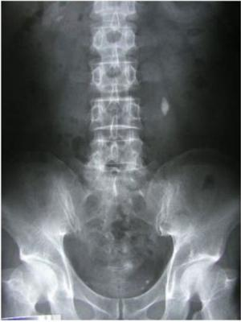
A Internação após hidratação vigorosa e antibioticoterapia
B Internação, solicitar vaga na UTI e avaliação urológica urgente
C Ureterolitotripsia a laser
D Ureterolitotomia urgente
E Implante de cateter duplo J à E + suporte clínico avançado em UTI
Revisar: possível letra faltando em enunciado
Questão 8 · Abordagem Inicial · Tratamento Endoscópico das Varizes · 4000004626AM, 65 anos, etilista de 1L de pinga aos nais de semana, hipertenso (em uso de Losartana), evolui com quadro de hematêmese vultuosa, seguida de desmaio, há 15 minutos da admissão. Admitido na Unidade de Emergência do HU, com PA: 80 x 50mmHg, FC: 130 bpm, descorado, com sudorese profusa.Ao exame físico, apresenta rarefação pilosa e algumas telangiectasias em tórax. Em relação a endoscopia no caso apresentando acima:
A Deve ser realizada imediatamente, pois reduz a mortalidade se realizada dentro de 1h da admissão
B Não está indicada, pois no caso apresentando o sangramento decorre de varizes de esôfago e, nesse caso, a indicação é pelo balão de Sengstaken-Blakemore
C Deve ser realizada dentro de 12h da admissão hospitalar após a estabilização hemodinâmica e, se possível, deve-se realizar terapêutica endoscópica.
D Deve ser realizada somente uma vez, sendo que, em caso de falha, procedimentos adicionais como TIPS (Shunt portossitêmico intra-hepático transjugular está indicado.
E Deve ser realizada dentro de 6h caso não seja atingida a estabilização hemodinâmica, como tentativa de cessar a hemorragia.
Questão 9 · Diagnóstico · 4000004608JOS, 45 anos, feminina, referindo queixa de dor em andar superior do abdome há 3 dias, irradiada para dorso, associada a episódios de náusea e vômitos esverdeados. Relata ingestão eventual de cerveja aos nais de semana. Previamente ao quadro, apresenta cólicas em hipocôndrio direito, com melhora ao utilizar brometo de escopolamina. Ao exame físico encontra-se com escleras levemente amareladas, abdome doloroso, principalmente em andar superior direita, onde observa-se defesa a palpação. Foi internada com suspeita de Pancreatite aguda, tendo como resultado de exames: TGO: 66, TGP: 57, Hb: 13, Le: 10.000, Cr: 2,4, U: 55, Bilirrubina total: 2,5 (bilirrubina indireta: 1,0), FA: 200, GGT: 160. Amilase sérica 140. Com base no quadro apresentando acima, é correto afirmar:
A É possível excluir pancreatite aguda devido ao valor normal da amilase
B Sugere-se dor abdominal secundária a insuficiência renal aguda
C Pode-se confirmar coledocolitíase como causadora da dor devido aos valores de enzimas canaliculares elevados
D Lipase poderia confirmar o diagnóstico em questão
E O próximo exame para o diagnóstico seria a Colangiorressonância Magnética
Questão 10 · Avaliação dos pacientes com monoartrite · 4000004590Paciente masculino, 47 anos, é admitido no Pronto Atendimento com quadro de monoartrite aguda em joelho direito. Ao exame, apresenta hiperemia, dor intensa limitando a mobilização ativa e passiva e moderado derrame articular. Nega trauma local prévio. A melhor conduta inicial, frente ao caso é:
A Realizar artrocentese de alívio no joelho direito e infiltrar corticosteróide.
B Encaminhar para o ortopedista para abordagem cirúrgica, imediatamente.
C Colher ácido úrico sérico e urinário, prescrever AINE, colchicina e compressa de gelo local.
D Puncionar o joelho para realização de citologia, pesquisa de cristais e cultura do líquido sinovial.
E Iniciar antibioticoterapia para artrite séptica
Questão 11 · Pneumologia · 4000004581A alternativa que contém a patologia mais frequentemente relacionada ao carcinoma pulmonar de pequenas células é:
A Dislipidemia.
B Diabetes mellitus.
C Sarcoma de Kaposi.
D Hipocalemia primária.
E Síndrome da Secreção Inapropriada de Hormônio Antidiurético (SIADH.
Questão 12 · Diagnóstico · 4000004575Em paciente com suspeita de tuberculose pulmonar, assinale a alternativa correta:
A O teste rápido molecular para tuberculose é o método mais indicado para investigação de caso novo de tuberculose pulmonar na população geral.
B A pesquisa de bacilos álcool-ácido resistentes em duas amostras de escarro é o método de primeira escolha no diagnóstico de tuberculose pulmonar em populações vulneráveis como profissionais da saúde, pessoas que vivem com HIV/aids e população privada de liberdade;
C O teste rápido molecular para tuberculose é o método mais indicado para investigação de tuberculose ativa em paciente com vistas a retratamento de tuberculose pulmonar.
D A rifampicina é a droga de escolha para o tratamento infecção latente pelo Mycobacterium tuberculosis (ILTB em pessoas que vivem com HIV/aids em uso de inibidores da protease.
E Deve-se vacinar com BCG toda criança portadora de HIV acima dos cinco anos de idade.
Questão 13 · Esof agograma Baritado · Acalásia Secundária Chagásica · Manometria Esof ágica · 4000004564Mulher, 58 anos, oriunda de zona rural do estado da Bahia, apresenta disfagia há 15 anos, que teve início com alimentos líquidos, evoluindo há um ano para sólidos, associada à perda de 8kg, além de regurgitação de alimento para cavidade oral após alimentação. Considerando esse caso clínico, a principal suspeita diagnóstica é _______________, e os exames mais adequados para investigação são ______________________________. A alternativa que preenche, correta e sequencialmente, as lacunas do trecho acima é
A Esofagite de refluxo / endoscopia digestiva alta, pHmetria e manometria esofágica
B Doença do refluxo gastroesofágico / endoscopia digestiva alta e manometria esofágica
C Neoplasia de esófago / endoscopia digestiva alta com biopsia e tomografia computadorizada
D Megaesôfago Chagásico / endoscopia digestiva alta, esofagograma e manometria esofágica
E Megaesôfago Chagásico / tomografia computadorizada, esofagograma e endoscopia digestiva alta
Questão 14 · Melanoma · Dermatologia · 4000004537Mulher, 62 anos, vem à UBS com queixa de mancha escura no braço com crescimento rápido nos últimos meses. Paciente refere que há cerca de 2 anos surgiu uma mancha amarronzada no braço esquerdo, e que nos últimos 6 meses notou crescimento e modi cação da lesão. Ao exame físico: mácula assimétrica de 4mm de diâmetro, apresentando 3 cores (marrom escuro, marrom claro e preto), com bordas regulares. Frente a esta lesão suspeita a melhor conduta é:
A Biópsia excisional da lesão com margem cirúrgicas de 2cm, pois a suspeita clínica é de melanoma, e envio do material para exame anatomopatológico.
B Biópsia incisional da lesão, pois a suspeita clínica é de nevo melanocítico, e envio do material para exame anatomopatológico.
C Biópsia excisonal da lesão com margem cirúrgica de 1 a 2mm, pois a suspeita clínica é de melanoma, e envio do material para exame anatomopatológico.
D Biópsia excisional da lesão com margem cirúrgicas de 1cm, pois a suspeita clínica é de melanoma, e envio do material para exame anatomopatológico.
E Acompanhamento clínico e nova avaliação em 6 meses.
Questão 15 · Pneumologia · 4000004510Paciente de 56 anos, sexo feminino, diabética, hipertensa, tabagista de longa data, procura Pronto Atendimento de Hospital Universitário queixando de que há 2 anos vem apresentando falta de ar para caminhar. Tem que descansar sempre um pouco pra poder voltar a caminhar. Está sentindo piora progressiva do quadro, porém há 1 dia passou a sentir falta de ar no repouso acompanhada de sudorese fria, mal estar e sensação de sufocamento. Ao EF: PA:120/80mmHg, FC=110bpm regular, FR=28ipm, saturação 89% em ar ambiente. Dados positivos do exame especial: Torax com murmúrio vesicular diminuído em bases, crepitações nas até terço médio de ambos os pulmões e coração com 2 bulhas rítmicas normofonéticas com sopro sistólico em foco mitral 2+/4+ irradiado para linha axilar média. Qual o diagnóstico mais provável e conduta mais apropriada a ser tomada pelo médico do Pronto Atendimento nesse primeiro momento?
A Cardiopatia de provável etiologia isquêmica, com provável quadro atual de equivalente isquêmica e disfunção ventricular diastólica. Tratamento: Suplementação de oxigênio, medidas para congestão, AAS 300mg via oral, clopidogrel 300 mg, eletrocardiograma em até 10 minutos e anticoagulação plena apenas se eletrocardiograma alterado e dosagem de enzimas cardíacas, eletrólitos e função renal.
B Cardiopatia de provável etiologia isquêmica, com provável quadro atual de equivalente isquêmico e disfunção ventricular sistólica. Tratamento: Suplementação de oxigênio, medidas para congestão, AAS 300 mg via oral, clopidogrel 300mg, eletrocardiograma em até 10 minutos e anticoagulação plena mesmo se eletrocardiograma normal e dosagem de enzimas cardíacas, eletrólitos e função renal.
C Insuficiência cardíaca classe IV sem etiologia definida. Tratamento: medidas para insuficiência cardíaca: suplementação de oxigênio, medidas para congestão com diurético e inibidor de enzima conversora de angiotensina se função renal normal.
D Insuficiência respiratória por provável doença pulmonary obstrutiva crônica. Tratamento: suplementação de oxigênio para mater saturação em torno de 90%, Beta 2 agonista, corticoterapia se necessário e gasometria arterial.
E Insuficiência cardíaca classe IV por provável evolução natural da doença e uso incorreto das medicações. Tratamento: medidas para insuficiência cardíaca: suplementação de oxigênio, medidas para congestão com diurético e nitroglicerina endovenosa e digital endovenoso.
Questão 16 · Pneumologia · 4000004495Paciente masculino, 48 anos, etilista crônico há 20 anos, há cerca de cinco anos fazendo uso de 1 litro de aguardente por dia. Há cinco dias com febre alta, calafrios, tosse produtiva com expectoração esverdeada. Há dois dias com dispnéia progressiva, piora em decúbito. Ao exame clínico: REG, descorado +/4+, desidratado +/4+, taquidispneico. PA=100x70 mmHg; FC=90 bpm; FR=26rpm; Temperatura axilar: 38,8ºC Aparelho Respiratório: tórax simétrico, expansibilidade reduzida à esquerda, som maciço à percussão em 2/3 inferiores à esquerda, murmúrio vesicular abolido nos 2/3 inferiores a E. RX de tórax: Qual é o diagnóstico mais provável?
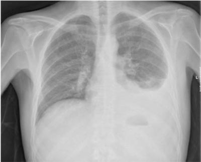
A Tuberculose pulmonar
B Pneumonia adquirida na comunidade (provável agente etiológico: Streptococcus pneumoniar)
C Pneumonia adquirida na comunidade (provável agente etiológico: Klebsiella pneumoniae
D Hidrotórax hepático
E Tromboembolismo pulmonar
Questão 17 · Doença de Crohn · 4000004469Homem, 21 anos, queixa-se de diarréia intermitente há 5 meses. Com 5 a 8 evacuações ao dia, fezes líquidas, sem sangue, com períodos de cólicas abdominais difusas precedendo as evacuações, melhora discreta ao defecar. Os episódios costumam durar 3 a 5 dias e vem se tornando mais frequentes. Perdeu 6 Kg desde o início do quadro. Há dois dias houve piora: evacuando até 10 vezes ao dia, com dor abdominal. Hoje teve um pico febril de 38,5oC. Exame físico: REG, descorado ++/4+, desidratado ++/4+. Abdome: plano, ácido, doloroso difusamente, com descompressão dolorosa em FID. RHA hiperativos. Exames Laboratoriais: Hb= 9,0g/dL, Ht= 29%, VCM=77fL, HCM= 26pg; leucócitos= 8.200 (bastões: 15%, segmentados= 61%; linfócitos= 24%), plaquetas= 450.000/mm3. Albumina= 3,2g/dL; K= 3,7 mEq/L; Na= 135mEq/L. Qual é o diagnóstico mais provável?
A Apendicite aguda
B Doença de Crohn
C Neoplasia de colon
D Doença celíaca
E Diverticulite
Questão 18 · Peritonite bacteriana espontânea PBE · Encef alopatia hepática · 4000004454Paciente masculino, 54 anos, portador de cirrose hepática por álcool. Chega ao plantão com história de aumento do volume abdominal há uma semana e confusão mental há um dia. Em uso de propranolol 40 mg 8/8 horas e espironolactona 100 mg ao dia. Ao exame clínico foi visto: PA=80x60 mmHg; FC=62 bpm. Consciente e orientado, Tremores tipo apping. Abdome globoso, indolor, com ascite de moderado volume. Feita paracentese diagnóstica + exames laboratoriais. Resultados: Líquido ascítico: Hemáceas: 4.000 por campo; Glóbulos brancos: 950; Neutró los: 600; Linfócitos: 150; Células mesoteliais: 200; Sangue: Creatinina: 1,0; Uréia: 48; Sódio: 134 ;Potássio: 4,5. O paciente foi internado. Quais ítens devem estar na prescrição deste paciente?
A Ciprofloxacina; espironolactona e lactulose
B Ceftriaxona; propranolol; espironolactona; albumina endovenosa e lactulose
C Ciprofloxacina; albumina endovenosa; propranolol e lactulose
D Ceftriaxona; albumina endovenosa; espironolactona e lactulose
E Ceftriaxona; albumina endovenosa e lactulose
Questão 19 · Exacerbação Aguda da DPOC EADPOC · Def inição · 4000004449A alternativa que contém os principais agentes causadores da descompensação infecciosa de causa bacteriana em portadores de doença pulmonar obstrutiva crônica (DPOC) é
A Haemophilus influenzae, Stafilococcus aureus e Mycoplasma pneumoniae.
B Haemophilus influenzae, Streptococcus pneumoniae e Moraxella Catarrhalis.
C Streptococcus pneumoniae, bacilos Gram-negativos e Haemophilus influenzae.
D Haemophilus influenzae, Streptococcus pneumoniae e Mycoplasma pneumoniae.
E Streptococcus pneumoniae, Mycoplasma pneumoniae e Chlamydophila pneumoniae.
Questão 20 · Manif estações clínicas · Diagnóstico · 4000004437Mulher de 47 anos de idade, com antecedente de Hipertensão Arterial Sistêmica, procura o pronto atendimento referindo cefaleia holocraniana de moderada intensidade, contínua, opressiva, que piora com a mudança de decúbito, iniciada há 5 semanas. Relata turvação visual bilateral de início recente, além de piora na intensidade da cefaléia, náuseas matinais e sudorese profusa vespertina. Medicações em uso contínuo: Enalapril 20mg 12/12 horas, Hidroclorotiazida 25mg/dia, Atenolol 50mg 12/12 horas, Anlodipino 5mg/dia. Na admissão hospitalar apresenta os sinais vitais: FC=87bpm, FR=18irpm, PA=152x93mmHg, T=37,9oC. No exame neurológico apresenta-se consciente, orientada no tempo e espaço, notado estrabismo divergente com PIFR e fotofobia, tremor no de extremidades, sem alterações na marcha ou da força muscular, reflexos osteotendinosos profundos presentes e exaltados, e presença de sinais de irritação meníngea. A tomogra a de crânio sem contraste não evidenciou alterações. No exame de líquido cefalorraquidiano apresentou pressão de abertura 32 cmH20, a amostra coletada possui aspecto xantocrômico, cuja análise laboratorial revelou celularidade de 384 células/mm3 com predomínio de células mononucleares, glicose 34 mg/dL e proteína 88 mg/dL. Exame bacterioscópico e cultura em andamento. Segundo o texto acima, assinale a alterativa que melhor corresponde ao caso:
A Emergência hipertensiva, iniciar tratamento com nitroprussiato de sódio.
B Meningite viral, indicar isolamento respiratório e iniciar tratamento com iniciar ceftriaxone.
C Meningite bacteriana, indicar isolamento respiratório e iniciar tratamento com ceftriaxone.
D Meningite tuberculosa, indicar isolamento respiratório e solicitar baciloscopia direta de escarro.
E Meningite meningocócica, indicar isolamento respiratório e iniciar tratamento com ceftriaxone.
Questão 21 · Tratamento medicamentoso · Artrite reumatoide AR · Tratamento · 4000004426No tratamento da artrite reumatoide, são consideradas drogas modi cadoras de doença, todas abaixo, EXCETO:
A Cetoprofeno
B Metotrexato
C Infliximabe
D Rituximabe
E Leflunomida
Questão 22 · Patogênese · 4000004422O sistema esquelético alberga até 35% dos casos de tuberculose extrapulmonar. A alternativa que contém o sítio esquelético mais frequentemente afetado pela tuberculose é
A Fêmur.
B Escápula.
C Osso ilíaco.
D Coluna vertebral.
E Articulações interfalangianas distais.
Questão 23 · Nef rologia · 4000004415Mulher de 32 anos, portadora de diabetes mellitus tipo 1 há 18 anos e insu ciência renal crônica, vem apresentando piora progressiva dos níveis pressóricos, sendo encaminhada da atenção primária para ajuste da terapêutica anti-hipertensiva. Está em uso de hidroclortiazida 25mg pela manhã. PA: 168/88mmHg; FC: 82bpm; Exames complementares: creatinina 2,8 mg/dL, ureia 46 mg/dL, albuminúria 44 mg/24h; Pergunta- se qual a meta de pressão arterial máxima e a classe medicamentosa de primeira escolha para controle pressórico da paciente?
A 140/80mmHg e bloqueador de canal de cálcio
B 40/80mmHg e bloqueadores de receptores de angiotensina
C 130/80mmHg e beta-bloqueadores
D 130/80mmHg e inibidores da enzima conversora de angiotensina
E 140/80mmHg e diurético de alça
Questão 24 · Hepatologia · 4000004369O tratamento da hepatite C crônica está indicado para todos os adultos (≥18 anos), sendo correto o item:
A Co-infectados pelo HIV, dependentemente do estadiamento de fibrose hepática ou da contagem de células LT-CD4+.
B Co-infectados pelo HIV, independentemente do estadiamento de fibrose hepática somente da contagem de células LT-CD4+.
C Co-infectados pelo HIV, independentemente do estadiamento contagem de células LT-CD4+ e sim da fibrose hepática.
D Co-infectados pelo HIV, independentemente do estadiamento de fibrose hepática ou da contagem de células LT-CD4+.
Questão 25 · Classif icação Histológica de Lauren · Tratamento do Adenocarcinoma Gástrico · Epidemiologia · 4000004364Sobre as neoplasias gástricas, é correto afirmar que
A o adenocarcinoma corresponde a 50% dos tumores malignos do estômago.
B os tumores gástricos no antro devem ser sistematicamente tratados com gastrectomia total.
C o subtipo intestinal, na classificação de Lauren, tem disseminação predominantemente linfática.
D a esplenectomia associada à gastrectomia não está associada ao aumento de morbimortalidade e deve ser feita com objetivo de aumentar a chance de cirurgia R0.
E o consumo aumentado definitratos, a infecção pelo Helicobacter Pylori, a cirurgia gástrica prévia, o tabagismo e o gênero masculino são fatores associados ao risco aumentado de desenvolvimento de câncer gástrico.
Questão 26 · Dermatologia · 4000004339Sobre as dermatoses infecciosas que acometem os pés, é correto afirmar que
A o bacilo de Koch pode levar a úlcera e lúpus vulgar.
B os dermatófitos podem causar lesões de paroníquia aguda e impetigo, provocadas por má higiene e manipulação que levem a trauma local.
C o estafilococos causa dactilite bolhosa distal e erisipela, em decorrência de porta de entrada aberta ou manipulação, levando a trauma.
D o estreptococos pode levar a eritrasma e queratose plantar sulcada, com erosões circulares nos poros que fluorescem à lâmpada de Wood.
E a corinebactéria causa lesões plantares, interdigitais e ungueais. Em pacientes jovens, ocorre por uso de calçado fechado. Em idosos, acontece assimetricamente e afeta, geralmente, o espaço entre o quarto e quinto pododáctilos.
Questão 27 · Avaliação laboratorial · Apresentação clínica · 4000004318A osteoporose é uma doença sistêmica do esqueleto, caracterizada por baixa massa óssea e deterioração da microarquitetura do tecido ósseo. Na análise laboratorial da osteoporose primária, sem fraturas associadas, comumente encontram-se:
A Cálcio, Fósforo e fosfatase alcalina normais.
B Cálcio e fósforo normais ou baixos, e fosfatase alcalina elevada.
C Cálcio elevado, fósforo baixo e fosfatase alcalina normal.
D Cálcio e fosfatase alcalina baixos e fósforo aumentado.
E Cálcio normal e fósforo e fosfatase alcalina baixos.
Questão 29 · Def inição e Etiologias · Sangramento Diverticular · 4000004247A causa mais frequente de hemorragia digestiva baixa em pacientes na sexta e sétima décadas de vida é:
A neoplasia.
B angiodisplasia.
C polipose colônica.
D doença hemorroidária.
E doença diverticular do cólon.
Questão 30 · Inf ectologia · 4000004232Nos casos clínicos, de TB pulmonar pós-primária ou secundária a tosse é produtiva, a expectoração pode ser purulenta ou mucoide, com ou sem sangue. Indique o item inadequado:
A A febre vespertina, sem calafrios, não costuma ultrapassar os 38,5°C.
B A sudorese noturna e a anorexia são raras.
C O exame físico geralmente mostra fácies de doença crônica e emagrecimento, embora indivíduos com bom estado geral e sem perda do apetite também possam ter TB pulmonar.
D A ausculta pulmonar pode apresentar diminuição do murmúrio vesicular, sopro anfórico ou mesmo ser normal.
Questão 31 · Reumatologia · 4000004204Colete informações junto aos acompanhantes ou familiares das vítimas de intoxicações por agrotóxicos, especialmente quando são crianças ou pacientes inconscientes. Sendo inadequado apenas:
A Verificar a disponibilidade da embalagem e bula do produto.
B A via de exposição: via oral, dérmica, inalatória, e outras menos frequentes.
C Agente sem quantidade utilizada.
D Uso de medicamentos, doenças agudas e crônicas, uso de álcool, drogas ilícitas.
Questão 32 · Inf ectologia · 4000004188Os progressos nos determinantes sociais da saúde têm tido um efeito na saúde dos brasileiros e isso provavelmente contribuiu também para a redução de doenças infecciosas, como a TB, no país. Somente não podemos aceitar que:
A Intervenções direcionadas aos determinantes socioeconômicos podem contribuir na melhoria do controle da TB no Brasil, a redução da pobreza não aparece como tema central.
B Erradicar a pobreza, em todas as suas formas e dimensões, incluindo a pobreza extrema, aparece como requisito indispensável para o desenvolvimento sustentável.
C Assegurar uma vida saudável e promover o bem-estar para todas e todos, devendo-se acabar com a epidemia global de tuberculose.
D A Estratégia pelo Fim da Tuberculose propõe a inclusão de intervenções socioeconômicas para prevenir e controlar a doença e também recomenda estratégias de proteção social para os pacientes.
Questão 33 · Lúpus Eritematoso Sistêmico Pediátrico · 4000004154Adolescente de 15 anos, sexo feminino, apresenta artrite em tornozelos bilateralmente, associada a desânimo e canseira há algumas semanas. Você solicita alguns exames complementares, com os seguintes resultados: Hemoglobina 9,5 g/dL, leucócitos: 3.700/mm³ (neutró los: 77%, linfócitos: 19%, monócitos: 4%), plaquetas: 290.000/mm³; sedimento urinário: proteínas (1,2g) e cilindros hemáticos e granulares; FAN: 1/640; Anti-DNA positivo. O diagnóstico dessa paciente é:
A Arterite de Takayasu
B Artrite idiopática juvenil
C Esclerodermia sistêmica
D Poliarterite nodosa
E Lúpus eritematoso sistêmico
Questão 34 · Inf ectologia · 4000004150Visando promover ações que viabilizem o tratamento adequado das populações com tuberculose mais vulnerável, especialmente pessoas vivendo com HIV e população privada de liberdade, somente sendo inadequado que:
A Adotar estratégias para acompanhamento do tratamento, capazes de reduzir os desfechos favoráveis.
B Estimular o desenvolvimento do cuidado centrado na pessoa com tuberculose.
C Organizar a rede de atenção local, tendo em vista a organização da atenção básica, para favorecer o acesso e a qualidade da assistência.
D Integrar ações de vigilância epidemiológica e assistência.
Questão 35 · Hepatologia · 4000004135Exames complementares recomendados a todos os portadores de hepatite C crônica, a serem solicitados na primeira consulta e durante o acompanhamento ambulatorial. Somente não podemos concordar com o item:
A Teste rápido – hepatite B, sífilis, HIV, detecção de possíveis coinfecções.
B Ultrassonografia de abdome superior a cada 6 meses, na vigência de cirrose.
C Beta HCG a ser realizado antes da indicação do tratamento.
D Biópsia hepática em todos os casos.
Questão 36 · Inf ectologia · 4000004108Para tratar de forma adequada e oportuna todos os casos diagnosticados de tuberculose visando à integralidade do cuidado. Somente não indicamos:
A Desenvolver ações que favoreçam a adesão ao tratamento da tuberculose.
B Integrar o cuidado do paciente com tuberculose com outros equipamentos da rede da saúde e assistência social.
C Implantar a vigilância da tuberculose droga resistente.
D Tratamento indiretamente observado.
Questão 37 · Reumatologia · 4000004094Os agrotóxicos classificados como inibidores de colinesterase, dos quais fazem parte organofosforados e carbamatos, constituem um grupo de substâncias amplamente utilizadas para controle de pragas na agropecuária, desinsetização urbana e doméstica e controle de vetores. Sendo assim, não podemos aceitar o seguinte item:
A Esses compostos também são utilizados na fabricação de armas químicas e de alguns produtos farmacológicos.
B Os organofosforados não englobam os derivados de ácido fosfórico e seus homólogos.
C Os carbamatos, por sua vez, são ésteres do ácido carbâmico ou do ácido N-metil-carbâmico.
D Constituem um grupo de substâncias amplamente utilizadas como inseticidas, nematicidas, larvicidas e acaricidas sistêmicos ou para controle de pragas.
Questão 38 · Hepatologia · 4000004083A alfaepoetina está indicada para o manejo da anemia das Terapêuticas para Hepatite C, de acordo com os seguintes critérios:
A Hemoglobina atual <9/dL ou queda >3,0g/dL em relação ao nível pré-tratamento; Pacientes sintomáticos.
B Hemoglobina atual <10g/dL ou queda >2,0g/dL em relação ao nível pré-tratamento; Pacientes sintomáticos.
C Hemoglobina atual <10g/dL ou queda >3,0g/dL em relação ao nível pré-tratamento; Pacientes sintomáticos.
D Hemoglobina atual <11g/dL ou queda >3,0g/dL em relação ao nível pré-tratamento; Pacientes assintomáticos.
Questão 39 · Tuberculose pulmonar · Tratamento · 4000004075Paciente de 67 anos, tabagista com quadro de tosse produtiva e febre não aferida, há dois dias. Relata que apresentou, há quatro meses, quadro de tosse com hemoptise e perda ponderal, associado a sudorese noturna. Diante da hipótese do quadro atual, mas levando em consideração seu histórico de quatro meses, assinale, a alternativa CORRETA que apresenta a classe de antibiótico que NÃO deve ser prescrita.
A Quinolonas.
B Macrolideos.
C Cefalosporinas.
D Penicilinas.
E Nenhuma das alternativas.
Questão 40 · Inf ectologia · 4000004050Apenas algumas características especí cas desses esquemas para o tratamento da hepatite Cos diferenciam entre si, tais como os listados abaixo, exceto:
A Indicações para determinadas populações.
B Diferenças inerentes à comodidade posológica.
C Dispensabilidade da realização de exames não se altera.
D Preço praticado pelas indústrias fabricantes.
Revisar: possível letra faltando em enunciado
Questão 41 · Inf ectologia · 4000004035Os sintomas clássicos da Tuberculose podem ocorrer em qualquer das três apresentações. Na forma primária, a pós-primária (ou secundária) e a miliar como listados abaixo, indique a inadequada:
A Tosse persistente seca ou produtiva.
B Febre matutina.
C Sudorese noturna.
D Emagrecimento.
Questão 42 · Inf ectologia · 4000004017Na Tuberculose TB pleural eventualmente, pode simular pneumonia bacteriana aguda. Podemos apenas aceitar como correto o item:
A O líquido pleural tem características de transudado, predomínio de linfócitos e baixo rendimento da pesquisa de BAAR.
B O líquido pleural tem características de exsudato, predomínio de polimorfonucleares e baixo rendimento da pesquisa de BAAR.
C O líquido pleural tem características de exsudato, predomínio de linfócitos e baixo rendimento da pesquisa de BAAR.
D O líquido pleural tem características de exsudato, predomínio de linfócitos e alto rendimento da pesquisa de BAAR.
Questão 43 · Epilepsia e Gestação · 4000004003Paciente, em idade fértil, chega ao consultório desejando planejar gestação. No momento, está sem nenhuma medicação, decidiu suspender por conta própria. Possui, como diagnóstico, esclerose temporal medial, tendo média de uma crise a cada dois meses. Assinale a alternativa CORRETA quanto à melhor conduta a ser tomada.
A Manter a paciente sem mediação.
B Iniciar Carbamazepina.
C Iniciar Lamotrigina.
D Iniciar Ácido Valpróico.
E Contraindicar de forma absoluta a gestação.
Questão 44 · Síndrome nef rótica · Glomeruloesclerose f ocal e segmentar · As grandes síndromes glomerulares · 4000003987AVS, 28 anos, masculino, deu entrada no PS com queixa de urina com espuma, inchaço nas pernas e cefaléia. Ao exame, apresenta-se lúcido e orientado, eupneico, hidratado, normocorado, afebril, anictérico, acianótico. PA: 157/93 mmHg. Ausculta cardíaca, sem alterações, ausculta respiratória revela murmúrio vesicular universalmente audível, mas com estertores crepitantes em base direita. Abdome inocente. Membros inferiores com edema de ++/4+, panturrilhas livres. Os exames laboratoriais demonstraram-se com os seguintes valores: Hb: 13, Ht: 38, Leucócitos: 9200, Plaq.: 158000, Glicose: 98, Na+: 136, K+: 3,8, Cálcio: 9,2; Fósforo: 3,8; Albumina: 3,3; Colesterol Total: 198, TGO: 16, TGP: 20, EAS com hematúria leve e proteína >30mg/dL, Proteinúria de 24hs: 2,8g/24hs. USG de Rins e Vias Urinárias sem alterações. Biópsia renal, conforme imagem abaixo. De acordo com o caso clínico e a imagem expostos, assinale a CORRETA sobre o provável diagnóstico.
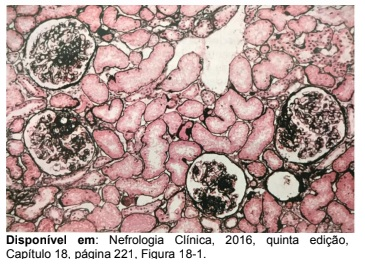
A Glomeluroesclerose Segmentar e Focal.
B Doença de Lesões Mínimas.
C Nefropatia por IgA.
D Nefropatia Membranosa.
E Nefrite Lúpica.
Questão 45 · Esquema básico inicial · 4000003946Paciente masculino, de 36 anos de idade, que compareceu no SAE do município de residência, onde realizou os testes rápidos para Hepatite B, Hepatite C, HIV e Sí lis. O teste de triagem para HIV resultou reagente, imediatamente, foi realizado um segundo teste confirmatório (Biomanguinhos) que, também, resultou reagente. Ele encontra-se assintomático. Como parte da abordagem inicial foram indicados exames laboratoriais e outros, como a Contagem de linfócitos T CD4+ e a Carga viral, segundo Protocolo Clínico e Diretrizes Terapêuticas (PCDT) para o manejo da infecção pelo HIV, em adultos 2018, do Ministério da Saúde. A terapia antirretroviral lhe foi oferecida, no mesmo dia, do diagnóstico. Na semana seguinte, recebemos os resultados e a contagem de linfócitos T CD4+ foi de 682 células/mm³ e a carga viral foi de 2.524 cópias/mL. Assinale a alternativa CORRETA que apresente esquema antirretroviral inicial, indicado ao paciente.
A Combinação de três antirretrovirais, sendo dois inibidores de transcriptase reversa análogos de nucleotídeos/nucleosídeos, associados a um inibidor de transcriptase reversa não análogo de nucleotídeos/nucleosídeos. O esquema de primeira linha deve ser: comprimidos 2 em 1 de Tenofovir 300 mg + Lamivudina 300 mg, tomado 1 comprimido coformulado ao dia e associado a um comprimido de 200 mg de Nevirapina, de 12 em 12 horas, Via Oral.
B Combinação de três antirretrovirais, sendo dois inibidores de transcriptase reversa análogos de nucleotídeos/nucleosídeos, associados a um inibidor de protease. O esquema de primeira linha deve ser monoterapia de Tenofovir 1 comprimido de 300 mg/dia, Lamivudina 2 comprimidos de 150 mg/dia, Lopinavir/Ritonavir (200 mg/50 mg) 4 comprimidos por dia (2 comprimidos de 12 em 12 horas), via oral.
C Combinação de três antirretrovirais, sendo dois inibidores de transcriptase reversa análogos de nucleotídeos/nucleosídeos, associados a um inibidor de protease. O esquema de primeira linha deve ser monoterapia de Zidovudina 1 comprimido de 300 mg de 12 em 12 horas, Lamivudina 2 comprimidos de 150 mg/dia, Lopinavir/Ritonavir (200 mg/50 mg), 4 comprimidos por dia (2 comprimidos de 12 em 12 horas), via oral.
D Combinação de três antirretrovirais, sendo dois inibidores de transcriptase reversa análogos de nucleotídeos/nucleosídeos, associados a um inibidor de integrase. O esquema de primeira linha deve ser comprimido 2 em 1 de Tenofovir 300 mg + Lamivudina 300 mg (1 comprimido ao dia), via oral, associado a Dolutegravir 50 mg (1 comprimido ao dia), via oral.
E A combinação de três antirretrovirais, sendo dois inibidores de transcriptase reversa análogos de nucleotídeos/nucleosídeos associados a um inibidor de transcriptase reversa não análogo de nucleotídeos/nucleosídeos. O esquema de primeira linha deve ser: comprimidos 2 em 1 de Tenofovir 300 mg + Lamivudina 300 mg (1 comprimido da combinação ao dia), associado a um comprimido de Efavirenz 600 mg/dia.
Questão 46 · Endocrinologia · 4000003919Além das dosagens bioquímicas, a eletroforese de lipoproteínas ainda é utilizada por alguns médicos na prática clínica. O item com erro é:
A Atualmente, esse exame só é necessário em casos muito isolados, como na constatação da ausência de lipoproteínas.
B Na maioria dos casos, a eletroforese de lipoproteínas não auxilia na tomada de decisões clínicas.
C O perfil lipídico deve ser determinado em indivíduos com dieta habitual, estado metabólico e peso estáveis por pelo menos 2 meses antes da realização do exame.
D Devem-se evitar a ingestão de álcool e a prática de atividade física vigorosa nas 72 e 24 horas que antecedem a coleta de sangue.
Questão 47 · Inf ectologia · 4000003868A hantavirose manifesta na fase cardiopulmonar pelo início da tosse, que em geral é seca, mas, em alguns casos, pode ser produtiva, acompanhada por taquicardia, taquidispneia e hipoxemia. Apenas um item se mostra correto, assinale-o:
A Derrame pleural, principalmente bilateral, de pequena magnitude, é comum.
B Tais manifestações podem ser seguidas por uma lenta evolução para edema pulmonar não cardiogênico, hipotensão arterial e colapso circulatório.
C Na radiografia do tórax, observa-se infiltrado intersticial difuso bilateral que rapidamente evolui com enchimento alveolar, raramente nos hilos e nas bases pulmonares.
D A área cardíaca é aumentada.
Questão 48 · Inf ectologia · 4000003853Nas Américas, a hantavirose se manifesta sob diferentes formas, desde doença febril aguda inespecí ca, até quadros pulmonares e cardiovasculares mais severos e característicos, podendo evoluir para a síndrome da angústia respiratória (SARA). O item com erro é:
A A infecção humana ocorre mais frequentemente pela inalação de aerossóis, formados a partir da urina, fezes e saliva de roedores infectados.
B Na fase prodrômica, os pacientes iniciam com manifestações mais frequentes de febre, mialgias, dor dorsolombar, dor abdominal, astenia, cefaleia intensa e sintomas gastrointestinais como náuseas, vômitos e diarreia.
C Quadro inespecífico pode durar cerca de 1 a 6 dias, podendo prolongar-se por até 15 dias, e depois regredir.
D Quando surge tosse seca, deve-se suspeitar da possibilidade de evolução para uma fase clínica mais leve a cardiopulmonar.
Revisar: possível letra faltando em enunciado
Questão 49 · Hematologia · 4000003837Você atende no pronto-socorro um menino de 5 anos com petéquias e equimoses em tronco, abdome, membros inferiores e superiores há 1 dia, Antecedente de quadro gripal há 20 dias com melhora completa dos sintomas. Ao exame físico, você observa as referidas lesões e, na inspeção da cavidade oral, encontra petéquias em mucosa jugal e equimose de 0,7 cm de diâmetro em língua. Não havia alterações no restante do exame, nem sinais de sangramento em outros sítios. Foram coletados exames: Hemoglobina 12,1 g/dL, leucócitos de 9 500/mm³ com diferencial normal e plaquetas 17 000/mm³. Qual conduta mais adequada a ser tomada neste momento?
A Esplenectomia de urgência.
B Transfusão de concentrado de plaquetas.
C Transfusão de crioprecipitado.
D Transfusão de plasma.
E Imunoglobulina endovenosa.
Questão 50 · Inf ectologia · 4000003829Estratégias de adesão à PROFILAXIA PRÉ-EXPOSIÇÃO (PrEP) de risco à infecção pelo HIV, somente não mostra como correto que:
A A adesão aos ARV é fundamental para que a PrEP seja efetiva e eficaz.
B A adesão não deve ser abordada em todas as consultas, a partir de uma via de comunicação simples e aberta.
C Avaliação da adesão da pessoa em uso da PrEP à tomada da medicação e às demais medidas de prevenção do HIV.
D Identificação de barreiras e facilitadores da adesão, evitando julgamentos ou juízos de valor.
Questão 51 · Inf ectologia · 4000003801Sufusão conjuntival é um achado característico da leptospirose e é observada em cerca de 30% dos pacientes. O item com erro é:
A Costuma ser diagnosticada como uma ""síndrome gripal"", ""virose"" ou outras doenças que ocorrem na mesma época, como dengue ou influenza.
B É importante notar a existência de alguns sinais e sintomas que podem ajudar a diferenciar a fase precoce da leptospirose de outras causas de doenças febris agudas.
C Esse sinal aparece no início da fase precoce e caracteriza-se por hiperemia e edema da conjuntiva ao longo das fissuras não palpebrais.
D Com a progressão da doença, os pacientes também podem desenvolver petéquias e hemorragias conjuntivais.
Questão 52 · Neurologia · 4000003786Menino de 12 anos de idade é trazido ao pronto-socorro com história de falta de ar há 48 horas, cefaleia e desmaio. Ao exame, encontra-se ansioso, dispneico, pletórico, com estase venosa central. O paciente se recusa a deitar para o exame abdominal, a ausculta pulmonar é limpa. Qual diagnóstico mais provável?
A Hipertensão intracraniana.
B Síndrome do mediastino superior.
C Ataque de pânico.
D Síndrome de lise tumoral.
E Crise de asma.
Questão 53 · Inf ectologia · 4000003780Geralmente, a leptospirose é associada à intensa mialgia, principalmente em região lombar e nas panturrilhas. Entretanto, nenhum desses sinais clínicos da fase precoce é su cientemente sensível ou específico para diferenciá-la de outras causas de febre aguda. O item com erro é:
A Podem ocorrer diarreia, artralgia, hiperemia ou hemorragia conjuntival, fotofobia, dor ocular e tosse.
B Exantema ocorre em 10 a 20% dos pacientes e apresenta componentes de eritema macular, papular, urticariforme ou purpúrico, distribuídos no tronco ou região pré-tibial.
C Em menos de 20% dos casos de leptospirose também podem ocorrer hepatomegalia, esplenomegalia e linfadenopatia.
D A fase precoce da leptospirose não tende a ser autolimitada e piora entre 3 e 7 dias.
Questão 54 · Inf ectologia · 4000003769Adolescente Masculino, 16 anos de idade, apresenta história de adenomegalia cervical unilateral há seis meses de crescimento progressivo e, nos últimos dois meses, apresenta febre diária, emagrecimento e sudorese. O diagnóstico mais provável é
A Linfoma de Hodgkin.
B Linfoma de Burkitt.
C Neuroblastoma.
D Adenocarcinoma de parótida.
E Carcinoma de tireoide.
Questão 55 · Gastroenterologia · 4000003730A lactase é encontrada
A Nas microvilosidades dos enterócitos, especialmente na região da cripta.
B Nas microvilosidades dos enterócitos, especialmente no ápice da vilosidade.
C Na secreção pancreática em quantidade na saliva.
D Na secreção pancreática em quantidade proporcional à lipase.
E Na secreção pancreática e nas microvilosidades dos enterócitos do ápice e da cripta.
Questão 56 · Comunicação interventricular · 4000003717Lactente de 2 meses apresenta na ausculta cardíaca sopro holossistólico rude +++/6+ em borda esternal esquerda média que pode corresponder a
A Estenose da valva tricúspide.
B Estenose valvar aórtica.
C Comunicação interventricular.
D Sopro funcional.
E Fistula arteriovenosa pulmonar.
Questão 57 · Cardiologia · 4000003702O achado de onda T positiva em todas as derivações precordiais em uma criança de 45 dias de vida pode ser sinal de
A Normalidade para a faixa etária.
B Sobrecarga ventricular esquerda.
C Sobrecarga atrial esquerda.
D Sobrecarga biventricular.
E Sobrecarga ventricular direita.
Questão 58 · Quadro clínico da anemia f alcif orme · 4000003691A anemia falciforme é uma hemoglobinopatia hereditária que modi ca a forma das hemácias e tem apresentações clínicas variadas. Sobre essa doença, assinale a alternativa INCORRETA.
A É causada por uma mutação no gene que codifica a cadeia beta da hemoglobina.
B Dor óssea é uma manifestação comum da doença.
C Síndrome torácica aguda é uma das causas mais frequentes de óbito no paciente com anemia falciforme.
D Salmonella é o agente infeccioso mais relacionado à osteomielite nesses pacientes.
E É comum esplenomegalia, em pacientes homozigotos adultos.
Revisar: possível letra faltando em enunciado
Questão 59 · Hiperprolactinemia · Hiperprolactinemia · 4000003673Puérpera, amamentando, usuária de anticoncepcional oral contínuo, apresenta ressecamento vaginal que gera desconforto nas relações sexuais. O provável hormônio envolvido nesse problema é:
A progesterona
B estrogênio
C prolactina
D testosterona
Questão 60 · Inf ectologia · 4000003670As pessoas em uso de PROFILAXIA PRÉ-EXPOSIÇÃO (PrEP) de risco à infecção pelo HIV devem ser informadas sobre a possibilidade de eventos adversos decorrentes do uso das medicações. Indique o item com erro:
A Nos ensaios clínicos disponíveis, os eventos adversos foram incomuns e resolveram-se no primeiro mês do uso de PrEP.
B O profissional de saúde não deve informar ao usuário os eventos adversos esperados (náusea, cefaleia, flatulência e edemas.
C Os eventos adversos são transitórios e que há possibilidade de uso de medicação sintomática para resolução dos sintomas.
D Além disso, os usuários devem ser orientados sobre sinais e sintomas de infecção aguda pelo HIV que requeiram avaliação médica imediata.
Questão 61 · Inf ectologia · 4000003660Assinale a alternativa que completa CORRETAMENTE a frase abaixo. No derrame pleural por tuberculose, habitualmente se encontra:
A Desidrogenase lática em valores acima de 1.000 U/L.
B Proteínas em valores baixos, podendo caracterizar transudato.
C Predomínio linfomonocitário na celularidade específica.
D Presença do Mycobacterium tuberculosis na maioria dos casos.
E Líquido pleural purulento.
Questão 62 · Doença hepática gordurosa não alcoólica DHGNA Esteatohepatite não alcoólica NASH · Clínica Médica · 4000003646Diagnóstico A esteatose hepática pode se apresentar como Doença Hepática Gordurosa Alcóolica e Doença Hepática Gordurosa não Alcoólica (NASH/DHGNA), conforme a etiologia. A esteatose hepática e a esteato-hepatite não alcoólica (NASH) fazem parte do quadro chamado doença gordurosa não alcoólica, com a sigla em inglês NAFLD. Sobre o exposto, assinale a alternativa CORRETA.
A Todo paciente, portador de doença hepática gordurosa não alcoólica, deverá ser submetido à biópsia hepática, para programação da terapêutica e prognóstico da doença.
B A esteato-hepatite não alcoólica (NASH) é doença de alta prevalência e associa-se à síndrome metabólica, sendo que perda de peso e controle de níveis glicêmicos e lípides fazem parte do tratamento.
C O tratamento da doença hepática gordurosa não alcóolica (DHGNA), baseia-se na perda de peso, atividade física e gastroplastia redutora, associado ao uso de medicações para o controle da doença.
D O ácido ursodesoxicólico trouxe consideráveis avanços terapêuticos, no tratamento da DHGNA, especialmente, em suas formas avançadas com fibrose, em que mostrou melhora histológica e funcional quando administrado por mais de 3 meses.
E A melhor estratégia, para diferenciação de esteato- hepatite alcoólica de esteato- hepatite não alcoólica, é a análise histológica da biópsia hepática.
Questão 63 · Endocrinologia · 4000003641Paciente do sexo feminino, 53 anos, apresenta queixa de pele seca, fadiga, constipação e ganho de peso nos últimos seis meses. Trabalha em mercado de frutos do mar, relata internação prévia para realização de histerectomia há 18 meses e faz uso ocasional de anti-inflamatório para alívio de dorsalgia. A dosagem de TSH é de 39 uIU/L. Assinale a alternativa CORRETA, que apresenta o diagnóstico mais provável.
A Hipotireoidismo pós-cirúrgico.
B Hipotireoidismo terciário.
C Hipotireoidismo secundário à intoxicação por iodo.
D Hipotireoidismo medicamentoso.
E Hipotireoidismo primário.
Questão 64 · Doença de Graves · Endocrinologia · 4000003628Paciente 30 anos, apresentando perda de peso (6 kg, em 40 dias), palpitações, exoftalmia, bócio, pele úmida, tremores de extremidades. Sobre essa patologia, assinale a alternativa CORRETA.
A A solicitação do anticorpo TRAB, para fazer o diagnóstico, é essencial.
B O uso de beta-bloqueador e drogas anti-tireoidianas, como tapazol e propiltiuracil, é necessário para o manejo clínico inicial dessa doença.
C A paciente tem indicação de tireoidectomia de emergência.
D A paciente tem indicação de realização de radioiodo, especialmente, se for tabagista e com altos níveis de anticorpos TRAB.
E Presença de prurido com uso de tapazol, contraindica o uso de drogas anti- tireoidianas, sendo necessária dose ablativa com radioiodo.
Questão 65 · Cardiologia · 4000003627Paciente do sexo feminino, 26 anos, apresenta queixa de fadiga e dispneia aos esforços. Apresenta pressão arterial de 115/70 mmHg e a frequência cardíaca de 110 bpm. Ao se levantar, a pressão arterial cai para 95/55 mmHg e a frequência cardíaca se eleva para 128 bpm. O hemograma apresenta hemoglobina de 7,8 g/dL, volume corpuscular médio de 74 fL, leucometria de 4.300/µL e contagem de plaquetas de 395.000/µL. Assinale a alternativa CORRETA, que apresenta a hipótese diagnóstica mais provável.
A Anemia ferropriva.
B Anemia hemolítica.
C Anemia aplástica.
D Anemia falciforme.
E Anemia perniciosa.
Questão 66 · Hematologia · 4000003615Paciente do sexo masculino, 56 anos, apresenta quadro de anemia. Queixa-se de fraqueza, tontura e sensação de formigamento nos pés. O hemograma revela hemoglobina de 10g/dL, normalidade e hipersegmentação de neutró los. Apresenta história de internação hospitalar prévia devido a trauma abdominal, tendo sido submetido a laparotomia exploradora e ressecção cirúrgica de íleo terminal. Não apresenta, respectivamente, a hipótese diagnóstica mais provável e o tratamento mais apropriado para a condição.
A Anemia ferropriva - Sulfato ferroso por via oral.
B Anemia perniciosa - Vitamina B12 por via oral.
C Anemia por deficiência de folato - Ácido fólico por via oral.
D Anemia por deficiência de vitamina B12 - Vitamina B12 por via parenteral.
E Anemia multicarencial - Ácido fólico, vitamina B12 e sulfato ferroso por via oral.
Questão 67 · Endocrinologia · 4000003614Paciente de 68 anos, diabética há 10 anos, em uso de metformina 2g ao dia e glibenclamida 10 mg ao dia. Relata que, nos últimos 30 dias, tem apresentado suores noturnos, acompanhados de fraqueza. Nega perda de peso. Relata realizar atividade física 03 x por semana. Relata estar se alimentando de carboidratos integrais. P= 60 kg; A= 1,67 cm. Exames laboratoriais: Glicemia de jejum: 76 mg/dl; Glicemia pós-prandial: 80 mg/dl/ HbA1c: 5.0%; Creatinina: 1,4mg/dl; Clearence de creatinina: 34ml/min. Sobre o exposto, assinale a alternativa com a conduta CORRETA.
A Suspender a metformina e manter a glibenclamida.
B Suspender as duas medicações e insulinizar a paciente.
C Substituir a glibenclamida, por um inibidor de DPP 4.
D Susbstituir a glibenclamida, por inibidor de DPP4, e diminuir a dose da metformina, para 1 grama.
E Diminuir a metformina, para 1 grama, e manter a glibenclamida.
Questão 68 · Psoríase · 4000003601Psoríase é doença inflamatória crônica, acomete pele e articulações, multifatorial e imunologicamente mediada. Sobre o exposto, assinale a alternativa INCORRETA.
A Dentre os fatores desencadeantes da psoríase estão traumatismos locais, infeção bacteriana e viral, estresse, tabagismo e alcoolismo.
B Nas manifestações clínicas são observadas placas eritemato escamosas, escamas secas, brancas ou prateadas, aderentes e estratificadas, delimitadas.
C No diagnóstico diferencial da psoríase devem ser considerados os eczemas, dermatite seborreica, sífilis secundária, farmacodermias e lúpus eritematoso.
D O diagnóstico é baseado na história, nos aspectos clínicos da lesão que, na maioria das vezes, são muito características e definem a doença.
E A biópsia e o anatomopatológico das lesões suspeitas de psoríase é que determinam o diagnóstico da doença.
Questão 69 · Tratamento · Obstetrícia · 4000003597Mulher com 34 anos de idade, gestante de 28 semanas, iniciou quadro febril há cinco dias associado a dor no hemitórax esquerdo à respiração profunda. Há dois dias passou a apresentar tosse produtiva com expectoração amarelada. Procurou Unidade de Pronto Atendimento. Ao exame: bom estado geral; sinais vitais: Pulso = 100 bpm; Pressão arterial = 120 x 80 mmHg; Frequência respiratória = 23 irpm. Temperatura axilar = 39ºC; Ausculta pulmonar: crepitações, broncofonia e aumento do frêmito tóraco-vocal na base do pulmão esquerdo. O leucograma apresenta 15.800 leucócitos/mm³, com predomínio de polimorfonucleares neutrófilos. Qual a conduta a ser tomada, com relação a exames de imagem e tratamento antimicrobiano?
A Solicitar radiografia de tórax com proteção abdominal e iniciar tratamento com amoxicilina oral
B Solicitar ultrassonografia de tórax e iniciar tratamento com quinolona respiratória oral
C Solicitar tomografia computadorizada do tórax e iniciar tratamento com aminoglicosídeo injetável
D Solicitar radiografia de tórax com proteção abdominal e iniciar claritromicina oral
Questão 70 · Onicomicose · 4000003582Onicomicoses são infecções das unhas, causadas por fungos dermato tos e fungos lamentosos não dermatofitos. Sobre o tratamento das onicomicoses, assinale a alternativa CORRETA.
A Recomenda-se sempre a terapêutica sistêmica e tópica. A escolha terapêutica mais eficaz para fungos dermatofitos é a terbinafina, na dose de 250mg/dia.
B O cetoconazol, na dose de 200mg, no período de 90 dias, é medicamento de escolha para onicomicoses, causadas por fungos dermatofitos.
C O itraconazol, na dose diária de 100mg dia, deve ser feito pelo período de 30 dias.
D Se o grau de distrofia ungueal for muito importante, recomenda-se somente avulsão cirúrgica ou química, não sendo necessário tratamento medicamentoso.
E Quando a unha afetada é dos pododáctilos, recomenda- se tratamento de 2 a 3 meses, enquanto às unhas dos quirodáctilos, recomenda-se menor tempo de tratamento, devido a terem crescimento rápido.
Questão 71 · Intertrigo por cândida · 4000003576Paciente do sexo feminino, 63 anos, obesa e com baixa adesão ao tratamento de diabetes tipo 2, apresenta queixa de prurido em axilas, região perineal e região inframamária. Ao exame, observa-se rash avermelhado com discreta secreção esbranquiçada nas áreas relatadas. Assinale a alternativa CORRETA, que apresenta, respectivamente, o diagnóstico mais provável e o tratamento mais apropriado para a condição.
A Tinea corporis - Antifúngico via oral.
B Acantose nigricans - Melhor controle glicêmico.
C Intertrigo - Antifúngico tópico.
D Demopatia diabética - Tratamento não necessário.
E Bullosis diabeticorum - Melhor controle glicêmico.
Questão 72 · Nef rologia · 4000003564Assinale a alternativa que responde CORRETAMENTE à pergunta abaixo. Paciente do sexo feminino, 52 anos, atendida no ambulatório sem acompanhante, relata poliúria e fraqueza nas últimas semanas. Questionada sobre problemas de saúde e medicações, refere que é hipertensa, em uso de atenolol e de outro medicamento ""para os nervos"" que não recorda o nome. Em função do quadro clínico, que medicação a paciente provavelmente estaria usando?
A Ácido valproico.
B Amitriptilina.
C Clonazepam.
D Clorpromazina.
E Lítio.
Questão 73 · Hipertensão · 4000003556Baseada na 7ª Diretriz Brasileira de Hipertensão Arterial, qual a melhor estratégia terapêutica para um paciente de 35 anos que, em consulta de rotina, apresenta medida de PA no consultório de 154x95mmHg confirmada em 2 consultas ambulatoriais e que não apresenta outras comorbidades?
A Succinato de Metoprolol 50mg
B Losartana 50mg + Anlodipino 10mg
C Losartana 25mg + Benazepril 5mg + Atenolol 25mg
D Terapia não farmacológica por 3 - 6 meses
E Hidroclorotiazida 25mg + Losartana 100mg
Questão 74 · Hepatologia · 4000003550Assinale a alternativa que responde CORRETAMENTE à pergunta abaixo. Paciente do sexo feminino, 67 anos, com hipertensão arterial sistêmica (HAS) e diabética, em uso de enalapril e metformina, procura o posto de saúde por aumento de volume abdominal e plenitude pós-prandial há um mês. Ao exame, PA= 180/90 mmHg; ascite moderada, sem edema de MMII. Qual a causa mais provável da ascite na paciente, com base no caso clínico exposto?
A Câncer ginecológico.
B Tuberculose.
C Síndrome nefrótica.
D Cirrose hepática.
E Insuficiência cardíaca congestiva.
Questão 75 · Edema Agudo Pulmonar · 4000003542Idoso, 81 anos, aposentado, admitido no Serviço de Emergência, com quadro de dispneia em repouso intensa, há 30 minutos, acompanhada de sudorese fria. Acompanhante refere que o paciente é portador de Hipertensão arterial sistêmica, em uso irregular de Enalapril 40mg/dia, e portador de Diabetes Mellitus tipo 2, sem uso de medicação. O paciente foi internado, há 6 meses, com quadro semelhante, permanecendo dois dias em Unidade de Terapia Intensiva. Nega tosse, dor precordial, síncope e outras queixas. Ao exame físico apresentava-se em regular estado geral, taquidispneico, fazendo uso de musculatura respiratória acessória, descorado +/4, sudoreico, acianótico, anictérico e afebril. FC: 117 bpm; PA 224x137 mmHg; FR: 40 ipm; SatO2: 87% AR: Creptos bilaterais até ápices pulmonares. ACV: Bulhas rítmicas e hipofonéticas, em 2 tempos, sem sopros. AB: plano, indolor, sem visceromegalias. Extremidades frias, sem edemas. Diante do caso clínico, qual o diagnóstico e qual fármaco NÃO é considerado um tratamento redutor da pré-carga?
A Embolia Pulmonar. Furosemida.
B Edema Agudo de Pulmão. Digoxina.
C Pneumotórax hipertensivo. Nitrato.
D Tamponamento cardíaco. Morfina.
E Edema agudo de pulmão. Nitrato.
Questão 76 · Gastroenterologia · 4000003540Paciente do sexo masculino, 66 anos, tabagista, é internado por hemorragia digestiva alta (HDA). Nega comorbidades e refere uso de remédio para cefaleia com certa frequência nas últimas semanas. O paciente evolui bem no seu terceiro dia de internação, sem novas exteriorizações e você pensa em programar a alta. O controle diário de hemoglobina desde a admissão é: maior do corpo gástrico, 1,5 cm, bordas irregulares, com depósito de brina. Com relação ao diagnóstico e à conduta para este paciente, assinale a alternativa CORRETA.
A HDA por úlcera gástrica de aspecto péptico. Alta hospitalar com inibidor de bomba de prótons VO por duas semanas.
B HDA por úlcera gástrica suspeita de ser neoplásica. Manter internação com uso de omeprazol EV por sete dias.
C HDA por úlcera gástrica medicamentosa. Alta hospitalar com uso contínuo de omeprazol e EDA em seis meses.
D HDA por úlcera gástrica suspeita de ser neoplásica. Alta hospitalar com inibidor de bomba protônica por quatro semanas e EDA após.
E HDA por úlcera gástrica de aspecto péptico. Manter internação com uso de omeprazol EV associado ao tratamento do H. pylori por sete dias.
Questão 77 · Inf ectologia · 4000003526Paciente do sexo masculino, 37 anos, é atendido no posto de saúde com um resultado de anti - HIV positivo. Em relação à orientação terapêutica com base nas novas recomendações da OMS (2015), assinale a alternativa CORRETA.
A O início da terapia antirretroviral deve ser postergado até que os níveis de CD4 sejam inferiores a 200 pelo risco de resistência viral relacionada à exposição prolongada às drogas e seus efeitos colaterais.
B O início da terapia antirretroviral deve preferencialmente ser feito com esquema triplo, associando dois inibidores da transcriptase reversa nucleosídeos e um inibidor da transcriptase reversa não nucleosídeo.
C O início dos esquemas de profilaxia primária para as infecções oportunistas deve aguardar uma melhora do sistema imunológico com a terapia antirretroviral.
D O paciente não deve receber vacina com vírus atenuado, como as vacinas para gripe A, hepatite B e varicela.
E Na ocorrência de um primeiro episódio de candidíase oral, está indicada profilaxia secundária com nistatina oral até que os níveis de CD4 sejam superiores a 350.
Questão 78 · Hepatologia · 4000003516O sinal de Courvoisier-Terrier caracteriza-se pela presença de vesícula palpável, indolor, na vigência de icterícia. É mais comum em qual tipo de lesão abaixo?
A Tumor de Klatskin.
B Neoplasias periampulares.
C Carcinoma de vesícula biliar.
D Carcinoma hepatocelular.
Questão 79 · Tratamento Cirúrgico da DRGE · Gastroenterologia · Cirurgia · 4000003501A fundoplicatura de Nissen é um procedimento cirúrgico utilizado para tratamento de:
A dolicomegaesôfago.
B atresia duodenal.
C gastrite alcalina.
D doença do refluxo gastroesofágico.
Questão 80 · Cardiologia · 4000003486Assinale a alternativa que responde CORRETAMENTE à pergunta abaixo. Paciente do sexo masculino, 50 anos, procura a emergência por cefaleia. Refere história de revascularização miocárdica há um ano. Nega dor precordial. Ao exame físico, é detectada uma pressão arterial de 100 q120 mm/Hg sem 3ª ou 4ª bulha. O exame neurológico é normal. Qual é o diagnóstico mais provável e qual a melhor conduta terapêutica para este caso?
A Emergência hipertensiva - Iniciar nitroglicerina endovenosa.
B Urgência hipertensiva - Iniciar hidralazina endovenosa.
C Urgência hipertensiva - Iniciar nitroprussiato de sódio endoveneso e administrar um analgésico.
D Emergência hipertensiva - Iniciar metroprolol endovenoso.
E Urgência hipertensiva - Iniciar captopril via oral e administrar um analgésico.
Questão 81 · Inf ectologia · 4000003465Quanto ao tratamento nas 6 primeiras horas de quadro de sepse grave, é CORRETO afirmar que:
A A reposição de voluma guiada pelos níveis de pressão venosa central (PVC é indicada já que esta pressão permite a avaliação fidedigna do volume de enchimento do coração esquerdo.
B No paciente idoso com sepse grave, o volume só pode ser administrado após avaliação da pressão venosa central PVC.
C O tratamento agressivo nas primeiras 6 horas com aderência ao conjunto de medidas ""pacote"", reposição de volume a administração precoce de antibióticos irá influir diretamente na morbimortalidade.
D A administração de Ringer Lactato traz vantagens comprovadas ao paciente politraumatizado.
E A dopamina é o vasopressor de primeira escolha para o tratamento dos quadros de choque
Questão 82 · Reumatologia · 4000003446Em relação à polimialgia reumática (PMR) indique se são VERDADEIRAS (V) ou FALSAS (F) as a rmativas abaixo. ( ) A incidência da PMR aumenta com a idade, atingindo pico entre 70 e 80 anos de idade. ( ) Existe forte associação entre PMR e arterite de células gigantes, sendo que mais de 50% dos pacientes com PMR vão apresentar arterite de células gigantes. ( ) O uso de corticosteroides para o tratamento da PMR previne o aparecimento da arterite de rigidez matinal. ( ) A instalação do quadro na PMR costuma ser insidiosa e arrastada. ( ) O quadro característico da PMR é de acometimento de cinturas escapular e pélvica, associado a rigidez matinal. ( ) A biópsia de artéria temporal deve ser realizada em todos os pacientes com diagnóstico de PMR. Assinale a alternativa que apresenta a sequência CORRETA, de cima para baixo.
A V - F - F - F - V - F
B V - V - V - F - V - F
C V - F - V - V - F - F
D F - V - F - F - V - V
E F - F - V - V - F - V
Questão 83 · Nef rologia · 4000003437A bactéria mais comum encontrada nas infecções urinárias é:
A Klebsiella pneumoniae
B Neisseria meningitidis
C Proteus mirabilis
D Eschechiria coli
Questão 84 · Neurologia · 4000003410Assinale a alternativa que responde CORRETAMENTE à pergunta abaixo. Paciente do sexo feminino, 60 anos, iniciou com cefaleia súbita e intensa acompanhada de hemiparesia esquerda com predomínio braquial. Chega ao hospital consciente, atendendo a comandos, com pontuação na Escala de coma de Glasgow de 15. PA= 150/90 mmHg; FC= 68 bpm; FR= 15 rpm, padrão respiratório normal, pupilas isocóricas e fotorreagentes. Está aguardando a realização de uma tomogra a de crânio quando evolui com torpor, midríase xa à direita e piora do dé cit motor à esquerda. A pontuação na Escala de Coma de Glasgow cai para 7. Qual a causa mais provável do rebaixamento de nível de consciência e qual a conduta imediata a ser tomada?
A Hidrocefalia aguda - Derivação ventricular externa
B Hipertensão intracraniana - Tomografia de crânio de urgência
C Crise convulsiva generalizada - Hidantalização.
D Hérnia transtentorial central - Manitol em bolus.
E Hérnia do uncus - Incubação orotraqueal.
Questão 85 · Melanoma · 4000003403O melanoma cutâneo teve um dos seus primeiros relatos descritos por Hunter em 1787. E, em 1806, foi chamado de câncer negro por Laennec, que descobriu as metástases viscerais da doença. Apesar da longa história de avanços na siopatologia, no diagnóstico e no tratamento do melanoma e da facilidade de prevenção e de diagnóstico precoce (protetores solares e exame físico da pele, por exemplo), ele ainda permanece entre os 10 cânceres mais comuns do mundo. Sobre o melanoma cutâneo, é CORRETO afirmar.
A O melanoma representa cerca de 20% dos cânceres de pele.
B O tipo histológico mais comum é o melanoma nodular.
C O estadiamento do melanoma cutâneo, pelo sistema tumor-linfonodo-metástase (TNM), em sua sétima edição, utiliza o índice mitótico para diferenciar categorias precoces.
D Pacientes, nos estágios clínicos 0 e I da classificação TNM, não necessitam de exames adicionais.
E A operação, para ressecar o melanoma primário, é conhecida como Excisão Local Ampliada (ELA) e as margens recomendadas para melanoma In situ são de 2 cm.
Questão 86 · Capnograf ia · Capnograf ia · 4000003393Das alternativas abaixo, qual o recurso faz detecção precoce de intubação esofágica?
A Capnografia.
B Lactato arterial.
C Lactato sérico.
D Radiografia de tórax.
Questão 87 · Neurologia · 4000003391Paciente do sexo masculino, 35 anos, etilista (1 litro de destilado ao dia) há 5 anos. Refere que há uma semana iniciou com parestesias nos pés, que progrediram de maneira ascendente. Há dois dias evoluiu com redução progressiva de força em MMII e há um dia não consegue mais deambular. O exame neurológico evidencia força grau I e ausência de reflexos em MMII, força grau V em MMSS com reflexos preservados. As sensibilidades dolorosa e vibratória estão preservadas; não foi evidenciado nível sensitivo. O hemograma demonstra anemia macrocítica. A radiogra a de coluna lombossacral é normal. O exame do liquor revela: celularidade = 4 células/mm³, glicose= 70 mg/dL; proteína= 210 mg/dL. Assinale a alternativa CORRETA, que apresenta o diagnóstico mais provável.
A Deficiência de vitamina B12.
B Polineuropatia alcoólica.
C Síndrome de Guillain-Barré.
D Mielite transversa.
E Neurossífilis.
Questão 88 · Neurologia · 4000003378Paciente vítima de trauma cranioencefálico, trazido pelo resgate anisocórico, sem abertura ocular a nenhum estímulo, com sons incompreensíveis, apresentando episódios de decorticação – padrão exor anormal. A pontuação na escala de coma de Glasgow é:
A 5
B 6
C 7
D 8
Questão 89 · Cardiologia · 4000003375Paciente do sexo masculino, 56 anos, com antecedentes de hipertensão e dislipidemia, procura o ambulatório com dor torácica retroesternal tipo aperto que iniciou há cerca de dois meses, de forma esporádica, durante suas caminhadas matinais, associada a períodos de aumento de intensidade do exercício. Os episódios de dor tinham duração 5 minutos e melhoravam com repouso. Há duas semanas refere que toda vez que caminha apresenta episódio de dor desencadeada por esforço menor que o habitual. Assinale a alternativa CORRETA, que classifica a dor torácica apresentada pelo paciente.
A Angina típica e estável.
B Angina atípica e estável.
C Angina atípica e instável.
D Angina típica e instável.
E Angina de Prinzmetal.
Questão 90 · Gastroenterologia · 4000003350Homem com 53 anos de idade, com diagnóstico de varizes de esôfago há 3 anos por hipertensão portal de etiologia esquistossomótica, deu entrada no pronto - socorro com história de vômitos com sangue em grande quantidade há 1 hora. Ao exame, PA = 70 x 40 mmHg, pulso no de 120 bpm, pele fria, sudorese e confusão mental. A conduta recomendada é:
A Reposição volêmica vigorosa e passagem de balão esofagogástrico se mantiver instabilidade hemodinâmica.
B Endoscopia digestiva alta imediata com ligadura das varizes esofágicas.
C Reposição volêmica vigorosa seguida de laparotomia exploradora e realização da cirurgia de Crawford.
D Reposição volêmica vigorosa seguida de laparotomia exploradora e realização da cirurgia de Warren.
E Reposição volêmica, controle de Hb/Ht e endoscopia digestiva alta após 24 horas de estabilidade hemodinâmica.
Questão 91 · Clínica Médica · Submucosa do esôf ago e estômago · Formação de colaterais portosistêmicas · 4000003339O fígado é um órgão complexo que possui dupla vascularização de irrigação, pela veia porta e artéria hepática, e um sistema de drenagem venosa hepática que tributa a veia cava inferior, além de possuir múltiplas funções vitais. O uxo sanguíneo hepático é de 1500 mL/min, representando 25% do débito cardíaco. A veia porta é responsável por 2/3 do uxo hepático total. Diante disso, torna-se fundamental conhecer a condição de hipertensão portal prévia de um paciente potencialmente cirúrgico, no pré- operatório de qualquer tipo de cirurgia abdominal. Sobre a hipertensão portal, é CORRETO afirmar.
A O sangramento das varizes esofagogástricas é a complicação da hipertensão portal mais ameaçadora à vida.
B O transplante de fígado é um tratamento a ser considerado para os portadores de insuficiência hepática terminais e que, necessariamente, tenham sangramento varicoso, visto que esses pacientes são mais graves.
C A hipertensão portal é definida por uma pressão portal maior do que 10 mmHg.
D Cerca de 2/3 dos pacientes com varizes esofágicas apresentam sangramento durante a vida.
E Abordagens cirúrgicas, como as operações de Shunts (derivações porto-sistêmicas), são, geralmente, a primeira linha de tratamento para a hipertensão portal e varizes esofagogástricas.
Questão 92 · Pneumologia · 4000003337Criança com 5 anos de idade e com corpo estranho intrabrônquico. O radiograma de tórax pode revelar.
A Pneumotórax e desvio mediastinal contralateral.
B Atelectasia pulmonar e desvio mediastinal contralateral.
C Atelectasia pulmonar e desvio mediastinal ipsilateral.
D Pneumotórax e desvio mediatinal ipsilateral.
E Pneumotórax e derrame pleural.
Questão 93 · Impetigo bolhoso · 4000003326Menino com cinco anos de idade, natura e procedente de São Paulo (capital), apresenta há 2 semanas lesões bolhosas de conteúdo purulento e erosões recobertas por crostas melicéricas que estão se espalhando em toda a face. A provável hipótese diagnóstica é:
A Ectima inicial de etiologia estafilocócica.
B Impetigo bolhoso de etiologia estraptocócica.
C Pênfigo foliáceo infectado.
D Impetigo bolhoso de etiologia estafilocócica.
E Foliculite superficial de etiologia estreptocócica.
Questão 94 · Outras alterações dos f atores e agentes da coagulação · Laboratório da hemostasia · 4000003318Mulher de 42 anos deverá ser submetida a cirurgia eletiva de colecistectomia. Nega história pessoal e familiar de sangramento. Os exames pré-operatórios mostram: RNI = 1,02 (normal até 1,2); TTPA = 2,59 (normal até 1,25); TTPA com adição de plasma normal = 1,05. Assinale o teste que permite prosseguir de forma correta a investigação.
A Dosagem de fator II da coagulação.
B Dosagem de fator XII da coagulação.
C Dosagem de fator XIII da coagulação.
D Pesquisa de inibidor da coagulação dependente de fosfolipede.
E Dosagem de fator V da coagulação.
Questão 95 · Neurologia · 4000003315Na avaliação neurológica da criança é importante a avaliação das pupilas. Quando estas se encontram de tamanhos diferentes denominamos:
A Pupilas midriáticas.
B Pupilas isocóricas.
C Pupilas anisocóricas.
D Pupilas mióticas.
Questão 96 · Estadiamento do Câncer do Cólon e do Reto · 4000003297O estadiamento mais utilizado, para o câncer colorretal, é o sistema TNM da American Joint Committee on Cancer (AJCC), que teve sua sétima edição, publicada em 2010. Assinale a alternativa CORRETA, quanto ao estadiamento do adenocarcinoma de cólon, segundo o TNM da AJCC (7ª edição).
A Estádio IIA corresponde ao acometimento linfonodal N1 e tumor que invade a muscular própria e os tecidos pericolorretais, sem invadir o peritônio visceral e sem metástases a distância.
B Estádio IVA possui metástases a distância, em mais de um órgão/local ou no peritônio.
C Estádio I corresponde ao tumor que invade a submucosa ou a muscular própria, porém, não ultrapassa a muscular própria para tecidos pericolorretais e não tem acometimento linfonodal ou metástases a distância.
D Estádios IIB e IIC contemplam acometimento linfonodal, porém, não possuem doença metastática a distância.
E Estádios IIIC contempla acometimento linfonodal e apenas um órgão/local acometido por metástases a distância.
Questão 97 · Carcinoma Medular · 4000003295É um marcador sensível e específico do carcinoma medular de tireóide, que pode ser medido no sangue no estado basal ou após a administração de secretagogos como cálcio e pentagastrina:
A Tireoglobulina.
B Gastrina.
C Calcitonina.
D Hormônio Folículo Estimulante.
Questão 98 · Cardiologia · 4000003290Paciente de 53 anos, internado na enfermaria da ortopedia há 3 dias por fratura de fêmur, aguardando cirurgia. Após discussão com a equipe, opta-se por adiantar a cirurgia para data de hoje, porém o paciente recebeu 1mg/kg de enoxaparina há 2 horas. A técnica anestésica que deve ser utilizada neste caso é:
A Anestesia peridural com cateter.
B Raquianestesia.
C Anestesia peridural sem cateter.
D Anestesia geral.
Questão 99 · Pneumologia · 4000003280Sobre neoplasias pulmonares, assinale a correta:
A Nódulo bem circunstrito, com calcificação periférica de padrão irregular com imagem tipo “pipoca” é sugestiva de hamartoma pulmonar, neoplasia de caráter maligno.
B Nódulo bem circunstrito, com calcificação periférica de padrão irregular com imagem tipo “pipoca” é sugestivo de hamartoma pulmonar, neoplasia de caráter benigno.
C Nódulo irregular, espiculado, com calcificação central, de disposição pleural é patognomômico de carcinoma espinocelular.
D Nódulo irregular, espiculado, com calcificação central, de disposição pleural é patognomômico de carcinoma de pequenas células.
Questão 100 · Cirurgia · Tratamento cirúrgico · Gastrectomia Vertical Laparoscópica · 4000003268Deve-se evitar a gastrectomia vertical no segmento de cirurgia da obesidade nos seguintes casos:
A Doença de refluxo gastro-esofágico e esofagite erosiva.
B Pacientes com índice de massa corpórea > 40.
C Pacientes hipertensos em uso de bloqueador de canal de cálcio.
D Não há contraindicações para gastrectomia vertical.
Questão 101 · Apresentação Clínica e Avaliação Inicial · 4000003253Nódulos tireoidianos são encontrados, frequentemente, na prática médica, e representam a principal manifestação clínica de uma série de doenças tireoidianas. Sobre as condutas no nódulo tireoidiano, assinale a alternativa CORRETA.
A Embora a ultrassonografia e/ou ultrassonografia com Doppler auxiliem na estratificação do risco de malignidade do nódulo tireoidiano, elas não substituem a punção aspirativa.
B A investigação da doença nodular da tireoide deve iniciar- se com exame de ressonância magnética.
C A Punção Aspirativa por Agulha Fina (PAAF), em nódulos tireoidianos, é o exame pouco acurado para se distinguir a natureza maligna ou benigna dos referidos nódulos, sendo optado pelo seguimento apenas com exames de imagem em todos os casos.
D Pacientes com nódulo maior que 3 cm e função tireoidiana normal devem ter seu nódulo puncionado. Nódulos menores que 3 cm deverão ser puncionados se apresentarem sinais de suspeita de malignidade à ultrassonografia.
E A tomografia computadorizada tem indicação na detecção de malignidade na doença nodular da tireoide, por sua alta sensibilidade.
Questão 102 · Endocrinologia · 4000003249Fazem parte da Neoplasia Endócrina Múltipla tipo 1:
A Hiperparatireoidismo primário, lesão pancreática e hipofisária.
B Hiperparatireoidismo primário, tumor estromal e hipofisário.
C Hipoparatireoidismo primário, tumor estromal e adrenal.
D Hipoparatireoidismo primário, gastrinoma e hábito marfanoide.
Questão 103 · Reumatologia · 4000003239Mulher de 23 anos, queixando-se de dor em antebraço esquerdo após atividades físicas, de início há 4 meses. Queixa-se também no mesmo período de febre baixa, diária, não aferida, associada à perda de peso, cefaleias esporádicas auto-limitadas e crises hipertensivas que a fez procurar o pronto-socorro por 4 vezes. Nega comorbidades. Nega tabagismo/etilismo. Ao exame físico encontra-se em bom estado geral, bulhas rítmicas em 2 tempos, sem sopros audíveis, pressão arterial sistólica em repouso de 150mmHg, ausculta pulmonar normal. Exame físico do antebraço esquerdo com tempo de enchimento capilar lenti cado, sem lesões tró cas e redução da amplitude do pulso da artéria braquial esquerda. Apresenta velocidade de hemossedimentação aumentada. A principal hipótese diagnóstica é:
A Lupus Eritematoso Sistêmico.
B Tromboangeíte obliterante.
C Arterite de Takayasu.
D Embolia arterial aguda.
Revisar: possível letra faltando em enunciado
Questão 104 · Endocrinologia · 4000003199Em relação ao controle glicêmico intensivo em pacientes internados, é correto dizer que:
A Em geral o uso de antidiabéticos orais pode e deve ser mantido durante o período de internação.
B A hipoglicemia associada ao tratamento intensivo não parece ser fator de risco independente para mortalidade.
C Metas glicêmicas entre 140 e 180 mg/dl, estão associadas a menor mortalidade e ocorrência de hipoglicemia.
D O uso de terapia intravenosa com insulina não está indicado em pacientes hemodinamicamente instáveis.
E O uso de insulina rápida subcutânea em doses fixas é superior e mais seguro que o esquema basal/bolus.
Questão 105 · Outras abordagens · Marcadores inf lamatórios · Def inição · 4000003136A associação de corticoide inalatório com broncodilatador de longa duração é considerada prima linha no tratamento de manutenção de asmáticos moderados e graves. Sobre esse tratamento pode-se afirmar que:
A Pode ser interrompido quando os sintomas desaparecem, por 3 meses.
B Não interfere com o processo inflamatório das vias aéreas.
C O risco futuro de exacerbação permanece o mesmo.
D Deve ser usado mesmo na ausência de sintomas.
E Não interfere na função pulmonar mesmo quando dado a longo prazo.
Questão 106 · Classif icação de Forrest · 4000003115O atendimento inicial adequado às hemorragias digestivas é fundamental para o bom prognóstico do paciente. As decisões diagnósticas e o tratamento clínico-endoscópico deve ser realizado da melhor forma possível para melhorar a morbimortalidade dos sangramentos gastrointestinais, visto que apenas 5 a 10% dos pacientes necessitarão de abordagem cirúrgica. A classificação de Forrest das hemorragias por doença ulcerosa péptica foi desenvolvida para avaliar a lesão e o tipo de tratamento endoscópico e, também, para estratificar o risco de ressangramento. Sobre o exposto, assinale a alternativa CORRETA.
A Se houver um coagulo aderente (Forrest IIb), ele não deve ser removido devido ao risco de ressangramento.
B Apenas as lesões tipo Forrest Ia e Ib são classificadas como de alto risco de ressangramento.
C O risco de sangramento, no Forrest IIb, é considerado baixo.
D A terapia endoscópica é recomendada nos casos de Forrest Ia, Ib e IIa.
E Uma úlcera de fundo limpo não sangrante é classificada como Forrest IIc e tem risco de sangramento baixo.
Questão 107 · Manejo da Nef ropatia diabética · 4000003096Mulher de 42 anos de idade com diabete melito insulinodependente por 20 anos, apresenta retinopatia diabética, protenúria e depuração de creatinina normal. A pessoa arterial é de 164 x 108 mmhg e um discreto edema tibial é observado. A maneira mais eficiente de se preservar a função renal dessa paciente é:
A Controle da pressão arterial com inibidores da ECA.
B Dieta pobre em proteínas e diurético.
C Controle da pressão arterial e dieta pobre em proteínas.
D Controle rigoroso da glicemia e diuréticos.
E Controle da pressão arterial com bloqueadores dos canais de cálcio.
Questão 108 · Tratamento Cirúrgico da Obesidade · Tratamento cirúrgico da obesidade · 4000003075A cirurgia bariátrica e metabólica, também conhecida como cirurgia da obesidade, ou, popularmente, redução de estômago, reúne técnicas com respaldo cientí co, destinadas ao tratamento da obesidade mórbida e ou obesidade grave e das doenças associadas ao excesso de gordura corporal ou agravadas por ele. Em relação à cirurgia bariátrica e metabólica, assinale a alternativa CORRETA.
A O Conselho Federal de Medicina (CFM) normatizou que a cirurgia metabólica, indicada para pacientes com diabetes mellitus tipo 2, dar-se-á, prioritariamente, por bypass gástrico, com reconstrução em Y-de-Roux (BGYR). Somente em casos de contraindicação ou desvantagem da BGYR, a gastrectomia vertical (GV) será a opção disponível.
B Os procedimentos são didaticamente divididos e classificados em: Restritivos e Disabsortivos, não sendo aprovadas técnicas mistas.
C Podem ser submetidos à cirurgia metabólica os pacientes com diagnóstico de diabetes mellitus tipo 2, diagnosticados há mais de 2 anos.
D Podem ser submetidos à cirurgia metabólica os pacientes com mais de 20 e, no máximo, 50 anos.
E Podem ser submetidos à cirurgia metabólica, os pacientes que tenham comparecido ao endocrinologista por, no mínimo, 3 meses.
Revisar: possível letra faltando em enunciado
Questão 109 · Condução Clínica · 4000003072Jovem de 19 anos após abuso de cocaína dá entrada em sala de emergência trazido pelo serviço de resgate apresentando hematêmese franca, em grande volume, de início há 10 minutos. Na admissão em sala de emergência apresenta-se em mal estado geral, descorado, pálido, comatoso, apresentando vários episódios de vômitos em grande quantidade. Pressão arterial: 80x40mmHg, Frequência cardíaca: 145bpm, Frequência respiratória: 31irpm, Saturação de oxigênio periférica: 89%. A conduta mais adequada neste momento, respectivamente por ordem de prioridade é:
A 1- Endoscopia digestiva alta para diagnóstico e tratamento da lesão; 2- intubação orotraqueal; 3- reposição volêmica.
B 1- Endoscopia digestiva alta para diagnóstico e tratamento da lesão; 2- reposição volêmica; 3- intubação orotraqueal.
C 1- Intubação orotraqueal; 2-endoscopia digestiva alta para tratamento da lesão; 3- reposição volêmica.
D 1-Intubação orotraqueal e reanimação volêmica; 2- endoscopia digestiva alta para diagnóstico e tratamento.
Questão 110 · Neurologia · 4000003068Mulher queixa-se de incomodo nas pernas que a obriga a movê-las vigorosamente ao andar, o que rapidamente alicia os sintomas. Esse incômodo inicia-se à noite quando se senta para descansar, mas é muito pior ao se deitar, impedindo-a de dormir. Qual o diagnóstico?
A Polineuropatia periférica.
B Movimento periódico dos membros.
C Síndrome das pernas inquietas.
D Varizes de membros inferiores.
E Ansiedade generalizada.
Questão 111 · Neurologia · 4000003019Qual tétrade clássica da doença de Parkinson?
A Bradicinesia, demência, polineuropatia e ataxia de marcha.
B Tremor de ação, irritabilidade, transtornos de memória e hiperreflexia.
C Transtornos de memória, afasia apraxia e transtornos de comportamento.
D Tremor de repouso, bradicinesia, rigidez muscular e alteração de reflexos posturais.
E As soluções glicosadas devem ser usadas de rotina a fim de evitar hipoglicemia.
Questão 112 · Neurologia · 4000003000No atendimento de um paciente com acidente vascular cerebral isquêmico na fase aguda, pode-se a rmar que:
A A hipotensão arterial é rara, porém deve ser prontamente revertida.
B A antibioticoprofilaxia é recomendada devido ao risco de aspiração pulmonar.
C A temperatura corporal elevada não é um fator relacionado com pior prognóstico.
D O decúbito do paciente deve ser mantido a 90 graus para reduzir as chances de edema cerebral precoce.
E As soluções glicosadas devem ser usadas de rotina a fim de evitar hipoglicemia.
Questão 113 · Laboratório · Esclerose sistêmica · Diagnóstico e classif icação · 4000002985Em pacientes com esclerose sistêmica, a presença de anticorpos antitopoisomerase I está associada à:
A Forma limitada e hipertensão pulmonar.
B Forma limitada e melhor prognóstico de doença com maior acometimento vascular.
C Forma difusa, envolvimento pulmonar e maior mortalidade.
D Miosite e ulcerações digitais.
E Forma difusa e crise renal esclerodérmica.
Questão 114 · Hepatobiliares · 4000002984A manifestação hepática mais comum associada à Retocolite Ulcerativa é:
A Hepatite transinfecciosa.
B Colangite esclerosante primária.
C Colelitíase.
D Divertículos de colédoco.
Questão 115 · Quadro clínico · Insuf iciência Cardíaca Aguda · Epidemiologia · 4000002958Mulher de 56 anos de idade, no 4º dia de pós-operatório de neoplasia maligna de colo uterino, durante esforço par tossir apresentou dor súbita em hemitórax direito, dispneia, chiado e escarro hemoptoico. Qual a hipótese diagnostica mais provável?
A Edema agudo de pulmão.
B Crise de broncoespasmo.
C Broncopneumonia.
D Metástase pulmonar de neoplasia.
E Tromboembolismo pulmonar.
Questão 116 · Hematologia · 4000002953Assinale a alternativa correta sobre o traço falcêmico.
A Apresenta hemograma normal.
B Apresenta anemia leve a moderada.
C Apresenta esplenomegalia discreta.
D Apresenta dores ósseas.
Questão 117 · Etiologia Hipertensão arterial HAS · 4000002923O principal mecanismo que leva à perda de função renal na hipertensão arterial é:
A Hiperfiltração glomerular.
B Hipertensão glomerular.
C Isquemia.
D Fibrose intersticial.
E Esclerose glomerular.
Questão 118 · Marcadores sorológicos · Interpretação dos marcadores sorológicos · 4000002902O diagnóstico sorológico da hepatite crônica pelo vírus B é confirmado pelo achado:
A HBsAg-, anti-HBc+, anti-HBs+
B HBsAg+, anti-HBc-, anti-HBs+
C HBsAg+, anti-HBc+, anti-HBs-
D HBsAg-, anti-HBc+, anti-HBs-
E HBsAg-, anti-HBc-, anti-HBs+
Questão 119 · Inf ectologia · Inf ecção Urinária e Bacteriúria Assintomática na gestação ITU · 4000002895Primigesta, com 23 anos de idade, 27 semanas de gestação, relata que, há dois dias, apresenta dor na região lombar à direita. Relata, ainda, que há um dia vem se sentindo muito mal, com calafrios e náuseas. Hoje, pela manhã, apresentou febre de 38,5ºC, tendo feito uso de antitérmico. Ao exame físico: estado geral regular; descorada +/4+; levemente desidratada; afebril, eupneica; frequência cardíaca de 104 bpm; Pressão arterial = 110 x 70 mmHg. Relatou dor intensa à punho percussão na região lombar direita. Ao exame obstétrico: altura uterina de 28 cm, 156 batimentos cardíacos fetais por minuto; movimentos fetais presentes, ausência de contrações uterinas. Qual a conduta a ser tomada?
A Solicitar exame sumário de urina e retorno em 24 horas para resultado de exames
B Hemograma, urocultura e antibioticoterapia
C Internação hospitalar, hidratação e antibioticoterapia, após resultado da cultura de urina
D Internação hospitalar, hemograma, eletrólitos, cultura de urina e antibioticoterapia endovenosa
Questão 120 · Síndrome Cardiorrenal SCR · 4000002889Qual o elemento siopatológico mais importante na síndrome cardio-renal em pacientes com insu ciência cardíaca aguda descompensada?
A Síndrome de baixo débito cardíaco e perfusão renal ruim.
B Hipertensão venosa sistêmica com elevação de pressão venosa central.
C Insuficiência renal iatrogênica (medicamentos nefrotóxicos).
D Hipertensão arterial sistêmica não controlada.
E Piora de doença renal pré-existente (doença renovascular).
Questão 121 · Farmacodermias · 4000002870Paciente com história de mancha hipercrômica ovalada que surge após o uso de analgésicos, desaparece gradualmente após a suspensão da medicação e recidiva no mesmo local após a suspensão da medicação e recidiva no mesmo local após nova exposição à droga. Trata-se provavelmente de:
A Eritema nodoso.
B Exantema agudo.
C Urticária crônica.
D Eritema fixo.
Questão 122 · Manejo inicial e pacotes · 4000002860Paciente de 33 anos é admitido com sinais de choque séptico de foco urinário por litíase obstrutiva em rim direito. Sobre o tratamento a ser instituído, assinale a correta:
A A reposição volêmica deve ser feita com colóides
B A antibioticoterapia idealmente deve ser guiada por cultura
C O vasopressor ideal no momento é a dopamina
D As variáveis hemodinâmicas são fundamentais para o sucesso do tratamento
Questão 123 · Neurologia · 4000002855Aneurisma de artéria cerebral comunicante posterior, quando expande ou sangra, costuma comprimir o:
A V nervo craniano.
B IV nervo craniano.
C III nervo craniano.
D VI nervo craniano.
E VII nervo craniano.
Questão 124 · Neurologia · 4000002839Chega ao pronto-socorro um paciente de 52 anos de idade, apresentando crise convulsiva. Realizado o atendimento inicial e após o período ictal, o paciente informa ser o primeiro episódio de crise convulsiva. Refere cefaleia há um ano com piora progressiva nos dois últimos meses, intensi cado há uma semana. Antecedente pessoal: hipertensão arterial em tratamento com diurético e captopril. Ao exame físico: PA=160x95 mmHg, frequência cardíaca de 68 bpm, sem outras alterações clínicas. Ao exame neurológico: hemiparesia direita de predomínio braquial grau IV, liberação piramidal à direita, fundo de olho com edema de papila à direita e atrofia de papila à esquerda e déficit de olfato e gustação. A hipótese diagnóstica é:
A Hipertensão arterial intracraniana por hemorragia subaracnóidea.
B Hipertensão intracraniana por tumor cerebral.
C Esclerose múltipla.
D Esclerose lateral amiotrófica.
E Doença desminilizante.
Revisar: possível letra faltando em enunciado
Questão 125 · Nef rologia · 4000002831Mulher de 45 anos, internada na UTI com quadro de choque séptico de foco urinário, encontra-se intubada sob ventilação mecânica, com fração inspirada de O2 de 0,5. Sua gasometria arterial é a seguinte: pH: 7,30; pCO2: 60; pO₂: 96; SatO₂: 96%; HCO₃: 24. Sobre o caso descrito, assinale a alternativa que apresenta o distúrbio ácido base primário e a conduta mais adequada.
A Alcalose metabólica, realizar hidratação
B Alcalose respiratória, aumentar a sedação
C Acidose metabólica, repor bicarbonato
D Acidose respiratória, ajustar parâmetros do ventilador
Questão 126 · Pneumologia · 4000002824Paciente com 64 anos de idade, tabagista 80 anos - maç, foi diagnosticado com nódulo pulmonar de 2 cm em exame radiológico de rotina. Realizou broncoscopia com biópsia que mostrou ausência de malignidade. A conduta neste momento deve ser:
A Estadiamento.
B Alta ambulatorial.
C Tomografia de tórax a cada 6 meses.
D Biópsia a céu aberto.
E Acompanhamento com radiografia trimestral.
Questão 127 · Tratamento · Carbapenêmicos · Espectro de ação e indicações clínicas · 4000002808Considere três pacientes com quadro de sepse e as seguintes hemoculturas: I. Staphylococcus aureus resistente a oxacilina. II. Escherichia coli produtora de ESBL. III. Pseudomonas aeroginosa resistente a carbapenêmicos. Polimixina, meropenem e teicoplanina são indicados, respectivamente, para:
A III, II, I
B I, II, III
C I, III, II
D Nenhuma das anteriores
Questão 128 · Hematologia · 4000002791Assinale a alternativa correta sobre a esferocitose hereditária:
A Teste de fragilidade osmótica hemolítico.
B Teste do soro acidificado positivo.
C Teste de Coombs positivo.
D Teste de afoiçamento positivo.
Questão 129 · Principais trombof ilias adquiridas · Trombof ilia · 4000002788Qual das doenças relacionadas é caracterizada como causadora de trombofilia secundária?
A Síndrome antifosfolípede.
B Deficiência de proteína C e S.
C Deficiência de antitrombina III.
D Resistência à proteína C ativada causada ela presença de molécula anormal do fator V Leiden.
E Mutação 20210 de protrombina.
Questão 130 · Cardiologia · 4000002777Não é contra-indicação absoluta para uso de beta-bloqueador:
A Bloqueio átrio-ventricular de 3º grau
B Pressão arterial sistólica menor que 80 mmHg
C Frequência cardíaca de 49 batimentos por minuto
D Asma
Questão 131 · Hematologia · 4000002772Com relação à anemia, assinale a alternativa a alternativa correta:
A A anemia é um diagnóstico que atinge até 25% da população.
B Os quadros crônicos de anemia sempre apresentam palidez, taquicardia e letargia.
C A produção diária de reticulócitos é maior do que a destruição m condições fisiológicas.
D A capacidade de fixação do ferro (TIBC auxilia no cálculo de saturação de ferro para avaliar a presença de deficiência de ferro.
Questão 132 · Inf ectologia · 4000002767Paciente jovem, com antecedente de doença reumática que se submeteu a tratamento odontológico há cinco dias, procura o pronto socorro com quadro de febre, astenia, anorexia, taquicardia e sopro diastólico aspirativo no 2º espaço intercostal direito. O diagnóstico mais provável é:
A Fístula arteriovenosa pulmonar.
B Anemia hemolítica.
C Pneumonia.
D Endocardite bacteriana.
E Arterite de canal arterial persistente.
Questão 133 · Hematologia · 4000002758Assinale a alternativa incorreta sobre a alfa talassemia:
A Os indivíduos com deleção de 2 alfa-globinas são descritos como portadores de traço alfa- talassêmico.
B A anemia ferropriva, a saturação de ferro e a ferritina normais são diagnósticos diferenciais.
C A alfa-talassemia major é extremamente rara.
D A alfa-talassemia ocorre pelo aumento da cadeia de alfa da globina, havendo sobra de cadeia beta.
Questão 134 · Hemorragia por Úlcera Péptica HDA por DUP · 4000002753A principal causa de hemorragia digestiva alta não varicosa é:
A Úlcera péptica
B Gastrite atrófica
C Linfoma tipo MALT
D Gastroparesia
Questão 135 · Conduta na Doença de Crohn · 4000002747A aterapia biológica com anti-TNF, infliximabe ou adalimumabe é útil na doença de Crohn para:
A Induzir a remissão da doença e mantê-la.
B Curar a doença.
C Induzir a remissão da doença sem mantê-la.
D Manter a remissão da doença sem induzi-la.
Questão 136 · Gastroenterologia · 4000002745O marcador tumoral específico para os tumores de cólon é:
A CA 19-9.
B CA 125-5.
C Alfa-fetoproteína.
D Antígeno carcinogênico embrionário (CEA).
E CA 15-3.
Questão 137 · Manif estações Clínicas · 4000002742Uma Paciente procura o ambulatório com queixas de diarreia crônica. Qual dos sintomas abaixo fala contra o diagnóstico de diarreia funcionar (Síndrome do Intestino Irritável)?
A Piora da diarreia após as refeições reflexo gastrocólico.
B Diarreia noturna que interfere no sono.
C Presença de muco transparente nas fezes.
D Cólica abdominais difusas e de forte intensidade.
E Nenhuma das alternativas.
Questão 138 · Tratamento · 4000002732Na pneumonia comunitária, para que serve o escore CURB-65:
A Para avaliar comorbidades
B Para escolher classe de antibiótico
C Para estabelecer mortalidade e local de tratamento do paciente
D Para detectar potenciais doadores de órgãos
Questão 139 · Fratura de Base de Crânio · Cirurgia · Fratura de Base de Crânio · 4000002728São sinais de fratura de base de crânio
A Sinal de Guaxinim, Battle e Murphy
B Otorrinoliquorréia, sinal de Guaxinim e Murphy
C Otorrinoliquorréia, sinal de Guaxinim e Battle
D Sinal de Murphy, Blumberg e Dunphy
E Sinal de Guaxinim, Murphy e Dunphy
Questão 140 · Conduta na Doença de Crohn · 4000002727Sobre a terapia da doença de Crohn assinale a alternativa correta:
A O corticoide é útil para induzir a remissão da doença e mantê-la.
B A azatioprina é útil para induzir a remissão da doença e mantê-la.
C A azatioprina é útil para manter a remissão da doença.
D O corticoide é útil para manter a remissão da doença.
Questão 141 · Uso crônico de imunobiológicos · 4000002712Está contraindicado nos pacientes com tratamento com anti-TNF quais dos procedimentos citados abaixo?
A Teste tuberculínico e raio X de tórax.
B Vacinas de vírus vivo e febre amarela.
C Coprocultura com pesquisa de agentes enteropatogênicos e detecção de INF-gama.
D Sorologia para hepatite B e C e para HIV.
Questão 142 · Betabloqueadores · Antiplaquetários · Cardiologia · 4000002710Qual dessas condutas não fazem parte do tratamento no atendimento inicial do infarto agudo do miocárdio:
A Aspirina
B Beta-bloqueador
C Morfina
D Digitálico
Questão 143 · Classif icação · Classif icação · 4000002703Paciente de 25 anos sofreu acidente automobilístico, colisão carro x carro frontal. Ficou preso nas ferragens e os bombeiros já haviam efetuado a extricação do paciente. Ao chegar ao local a equipe do SAMU encontrou o paciente com sangramento em toda a face, abertura ocular espontânea, respondendo de forma desconexa às solicitações verbais, sem movimentar os membros inferiores e localizava a dor. Ventilação bilateral, pulso cheio e enchimento capilar < que 2”. Responda as questões de acordo com o caso acima: Como classificamos o traumatismo craniano de acordo com a escala de coma de Glasgow apresentada pelo paciente
A TCE leve
B TCE moderado
C TCE grave
D TCE gravíssimo
E TCE levíssimo
Questão 144 · Hematologia · 4000002700A avaliação do paciente com anemia deve conter obrigatoriamente uma história familiar e pessoal detalhada, além de exame físico completo e exames laboratoriais inicias. Dentro dos exames laboratoriais que devem ser solicitados em um primeiro momento estão todos os abaixo, exceto:
A Hemograma completo.
B Contagem de reticulócitos.
C DHL.
D Hematoscopia.
Questão 145 · Anemias hemolíticas · 4000002689O diagnóstico de anemia hemolítica só pode ser realizado com exames complementares, entre os exames que devem ser realizados, assinale a alternativa errada:
A Hemograma completo, juntamente com índices de glóbulos vermelhos e contagem de plaquetas. Como os reticulócitos são células maiores, o volume corpuscular médio nestes pacientes pode ser aumentado em níveis similares aos encontrados na anemia megaloblástica.
B Esfregaço de sangue periférico: pode demonstrar hemácias esferocíticas (como na anemia hemolítica autoimune ou esferocitose hereditária. Outras alterações na forma de eritrócitos também podem ser encontradas.
C Lactato desidrogenase (LDH): aumentada nas anemias hemolíticas.
D Teste de Coombs direto ou de antiglobulina direto: negativo nas anemias hemolíticas autoimunes
Questão 146 · Tireoide · Manejo dos Nódulos Tireoidianos · 4000002679Paciente com 45 anos de idade, assintomática, apresenta no exame físico nódulo na tireóide medindo aproximadamente 4,0 cm de diâmetro, que se movimenta com a deglutição. Que exames devem ser solicitados como propedêutica de diagnóstico e estadiamento?
A Ultrassom da tireóide e a punção por agulha fina dirigida por ultrassom do nódulo da tireoide.
B T3, T4, TSH e T4Livre.
C Exames pré-operatórios de rotina e Rx de tórax.
D Avaliação cardiológica de rotina pré-operatório.
E Não faria nenhum exame de laboratório, somente exame clínico físico.
Questão 147 · Exacerbação Aguda da DPOC EADPOC · Def inição · 4000002663A principal causa de descompensação na DPOC é:
A Infecção
B Não adesão ao tratamento
C Mudanças climáticas
D Uso excessivo de aminofilina
Questão 148 · Gastroenterologia · Síndrome Dispéptica · 4000002657Assinale a alternativa correta sobre regurgitação, vômitos e ruminação:
A Regurgitação, assim como o vômito, envolve o diafragma, o estômago e o intestino.
B A regurgitação é um vômito pequeno.
C Ruminação é um vômito que é mastigado e engolido novamente.
D Vômito envolve o sistema nervoso central com envolvimento de músculos esqueléticos nos quais o conteúdo gástrico é expelido pela boca por causa da coordenação de movimentos do intestino delgado, do estômago, do esôfago e do diafragma.
Questão 149 · Síndrome Dispéptica · 4000002647Em relação à síndrome dos vômitos cíclicos (SVC), assinale a alternativa correta:
A O diagnostico de SVC deve contar obrigatoriamente com 1 episodio por mês, em 6 meses de intensas náuseas e vômitos paroxísticos.
B Os episódios são sempre iguais em todos os pacientes.
C Os episódios são separados por semanas a meses, com retorno à saúde basal entre os episódios de vômitos.
D Os pacientes podem apresentar apenas náuseas, apenas vômitos ou náuseas e vômitos associados.
Questão 150 · Tratamento · 4000002642O paciente com sífilis e que possui história de reação alérgica evidente à penicilina deverá ser:
A Tratado com eritromicina
B Tratado com doxiciclina
C Tratado com cefalexina
D Tratado com penicilina procaína
Questão 151 · Ingestão · 4000002595Na reposição hidroeletrolítica por via parenteral, a necessidade básica de potássio de um paciente adulto é de:
A 1 MEq/Kg
B 3 MEq/Kg
C 5 MEq/Kg
D 12 MEq/Kg
Questão 152 · Etiologia Diabetes mellitus DM · 4000002577A manifestação mais precoce de Doença Renal Crônica em pacientes portadores de Diabetes é a presença de:
A Aumento da creatinina
B Proteinúria nefrótica
C Microalbuminúria
D Fibrose túbulo-intersticial.
Questão 153 · Hemorragia Digestiva Alta Varicosa HDA Varicosa · Gastroenterologia · 4000002565Homem de 61 anos, com diagnóstico de cirrose alcoólica, é submetido à endoscopia digestiva alta na qual se verifica a presença de varizes esofágicas de médio e grande calibre. Não tem história de sangramento digestivo. A albumina sérica é de 3,5 g/dL (VR 3,5 a 4,5g/dL) e o tempo de protrombina é de 10 segundos/85% de atividade. Qual das condutas abaixo é a mais adequada para a profilaxia do sangramento?
A Indicar o uso de betabloqueador
B Indicar o uso de ocreotida
C Realizar shunt portossistêmico
D Realizar escleroterapia profilática
Questão 154 · Tratamento Clínico · Tratamento Cirúrgico · 4000002555Paciente masculino de 50 anos, com história de etilismo, chega a UPA com quadro de dor abdominal em faixa de forte intensidade e vômitos. Tem dor à palpação epigástrica e está afebril. Estável hemodinamicamente. Os exames demonstram um hemograma com 15.000 leucócitos, amilase de 1.200 mg/dl e glicemia de 145 mg/dl. Qual a conduta mais correta?
A Encaminhar para internação hospitalar, antibioticoterapia e alta se houver melhora em 24h
B Encaminhar para internação hospitalar, antibioticoterapia, hidratação parenteral, analgesia e alta pós melhora do quadro
C Encaminhar para internação hospitalar, analgesia, hidratação parenteral, jejum e alta após melhora clínica
D Observação na UPA por 24h, analgesia e alta após melhora clínica
Questão 155 · Hemorragia por Úlcera Péptica HDA por DUP · Gastroenterologia · 4000002536Paciente de 60 anos, cirrótico, chega ao setor de emergência com quadro de sangramento digestivo volumoso e instabilidade hemodinâmica. Qual a causa mais provável?
A Úlcera gástrica
B Varizes de esôfago
C Gastrite hemorrágica
D Duodenite erosiva
Questão 156 · Abordagem Inicial · Gastroenterologia · 4000002517A abordagem inicial de um paciente que se apresenta na sala de emergência com um quadro de hemorragia digestiva consiste em:
A Busca da etiologia do sangramento
B Pesquisa de comorbidades importantes
C Passagem de sonda nasogástrica calibrosa
D Avaliação do estado volêmico
Questão 157 · Causas de Hipocalemia · 4000002487Das causas abaixo, qual a mais comum de hipopotassemia?
A Hiperaldosteronismo primário
B Hiperaldosteronismo secundário
C Síndrome de Gitelman
D Diarreia infecciosa
Questão 158 · HCVRNA · AntiHCV · Genotipagem do vírus · 4000002458Teste Anti-HCV positivo com genótipo negativo sugere:
A Detecção de HCV no 1º mês de diagnóstico
B Detecção de HCV no 2º mês de diagnóstico
C Detecção de HCV no 3º mês de diagnóstico
D Cura da hepatite C adquirida no passado
Questão 159 · Diagnóstico e investigação adicional · Apresentação clínica · 4000002443Paciente feminina com 65 anos apresenta fadiga, intolerância ao frio, ganho de peso, depressão, menorragia, rouquidão, pele seca e áspera, bradicardia e reflexos tendinosos profundos lentos. Assinale as mais prováveis alterações laboratoriais encontradas:
A TSH diminuído e T4 elevado
B TSH aumentado e T4 diminuído
C TSH normal e T4 aumentado
D TSH diminuído e T4 diminuído
Questão 160 · Cardiologia · 4000002422Assinale o efeito colateral mais comumente encontrado com o uso de inibidores da ECA:
A Hipotensão arterial
B Hiperpotassemia
C Tosse
D Disfunção renal
Questão 161 · Tratamento medicamentoso · Esquemas de tratamento · 4000002403Quando consideramos a avaliação dos riscos e benefícios potenciais da terapia antiviral para Hepatite C, podemos apenas aceitar que:
A Em pacientes em diálise e potenciais receptores de transplante de rim, o emprego de sofosbuvir não deve ser realizado, uma vez que não há recomendação para o seu uso em pacientes com depuração de creatinina inferior a 30mL/min.
B Em pacientes em diálise e potenciais receptores de transplante de rim, o emprego de sofosbuvir deve ser realizado com cautela e de forma individualizada, considerando-se os riscos e benefícios potenciais da terapia antiviral, uma vez que não há recomendação para o seu uso em pacientes com depuração de creatinina inferior a 30mL/min.
C Em pacientes em diálise e potenciais receptores de transplante de rim, o emprego de sofosbuvir deve ser realizado sem necessidade de cautela, uma vez que não há recomendação para o seu uso em pacientes com depuração de creatinina inferior a 90mL/min.
D Em pacientes em diálise e potenciais receptores de transplante de rim, o emprego de sofosbuvir deve ser realizado com cautela e de forma individualizada, considerando-se os riscos e benefícios potenciais da terapia antiviral, uma vez que não há recomendação para o seu uso em pacientes com depuração de creatinina superior a 30mL/min.
Questão 162 · Vasculites de grandes vasos · Vasculites · Classif icação · 4000002206As vasculites são doenças sistêmicas caracterizadas por in amação e necrose de vasos de qualquer calibre, na infância ou na adolescência, com consequente lesão tecidual. É exemplo de vasculite com acometimento predominantemente de vasos de grande calibre:
A doença de Kawasaki.
B síndrome de Wegener.
C púrpura de Henoch-Schönlein.
D arterite de Takayasu.
Questão 163 · Diagnósticos dif erenciais · 4000002152Pai leva o lho ao pediatra com queixa de apatia e possível anemia. Após anamnese e exame físico, o pediatra solicita exame de pesquisa de sangue oculto nas fezes, pois suspeita que a criança esteja com sangramento no
A ânus.
B reto.
C cólon.
D intestino delgado.
Questão 164 · Dermatologia · Ictiose lamelar · 4000002093Mãe de 30 anos, GI P0 A0, com pré-natal sem intercorrências, com sorologias sem alterações e ultrassonogra a morfológica normal, evolui em trabalho de parto normal e dá à luz um recém-nascido (RN) do sexo masculino, com boletim de APGAR 9 e 10; porém, o RN evolui com desconforto respiratório progressivo e, ao exame físico, além da taquipneia, observam-se pele espessa e descamativa, ectrópio, eclábio e pletora clínica. Qual é a mais provável patologia deste RN?
A Síndrome de Steven Jhonson.
B Sífilis congênita.
C Ictiose lamelar.
D Impetigo bolhoso.
Questão 165 · Hepatologia · 4000002081O tratamento com alfapeguinterferona e ribavirina para hepatite C podem ocasionar diversas alterações laboratoriais e possíveis reações adversas que necessitam de monitoramento clínico e laboratorial mais rigoroso, com o objetivo de melhorar a adesão ao tratamento e a adequação das doses dos medicamentos. Sendo inadequado que:
A entre os principais eventos adversos do uso de alfapeguinterferona, destacam-se as alterações hematológicas (anemia, granulocitopenia , mas nunca a plaquetopenia.
B os sintomas se assemelham aos da gripe (dor de cabeça, fadiga, febre e mialgia e sintomas psiquiátricos).
C o uso de alfapeguinterferona também pode desencadear disfunção tireoidiana e dermatológica.
D os novos medicamentos de ação direta, de forma geral, cursam eventualmente com a presença de cefaleia, fadiga, insônia, náuseas e prurido.
Questão 166 · Endocrinologia · 4000002080Podemos considerar a complicação da retinopatia como comum no paciente com diabetes de longa evolução e mais grave naqueles com mau controle da doença. Podemos assim aceitar que:
A O rastreio sistemático e precoce dessa complicação não pode evitar a evolução para a cegueira diabética, que é irreversível, devendo para isso haver disponibilidade, na rede pública e privada de saúde, do acesso ao endocrinologista, ao oftalmologista bem como aos procedimentos mais complexos.
B O rastreio sistemático e precoce dessa complicação pode evitar a evolução para a cegueira diabética, que é reversível, devendo para isso haver disponibilidade, na rede pública e privada de saúde, do acesso ao endocrinologista, ao oftalmologista bem como aos procedimentos mais complexos.
C O rastreio sistemático e precoce dessa complicação pode evitar a evolução para a cegueira diabética, que é irreversível, devendo para isso haver disponibilidade, na rede privada de saúde, do acesso ao endocrinologista, em como aos procedimentos mais simples.
D O rastreio sistemático e precoce dessa complicação pode evitar a evolução para a cegueira diabética, que é irreversível, devendo para isso haver disponibilidade, na rede pública e privada de saúde, do acesso ao endocrinologista, ao oftalmologista bem como aos procedimentos mais complexos.
Questão 167 · Inf ectologia · 4000002071Todo ambiente onde os pacientes com TB circulam, produz aerossóis contendo Mycobacterium tuberculosis (bacilo da tuberculose), e oferece algum risco de transmissão. Para diminuí-lo é preciso considerar alguns pressupostos, estando errado apenas que:
A a transmissão da tuberculose se faz por via respiratória, pela inalação de aerossóis produzidos pela tosse, fala ou espirro de um doente com TB ativa de vias aéreas, salvo raríssimas exceções.
B quanto maior a ventilação desse ambiente, maior será a probabilidade de infectar os circunstantes.
C quanto maior a intensidade da tosse é a concentração de bacilos no ambiente.
D com o início do tratamento adequado e o uso correto de medicamentos antiTB, a transmissibilidade diminui rapidamente em duas a três semanas.
Questão 168 · Conduta na Doença de Crohn · 4000002070Na Doença de Crohn (DC) os pacientes com infecções ou abscessos devem receber antibioticoterapia apropriada com drenagem cirúrgica ou percutânea, sendo correto que:
A Conforme o mais apropriado, considerando as condições assistenciais do local de atendimento.
B Conforme o mais apropriado, independente das condições assistenciais do local de atendimento.
C Independentemente de ser o mais apropriado, considerando as condições assistenciais do local de atendimento.
D Conforme o menos apropriado, considerando as condições assistenciais e não do local de atendimento.
Questão 169 · Hepatite B · Hepatite B crônica · Biópsia hepática · 4000002057A biópsia hepática é útil no diagnóstico de outras doenças hepáticas concomitantes com hepatite viral crônica – como a doença gordurosa, que impacta de maneira significativa a evolução dos casos e o manejo dos pacientes. Podemos assim, indicar como errado o item:
A A biópsia hepática é o exame padrão-ouro para a avaliação da fibrose hepática.
B É excepcional na avaliação de hepatite B crônica e reservada aos casos em que não há dúvidas na indicação de tratamento.
C Biópsia pode ser realizada com diferentes técnicas e tipos de agulha.
D A biópsia hepática é um procedimento invasivo, que requer uma estrutura apropriada.
Questão 170 · Endocrinologia · 4000002048Dentro dos cuidados e considerações especiais com ao abordagem do DM2 no idoso, não é correto a rmar que:
A no idoso, além da perda de função da célula beta, ocorre aumento da adiposidade central, com diminuição da massa magra e menor resistência à insulina.
B a resistência insulínica no idoso está relacionada, também, à diminuição do tecido muscular, que pode configurar a sarcopenia, que aumenta o risco de queda e fraturas, de eventos cardiovasculares e de perda da autossuficiência.
C a sarcopenia é três vezes mais frequente na pessoa com diabetes.
D o risco de sarcopenia aumenta com o tempo de diagnóstico, o mau controle glicêmico e o sedentarismo.
Questão 171 · Inf ectologia · 4000002036Seriam fatores que facilitam a adesão antirretroviral ARV na prática clínica dos esquemas terapêuticos simpli cados, como as doses xas combinadas, que permitam o uso de diferentes medicamentos em um mesmo comprimido, sendo inadequado
A conhecimento e compreensão sobre a enfermidade e o tratamento.
B acolhimento e escuta ativa do paciente pela equipe multidisciplinar.
C não deve ocorrer o vínculo aos profissionais de saúde, e sim à equipe e ao serviço de saúde.
D capacitação adequada da equipe multidisciplinar.
Questão 172 · Interpretação dos marcadores sorológicos · Coinf ecção HIVHepatite B · 4000002035Uma vez portador do HBV, o indivíduo tende a evoluir com menores taxas de soro conversão espontânea do HBeAg/ anti-HBe e HBsAg/anti-HBs, assim podemos aceitar que:
A apresenta baixas taxas de replicação viral.
B apresenta iguais taxas de replicação viral.
C apresenta altas taxas de replicação viral.
D não apresenta mudanças taxas de replicação viral.
Questão 173 · Endocrinologia · 4000002021Considerando a avaliação da neuropatia autonômica cardiovascular NAC por diabetes, podemos concordar que:
A Apresentam achados que estão relacionados com baixa frequência de hipertrofia ventricular esquerda e eventos cardiovasculares sérios, fatais e não fatais, em pacientes diabéticos com NAC.
B Apresentam achados que estão relacionados com alta frequência de hipotrofia ventricular esquerda e eventos cardiovasculares sérios, fatais e não fatais, em pacientes diabéticos com NAC.
C Apresentam achados que estão relacionados com alta frequência de hipertrofia ventricular direita apenas, e eventos cardiovasculares sérios, fatais e não fatais, em pacientes diabéticos com NAC.
D Apresentam achados que estão relacionados com alta frequência de hipertrofia ventricular esquerda e eventos cardiovasculares sérios, fatais e não fatais, em pacientes diabéticos com NAC.
Questão 174 · Exames Radiológicos · 4000001999A Doença de Crohn (DC) é uma doença intestinal inflamatória que a Radiogra a de trânsito de delgado, ou tomogra a computadorizada enteral (TC enteral) ou ressonância magnética enteral (RM enteral) podem ser indicadas, se disponíveis. Fundamentando seu uso no item:
A A avaliação da extensão da doença e comprometimento do intestino delgado proximal é importante, pois influenciará na conduta terapêutica e no seguimento do paciente.
B A avaliação da extensão da doença e comprometimento do intestino delgado proximal não é importante, pois influenciará na conduta terapêutica e no seguimento do paciente.
C A avaliação da extensão da doença e comprometimento do intestino delgado proximal é importante, pois influenciará na conduta terapêutica, mas não no seguimento do paciente.
D A avaliação da extensão da doença e comprometimento do intestino delgado grosso é importante, pois influenciará na conduta terapêutica e no seguimento do paciente.
Questão 175 · Endocrinologia · 4000001995Além das dosagens bioquímicas, a eletroforese de lipoproteínas ainda é utilizada por alguns médicos na prática clínica. O item com erro é:
A Atualmente, esse exame só é necessário em casos muito isolados, como na constatação da ausência de lipoproteínas.
B Na maioria dos casos, a eletroforese de lipoproteínas não auxilia na tomada de decisões clínicas.
C O perfil lipídico deve ser determinado em indivíduos com dieta habitual, estado metabólico e peso estáveis por pelo menos 2 meses antes da realização do exame.
D Devem-se evitar a ingestão de álcool e a prática de atividade física vigorosa nas 72 e 24 horas que antecedem a coleta de sangue.
Questão 176 · Cardiologia · 4000001983Quando analisamos os prognósticos de pacientes com hipertensão arterial, qual dos itens abaixo pode ser determinado como adequado?
A As aferições de PA pela monitorização residencial da pressão arterial MRPA na avaliação do prognóstico de eventos futuros, apresentam pior correlação com os eventos do que as medidas de consultório na maioria deles.
B As aferições de PA pela monitorização residencial da pressão arterial MRPA na avaliação do prognóstico de eventos futuros, apresentam melhor correlação com os eventos do que as medidas de consultório na maioria deles.
C As aferições de PA pela monitorização residencial da pressão arterial MRPA na avaliação do prognóstico de eventos futuros, não apresentam correlação com os eventos do que as medidas de consultório na maioria deles.
D As aferições de PA pela monitorização residencial da pressão arterial MRPA na avaliação do prognóstico de eventos futuros, apresentam melhor correlação com as medidas do que com os eventos de consultório na minoria deles.
Questão 177 · Coinf ecção Hepatite BHepatite C · Coinf ecção HIVHepatite C · 4000001969Coinf ecção hepatite BHepatite CHIV Considerando que os vírus das hepatites B, C e Delta e o HIV apresentam formas de transmissão em comum, podemos apenas determinar como adequado o item:
A Co-infecção com outros vírus não pode ocorrer e afetar de forma significativa a história natural da doença.
B A presença concomitante desses agentes infecciosos não agrava, somente acelera a evolução da hepatite.
C A presença concomitante desses agentes infecciosos agrava a atividade necro inflamatória.
D O principal fator associado à evolução para cronicidade da infecção pelo vírus da hepatite B é a via que a infecção ocorre.
Questão 178 · Inf ectologia · 4000001959Indivíduos elegíveis para PROFILAXIA PRÉ-EXPOSIÇÃO (PrEP) de risco à infecção pelo HIV PrEP apresentam maior risco para a aquisição de Infecções Sexualmente Transmissíveis - IST, uma vez que estas compartilham com o HIV as mesmas vias de transmissão. O item que, nesse contexto, mostra erro é:
A Pessoas com IST e infecções não ulcerativas do trato reprodutivo têm um risco aumentado em três a 10 vezes de se infectar pelo HIV.
B Orienta-se realizar a testagem para sífilis, preferencialmente por teste rápido, instituindo-se o tratamento quando indicado.
C Ocorre incremento de 18 vezes de se infectar quando a doença cursa com úlceras não genitais.
D Recomenda-se, também, pesquisa para Chlamydia sp. e gonococo, quando disponível, e tratamento quando indicado.
Questão 179 · Cardiologia · 4000001953Infelizmente os dados na literatura quanto à incidência de PCR no Brasil são escassos. Podemos entretendo indicar que ocorre erro no item:
A O principal ritmo de PCR em ambiente extra-hospitalar não é a Fibrilação Ventricular (FV e sim a Taquicardia Ventricular (TV).
B A Fibrilação Ventricular (FV e a Taquicardia Ventricular (TV, juntas chegando a quase 80% dos eventos.
C A Fibrilação Ventricular (FV e a Taquicardia Ventricular (TV apresentam um bom índice de sucesso na reversão, se prontamente tratados.
D Quando a desfibrilação é realizada precocemente, em até 3 a 5 minutos do início da PCR, a taxa de sobrevida é em torno de 50% a 70%.
Questão 180 · Pneumonia adquirida na comunidade PAC · 4000001944A Tomogra a Computadorizada, a TC de tórax teve demonstrado recentemente que o emprego da TC aumenta a taxa de diagnósticos em pacientes com PAC e radiogra a de tórax normal. Podemos assim concordar com o item:
A Pode não confirmar a doença em pacientes com radiografia com opacidades, o que não permitiria a descontinuação de antibióticos em uma proporção significativa de casos.
B Pode confirmar a doença em pacientes com radiografia com opacidades, o que permitiria a descontinuação de antibióticos em uma proporção significativa de casos.
C Pode não confirmar a doença em pacientes com radiografia com opacidades, o que permitiria a descontinuação de antibióticos em uma proporção insignificante de casos.
D Pode não confirmar a doença em pacientes com radiografia com opacidades, o que permitiria a descontinuação de antibióticos em uma proporção significativa de casos.
Questão 181 · Endocrinologia · 4000001943Os fatores de estrati cação estão referidos abaixo. Na presença de qualquer um deles, o paciente com diabetes passa a ser classificado como de risco alto, independentemente da idade. Indique o item com erro:
A Taxa de filtração glomerular estimada < 60 mL/min.
B Albuminúria > 10 mg/g de creatinina.
C Neuropatia autonômica cardiovascular.
D Retinopatia diabética.
Questão 182 · Cardiologia · 4000001936Sobre o risco de trombose de stent em pacientes que foram submetidos à ICP com stents convencionais nos primeiros dias e semanas após o procedimento, podemos concordar que:
A Uma dupla Antiagregação Plaquetária é recomendada por um semestre.
B Os stents convencionais foram reservados, idealmente, para os pacientes com risco muito alto de sangramento e que necessitam de um período mais curto (ao menos um mês de dupla Antiagregação.
C No Brasil, o stent convencional metálico não é utilizado principalmente em serviços públicos.
D Trombose de stent em pacientes com stents metálicos é muito mais raro nos primeiros dias e semanas após o procedimento.
Questão 183 · Neurologia · 4000001930Algumas vacinas de vírus vivos atenuados ou mortos podem anteceder a síndrome de Guillain-Barré (SGB), que se manifesta clinicamente como polirradiculoneurite inflamatória com lesão de desmielinização, parestesias e deficit motor ascendente de intensidade variável. Somente mostra erro:
A Geralmente, os sintomas aparecem entre 7 e 21 dias, no máximo até 42 dias (6 semanas após a exposição ao possível agente desencadeante.
B Até o momento, há poucas evidências se a vacina influenza pode aumentar o risco de recorrência da SGB em indivíduos com história pregressa desta patologia.
C Recomenda-se precaução na vacinação dos indivíduos com história pregressa da SGB, mesmo sabendo ser bastante rara.
D Reações anafiláticas graves relacionadas a doses anteriores, mas não contraindicam doses subsequentes.
Questão 184 · Inf ectologia · 4000001915A hantavirose manifesta na fase cardiopulmonar pelo início da tosse, que em geral é seca, mas, em alguns casos, pode ser produtiva, acompanhada por taquicardia, taquidispneia e hipoxemia. Apenas um item se mostra correto, assinale-o:
A Derrame pleural, principalmente bilateral, de pequena magnitude, é comum.
B Tais manifestações podem ser seguidas por uma lenta evolução para edema pulmonar não cardiogênico, hipotensão arterial e colapso circulatório.
C Na radiografia do tórax, observa-se infiltrado intersticial difuso bilateral que rapidamente evolui com enchimento alveolar, raramente nos hilos e nas bases pulmonares.
D A área cardíaca é aumentada.
Questão 185 · Reumatologia · 4000001911Considerando que nas intoxicações agudas com inibidores de colinesterase, os receptores são classificados em muscarínicos e nicotínicos. Os primeiros, de uma forma geral, fazem parte da inervação parassimpática de diversos órgãos e tecidos, sendo também encontrados no sistema nervoso central (SNC) e em glândulas exócrinas parassimpáticas. Sendo correto que:
A Os receptores nicotínicos estão localizados no córtex adrenal, na junção mioneural e em neurônios pós-ganglionares de cadeias parassimpáticas e simpáticas.
B Os receptores nicotínicos estão localizados na medula adrenal, fora da junção mioneural e em neurônios pós-ganglionares de cadeias parassimpáticas e simpáticas.
C Os receptores nicotínicos estão localizados na medula adrenal, na junção mioneural e em neurônios pós-ganglionares de cadeias parassimpáticas e simpáticas.
D Os receptores nicotínicos estão localizados na medula adrenal, na junção mioneural e em neurônios pós-ganglionares de cadeias parassimpáticas e não nas simpáticas.
Questão 186 · Inf ectologia · 4000001899Nas Américas, a hantavirose se manifesta sob diferentes formas, desde doença febril aguda inespecí ca, até quadros pulmonares e cardiovasculares mais severos e característicos, podendo evoluir para a síndrome da angústia respiratória (SARA). O item com erro é:
A A infecção humana ocorre mais frequentemente pela inalação de aerossóis, formados a partir da urina, fezes e saliva de roedores infectados.
B Na fase prodrômica, os pacientes iniciam com manifestações mais frequentes de febre, mialgias, dor dorsolombar, dor abdominal, astenia, cefaleia intensa e sintomas gastrointestinais como náuseas, vômitos e diarreia.
C Quadro inespecífico pode durar cerca de 1 a 6 dias, podendo prolongar-se por até 15 dias, e depois regredir.
D Quando surge tosse seca, deve-se suspeitar da possibilidade de evolução para uma fase clínica mais leve a cardiopulmonar.
Revisar: possível letra faltando em enunciado
Questão 187 · Inf ectologia · 4000001886Estratégias de adesão à PROFILAXIA PRÉ-EXPOSIÇÃO (PrEP) de risco à infecção pelo HIV, somente não mostra como correto que:
A A adesão aos ARV é fundamental para que a PrEP seja efetiva e eficaz.
B A adesão não deve ser abordada em todas as consultas, a partir de uma via de comunicação simples e aberta.
C Avaliação da adesão da pessoa em uso da PrEP à tomada da medicação e às demais medidas de prevenção do HIV.
D Identificação de barreiras e facilitadores da adesão, evitando julgamentos ou juízos de valor.
Questão 188 · Cardiologia · 4000001877A diretriz brasileira para prevenção de doença cardiovascular no diabetes recomenda que se utilizem metas de tratamento para o colesterol, apenas um dos itens abaixo está errado, demonstre o item com erro:
A Pode servir de referência tanto o LDL-c como o não HDL-c.
B O não HDL-c é recomendado quando os níveis de TG estiverem acima de 300 mg/dL.
C A recomendação desta diretriz corresponde tanto a pacientes que nunca passaram por tratamento como a pacientes já em uso de estatina.
D O objetivo do uso de metas é, principalmente, garantir a adesão ao tratamento, visto que existe pouca variabilidade de resposta a uma mesma dose de estatina.
Questão 189 · Inf ectologia · 4000001864Sufusão conjuntival é um achado característico da leptospirose e é observada em cerca de 30% dos pacientes. O item com erro é:
A Costuma ser diagnosticada como uma ""síndrome gripal"", ""virose"" ou outras doenças que ocorrem na mesma época, como dengue ou influenza.
B É importante notar a existência de alguns sinais e sintomas que podem ajudar a diferenciar a fase precoce da leptospirose de outras causas de doenças febris agudas.
C Esse sinal aparece no inicio da fase precoce e caracteriza-se por hiperemia e edema da conjuntiva ao longo das fissuras não palpebrais.
D Com a progressão da doença, os pacientes também podem desenvolver petéquias e hemorragias conjuntivais.
Questão 190 · Endocrinologia · 4000001860O tratamento com insulina traz inúmeros benefícios, mas exige muitos cuidados. A insulina é um medicamento avaliado e classificado como potencialmente perigoso. Assim, está correto que:
A Medicamentos dessa categoria são os que apresentam risco reduzido de danos significativos em decorrência de falhas de utilização.
B Medicamentos dessa categoria não são os que apresentam risco aumentado de danos significativos em decorrência de falhas de utilização.
C Medicamentos dessa categoria são os que apresentam risco aumentado de danos significativos em decorrência de correta utilização.
D Medicamentos dessa categoria são os que apresentam risco aumentado de danos significativos em decorrência de falhas de utilização.
Questão 191 · Inf ectologia · 4000001852No momento da decisão de descontinuação da PRÉ-EXPOSIÇÃO (PrEP) de risco à infecção pelo HIV, deve- se documentar o status sorológico da pessoa que estava em uso de PrEP, a adesão até então, as razões para descontinuidade do medicamento e situações de risco. Indique o item errado:
A Se a pessoa desejar reiniciar a profilaxia após um período de interrupção, não é necessário realizar novamente a abordagem inicial, verificar critérios de elegibilidade e reintroduzir o medicamento.
B Deve-se esclarecer, também, a importância de o usuário utilizar outros métodos preventivos e se testar regularmente para HIV e outras IST.
C Possibilidade de retomar o uso da PrEP, caso ainda ocorram ou voltem a ocorrer situações de maior chance de exposição ao HIV ou de utilizar a PEP em situações de exposições pontuais.
D A suspensão da PrEP em pessoas com doença hepática pelo HBV pode levar a descompensação hepática e óbito em pacientes cirróticos.
Questão 192 · Reumatologia · 4000001846Colete informações junto aos acompanhantes ou familiares das vítimas de intoxicações por agrotóxicos, especialmente quando são crianças ou pacientes inconscientes. Assim uma boa orientação prática seria de:
A Ligue para o Centro de Informação e Assistência Toxicológica (CIATox de sua região para orientações sobre suspeita de intoxicações com manifestações clínicas atípicas, quadros iniciais de difícil identificação ou caso haja qualquer dúvida em relação à intoxicação.
B Ligue para o Centro de Informação e Assistência Toxicológica (CIATox de sua capital apenas para orientações sobre suspeita de intoxicações com manifestações clínicas atípicas, quadros iniciais de difícil identificação ou caso haja qualquer dúvida em relação à intoxicação.
C Ligue para o Centro de Informação e Assistência Toxicológica (CIATox de sua região para orientações sobre suspeita de intoxicações com manifestações clínicas atípicas, quadros iniciais de difícil identificação, mas não haja qualquer dúvida em relação à intoxicação.
D Nunca ligue para o Centro de Informação e Assistência Toxicológica (CIATox de sua região para orientações sobre suspeita de intoxicações com manifestações clínicas atípicas, quadros iniciais de difícil identificação ou caso haja qualquer dúvida em relação à intoxicação.
Questão 193 · Cardiologia · 4000001834O índice cardíaco é baixo e a resistência vascular periférica é elevada na hantavirose que manifesta na fase cardiopulmonar, o oposto do que se observa no choque séptico. Devido à sua gravidade, há mais risco de óbitos nesta fase. Podemos apenas concordar que:
A Comprometimento renal nunca pode aparecer especialmente, em infecções causadas por vírus que não ocorrem no Brasil.
B Comprometimento renal pode aparecer, mas em geral se apresenta de leve a moderado, embora insuficiência renal aguda possa ocorrer, especialmente, em infecções causadas por vírus que não ocorrem no Brasil.
C Comprometimento renal pode aparecer, mas em geral se apresenta catastrófico.
D Comprometimento renal pode aparecer, mas em geral se apresenta de leve a moderado, embora insuficiência renal aguda nunca possa ocorrer, especialmente, em infecções causadas por vírus que não ocorrem no Brasil.
Questão 194 · Inf ectologia · 4000001825Geralmente, a leptospirose é associada à intensa mialgia, principalmente em região lombar e nas panturrilhas. Entretanto, nenhum desses sinais clínicos da fase precoce é su cientemente sensível ou específico para diferenciá-la de outras causas de febre aguda. O item com erro é:
A Podem ocorrer diarreia, artralgia, hiperemia ou hemorragia conjuntival, fotofobia, dor ocular e tosse.
B Exantema ocorre em 10 a 20% dos pacientes e apresenta componentes de eritema macular, papular, urticariforme ou purpúrico, distribuídos no tronco ou região pré-tibial.
C Em menos de 20% dos casos de leptospirose também podem ocorrer hepatomegalia, esplenomegalia e linfadenopatia.
D A fase precoce da leptospirose não tende a ser autolimitada e piora entre 3 e 7 dias.
Questão 195 · Inf ectologia · 4000001816As pessoas em uso de PROFILAXIA PRÉ-EXPOSIÇÃO (PrEP) de risco à infecção pelo HIV devem ser informadas sobre a possibilidade de eventos adversos decorrentes do uso das medicações. Indique o item com erro:
A Nos ensaios clínicos disponíveis, os eventos adversos foram incomuns e resolveram-se no primeiro mês do uso de PrEP.
B O profissional de saúde não deve informar ao usuário os eventos adversos esperados (náusea, cefaleia, flatulência e edemas.
C Os eventos adversos são transitórios e que há possibilidade de uso de medicação sintomática para resolução dos sintomas.
D Além disso, os usuários devem ser orientados sobre sinais e sintomas de infecção aguda pelo HIV que requeiram avaliação médica imediata.
Questão 196 · Reumatologia · 4000001815Quando foi orientar colega em atendimento na emergência sobre intoxicação, solicitou identi car o agente tóxico, estimar a quantidade absorvida, determinar a via de exposição e o tempo transcorrido desde a exposição até o atendimento. Assim, podemos concordar com o item:
A Na assistência a uma pessoa intoxicada por inibidores de colinesterase, o prognóstico não se mostra mais favorável quando, no atendimento inicial.
B Na assistência a uma pessoa intoxicada por inibidores de colinesterase, o prognóstico se mostra mais favorável quando, no atendimento inicial.
C Na assistência a uma pessoa intoxicada por inibidores de colinesterase, o prognóstico se mostra pior quando, no atendimento inicial.
D Na assistência a uma pessoa intoxicada por ativadores de colinesterase, o prognóstico se mostra mais favorável quando, no atendimento inicial.
Questão 197 · Síf ilis primária · 4000001803Gestante com 12 semanas aparece com lesão ulcerada, de +/- 1,0 cm, com bordas lisas, base endurecida, centro limpo e indolor, entre grandes e pequenos lábios genitais. Diante deste quadro, a hipótese diagnóstica é:
A sífilis primária.
B linfogranuloma venéreo.
C donovanose.
D herpes.
Questão 198 · Diagnóstico · 4000001672Segundo o Guia de Vigilância em Saúde de 2019, pacientes que apresentem exantema maculopapular pruriginoso, acompanhado de um dos seguintes sinais e sintomas: febre; hiperemia conjuntival; artralgia ou poliartralgia; edema periarticular preenchem os critérios clínicos de definição de caso suspeito de
A dengue.
B chikungunya.
C zika.
D sarampo.
Questão 199 · Endocrinologia · 4000001627O controle intensivo do diabetes, com o objetivo de alcançar valores de glicemia próximos aos dos indivíduos sem diabetes, é capaz de prevenir ou pelo menos retardar o desenvolvimento e a progressão da retinopatia. Somente se mostra errado o item:
A Essa proteção mostrou-se persistente em longo prazo.
B Dá-se o nome de legado glicêmico a esse fenômeno, obtido pelo controle rigoroso da glicose por determinado período de tempo.
C Esse “legado” se deve, possivelmente, a alterações epigenéticas ocorridas na fase de mau controle.
D O contrário também não pode ocorrer, e pacientes que apresentaram mau controle podem desenvolver quadros de complicações vasculares leves apenas quando passam a ter, posteriormente, bom controle da doença.
Questão 200 · Inf ectologia · 4000001565Um dos objetivos da abordagem inicial de uma pessoa com diagnóstico de infecção pelo HIV é estabelecer uma relação de con ança e respeito entre esta e a equipe multipro ssional do serviço de saúde. Nesse contexto, o item inadequado é:
A Avaliar falhas e não a adesão e seus motivos.
B Verificar possibilidade de resistência(s viral(is à TARV e necessidade de troca.
C Avaliar e investigar sintomas.
D Manejar comorbidades não controladas.
Questão 201 · Inf ectologia · 4000001553As estratégias para testagem têm o objetivo de melhorar a qualidade do diagnóstico da infecção pelo HIV e, ao mesmo tempo, assegurar que o diagnóstico seja realizado o mais precocemente possível, de forma segura e com rápida conclusão. Somente se mostra errado o item:
A Fazer revisão e documentação do primeiro exame anti-HIV.
B Checar se há contagens de LT-CD4+ e exames de CV-HIV anteriores.
C Discutir uso de ARV e se houve eventos adversos prévio.
D Vedado discutir o tempo provável de soro positividade.
Questão 202 · Gastroenterologia · 4000001538Na Doença de Crohn (DC), pacientes em uso da associação azatioprina e alopurinol devem ser monitorizados laboratorialmente em relação às contagens de leucócitos, semanalmente no primeiro mês e quinzenalmente no segundo mês. Está correto que:
A Ocorrendo leucopenia, recomenda-se o aumento da dose de azatioprina, de acordo com a gravidade do caso.
B Ocorrendo leucopenia, recomenda-se a redução da dose de azatioprina (50% da dose atual ou mesmo a sua suspensão, de acordo com a gravidade do caso.
C Ocorrendo leucopenia, recomenda-se a redução da dose de azatioprina (50% da dose atual independente da gravidade do caso.
D Ocorrendo leucopenia, recomenda-se a redução da dose de azatioprina (50% da dose atual, mas nunca sua suspensão, independente da gravidade do caso.
Questão 203 · Inf ectologia · 4000001492O uso de aciclovir oral para o tratamento de pessoas da varicela sem condições de risco de agravamento não está indicado até o momento, exceto para aquelas com idade inferior a 12 anos, não podemos concordar que:
A Portadoras de doença dermatológica crônica.
B Pessoas com neuropatias crônicas.
C Pessoas que recebem medicamentos à base de corticoides por aerossol via oral, mas não por via endovenosa.
D Aquelas que estejam recebendo tratamento com ácido acetilsalicílico por longo tempo.
Questão 204 · Conduta na Doença de Crohn · Doença de Crohn · 4000001446A Doença de Crohn (DC) é uma doença intestinal inflamatória sendo sua localização apenas no esôfago é rara. Somente 5% dos pacientes com essa doença têm acometimento gastroduodenal. Podemos apenas aceitar que:
A Quando ocorre acometimento do estômago e do duodeno, justifica-se o uso de fármacos que não alterem agressão péptica, sendo indicados inibidores da bomba de prótons.
B Quando ocorre acometimento do estômago e do duodeno, justifica-se o uso de fármacos que diminuam a agressão péptica, não sendo indicados inibidores da bomba de prótons.
C Quando ocorre acometimento do estômago e do duodeno, justifica-se o uso de fármacos que diminuam a agressão péptica, sendo indicados inibidores da bomba de Na e K.
D Quando ocorre acometimento do estômago e do duodeno, justifica-se o uso de fármacos que diminuam a agressão péptica, sendo indicados inibidores da bomba de prótons.
Questão 205 · Doença de Crohn · 4000001426A Doença de Crohn (DC) é uma doença intestinal inflamatória que pode aceitar como correto o seguinte item:
A Mais de 6 semanas de diarreia é o prazo sugerido como critério para diferenciação com diarréia aguda infecciosa.
B Menos de 6 semanas de diarreia é o prazo sugerido como critério para diferenciação com diarréia aguda infecciosa.
C Mais de 6 meses de diarreia é o prazo sugerido como critério para diferenciação com diarréia aguda infecciosa.
D A diarreia não é sugerida como critério para diferenciação com diarréia aguda infecciosa.
Questão 206 · Classif icação histológica · 4000001272Mulher de 27 anos apresenta eritema na região malar e no dorso do nariz, acompanhado de edema local e piora com exposição solar. Refere a presença concomitantemente de artrite das mãos, pés, joelhos e tornozelos, febre não aferida, fadiga generalizada e poliadenopatias. Relata que este quadro se iniciou há oito meses, e está piorando progressivamente. Há uma semana, vem apresentando edema dos membros inferiores e oligúria. Os exames laboratoriais mostram os seguintes resultados: Hemograma: anemia e leucopenia; VHS = 90 mm; eletroforese de proteínas: aumento policlonal de gamaglobulinas; FAN: padrão nuclear homogêneo, título > 1:640; C3 e C4 diminuídos; VDRL negativo; sorologias virais (HBV, HCV, HIV): negativas. Considerando a principal hipótese diagnóstica para esta paciente, a forma mais comum e mais grave de acometimento renal é glomerulonefrite
A focal.
B membranosa.
C mesangial proliferativa.
D difusa.
Questão 207 · Hepatologia · 4000001258O sinal de Courvoisier-Terrier caracteriza-se pela presença de vesícula palpável, indolor, na vigência de icterícia. É mais comum em qual tipo de lesão abaixo?
A Tumor de Klatskin.
B Neoplasias periampulares.
C Carcinoma de vesícula biliar.
D Carcinoma hepatocelular.
Questão 208 · Introdução e Conceitos Fundamentais · 4000001252Paciente de 67 anos, do sexo masculino, tabagista há 52 anos, fuma cerca de 40 cigarros por dia. De acordo com o teste de Fagerstrom, apresentou pontuação total de 6. Durante avaliação na consulta, o paciente foi orientado quanto aos malefícios do tabagismo, sendo-lhe explicadas as possibilidades de cessar o tabagismo. O paciente sabe dos riscos do tabagismo e quer para de fumar, mas ainda não se sente preparado. Qual é o tratamento adequado para esse paciente?
A Terapia comportamental cognitiva.
B Uso de bupropiona.
C Uso de bupropiona associado com terapia de reposição definicotina.
D Terapia de reposição definicotina.
Questão 209 · Coinf ecção HIVHepatite B · 4000001251Os pacientes co-infectados pelo HIV que desenvolvem hepatite aguda pelo HBV têm cinco a seis vezes mais chance de se tornarem portadores crônicos do HBV, quando comparados a indivíduos soronegativos para o HIV. Assim, podemos aceitar que:
A A história da infecção pelo vírus da hepatite B é melhorada pelo HIV.
B A história natural da infecção pelo vírus da hepatite B não é alterada pelo HIV.
C A história natural da infecção pelo vírus da hepatite B é independente do HIV.
D A história natural da infecção pelo vírus da hepatite B é alterada pelo HIV.
Revisar: possível letra faltando em enunciado
Questão 210 · Câncer de pele · 4000001248Sobre os cânceres de pele mais frequentes, assinale a incorreta:
A Melanoma tem seu prognóstico relacionado ao índice de Breslow.
B Carcinoma basocelular, é o tipo de câncer mais frequente dentre todos os cânceres.
C Carcinoma basocelular é o tipo de câncer de pele menos comum.
D Carcinoma espinocelular é o tipo de câncer derivado da linhagem dos queratinocitos suprabasais.
E Melanoma acomete indivíduos de qualquer fototipo.
Questão 211 · Diagnóstico · 4000001238Em relação aos critérios diagnósticos do Lupus eritematoso sistêmico, segundo o American College of Rheumatology, marque a correta;
A Fotossensibilidade, artralgia, anemia.
B Serosite, anemia, FAN, artrite.
C Rash malar, anti-Sm, FAN.
D Alopecia não cicatricial, fotossensibilidade e FAN.
E Esclerodactilia, anemia e serosite.
Questão 212 · Introdução e Conceitos Fundamentais · 4000001226Paciente de 67 anos, do sexo masculino, tabagista há 52 anos, fuma cerca de 40 cigarros por dia. De acordo com o teste de Fagerstrom, apresentou pontuação total de 6. Durante avaliação na consulta, o paciente foi orientado quanto aos malefícios do tabagismo, sendo-lhe explicadas as possibilidades de cessar o tabagismo. O paciente sabe dos riscos do tabagismo e quer para de fumar, mas ainda não se sente preparado. Conforme a diretriz para cessação do tabagismo, de 2008, qual é o grau de motivação
A Pré-contemplação.
B Contemplação.
C Preparação.
D Ação.
Questão 213 · Inf ectologia · 4000001218Qual das opções abaixo contém apenas Flavivirus?
A Hepatite C, Hepatite D, dengue.
B Coksakie, Mayaro, Febre amarela.
C Dengue, Zika, Chikungunya.
D Dengue, Zika, Febre amarela.
E NDA.
Questão 214 · Carcinoma Medular · 4000001215A lesão tireoidiana que é associada a um aumento dos níveis de calcitonina é:
A Tireoidite de Hashimoto.
B Carcinoma papilífero.
C Carcinoma medular.
D Tireoidite esclerosante.
Questão 215 · Diagnóstico · 4000001207Na análise liquórica das meningites bacterianas, qual dos seguintes achados é esperado?
A Hiperglicorraquia.
B Leucocitorraquia com neutrofilia.
C Hipoproteinorraquia.
D Xantocromia com hemácias íntegras.
Questão 216 · Etiologia Doença Renal Policística · 4000001206Considere a imagem e responda a correta
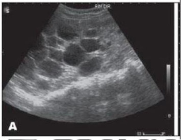
A Caso o paciente apresente uma creatinina de 2,5 mg/dL deve se tratar de um caso de Insuficiência Renal Aguda obstrutiva
B Há uma grande chance de encontrarmos familiares acometidos pela mesma patologia
C A hematúria macroscópica é uma complicação que acomete mais de 80% dos pacientes portadores dessa patologia
D O surgimento de neoplasias renais nesses pacientes é um achado que supera os 50%
E É consenso que o uso de inibidores de SGLT2 são medicamentos úteis nessa patologia
Questão 217 · Pneumologia · 4000001204Paciente 70 anos, admitido em terapia intensiva após esofagectomia subtotal trans-hiatal convencional por carcinoma espinocelular de terço médio. Está sedado, em ventilação mecânica, com doses de analgésico otimizadas apresentando frequência cardíaca de 135 bpm, pressão arterial média de 55 mmHg, Sat O2 99% com FiO2 a 40%. Gasometria arterial: pH: 7,30; pO2: 90; pCO2: 35; HCO3: 14. A melhor conduta neste caso é:
A expansão com albumina humana 10%.
B prescrever noradrenalina (0,3 mcg/kg/min).
C administrar bicarbonato de sódio 8,4%.
D expansão volêmica com Ringer Lactato ou Cloreto de Sódio 0,9%.
Questão 218 · Manejo da Nef ropatia diabética · Patogênese e evolução da doença · 4000001193Homem, de 60 anos, tabagista e com diagnóstico de diabetes e hipertensão arterial há mais de quinze anos. Em uso de anlodipino, 10 mg/dia, e metformina 850 mg, duas vezes ao dia. Os exames médicos por ele realizados, durante essa avaliação, evidenciaram os seguintes resultados: albuminúria = 200 mg/24horas; creatina sérica = 1,8 mg/dL (clearence de creatina CKD-EPI = 40 mL/min/1.73m²); potássio sérico = 4,8 mEq/L e hemoglobina glicosilada = 7,5%. Nesse caso clínico,
A o hábito de fumar tem sido considerado um fator de proteção para a progressão da nefropatia.
B a utilização de drogas inibidoras da enzima de conversão da angiotensina ou inibidoras do receptor AT1 da angiotensina está contraindicada pelo risco de hipercalemia.
C a metformina deve ser suspensa pelo risco de nefrotoxicidade.
D a presença de albuminúria é um marcador de risco para doenças cardiovasculares.
Questão 219 · Como dif erenciar Doença renal crônica e Lesão renal aguda · 4000001190Na insuficiência renal aguda
A Alterações no EAS não são frequentes.
B Anemia, normocítica, normocrômica, devido à falta de eritropoetina é uma achado universal.
C Acidose metabólica hipoclorêmica é um achado laboratorial muito frequente.
D A retenção de sódio de forma intensa, a níveis abaixo de 10 mEq/l são achados típicos E UNIVERSAIS da necrose tubular aguda
E Alterações anteriores dos marcadores da função renal; antecedentes patológicos de diabetes e hipertensão; presença de anemia normocítica normocrômica, alterações do cálcio, fósforo e PTH, são dados que indicam a possibilidade da presença da doença renal crônica ao invés de lesão renal aguda.
Questão 220 · Def inição e Sintomas · Síndrome Dispéptica · 4000001170Assinale a alternativa correta: De acordo com o Consenso Roma IV, o período em que os sintomas devem estar ocorrendo para que se faça o diagnostico de Dispepsia Funcional é:
A Sintomas tenham iniciado a pelo menos 12 meses e ativos nos últimos 3 meses.
B Seis meses com sintomas presentes e que tenham melhorados nos últimos 3 meses.
C Sintomas tenham iniciado há pelo menos 6 meses do diagnostico e presentes nos últimos 3 meses.
D Sintomas tenham iniciado há 12 meses e presentes nos últimos 2 meses.
E Nenhuma das alternativas acima.
Questão 221 · Esquemas de Tratamento · 4000001155Assinale qual o esquema terapêutico considerado como primeira opção para o tratamento do H. Pylori de acordo com o IV Consenso Brasileiro do H. Pylori:
A IBP (dose plena) + amoxicilina 1G + Claritromicina 500 MG 2 vezes ao dia – durante 14 dias.
B IBP (dose plena + amoxicilina 1G + Claritromicina 500 MG 2 vezes ao dia, durante 07 dias.
C A alternativa (A) e (E), durante 10 dias.
D IBP (dose plena) + amoxicilina 1G + Metronidazol 400 MG duas vezes ao dia 14 dias.
E IBP (dose plena 1 x dia) + tetraciclina 500 MG (6 em 6 horas) + Claritromicina 500 MG (2 x dia), durante 14 dias.
Questão 222 · Hepatologia · 4000001143Paciente de 45 anos, cirrótico em tratamento de ascite de difícil controle há 2 meses, apresenta-se com quadro de alteração do ciclo sono-vigília, confusão mental. O exame físico evidencia desidratação (++/4), hipocorado (+/4), FC: 90 bpm, PA: 100x60 mmHg, desorientado no tempo e espaço com apping presente. Ascite grau II, indolor à palpação e sem edema em membros inferiores. Os exames laboratoriais evidenciaram: Hb: 10,3,Hct: 32 Leuc: 5.000, plaquetas: 72.000, Ur: 80, Cr: 1,4, Na: 125, K: 3,0. Na abordagem inicial para o quadro de Encefalopatia Hepática deve ser considerado:
A Tratar inicialmente para Encefalopatia com lactulose 30 ml a cada 8 horas, até atingir 2-3 evacuações pastosas.
B Correção do fator precipitante que poderia ser a desidratação associada à correção da hipocalemia e provável alcalose metabólica, devido a uso excessivo de diuréticos e diminuição na excreção renal de íons de hidrogênio.
C Correção do fator precipitante que poderia ser a desidratação provavelmente de origem hipovolêmica, hidratação vigorosa com soro fisiológico associada a lactulose de 8/8 horas.
D Tratar inicialmente da IRA, com expansão volume com albumina 1 g/ kg/peso e em seguida a Encefalopatia.
E Tratar o fator precipitante, suspendendo o uso de diurético, associado à expansão de volume com albumina1g/kg para IRA e lactulose 30 ml de hora em hora, até evacuação.
Questão 223 · Fase Gástrica da Digestão · Gastroenterologia · 4000001135São estimulantes da secreção de ácido clorídrico pelas células parietais no estômago:
A histamina, acetilcolina e gastrina.
B histamina, acetilcolina e prostaglandina.
C tiamina, acetilcolina e bicarbonato.
D gastrina, acetilcolina e óxido pentanitroso.
Questão 224 · Marcadores sorológicos · Interpretação dos marcadores sorológicos · Vacinação · 4000001127Durante a avaliação pré-nupcial, uma paciente realizou a pesquisa de marcadores séricos para hepatite B, e o único marcador sorológico positivo foi o anticorpo Anti-HBs. Qual é o significado clínico deste achado?
A Vacinada para hepatite B.
B Hepatite B curada.
C Hepatite B crônica.
D Portadora assintomática de Hepatite B.
Questão 225 · Hepatologia · 4000001125Na ascite relacionada à cirrose hepática, conforme critérios do Clube Internacional de ascite qual a afirmativa correta:
A Pacientes com ascite grau III, com necessidade de paracentese, são considerados como portadores de ascite refratária.
B A Paracentese terapêutica, seguida de expansão plasmática com albumina (8g/litro) é o tratamento da ascite grau III, se forem retirados mais do que 5 litros.
C A abordagem farmacológica da ascite requer o uso inicial de diurético de alça associado à espironolactona.
D O TIPS é o tratamento de escolha nos casos de ascite refratária.
E O GASA < 1.1 deve ser considerado no diagnóstico de PBE na hipertensão portal da cirrose hepática.
Questão 226 · Cardiologia · 4000001120Paciente feminina, 35 anos, sem comorbidades, admitida em leito de terapia intensiva após laparotomia exploradora por cisto de ovário roto. Após 12 horas de observação clínica, apresenta dor torácica de forte intensidade, palpitações, associada à dispneia súbita. Nega vômitos. Permanece estável hemodinamicamente, sem alterações neurológicas. Realizado eletrocardiograma abaixo. A conduta mais adequada neste caso é:
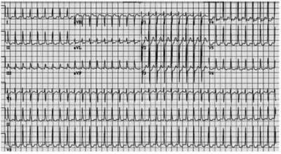
A amiodarona 300mg em bolus.
B cardioversão elétrica.
C amiodarona 150mg em bolus.
D metoprolol 25mg via oral.
Questão 227 · Tratamento Cirúrgico da DRGE · Gastroenterologia · Cirurgia · 4000001096A fundoplicatura de Nissen é um procedimento cirúrgico utilizado para tratamento de:
A dolicomegaesôfago.
B atresia duodenal.
C gastrite alcalina.
D doença do refluxo gastroesofágico.
Questão 228 · Epidemiologia · Cardiologia · Classif icação de acordo com f ração de ejeção · 4000001082Quais são as principais etiologias da insuficiência cardíaca com fração de ejeção reduzida, no Brasil?
A Isquêmica e chagásica.
B Chagásica e hipertensiva.
C Chagásica e valvopatia.
D Hipertensiva e idiopática.
Questão 229 · Tratamento Cirúrgico da DRGE · Gastroenterologia · Cirurgia · 4000001073A técnica cirúrgica para correção de doença do re uxo gastroesofágico que originalmente há abordagem intra-torácica e abdominal é:
A Nissen
B Lindi
C Toupet
D Belsey-Mark IV
Questão 230 · Conduta na Doença de Crohn · 4000001061Na Doença de Crohn (DC) nos casos em que não há resposta inicial com o uso em doses adequadas de azatioprina, recomenda-se a associação de azatioprina mais alopurinol. Assim, está correto que:
A Alternativamente, caso o médico assistente prefira ou o paciente cortiço dependente tenha história de efeito adverso ou hipersensibilidade à azatioprina, pode-se usar metotrexato por via intramuscular (IM semanal).
B Alternativamente, caso o médico assistente prefira ou o paciente cortiço dependente tenha história de efeito adverso ou hipersensibilidade à azatioprina, pode-se usar metotrexato por via intramuscular (IM mensal).
C Alternativamente, caso o médico assistente prefira ou o paciente cortiço dependente tenha história de efeito adverso ou hipersensibilidade à azatioprina, pode-se usar metotrexato por via EV quinzenal.
D Alternativamente, caso o médico assistente prefira ou o paciente cortiço dependente não tenha história de efeito adverso ou hipersensibilidade à azatioprina, pode-se usar metotrexato por via intramuscular (IM semanal).
Questão 231 · Cardiomiopatias · 4000001054Qual é a maior proteína encontrada no coração de mamíferos?
A Actina.
B Miosina.
C Titina.
D Grandina.
Questão 232 · Nef rologia · 4000001041A bactéria mais comum encontrada nas infecções urinárias é:
A Klebsiella pneumoniae
B Neisseria meningitidis
C Proteus mirabilis
D Eschechiria coli
Questão 233 · Pneumologia · 4000001025Qual é o melhor método (gold standard) para confirmar a posição da cânula na traqueia?
A Ausculta do tórax e abdome
B Detector colorimétrico de CO2 expirado
C Visualização da condensação de gás na cânula durante a expiração
D Percussão do tórax
E Presença de vapor de água na cânula orotraqueal
Questão 234 · Tratamento e prof ilaxia · 4000001022Na pneumonia por Pneumocistose PCP moderada a grave (PaO2 <70MMHG) é recomendado esquemas administrados preferencialmente por via EV. Indique o item com erro:
A A mudança de via de administração de endovenosa para oral deve ser realizada quando ocorrer melhora clínica.
B Clindamicina 600mg EV a cada seis ou oito horas + primaquina 15-30mg VO uma vez ao dia é o principal esquema alternativo em caso de intolerância à sulfa.
C O esquema de escolha é a associação SMX-TMP (5mg/kg de TMP endovenosa a cada seis ou oito horas. O tempo total de tratamento é de 10 dias.
D A associação de corticosteroides ao tratamento de PCP moderada a grave apresentou redução importante na mortalidade.
Questão 235 · Sequência Rápida de Intubação SRI · Capnograf ia · 4000000997Das alternativas abaixo, qual o recurso faz detecção precoce de intubação esofágica?
A Capnografia.
B Lactato arterial.
C Lactato sérico.
D Radiografia de tórax.
Questão 236 · Epidemiologia · Suporte Básico de Vida · Def inição · 4000000994Para que ocorra uma melhoria nas estruturas e nos sistemas de saúde, que é um dos pontos essenciais no sucesso do atendimento da parada cardiorrespiratória (PCR), sendo inadequado apenas:
A Criação de um sistema integrado com treinamento de pessoas.
B Auxílio de materiais de emergência.
C Transportes para um atendimento unificado.
D Disponibilidade de DEA em locais públicos com baixa movimentação de pessoas.
Questão 237 · Pneumologia · 4000000992Assinale a alternativa verdadeira:
A Na insuficiência respiratória os sinais mais confiáveis são taquipneia, batimento de asa do nariz, gemência e tiragem.
B A oferta suplementar de oxigênio inalatório é suficiente em todas as fases da insuficiência respiratória.
C A saturação de O2 mínima na sala de emergência pode ser recomendada como de 89%.
D Recomenda-se no trauma a suplementação de O2 apenas se Escala de Coma de Gasglow menor ou igual a 8.
E A ventilação com pressão positiva é utilizada apenas na fase quatro da insuficiência respiratória
Questão 238 · Neurologia · 4000000985Paciente vítima de trauma cranioencefálico, trazido pelo resgate anisocórico, sem abertura ocular a nenhum estímulo, com sons incompreensíveis, apresentando episódios de decorticação – padrão exor anormal. A pontuação na escala de coma de Glasgow é:
A 5
B 6
C 7
D 8
Questão 239 · Etiologias específ icas · Manejo clínico e diagnóstico · Toracocentese diagnóstica · 4000000977O derrame pleural, popularmente conhecido como ""água na pleura"" ou ""água no pulmão"", é o nome dado ao acúmulo anormal de líquidos na cavidade pleural. De acordo com a composição química do líquido, pode ser de dois tipos: transudato e exsudato. Em qual das patologias abaixo, o derrame pleural é do tipo transudato?
A Tuberculose.
B Pneumonia.
C Pancreatite.
D Cirrose hepática.
Questão 240 · Monitorização residencial da pressão arterial · Cardiologia · 4000000968Considerando as aplicações da monitorização residencial da pressão arterial, não podemos apenas indicar como inadequado que:
A As variações dia a dia da PA podem ser avaliadas.
B Variações permitem estabelecer separadamente as medidas do período matinal e do entardecer/anoitecer.
C A PA matinal não pode estar associada a dano em órgão-alvo como AVE.
D A associação de dano em órgão-alvo com a PA durante o entardecer/anoitecer da MRPA pode ser equivalente à PA durante o sono da MAPA
Questão 241 · Insuf iciência mitral · 4000000959A síndrome ou doença de Barlow está associada com a seguinte valva do coração:
A tricúspide.
B mitral.
C pulmonar.
D aórtica.
Questão 242 · Diagnóstico · 4000000940A pesquisa direta do agente oportunista em amostras de escarro espontâneo ou induzido geralmente é pouco sensível para Pneumocistose PCP. Podemos apenas concordar que:
A O diagnóstico definitivo não é realizado pela identificação do agente por meio das colorações de azul de toluidina, Grocott, Giemsa ou técnica de imunofluorescência a partir de espécimes respiratórios.
B O diagnóstico definitivo é realizado pela identificação do agente por meio das colorações de azul de toluidina, Grocott, Giemsa ou técnica de imunofluorescência a partir de espécimes fora do sistema respiratório.
C O diagnóstico definitivo é realizado pela identificação do agente por meio das colorações de azul de toluidina, Grocott, Giemsa ou técnica de imunofluorescência a partir de espécimes respiratórios.
D O diagnóstico definitivo é realizado sem a identificação do agente por meio das colorações de azul de toluidina, a partir de espécimes respiratórios.
Questão 243 · Inf ectologia · 4000000834No tratamento da encefalite herpética, qual das medicações abaixo dever ser utilizada como escolha?
A Aciclovir.
B Valaciclovir.
C Fanciclovir.
D Valciclovir e aciclovir combinados.
Questão 244 · Conduta na Doença de Crohn · 4000000824Na Doença de Crohn (DC) a atividade aumentada da enzima tiopurinametiltransferase TPMT leva a baixa formação de 6-tioguanina e a aumento dos níveis de 6-metilmercaptopurina, com consequentes redução da eficácia e maior risco de hepatotoxicidade da azatioprina. Podemos concordar com o item:
A Adição de alopurinol, um inibidor daxantinaoxidase capaz de desviar o metabolismo da azatioprina para a produção de 6- tioguanina, levou a significativo aumento da atividade da doença, possibilitando a redução da dose de corticosteroide, sem aumento de toxicidade hepática.
B Adição de alopurinol, um inibidor daxantinaoxidase capaz de desviar o metabolismo da azatioprina para a produção de 6- tioguanina, levou a significativa diminuição da atividade da doença, possibilitando a redução da dose de corticosteroide, sem aumento de toxicidade hepática.
C Adição de alopurinol, um inibidor daxantinaoxidase capaz de desviar o metabolismo da azatioprina para a produção de 6- tioguanina, levou a significativa diminuição da atividade da doença, possibilitando a aumento da dose de corticosteroide, sem aumento de toxicidade hepática.
D Adição de alopurinol, um inibidor daxantinaoxidase capaz de desviar o metabolismo da azatioprina para a produção de 6- tioguanina, levou a significativa diminuição da atividade da doença, possibilitando a redução da dose de corticosteroide, mas também com aumento de toxicidade hepática.
Questão 245 · Neurologia · 4000000804Assinale a alternativa que apresenta alterações cognitivas presentes na criança com síndrome da apneia obstrutiva do sono.
A São achados de exame.
B Podem estar presentes desde o ronco primário.
C São sempre encaminhadas para psicoterapia.
D Devem ser muito valorizadas.
Questão 246 · Neurologia · 4000000789Assinale a alternativa que apresenta uma recomendação que deve ser feita para a higiene do sono.
A Deixar a criança cansada para que durma a noite toda.
B Oferecer leite com chocolate se a criança acordar durante a noite.
C Manter uma rotina adequada para a hora de dormir para toda a família.
D Deixar a criança dormir na hora que tiver sono.
Questão 247 · Tratamento · 4000000757Levando-se em consideração a epidemiologia das meningites no Brasil, assinale a alternativa correta em relação ao fármaco de escolha para a realização de terapia empírica no caso de suspeita para a meningite.
A Ganciclovir.
B Penicilina Cristalina.
C Vancomicina.
D Aciclovir.
Questão 248 · Neurologia · 4000000726Homem, 55 anos, trazido ao pronto atendimento, após ingesta excessiva de álcool e acidente motobilístico. No exame neurológico encontrava-se sonolento, com abertura ocular aos estímulos verbais vigorosos, retirada inespecí ca dos membros a dor, falando palavras desconexas. Qual a pontuação desse paciente pela escala de coma de Glasgow?
A 6
B 8
C 10
D 13
Revisar: possível letra faltando em enunciado
Questão 249 · Neuropediatria · Escala de Coma de Glasgow · 4000000688Na avaliação neurológica da escala de coma de Glasgow, avaliamos todos os parâmetros abaixo, exceto
A reflexo córneo palpebral.
B decorticação.
C orientação no tempo e espaço.
D abertura ocular.
Questão 250 · Doença de Wilson · Doença de Wilson DW · 4000000607Na Doença de Wilson, o produto do gene ATP7B está presente no sistema de Golgi e é fundamental para o transporte de cobre através das membranas das organelas intracelulares. A alternativa adequada é:
A A ausência ou função diminuída do ATP7B reduz a excreção hepática de cobre e causa acúmulo do metal na DW.
B A função aumentada da ATP7B reduz a excreção hepática de cobre e causa acúmulo do metal na DW.
C A ausência ou função diminuída do ATP7B aumenta a excreção hepática de cobre e causa acúmulo do metal na DW.
D A ausência ou função diminuída do ATP7B reduz a excreção hepática de cobre e causa redução do metal na DW.
Questão 251 · Endocrinologia · 4000000595Considerando como via de aplicação e velocidade de absorção da insulina, como usual para aplicação de insulina a subcutânea (SC), podemos concordar que:
A A extensa rede de capilares não possibilita a absorção gradativa da insulina e garante o perfil farmacocinético descrito pelo fabricante.
B A extensa rede de capilares possibilita a absorção súbita da insulina e garante o perfil farmacocinético descrito pelo fabricante.
C A extensa rede de capilares possibilita a absorção gradativa da insulina e garante o perfil farmacocinético descrito pelo fabricante.
D A extensa rede de capilares possibilita a absorção gradativa da insulina e não garante o perfil farmacocinético descrito pelo fabricante.
Questão 252 · Doença de Wilson · Doença de Wilson DW · 4000000585As opções terapêuticas na Doença de Wilson são diversas, incluem o tratamento medicamentoso e o transplante hepático. Sendo assim, indique o item com erro:
A Dieta com baixa quantidade de cobre, principalmente nas fases iniciais da doença, também deve ser adotada.
B Os alimentos com quantidade mais elevada de cobre são frutos do mar, chocolate, amêndoas, café, feijão, fígado, cogumelos e soja.
C A dieta isoladamente é suficiente para o tratamento.
D O transplante deve ser reservado para pacientes com doença hepática terminal refratária ou fulminante.
Questão 253 · Endocrinologia · 4000000574A absorção de insulina injetada em locais com lipo-hipertro a é imprevisível, podendo causar hiperglicemias, hipoglicemias inexplicáveis e maior variabilidade glicêmica. Sendo adequado o item:
A Locais com lipo-hipertrofia, a sensibilidade à dor pode aumentar significativamente, o que leva alguns indivíduos ao reúso intensificado de agulhas.
B Locais com lipo-hipertrofia, a sensibilidade à dor não pode diminuir significativamente, o que leva alguns indivíduos ao reúso intensificado de agulhas.
C Locais com lipo-hipotrofia, a sensibilidade à dor pode diminuir significativamente, o que leva alguns indivíduos ao reúso intensificado de agulhas.
D Locais com lipo-hipertrofia, a sensibilidade à dor pode diminuir significativamente, o que leva alguns indivíduos ao reúso intensificado de agulhas.
Questão 254 · Cardiologia · 4000000566Nos pacientes com alto risco de sangramento e baixo risco isquêmico, deve-se introduzir diretamente dupla terapia com anticoagulante e clopidogrel desde o início. Nesse contexto, o item com erro é:
A Quando houver alto risco isquêmico e também alto risco hemorrágico, recomenda-se que se use tripla terapia por, no máximo, um mês ou inicie-se diretamente dupla terapia com anticoagulante e clopidogrel.
B O uso de inibidores de bombas de prótons como profilaxia de úlcera de estresse nesse grupo de pacientes nunca deve ser considerado como primeira escolha devido ao risco elevado de sangramento gastrintestinal.
C A descontinuação do tratamento antiplaquetário deve ser considerada após 12 meses.
D A avaliação da necessidade de manutenção da anticoagulação e o cálculo do risco de sangramento devem ser realizados em todos os pacientes através dos escores de CHA2DS2-VASc e HAS-BLED.
Questão 255 · Reumatologia · 4000000561Considerando identi car as principais manifestações da intoxicação aguda por inibidores de colinesterase as manifestações muscarínicas são listadas abaixo, indique o item completamente correto:
A Broncoespasmos, vômito e obstipação, incontinência urinária, dispneia, dor abdominal, fadiga respiratória e disúria.
B Broncoespasmos, vômito e diarreia, incontinência urinária, dispneia, dor abdominal, fadiga respiratória e disúria.
C Broncoespasmos, vômito e diarreia, continência urinária, dispneia, dor abdominal, fadiga respiratória e poliúria.
D Broncodilatação, vômito e diarreia, incontinência urinária, dispneia, dor abdominal, fadiga respiratória e disúria.
Questão 256 · Endocrinologia · 4000000549A insulina é medida em unidade internacional (UI). No Brasil, dispõe-se de preparações de insulina na concentração U100; indique o item errado:
A A seringa possui escala graduada em unidades adequadas à concentração de insulina U100.
B Também é identificada como seringa U100.
C Não se deve usar seringa graduada em mL, pelo alto risco de erros no registro da dose.
D 1 mL de solução tem 10 unidades de insulina.
Questão 257 · Hematologia · 4000000541Preferencialmente, recomenda-se que se usem novos anticoagulantes orais NOACs em vez da varfarina, devido à sua previsibilidade de efeito. Sendo adequado que:
A NOAC deve ser escolhido de acordo com o conhecimento médico já estabelecido nesse contexto e nas doses previamente estudadas.
B NOAC não deve ser escolhido de acordo com o conhecimento médico já estabelecido nesse contexto e nas doses previamente estudadas.
C NOAC deve ser escolhido em desacordo com o conhecimento médico já estabelecido nesse contexto e nas doses previamente estudadas.
D NOAC deve ser escolhido de acordo com o conhecimento médico já estabelecido nesse contexto e nas doses empíricas.
Questão 258 · Reumatologia · 4000000525A intoxicação por inibidores de colinesterase progride estabelecendo um quadro de Síndrome Colinérgica Aguda. Sendo assim, indique o item errado:
A As manifestações podem ser do tipo muscarínicas, nicotínicas ou neurológicas, de acordo com os receptores colinérgicos correspondentes.
B A aparição e intensidade dos sintomas dependem de vários fatores como princípio ativo, formulação comercial, quantidade e duração da exposição, normalmente.
C As secreções abundantes decorrentes da inibição muscarínica são características.
D Nos quadros mais graves, os sintomas nicotínicos são os primeiros a aparecer.
Questão 259 · Doença de Wilson · Doença de Wilson DW · 4000000514As manifestações clínicas da Doença de Wilson devem-se, principalmente, ao acometimento hepático e do sistema nervoso central (SNC) (2,3), sendo extremamente variáveis. As manifestações clínicas do SNC podem, em algumas situações, ser a forma de apresentação da doença. Podemos aceitar que:
A Os sinais e sintomas raros são anormalidades motoras similares às da doença de Parkinson, incluindo distonia, hipertonia, rigidez, tremores e Disartria.
B Os sinais e sintomas mais frequentes são anormalidades motoras similares às da doença de Parkinson, incluindo distonia, hipertonia, rigidez, tremores e Disartria.
C Os sinais e sintomas mais frequentes são anormalidades sensitivas similares às da doença de Parkinson, incluindo distonia, hipertonia, rigidez, tremores e Disartria.
D Os sinais e sintomas mais frequentes são anormalidades motoras similares às da doença de Parkinson, incluindo distonia, hipotonia, flacidez e Disartria.
Questão 260 · Endocrinologia · 4000000506O controle intensivo do diabetes, com o objetivo de alcançar valores de glicemia próximos aos dos indivíduos sem diabetes, é capaz de prevenir ou pelo menos retardar o desenvolvimento e a progressão da retinopatia. Somente se mostra errado o item:
A Essa proteção mostrou-se persistente em longo prazo.
B Dá-se o nome de legado glicêmico a esse fenômeno, obtido pelo controle rigoroso da glicose por determinado período de tempo.
C Esse “legado” se deve, possivelmente, a alterações epigenéticas ocorridas na fase de mau controle.
D O contrário também não pode ocorrer, e pacientes que apresentaram mau controle podem desenvolver quadros de complicações vasculares leves apenas quando passam a ter, posteriormente, bom controle da doença.
Questão 261 · Tenof ovir · Tratamento · Coinf ecção HIVHepatite B · 4000000496O início precoce da terapia está associado à redução da transmissibilidade e da morbimortalidade relacionadas à infecção pelo HIV. TARV para o HIV deve ser instituída prontamente. Podemos aceitar o item:
A O tenofovir e a lamivudina são fármacos antirretrovirais com atividade contra o HIV e contra o HBV, diminuindo o risco de progressão para cirrose e CHC.
B O tenofovir e a lamivudina são fármacos antirretrovirais com atividade contra o HIV e não contra o HBV, não diminuindo o risco de progressão para cirrose e CHC.
C O tenofovir e a lamivudina são fármacos antirretrovirais com atividade contra o HBV, diminuindo o risco de progressão para cirrose e CHC. Sem interação com o HIV.
D O tenofovir e a lamivudina são fármacos antirretrovirais sem atividade contra o HIV e contra o HBV, não diminuindo o risco de progressão para cirrose e CHC.
Questão 262 · Endocrinologia · 4000000476No diabetes, a hipotensão ortostática (HO) ocorre, frequentemente, consiste em redução da PA sistólica, de pelo menos 20 mmHg, ou da PA diastólica, de pelo menos 10 mmHg, em 1 a 3 minutos após se assumir posição ortostática. Sendo correto que:
A Consequência de denervação parassimpática vasomotora eferente, reduzindo a vasoconstrição do leito vascular esplâncnico e periférico.
B Consequência de denervação simpática vasomotora aferente, reduzindo a vasoconstrição do leito vascular esplâncnico e periférico.
C Consequência de denervação simpática vasomotora eferente, reduzindo a vasoconstrição do leito vascular esplâncnico e periférico.
D Consequência de denervação simpática vasomotora eferente, aumentando a vasoconstrição do leito vascular esplâncnico e periférico.
Questão 263 · Tratamento · 4000000466Um dos objetivos da abordagem inicial de uma pessoa com diagnóstico de infecção pelo HIV é estabelecer uma relação de con ança e respeito entre esta e a equipe multipro ssional do serviço de saúde. Nesse contexto, o item inadequado é:
A Avaliar falhas e não a adesão e seus motivos.
B Verificar possibilidade de resistência(s viral(is à TARV e necessidade de troca).
C Avaliar e investigar sintomas.
D Manejar comorbidades não controladas.
Questão 264 · Diagnóstico · 4000000443As estratégias para testagem têm o objetivo de melhorar a qualidade do diagnóstico da infecção pelo HIV e, ao mesmo tempo, assegurar que o diagnóstico seja realizado o mais precocemente possível, de forma segura e com rápida conclusão. Somente se mostra errado o item:
A Fazer revisão e documentação do primeiro exame anti-HIV.
B Checar se há contagens de LT-CD4+ e exames de CV-HIV anteriores.
C Discutir uso de ARV e se houve eventos adversos prévio.
D Vedado discutir o tempo provável de soro positividade.
Questão 265 · Conduta na Doença de Crohn · Doença de Crohn · 4000000433Na Doença de Crohn (DC), pacientes em uso da associação azatioprina e alopurinol devem ser monitorizados laboratorialmente em relação às contagens de leucócitos, semanalmente no primeiro mês e quinzenalmente no segundo mês. Está correto que:
A Ocorrendo leucopenia, recomenda-se o aumento da dose de azatioprina, de acordo com a gravidade do caso.
B Ocorrendo leucopenia, recomenda-se a redução da dose de azatioprina (50% da dose atual ou mesmo a sua suspensão, de acordo com a gravidade do caso.
C Ocorrendo leucopenia, recomenda-se a redução da dose de azatioprina (50% da dose atual independente da gravidade do caso.
D Ocorrendo leucopenia, recomenda-se a redução da dose de azatioprina (50% da dose atual, mas nunca sua suspensão, independente da gravidade do caso.
Questão 266 · Conduta na Doença de Crohn · Doença de Crohn · 4000000263A Doença de Crohn (DC) é uma doença intestinal inflamatória sendo sua localização apenas no esôfago é rara. Somente 5% dos pacientes com essa doença têm acometimento gastroduodenal. Podemos apenas aceitar que:
A Quando ocorre acometimento do estômago e do duodeno, justifica-se o uso de fármacos que não alterem agressão péptica, sendo indicados inibidores da bomba de prótons.
B Quando ocorre acometimento do estômago e do duodeno, justifica-se o uso de fármacos que diminuam a agressão péptica, não sendo indicados inibidores da bomba de prótons.
C Quando ocorre acometimento do estômago e do duodeno, justifica-se o uso de fármacos que diminuam a agressão péptica, sendo indicados inibidores da bomba de Na e K.
D Quando ocorre acometimento do estômago e do duodeno, justifica-se o uso de fármacos que diminuam a agressão péptica, sendo indicados inibidores da bomba de prótons.
Questão 267 · Diarreia Aguda · Diagnóstico da Diarreia Crônica · Doença de Crohn · 4000000250A Doença de Crohn (DC) é uma doença intestinal inflamatória que pode aceitar como correto o seguinte item:
A Mais de 6 semanas de diarreia é o prazo sugerido como critério para diferenciação com diarreia aguda infecciosa.
B Menos de 6 semanas de diarreia é o prazo sugerido como critério para diferenciação com diarreia aguda infecciosa.
C Mais de 6 meses de diarreia é o prazo sugerido como critério para diferenciação com diarreia aguda infecciosa.
D A diarreia não é sugerida como critério para diferenciação com diarreia aguda infecciosa.
Questão 268 · Inibidores da enzima conversora de angiotensina e bloqueadores dos receptores AT1 da angiotensina II · 4000004905Diuréticos Homem, 62 anos de idade, hipertenso há 15 anos, apresenta queixa de dispneia progressiva aos esforços, há 1 ano. Exame físico: PA = 130 x 80 mmHg, FC = 94 bpm, ictus cardíaco desviado para esquerda e edema bilateral em membros inferiores. Eletrocardiograma com ritmo sinusal e sobrecarga de câmaras esquerdas. Ecocardiograma com hipocinesia difusa e fração de ejeção de 33%. Qual é a combinação terapêutica mais adequada em termos de melhora de sobrevida?
A Losartan, bisoprolol, clonidina.
B Enalapril, digoxina, espironolactona.
C Captopril, nifedipina, espironolactona.
D Enalapril, carvedilol, espironolactona.
E Losartan, diltiazem, espironolactona.
Questão 269 · Diuréticos · Inibidores do sistema reninaangiotensinaaldosterona · Betabloqueadores · 4000004877Considere os seguintes anti-hipertensivos: Inibidor da Enzima Conversora da Angiotensina (IECA), Bloqueador do Receptor da Angiotensina II (BRA); Antagonista dos Canais de Cálcio (ACC), betabloqueador, vasodilatador arterial e diurético. A combinação mais potente é?
A IECA + BRA + diuréticos.
B IECA ou BRA + ACC + diuréticos.
C IECA ou BRA + betabloqueador + ACC.
D Diurético + ACC + betabloqueador.
E Diurético + ACC + vasodilatador arterial.
Questão 270 · Tratamento geral da crise hipertensiva · 4000004849Homem, 60 anos de idade, hipertenso, com interrupção do uso de quatro medicamentos para controle pressórico há uma semana, procurou o pronto-socorro com cefaleia intensa. Ao exame clínico: PA = 206 x 122 mmHg; ausculta cardíaca: bulhas rítmicas, normofonéticas, com sopro sistólico em área mitral ++/4; ausculta pulmonar: murmúrio vesicular normal, sem ruídos adventícios; pulsos todos presentes e normais. Fundo de olho: aumento do reflexo dorsal das arteríolas e papila bem delimitada, sem edema. Assinale a alternativa correta.
A É uma urgência hipertensiva, e deve ser tratada com medicamentos orais em 24 horas.
B É uma encefalopatia hipertensiva, e a pressão deve ser mantida abaixo de 130 x 80 mmHg.
C É uma encefalopatia hipertensiva, e a pressão deve ser mantida abaixo de 160 x 100 mmHg.
D É uma emergência hipertensiva, e deve ser tratada com nifedipina sublingual.
E É uma emergência hipertensiva, deve ser tratada com nitroprussiato de sódio e a pressão mantida abaixo de 160 x 100 mmHg.
Questão 271 · Exame f isico · 4000004822Mulher, 23 anos de idade, refere palpitações aos grandes esforços. Ao exame físico: bom estado geral, corada, hidratada, PA = 120x80mmHg, FC = 96 bpm, com pulso irregular. Ausculta cardíaca: bulhas arrítmicas, com sopro diastólico em ru ar em foco mitral. Ausculta pulmonar: murmúrio vesicular presente, sem ruídos adventícios. Abdome: sem alterações. Membros inferiores: pulsos presentes e simétricos, sem edema. Quais são os diagnósticos mais prováveis?
A Estenose valvar aórtica e extrassístoles supraventriculares.
B Insuficiência valvar mitral e fibrilação atrial.
C Insuficiência valvar aórtica e taquicardia ventricular.
D Estenose valvar mitral e fibrilação atrial.
E Insuficiência valvar tricúspide e flutter atrial.
Questão 272 · Classif icação de Forrest · 4000004816A Hemorragia Digestiva Alta, refere-se a sangramentos que se originam do trato gastrointestinal proximal ao ligamento de Treitz, sendo responsável por quase 80% das hemorragias mais significativas. A base do diagnóstico e tratamento é a Endoscopia Digestiva Alta. Diversos estudos têm mostrado que a EDA realizada nas primeiras 24 horas de sangramento resulta em uma redução da necessidade de transfusão sanguínea, uma diminuição da necessidade de operação e um menor tempo de internação hospitalar. De acordo com a classificação de FORREST, dos achados Endoscópicos e dos Riscos de Ressangramento em Doença da Úlcera Péptica, respectivamente, é CORRETO afirmar que:
A GRAU Ia: Baixo risco.
B Grau Ib: Moderado risco.
C Grau IIb: Alto risco.
D Grau IIc: Alto Risco.
E Grau III: Baixo risco.
Questão 273 · Fatores de risco para f ormção do cálculo renal · 4000004717Assinale a alternativa que contém, respectivamente, dois fatores de risco e dois fatores protetores dietéticos para a formação de cálculos urinários.
A Proteínas e sódio; água e citrato.
B Proteínas e cálcio; oxalato e citrato.
C Citrato e cálcio; fosfato e sódio.
D Magnésio e citrato; água e sódio.
E Proteínas e citrato; oxalato e fosfato.
Questão 274 · Avaliação do pé diabético · O pé diabético · Cirurgia · 4000004638Assinale a alternativa correta com relação à lesão apresentada.
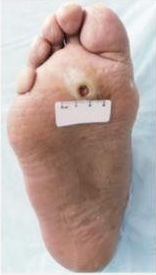
A Deve-se solicitar glicemia para esclarecer o diagnóstico.
B A lesão é causada por insuficiência venosa.
C A lesão é causada por uma insuficiência arterial.
D A lesão é causada pela diminuição de mobilidade do paciente.
E Deve-se solicitar biopsia para esclarecer o diagnóstico.
Questão 275 · Equipamentos interf aces e Modos · 4000004554O gráfico apresentado foi obtido durante monitoramento da mecânica ventilatória em paciente sob ventilação com pressão positiva intermitente. Qual o parâmetro mostrado no eixo das ordenadas (Y)?
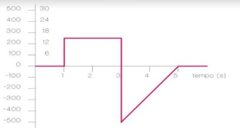
A Pressão de pico.
B Volume corrente.
C Fluxo.
D Pressão de platô (pausa inspiratória).
E Complacência pulmonar.
Questão 276 · Hipertermia Maligna · 4000004448Em relação à hipertermia maligna. Assinale a alternativa correta:
A Trata-se de uma doença adquirida causada pela succinilcolina.
B É provocada pelo uso do anestésico inalatório halotano em concentrações muito elevadas.
C Pode ser controlada com diltiazem.
D A taquicardia e a elevação da concentração de CO² no gás exalado frequentemente antecedem a elevação da temperatura corporal.
E Não deve ser tratada com compressas geladas ou administração de fluidos gelados devido ao risco de CIVD por hipotermia.
Questão 277 · Fisiologia · Pós intubação · Diagnostico · 4000004399Vítima de queimadura grave recente sendo submetida à anestesia geral para fasciotomia extensa em membros inferiores. Apresenta pressão parcial de oxigênio baixa na gasometria arterial, porém o oxímetro de pulso mostra saturação adequada. Qual dos quadros abaixo explicaria melhor o achado?
A Shunt pulmonar.
B Concentração elevada de carboxihemoglobina.
C Aumento do espaço-morto anatômico.
D Choque hiperdinâmico.
E Hiperpotassemia devido ao uso de succinilcolina.
Questão 278 · Abordagem cirúrgica do pé diabético · 4000004378Homem, diabético tipo 2, refere lesão na planta do pé direito há 4 dias. Apresenta-se prostrado, com frequência cardíaca 110 bpm e temperatura 39°C. À palpação observa-se crepitação, edema e hiperemia até o terço inferior da perna direita e ausência de pulsos distais em ambos os membros inferiores. Qual a conduta imediata?
A Drenagem de planos profundos e debridamento dos tecidos desvitalizados.
B Arteriografia e revascularização endovascular.
C Arteriografia e debridamento dos tecidos desvitalizados.
D Ultrassom Doppler e debridamento dos tecidos desvitalizados.
E Drenagem de planos profundos e revascularização aberta.
Questão 279 · Características Ultrassonográf icas dos Nódulos · 4000004311Nódulos tireoidianos têm por definição aumento do volume tireoidiano, com crescimento excessivo e transformação estrutural e/ou funcional de uma ou mais áreas do parênquima tireoidiano. A maioria é de natureza benigna. No que diz respeito aos nódulos tireoidianos, assinale a alternativa INCORRETA.
A são alguns achados ultrassonográficos que sugerem malignidade: hipoecogenicidade, contornos mal definidos, presença de microcalcificações.
B punção aspirativa por agulha fina (PAAF) é o melhor método para diferenciar lesão benigna da maligna.
C características suspeitas para malignidade à palpação: nódulo duro e aderido e presença de linfonodomegalias cervicais.
D quando presente na história clínica, radioterapia prévia de cabeça ou pescoço é fator de risco para a malignidade.
E na utilização da ultrassonografia tireoidiana, dificilmente esta auxilia na detecção de nódulos tireoidianos menores que 1 cm.
Questão 280 · Cirurgia Bariátrica e Metabólica · Cirurgia metabólica no tratamento do diabetes mellitus · 4000004270O Conselho Federal de Medicina (CFM) publicou a resolução Número 2.172/2017, que traz novas regras e ampliam a indicação da cirurgia metabólica para o tratamento de pacientes com diabetes. Na cirurgia metabólica ocorre o mesmo procedimento da cirurgia bariátrica. A diferença entre as duas é que a cirurgia metabólica visa o controle da doença. Já a cirurgia bariátrica tem como objetivo a perda de peso, com as metas para contenção das doenças, como o diabetes e hipertensão, em segundo plano. Não faz parte das normas desta resolução a seguinte afirmação
A paciente precisa ter diabetes mellitus tipo 2 e ter IMC entre 30 kg/m² e 34,9 kg/m².
B paciente precisa ter mais de 30 anos e no máximo 70 anos.
C paciente precisa ter diabetes mellitus tipo 2 há menos de 25 anos.
D a indicação cirúrgica precisa ser feita por dois médicos especialistas em endocrinologia.
E para indicação, é necessário um parecer que mostre que o paciente apresentou resistência ao tratamento clínico com antidiabéticos orais e/ou injetáveis, mudanças no estilo de vida e que compareceu ao endocrinologista por no mínimo dois anos.
Questão 281 · Cistite · Inf ecção Urinária e Bacteriúria Assintomática na gestação ITU · 4000004260Luiza, 19 anos, primigesta na 38ª. semana de gravidez, comparece a uma consulta na UBS com queixa de disúria e polaciúria. Traz uma exame de urina realizado no dia anterior o qual apresenta incontáveis piócitos. Podemos recomendar o uso dos seguintes antibióticos no tratamento da cistite aguda nesta paciente, EXCETO:
A Ampicilina
B Cefalexina
C Nitrofurantoína
D Amoxicilina/clavulanato
Questão 282 · Diagnóstico dos linf omas clínico laboratorial citogenética e biologia molecular · 4000004246Paciente de 30 anos de idade, apresenta estase jugular, pletora, edema em região de face, tórax e membros superiores, além de circulação colateral no tórax. Radiogra a de tórax mostra massa bocelada mediastinal, sem limites com as estruturas adjacentes. Tomogra a de tórax evidencia diminuição da luz da veia cava superior, por invasão da referida massa, e comprometimento bilateral do mediastino. Qual o diagnóstico mais provável?
A Timoma.
B Ganglioneuroma.
C Bócio mergulhante.
D Teratoma.
E Linfoma.
Questão 283 · Acidose metabólica · Acidose metabólica com ânion gap normal · 4000004160Paciente masculino, 65 anos, submetido a pancreatectomia corpo-caudal por neoplasia de pâncreas evolui com fístula pancreática de alto débito. Qual dos eletrólitos descritos abaixo apresenta perdas mais severas neste doente?
A Bicarbonato (HCO3).
B Cloro (Cl).
C Fosfato (PO4).
D Potássio (K).
E Sódio (Na).
Questão 284 · Diagnóstico · 4000004029Como se apresenta a análise do líquido cefalorraquidiano compatível com neurotuberculose?
A Pleocitose com predomínio de linfomononucleares; concentrações de proteína e glicose normais.
B Pleocitose com predomínio de linfomononucleares; elevação da concentração de proteínas e redução da glicose.
C Pleocitose com predomínio de neutrófilos; redução da concentração de proteína e redução da glicose.
D Pleocitose com predomínio de neutrófilos; concentrações de proteína e glicose normais.
Questão 285 · Tratamento · 4000003816Criança com 6 anos de vida está em investigação para diarreia crônica. Coletamos exame de fezes onde foi observado a presença de giardia em grande quantidade. Qual a droga mais adequada para o tratamento:
A Albendazol ou mebendazol
B Tinidazol ou nitazoxanida
C Paramomicina ou mebendazol
D Mebendazol ou tinidazol
Questão 286 · Dermatologia · 4000003792Pré-escolar de 5 anos, é levado ao atendimento médico com lesão em pele que iniciou com placa descamativa seca, ligeiramente eritematosa e elevada que disseminou centrifugamente. Qual o diagnóstico provável?
A Estrófulo
B Impetigo bolhoso
C Tinea corporis
D Psoríase
Questão 287 · Acidentes Vasculares Cerebrais AVC · Trombose Venosa Prof unda TVP · Cirurgia · 4000003718Homem de 36 anos, previamente saudável, apresenta-se com trombose venosa profunda (TVP) do segmento ilíaco femoral direito após viagem de avião. Na investigação diagnostica o paciente é portador de hipercoagulabilidade com mutação do fator V de Leiden. O paciente foi tratado adequadamente com heparina fracionada e warfarina. Subitamente há 2 semanas o paciente desenvolve hemiplegia a esquerda desvio de rima, e disartria. AVCI em hemisfério direito A explicação mais provável para o evento seria?
A Oclusão embólica da artéria carótica interna direita por embolização de forame oval patente.
B Aterosclerose cerebral
C Dissecção de aorta torácica atingindo artérias carótidas
D Flegmasia cerúlea Dolens
E Aneurisma de carótida esquerdo não diagnosticado
Questão 288 · Terapia antiisquêmica · Indicações de cateterismo · Terapia antitrombótica · 4000003581Paciente de 48 anos, sexo masculino, tabagista e diabético dá entrada no Pronto Atendimento Adulto de Hospital Terciário queixando de há cerca de 2 horas e meia estar sentindo desconforto em região epigástrica acompanhado de sudorese fria. Sinais vitais de entrada: Pressão arterial aferida nos dois membros superiores: 160/90 mmHg; frequência respiratória = 21ipm, frequência cardíaca 88 bpm; dextro: 100 mg/dl. Realizado eletrocardiograma de entrada ilustrado na figura abaixo. Assinale a alternativa com a melhor conduta a ser realizada no Pronto Atendimento com o paciente abaixo:
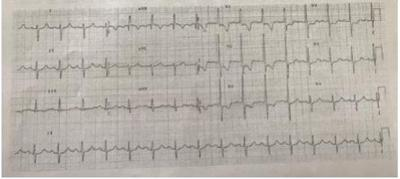
A AAS 300 mg mastigado, clopidogrel 600 mg de ataque e terapia de reperfusão de emergência com angioplastia primária;
B AAS 200 mg mastigado, clopidogrel 300 mg de ataque e terapia de reperfusão de emergência com fibrinolítico;
C AAS 200 mg mastigado, clopidogrel 300 mg de ataque, anticoagulação e estudo hemodinâmico de coronárias nas próximas 12 horas;
D AAS 500 mg de 6/6 horas ecocardiograma transtorácico de emergência;
E Nitroprussiato de sódio endovenoso para controle da pressão arterial e betabloqueador via oral para controle da frequência cardíaca.
Questão 289 · Clínica Médica · Manif estações clínicas · Hepatologia · 4000003552Paciente do sexo masculino, 56 anos, portador de cirrose hepática por hepatite C e álcool. Chega ao plantão no Pronto Socorro com história de aumento do volume abdominal há uma semana e confusão mental há um dia.Em uso de espironolactona 100 mg ao dia e furosemida 40 mg ao dia. Ao exame clínico foi visto: PA=80x60 mmHg; FC= bpm. Regular estado geral, consciente e orientado. Fala e movimentos lenti cados. Tremores tipo apping. Abdome globoso, indolor, com ascite de moderado volume. Feita paracentese diagnóstica e colhidos exames laboratoriais. Resultados Paracentese: Líquido ascítico: Hemáceas: 100 por campo; Glóbulos brancos: 800; Neutró los: 500; Linfócitos: 100; Células mesoteliais: 200; Exs laboratoriais: Creatinina: 1,9; Uréia 98; Sódio: 135 ;Potássio: 3,7. Qual das alternativas abaixo ilustra a melhor conduta a ser tomada neste momento?
A Internação. Tratamento com sulfametoxazol+trimetropim e albumina endovenosa. Lactulose. Manter o uso da espironolactona e furosemida nas doses já utilizadas pelo paciente.
B Internação. Tratamento com ceftriaxona e albumina endovenosa. Lactulose. Manter o uso da espironolactona e furosemida nas doses já utilizadas pelo paciente.
C Internação. Tratamento com sulfametoxazol+trimetropim e albumina endovenosa. Aumentar a dose dos diuréticos em uso.
D Internação. Tratamento com ceftriaxona. Lactulose. Suspender uso dos diuréticos.
E Internação. Tratamento com ceftriaxona e albumina endovenosa. Lactulose. Suspender uso dos diuréticos.
Questão 290 · Diagnóstico e investigação adicional · Apresentação clínica · 4000003536Mulher, 42 anos, apresenta-se à consulta ambulatorial para avaliação anual. Ao exame, você observa bócio difuso (++/4) e tireóide com consistência elástica, sem sinais ogísticos. A paciente nega queixas. O exame laboratorial revela T4 livre normal e TSH discretamente elevado. Qual a hipótese diagnóstica mais provável?
A Deficiência de iodo
B Câncer de tireóide
C Tireoidite de Hashimoto
D Doença de Graves
E Bócio Multinodular
Questão 291 · Manejo da Nef ropatia diabética · Etiologia Diabetes mellitus DM · 4000003523Mulher, 49 anos, com Diabetes Mellitus tipo 2 se apresenta à consulta ambulatorial com queixa de edema de MMII e face há aproximadamente 1 mês. Nega outras queixas e conta que no último exame oftalmológico foi-lhe dito que o diabetes já estava comprometendo os olhos. Está em uso de gliclazida para controle glicêmico. Ao exame físico, apresenta edema de MMII (+++/4), edema palpebral bilateral, diminuição da sensibilidade dolorosa em extremidades distais de MMII. Restante sem anormalidades. Fundo de olho: exsudatos duros e pontos hemorrágicos. Exame de urina: proteína 3+, glicose 2++, sem outras alterações. Qual a melhor conduta?
A Retorno em 6 semanas com novo exame de urina
B Iniciar betabloqueador
C Encaminhar ao cardiologista
D Iniciar inibidor da ECA
E Trocar gliclazida por inibidor de DPP-4
Questão 292 · Esquema básico inicial · 4000003500Quanto ao tratamento antirretroviral, qual alternativa está de acordo com as atuais recomendações do Protocolo Clínico e Diretrizes Terapêuticas para Manejo da Infecção pelo HIV em Adultos - 2018:
A O esquema preferencial para início de tratamento antirretroviral em adultos se baseia em dose única diária de comprimido composto de tenofovir, lamivudina e efavirenz
B O esquema preferencial para início de tratamento antirretroviral em gestantes se baseia em dose única diária de comprimido composto de tenofovir e lamivudina associado a comprimido de dolutegravir
C O esquema preferencial para início de tratamento antirretroviral em adultos com co1infecção HIV e tuberculose não complicada é composto de dose única diária de comprimido de tonofovir, lamivudina e dolutegravir.
D O esquema preferencial para o início de tratamento antirretroviral em adultos se baseia em dose única diária de comprimido composto de tenofovir e lamivudina associada a comprimido de dolutegravir
E O início do tratamento antirretroviral em adultos com aids e internação hospitalar por doença grave deve ser adiado para evitar a síndrome inflamatória da resposta imune, devendo ser iniciado apenas após a alta hospitalar, em nível ambulatorial.
Questão 293 · Def inição e Etiologias · Manejo Clínico e Terapêutico · Métodos Diagnósticos e Terapêuticos · 4000003491Paciente do sexo masculino, 70 anos, hipertenso e cardiopata, dá entrada no serviço de pronto atendimento com quadro de hematoquezia e evoluiu com vários episódios de enterorragia, há 24 horas. O paciente se encontra hipocorado ++/4, FC: 100bpm, FR: 26 irpm, PA: 110x60mmHg. Seu exame físico do abdome não revelou alterações. Realizou um hemograma que demonstrou hematócrito de 27% e hemoglobina 9g/dl. Assinale a alternativa INCORRETA:
A Uma vez que o paciente apresenta instabilidade hemodinâmica, a abordagem mais efetiva para o caso é a laparotomia urgente para a definição do foco do sangramento e sua resolução.
B Há uma incidência crescente das hemorragias digestivas baixas no mundo devido ao aumento da idade da população associado ao uso crônico de anticoagulantes.
C A principal hipótese etiológica para o caso é o sangramento de divertículo no cólon direito, porém a angiodisplasia e a neoplasia de cólon são diagnósticos diferenciais.
D A endoscopia digestiva alta e a tomografia com contraste venoso podem fazer parte do organograma de investigação deste paciente.
Questão 294 · Dermatologia · 4000003478Paciente do sexo masculino, 45 anos, vem à Unidade de Pronto Atendimento com queixa de dor na perna direita há 3 dias. Refere que há 4 dias notou uma vermelhidão no pé, acompanhada de calor local. Há 3 dias notou piora da vermelhidão que já estava em toda a perna direita, e piora importante da dor. Nega trauma local. Hoje procurou este serviço, pois não teve melhora da dor e está com mal estar geral. Dados positivos do exame físico geral: Temperatura axilar=38°C; Placa eritematosa, edematosa, quente e dolorosa à palpação, de limites bem definidos localizada no dorso do pé direito estendendo-se por toda a perna direita até joelho; Eritema e maceração entre os dedos dos pés. Linfodonos palpáveis em região inguinal direita, levemente dolorosos. Assinale abaixo a alternativa mais correta com relação a este caso:
A Cefalosporina de primeira geração em monoterapia é opção terapêutica na erisipela.
B Ciprofloxacino é o antibiótico de escolha no caso de celulite.
C Staphylococcus aureus é o agente mais comum envolvido no quadro, e penicilina cristalina é o antibiótico de escolha.
D Estreptococo do grupo A é agente etiológico incomum nesses quadros.
E Staphylococcus aureus é o agente mais comum envolvido no quadro, e penicilina benzatina é o antibiótico de escolha.
Questão 295 · Fatores de Fisco · Tratamento · Vigilância · 4000003475Paciente do sexo feminino, 46 anos, vem à avaliação médica com história de pirose há muitos anos, frequentemente associada a alimentação copiosa rica em gordura, refrigerantes e café. Controla a sintomatologia com chás caseiros, hidróxido de alumínio e antiácidos efervescentes. Foi submetida a endoscopia digestiva alta que evidenciou áreas de epitélio avermelhado em esôfago distal, medindo 5cm acima da linha Z. A biópsia revelou tratar-se de metaplasia colunar e áreas de displasia de alto grau. Qual das seguintes orientações a esta paciente é inadequada?
A A senhora apresenta um quadro de doença do refluxo gastroesofágico bastante complicada que se não for tratado adequadamente pode evoluir para um câncer.
B As chances dessa metaplasia no esôfago que apareceu na sua endoscopia melhorar apenas com remédios é muito baixa.
C Seu exame demostra que a cirurgia de fundoplicatura evitará que a sua lesão do esôfago se transforme em câncer.
D A senhora tem indicação de tratamento cirúrgico, mas antes deveremos iniciar tratamento com medicações em dose máxima por 3 meses e repetir a endoscopia para ver se a displasia melhorou.
Questão 296 · Gastroenterologia · 4000003456Paciente de 48 anos anos, sexo feminino, tabagista com carga tabágica de aproximadamente 32 anos- março, sedentária e dislipidêmica, apresenta há 9 dias quadro de diarréia, sem dor ou di culdade para evacuar, com frequência de evacuações de 5 a 6 vezes ao dia, acompanhado de febre não aferida, mialgia e prostração. Procurou unidade de atenção primária à saúde, onde foi diagnosticada com intoxicação alimentar e recebeu, como prescrição, antitérmico e solução de reidratação oral. Evoluiu para piora do quadro passando apresentar edema periorbitário bilateral, sendo que há dois dias surgiu sonolência, oligúria e dor abdominal, motivos que levaram seus familiares a trazê- la ao HU-UFSCar para avaliação. Na entrada apresentava-se sonolenta, com acentuada palidez cutâneo-mucosa, conjuntivas ictéricas, frequência cardíaca = 62 bpm, frequência respiratória = 21 irpm sem uso de musculatura acessória, temperatura axilar = 38,7 °C, pressão arterial = 146 x 96 mmHg. Aparelho respiratório com murmúrio vesicular presente bilateral sem ruídos adventícios; aparelho cardiovascular com bulhas rítmicas normofonéticas sem sopros; abdome doloroso à palpação super cial e profunda, presença de descompressão dolorosa, redução dos ruídos hidroaéreos, e sinal de Jobert negativo; membros inferiores com edema bilateral até raiz da coxa, sinal de Godet presente +3/+4. Exames laboratoriais: hemoglobina = 7 g/dL (valor de refência: 12 a 17 g/dL); hematócrito = 21% (valor de referência: 36 a 50%); leucócitos totais = 28.000 /mm³ (valor de referência: de 5.000 a 11.000 /mm³), segmentados = 85% (valor de referência: 45 a 70%); plaquetas = 70.000 (valor de referência: 150.000 a 400.000 /mm³); uréia = 128 mg/dL (valor de referência: 10 a 50 mg/dL); creatinina = 3,6 mg/dL (valor de referência: 0,7 a 1,4 mg/dL). Diante do quadro apresentado, assinale a assertiva correta:
A Shigella dysenteriae é o provável agente etiológico, e o tratamento indicado neste momento é a reposição de volume e diurético de alça.
B Vibrio cholerae é o provável agente etiológico, e a fração de excreção de sódio é < 1%.
C Eschericia coli êntero- hemorrágica sorotipo O157:H7 é o provável agente etiológico, e o tratamento empírico mais adequado é Ciprofibrato.
D Salmonella typhi é o provável agente etiológico, e o tratamento empírico pode ser realizado com Ciprofloxacino.
E Norovírus é o provável agente etiológico, e o tratamento empírico mais adequado é Nitazoxanida.
Questão 297 · Tratamento das Metástases Hepáticas do CCR · 4000003450Paciente do sexo masculino, 55 anos, foi submetido a colectomia direita há 1 ano para tratamento de adenocarcinoma de cólon ascendente. Durante seu acompanhamento, o cirurgião observou elevação das titulações de CEA e solicitou ultrassonogra a que evidenciou 3 nódulos sólidos em segmentos V e VI do fígado. Assinale a alternativa INCORRETA:
A História de alcoolismo, doenças hepáticas e sintomatologia neurológica, assim como a investigação de ascite, dosagens de bilirrubina, albumina e TAP estão indicados para o caso.
B Os dados acima nos permitem concluir que não há curabilidade possível para o caso, restando o tratamento cirúrgico paliativo como melhor opção terapêutica.
C A tomografia com contraste venoso e a ressonância magnética com estudo dinâmico com contraste hepatobiliar são os exames de imagem pré-operatórios de escolha para a avaliação da ressecabilidade das lesões hepáticas.
D O paciente deve se beneficiar com a associação de quimioterapia adjuvante após a ressecção das lesões hepáticas.
Questão 298 · Agentes etiológicos · Tratamento · 4000003433Paciente de 67 anos, sexo masculino, ex-tabagista, sedentário e hipertenso controlado, apresenta há 5 dias quadro de tosse com expectoração amarelada, acompanhado de febre diária de 38,3 °C. Há 1 dia evoluiu para piora progressiva do quadro passando a apresentar di culdade para respirar, motivo que levou seus familiares a trazê-lo ao HU-UFSCar para avaliação. Na entrada apresentava-se agitado, confuso, com frequência cardíaca = 104 bpm, frequência respiratória = 28 irpm sem uso de musculatura acessória, sinal de Hoover negativo, temperatura axilar = 38,7 °C, pressão arterial = 94 x 62 mmHg. Foram realizados exames complementares para avaliação e prescrito antibioticoterapia empírica. Diante do quadro apresentado, o provável agente etiológico e o tratamento empírico mais adequado, respectivamente, são:
A Pneumocystis jiroveci; Meropenem associado a Claritromicina.
B Streptococcus agalactiae, Daptomicina associado a Claritromicina.
C Enterococcus faecium; Amoxicilina associado a Claritromicina.
D Staphylococcus aureus; Vancomicina associado a Claritromicina.
E Streptococcus pneumoniae; Ceftriaxone associado a Claritromicina.
Questão 299 · Tratamento do Adenocarcinoma Gástrico · Apresentação Clínica · 4000003432Diagnóstico e Classif icação das Úlceras Uma paciente do sexo feminino, 55 anos, entra no seu consultório com queixa dispéptica crônica. Por ser procedente de município do Interior do Estado, o único exame que pôde ser realizado na sua cidade foi radiogra a contrastada de esôfago, estômago e duodeno. O exame evidencia imagem que sugere lesão ulcerada em região antral, com di culdade de passagem de contraste para o duodeno. Assinale a alternativa CORRETA:
A Há indicação precisa de endoscopia digestiva alta com biópsia para definição do caráter (benigno ou maligno) da lesão.
B Os dados acima são suficientes para afirmar a necessidade de gastrectomia total para esta paciente.
C Vômitos contendo alimentos não digeridos, melena e perda de peso são elementos que provavelmente estarão presentes na história detalhada desta paciente.
D A observação de ascite, prateleira de Blummer e esplenomegalia ao exame físico indicam prognóstico ruim para esta paciente.
Questão 300 · Quadro clínico da anemia megaloblástica · Gastrectomias · 4000003418Paciente de 43 anos submetida à gastroplastia há 8 anos referindo palidez, astenia e parestesia progressiva em membros inferiores. Esses sinais e sintomas se iniciaram aproximadamente há 6 meses. O hemograma demonstrou anemia macrocítica, hipersegmentação de neutró los, leucopenia discreta com diferencial normal e leve plaquetopenia (90.000/mm³). Considerando as informações do quadro clínico e os resultados obtidos no hemograma, assinale a opção que indica o diagnóstico mais provável da paciente é:
A Aplasia de medula óssea.
B Síndrome mielodisplásica.
C Deficiência de folato.
D Deficiência de vitamina B12.
E Hepatite B ou C crônica.
Questão 301 · Tratamento · 4000003400Paciente portador da doença de Alzheimer apresenta piora cognitiva súbita, caracterizada por sonolência excessiva, alucinações visuais e auditivas. Qual das condutas abaixo é a mais adequada nesta situação?
A Aumento da dose do inibidor da acetilcolinesterase, diante da evolução da doença.
B Realização de triagem para intercorrências sistêmicas.
C Prescrição de um neuroléptico, para remissão dos novos sintomas.
D Realização de tomografia computadorizada de crânio, buscando complicações neurológicas.
E Prescrição de um antidepressivo inibidor da recaptação de serotonina e noradrenalina para o controle do quadro de alteração da sensopercepção. Um benzodiazepínico de meia vida curta pode ser associado se a melhora do quadro for parcial ou ausente.
Questão 302 · Necrose Inf ectada · 4000003395Paciente do sexo feminino, 44 anos, diabética, deu entrada no pronto socorro com quadro de dor intensa, de início súbito, em todo o andar superior do abdome associada a discreta icterícia e vômitos. À admissão, observou-se hiperamilasemia de 2.500g/dl. A paciente evoluiu desfavoravelmente e após 48h da admissão encontra-se, taquicárdica, taquipneica, hipotensa, hipocorada, oligúrica, queixando piora da dor, distensão abdominal e manutenção dos vômitos, sendo encaminhada à UTI. Após 10 dias, a paciente mantém quadro arrastado sem melhora satisfatória, queixando dor em epigástrio. Relizou Tomogra a Computadorizada de abdome que revelou necrose de 50% do pâncreas e volumosa coleção peripancreática. Há 24hs apresenta nova piora de estado geral, com início de febre e leucocitose (20.000 neutró los com 8% de bastões), além de taquicardia, taquipnéia e hipotensão. Assinale a alternativa CORRETA:
A Os elevados níveis da amilasemia já nos permitiram verificar a gravidade do caso, indicando transferência para a UTI desde a admissão.
B O próximo passo na conduta deste paciente é a punção da coleção guiada por TC para coleta de material e confirmação do processo infeccioso.
C Os dados acima nos permitem concluir que o paciente evoluiu com infecção da coleção necrótica, devendo ser submetido a desbridamento cirúrgico urgente.
D O tratamento de escolha para este paciente é a antibioticoterapia de largo espectro, devendo ser iniciada empiricamente e reavaliada após 72h de acordo com a melhora clínica.
Questão 303 · Reposição oral de f erro · Tratamento · Avaliação laboratorial do f erro · 4000003365Lactente de 12 meses retorna à consulta de puericultura. Mãe refere que criança está bem, porém, nos últimos 6 meses apresentou 1 otite e 2 resfriados. Mostra exame laboratorial recente: hemoglobina 11,4g/dl, hematócrito 34% e ferritina 50µg/dl. Assinale a alternativa com as condutas mais adequadas para este lactente:
A Investigar imunodeficiência primária e iniciar tratamento para anemia com 5mg/kg/dia de ferro elementar.
B Solicitar de hemograma completo e imunoglobulinas, manter suplementação profilática com dose de 1mg/kg/dia de ferro elementar e agendar retorno precoce.
C Iniciar tratamento para anemia com 5mg/kg/dia de ferro elementar e retorno em 6 meses.
D Manter suplementação profilática com dose de 1mg/kg/dia de ferro elementar e agendar retorno em 3 meses.
E Prescrever 3mg/kg/dia de ferro elementar e solicitar hemograma completo após 2 meses.
Questão 304 · Quadro clínico · 4000003355A Tríade de Beck é encontrada:
A Tamponamento Cardíaco
B Colangite
C Tumor de Pulmão (Pan Cost)
D Aneurisma Dissecante de Aorta Abdominal
Questão 305 · Síndrome de MalloryWeiss · 4000003348Paciente alcoólatra, com vários episódios eméticos prévios, apresenta hematêmese. Na Endoscopia Digestiva Alta evidencia-se lacerações tipo ssuras na mucosa e submucosa do esôfago, próximo a junção gástrica. Corresponde a qual patologia?
A Úlcera de Marjolin
B Síndrome de Mallory Weiss
C Esofago de Barrett
D Lesão de Dieulafoy
Questão 306 · Escala de Coma de Glasgow · Escala de Coma de Glasgow · 4000003327Paciente com Trauma Crânio Encefálico, apresenta abertura ocular a comandos verbais, responde com palavras inapropriadas e localiza dor; tem o escore na Escala de Coma de Glasgow:
A 10
B 9
C 11
D 12
Questão 307 · Glomerulonef rite rapidamente progressiva · 4000003269Qual das nefropatias a seguir pode levar a cronificação de uma insuficiência renal aguda?
A Glomerulonefrite rapidamente progressiva
B Doença renal por lesão mínima
C Glomeruloesclerose segmentar e focal
D Glomerulonefrite membranosa
Questão 308 · Crises álgicas · Fisiopatologia da anemia f alcif orme · 4000003261A doença falciforme é uma alteração genética caracterizada por um tipo de hemoglobina mutante designada por hemoglobina S (ou Hb S) que provoca a distorção dos eritrócitos, fazendo-os tomar a forma de "foice" ou "meia-lua". Avalie se as afirmativas a seguir são falsas (F) ou verdadeiras (V): I. O exame diagnóstico é a eletroforese de hemoglobina em acetato de celulose ou em agarose. II. A crise vaso- oclusiva é a principal característica da doença, resulta de um conjunto de interações do endotélio, fatores plasmáticos, leucócitos, falcização e rigidez eritrocitária. III. As úlceras de perna podem estar presentes nos portadores de doença falciforme. Assinale a alternativa CORRETA:
A F, V e F
B V, V e F
C V, V e V
D F, V e V
Questão 309 · Espectro de ação e indicações clínicas · Tratamento · 4000003237Devido ao crescente achado de bactérias resistentes, qual droga deixou de ser recomendada pelo Ministério da Saúde para tratamento de uretrite gonocócica nos estados do RJ, SP e MG?
A Aminoglicosídeos
B Azalídeos
C Cefalosporinas
D Quinolonas
Questão 310 · Contraindicações · Prevenção · 4000003228É contraindicação absoluta à vacina de febre amarela:
A Infecção pelo HIV
B Alergia a ovo
C Idade menor que 6 meses
D Uso de corticosteroides
Questão 311 · Síndrome nef rótica · 4000003214Faz parte das manifestações da síndrome nefrótica:
A Febre e sudorese noturna.
B Hipoalbuminemia pela hematúria franca.
C Azotemia e uremia.
D Dislipidemia e albuminúria.
Questão 312 · Ddímero · Escore de Wells · Eletrocardiograma · 4000003208Em relação à Tromboembolia Pulmonar estão corretas as seguintes afirmações, EXCETO:
A É comum o ECG ser normal, e é infrequente o achado do padrão clássico S1-Q3-T3 descrito para TEP aguda.
B A dosagem do D-dímero tem alta sensibilidade, mas a sua especificidade é baixa; portanto, deve ser analisado com cautela, em conjunto com a avaliação de probabilidade clínica.
C Em pacientes com probabilidade clínica intermediária, para a exclusão de TEP, só pode ser valorizado um teste quantitativo utilizando o dímero D pelo método ELISA (valor < 500 µg/L).
D Indivíduos jovens e sadios podem ter TEP primária sem evidência clínica ostensiva, e indivíduos idosos e doentes podem ter sintomas e sinais de TEP mascarados por uma doença de base.
Questão 313 · Hemostasia · Trombof ilia · 4000003202A insu ciência cardíaca é fator de risco para tromboembolismo venoso sendo indicado a ante-coagulação. Nestes pacientes a tríade de Virchow está frequentemente presente. Das alternativas abaixo apenas uma alternativa está CORRETA em relação aos fatores presentes nesta Síndrome.
A Obesidade mórbida; estase sanguínea periférica, hipercoagulabilidade.
B Estase sanguínea intracardíaca e periférica; lesão endotelial; status pró-trombótico.
C Hipercoagulabilidade; disfunção ventricular; hipertensão pulmonar.
D Lesão endotelial; hipercoagulabilidae; disfunção biventricular.
Questão 314 · Insuf iciência Cardíaca Aguda · Fisiopatologia · 4000003194A insu ciência cardíaca é uma doença comum e a sua prevalência e incidência continuam a aumentar. Sobre essa patologia é CORRETO afirmar:
A Na insuficiência cardíaca crônica agudizada o padrão hemodinâmico se caracteriza por elevação progressiva das pressões de enchimento ventricular esquerdo por disfunção sistólica predominante associada a importante componente de disfunção diastólica.
B Na insuficiência cardíaca crônica agudizada os principais fatores causais são infarto do miocárdio, regurgitação mitral aguda por ruptura de cordoalha ou disfunção de músculo papilar por isquemia, disfunção miocárdica por miocardite.
C Uma das complicações da insuficiência cardíaca congestiva é o edema agudo de pulmão que se caracteriza por intensa elevação das pressões de enchimento das cavidades direitas, ocasionando importante transudação intersticial pulmonar para o interior dos alvéolos e bronquíolos terminais, podendo chegar à árvore brônquica principal.
D A insuficiência cardíaca direita caracteriza-se por disfunção ventricular direita com pressões de enchimento atrial direito elevadas associadas com baixo débito cardíaco e consequente hipotensão arterial com congestão pulmonar
Questão 315 · Clínica e tipos histológicos · 4000003186Sabendo que o melanoma é o câncer de pele com maior índice de mortalidade, seu diagnóstico precoce está associado a um melhor prognóstico. Paciente, 59 anos, apresenta nódulo negro-azulado, de crescimento rápido, com discreta ulceração na perna. Como você classifica esta lesão?
A Lentigo maligno melanoma
B Melanoma nodular
C Melanoma lentiginoso acral
D Melanoma extensivo superficial
Questão 316 · Hanseníase · 4000003180Hanseníase, doença crônica, infectocontagiosa, de evolução lenta, manifesta-se principalmente por sinais e sintomas dermatoneurológicos: lesões na pele e nos nervos periféricos. Quais achados clínicos relacionados a seguir, você espera encontrar em um paciente que apresenta diagnóstico confirmado de hanseníase, baciloscopia de pele positiva?
A Fraqueza muscular simétrica e proximal, artralgia, heliótropo e fotossensibilidade
B Placa eritematosa com hiperhidrose, sem rarefação dos pelos, no tronco
C Mancha hipocrômica, com diminuição da sensibilidade térmica no abdome
D Várias placas eritematosas, infiltradas, simetricamente distribuídas, ocupando extensas áreas do tegumento, madarose, edema das mãos e pés
Questão 317 · Outras abordagens · Medicamentos utilizados · Pneumologia · 4000003170Homem, 52 anos, branco, motorista, não tabagista, procura ambulatório devido a sibilos desde a infância, que atualmente são contínuos e noturnos. Seu lho é asmático. Relata várias idas ao Pronto-Atendimento devido à piora da dispneia e da tosse. Queixa-se também de coriza, prurido nasal e esternutação. Usa salbutamol spray para alívio várias vezes ao dia e à noite. Ao exame físico apresenta-se eupneico com FR=17 irpm, sibilos expiratórios bilaterias. RX de tórax: normal. Além de orientar o paciente para manter o salbutamol de uso inalatório para o alívio sintomático temporário, a melhor prescrição para o controle da doença, de acordo com as Diretrizes da Sociedade Brasileira de Pneumologia e Tisiologia para o Manejo da Asma - 2012 é:
A Budesonida 400 mcg duas vezes ao dia para inalação oral.
B Budesonida 50 mcg duas vezes ao dia para uso nasal.
C Formoterol 12 mcg duas vezes ao dias para inalação oral.
D Tiotrópio 2,5 mcg duas doses, uma vez ao dia, para inalação oral.
Questão 318 · Falências medulares congênitas · 4000003162A grande maioria dos casos de Anemia Aplástica AA é adquirida, com uma pequena proporção de pacientes apresentando a forma congênita da doença. São suas formas constitucionais as listadas abaixo, indique a que foge ao contexto:
A Disceratose congênita.
B Anemia de Fanconi.
C Manifestação idiossincrática.
D Síndrome de Shwachman-Diamond.
Questão 319 · Inf ectologia · 4000003152Quando estudamos o tratamento da sí lis adquirida e sí lis na gestação, a penicilina é o medicamento de escolha para o tratamento da sífilis. Não está adequado que:
A Níveis de penicilina superiores a 0,018 mg por litro são considerados suficientes.
B Níveis de penicilina devem ser mantidos por pelo menos três a cinco dias na sífilis recente.
C Níveis de penicilina por duração mais longa na sífilis tardia que na recente.
D Na gestação, tratamentos não penicilínicos são inadequados e só devem ser considerados como opção nas contraindicações absolutas ao uso da penicilina.
Questão 320 · Indicações de Pesquisa e Tratamento · 4000003150Qual dos seguintes pacientes deveria submeter-se a screening para diagnóstico da infecção por H. pylori, mesmo não apresentando qualquer tipo de sintomatologia dispéptica atual?
A Mulher que o pai faleceu de adenocarcinoma gástrico.
B Homem com antecedente de doença do refluxo gastroesofágico.
C Mulher usuária eventual de antiinflamatório não-hormonal.
D Homem que o primo está em tratamento de linfoma MALT do estômago.
Questão 321 · Tireotoxicose · Manif estações clínicas de tireotoxicose · Diagnóstico etiológico da tireotoxicose · 4000003141Em relação ao hipertireoidismo, assinale a resposta INCORRETA.
A A investigação do hipertireoidismo em idosos que apresentem fibrilação atrial (FA) sempre se faz necessário ao diagnostico diferencial, pelo fato de que bócios nodulares tóxicos ocorrerem com relativa frequência nessa faixa etária da população.
B A tireoidectomia total na Doença de Graves é reservada aos casos que se associam a nódulos da tireoide ou na presença de exoftalmia acentuada.
C Na grávida com hipertireoidismo, a decisão pela droga de escolha sempre recai pelo Metimazol, independente do período gestacional, pois é a droga mais segura para a condição, pelo fato de não transpor a barreira transplacentária.
D Na exoftalmia decorrente da Doença de Graves, são encontrados infiltrados de glicosaminoglicans ou mucopolissacarídeos na musculatura extrínseca do olho devido a ativação de fibrolastos, e consequente espessamento dessa musculatura.
Questão 322 · Inf ectologia · 4000003134O curso clínico da sí lis pode ser alterado pela coinfecção com HIV, com a ocorrência de manifestações atípicas ou mais agressivas. No entanto, algumas características da coinfecção sí lis/HIV devem ser destacadas, como as abaixo, demonstre a alternativa com conceito errado:
A Desenvolvimento de cancros múltiplos e rasos, apresentando resolução mais rápida que em pessoas não infectadas pelo HIV.
B Maior frequência de sobreposição de estágios e concomitância de lesões primárias e secundárias no momento do diagnóstico.
C Maior frequência de secundarismo, com lesões cutâneas atípicas e exuberância de sintomas e sintomas.
D Predisposição para acometimento oftálmico e neurológico, com progressão mais rápida da sífilis precoce à neurossífilis.
Questão 323 · Insulinoterapia no tratamento do diabetes mellitus tipo 1 · 4000003130Jovem de 22 anos, portador de Diabetes Mellitus tipo 1 desde os 11 anos de idade, sem complicações crônicas, em terapia insulínica basal/bolus desde o início do quadro. Atualmente, com insulina Degludeca como insulina basal, e Lispro como insulina para o bolus corretivo e alimentar antes das três principais refeições. Hoje, a glicemia capilar de jejum foi de 132 mg/dl, antes do almoço 142 mg/dl e antes do jantar 151 mg/dl, não precisando de bolus corretivo em nenhuma das refeições, somente bolus alimentar, ao qual fazia por contagem de carboidratos (CH). Ajude o paciente efetuando o cálculo de quanto ela irá aplicar de insulina Lispro ao ingerir 60 g de CH no café, 75 g no almoço e 45 g no jantar, utilizando a razão insulina/carboidrato de 1:15 no café e almoço, e 1:20 no jantar.
A 06 U; 08U e10U
B 04 U; 05U e 02U
C 18 U, 19 U e 14U
D 08 U, 10U e 06U
Questão 324 · Etiopatogenia · Epidemiologia · Artrite reumatoide AR · 4000003124A Artrite Reumatoide (AR) é uma doença autoimune, inflamatória, sistêmica e crônica, caracterizada por sinovite periférica e por diversas manifestações extra-articulares. Quanto a isso, podemos considerar inadequado que:
A Apesar de a etiopatogenia de AR ainda não ser inteiramente conhecida, muito se avançou no tema nos últimos anos.
B No início, a observação do aumento da incidência de AR entre familiares, principalmente entre gêmeos heterozigóticos, sugeria um componente genético em sua etiopatogênese.
C Foi identificado o antígeno leucocitário humano (Human Leukocyte Antigen - HL A), considerado o principal fator genético no desenvolvimento dessa doença.
D Diversos alelos de HL A-DRB1 vêm sendo associados a AR em populações variadas.
Questão 325 · Diagnóstico · Diagnóstico dif erencial · Gota · 4000003121Paciente de 42 anos, sexo masculino, obeso, procura atendimento por crise de monoartrite de joelho direito com início há 24 horas, de forte intensidade, com calor e derrame articular. Relata ser o terceiro episódio de artrite em menos de 1 ano e que as crises melhoram com uso de AINH. Assinale a alternativa com a melhor opção para esclarecimento diagnóstico:
A Artrocentese + pesquisa de cristais no líquido sinovial
B Solicitar hemograma
C Solicitar Hemocultura
D Dosar ácido úrico sérico e urinário
Questão 326 · Quadro clínico · Osteoartrite OA · 4000003111Os nódulos de Heberden são características de:
A Artopatia de Jaccoud
B Artrite psoriásica
C Osteoartrite
D Osteoartropatia hipertrófica
Questão 327 · Inf ectologia · 4000003107Não há um consenso sobre os critérios de punção liquórica em pacientes coinfectados com sí lis e HIV. Alguns especialistas recomendam puncionar todos os pacientes infectados pelo HIV que apresentem diagnóstico confirmado de sí lis, resultando em punções desnecessárias. O conceito de “neurorrecaída” é particularmente importante em PVHA, sendo compatível com:
A Presença de neurossífilis após tratamento adequado para sífilis primária, secundária e latente recente, e queda adequada dos títulos séricos de teste não treponêmico. Portanto, o antecedente de tratamento adequado não exclui a possibilidade de complicações neurológicas sifilíticas.
B Presença de neurossífilis antes do tratamento adequado para sífilis primária, secundária e latente recente, e queda adequada dos títulos séricos de teste não treponêmico. Portanto, o antecedente de tratamento adequado não exclui a possibilidade de complicações neurológicas sifilíticas.
C Presença de neurossífilis após tratamento adequado para sífilis primária, secundária e latente recente, e queda inadequada dos títulos séricos de teste não treponêmico. Portanto, o antecedente de tratamento adequado não exclui a possibilidade de complicações neurológicas sifilíticas.
D Presença de neurossífilis após tratamento adequado para sífilis primária, secundária e latente recente, e queda adequada dos títulos séricos de teste não treponêmico. Portanto, o antecedente de tratamento adequado exclui a possibilidade de complicações neurológicas sifilíticas.
Questão 328 · Síndrome do Neurônio Motor Superior e Inf erior · 4000003105Um paciente foi diagnosticado como tendo síndrome do primeiro neurônio motor ou piramidal. Qual das alternativas abaixo traduz esta síndrome:
A Diminuição da força muscular, hipotrofia tardia, hipotonia, hiporreflexia profunda, sinal de Babinski, clônus, Hoffmann.
B Diminuição da força muscular, hipertonia, hipotrofia precoce, fasciculações, hiperreflexia profunda.
C Diminuição da força muscular, hipotonia, hipotrofia precoce, fasciculações, hiporreflexia profunda.
D Diminuição da força muscular, hipotrofia tardia, hipertonia, espasticidade, hiperreflexia profunda, sinal de Babinski, clônus.
Questão 329 · Epilepsia de Ausência da Inf ância · 4000003087Uma criança de 8 anos de idade, foi avaliada com queixas de baixo rendimento escolar. A professora relatou que o aluno apresentava parada súbita e transitória da atividade, com duração de poucos segundos, acompanhada de episódios de automatismos orais e piscamento, sem apresentar quedas. O eletroencefalograma (EEG) mostrou complexos de espículas-onda generalizados a 3 Hz, com duração maior ou igual a 3 segundos. É característico de:
A Crises Mioclônica-atônicas
B Crises mioclônicas
C Crises de ausência típica
D Parada comportamental
Questão 330 · Diagnóstico da anemia aplásica adquirida · 4000002976O diagnóstico de Anemia Aplástica AA é realizado pela associação dos seguintes achados: pancitopenia no sangue periférico (hemoglobina menor de 10 g/dl, plaquetas < 50.000/mm³ e neutró los < 1.500/mm³), baixa contagem de reticulócitos (abaixo do limite considerado normal pelo método) e medula óssea hipocelular à biópsia, com diminuição de todos os elementos hematopoiéticos e seus precursores, na ausência de células estranhas à medula óssea, fibrose ou hematofagocitose. Sobre isso, podemos aceitar que:
A Pacientes com AA têm maior probabilidade de desenvolver mielodisplasias e doenças neoplásicas hematológicas do que a população geral. As análises citogenética e imunofenotípica complementares não podem auxiliar na diferenciação diagnóstica, porém isoladamente não devem ser utilizadas como ferramenta diagnóstica.
B Pacientes com AA têm maior probabilidade de desenvolver mielodisplasias e doenças neoplásicas hematológicas do que a população geral. As análises citogenética e imunofenotípica complementares podem auxiliar na diferenciação diagnóstica, porém isoladamente não devem ser utilizadas como ferramenta diagnóstica.
C Pacientes com AA têm maior probabilidade de desenvolver mielodisplasias e doenças neoplásicas hematológicas do que a população geral. As análises citogenética e imunofenotípica complementares podem auxiliar na diferenciação diagnóstica, isoladamente devem ser utilizadas como ferramenta diagnóstica.
D Pacientes com AA têm menor probabilidade de desenvolver mielodisplasias e doenças neoplásicas hematológicas do que a população geral. As análises citogenética e imunofenotípica complementares podem auxiliar na diferenciação diagnóstica, porém isoladamente não devem ser utilizadas como ferramenta diagnóstica.
Questão 331 · Inf ectologia · 4000002940As recomendações a seguir satisfazem padrões para o tratamento da sí lis adquirida e sí lis na gestação, a penicilina é o medicamento de escolha para o tratamento da sífilis:
A Os pacientes devem ser seguidos em intervalos mais curtos (a cada 90 dias) e as gestantes, mensalmente, para serem avaliados com teste não treponêmico, considerando a detecção de possível indicação de retratamento (quando houver elevação de títulos dos testes não treponêmicos em duas diluições (ex.: de 1:16 para 1:64, em relação ao último exame realizado), devido à possibilidade de falha terapêutica.
B Os pacientes devem ser seguidos em intervalos mais curtos (a cada 60 dias) e as gestantes, semanalmente, para serem avaliados com teste não treponêmico, considerando a detecção de possível indicação de retratamento (quando houver elevação de títulos dos testes não treponêmicos em duas diluições (ex.: de 1:16 para 1:64, em relação ao último exame realizado), devido à possibilidade de falha terapêutica.
C Os pacientes devem ser seguidos em intervalos mais curtos (a cada 60 dias) e as gestantes, mensalmente, para serem avaliados com teste não treponêmico, considerando a detecção de possível indicação de retratamento (quando houver elevação de títulos dos testes não treponêmicos em duas diluições (ex.: de 1:16 para 1:64, em relação ao último exame realizado), devido à possibilidade de falha terapêutica.
D Os pacientes devem ser seguidos em intervalos mais longos (a cada 120 dias) e as gestantes, mensalmente, para serem avaliados com teste não treponêmico, considerando a detecção de possível indicação de retratamento (quando houver elevação de títulos dos testes não treponêmicos em duas diluições (ex.: de 1:16 para 1:64, em relação ao último exame realizado), devido à possibilidade de falha terapêutica.
Questão 332 · Def inição de anemia aplásica · 4000002882Anemia Aplástica (AA) ou aplasia de medula óssea é uma doença rara, caracterizada por pancitopenia moderada a grave no sangue periférico e hipocelularidade acentuada na medula óssea, sendo a mais frequente das síndromes de falência medular. Está inadequado que:
A Estima-se que a incidência de AA adquirida seja de 2-4 pessoas por 1.000.000 ao ano, com três picos de incidência.
B Pico de incidência ocorre primeiro entre os indivíduos de 10-25 anos e outro pico de incidência nos maiores de 60 anos, sem diferenças entre os sexos.
C Há relatos de que populações de origem asiática têm maior incidência da doença.
D Na AA por causas congênitas, o pico de incidência parece situar-se entre 2-5 anos de idade.
Questão 333 · Artrite reumatoide AR · Tratamento · 4000002850O tratamento de Artrite reumatoide (AR) deve ser iniciado o mais breve possível, uma vez que a terapia medicamentosa intensiva instituída precocemente previne danos estruturais (erosões), melhorando a capacidade funcional, sendo CORRETO que:
A O tratamento não medicamentoso de AR exclui educação do paciente e de sua família, que não apresenta resultados, fisioterapia, apoio psicossocial e cirurgia.
B O tratamento não medicamentoso de AR inclui educação do paciente e de sua família, terapia ocupacional, exercícios, fisioterapia, apoio psicossocial e cirurgia.
C O tratamento não medicamentoso de AR inclui educação do paciente e de sua família, terapia ocupacional, exercícios, fisioterapia e apoio psicossocial se mostram desnecessários.
D O tratamento não medicamentoso de AR inclui educação do paciente, não permitindo participação de sua família.
Questão 334 · Manif estações articulares · Def inição · Prognóstico · 4000002834A Artrite Reumatoide AR é bastante variável quanto à apresentação clínica, à gravidade e ao prognóstico. Sua forma clínica mais comum é a poliartrite simétrica de pequenas e grandes articulações com caráter crônico e destrutivo, podendo levar a relevante limitação funcional, comprometendo a capacidade laboral e a qualidade de vida, estando inadequado o seguinte item:
A Pode resultar em significativo impacto pessoal e social, com elevados custos indiretos, segundo estimativas nacionais.
B A associação de AR a neutropenia e esplenomegalia, que ocorre mais nos casos de AR de longa evolução, é chamada de Síndrome de Felty.
C Dados de um estudo brasileiro de pacientes com AR inicial sugerem que a apresentação clínica mais comum seja a poliartrite aguda (70%) com sinovite persistente nas mãos (91%) e rigidez matinal prolongada (mais de 2 horas).
D A rigidez matinal pode ser o sintoma inicial e costuma ser um indício de doença sem atividade.
Questão 335 · Cardiologia · 4000002733Homem de 56 anos de idade, com ensino superior completo,tabagista 30 maços-ano, procura o médico (por insistência da lha). Não teve consultas médicas nos últimos 15 anos, pois sentia-se bem. Não tem outras queixas. A lha apenas refere que o pai escuta televisão em volume muito alto e que passa a maior parte do dia num sofá. No exame clínico: bom estado geral, corado, hidratado, acianótico, anictérico, afebril. Mini- exame do estado mental 28/30. Restante do exame neurológico normal. Ritmo cardíaco regular em dois tempos. Tórax em barril. Ausculta pulmonar com murmúrios vesiculares presentes, diminuídos globalmente, sem ruídos adventícios. Semiologia abdominal sem alterações. Edema +/4+ em membros inferiores, com varizes venosas. Crepitação dos joelhos à mobilização. Sem presença de cicatrizes. EM RELAÇÃO AO QUADRO DESCRITO E COM BASE NOS DADOS COLETADOS PODEMOS AFIRMAR QUE;
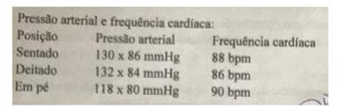
A Trata-se de um paciente que apresenta vários fatores de risco para hipertensão e que se beneficiará pela adoção de medidas de higiene físico-alimentar;
B em pacientes com história a adoção de atividade física 3 x semana já é suficiente para estabilizar as condições de saúde e melhorar a circulação venosa periférica;
C o uso de tabaco nesta quantidade não constitui fator prioritário de intervenção, pois o paciente não apresenta nenhum sintoma respiratório, apesar da ausculta pulmonar.
D uma boa medida de cuidado seria encaminhar o paciente para um check-up cardiológico com radiografia de tórax, ECG, tomografia e avaliar possível cirurgia para corrigir as varizes de imediato.
E Nenhuma das alternativas está adequada
Questão 336 · Reumatologia · 4000002645Uma queixa frequente na clínica do médico de família e comunidade é a dor lombar. Geralmente, apresenta evolução benigna, não sendo necessária a realização de exames de imagem para a investigação etiológica, na maioria das vezes. Qual alternativa não indica uma propedêutica radiológica por não ser um sinal de alerta?
A Déficit neurológico progressivo;
B Dor que não é mecânica;
C Imunossupressão, HIV;
D Sintomas constitucionais;
E Obesidade mórbida.
Questão 337 · Pneumologia · 4000002529Sobre os Nódulos Pulmonares Solitários, assinale a INCORRETA.
A São definidas como lesões intrapulmonares menores que 3 centímetros do maior diâmetro, não associado a outras anormalidades.
B Entre os diagnósticos diferenciais estão lesões neoplásicas, infecciosas, inflamatória, vasculares e traumáticas.
C A presença de calcificações e bordas lisas é característica de nódulos benignos.
D Um ganho maior que 20 UH na tomografia de tórax após a injeção de contraste venoso é característico de benignidade.
Questão 338 · Cardiologia · 4000002486“Swing Heart” é uma alteração ecocardiográfica sugestiva de:
A Hipertensão pulmonar.
B Tamponamento cardíaco.
C Falência de ventrículo direito.
D Insuficiência mitral secundária à ruptura de cordoalha.
Questão 339 · Pneumologia · 4000002462Com relação ao posicionamento correto após a introdução do tubo endotraqueal, assinale a alternativa INCORRETA.
A O posicionamento adequado do tubo na traqueia é sugerido, porém, não confirmado, pela ausculta de murmúrio vesicular em ambos os campos pulmonares e pela ausência de ausculta de borborigmos no epigástrio.
B A presença de borborigmos no epigástrio durante a inspiração do doente sugere intubação esofágica e obriga que o tubo seja trocado e posicionado de forma adequada.
C O detector de dióxido de carbono é indicado para auxiliar na confirmação da intubação correta da via aérea.
D A presença de CO2 no ar expirado tem acurácia de 100% e indica que a intubação foi bem sucedida.
Questão 340 · Investigação etiológica · 4000002409São causas de Hipocalcemia, EXCETO:
A Hiperparatiroidismo.
B Múltiplas transfusões sanguíneas.
C Pancreatite aguda.
D Sepse.
Questão 341 · Empiema · 4000002369Quais são as três fases do Empiema Pleural?
A Edematosa, catarral e crônica.
B Eritematosa, purulenta e cavitária.
C Exsudativa, fibrinopurulenta e organização.
D Piogênica, fibrinosa e necrótica.
Questão 342 · Neurologia · 4000002346A intermação é uma situação que pode ameaçar a vida, geralmente definida como hipertermia maior ou igual a 40ºC associada à desidratação, pele seca com rubor e quente e disfunção do sistema nervoso central. Assinale a alternativa INCORRETA.
A A forma sem esforço frequentemente ocorre durante as ondas de calor ambiental e primariamente afeta os mais idosos e doentes.
B A intermação ocorre quando a temperatura corporal se eleva e o sistema de termorregulação falha em responder adequadamente.
C A mortalidade da intermação varia, em média de 33-80%, nos doentes com intermação clássica.
D A forma clássica ou com esforço normalmente ocorre em jovens e saudáveis, e pessoas fisicamente ativas, que estão engajadas em exercícios extenuantes em ambientes quentes e úmidos.
Questão 343 · Cardiologia · 4000002336Qual é o principal efeito da dopamina quando utilizada em baixas doses?
A Melhora do fluxo renal.
B Aumento da contratilidade cardíaca.
C Aumento da vasoconstrição periférica.
D Ação na vasodilatação periférica.
Questão 344 · Neurologia · 4000002299Assinale a alternativa INCORRETA em relação ao Traumatismo Cranioencefálico (TCE).
A Os programas educacionais e de informação são essenciais para a conscientização tanto dos pais quanto das crianças na prevenção do TCE.
B A tomografia de crânio é o exame de eleição para avaliar lesão intracraniana.
C A radiografia de crânio apresenta como vantagem a identificação da lesão intracraniana.
D A supervisão constante e ativa por um adulto é fundamental para evitar que a criança se exponha a situações de risco.
Questão 345 · Neurologia · 4000002286Qual alternativa apresenta o tipo de fratura que compreende 75% das fraturas de crânio em crianças?
A Aberto.
B Diastático.
C De afundamento.
D Linear.
Questão 346 · Fratura de Base de Crânio · Cirurgia · Fratura de Base de Crânio · 4000002266Das alternativas citadas abaixo, qual apresenta sinais de fratura de base de crânio?
A Equimose periorbitária e de mastoide e otorragia.
B Hematoma em região zigomática, saída de liquor pelo nariz e hematoma parietal.
C Sangramento nasal, afundamento de órbita e hemotímpano.
D Hematoma occipital, otorragia e hematoma de mastoide.
Questão 347 · Neurologia · 4000002252Assinale a alternativa INCORRETA em relação às medidas que podem ser utilizadas para o tratamento da hipertensão intracraniana.
A Na emergência, a administração de solução salina hipertônica a 3% é feita em bolo de 6 a 10 ml/kg.
B A hipotermia moderada (32 a 33 graus celsius) tem seu uso ainda controverso para a população infantil; no entanto, pode ser considerada nas primeiras 8 horas e mantida por até 48 horas posteriormente ao trauma.
C O manitol apresenta evidência que indica seu uso em crianças, com dose variável de 1 a 3 g/kg.
D A monitorização da Pressão Intracraniana (PIC) está indicada em crianças com traumatismo cranioencefálico grave.
Questão 348 · Neurologia · 4000002240Quais são os sinais clínicos de hipertensão intracraniana no traumatismo cranioencefálico grave?
A Bradicardia, hipotensão arterial e taquipneia.
B Vômitos, papiledema e hipóxia.
C Bradicardia, hipertensão arterial e bradipneia.
D Papiledema, anisocoria e hipóxia.
Questão 349 · Neurologia · 4000002233Das alternativas citadas abaixo, qual é o instrumento utilizado para avaliar a gravidade de traumatismo cranioencefálico?
A Escala de coma de Glasgow.
B Mecanismo do trauma.
C Escala de coma de Jouvet.
D Escala de Ramsay.
Questão 350 · Neurologia · 4000002223Com relação à lesão primária do traumatismo cranioencefálico, assinale a alternativa CORRETA.
A Decorre de hipóxia e hipovolemia, que se instalam no momento do trauma.
B Decorre de hipovolemia e hipertensão arterial, que ocorrem com o processo de desaceleração no momento do trauma.
C Decorre de perda de substância cerebral, rompimento das veias e estiramento de axônios com ruptura no momento do trauma.
D Decorre do impacto e das forças de aceleração e desaceleração sobre a caixa craniana e o encéfalo no momento do trauma.
Questão 351 · Tratamento · 4000002195Assinale a alternativa CORRETA em relação à reposição do bicarbonato no tratamento da cetoacidose diabética.
A Atualmente não há indicação para que seja realizada no tratamento da cetoacidose diabética, exceto durante a ressuscitação, com o intuito de se preservar a ação da insulina.
B É considerada um dos recursos que evitam a ocorrência de edema cerebral em crianças.
C Pode levar à hipóxia cerebral decorrente da diminuição da afinidade da hemoglobina pelo oxigênio.
D Também pode causar hiponatremia e hipocalemia.
Questão 352 · Tratamento · 4000002183Assinale a alternativa INCORRETA em relação ao tratamento da cetoacidose diabética (CAD).
A A reposição de insulina pode ser iniciada junto com a fase de expansão ou na segunda hora do tratamento, após a expansão inicial.
B A administração de insulina regular por via endovenosa e em infusão contínua é recomendada pelos especialistas.
C A infusão endovenosa contínua de insulina deve ser evitada, pois leva à queda brusca de glicemia.
D A infusão de insulina por via endovenosa, de forma contínua, permite a redução gradual da glicemia, com menores riscos de complicações, como hipoglicemia e edema cerebral.
Questão 353 · Outras alterações laboratoriais · 4000002175Quanto aos fatores relacionados à siopatologia da cetoacidose diabética (CAD), assinale a alternativa CORRETA.
A O aumento do fluxo de água livre do compartimento intracelular para o extracelular, decorrente da elevação da osmolaridade plasmática, leva à hipernatremia.
B O aumento do fluxo de água livre do compartimento intracelular para o extracelular, decorrente da elevação da osmolaridade plasmática, leva à hiponatremia dilucional.
C O equilíbrio entre os compartimentos intracelular e extracelular raramente leva à alteração nos níveis de sódio.
D A elevação de ácidos graxos livres no plasma contribui para o aumento da natremia.
Questão 354 · Tratamento · 4000002164Quanto à hidratação no tratamento da cetoacidose diabética, marque a afirmativa CORRETA.
A Tanto o soro de manutenção como o soro de reposição é administrado de forma isotônica.
B Deve ser realizada com soro hipotônico para evitar a ocorrência de edema cerebral.
C Deve ser realizada com correção rápida de hipercalemia.
D O soro de manutenção deve ser administrado junto com a solução hipotônica.
Questão 355 · Apresentação clínica · 4000002153O diagnóstico de Cetoacidose Diabética (CAD) envolve a caracterização de alterações clínicas e laboratoriais. Os principais sintomas dessa complicação são, EXCETO
A polidipsia.
B Poliúria.
C Náuseas e vômitos.
D Disúria.
Questão 356 · Outras Medicações · Indicações de Ventilação Mecânica · Hipoxemia e terapias de resgate · 4000002146Assinale a alternativa INCORRETA em relação aos objetivos da ventilação mecânica invasiva no tratamento da asma aguda.
A Tratar a hipoxemia.
B Reverter a fadiga respiratória.
C Diminuir o tempo de internação.
D Oferecer um regime ventilatório seguro enquanto se aguarda pela broncodilatação e pela redução da inflamação.
Questão 357 · Pneumologia · 4000002140Assinale a alternativa INCORRETA em relação às contraindicações para o uso de ventilação mecânica não invasiva.
A Instabilidade hemodinâmica.
B Instabilidade hemodinâmica.
C Instabilidade hemodinâmica.
D Apneias.
Questão 358 · Cardiologia · 4000002106Outros exames laboratoriais que devem ser solicitados na admissão são: troponina (na suspeita de doença arterial coronária, miocardite ou Takotsubo), entre outros, somente estando INADEQUADO nesse conceito, o item que se apresenta errado. Indique- o.
A O ECG permite suspeitar da etiologia da IC e da causa da descompensação. A presença de um ECG normal é comum, e praticamente não exclui doença miocárdica crônica.
B Na admissão do paciente, é necessária a avaliação por meio do monitor, com confirmação posterior pelo ECG de taquiarritmias ou bradiarritmias, que demandem intervenção terapêutica imediata.
C O ecocardiograma deve ser realizado em todos os pacientes dentro das primeiras 48 horas da admissão.
D A realização precoce do ecocardiograma apresenta particular importância nos pacientes com choque cardiogênico e IC aguda nova.
Questão 359 · Insulinoterapia no tratamento do diabetes mellitus tipo 2 · 4000002094A maioria dos estudos compara o uso de insulina em monoterapia com o Tratamento Combinado (TC) de insulina com metformina, sulfonilureias ou ambas, por serem as drogas com maior número de anos de utilização e mais amplamente empregadas. O terapia combinada de insulina com o uso de metformina apresenta menor risco de hipoglicemia e de ganho de peso, podemos apenas considerar INADEQUADO que.
A DM2, o uso de terapia combinada de insulina com metformina, sulfonilureias ou ambas, apresenta resultados semelhantes aos da insulinoterapia.
B Observando um maior ganho de peso quando se a metformina era adicionada e maior redução do requerimento de insulina com o uso da sulfonilureias.
C Nos demais parâmetros, em todos os estudos com TC, poucos foram os pacientes que apresentaram alguma alteração na qualidade de vida e nos níveis de lipoproteínas, triglicérides e outros lipídios.
D Faltam estudos que indiquem as vantagens do TC no desenvolvimento de complicações macro e microvasculares.
Questão 360 · Cardiologia · 4000002082Em situações clínicas de rápida instalação, como edema agudo de pulmão em ush, na insu ciência mitral aguda, ou no cor pulmonale agudo, podemos observar níveis não elevados dos peptídeos natriuréticos. Sendo CORRETO que, em pacientes:
A Sem uso do medicamento sacubitril-valsartana, a inibição da neprilisina pelo sacubitril promove elevação nos níveis séricos do BNP, mas não do NT-proBNP, interferindo na acurácia diagnóstica do BNP. Nestes pacientes, devemos utilizar o NT-proBNP.
B Em uso do medicamento sacubitril-valsartana, a inibição da neprilisina pelo sacubitril, não promove elevação nos níveis séricos do BNP, mas não do NT proBNP, interferindo na acurácia diagnóstica do BNP. Nestes pacientes, devemos utilizar o NT-proBNP.
C Em uso do medicamento sacubitril-valsartana, a inibição da neprilisina pelo sacubitril promove elevação nos níveis séricos do BNP, mas não do NT proBNP, interferindo na acurácia diagnóstica do BNP. Nestes pacientes, devemos utilizar o NT-proBNP.
D Em uso do medicamento sacubitril-valsartana, a inibição da neprilisina pelo sacubitril promove redução nos níveis séricos do BNP, mas não do NT proBNP, interferindo na acurácia diagnóstica do BNP. Nestes pacientes, devemos utilizar o NT-proBNP.
Questão 361 · Cardiologia · 4000002056Os peptídeos natriuréticos, quando disponíveis, devem ser utilizados de rotina na avaliação diagnóstica admissional na sala de emergência de pacientes com dispneia ou suspeita de Insu ciência Cardíaca (IC) aguda, sendo INADEQUADO, apenas, que
A Apresentam alto valor preditivo de IC quando analisados de forma isolada, ou quando associados ao exame clínico e radiológico do tórax.
B Em decorrência dos vários fatores clínicos que podem estar associados à elevação dos peptídeos natriuréticos, reduzindo sua capacidade preditiva diagnóstica positiva.
C Níveis séricos intermediários de BNP entre 100 e 500 pg/mL, ou NT-proBNP entre 300 e 900 pg/mL necessitam da correlação clínica para confirmação do diagnóstico da IC aguda. Por outro lado, a presença de níveis elevados de BNP > 500 pg/mL e NT-proBNP > 900 pg/mL indicam fortemente diagnóstico de IC aguda.
D Os peptídeos natriuréticos apresentam baixa capacidade de afastar o diagnóstico (baixa sensibilidade), na presença de níveis séricos de BNP < 100 pg/mL e NT-proBNT < 300 pg/mL.
Questão 362 · Inf ectologia · 4000002045Dentro das recomendações para diagnóstico e tratamento da miocardite por doença de Chagas aguda ou reativação, devemos entender que a miocardite por doença de Chagas deve ser suspeitada nos seguintes cenários. Indique o item que se apresenta ERRADO.
A Insuficiência Cardíaca (IC) de início recente.
B Sinais de reativação da infecção pelo Trypanosoma cruzi no contexto de transplante de órgãos e/ou uso de imunossupressores, somente com sinais de IC.
C Sinais de reativação da infecção por T. cruzi no contexto de síndrome da imunodeficiência adquirida com ou sem sinais de IC.
D Alterações recentes em exames de ECG ou de imagem com ou sem sinais/sintomas de IC em paciente com epidemiologia positiva.
Questão 363 · Cardiologia · 4000002026Indicações de uso do Ecocardiograma Transtorácico como teste diagnóstico por imagem preferencial para avaliação inicial dos pacientes com suspeita de Insu ciência Cardíaca IC, por sua ampla disponibilidade e por utilizar radiação ionizante, estando INADEQUADO que:
A Existem inúmeros estudos mostrando que a avaliação da deformação miocárdica pela técnica de speckle tracking adiciona informações ao cenário clínico, constituindo um marcador precoce de disfunção ventricular, antes mesmo da alteração da fração de ejeção.
B A estimativa do Global Longitudinal Strain vem sendo testada para a detecção subclínica da toxicidade cardíaca secundária à quimioterapia.
C Tendo em vista um grande número de softwares e modalidades diferentes de execução, além da tecnologia necessária, a avaliação de deformação miocárdica está indicada na avaliação de rotina nos pacientes com IC.
D A utilização do ecocardiograma transtorácico ou ultrassom torácico em conjunto com a avaliação clínica ajuda de forma significativa a estabelecer com maior certeza o modelo clínico
Questão 364 · Inf ectologia · 4000002008A Leishmaniose Tegumentar Americana (LTA) pode modi car a progressão da doença pelo HIV e a imunodepressão causada por esse vírus facilita a progressão da LTA. As propostas e ações em pacientes coinfectados Leishmania-HIV no Brasil estão descritas abaixo, indique o item INCORRETO.
A Não há um perfil clínico definido associado à coinfecção em pacientes portadores de HIV.
B Achados não usuais podem ser observados nos pacientes coinfectados, como, por exemplo, o encontro de Leishmania spp. em pele íntegra, e sobrepondo lesão de sarcoma de Kaposi ou em lesões de Herpes simplex e Herpes-zóster.
C Pode ocorrer acometimento do trato gastrointestinal e do trato respiratório para a coinfecção Leishmania-HIV.
D Recomenda-se oferecer a sorologia para HIV para todos os pacientes com LTA, dependendo da idade. Ressalta-se a importância de obter o resultado da sorologia para HIV o mais rapidamente possível, para orientar a conduta clínica específica.
Questão 365 · Cardiologia · 4000001987Quanto à indicação da terapia antiplaquetária nos pacientes de muito alto risco, incluindo aqueles com Doença Aterosclerótica Clínica (DACL) e eventos cardiovasculares prévios (prevenção secundária), o benefício é estabelecido em diversos estudos, o AAS (ou outro antiplaquetário):
A Foi protetor na maioria dos pacientes com risco aumentado de eventos vasculares, incluindo aqueles com IAM ou AVC isquêmico, bem como outras doenças vasculares prévias.
B Não foi protetor na maioria dos pacientes com risco aumentado de eventos vasculares, incluindo aqueles com IAM ou AVC isquêmico, bem como outras doenças vasculares prévias.
C Foi protetor na maioria dos pacientes com risco aumentado de eventos não vasculares, incluindo aqueles com IAM ou AVC isquêmico, bem como outras doenças vasculares prévias.
D Foi protetor na maioria dos pacientes com risco aumentado de eventos vasculares, excluindo aqueles com IAM ou AVC isquêmico, bem como outras doenças vasculares prévias.
Questão 366 · Cardiologia · 4000001967O Ecocardiograma Transtorácico Bidimensional com análise dos uxos pelo método doppler (Eco-2D- Doppler) é o teste diagnóstico por imagem preferencial para avaliação inicial dos pacientes com suspeita de Insu ciência Cardíaca (IC), por sua ampla disponibilidade e por prescindir do uso de radiação ionizante. Estando ADEQUADO que:
A Método amplamente abrangente, o ecocardiograma não pode identificar acuradamente a presença de alterações estruturais cardíacas.
B Pode identificar acuradamente incluindo anormalidade do miocárdio, das válvulas cardíacas e do pericárdio, sem avaliar aspectos hemodinâmicos.
C O ecocardiograma permite a avaliação simultânea de múltiplas variáveis relevantes, do ponto de vista clínico, útil para a compreensão das manifestações clínicas.
D O ecocardiograma permite a avaliação simultânea de múltiplas variáveis relevantes, do ponto de vista clínico, útil para a compreensão das manifestações clínicas.
Questão 367 · Endocrinologia · 4000001822Quando é feita a programação metabólica de cada ser humano?
A Primeiros 100 dias de vida
B Primeiros 1000 dias de vida
C Durante toda a infância e adolescência
D Durante toda a vida
Questão 368 · Gastroenterologia · 4000001769A maior fonte de nutrientes e calorias na dieta de um indivíduo deve vir de qual categoria?
A Álcool
B Carboidratos
C Gordura
D Proteína
Questão 369 · Endocrinologia · 4000001743Um homem de 67 anos com hipertensão e apnéia do sono se apresenta à sua clínica para acompanhamento de rotina. Quando você abre sua discussão com ele, ele diz que alguns amigos o aconselharam a perguntar ao seu médico sobre seu baixo nível de testosterona. Ele está interessado em fazer o teste. Qual das seguintes afirmações para este paciente é válida?
A "Se você for diagnosticado com déficit de testosterona, a terapia com testosterona exógena pode piorar a apnéia do sono".
B "É recomendado que todos os homens com mais de 60 anos sejam testados quanto aos níveis de testosterona total e testosterona biodisponível".
C “A maioria dos estudos mostra que a concentração de testosterona não diminui, em média, com o avançar da idade. Em vez disso, a testosterona endógena produzida é menos potente”.
D "Os níveis de testosterona estão associados a um risco de demência em homens".
Questão 370 · Cardiologia · 4000001681Qual das seguintes a rmações sobre doença arterial coronariana (DAC) em mulheres, quando comparadas aos homens, é verdadeira?
A A angina é um sintoma raro em mulheres com DAC.
B No momento do diagnóstico de DAC, as mulheres geralmente apresentam menos comorbidades quando comparadas aos homens.
C Os médicos são menos propensos a considerar a doença coronariana em mulheres e também são menos propensos a recomendar procedimentos diagnósticos e terapêuticos em mulheres.
D Mulheres e homens apresentam DAC em idades semelhantes.
Questão 371 · Medicina Preventiva · Intoxicação pelo chumbo · 4000001643Paciente trabalhador em uma empresa de tintas vem apresentando astenia, cansaço fácil, irritabilidade, comprometimento da memória e redução da força muscular. Esses sintomas podem ser indicativos da intoxicação por:
A Chumbo;
B Mercúrio;
C Benzeno;
D Cromo.
Questão 372 · Cardiologia · 4000001390A radiogra a simples do tórax, por sua simplicidade, rapidez de obtenção e ampla disponibilidade, é recomendada na avaliação inicial dos pacientes com sinais e sintomas de Insu ciência Cardíaca. Portanto, é INCORRETO:
A Para a avaliação de cardiomegalia e congestão pulmonar.
B Para a avaliação de cardiomegalia e congestão pulmonar.
C O método tem maior valor no contexto da IC aguda, em que as alterações de congestão pulmonar são mais intensas.
D A radiografia de tórax também é útil por sua capacidade de identificar causas pulmonares de dispneia, como doença pulmonar intersticial, Doença Pulmonar Obstrutiva Crônica (DPOC), neoplasia pulmonar e pneumonia.
Questão 373 · Cardiologia · 4000001382A realização de Eletrocardiograma (ECG) de 12 derivações é recomendada na avaliação inicial de todos os pacientes com Insu ciência Cardíaca, para avaliar sinais de cardiopatia que podem demandar cuidados e tratamentos específicos. Marque a opção INCORRETA.
A Vários destes aspectos são marcadores prognósticos em muitas cardiopatias, como na chagásica crônica.
B Para avaliar sinais de cardiopatia estrutural como hipertrofia ventricular esquerda, isquemia miocárdica e áreas de fibrose.
C A detecção de Bloqueio de Ramo Esquerdo (BRE), com alargamento pronunciado da duração do complexo QRS, não altera a indicação da Terapia de Ressincronização Cardíaca (TRC).
D Para avaliar distúrbios da condução atrioventricular, bradicardia ou taquiarritmias, que podem demandar cuidados e tratamentos específicos.
Questão 374 · Inf ectologia · 4000001374Não há um per l clínico definido associado à confecção em pacientes portadores de HIV. O diagnóstico da confecção com HIV tem implicações na abordagem da leishmaniose em relação ao diagnóstico, à indicação terapêutica e ao monitoramento de efeitos adversos, à resposta terapêutica e à ocorrência de recidivas. NÃO está CORRETO que:
A Não existem casos de indivíduos coinfectados, cuja leishmaniose evolui sem nenhum impacto aparente da infecção pelo HIV.
B Todas as formas de apresentação da infecção por Leishmania spp. já foram descritas em pessoas infectadas pelo HIV.
C A tríade clássica da Leishmania Visceral (LV) é, também, a manifestação mais comum da doença na coinfecção: hepatoesplenomegalia, febre e pancitopenia são observadas em 75% dos casos.
D Recomenda-se oferecer a sorologia para HIV para todos os pacientes com (LV).
Questão 375 · Cardiologia · 4000001362Na abordagem inicial dos pacientes com sinais e sintomas sugestivos de Insu ciência Cardíaca (IC) crônica ambulatorial, recomenda-se a realização de diversos exames laboratoriais complementares, estando INADEQUADO que:
A Para avaliar a presença e a gravidade de lesões somente no coração.
B Para detectar comorbidades.
C Para verificar fatores agravantes do quadro clínico.
D A realização de exames seriados pode ser necessária para a monitoração de variáveis de segurança, durante o tratamento da IC, incluindo função renal e eletrólitos.
Questão 376 · Insulinoterapia no tratamento do diabetes mellitus tipo 2 · 4000001340O Terapia Combinada de insulina com Drogas Antidiabéticas Orais ou DAOs permite um controle similar ou até superior ao obtido com o uso isolado de insulina, quando ela é administrada. Podemos, apenas, concordar que, a eficácia dos resultados:
A Não dependerá, entretanto, das características clínicas e fisiológicas do paciente, tendo em vista, também, os potenciais efeitos colaterais individuais das diferentes drogas orais.
B Dependerá, entretanto, das características clínicas e fisiológicas do paciente, tendo em vista, também, os potenciais efeitos colaterais individuais das diferentes drogas orais.
C Independerá, entretanto, das características clínicas e fisiológicas do paciente, tendo em vista, também, os potenciais efeitos colaterais individuais das diferentes drogas orais.
D Dependerá, entretanto, das características clínicas e, mas não fisiológicas do paciente, tendo em vista, também, os potenciais efeitos colaterais individuais das diferentes drogas orais.
Questão 377 · Cardiologia · 4000001323No cenário da Insu ciência Cardíaca (IC) avançada, a classificação clínica dos pacientes, baseada nas classes funcionais propostas pela New York Heart Association (NYHA), que é funcional e usada para descrever e classificar a gravidade dos sintomas apresenta indicações e limitações. Qual dos itens abaixo está INADEQUADO?
A Não mais possibilita adequada seleção dos pacientes que se beneficiarão de cardio- desfibriladores implantáveis.
B Não mais possibilita adequada seleção dos pacientes que se beneficiarão de ressincronizadores ventriculares e transplante cardíaco.
C Não mais possibilita adequada seleção dos pacientes que se beneficiarão de Dispositivos de Assistência Circulatória Mecânica (DACM).
D Possibilita adequada seleção dos pacientes que se beneficiarão de terapias medicamentosas.
Questão 378 · Inf ectologia · 4000001308As condições em que portadores de HIV/aids devem ser investigados para a Leishmaniose Tegumentar Americana (LTA) e as interações de condutas estão descritas a seguir. Indique o item que apresenta conceito ERRADO.
A Qualquer tipo de lesão cutânea ou mucosa com mais de cinco semanas de evolução, em pacientes expostos à área de transmissão de LTA, em qualquer época da vida.
B A droga de primeira escolha é o antimonial pentavalente.
C Não havendo resposta satisfatória com o tratamento pelo antimonial pentavalente, as drogas de segunda escolha são a anfotericina B e o isotionato de pentamidina, conforme descrito.
D Com exceção dos pacientes coinfectados com HIV e gestantes, a droga de primeira escolha é o antimonial pentavalente.
Questão 379 · Cardiologia · 4000001294Análise de estudos dos benefícios e os danos de baixa dose de AAS em pacientes com diabetes e sem doença cardiovascular (DCV) conhecida. Sendo INCORRETO, apenas, que,
A Pacientes diabéticos sem Doença Aterosclerótica Clínica (DACL) não devem receber terapia antiplaquetária para prevenção primária de eventos cardiovasculares.
B Indivíduos diabéticos e sem doença aterosclerótica manifesta classificados na categoria de alto risco, com idade > 65 anos e baixo risco de sangramento, o AAS pode ser considerado individualmente para prevenção primária de doença cardiovascular.
C AAS esteve associado a reduções dos principais eventos cardiovasculares.
D Não houve aumento de AVC hemorrágico e sangramento maior com AAS.
Questão 380 · Inf ectologia · 4000001282A Leishmaniose Tegumentar Americana ou Úlcera de Bauru, nariz de tapir ou botão do Oriente são infecções por leishmanias que causam a leishmaniose. Os vetores da LTA são insetos denominados ebotomíneos, pertencentes à ordem Diptera, família Psychodidae, subfamília Phlebotominae, gênero Lutzomyia, conhecidos popularmente como mosquito palha, tatuquira, birigui, entre outros, dependendo da localização geográfica, sendo INADEQUADO que:
A Infecções por leishmanias que causam a Leishmaniose Tegumentar Americana (LTA) foram descritas em várias espécies de animais silvestres (roedores, marsupiais, edentados e canídeos silvestres), sinantrópicos (roedores) e domésticos (canídeos, felídeos e equídeos).
B Doença infecciosa, não contagiosa, causada por protozoário, de transmissão vetorial, que acomete pele poupando as mucosas.
C Com relação aos animais domésticos, seu papel na manutenção do parasito no meio ambiente ainda não foi esclarecido.
D Picada de fêmeas de “ebotomíneos” infectadas. Não há transmissão de pessoa a pessoa.
Questão 381 · Cardiologia · 4000001269O estudo que comparou clopidogrel versus AAS em pacientes com risco de isquemia, tendo demonstrado uma redução significativa do número total de readmissões para eventos isquêmicos. NÃO podemos, apenas, concordar que:
A Naqueles pacientes que apresentam alergia ao AAS ou intolerância gástrica, o clopidogrel pode ser considerado uma alternativa.
B Redução de novas hospitalizações foi consistente em todos os resultados individuais de angina, ataque isquêmico transitório, isquemia de membros e sangramento.
C Clopidogrel não resultou em diminuição em desfecho combinado de morte vascular, AVC, infarto do miocárdio ou nova hospitalização para eventos isquêmicos ou sangramento em comparação com o AAS.
D Dessa forma clopidogrel pode ser usado como alternativa ao AAS em intolerantes.
Questão 382 · Coqueluche · 4000001210“A coqueluche é causada por uma infecção do epitélio ciliado do trato respiratório por uma bactéria, a Bordetella pertussis. É uma importante causa de tosse prolongada e uma doença infectocontagiosa de alta transmissibilidade, com uma taxa de ataque secundário de 90% entre os contatos domiciliares não imunes. ” Quanto à vacinação para coqueluche, é correto afirmar:
A A vacina confere proteção prolongada e são necessárias apenas as doses da infância;
B A criança tem previstas, em seu cartão vacinal, apenas 3 doses para coqueluche;
C A gestante deve tomar uma dose da vacina dTpa a partir de 18 semanas de gestação;
D No cartão vacinal da criança, temos 5 doses para coqueluche.
Questão 383 · Síndromes Cerebelares · Inf ecções do Sistema Nervoso Central · 4000001186Paciente de 3 anos, com quadro prévio de infecções de vias aéreas superiores há 1 semana, começou a apresentar di culdade na marcha. Ao exame físico, estava afebril, apresentava dismetria, com marcha alargada e prejuízo de equilíbrio, sem perda de força em membros inferiores. Além disso, apresentava-se muito irritado e choroso. O líquido cefelorraquidiano apresentava pressão normal, pleiocitose com predomínio de mononucleares, proteína normal, glicose normal. Tomogra a de crânio sem alterações. Apresentou melhora apenas com o uso de sintomáticos. O diagnóstico mais provável é:
A Cerebelite viral;
B Síndrome de Guillain-Barré;
C Meningite bacteriana;
D Doença muscular neurodegenerativa.
Questão 384 · Pseudocisto Pancreático · Pseudocisto · Pseudocisto · 4000001115Mulher, 55 anos, chega ao ambulatório de cirurgia com queixa de dor e aumento de volume abdominal. Quanto aos antecedentes, apresentou quadro de pancreatite há 4 semanas e foi submetida a tratamento clínico com sucesso. O cirurgião pede exames para a investigação do quadro e, durante esse período, a paciente refere melhora espontânea da dor. Nos exames complementares, a paciente apresenta ascite. O Diagnóstico provável é de:
A Necrose pancreática;
B Pancreatite crônica;
C Rotura de pseudocisto;
D Nova pancreatite aguda.
Questão 385 · Isquemia Mesentérica Aguda · 4000001097Paciente de 71 anos chega ao ambulatório com queixa de dor abdominal intensa, que se iniciou há 24 horas. Não houve parada de eliminação de atos e fezes. Ao exame, abdome ácido, sem sinais de peritonite, sem massas ou visceromagalias. Quanto aos hábitos de vida, nega tabagismo e etilismo, refere prática de atividade física regular e dieta hipolipídica, rica em bras.Quanto aos antecedentes patológicos, o paciente refere fazer uso apenas de AAS e anticoagulante para o tratamento de brilação atrial crônica. A principal hipótese diagnóstica seria:
A Isquemia mesentérica;
B Distúrbio neurovegetativo;
C Tumor de colon;
D Pancreatite aguda.
Questão 386 · Classif icação de Borrmann · Gastroenterologia · 4000000949No estadiamento morfológico dos tumores do estômago, a classificação Bormann 4, é:
A Tumor ulcerado.
B Infiltrativo local.
C Infiltrativo difuso (Linite).
D Escavado.
E Ulcerado e infiltrativo local.
Questão 387 · Tratamento clínico · 4000000945Uma mulher de 84 anos com diabetes mellitus e doença renal crônica é admitida no hospital por 2 a 4 dias com alterações do estado mental e dores de cabeça. Ela nega a fotofobia, mas tem rigidez leve de nuca. A TC de crânio revela um abscesso focal de 1 cm no lobo temporal direito e a análise do líquido cefalorraquidiano (LCR) mostra uma contagem leucocitária de 800 / polimorfonucleares) com um nível de glicose baixo normal. A coloração de Gram do LCR revela bacilos gram- positivos. Qual dos seguintes antibióticos é a escolha mais apropriada para este paciente?
A Ampicilina
B Azitromicina
C Cefazolina
D Ciprofloxacina
Questão 388 · Alf af etoproteína AFP · 4000000938O marcador tumoral mais específico para o carcinoma hepatocelular é:
A CA 19-9.
B CA 125-5.
C Alfa-fetoproteína.
D Antígeno Carcinogênico Embrionário (CEA).
E Anticorpos anti-mitocôndria.
Questão 389 · Formas clínicas · 4000000916Paciente de 45 anos, sexo masculino, morador de área rural, refere febre há 3 meses, adinamia, tosse seca e rouquidão. Buscou assistência a saúde por ter começado a apresentar lesões ulceradas em pele. Ao exame físico,apresenta-se emagrecido (perdeu 15 kg nos últimos 2 meses, sem restrição alimentar intencional), com adenomegalias em cadeias occipital, axilar, cervical, supraclavicular e inguinal, além das lesões ulceradas com algumas lesões vegetantes associadas. A principal hipótese diagnóstica é:
A Paracoccidioidomicose;
B Histoplasmose;
C Tuberculose;
D Dermatomiosite.
Questão 390 · Manif estações clínicas · Síndrome de Sjögren · 4000000900Uma paciente com síndrome de Sjögren primária que foi diagnosticada há 6 anos e tratado com lágrimas arti cial para alívio dos sintomas, apresentou inchaço da parótida nos últimos 3 meses. Ela também notou aumento dos linfonodos cervicais posteriores. A avaliação mostra leucopenia e baixos níveis de complemento de C4. Qual é o diagnóstico mais provável?
A Amiloidose
B Pancreatite crônica
C Infecção pelo HIV
D Linfoma
Questão 391 · Tratamento · 4000000860Uma mulher de 36 anos com síndrome da imunode ciência adquirida (AIDS) e uma contagem de CD4 de 35 / μ L apresenta odinofagia e disfagia progressiva. A paciente relata febres diárias e uma perda de peso de 9 kg. A paciente foi tratado com clotrimazol sem alívio. No exame físico, a paciente é caquético com um índice de massa corporal (IMC) de 16 e um peso de 39 kg. A paciente tem uma temperatura de 38,2°. O exame da orofaringe não revela evidência de candidíase. A paciente é submetida a uma endoscopia digestive alta (EDA), que revela úlceras serpiginosas no esôfago distal sem vesículas. Nenhuma placa amarela é visualizada. São realizadas múltiplas biópsias que mostram inclusões intranucleares e intracitoplasmáticas em grandes células endoteliais e fibroblastos. Qual é o melhor tratamento para a esofagite deste paciente?
A Ganciclovir
B Corticóides
C Fluconazol
D Foscarnet
Questão 392 · Cirurgia · Tratamento · Acalásia Megaesôf ago · 4000000855Quais destas operações são realizadas no tratamento do megaesôfago chagásico em graus iniciais?
A Esofagocoloplastia.
B Esofagogastroplastia.
C Esofagectomia total.
D Todas as anteriores.
E Nenhuma das anteriores.
Questão 393 · Cardiologia · 4000000852A insu ciência cardíaca (IC) é uma síndrome que representa o estágio nal de várias doenças cardíacas. Em relação à IC, podemos afirmar, exceto:
A A IC pode ser predominantemente direita, produzindo congestão pulmonar, dispnéia e estertores pulmonares; ou predominantemente esquerda, quando há congestão periférica, ocasionando estase jugular, hepatomegalia, ascite e edema de extremidades.
B É uma síndrome progressiva.
C Pode ser apresentada através de sinais e sintomas de IC com fração de ejeção > 50%, devido a disfunção diastólica.
D O eletrocardiograma pode fornecer informações diagnósticas e prognósticas importantes.
Questão 394 · Hanseníase · 4000000839Assinale a alternativa INCORRETA sobre a hanseníase.
A A hanseníase é moléstia causada pelo mycobacterium leprae e provoca lesões cutâneas caracterizadas por alterações de sensibilidade.
B O eritema nodoso hansênico é característico da reação hansênica tipo 2.
C Nas formas tuberculóides da hanseníase, a baciloscopia nas lesões é positiva.
D Na forma virchoviana, pode ocorrer alopecia de cílios e supercílios, além de espessamento dos pavilhões auriculares.
E Na reação hansênica tipo 1, as lesões existentes se tornam mais eritematosas e edematosas, bem como podem surgir novas lesões agudas.
Questão 395 · História clínica e exame f ísico · Ecocardiograma · 4000000835Em relação as causas de dor torácica, podemos afirmar:
A Na suspeita de síndromes coronarianas agudas, a presença de sopro carotídeo exclui esse diagnóstico.
B O ecocardiograma transesofágico à beira do leito é o exame de escolha para pacientes hemodinamicamente instáveis.
C Na suspeita de TEP, o exame de dímero-D não auxilia no diagnóstico.
D A ultrassonografia de tórax na sala de emergência não tem validade diagnóstica na suspeita de pneumotórax.
Questão 396 · Diagnóstico · 4000000832Qual resultado de LCR é mais sugestivo de meningite pneumocócica?
A Turvo, 600 células, 90% neutrófilos, diplococos Gram-positivos.
B Turvo, 900 células, 95% neutrófilos, diplococos Gram-negativos.
C Turvo, 180 células, 70% linfócitos, cultura em andamento.
D Turvo, 100 células, 60% linfócitos, proteínas: 280 mg%.
E Nenhuma das alternativas.
Questão 397 · Critérios diagnósticos · 4000000821O diagnóstico de diabetes mellitus é feito da seguinte forma, exceto:
A Glicemia de jejum acima de 126 mg/dl em mais de uma amostra.
B Glicemia 2 h após sobrecarga oral de 75 g de glicose acima de 200 mg/dl.
C Glicemia de jejum entre 100 e 125 mg/dl associada a hemoglobina glicada acima de 6,5%.
D Hemoglobina glicada acima de 6,5% (confirmado em outra dosagem).
Questão 398 · Esquemas de tratamento · 4000000818O esquema recomendado para tratamento de hepatite C, genótipo 1, é:
A Sofosbuvir + daclastavir.
B Sofosbuvir + simeprevir.
C Interferon alfa + ribavirina.
D Interferon alfa + amantadina.
E Nenhuma das alternativas.
Questão 399 · Def iciência de ácido f ólico · Causas de anemia megaloblástica · Def iciência de vitamina B12 · 4000000810As anemias megaloblásticas são causadas por de ciência de de vitamina B12, de folato ou de ambos. Em relação às origens dessas, podemos citar, exceto:
A Deficiência de fator intrínseco.
B Doença intrínseca intestinal.
C Necessidade aumentada (gravidez, doença neoplásica, hipertireoidismo).
D Menometrorragia (perda excessiva de ferro).
Questão 400 · Diuréticos · Restrição de água e hiponatremia · Tratamento · 4000000798Na abordagem terapêutica da ascite volumosa podemos considerar as seguintes possibilidades:
A Paracentese de grande volume com expansão de volume com albumina EV;
B Uso de diuréticos combinados – Furosemida 80 mg + espironolactona 100 mg
C Proteína no líquido ascítico < a 1,0 g justifica a profilaxia de peritonite bacteriana espontânea com o uso de quinololonas;
D Apenas duas alternativas estão corretas;
E Na hemorragia digestiva alta está indicada a profilaxia primária para peritonite bacteriana espontânea por sete dias.
Questão 401 · Introdução aos linf omas · 4000000793Em um estudo retrospectivo com 2556 pacientes atendidos em serviços primários de saúde e que apresentavam adenomegalia sem etiologia definida, observou-se prevalência de 1,1% de malignidade. Em relação ao risco de malignidade nas adenomegalias, podemos afirmar:
A A idade maior que 40 anos não é um fator de risco.
B É mais frequente quando a localização for supraclavicular.
C É mais comum nas adenomegalias com consistência diminuída.
D A duração maior que 4 semanas é mais comum nos de origem infecciosas.
Questão 402 · Marcadores sorológicos · 4000000787Paciente de 60 anos, barbeiro, vai a unidade de saúde para fazer exames de rotina. Durante a investigação, foi evidenciado aumento de aminotrasnferases. O paciente relata que nunca fez uso de bebidas alcoólicas, pratica caminhadas regularmente e tem uma dieta adequada, nunca tendo precisado de usar medicação. Sorologias solicitadas apresentam os seguintes resultados: Anti-HBS não reagente; HBsAg reagente; anti HBc IgM não reagente; anti HBc IgG reagente e anti-HCV IgG não reagente. Em relação à interpretação das sorologias acima, assinale a alternativa correta:
A O paciente é portador de hepatite aguda pelo vírus B;
B O paciente é portador de hepatite B crônica;
C O paciente é portador de hepatite C crônica;
D O paciente recebeu vacina para hepatite B.
Questão 403 · Lesão Renal Aguda no Hepatopata · 4000000785Na definição de IRA em pacientes com cirrose, conforme revisão do Clube Internacional de Ascite (2015), deve ser considerado INCORRETA a seguinte afirmação:
A É considerado IRA um aumento absoluto igual ou superior a 0.3 mg/dl na creatinina sérica.
B O valor fixo de 1,5 mg/dl não é mais utilizado.
C Os estádios de gravidade de IRA foram definidos de acordo com os níveis de elevação de creatinina sérica.
D O débito urinário ainda deve ser considerado para definição de IRA.
E A Síndrome hepatorrenal deve ser considerada quando forem excluídos fatores precipitantes e resposta insatisfatória a expansão com albumina.
Questão 404 · Manejo da Nef ropatia diabética · 4000000777Um paciente, com cinquenta e seis anos de idade, tabagista, diagnosticado com diabetes mellitus há mais de vinte anos, não insulinodependente, hipertenso controlado, em uso de anlodipino 10 mg/dia e metformina 850 mg duas vezes ao dia. Os exames laboratoriais com: microalbuminúria = 300 mg/24 horas; creatinina sérica =1,4 mg/dl; potássio sérico = 4,8 mEq/L e hemoglobina glicosilada = 7,5 %. Considerando o caso relatado, assinale a alternativa CORRETA:
A Os níveis de pressão arterial e o hábito de fumar não são fatores de risco para a progressão da nefropatia.
B A utilização de drogas inibidoras da enzima de conversão da angiotensina ou inibidoras do receptor AT1 da angiotensina está contraindicada no caso de tendência à hiperpotassemia.
C A ausência de elevada excreção urinária de albumina exclui o diagnóstico de nefropatia diabética.
D Em pacientes com diabetes tipo II, o aparecimento da nefropatia diabética é muito raro.
E Em pacientes com diabetes tipo II, a presença de microalbuminúria é um marcador de risco para doenças cardiovasculares.
Questão 405 · Hematologia · 4000000763Em pacientes com doença renal crônica, a falta de produção endógena da eritropoietina e outros fatores associados, como a de ciência relativa ou absoluta de ferro, resultam no desenvolvimento de anemia, que é uma condição associada à piora da qualidade de vida e ao aumento na morbidade e mortalidade. A respeito do tratamento da anemia, do uso de eritropoietina recombinante humana e da reposição do ferro nos pacientes em hemodiálise, assinale a opção CORRETA.
A No tratamento da anemia em hemodiálise, a hemoglobina alvo é 13g/dl.
B De modo geral, a atividade inflamatória aumentada não interfere na resposta do paciente à eritropoietina recombinante humana.
C Doses elevadas de eritropoietina para o tratamento da anemia em pacientes com doença renal crônica estão associadas ao desenvolvimento ou à piora da hipertensão e ao aparecimento de acidentes vasculares cerebrais.
D Se, na avaliação laboratorial dos estoques de ferro, for verificado que a ferritina está abaixo de 500 ng/ml, a administração de ferro endovenoso deverá ser suspensa.
E A causa mais comum de resposta inadequada à eritropoietina recombinante humana é a deficiência de folato.
Questão 406 · Neurologia · 4000000751Paciente de 78 anos chega à emergência com paralisia em dimídio esquerdo e disfasia. Encontra-se lúcido, PA = 240 x 135 mmHg; FC = 98 bpm e SatO2 = 96%. Qual a conduta mais apropriada para o controle da pressão arterial?
A Metropolol em bolus e nitroprussiato de sódio em bomba de infusão, mantendo PA em 170 x 110 mmHg.
B Captopril SL e Furosemida EV para queda imediata da PA.
C Reduzir imediatamente a PA para níveis abaixo de 140 x 90 mmHg com a medicação que estiver ao alcance.
D Nitroprussiato de sódio em bomba de infusão para manter a PA < ou = a 120 x 80 mmHg.
E Fazer medicação oral, observando o que já toma em casa e aguardar o resultado da tomografia.
Questão 407 · Gastroenterologia · 4000000741O Esôfago de Barrett (EB):
A Torna-se mais sintomático ao longo do tempo devido à inflamação da mucosa.
B Está ligado ao refluxo duodeno-gastro-esofágico.
C Classifica-se como curto se menor que 2 cm.
D Caracteriza-se pela presença de células do tipo fúndico.
Questão 408 · Tratamento · 4000000735Homem de 54 anos queixando-se de palpitações há 72 horas, após ingestão de bebida alcoólica, procura atendimento de urgência. Sem antecedentes de doença cardíaca. PA = 140 x 80 mmHg; FC = 168 bpm, e SatO2 = 98%. Orientado, sem outras queixas. ECG mostra fibrilação atrial. Qual a melhor conduta?
A Amiodarona + enoxaparina + ecocardiograma transtorácico.
B Metoprolol + enoxaparina + ecocardiograma transesofágico.
C Propafenona + enoxaparina + ecocardiograma transesofágico.
D Cardioversão elétrica + alta na reversão.
E Cardioversão elétrica + enoxaparina + alta na reversão.
Questão 409 · Clínica Médica · Reumatologia · Manif estações clínicas · 4000000720Paciente de 25 anos com história de “sensação de areia nos olhos”, fotofobia, prurido e vermelhidão ocular, além de tosse seca irritativa e sinusite recorrente. Ao analisar o hemograma, apresenta anemia com VCM aumentado. Frente ao quadro apresentado, a principal hipótese diagnóstica seria:
A Conjuntivite alérgica;
B Síndrome de Sjögren;
C Alcoolismo;
D Disfunção do nervo trigêmeo.
Questão 410 · Metas terapêuticas · 4000000714Conforme a V Diretriz Brasileira de Dislipidemia, qual deve ser a meta de LDL colesterol ao ser alcançada para uma mulher de 60 anos, hipertensa e que foi submetida à angioplastia coronariana percutânea?
A < 160 mg/dl.
B < 130 mg/dl.
C < 100 mg/dl.
D < 70 mg/dl.
E < 50 mg/dl.
Questão 411 · Inf ecção por C dif f icile · 4000000695O tratamento da infecção do sítio cirúrgico (ISC) inclui:
A Abertura da incisão.
B Antibióticos em todos os casos.
C Desbridamento de tecido necrótico se presente.
D A e C são corretas.
Questão 412 · Tireoidite granulomatosa subaguda TGSA · 4000000666Homem, 43 anos, hígido, apresentou resfriado comum com coriza, espirros, congestão nasal e tosse há 2 semanas. Hoje amanheceu com queixa de dor em região cervical anterior, acentuada pela deglutição, além de febre, mialgia, insônia, tremor de extremidades e sudorese. Aos exames complementares, apresenta VHS aumentado e TSH reduzido com T4 livre normal. O diagnóstico mais provável seria:
A Amigdalite;
B Tireoidite de Quervain;
C Dengue;
D Faringite.
Questão 413 · Hematologia · 4000000545Em qual das seguintes condições seria mais provável a coagulopatia de consumo?
A Descolamento prematuro da placenta.
B Placenta prévia.
C Diabete gestacional.
D Gestação multifetal.
E Doença trofoblástica gestacional.
Questão 414 · Gastroparesia · 4000000405Paciente de 62 anos tem diagnóstico de diabetes mellitus tipo 2 há 22 anos. Não faz tratamento adequado, com resistência ao uso de insulina e sem seguir as recomendações dietéticas adequadas. Última hemoglobina glicosilada, 11%. Já apresenta como complicações retinopatia diabética, microalbuminúria e dormência em membros de característica luvas e botas. Há 1 mês apresentou queixa de náuseas, distensão abdominal e saciedade precoce. O diagnóstico mais provável seria:
A Isquemia mesentérica;
B Gastroparesia diabética;
C Intolerância a lactose;
D Tumor gástrico.
Questão 415 · Teste de f ragilidade osmótica · 4000000383Mulher, 21 anos, apresenta ao exame físico esplenomegalia e, ao exame laboratorial, anemia leve normocítica, com hemácias hipercrômicas. O teste classicamente indicado frente à suspeita clínica elaborada a partir desses dados é:
A Teste de fragilidade osmótica;
B Eletroforese de hemoglobina;
C Aspirado de medula óssea;
D Ultrassonografia hepática com doppler.
Questão 416 · Nef rologia · 4000000380Quais as causas relacionadas à acidose metabólica?
A Uso abusivo de antiácidos.
B Insuficiência respiratória crônica.
C Vômitos incoercíveis.
D Insuficiência renal.
E Hiponatremia.
Questão 417 · Pneumologia · 4000000369Na Insuficiência respiratória grave. Qual dos dados abaixo é fator preditor de estafa (falência) respiratória?
A Hipoxemia.
B Hipocapnia.
C Tiragem subcostal.
D Hipercapnia.
E Hiperventilação.
Questão 418 · Nef rologia · 4000000330Paciente com quadro de diarreia e septicemia, com a seguinte gasometria: pH = 7,10; Bicarbonato = 8; PaCo2 = 26; PaO2 = 100. Qual o distúrbio ácido básico associado?
A Acidose metabólica e acidose respiratória.
B Alcalose metabólica e acidose respiratória.
C Acidose metabólica e alcalose respiratória.
D Alcalose metabólica e alcalose respiratória.
E Acidose metabólica apenas.
Questão 419 · Acidente botrópico · 4000000321Paciente de 63 anos, hígido, trabalha em uma plantação de morangos. Chega ao pronto atendimento com história de picada por um animal em mão direita há 6 horas. Refere que não foi possível identi car o animal. Ao exame físico, apresenta apenas hiperemia e edema importante em mão direita. Não presenta alterações de sinais vitais ou comprometimento sistêmico. O que ocorreu com esse paciente pode ser caracterizado como:
A Acidente elapídico;
B Acidente por colubrídeos;
C Acidente botrópico;
D Acidente crotálico.
Questão 420 · Hipocalemia · Causas de Hipocalemia · 4000004929O potássio é o principal íon intracelular, e o sódio o principal íon extracelular. Com base nessas informações, assinale a alternativa INCORRETA em relação à Hipocalemia:
A Paralisia flácida com comprometimento respiratório pode ocorrer quando potássio está abaixo de 2 mmol/L.
B Hipermagnesemia pode ser a causa de hipocalemia refratária.
C No eletrocardiograma pode ocorrer depressão de onda T e ondas U.
D Sintomas clínicos são fadiga, fraqueza e íleo.
Questão 421 · Critérios diagnósticos · Introdução ao Diabetes Mellitus · 4000004928Qual o diagnóstico de um paciente com glicemia de jejum de 108 mg/dl e após Teste de sobrecarga oral de dextrose 75g em 2 horas, resultou 180 mg/dl?
A Sem anormalidades.
B Pré-diabetes.
C Diabetes mellitus.
D Síndrome metabólica.
Questão 422 · Neurologia · 4000004916São medidas que podem ser aplicadas para o tratamento da Hipertensão Intracraniana no Traumatismo Craniano, EXCETO:
A Elevação da cabeceira.
B Sedação Profunda.
C Solução Salina Hipertônica.
D Corticóides.
Questão 423 · Semiologia · Quadro clínico · Radiograf ia de tórax · 4000004907Paciente com quadro de tosse, dor torácica, dispneia, febre e queda do estado geral há 7 dias. Radiogra a de tórax conforme figura abaixo. Você espera encontrar quais alterações no exame físico pulmonar?
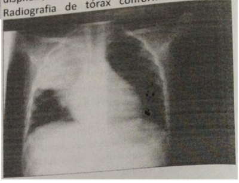
A Murmúrio vesicular abolido.
B Murmúrio vesicular reduzido com crepitações e aumento no Frêmito tóraco-vocal.
C Murmúrio vesicular reduzido com crepitações e diminuição no Frêmito tóraco-vocal.
D Murmúrio vesicular abolido e diminuição no Frêmito tóraco-vocal.
Questão 424 · Crise Tireotóxica · 4000004892A Crise Tiroidiana é uma emergência médica que ocorre em pacientes com tireotoxicose. Aponte a alternativa INCORRETA sobre esta síndrome:
A A mortalidade da crise tiroidiana é alta, variando de 20% para 50% se a crise não for reconhecida e tratada.
B Ocorre aumento dos níveis de TSH e aumento dos hormônios T3 e T4 circulantes.
C Clinicamente é caracterizada por hiperpirexia, taquicardia desproporcional a febre, desidratação, choque e manifestações cardiovasculares, disfunção do sistema nervoso central.
D O tratamento envolve inibição da síntese, diminuição da conversão periférica de T4 em T3 e bloqueio da ação dor hormônios tiroideanos, além da remoção extracorpórea destes hormônios.
Questão 425 · Empiema · Manejo clínico e diagnóstico · Tratamento · 4000004871Qual das situações abaixo NÃO representa critério para drenagem torácica em selo d'água?
A Paciente cardiopata com derrame pleural bilateral, maior a direita, evoluindo com insuficiência respiratória aguda.
B Paciente assintomático com derrame pleural a esclarecer. Submetido a toracocentese diagnóstica com análise: pH 7,16, DHL 1100 ui/l, Glicose 5 mg/dl, ADA 50 u/l, celularidade: 70% neutrófilo, 28% linfócitos. Sem crescimento no Gram. Cultura negativa.
C Paciente com queixa de dor torácica à esquerda e diagnosticado com derrame pleural esquerdo. Submetido a toracocentese diagnóstica: pH 7,2, DHL 800 ui/l, Glicose 45 mg/dl, celularidade com predomínio de neutrófilos. Sem crescimento ao Gram e com crescimento na cultura de Streptococcus pyogenes.
D Paciente com história de tosse produtiva, febre e dor torácica há 7 dias. Realizou punção pleural sem análise bioquímica, mas com líquido turvo e fétido.
E Paciente vítima de trauma automobilístico contra anteparo fixo, taquidispneico com uso de musculatura acessória na ausculta com murmúrio vesicular diminuído com hipersonoridade à percussão
Questão 426 · Inf ectologia · 4000004869Assinale a alternativa INCORRETA:
A Em pacientes com sinais clínicos de hipertensão intracraniana, sinais neurológicos focais, instabilidade hemodinâmica ou ventilatória, imunodeficiência, diminuição do sensório (escala de coma de Glasgow < 13 ou queda no escore > 2), sugere-se a realização de tomografia de crânio antes da punção lombar.
B Recomenda-se em todos os pacientes com suspeita de encefalite, a pesquisa de PCR no líquor para Herpes Vírus tipo 1 e 2, Varicela Zoster e Enterovírus, o que permitirá a identificação da maioria dos casos conhecidos.
C A pesquisa de HIV deve ser considerada somente em crianças com fatores de risco para HIV, tais como exposição vertical ao HIV.
D Quando o agente etiológico é a Varicela Zoster, deve-se administrar aciclovir e considerar o uso de corticóide em casos de vasculopatia.
Questão 427 · Inf ectologia · 4000004867É INCORRETO sobre a Mediastinite Aguda Descendente Necrotizante que,
A a mortalidade pode ser maior que 50%.
B na maioria das vezes, o diagnóstico é tardio e feito quando a sepse já está instalada.
C complicações dessa infecção são erosão de vasos com sangramento maciço, aspiração, déficit nervoso craniano, supuração intracraniana e fasceíte necrotisante.
D origina-se de uma infecção da cavidade oral, mais comumente de um abscesso amigdaliano.
Questão 428 · Suporte Básico de Vida · Tratamento da AESPassistolia · 4000004857Um paciente inconsciente, não responsivo, com ausência de pulso carotídeo e com o seguinte traçado no monitor cardíaco: Qual a próxima medida terapêutica no atendimento de urgência?
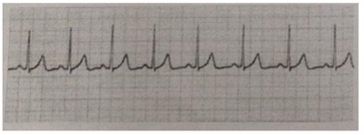
A Desfibrilação imediata com 200 joules.
B Verificar cargas, ganhos e derivações da monitorização.
C Pedir ajuda a outros membros da equipe de saúde e iniciar imediatamente o Suporte Básico de Vida.
D Acesso venoso imediato e epinefrina endovenosa.
Questão 429 · Meningites bacterianas · Meningites virais · 4000004854Em relação à Encefalite, assinale a alternativa INCORRETA:
A A encefalite é uma síndrome neurológica relativamente comum e potencialmente grave que afeta tanto crianças previamente hígidas como crianças com imunodeficiências.
B A etiologia da encefalite permanece indefinida na maioria dos pacientes, mas, naqueles pacientes com etiologia definida, as bactérias são a principal causa identificada.
C Na avaliação diagnóstica, para aumentar as chances de sucesso do diagnóstico etiológico, diversas pistas clínicas e epidemiológicas devem ser levadas em consideração, tais como história vacinal, exposição a picadas de insetos e história de viagem recente.
D Entre as doenças que podem simular encefalite viral aguda, estão infecção do Sistema Nervoso Central (causadas por bactérias, fungos, parasitas), para/pós-infecção, bem como doenças com causas não infecciosas vasculares, neoplásicas e metabólicas.
Questão 430 · Doenças def inidoras de AIDS · 4000004801É fundamental que os médicos identi quem manifestações/doenças que poderão indicar imunode ciência moderada em portadores de HIV, para que os mesmos possam solicitar a testagem para esse vírus. Segundo o Protocolo Clínico e Diretrizes Terapêuticas para Manejo da Infecção pelo HIV em Adultos - MS - 2017, todas as situações abaixo podem indicar IMUNODEFICIÊNCIA MODERADA em portadores de HIV, EXCETO:
A Perda de peso inexplicável (>10% do peso corporal).
B Diarreia crônica com duração maior que 30 dias.
C Febre persistente inexplicada por mais de 1 mês.
D Neurotoxoplasmose.
Questão 431 · Manif estações clínicas e doenças associadas · Obesidade e síndrome metabólica · 4000004788Dos itens abaixo, qual geralmente não está relacionado à Síndrome Metabólica?
A Baixos níveis de insulina.
B Síndrome dos Ovários Policísticos.
C Esteatose hepática não alcoólica.
D Dislipidemia.
Questão 432 · Achados sugestivos de benignidade · Manejo do nódulo abordagem diagnóstica · Introdução · 4000004787Paciente, 65 anos de idade e tabagista 50 anos/maço, apresenta na tomogra a computadorizada (TC) de tórax nódulo no lobo superior direito de 8 mm de diâmetro, sem linfonodomegalia mediastinal. TC de crânio, ultrassonogra a de abdômen e cintilogra a óssea normais. Não apresenta comorbidades. Entre as alternativas abaixo, qual a melhor conduta?
A Lobectomia com esvaziamento mediastinal.
B Quimioterapia e radioterapia.
C Acompanhamento periódico com TC de tórax.
D Lobectomia sem esvaziamento mediastinal.
E Segmentectomia.
Questão 433 · Vasopressores · Prof ilaxia Antibiótica · 4000004776Uma das principais causas de óbitos em pacientes com cirrose hepática é o rompimento de varizes de esôfago que leva à hemorragia digestiva alta (HDA). Para manejo dessa condição, a melhor indicação é iniciar imediatamente a administração de:
A Vasoconstritor.
B Betabloqueador.
C Vasodilatador.
D Antibiótico.
Questão 434 · Exame de urina · 4000004762O achado de glicosúria isolada em um exame de urina, não associada à hiperglicemia do paciente, sugere alteração em qual segmento renal?
A No túbulo distal.
B Na alça de Henle.
C No tubo coletor.
D No túbulo proximal.
Questão 435 · Epidemiologia · Manif estações clínicas · 4000004754Considere as características descritas abaixo: I. Estima-se que 3% da população mundial esteja infectada por esse vírus, e que entre 60% e 70% das pessoas infectadas desenvolverão doença hepática crônica. II. Sua transmissão ocorre principalmente por via parenteral, por meio do contato com sangue contaminado, sendo a transmissão sexual pouco e ciente e ocorre, sobretudo, em indivíduos com múltiplos parceiros e práticas sexuais de risco, sem uso de preservativo. III. A tecnologia capaz de diagnosticar tal vírus chegou aos bancos de sangue do Brasil em 1993. IV. O risco para infecção por esse vírus é maior em pessoas que receberam transfusão de sangue e/ou hemoderivados antes de 1993; que usam drogas e que compartilham seringas e agulhas, que possuem tatuagem ou piercing; ou que apresentam outras formas de exposição percutânea, sem os cuidados adequados de biossegurança - como procedimentos odontológicos, podologia, manicure e pedicure. V. De modo geral, a hepatite aguda causada por esse vírus apresenta evolução subclínica: cerca de 80% dos casos têm apresentação assintomática e anictérica. Tais características pertencem ao:
A VHA.
B VHB.
C VHC.
D VHD.
Revisar: possível letra faltando em enunciado
Questão 436 · Pneumologia · 4000004719Assinale a alternativa INCORRETA:
A A lesão cerebral primária no paciente vítima de afogamento ocorre durante a submersão, enquanto a secundária resulta de fatores como hipotensão, febre ou crises convulsivas.
B O diagnóstico de pneumonia é feito, muitas vezes, de forma equivocada por exames de radiografia, solicitados no início do quadro, em decorrência da presença de opacificações que correspondem à água nos pulmões.
C Afogamentos em piscina têm alto potencial de desenvolver infecção pulmonar precoce.
D Antes de tomar a decisão de iniciar antibióticoterapia no paciente afogado, recomenda-se observar o paciente clinicamente por meio da presença de febre, leucocitose, novos infiltrados pulmonares na radiografia e exames de culturas.
Questão 437 · Doença Arterial Coronariana Estável DAC estável · 4000004701Quando realizamos o exame físico em um paciente com suspeita de angina, além dela, há várias situações de dor torácica, ou sintomas manifestados nas regiões habituais de sua manifestação, que possuem outros diagnósticos como relacionados a DAC (Doença Arteriosclerótica Coronariana). Sobre isso, assinale a alternativa INCORRETA:
A O exame físico é usualmente normal nos pacientes com angina estável.
B Entretanto, durante o episódio anginoso, pode fornecer indícios valiosos a respeito da existência ou não de DAC.
C Quando é possível realizar o exame fisico do paciente na vigência de dor, Terceira Bulha (B3), Quarta Bulha (B4) ou galope, sopro de regurgitação mitral, desdobramento paradoxal de Segunda Bulha (B2) e estertoração pulmonar bibasal indicam achados sugestivos e preditores de DAC.
D Achados de aterosclerose em outros territórios, como pulsos de membros inferiores diminuídos, endurecimento arterial e aneurisma abdominal, diminuem a probabilidade de DAC.
Questão 438 · Drenagem Pleural Fechada · 4000004695Paciente, 65 anos de idade, tabagista importante, com diagnóstico de pneumotórax espontâneo maior de 2 cm e com repercussão ventilatória, no qual a drenagem pleural está indicada. Qual a técnica mais adequada?
A Drenagem no 5º espaço intercostal, linha axilar média, borda superior da costela, sistema fechado em selo d’água
B Drenagem no 6º espaço intercostal, linha hemiclavicular, borda inferior da costela, sistema aberto.
C Drenagem no 5º espaço intercostal, linha axilar média, na borda superior da costela, sistema fechado em dois frascos com aspiração contínua.
D Drenagem no 2º espaço intercostal, linha hemiclavicular, na borda inferior da costela, sistema fechado em selo d’água.
E Drenagem no 5º espaço intercostal, linha axilar média, borda superior da costela, sistema aberto.
Questão 439 · Endocrinologia · 4000004690Um querido familiar estava bastante preocupado com a necessidade de realizar uma cirurgia ortopédica devido ao fato de ser diabético, sendo que o Ortopedista o havia alertado sobre relação entre a doença óssea e o diabetes. Quando a pele se mostra brilhante, espessada e enrijecida relacionada com Limitação Da Mobilidade Articular (LMA), no diabético. Podemos apenas considerar como INCORRETO o seguinte item:
A A LMA pode acometer também outras articulações, como punho, cotovelo, quadril e coluna.
B Idosos com diabetes podem ter, além de redução do movimento do tornozelo, quadril e ombro, anormalidades de tendões observadas por métodos ultrassonográficos
C O acometimento da articulação atlanto-occipital não altera capacidade de intubação traqueal no momento de anestesia.
D O acometimento da articulação atlanto-occipital é um sinal preditor de dificuldade para a intubação.
Questão 440 · Interpretação dos marcadores sorológicos · Anticorpos · 4000004686Paciente masculino, 17 anos, ictérico e com desconforto abdominal, cujos resultados sorológicos evidenciaram: Anti-HAV IgM não reagente, Anti-HAV IgG reagente, HBsAg reagente, Anti-HBc total não reagente, Anti-HBc IgM reagente. Tais resultados permitem concluir que o quadro apresentado atualmente pelo paciente deve-se à infecção:
A Causada pelo vírus da Hepatite A (VHA).
B Aguda causada pelo vírus da Hepatite B.
C Pregressa causada pelo VHA.
D Crônica causada pelo vírus da Hepatite B.
Questão 441 · Endocrinologia · 4000004674A quiroartropatia decorrente do diabetes, caracteriza-se pela deformidade em dedos das mãos, com alterações externas da pele, do tecido conjuntivo periarticular e da fáscia palmar, resultando em limitação de movimentos das articulações. Somente não sendo adequada a seguinte descrição de suas características clínicas e de fisiopatologia:
A O termo artropatia não é adequado porque o processo fisiopatológico envolve estruturas periarticulares, e não a articulação periférica.
B Seu aparecimento deve ser visto como um sinal de alarme, apontando para maior risco de desenvolvimento de microangiopatia e microalbuminúria.
C Tem como causa a glicação de colágeno, que altera suas características funcionais e estruturais.
D A quiroartropatia, em geral, muito dolorida, com contraturas que dificultam a execução de movimentos finos das mãos.
Questão 442 · Clínica Médica · Manif estações clínicas · Hepatologia · 4000004665Paciente portador de cirrose hepática por VHB e VHD é trazido ao serviço de urgência e emergência devido a um quadro de desorientação e alterações no sono. O paciente está em uso de diuréticos e outros medicamentos prescritos pelo hepatologista. Após anamnese e exame físico, a principal hipótese diagnóstica foi Encefalopatia Hepática (EH). Com relação a esse caso, pode-se afirmar que se deve:
A Identificar o fator desencadeante da EH visando o manejo adequado.
B Manter os diuréticos para evitar o surgimento de ascite e edema de MMII.
C Iniciar antibioticoterapia endovenosa para reduzir a proliferação bacteriana.
D Indicar benzodiazepínico para evitar quadro de agitação e melhorar o padrão de sono.
Questão 443 · Síndrome Coronariana Aguda sem Supradesnível do Segmento ST SCASSST · 4000004660Dentro da terapia antiagregante plaquetária podemos considerar diversas intervenções, sendo que somente uma das afirmativas abaixo listadas se mostra INCORRETA assinale-a:
A O AAS e o Clopidogrel é a combinação de antiplaquetários orais mais utilizada na terapêutica antiplaquetária dupla em nosso meio, por ser eficaz na maioria dos pacientes, ter baixo custo e estar amplamente disponível.
B O prasugrel tem demostrado menor grau de inibição plaquetária, início de ação mais rápido e redução de eventos isquêmicos comparados ao clopidogrel.
C O ticagrelor tem demostrado maior grau de inibição plaquetária, início de ação mais rápido e redução de eventos isquêmicos comparados ao clopidogrel.
D O prasugrel está associado à maior risco de sangramentos, tem maior custo e está aprovado para uso apenas em pacientes portadores de Síndrome Coronária Aguda.
Questão 444 · Aterosclerose e Doença Arterial Coronariana · 4000004652É importante identi car a angina instável, pois está muito relacionada com o evento coronariano agudo. Dentre os achados clínicos, assinale a alternativa INCORRETA:
A Um desconforto repentino, fugaz, ou então contínuo, com duração de várias horas, raramente se trata de angina.
B A angina usualmente incide sobre a região retroesternal, tendo irradiação para o pescoço, mandíbula, epigástrio ou membros superiores.
C Dor localizada nas regiões das articulações condroesternais quase sempre tem origem cardíaca.
D Diversas classificações já foram propostas e a mais utilizada é a que divide a dor torácica em três grupos: típica, atípica e não cardíaca.
Questão 445 · Tuberculose drogarresistente · Vacinação · Diagnóstico · 4000004650A tuberculose (TB) é uma doença infecciosa de grande impacto no Brasil. O manejo na maioria das vezes é fácil, porém há situações que exigem conhecimento mais aprofundado do médico assistente para o êxito no tratamento do paciente. Com relação à TB, considere as afirmativas abaixo: I. É possível tratar empiricamente TB pulmonar em pacientes com pesquisa de BAAR negativa, que apresentem quadro clínico-radiológico sugestivo da doença, associado à reatividade do PPD; II. Considera-se TB multirresistente quando o teste de sensibilidade evidenciar resistência concomitantemente à Rifampicina e Estreptomicina; III. Pacientes com cirrose hepática que sejam portadores de TB deverão ser tratados com esquema terapêutico composto por estreptomicina, etambutol e ofloxacina; IV. Constitui-se em indicação para realizar cultura para micobactérias no escarro: pesquisa de BAAR positiva em paciente que iniciou tratamento há mais de 60 dias.; V. A vacina BCG tem como finalidade evitar a infecção pelo Mycobacterium tuberculosis; Estão CORRETAS:
A II, IV.
B I, II, V.
C I, III, IV.
D II, III, IV, V.
Questão 446 · Avaliação inicial · 4000004641Dentro da abordagem do diagnóstico diferencial da dor torácica e das condições associadas, que podem ser provocadoras ou mesmo fatores de alívio da angina, podemos considerar que os pacientes, especialmente naqueles com angina típica, devem ser consideradas as doenças associadas (simultâneas) que possam precipitar angina “funcional”, isto é, isquemia miocárdica na ausência de obstrução coronariana anatômica significante. Sendo INCORRETA apenas a seguinte situação:
A Uma redução no consumo de oxigênio pode ser produzida por hipertermia, hipertireoidismo e uso de cocaína.
B Geralmente, são doenças que causam isquemia miocárdica, por aumentarem o consumo ou por diminuírem a oferta de oxigênio para o miocárdio.
C Hipertermia, particularmente se acompanhada de redução de volemia, devido à sudorese ou a outras perdas de fluidos, pode precipitar angina, mesmo na ausência de DAC significante.
D Hipertireoidismo, com sua taquicardia associada e índice metabólico elevado, aumenta o consumo de oxigênio e pode também reduzir a sua oferta.
Questão 447 · Tratamento de malária não complicada · Ef eitos adversos de antimaláricos · 4000004631Bases da patogenia da malária A malária é uma doença de grande importância na Amazônia, podendo causar quadros graves e fatais. Todos os médicos que atuam nessa área necessitam conhecer o adequado manejo da doença. Com relação à malária, considere as afirmativas abaixo: I. Gestantes com malária vivax grave deverão ser tratadas com cloroquina isolada. II. As recaídas de malária vivax se devem à reativação dos esporozoítos. III. Menores de 6 meses com malária vivax não deverão tomar primaquina. IV. Malária grave pode ser tratada com Artesunato e Clindamicina endovenosos. V. Caso surja icterícia durante o tratamento de malária vivax deve-se suspender a cloroquina. Analisando as afirmativas acima, estão CORRETAS:
A I, II, III.
B I, III, IV.
C II, III, IV
D II, IV, V.
Questão 448 · Pielonef rite Obstrutiva · Cirurgia · Tomograf ia computadorizada · 4000004630Homem, procura o pronto-socorro com dor lombar direita com irradiação para fossa ilíaca direita e bolsa testicular homolateral, acompanhada de vômitos, calafrios e febre. Exames complementares: proteína C- reativa elevada, leucocitose com desvio à esquerda. Qual é o provável diagnóstico, o exame de imagem com maior sensibilidade e especificidade para a comprovação diagnóstica e a conduta indicada?
A Pielonefrite obstrutiva, ressonância magnética e antibioticoterapia.
B Lombociatalgia, ultrassonografia, analgésica e antibioticoterapia.
C Pielonefrite obstrutiva, ultrassonografia e desobstrução das vias urinárias.
D Pielonefrite obstrutiva, tomografia computadorizada helicoidal, antibioticoterapia e desobstrução das vias urinárias.
E Pielonefrite não obstrutiva, radiografia e ureterolitotripsia.
Questão 449 · Hipotireoidismo · Interpretação dos exames laboratoriais · 4000004611Paciente com diagnóstico de hipotireoidismo subclínico deve necessariamente ter as seguintes alterações nos exames de função da tireóide:
A T4 livre normal e TSH elevado.
B T4 livre baixo e TSH elevado.
C T4 livre baixo e TSH normal.
D T4 livre normal e TSH baixo.
Questão 450 · Doença Arterial Coronariana Estável DAC estável · 4000004607A observação, principalmente em mulheres que tem angina, mas que não apresentam obstruções à angiogra a coronária, há anos chama a atenção é denominada de Síndrome X. Sobre isso, assinale a alternativa INCORRETA:
A Ocorre que mesmo sem obstruções nas artérias, estas têm comportamento inadequado para o fluxo, tanto as epicárdicas quanto a microcirculação, o que é suficiente para provocar isquemia miocárdica.
B Isso não consegue ser detectado por meio da eletrocardiografia de esforço ou pela Cintigrafia de Perfusão Miocárdica (CPM), infelizmente.
C Essa síndrome é interpretada como uma doença da microcirculação coronária devido a uma disfunção endotelial ou a alterações do tônus vascular, resultando em uma redução da oferta de oxigênio no nível celular.
D Muitas das pessoas com essa síndrome, em verdade, tem placas ateroscleróticas em vários segmentos sem obstrução coronária quando avaliadas por Ultrassom Intravascular (USIV) coronária.
Questão 451 · Diagnóstico · Lúpus Eritematoso Sistêmico LES · 4000004583NÃO é considerado critério diagnóstico de Lúpus Eritematoso Sistêmico:
A Complemento sérico baixo.
B Ascite.
C Anemia hemolítica.
D Úlceras orais.
Questão 452 · Classif icação · Classif icação de acordo com a gravidade dos sintomas · 4000004567Paciente com Insu ciência Cardíaca que resulta em ligeira limitação da atividade física. Ele ca confortável em repouso. A atividade física ordinária resulta em fadiga, palpitações, dispneia ou dor anginosa. Esse paciente deve ser classificado funcionalmente conforme a New York Heart Association (NYHA) em:
A I.
B II.
C III.
D IV.
Revisar: possível letra faltando em enunciado
Questão 453 · Febre tif oide · 4000004563Qual é o reservatório mais comum de Salmonella typhi, agente etiológico da febre tifoide, numa pessoa portadora?
A Apêndice.
B Vesícula biliar.
C Cólon sigmoide.
D Intestino grosso.
E Intestino delgado.
Questão 454 · Individualização do tratamento · Acompanhamento ambulatorial · 4000004558O diagnóstico correto e o tratamento rápido e e caz das Crises Hiperglicêmicas Agudas são essenciais para diminuir a morbidade e a mortalidade. Muitos desses episódios podem ser prevenidos com diversas medidas preventivas, somente não se aplica o exposto na alternativa:
A Bom controle metabólico do diabetes mellitus por meio de tratamento adequado com insulinas ou análogos de Insulina.
B O auto-monitoramento aumenta o risco de complicações.
C Orientação educacional aos familiares e ao próprio paciente.
D A facilidade de comunicação com o especialista ou com o grupo multidisciplinar que acompanha o paciente é fundamental.
Questão 455 · Gamopatia monoclonal de signif icado indeterminado MGUS · 4000004550Paciente com proteína monoclonal sérica "maior ou igual a" 3 g/dl e/ou células plasmáticas na medula óssea maior ou igual a 10% e ausência de anemia, insu ciência renal, hipercalcemia e lesões ósseas líticas. O diagnóstico mais provável dessa condição é:
A Gamopatia monoclonal de significado indeterminado.
B Mieloma múltiplo indolente.
C Mieloma múltiplo.
D Leucemia de células plasmáticas.
Questão 456 · Complicações da cetoacidose diabética · Complicações agudas · 4000004542Dentro da abordagem das complicações relacionada às Crises Hiperglicêmicas Agudas, o edema cerebral é uma complicação que somente NÃO é correto afirmar que:
A É rara no adulto.
B Eventualmente pode evoluir com herniação de tronco cerebral.
C Nunca pode ser causa de parada cardiorrespiratória.
D Deve ser tratado prontamente com infusão intravascular de manitol a 20%.
Questão 457 · Diagnóstico da Diarreia Crônica · 4000004541Paciente com diarreia crônica com exame de fezes (parasitológico) e teste fecal para antígenos de Giardia lamblia negativos, com teste para gordura fecal anormal, sem nenhuma pista sobre a etiologia e com teste da D-xilose anormal. Qual a próxima etapa de investigação para melhor elucidação etiológica?
A Coprocultura.
B Biópsia de intestino delgado.
C Tomografia para avaliar pâncreas.
D Teste de secretina.
Questão 458 · Miocardite · 4000004536A Biópsia Endomiocárdica (BEM) é o método para o diagnóstico da miocardite, sendo na cardiomiopatia dilatada crônica de provável etiologia viral sintomática. Sobre isso, assinale a alternativa INCORRETA:
A A terapia antiviral ou imunomoduladora ocasiona melhora da fração de ejeção em pacientes com IC sintomática após seis meses de terapia otimizada.
B A miocardite também pode ser causada por certas terapias farmacológicas.
C A BEM tem papel essencial naqueles casos de dúvida diagnóstica e rápida progressão da doença, com suspeita de reação alérgica e eosinofílica.
D A BEM não tem papel essencial na busca do diagnóstico diferencial com outras condições
Questão 459 · Cilindros · 4000004511Sobre o exame de urina (Elementos Anormais e Sedimentos – EAS), os cilindros que se formam nos túbulos e caracterizados pela disposição das células numa matriz claramente estruturada, composta pela proteína de Tamm-Horsfall, são encontrados na (s) seguinte (s) condição(ões):
A Após atividades físicas.
B Nas glomerulopatias.
C Nas pielonefrites.
D Na necrose tubular aguda.
Questão 460 · Tratamento do Câncer Retal · 4000004507Paciente, 72 anos de idade, com queixa de sangramento às evacuações há 3 meses. Refere também cólicas abdominais e fezes a ladas. Nega perda de peso. No exame físico, apresenta ao toque retal lesão vegetante no reto, ocupando os quatro quadrantes a cerca de 4 cm da borda anal, não permitindo a passagem do dedo examinador, parcialmente xa. A ressonância de abdome e pelve demonstrou a lesão de reto com cerca de 5 cm de extensão, sem comprometimento ganglionar. Qual a conduta adequada?
A Cirurgia imediata pelo risco de obstrução do tumor.
B Radioterapia e quimioterapia prévias à realização da cirurgia.
C Quimioterapia paliativa, pois o tumor é muito avançado.
D Colostomia paliativa, pois o tumor está fixo à pelve.
E Imunoterapia prévia à cirurgia.
Questão 461 · Critérios diagnósticos · Cetoacidose diabética · 4000004505Uma jovem de 19 anos deu entrada na sala de emergência com quadro de rebaixamento do nível de consciência e grande dispneia, associada a tudo isso, uma desidratação importante e grave. Dentre os achados iniciais, uma elevada glicemia capilar e uma intensa acidose, além de alterações urinárias levaram ao diagnóstico de Cetoacidose Diabética (CAD). Dentre os desequilíbrios decorrentes da desordem metabólica, somente não podemos considerar que:
A A hipofosfatemia leve é um achado raro e geralmente grave durante a terapia da CAD.
B Não está indicada a reposição de sais de fosfato de rotina.
C Não está indicada a reposição de sais de fosfato em parte devido ao risco de hipocalcemia, na hipofosfatemia leve.
D Na hipofosfatemia leve, não há evidências suficientes que demonstrem a melhora do prognóstico quando em comparação com o não uso.
Questão 462 · Cardiologia · 4000004490Um paciente com quadro de hipotensão, taquicardia, hipoperfusão periférica, oligúria e encefalopatia, apresenta diminuição da resistência vascular periférica, venodilatação e o extravasamento de líquido a partir da microvasculatura levam a um volume intravascular inadequado e a uma redução da pré carga. Além disso, apresenta uma diminuição da resposta do trabalho sistólico à reposição de volume, redução da fração de ejeção biventricular e dilatação ventricular. Diante do quadro acima a melhor conduta terapêutica será:
A Angioplastia coronárias.
B Identificar e controlar a fonte de perda sanguínea.
C Antibioticoterapia precoce, reposição de líquidos e agentes vasopressores e inotrópicos.
D Pericardiocentese de alívio imediata.
Questão 463 · Trauma · Concentrado protrombínico · 4000004484Homem, 70 anos de idade, vítima de atropelamento por moto em via de média velocidade, há 30min. A: via aérea pérvia, em uso de prancha rígida e colar cervical. B: murmúrio vesicular presente bilateral, SpO² = 88%; FR = 22 irpm/min; forte dor e escoriações em gradil costal à esquerda. C: sem sangramento externo ativo, PA = 160 X 90 mmHg; FC = 95 bpm/min; TEC = 2s; abdome doloroso em anco esquerdo, pelve estável. D: Glasgow 12, pupilas sem alterações, sem de cit neurológico focal, E: dorso e extremidades com pequenas escoriações. Colocada máscara de oxigênio, com melhora da saturação para SpO² = 90%. Realizada ultrassonogra a à beira do leito (eFAST), que evidenciou: 1 cm de líquido livre em espaço hepatorrenal; “sinal da praia” presente e linhas B ausentes em hemitórax esquerdo. Antecedentes pessoais: brilação atrial em uso de varfarina. Qual, das opções abaixo, é a primeira escolha para reversão do efeito anticoagulante cumarínico da varfarina?
A Complexo protrombínico.
B Plasma fresco congelado e vitamina K.
C Concentrado de plaquetas.
D Crioprecipitado.
E Protamina
Questão 464 · Hepatite C · Avaliação do estágio da doença hepática · 4000004477Estima-se que a hepatite C seja responsável por aproximadamente 700.000 óbitos anuais em consequência de suas complicações. Sendo complemente ADEQUADO, apenas, um dos itens abaixo. Indique-o.
A A agressão hepatocelular causada pelo HCV pode resultar em câncer hepático. Nas fases avançadas da doença, o paciente pode evoluir para óbito em consequência de suas complicações, sobretudo o câncer hepático – hepatocarcinoma, mas não carcinoma hepatocelular (CHC).
B A agressão hepatocelular causada pelo HCV não pode resultar em fibrose hepática, cirrose e câncer hepático. Nas fases avançadas da doença, o paciente pode evoluir para óbito em consequência de suas complicações, sobretudo a cirrose.
C A agressão hepatocelular causada pelo HCV pode resultar em fibrose hepática, cirrose, mas não causa câncer hepático. Nas fases avançadas da doença, o paciente pode evoluir para óbito em consequência de suas complicações, sobretudo a cirrose.
D A agressão hepatocelular causada pelo HCV pode resultar em fibrose hepática, cirrose e câncer hepático. Nas fases avançadas da doença, o paciente pode evoluir para óbito em consequência de suas complicações, sobretudo a cirrose e o câncer hepático – hepatocarcinoma ou carcinoma hepatocelular (CHC).
Questão 465 · Pneumologia · 4000004473NÃO é alteração observada na Fisiopatologia da resposta aguda na Asma Brônquica:
A A acetilcolina liberada dos nervos motores intrapulmonares causa constrição dos músculos lisos das vias aéreas através da estimulação direta dos receptores muscarínicos do subtipo M3.
B Os mastócitos, proeminentes nos tecidos das vias aéreas obtidos de pacientes com Asma, constituem a principal fonte pulmonar de histamina.
C Os leucotrienos são importantes, porém não exclusivos, mediadores da resposta asmática.
D Pacientes com Asma têm níveis abaixo do normal de óxido nítrico em seu ar expirado, e esses níveis aumentam após o tratamento com corticoesteroides.
Questão 466 · Classif icação da pressão arterial · 4000004460Segundo a VII Diretriz Brasileira de Hipertensão Arterial - HAS (2016), a classificação da HAS em medição casual ou no consultório em um paciente acima de 18 anos de idade com níveis tensionais de 140 X 95 mmHg, estaria classificado como:
A Pré hipertensão.
B HAS estágio 1.
C HAS estágio 2.
D HAS estágio 3.
Questão 467 · Anamnese e exame f ísico · Comorbidades e outras causas de dor torácica · 4000004440Correlacione corretamente as características da dor torácica descritas abaixo com as respectivas doenças cardiovasculares. I. Dor retroesternal que irradia para a região cervical, mandíbula, epigástrio, ombros ou braços (mais comum do lado esquerdo), em opressão, queimação, aperto ou peso, com duração menor do que 2-10 minutos, desencadeada pelo esforço, frio ou "stress" emocional, aliviada pelo repouso. II. Dor que geralmente inicia sobre o esterno, ou em direção ao ápice cardíaco e pode irradiar-se para o pescoço ou ombro esquerdo, muitas vezes, mais localizada que a dor do infarto do miocárdio, tipo aguda em "facada", que pode durar muitas horas até dias, pode alternar períodos de maior e menor intensidade, piora com a inspiração profunda, rotação do tórax, ou posição supina, aliviada na posição supina, sentada ou com a inclinação anterior do tórax. III. Dor no tórax anterior, que pode irradiar-se para o dorso, lancinante em "facada", de início súbito, que geralmente ocorre na vigência de hipertensão ou em pacientes com predisposição, como na Síndrome de Marfan. IV. Dor subesternal ou localizada, pleurítica ou em opressão, de início súbito, com duração de minutos e menor do que 1 hora, que pode piorar com a respiração. A. Pericardite; B. Angina pectoris; C. Embolia pulmonar; D. Dissecção aórtica.
A I-A, II-B, III-C E IV-D.
B I-B, II-A, III-D E IV-C.
C I-C, II-D, III-A E IV-B.
D I-D, II-C, III-B E IV-A.
Questão 468 · Gastroenterologia · 4000004431A Doença de Crohn (DC) é uma doença inflamatória intestinal de origem não conhecida, caracterizada pelo acometimento focal, assimétrico e transmural de qualquer porção do tubo digestivo, da boca ao ânus. Sendo INADEQUADO, apenas, o seguinte item:
A Apresenta-se sob três formas principais: inflamatória, fistulosa e fibroestenosante. Os segmentos do tubo digestivo mais acometidos são: íleo, cólon e região perianal.
B Além das manifestações no sistema digestório, a DC pode ter manifestações extraintestinais, sendo as mais frequentes as oftalmológicas, as dermatológicas e as reumatológicas.
C A DC tem início mais frequentemente na segunda e terceira décadas de vida, mas não pode afetar qualquer faixa etária.
D Em países desenvolvidos, a prevalência e a incidência situam-se em torno de 50:100.000 e 5:100.000, respectivamente.
Questão 469 · Dor Neuropática · 4000004425Assinale a alternativa contendo a afirmação CORRETA em relação a dor neuropática.
A Os três tipos mais comuns ocorrem por neuropatia pós-herpética, por neuropatia diabética e na síndrome dolorosa regional complexa
B É caracterizada pela necessidade de evento desencadeador, não ocorrendo espontaneamente.
C Não apresenta características de hiperalgesia.
D Não apresenta características de alodinia.
E O bloqueio regional de nervos simpáticos por via intravenosa deve ser usado nas dores neuropáticas, exceto nos casos de dor por síndrome dolorosa regional complexa.
Questão 470 · Prof ilaxia pósexposição PEP · 4000004393O protocolo Clínico e Diretrizes Terapêuticas para Pro laxia Pós-Exposição (PEP) de Risco à Infecção pelo HIV, IST e Hepatites Virais (PCDT-PEP) tem como objetivo normatizar as recomendações para a PEP, incluindo, também, a abordagem em relação às IST e às hepatites virais. Portanto, é CORRETO que
A além de atualizar os esquemas de profilaxia antirretroviral, este PCDTPEP busca a atenção integral à pessoa exposta ao risco das IST, do HIV e não das hepatites virais, considerando a incorporação da Profilaxia Pré-Exposição (PrEP) no Sistema Único de Saúde (SUS) e a necessidade de controle desses agravos, inclusive da sífilis, que tem apresentado crescente número de casos no país
B além de atualizar os esquemas de profilaxia antirretroviral, este PCDTPEP busca a atenção integral à pessoa exposta ao risco das IST, do HIV e das hepatites virais, considerando a incorporação da Profilaxia Pré-Exposição (PrEP) no Sistema Único de Saúde (SUS) e a necessidade de controle desses agravos, inclusive da sífilis, que tem apresentado crescente número de casos no país.
C além de atualizar os esquemas de profilaxia antirretroviral, este PCDTPEP busca a atenção integral à pessoa exposta ao risco das IST, do HIV e das hepatites virais, considerando a incorporação da Profilaxia Pré-Exposição (PrEP) no Sistema Único de Saúde (SUS) e a necessidade de controle desses agravos, inclusive da sífilis, que tem apresentado redução do número de casos no país.
D além de atualizar os esquemas de profilaxia antirretroviral, este PCDTPEP busca a atenção básica à pessoa exposta ao risco das IST, do HIV somente, considerando a incorporação da Profilaxia Pré- Exposição (PrEP) no Sistema Único de Saúde (SUS) e a necessidade de controle desses agravos, inclusive da sífilis, que tem apresentado crescente número de casos no país.
Questão 471 · Classif icação da desidratação · 4000004385Paciente masculino de quatro anos de idade foi admitido no Pronto Atendimento de Pediatria devido a prostração, dispneia e poliúria. Não apresentava febre, vômitos, diarreia ou tosse. Apresentava-se prostrado, anictérico, acianótico, hipocorado (+/4+), pele e mucosas secas e turgor cutâneo diminuído. A frequência cardíaca era de 120 bpm, frequência respiratória de 24 ipm, saturação de O₂ de 95% e pressão arterial sistêmica de 90/50 mmHg. A oroscopia e otoscopia estavam sem alterações. A glicemia capilar era de 325 mg/dL. À admissão hospitalar foram realizados os seguintes exames laboratoriais: gasometria venosa pH 6,96; pCO 15,8 mmHg; pO 55,5 mmHg; HCO - 3,5 mEq/L; BE-26,8, Na+ 133 mEq/L, K+ 4,69 mEq/L e Ca++ 1,34 mEq/L. Frente ao caso apresentado, a primeira medida do tratamento é:
A soro fisiológico 0,9%, 20 mL/kg EV em 30 a 60 minutos;
B soro glicosado 5%, 20 mL/kg EV em 30 a 60 minutos;
C insulinoterapia com 0,1 U/kg de insulina regular;
D reposição de bicarbonato de sódio.
Questão 472 · Fisiopatologia do Choque · 4000004342Assinale a alternativa CORRETA em relação ao estado de choque:
A No choque hipovolêmico típico o débito cardíaco está elevado nas fases iniciais, enquanto a pressão venosa central tende a estar diminuída.
B Em geral, no choque cardiogênico típico o débito cardíaco e a resistência vascular sistêmica estão diminuídos e a pressão venosa central está elevada.
C Habitualmente, na fase inicial do choque séptico, o débito cardíaco e a pressão venosa central estão elevados e a resistência vascular sistêmica está diminuída
D O estado de choque com vasodilatação grave ocorre como via final comum dos estágios tardios dos choques cardiogênico e hipovolêmico.
E O objetivo primordial no estado de choque cardiogênico consiste em elevar a pós- carga cardíaca para aumentar a pressão arterial sistêmica.
Questão 473 · Gastroenterologia · 4000004341A Doença de Crohn DC não é curável clínica ou cirurgicamente, e sua história natural é marcada por agudizações e remissões. A diferenciação entre doença ativa e em remissão pode ser feita com base no Índice de Harvey-Bradshaw. Sendo INADEQUADO, apenas, que
A pacientes sem sintomas (IHB igual ou inferior a 4) e sem uso de corticosteroide são considerados em remissão sintomática.
B pacientes que necessitam de corticosteroide para permanecer assintomáticos não são classificados como corticodependentes, sendo considerados em remissão, devido ao risco de toxicidade do tratamento prolongado.
C pacientes com doença leve a moderada (IHB igual a 5, 6 ou 7) costumam ser atendidos ambulatoriamente, toleram bem a alimentação, estão bem hidratados, não apresentam perda de peso superior a 10%, sinais de toxicidade, massas dolorosas à palpação ou sinais de obstrução intestinal.
D pacientes com doença moderada a grave (IHB igual ou superior a 8), usualmente, estão com o estado geral bastante comprometido e apresentam, ainda, um ou mais dos seguinte sintomas: febre, perda de peso, dor abdominal acentuada, anemia ou diarreia frequente (3-4 evacuações ou mais por dia).
Questão 474 · Filtro de Veia Cava · Filtro de veia cava inf erior · 4000004314Paciente, 40 anos de idade, com quadro de trombose venosa profunda do membro inferior direito, sob tratamento adequado com heparina. Apresenta quadro de embolia pulmonar, hemodinamicamente estável. Ao mapeamento Doppler constata-se trombo não aderido na veia ilíaca direita. Qual a melhor conduta?
A Trombectomia venosa
B Substituir a heparina por anticoagulante oral.
C Filtro de cava abaixo das veias renais.
D Associar antiagregante plaquetário
E Terapia fibrinolítica.
Questão 475 · Hepatologia · 4000004047A tecnologia capaz de diagnosticar o HCV chegou aos bancos de sangue do Brasil em 1993. Cinco anos antes, em 1988 – como forma de prevenir doenças de transmissão parenteral, para as quais não havia tecnologia de diagnóstico – o governo federal proibira a doação de sangue remunerada (BRASIL, 2008, BRASIL, 1993, MINAS GERAIS, 1998). Aponte o item completamente CORRETO.
A Após a implementação dessas medidas de prevenção, muitas pessoas assintomáticas infectadas pelo HCV perpetuaram a transmissão do vírus por meio de doações de sangue, do compartilhamento de objetos pessoais, seringas e agulhas para uso de drogas, por transmissão nosocomial e, eventualmente, por relações sexuais desprotegidas. Por isso, a hepatite C infectou gerações e populações específicas de forma desproporcional em todo o mundo.
B Até a implementação dessas medidas de prevenção, muitas pessoas sintomáticas infectadas pelo HCV perpetuaram a transmissão do vírus por meio de doações de sangue, do compartilhamento de objetos pessoais, seringas e agulhas para uso de drogas, por transmissão nosocomial e, frequentemente por relações sexuais desprotegidas. Por isso, a hepatite C infectou gerações e populações específicas de forma desproporcional em todo o mundo.
C Até a implementação dessas medidas de prevenção, muitas pessoas assintomáticas infectadas pelo HCV perpetuaram a transmissão do vírus por meio de doações de sangue, do compartilhamento de objetos pessoais, seringas e agulhas para uso de drogas, por transmissão nosocomial e, eventualmente, por relações sexuais desprotegidas. Por isso, a hepatite C infectou gerações e populações específicas de forma desproporcional em todo o mundo.
D Até a implementação dessas medidas de prevenção, muitas pessoas assintomáticas infectadas pelo HCV perpetuaram a transmissão do vírus por meio de doações de sangue, do compartilhamento de objetos pessoais, seringas e agulhas para uso de drogas, por transmissão nosocomial e, muito frequentemente por relações sexuais desprotegidas. Por isso, a hepatite C infectou gerações e populações específicas de forma proporcional em todo o mundo.
Questão 476 · Monitorização residencial da pressão arterial · Classif icação da pressão arterial · 4000004039Davi tem 35 anos, é branco, solteiro, vive com os pais hipertensos e veio à consulta para fazer “exames de rotina”. Nega doenças prévias e não apresenta queixas no momento. A pressão arterial está em 154 x 96 mmHg. Podemos orientá-lo:
A A monitorar sua pressão arterial ao menos 2 vezes com um intervalo de 10 dias.
B Que está com hipertensão arterial estágio 3, sendo indicado modificações do seu estilo de vida.
C Que está com hipertensão arterial estágio 1 e necessita de tratamento medicamentoso no diagnóstico.
D A monitorar sua pressão arterial ao menos 3 vezes pela manhã e 3 vezes à noite durante 7 dias.
Questão 477 · Inf ectologia · 4000004010Você é médico em uma comunidade carente de Manaus e está consultando Ângela de 3 anos. O motivo da consulta é pedir remédio para verme, pois a menina está “coçando o bumbum”. Seu cartão de vacinas está atualizado, ela não apresenta doenças prévias, nunca foi internada. Mora em casa de madeira, às margens de um igarapé no qual os dejetos são lançados, e bebe água sem tratamento do poço que há na comunidade. Em relação ao possível quadro de verminose relatado, podemos afirmar:
A O quadro descrito é condizente com parasitose por Enterobius vermicularis (enterobíase ou oxiuríase).
B Para podermos tratar esta criança, é necessário fazer exame de fezes seriado (3 amostras).
C O quadro clínico descrito é condizente com parasitose por Ancylostoma, de transmissão oral-fecal.
D O tratamento prescrito para oxiuríase é metronidazol 20 mg/kq/dia 3 vezes ao dia por 5 dias.
Questão 478 · Hepatologia · 4000003942No Brasil, a hepatite C teve como formas preferenciais de transmissão o uso de drogas injetáveis, hemodiálise, transfusão de sangue e hemoderivados e outros procedimentos médicos invasivos, sobretudo até o início dos anos 90. Apenas um dos itens abaixo se apresenta CORRETO por completo, aponte-o.
A O risco para infecção pelo HCV é maior nas seguintes populações: pessoas que receberam transfusão de sangue e/ou hemoderivados antes de 2003; que usam drogas e que compartilham seringas e agulhas; que possuem tatuagem ou piercing; ou que apresentam outras formas de exposição percutânea, sem os cuidados adequados de biossegurança – como procedimentos odontológicos, podologia, manicure e pedicure.
B O risco para infecção pelo HCV é maior nas seguintes populações: pessoas que receberam transfusão de sangue e/ou hemoderivados antes de 1993; que usam drogas e que compartilham seringas e agulhas; tatuagem ou piercing não apresenta alteração de incidência.
C O risco para infecção pelo HCV é maior nas seguintes populações: pessoas que receberam transfusão de sangue e/ou hemoderivados antes de 1993; que usam drogas e que compartilham seringas e agulhas; que possuem tatuagem ou piercing; ou que apresentam outras formas de exposição percutânea, sem os cuidados adequados de biossegurança, mas procedimentos odontológicos, podologia, manicure e pedicure não causam contaminação.
D O risco para infecção pelo HCV é maior nas seguintes populações: pessoas que receberam transfusão de sangue e/ou hemoderivados antes de 1993; que usam drogas e que compartilham seringas e agulhas; que possuem tatuagem ou piercing; ou que apresentam outras formas de exposição percutânea, sem os cuidados adequados de biossegurança – como procedimentos odontológicos, podologia, manicure e pedicure .
Questão 479 · Manif estações clínicas e doenças associadas · 4000003941Comorbidades associadas à obesidade na síndrome metabólica de um adolescente de 13 anos. Quais os possíveis sintomas?
A Acantose nigricans, poliúria, polidipsia.
B Adiposidade central, resistência à insulina, dislipidemia, hipertensão e intolerância à glicose.
C Menstruação irregular, resistência à insulina, hiperandrogenia.
D Dislipidemia, hipertensão, acantose nigricans, poliúria, hiperandrogenia.
Questão 480 · Inf ectologia · 4000003830Kuriatã, indígena, um ano de idade, está há 2 dias apresentando febre de início súbito, não aferida, tosse seca, coriza e obstrução nasal. Há 24h, evoluiu com dispneia e saturação de oxigênio de 93% em ar ambiente. Qual a conduta recomendada, com base no organograma do Ministério da Saúde, para Síndrome Respiratória Aguda Grave (SRAG)?
A Iniciar antiviral, antibiótico, hidratação venosa, oxigenoterapia sob monitorização e solicitar exames laboratoriais e radiológicos.
B Iniciar antiviral, hidratação venosa, oxigenoterapia sob monitorização e solicitar exames laboratoriais e radiológicos.
C Iniciar antibiótico, hidratação venosa, oxigenoterapia sob monitorização e solicitar exames laboratoriais e radiológicos.
D Iniciar hidratação venosa, oxigenoterapia sob monitorização e solicitar exames laboratoriais e radiológicos.
Questão 481 · Imunodef iciências primárias · 4000003826Criança, sexo masculino, quatro meses, com história de abcesso esplênico, necessitando de esplenectomia. RNT, AIG, sem intercorrências na gestação. Cartão de vacinas em dia. Tem história de um irmão que morreu aos cinco meses de idade por infecção. Diante das informações fornecidas, entre as hipóteses diagnósticas a seguir, não se pode descartar:
A Imunodeficiência primária;
B Maus tratos;
C Anemia falciforme;
D Doença da arranhadura do gato.
Questão 482 · Herpes genital · Diagnóstico · 4000003824Paciente de 28 anos sem relacionamento sexual xo vem apresentando episódios recorrentes de vesículas seguidas de ulcerações dolorosas na vulva, acompanhadas de linfadenomegalia inguinal. O diagnóstico presuntivo mais provável é:
A Condilomatose
B Cancro mole
C Herpes genital
D Sífilis primária
Questão 483 · Inf ectologia · 4000003750Em agosto do presente ano, o Departamento de Vigilância Ambiental e Epidemiológica (DEVAE) divulgou a ocorrência de surtos de parotidite (caxumba) na cidade de Manaus. Baseado em seus conhecimentos sobre a doença, responda a alternativa CORRETA:
A A partir deste ano, a parotidite torna-se uma doença de notificação compulsória para o Estado do Amazonas, haja vista o número de surtos institucionais desde o mês de abril na cidade de Manaus.
B Nos casos de parotidite em crianças com menos de 5 anos de idade, observamos perda neurossensorial da audição, de início súbito e unilateral, em mais da metade dos casos registrados.
C Por apresentar importante tropismo pelo Sistema Nervoso Central (SNC), podemos observar como principal complicação da parotidite a encefalite.
D O diagnóstico de parotidite é eminentemente clinicoepidemiológico, não havendo necessidade de exame complementar específico em casos de suspeita da doença.
Questão 484 · Gastroenterologia · 4000003731O diagnóstico pode ser difícil devido à heterogeneidade das manifestações e à sua sobreposição com as da retocolite ulcerativa, bem como a ocasional ausência de sintomas gastrointestinais relevantes. Sendo INCORRETO, apenas, que
A o sintoma mais comum no momento do diagnóstico é diarreia, seguida por sangramento (40%- 50%), perda de peso (60%) e dor abdominal (70%).
B os sinais mais comuns são febre, palidez, caquexia, massas abdominais, fístulas e fissuras perianais.
C a endoscopia mostra tipicamente lesões ulceradas, entremeadas de áreas com mucosa normal, acometimento focal, simétrico e contínuo, podendo, também, ser útil para a coleta de material para análise histopatológica.
D mais de 6 semanas de diarreia é o critério sugerido como prazo útil para diferenciação com diarreia aguda infecciosa.
Questão 485 · Def inição e Etiologias · 4000003728Paciente de cinquenta anos com história de constipação intestinal há vinte anos, às vezes com dor abdominal. Algumas vezes observava fezes com rajas de sangue. Não teve perda de peso, nem outros sintomas. Veio ao pronto atendimento por febre, dor abdominal intensa em fossa ilíaca esquerda, parada na eliminação de gases e fezes. Refere que já teve uma dor semelhante antes, porém de menor intensidade. A principal hipótese é de:
A diverticulite aguda;
B apendicite;
C câncer de colon;
D retocolite ulcerativa.
Questão 486 · Hepatologia · 4000003663Globalmente, a epidemiologia da hepatite C também enseja maior vulnerabilidade entre indivíduos de determinadas gerações (GALBRAITH et al., 2015). Em recente análise da série histórica brasileira, realizada pela Faculdade de Medicina da Universidade de São Paulo (FMUSP), observou-se que o HCV acomete com maior frequência os indivíduos com mais de 40 anos de idade (AMAKU etal., 2016). Sendo INCORRETO, apenas, o seguinte dado:
A atualmente, as pessoas que usam drogas, injetáveis ou inaláveis, não mais constituem um grupo de risco no Brasil, embora em número bem menor do que na Ásia, Europa e Estados Unidos.
B no entanto, a transmissão do vírus HCV não se restringiu a esses grupos.
C foram identificados outros mecanismos de transmissão: procedimentos de manicure e pedicure; piercings e tatuagens; tratamentos odontológicos; uso de seringas de vidro; endoscopia digestiva alta; e relações sexuais desprotegidas.
D doença também encontrou oportunidade de propagação em populações que apresentam fatores adicionais de vulnerabilidade, como transtornos mentais.
Questão 487 · Diagnóstico · 4000003643Paciente de 65 anos, sexo masculino, caminhoneiro, relata obstipação intestinal frequente. Há 8 meses está apresentando hematoquezia. Durante o exame físico, encontra-se pálido, emagrecido e com hemorroida grau I. A melhor conduta para o caso seria:
A hemorroidectomia;
B dieta pobre em fibras;
C colonoscopia;
D pesquisa de sangue oculto nas fezes.
Questão 488 · Gastroenterologia · 4000003574O diagnóstico pode ser difícil devido à heterogeneidade das manifestações e à sua sobreposição com as da retocolite ulcerativa, sendo que endoscopia mostra tipicamente lesões ulceradas, entremeadas de áreas com mucosa normal, cometimento focal para a coleta de material para análise histopatológica. Sendo ADEQUADO, apenas, que a análise histológica
A nunca pode indicar acometimento transmural (quando da análise de ressecções cirúrgicas), padrão segmentar e presença de granulomas não caseosos.
B pode indicar acometimento transmural (quando da análise de ressecções cirúrgicas), padrão segmentar e presença de granulomas não caseosos.
C pode indicar acometimento transmural (quando da análise de ressecções cirúrgicas), padrão segmentar e presença de granulomas caseosos.
D pode indicar acometimento transmural (quando da análise de ressecções cirúrgicas), padrão segmentar e ausência de granulomas não caseosos.
Questão 489 · Classif icação de risco · 4000003571A identi cação precoce dos casos de dengue é de vital importância para a tomada de decisões e implementação de medidas de maneira oportuna. A prova do laço será positiva em adultos se houver:
A 10 ou mais petéquias
B 20 ou mais petéquias
C 30 ou mais petéquias
D 40 ou mais petéquias
Questão 490 · Trombose Venosa Portal e Esplênica · 4000003548Paciente de cinquenta anos, sexo masculino, vendedor de loja, alcoolista com histórico de pancreatite secundária ao alcoolismo, apresentou hemorragia digestiva alta. Durante a investigação, evidenciou-se que o sangramento era proveniente de varizes gástricas. Assim, é mais provável que a causa das varizes gástricas seja:
A trombose de veia esplênica;
B trombose de veia porta;
C trombose de gástrica esquerda;
D trombose de gastroepiploica.
Questão 491 · Divertículo de Zenker · 4000003531Paciente de 75 anos começou a apresentar há um ano mau hálito, emagrecimento e sensação de um bolo na garganta, que alivia após descompressão com os dedos para cima. A principal hipótese diagnóstica seria de:
A divertículo de Zenker;
B acalasia;
C esôfago de Barret;
D cáseos amigdalianos
Questão 492 · Gastroenterologia · 4000003530Em pacientes pediátricos com Doença de Crohn (DC), que é uma doença inflamatória intestinal de origem não conhecida, caracterizada pelo acometimento focal, assimétrico e transmural de qualquer porção do tubo digestivo, da boca ao ânus, apenas NÃO podemos concordar com o seguinte:
A não é aconselhável o uso de ciprofloxacino em crianças e adolescentes devido ao risco de problemas osteoarticulares.
B o tratamento da DC em crianças tende a ser mais agressivo com imunomoduladores, como a azatioprina, em fases mais precoces, aumentando o emprego prolongado de corticosteroides.
C o crescimento e o desenvolvimento puberal devem ser monitorizados.
D caso haja retardo no desenvolvimento, fatores relacionados a seu desencadeamento devem ser avaliados.
Questão 493 · Gastrinoma · Gastrinoma · 4000003512Paciente de 53 anos, com queixa há 45 dias de queimação epigástrica e retroesternal, regurgitações frequentes. Apresenta também diarreia aquosa líquida intermitente, sem muco, pus ou sangue. Nega vícios. Na endoscopia digestiva alta, várias úlceras duodenais que não responderam ao uso de inibidor de bomba de prótons. A principal hipótese diagnóstica seria:
A gastrinoma;
B síndrome do intestino curto;
C doença do refluxo gastro esofágico;
D intolerância a lactose.
Questão 494 · Prof ilaxia pósexposição PEP · 4000003413Existem materiais biológicos sabidamente infectantes e envolvidos na transmissão do HIV. Assim, a exposição a esses materiais constitui situação na qual a PEP está recomendada. NÃO sendo parte dos mesmos, o seguinte item:
A sêmen.
B fluidos vaginais.
C secreções nasais.
D líquidos de serosas (peritoneal, pleural, pericárdico).
Questão 495 · Inf ectologia · 4000003409Gestante de 11 semanas foi diagnosticada com malária por P. vivax. Qual a droga de escolha para tratar a paciente?
A Cloroquina.
B Quinina associada à clindamicina.
C Artemeter associada à lumefantrina.
D Primaquina.
Questão 496 · Tratamento Clínico · Microbiologia e Antimicrobianos · 4000003407Paciente com diagnóstico de pancreatite aguda grave e piora clínica no sétimo dia de tratamento.Tomogra a de abdome com extensa necrose pancreática. Dos antibióticos a seguir, qual é a primeira escolha para esse caso?
A Cefriaxona;
B Imipenem;
C Ampicilina + cefazolina;
D Metronidazol + ampicilina.
Questão 497 · Inf ectologia · 4000003388Assinale a resposta CORRETA quanto à transmissão vertical do HIV:
A O sorotipo L da Chlamydia trachomatis aumenta a velocidade de replicação do HIV.
B Na vaginose bacteriana, há notável aumento do Lactobacillus crispatus, levando ao aumento da transmissão vertical do HIV.
C A despeito de não ser infalível, a carga viral é o mais importante preditor de risco para a transmissão perinatal do vírus.
D Paciente com carga viral abaixo de 100.000 cópias/ml, a transmissão vertical do HIV é evento possível, mas extremamente raro.
Questão 498 · Clínica Médica · Hepatologia · Outras Hepatopatias · 4000003299Mulher, 63 anos, com prurido intenso e fadiga há dois anos. Evoluiu com icterícia discreta, xantelasmas, equimoses e dores ósseas. Apresenta hepatoesplenomegalia. Qual o diagnóstico mais provável e o exame confirmatório?
A Cirrose biliar primária – anticorpos antimitocondriais;
B Hemocromatose – ferro sérico;
C Esclerodermia – anticentrômero;
D Hepatite autoimune – anticorpo antimúsculo liso.
Questão 499 · Doenças da Junção Neuromuscular · 4000003289Homem, setenta anos, com astenia há seis meses, associada à di culdade de subir escadas e elevar os membros superiores acima da cabeça. Apresenta também xerostomia e lipotimia ao levantar-se. Ao exame físico, verifica-se queda da PA em ortostase e redução da força nas regiões proximais dos membros superiores e inferiores, com melhora quando o teste é repetido. Qual a hipótese diagnóstica mais provável?
A Síndrome de Eaton Lambert;
B Polimiosite;
C Miastenia gravis;
D Esclerose Lateral Amiotrófica.
Questão 500 · Cardiologia · 4000003284A abordagem de hipertensos estágio 1 de risco baixo e moderado, apresenta uma lacuna no rol de evidências em favor do impacto da terapia anti-hipertensiva sobre a redução de desfechos em hipertensos estágio 1 de risco baixo e moderado. Em relação a isso, assinale a alternativa INCORRETA:
A Nos hipertensos estágio 1 e moderado ou baixo risco CV, a terapia não farmacológica deve ser tentada por um ano.
B Findo esse período no qual a falta de controle da PA condicionará o início de terapia farmacológica. Faz-se imperativo, contudo, acompanhar esses indivíduos com avaliação periódica da adesão às medidas não farmacológicas.
C Constatada a falta de adesão às medidas não farmacológicas ou a piora dos valores pressóricos, dever-se-á iniciar precocemente a terapia farmacológica.
D Vale destacar que a intervenção em hipertensos de baixo risco no estágio 1 pode prevenir a progressão para um risco CV mais elevado.
Questão 501 · Complicações crônicas da anemia f alcif orme · Lítiase biliar · 4000003271Mulher, 18 anos, com diagnóstico de anemia falciforme, vem apresentando crises de dor característica de cólica em hipocôndrio direito, que se acentua após a alimentação. Apresenta dor à palpação profunda de hipocôndrio direito. O exame inicial mais indicado para investigação seria:
A laparoscopia diagnóstica;
B ultrassom de abdome superior;
C hemograma;
D tomografia computadorizada de abdome superior.
Questão 502 · Cardiologia · 4000003252A decisão terapêutica para tratamento da Pressão Arterial deve basear-se não apenas no nível da PA, mas considerar também a presença de Fatores de Risco, Lesões de Órgãos Alvos e Doença Cardiovascular concomitante. Em relação a isso, assinale a alternativa INCORRETA:
A Por outro lado, resultados de estudos clínicos controlados e randomizados com uso de fármacos anti-hipertensivos placebo-controlados em hipertensos demonstraram claramente redução significativa de mortalidade CV, AVE, infarto do miocárdio e IC. Cabe destacar que a maioria desses estudos avaliou indivíduos com idade "maior ou igual que" 55 anos, de alto risco CV e tempo de seguimento de 3 a 6 anos, limitando, portanto, a extrapolação desses benefícios para o tratamento de longo prazo e em pacientes com outras características.
B Indivíduos com PA "maior ou igual que" 160/100 mmHg e/ou portadores de risco CV estimado alto, mesmo no estágio 1, devem iniciar de imediato o tratamento medicamentoso associado à terapia não medicamentosa.
C A abordagem terapêutica da PA elevada inclui medidas não medicamentosas e o uso de fármacos anti-hipertensivos, a fim de reduzir a PA, proteger órgãos-alvo, prevenir desfechos CV e renais. Medidas não medicamentosas têm se mostrado ruins na redução da PA, pela perda de adesão a curto prazo.
D Estudos com fármacos anti-hipertensivos, a maioria realizada com esse perfil de pacientes hipertensos estágios 2 e 3 e/ou de alto risco, demonstraram eficácia na redução da PA e proteção CV.
Questão 503 · Def inição · Fisiopatologia · Def inição · 4000003229Asma é uma doença inflamatória crônica das vias aéreas, na qual diversas células e seus produtos estão envolvidos. Sobre isso, assinale o conceito INCORRETO:
A O risco de persistência da asma até a idade adulta diminui com a gravidade da doença, a presença de atopia e gênero feminino.
B Não se sabe ao certo ainda se a limitação ao fluxo aéreo associada à asma já existe desde o nascimento ou se essa se desenvolve juntamente com os sintomas.
C Não é clara tampouco a associação entre hiper-responsividade brônquica na criança e o desenvolvimento de asma ou sibilância.
D A prevenção primária por meio do controle de fatores ambientais, não é capaz de modificar a progressão da doença em longo prazo na infância.
Questão 504 · Cetoacidose diabética · Epidemiologia · Estado hiperglicêmico hiperosmolar · 4000003219A Cetoacidose Diabética (CAD) e o Estado Hiperglicêmico Hiperosmolar (EHH) devem ser tratados em Unidade De Terapia Intensiva e, fundamentalmente, são as duas complicações agudas graves que podem ocorrer durante a evolução do Diabetes Mellitus tipos 1 e 2 (DM1 e DM2). As principais causas de morte por CAD e EHH são edema cerebral, hipopotassemia, hipofosfatemia, hipoglicemia, complicações intracerebrais, trombose venosa periférica, mucormicose, rabdomiólise e pancreatite aguda. Quanto as taxas de mortalidade, assinale a alternativa CORRETA:
A Antes do advento da insulina, a taxa de mortalidade da CAD oscilava em torno de 10%.
B Antes do advento da insulina, a taxa de mortalidade da CAD oscilava em torno de 90%. Da década de 1950 em diante, com a evolução de todo o arsenal terapêutico, como antibioticoterapia, a ênfase no processo de hidratação, o controle eletrolítico e o uso de insulina regular, essa taxa foi reduzida para aproximadamente 10%. Atualmente, em centros de excelência no tratamento de CAD, é inferior a 5%, mas, quando evolui com edema cerebral, pode atingir 30% ou mais. Nos casos de EHH, ainda permanece elevada, ao redor de 15%.
C Antes do advento da insulina, a taxa de mortalidade da CAD oscilava em torno de 50%. Da década de 1950 em diante, com a evolução de todo o arsenal terapêutico, como antibioticoterapia, a ênfase no processo de hidratação, o controle eletrolítico e o uso de insulina regular, essa taxa foi reduzida para aproximadamente 30%. Atualmente, em centros de excelência no tratamento de CAD, é inferior a 5%, mas, quando evolui com edema cerebral, pode atingir 30% ou mais. Nos casos de EHH, ainda permanece elevada, ao redor de 15%.
D Antes do advento da insulina, a taxa de mortalidade da CAD oscilava em torno de 90%. Da década de 1950 em diante, com a evolução de todo o arsenal terapêutico, como antibioticoterapia, a ênfase no processo de hidratação, o controle eletrolítico e o uso de insulina regular, essa taxa foi reduzida para aproximadamente 10%. Atualmente, em centros de excelência no tratamento de CAD, é inferior a 5%, mas, quando evolui com edema cerebral, pode atingir 90% ou mais. Nos casos de EHH, ainda permanece elevada, ao redor de 15%.
Questão 505 · Cardiologia · 4000003185Ocorre uma grande variação da PA nos idosos ao longo das 24 horas, o que torna a MAPA uma ferramenta muitas vezes útil, também a pseudo-hipertensão, que está associada ao processo aterosclerótico, pode ser detectada pela manobra de Osler. Dessa forma, indique a alternativa CORRETA:
A Aspectos especiais na medição da PA na população idosa decorrem de alterações próprias do envelhecimento, como a menor frequência do hiato auscultatório, que consiste no desaparecimento dos sons durante a deflação do manguito, resultando em valores falsamente baixos para a PAS ou falsamente altos para a PAD.
B Aspectos especiais na medição da PA na população idosa decorrem de alterações próprias do envelhecimento, como a maior frequência do hiato auscultatório, que consiste no aparecimento precoce dos sons durante a deflação do manguito, não resultando em valores falsamente baixos para a PAS ou falsamente altos para a PAD.
C Aspectos especiais na medição da PA na população idosa decorrem de alterações próprias do envelhecimento, como a maior frequência do hiato auscultatório, que consiste no desaparecimento dos sons durante a deflação do manguito, resultando em valores falsamente baixos para a PAS ou falsamente altos para a PAD.
D Aspectos especiais na medição da PA na população idosa decorrem de alterações próprias do envelhecimento, como a maior frequência do hiato auscultatório, que consiste no aparecimento dos sons durante a deflação do manguito, resultando em valores falsamente baixos para a PAS ou falsamente baixos para a PAD.
Questão 506 · Tratamento Medicamentoso das Epilepsias · 4000003173São drogas usadas no tratamento do status epilepticus EXCETO:
A Fentanil.
B Fenitoína.
C Tiopental.
D Midazolan.
E Propofol.
Questão 507 · Hepatologia · 4000003168De 1999 a 2015, foram noti cados 289.459 casos de hepatite C no Brasil. Do total de casos noti cados nesse período, 64,2% se concentraram na região Sudeste, 24,2% na região Sul, 5,6% na região Nordeste, 3,2% na região Centro-Oeste e 2,7% na região Norte. Em 2015, a taxa de detecção da região Sul foi de 14,1 casos para cada 100 mil habitantes, seguida pelo Sudeste (8,1), Norte (3,5), Centro- Oeste (1,9) e Nordeste (1,2) (BRASIL, 2016). NÃO sendo adequado o seguinte:
A a taxa de detecção de casos de hepatite C tem apresentado tendência de aumento ao longo dos anos, por regiões do país.
B de 2002 a 2009, a região Sudeste apresentou a maior taxa e, a partir de 2010, a região Sul passou a liderar o ranking.
C em quase toda a série histórica, a região Nordeste apresentou a menor taxa de detecção. Entre os casos confirmados de hepatite C, aproximadamente 150.000 casos (58,8%) ocorreram entre homens e 41,2% entre mulheres.
D apesar do número de casos entre homens ser inferior ao das mulheres, observa-se que essa proporção vem diminuindo ao longo dos anos.
Questão 508 · Cardiologia · 4000003163O sistema Renina-Angiotensina-Aldosterona (SRAA) desempenha um papel importante na siopatologia da IC, sendo INCORRETO apenas que:
A A ativação do sistema Renina-Angiotensina-Aldosterona (SRAA) piora o remodelamento.
B A inibição desse sistema leva à melhora da evolução dos pacientes com IC tanto em remodelamento, mas não em mortalidade.
C DM causa ativação do SRAA, com aumento de renina, angiotensina II e aldosterona.
D A importância do sistema adrenérgico na IC é conhecida e sua ativação piora o prognóstico dos pacientes.
Questão 509 · Cardiologia · 4000003143A identi cação dos indivíduos hipertensos que estão mais predispostos às complicações Cardiovasculares – CV, especialmente Infarto do Miocárdio e AVE, é fundamental para uma orientação terapêutica mais agressiva. Sobre isso, assinale a alternativa INCORRETA:
A O risco Cardiovascular global deve ser avaliado em cada indivíduo hipertenso, pois auxilia na decisão terapêutica e permite uma análise prognóstica.
B Diversos algoritmos e escores de risco baseados em estudos populacionais foram criados nas últimas décadas, mas, considerando a ausência de dados brasileiros para uma avaliação mais precisa do risco CV na nossa população, deve-se evitar o uso de um único escore de risco para basear as decisões terapêuticas.
C Modelos multifatoriais de estratificação de risco podem ser utilizados para uma classificação de risco individual mais precisa.
D Informar ao paciente os seus Fatores de Risco - FR pode piorar a eficiência das medidas farmacológicas e não-farmacológicas para redução do risco global.
Questão 510 · Gastroenterologia · 4000003108Doença de Crohn (DC) é uma doença inflamatória intestinal de origem não conhecida, sendo que o tratamento da DC em crianças tende a ser mais agressivo com imunomoduladores. Ocorre que, além das manifestações no sistema digestório, a DC pode ter manifestações extraintestinais, sendo as mais frequentes as oftalmológicas, as dermatológicas e as reumatológicas. Marque a afirmativa INCORRETA.
A No caso de doença em atividade leve e contraindicação ao uso de corticosteroides, pode ser considerada terapia nutricional com dieta polimérica.
B Caso haja indicação de terapia anti-TNF, infliximabe está aprovado para a faixa etária entre 6 e 17 anos.
C Crianças com DC apresentam essas complicações com menor frequência do que as com retocolite ulcerativa.
D O adalimumabe não está aprovado para uso pediátrico.
Questão 511 · Cardiologia · 4000003104A análise dos níveis de TG sem jejum prévio fornece informações importantes sobre lipoproteínas remanescentes associadas com risco aumentado de doença coronária, estando INCORRETO apenas que:
A Níveis elevados de TG se associam frequentemente a elevados níveis de HDL-c.
B A avaliação de Triglicérides TG é determinada por técnica enzimática.
C A grande variabilidade biológica dos TG é a principal fonte de oscilações nos seus resultados.
D A técnica enzimática é método preciso e de baixo custo.
Questão 512 · Vacina contra Haemophilus inf luenza tipo B · Vacinas pneumocócicas · Outras imunossupressões · 4000003095Pacientes com Diabetes Mellitus (DM) apresentam maior risco presumido de infecção pneumocócica grave e complicações decorrentes de Infuenza, recomendando-se atenção especial a essas vacinas em pacientes diabéticos. Sobre isso, somente NÃO podemos concordar com o item:
A As duas medidas mais efetivas para prevenir doenças infecciosas são as higiênicas e a imunização.
B A decisão para recomendar uma vacina envolve a avaliação dos riscos da doença, os benefícios da vacinação, sem considerar os riscos associados à sua realização.
C Os níveis glicêmicos são importantes para o manejo e acompanhamento dos pacientes diabéticos, porém não existem relatos na literatura que contra-indiquem vacinação por alteração dos níveis glicêmicos, bem como pontos de corte glicêmicos que contra- indiquem as vacinas.
D Não se considera o DM desaconselhável a nenhuma vacina, respeitando suas indicações de acordo com cada faixa etária.
Questão 513 · Diagnóstico Dif erencial · 4000003092Mulher, setenta anos, hígida, lúcida, apresentou queda da própria altura com fratura de fêmur. Foi internada para tratamento. Após o procedimento cirúrgico, durante a internação, apresentou confusão mental com inversão do ciclo sono-vigília. Não reconhecia os lhos e apresentava irritação intensa. A principal hipótese nesse caso seria:
A delirium;
B acidente vascular encefálico;
C demência;
D choque hipovolêmico.
Questão 514 · Cardiologia · 4000003090Em sua maior parte, as Doenças Cardiovasculares – DCV possuem uma estreita relação com estilo de vida, assim como com fatores fisiológicos e bioquímicos modificáveis, sendo INADEQUADO apenas que:
A A carga das DCV tem crescido nas últimas décadas, paralelamente ao incremento da prevalência de fatores de risco, como obesidade, tabagismo, Diabetes Melito (DM) e Hipertensão Arterial Sistêmica.
B Nas últimas quatro décadas, tem se reconhecido a RCV como um instrumento importante no cuidado dos pacientes com doença cardiovascular (DCV).
C As modificações dos fatores de risco, promovidas pela Reabilitação Cardiovascular RCV, reduzem a morbimortalidade por DCV, exceto para os indivíduos classificados como de alto risco.
D O papel dos serviços de RCV na prevenção secundária de eventos cardiovasculares é reconhecido e aceito por todas as organizações de saúde.
Questão 515 · Inf ectologia · 4000003084A Uretrite Gonocócica é um processo infeccioso e inflamatório da mucosa uretral, causado pela N. gonorrhoeae (diplococo Gram-negativo intracelular). Sobre isso, assinale o item que se mostra INCORRETO:
A O risco de transmissão de um parceiro infectado a outro é de 90% por ato sexual.
B Os sinais e sintomas são determinados pelos locais primários de infecção (membranas mucosas da uretra, endocérvice, reto, faringe e conjuntiva).
C A gonorreia é frequentemente assintomática em mulheres e também quando ocorre na faringe e no reto.
D A infecção uretral no homem pode ser assintomática em menos de 10% dos casos. Nos casos sintomáticos, há presença de corrimento em mais de 80% e/ou disúria (> 50%).
Questão 516 · Critérios Diagnósticos · Cef aleia em Salvas · 4000003078A.V.C., 17 anos, sexo masculino, com episódios noturnos de dor periorbitária à esquerda, acompanhada de lacrimejamento e hiperemia conjuntival ipsilateral que dura alguns minutos e tem melhora espontânea; não relata outros sintomas. A principal hipótese é de:
A arterite temporal;
B cefaleia em salvas;
C migrânea;
D neuralgia do trigêmeo.
Questão 517 · Cetoacidose diabética · Estado hiperglicêmico hiperosmolar · 4000003076Considerando que na Cetoacidose Diabética (CAD) e no Estado Hiperglicêmico Hiperosmolar (EHH) observa-se desidratação e glicosúria de graus variáveis, diurese osmótica e perda de uidos e eletrólitos, assinale a alternativa INCORRETA:
A A maioria dos pacientes com crises hiperglicêmicas agudas apresenta-se com leucocitose, verificada em até 55% dos casos, e pode traduzir apenas intensa atividade adrenocortical.
B O sódio sérico mostra-se abaixo do normal em 77% dos casos na CAD devido à transferência osmótica de líquidos do espaço intra para o extracelular, vômitos e também pela perda renal associada aos corpos cetônicos.
C No diagnóstico da CAD, o potássio sérico pode ser elevado em 37% dos casos, secundário à acidose, normal em 58% ou baixo em 5% dos casos, dependendo das reservas prévias nos espaços intra e extracelulares, e exige muito cuidado durante o tratamento pelo risco de arritmias ou até parada cardíaca.
D Os valores de fosfato plasmático podem encontrar-se normais (54% dos casos) ou reduzidos (80% dos casos) no diagnóstico e tendem a aumentar com a terapia insulínica.
Questão 518 · Carcinoma espinocelular e lesões prémalignas · 4000003058Mulher, 65 anos, com lesão em fronte de aumento progressivo, 2 cm de diâmetro, ulcerada, bordas translúcidas, teleangiectasias que sangram à manipulação. Essa lesão é compatível com:
A melanoma;
B carcinoma espinocelular;
C carcinoma basocelular;
D sarcoma epitelioide.
Questão 519 · Etiologia Pósrenal · 4000003020Homem, 87 anos, chega ao pronto atendimento com queda do nível de consciência, emitindo apenas sons desconexos e com vômitos. De antecedentes, apresenta hiperplasia prostática benigna sem acompanhamento. Ao exame, obnubilado, com esforço respiratório, ginecomastia, estertores crepitantes em bases pulmonares, abdome ascítico, fígado não palpável, massa palpável em hipogástrio até cicatriz umbilical. Nesse caso, a melhor conduta é:
A hemodiálise e desobstrução do trato urinário por sondagem vesical de demora ou cistostomia;
B antibioticoterapia e hidratação venosa;
C apenas sondagem vesical de alívio;
D administração de lactulona e hidratação venosa.
Questão 520 · Clínica Médica · Hepatologia · Colestase · 4000003016Das patologias que cursam com icterícia na gravidez, assinale aquela que não faz parte do diagnóstico diferencial:
A Síndrome HELLP.
B Colestase intra-hepática.
C Nefrolitíase.
D Pancreatite por cálculo biliar.
Questão 521 · Diagnóstico e investigação adicional · Apresentação clínica · 4000002931Mulher, trinta anos, com antecedente de artrite reumatoide, uso de predinisona até oito meses, apresenta adnamia, tristeza, sonolência e ganho de peso há três meses. Há cinco dias, apresenta tosse com expectoração amarelada e febre. Há um dia, apresenta piora da sonolência, astenia e confusão mental. Ao exame, REG, descorada +/4+; à ausculta pulmonar, estertores crepitantes à esquerda; FC 58 bpm, FR 12 irpm, SatO₂ 92%; PA 95x78 mmHg; edema em região pré-tibial; Glasgow 10. A principal hipótese diagnóstica e o tratamento consistem em:
A hipotireoidismo com coma mixidematoso precipitado pela pneumonia - antibioticoterapia, hidrocortisona, reposição de levotiroxina nas doses preconizadas de manutenção;
B hipotireoidismo com coma mixidematoso precipitado pela pneumonia - antibioticoterapia, hidrocortisona, reposição de levotiroxina com doses elevadas;
C pneumonia - antibioticoterapia;
D insuficiência adrenal - antibioticoterapia e hidrocortisona.
Questão 522 · Introdução à medicina transf usional · Crioprecipitado · 4000002861Criopreciptido pode ser indicado nas seguintes situações, EXCETO
A coagulação vascular disseminada.
B pacientes com INR maior que 4.
C transfusão maciça.
D profilaxia para pacientes com hemofilia A.
Questão 523 · Hipermagnesemia · 4000002833Sao sintomas de hipermagnesemia, EXCETO
A hiperreflexia.
B hipotensão.
C sonolência.
D hipoventilação.
Questão 524 · Divertículo de Zenker · 4000002823Sobre os divertículos de Zenker, marque a afirmativa INCORRETA.
A É encontrado no triângulo de Killian, entre as fibras oblíquas do músculo tireofaríngeo e as fibras horizontais do músculo cricofaríngeo.
B Os procedimentos endoscópicos para tratamento dos divertículos de Zenker são sujeitos a complicações, destacando-se hemorragia e perfurações, que podem cursar com grave mediastinite.
C O diagnóstico é feito por seriografia contrastada faringoesofágica.
D A vantagem da diverticulopexia sobre a diverticulectomia é a ausência do risco de fístula.
Questão 525 · Neurologia · 4000002796É INCORRETO sobre a lesão traumática abaixo, que
A o intervalo lúcido entre o momento da lesão e a deteriorização neurológica é apresentação clássica.
B são relativamente raros, ocorrendo em 0,5% de todos os pacientes com trauma crânio- encefálico.
C esses coágulos, em geral, ocorrem por dilaceração de vasos ponte do córtex cerebral.
D estão mais frequentemente localizados na região temporal ou temporoparietal.
Questão 526 · Pneumologia · 4000002784A figura a seguir corresponde à qual classe de Mallampati?
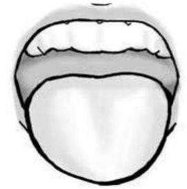
A I.
B II.
C III.
D IV.
Questão 527 · Tratamento da hipercalemia · 4000002754Em pacientes em risco de desenvolver arritmia cardíaca a partir da hipercalemia, intervenções urgenciais são importantes. São elas, EXCETO:
A Gluconato de Cálcio 10%.
B Bicarbonato de Sódio 8,4%.
C Solução Polarizante.
D Tiazídicos.
Questão 528 · Tratamento · Hipercalcemia · 4000002739O manejo da crise hipercalcêmica envolve medidas clínicas e cirúrgicas em caráter de urgência. São condutas adequadas, EXCETO
A hidratação com cristaloides.
B diuréticos de alça.
C bifosfonados.
D bloqueador da angiotensina.
Questão 529 · Neurologia · 4000002734Os sítios primários mais comuns dos tumores cerebrais metastáticos são, EXCETO
A câncer de pulmão.
B câncer de pâncreas.
C câncer de mama.
D melanoma.
Questão 530 · Pneumologia · 4000002715A indicação da traqueostomia em pacientes críticos é baseada de acordo com a causa da insu ciência respiratória. É INCORRETO que
A a traqueostomia reduz a necessidade de sedação e acelera o processo de desmame da ventilação mecânica.
B a traqueostomia precoce (até 7 dias), pode ser indicada em pacientes com traumatismo cervical alto (acima de C5).
C deve-se aguardar 14 dias para a realização da traquestomia de pacientes não neurocríticos.
D a traquestomia não reduz o tempo de internação na UTI.
Questão 531 · Síndrome Carcinoide · Diagnóstico da Síndrome Carcinoide · 4000002709Assinale a alternativa CORRETA sobre tumores carcinoides:
A A maioria dos pacientes com esses tumores apresentam a síndrome carcinoide, que inclui manifestações vasomotoras, cardíacas e gastrointestinais.
B Quando ocorrem no intestino delgado, o duodeno é o local mais acometido.
C Não apresentam potencial de malignidade.
D No trato gastrointestinal, o local mais afetado é o apêndice.
Questão 532 · Neurologia · 4000002705É INCORRETO afirmar sobre o Hematoma Subdural Agudo que
A apresenta-se na tomografia computadorizada como uma imagem hiperdensa em crescente.
B o comprometimento cerebral subjacente costuma ser mais grave devido à presença de lesão parenquimatosa concomitante.
C a apresentação clínica clássica é o intervalo lúcido, no qual o paciente encontra-se acordado e, depois de minutos ou horas, pode evoluir para o coma.
D ocorrem mais frequentemente por dilaceração de vasos superficiais pequenos ou vasos ponte do córtex cerebral.
Questão 533 · Neurologia · 4000002699Assinale a alternativa que corresponde à lesão da figura.
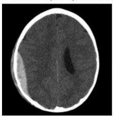
A Hematoma Subdural.
B Hematoma Extradural.
C Hematoma Intraparenquimatoso.
D Lesão Axonal Difusa.
Questão 534 · Tratamento · 4000002632O tratamento da infecção pelo HIV sofreu grandes modi cações desde o início da epidemia. A terapia dupla cedeu lugar à terapia antirretroviral potente (combinação de três ou mais medicamentos). A introdução da terapia antirretroviral tem os seguintes objetivos:
A Não prolongar, mas melhorar a qualidade de vida.
B Reduzir a morbidade.
C Reconstituir a função imune.
D Diminuir a replicação viral até níveis não detectáveis.
Questão 535 · Transmissão · 4000002627Quanto à transmissão do HIV em crianças, pode-se afirmar que:
A Atualmente predomina-se a transmissão pelo sangue e seus produtos contaminados com HIV.
B A maioria é infectada pela transmissão materno-infantil, durante a gestação e o parto e por meio do aleitamento.
C O convívio social com os pais infectados tem sido causa frequente de transmissão aos filhos.
D A transmissão materno-infantil de mãe soropositiva para o HIV ocorre em mais de 90% das gestações.
Questão 536 · Classif icação de Johnson · 4000002622Os tipos de úlcera péptica que estão relacionados à hipercloridria são:
A I e II.
B I e IV.
C II e III.
D II e IV.
Questão 537 · Investigação · Febre · Inf ectologia Pediátrica · 4000002620Em relação à Febre De Origem Indeterminada (FOI) na criança, assinale a alternativa INCORRETA:
A É definida como febre > 38 graus durante mais de 14 dias sem nenhuma causa óbvia apesar de uma anamnese completa, exame físico e avaliação laboratorial rotineira.
B As três categorias mais comuns de FOI em crianças são: doenças infecciosas, doenças do tecido conjuntivo ou inflamatórias e neoplasias.
C Por definição os achados físicos são exuberantes nas crianças com FOI. Sudorese deve ser observada, sua ausência sugere desidratação por vômitos e diarreia.
D Além da documentação cuidadosa de vários episódios de temperatura elevada, deve- se obter anamnese minuciosa, incluindo: impacto da febre sobre a saúde da criança, perda ponderal, presença de doença associada, envolvimento de órgãos vitais, uso de drogas, medicamentos ou terapia imunossupressora, viagem doméstica ou internacional, atividade sexual.
Questão 538 · Paralisia do Nervo Oculomotor III NC · 4000002619Nas paralisias do nervo oculomotor, é CORRETO afirmar que:
A Com ataxia contralateral e tremulação, a condição é síndrome de Weber.
B Com hemiplegia contralateral, a lesão se situa na área do núcleo vermelho.
C No diabetes, a pupila é poupada.
D Causada por aneurisma, é indolor.
E O olho fica em extorsão é abdução.
Questão 539 · Tratamento Cirúrgico da DRGE · Indicações para o Tratamento Cirúrgico · Cirurgia · 4000002618No tratamento cirúrgico da doença do re uxo gastroesofágico, a fundoplicatura à Nissen corresponde à confecção de uma válvula de:
A 360º.
B 270º.
C 180º anterior.
D 180º posterior.
Questão 540 · Pneumologia · 4000002612Visando a adoção de estratégia protetora, com objetivo de minimizar os efeitos adversos da ventilação mecânica invasiva em prematuros extremos, deve-se:
A Evitar valores de PaCO2 acima de 45mmHg.
B Manter a saturação de oxigênio de 85% a 89%.
C Promover o recrutamento alveolar com uso de PEEP de 8 a 10cmH2O.
D Utilizar volume corrente de 4 a 6ml/K g.
Questão 541 · Gastroenterologia · Acalásia Megaesôf ago · 4000002611Sobre acalasia, é INCORRETO afirmar:
A É considerada uma lesão pré-maligna, pois pode levar, após anos de evolução, ao desenvolvimento de carcinoma de esôfago, sendo o tipo histológico mais comum o adenocarcinoma.
B A tríade clássica dos sintomas inclui disfagia, regurgitação e perda de peso.
C Ao exame de manometria, ocorre falha de relaxamento do esfíncter esofágico inferior em resposta à deglutição.
D Estágios mais avançados levam à dilatação maciça e tortuosidade do órgão, o chamado megaesôfago.
Questão 542 · Pneumologia · 4000002608Paciente de 6 anos de idade encontra-se internado na UTI Pediátrica com diagnóstico de choque séptico de origem pulmonar. Está em ventilação pulmonar mecânica com os seguintes parâmetros: FiO2= 60% PIP= 24 PEEP= 8 FR= 18irpm. Apresenta a seguinte gasometria arterial: pH= 7,3 PaCO2= 40mmHg PaO2= 60mmHg BE= -7,0 SatO2= 95%. A saturação do sangue venoso misto foi de 55% e o índice cardíaco foi de 3,5L/min. Dosagem de hemoglobina de 8,0g/dl. Das alternativas apresentadas abaixo, assinale aquela que seria a melhor conduta para aumentar a oferta global de oxigênio:
A Aumentar a PEEP para 10mmHg.
B Realizar transfusão de concentrado de hemácias de 10ml/Kg a 20ml/Kg.
C Aumentar a FiO2 para 100%.
D Iniciar ECMO imediatamente.
Questão 543 · Divertículos Esof ágicos · Cirurgia · 4000002605Em relação aos divertículos de esôfago, assinale a alternativa INCORRETA:
A O divertículo esofágico mais comum é o divertículo de Zenker, que ocorre na junção da faringe ao esôfago.
B Os divertículos epifrênicos, assim como os parabronquiais, são divertículos verdadeiros.
C Divertículos de pulsão são divertículos falsos, decorrentes de altas pressões intraluminares.
D Divertículos parabronquiais resultam de reações inflamatórias externas nos linfonodos adjacentes.
Questão 544 · Pneumologia · 4000002600Das alternativas abaixo, qual apresenta uma contraindicação ao uso de ventilação não invasiva com pressão positiva?
A Tosse ineficaz ou secreção excessiva.
B Broncoespasmo.
C Doença neuromuscular.
D Bronquiolite.
Questão 545 · Neurologia · 4000002599Levando-se em consideração um paciente com Traumatismo Crânio Encefálico (TCE), assinale a alternativa CORRETA:
A Papiledema se presente, confirma o diagnóstico de hipertensão intracraniana, porém pode estar ausente nos casos agudos.
B Recomenda-se manter a pressão de perfusão cerebral em crianças com TCE em torno de 90mmHg.
C A monitorização da pressão intracraniana é recomendada quando lactentes e crianças apresentam- se com escala de coma de Glasgow de 15.
D A hiperventilação (PCO2 < 30mmHg) é recomendada como medida de rotina nos casos de TCE grave
Questão 546 · Cardiologia · 4000002581Em relação à Síndrome Torácica Aguda, assinale a alternativa CORRETA:
A A oxigenioterapia está indicada apenas em hipoxemia severa.
B Caracteristicamente não há dor torácica.
C Podem ocorrer infartos pulmonares.
D A mortalidade é extremamente baixa.
Questão 547 · Síndrome nef rótica · 4000002566Em um paciente com hipótese diagnóstica de Síndrome Nefrótica, qual é a relação esperada de proteína urinária / creatinina urinária em uma amostra isolada de urina?
A 0,2mg/mg
B 0,2 a 0,5mg/mg
C 1 a 2mg/mg
D > 2mg/mg
Questão 548 · Obesidade e síndrome metabólica · 4000002564Assinale a alternativa CORRETA em relação às estratégias terapêuticas utilizadas no tratamento da Síndrome Metabólica:
A Orlistate é a medicação de escolha na resistência à insulina, intolerância à glicose ou diabetes mellitus tipo 2.
B O tratamento medicamentoso é contraindicado em crianças menores de 12 anos.
C O tratamento medicamentoso deve ser postergado o máximo possível.
D Em jovens entre 16 e 18 anos, poderá ser indicado o tratamento cirúrgico naqueles que apresentarem o escore-Z maior que +2 na análise do IMC por idade.
Questão 549 · Tumor Estromal Gastrointestinal GIST · Gastroenterologia · 4000002547Qual a localização mais comum do tumor estromal gastrointestinal ?
A Intestino delgado.
B Mesentério.
C Esôfago.
D Estômago.
Questão 550 · Dermatomiosite · Miopatias autoimunes sistêmicas · Polimiosite · 4000002546As miopatias inflamatórias são um grupo heterogêneo de doenças que se caracterizam por fraqueza muscular proximal e elevação sérica de enzimas originadas da musculatura esquelética. Sendo INCORRETO que
A são reconhecidos cinco subtipos de doença: polimiosite primária idiopática (PM), dermatomiosite primária idiopática (DM), PM ou DM associada à neoplasia, PM ou DM juvenil e PM ou DM associada a outras doenças do colágeno.
B na PM/DM, a principal manifestação é a fraqueza proximal e simétrica de cinturas escapular e pélvica e de musculatura cervical.
C dependendo do grau da perda de força, o paciente pode manifestar desde fadiga e intolerância ao exercício até marcha cambaleante e dificuldade para subir escadas.
D a evolução tende a ser gradual e progressiva. A grande maioria dos pacientes podem apresentar mialgia associada.
Questão 551 · Endocrinologia · 4000002538Uma das premissas mais importantes é de que a decisão sobre o uso de estatinas em pacientes com diabetes deve basear-se na estrati cação do risco cardiovascular. Somente podemos CONCORDAR que, estudos recentes mostram que nem todos os pacientes com diabetes são
A de alto risco, e quase 30% deles apresentam risco semelhante ao de pessoas sem diabetes. Portanto, o conceito de diabetes como equivalência de risco é questionável e tende a levar ao supertratamento.
B de alto risco, e quase 60% deles apresentam risco semelhante ao de pessoas sem diabetes. Portanto, o conceito de diabetes como equivalência de risco é questionável e tende a levar ao supertratamento.
C de médio risco, e quase 30% deles apresentam risco semelhante ao de pessoas sem diabetes. Portanto, o conceito de diabetes como equivalência de risco é questionável e tende a levar ao supertratamento.
D de alto risco, e quase 30% deles apresentam risco semelhante ao de pessoas sem diabetes. Portanto, o conceito de diabetes como equivalência de risco não é questionável e tende a levar ao supertratamento.
Questão 552 · Sintomas e Investigação Diagnóstica · Gastroenterologia · 4000002531Qual o sintoma mais comum no câncer de esôfago?
A Disfagia e perda ponderal.
B Tosse e vômitos.
C Odinofagia e tosse.
D Hematêmese e pneumonia de aspiração.
Questão 553 · Inf ectologia · 4000002530Na osteomielite, a lesão causada pela pressão intraóssea aumentada, somada à isquemia determinada pelo descolamento do periósteo, é conhecida como:
A Abscesso de Brodie.
B Invólucro.
C Sequestro.
D Triângulo de Codman.
Questão 554 · Endocrinologia · 4000002527Na noite anterior, um paciente o procurou por estar preocupado com uma ferida no pé que não causa dor alguma, e seus amigos avisaram que isso era achado grave. Inicialmente você o acalmou avisando que cuidaria do mesmo e que faria o possível para que a lesão não complicasse ainda mais, passando a orientá-lo que a neuropatia diabética é o distúrbio neurológico demonstrável clinicamente ou por métodos laboratoriais em pacientes diabéticos, quando excluídas outras causas de neuropatia. Geralmente o acometimento patológico do sistema nervoso é muito amplo e bastante grave no Diabetes Mellitus (DM). Sobre isso, é considerado completamente adequado apenas o item:
A A prevalência da neuropatia diabética alcança níveis menos elevados com a evolução temporal da doença. Pode-se detectar distúrbio neurológico precocemente na evolução de DM do tipo 2 (DM2), muitas vezes desde o momento do diagnóstico.
B A prevalência pode aumentar significativamente e atingir valores próximos a 50% de acometimento quando se utilizam métodos diagnósticos de maior sensibilidade, como os eletrofisiológicos.
C É notório, então, que o acometimento neuropático dos pacientes seja geralmente precoce e de alta prevalência, a maioria constituindo-se em triopatia diabética – oftalmo, nefro e neuropatia – e sendo um importante problema de saúde, que ocasiona morbidade e mortalidade e piora significativamente a qualidade de vida por incapacitação e diminuição de sobrevida.
D Nos pacientes diabéticos do tipo 1 normalmente surge em 20 ou mais anos após o diagnóstico, devendo-se realizar avaliação para tal complicação nestes momentos e depois anualmente por meio de testes que serão descritos posteriormente.
Questão 555 · Complicações da DRC Dislipidemia · 4000002526A diminuição da função renal, avaliada pela taxa de ltração glomerular (TFG) mensurada ou calculada, está associada à maior mortalidade CV. Sendo INCORRETO, apenas, o seguinte:
A presença de doença renal crônica (DRC) , em especial nos estágios mais avançados, é considerada risco-equivalente à DAC, e a redução de LDL-C deverá ser o objetivo principal no tratamento destes pacientes.
B nas fases iniciais da doença renal (estágios 1 e 2), as modificações lipídicas preponderantes são hipertrigliceridemia e HDL-C elevado.
C com a evolução da DRC, torna-se mais comum a elevação do LDL-C.
D ocorre um estado pró-aterogênico por mudança no fenótipo da molécula de LDL (maior concentração de moléculas pequenas e densas) e pelo próprio meio urêmico.
Questão 556 · Cardiologia · 4000002518Amostra de sangue para avaliação do per l lipídico deve ser obtida nas primeiras 24 horas da admissão de todos os pacientes com síndrome coronariana aguda (SCA) . Sendo INADEQUADO, apenas, o seguinte:
A após este período, comumente ocorre aumento de TG e diminuição do LDL-C e do HDL-C, modificações que podem permanecer por cerca de um a três meses.
B recomenda-se a instituição precoce do tratamento com altas doses de estatina entre o primeiro e o quarto dia da SCA, preferencialmente atorvastatina na dose 80 mg.
C pacientes indicados para intervenção percutânea e angioplastia podem experimentar benefício adicional quando a dose de estatina for administrada até 12 horas antes do procedimento.
D a dose de estatina apropriada para manter o LDL-C na meta terapêutica (< 100 mg/dl) deverá ser mantida.
Questão 557 · Síndrome de Behçet · Síndrome de Behçet · 4000002515A doença de Behçet, é CORRETO afirmar que:
A Homens e mulheres são igualmente afetados na população japonesa.
B Uma das características menores da doença é o eritema nodoso.
C O envolvimento unilocular é visto em 50% dos casos.
D Neovascularização pode estar associada com vasculite retiniana.
E Associado com uveítes tem um bom prognóstico visual.
Questão 558 · Cardiologia · 4000002504O comprometimento agudo do sistema nervoso central, pode levar aos seguintes achados no ECG:
A ondas T negativas gigantes, simulando isquemia subepicárdica (onda T cerebral); aumento do intervalo QTc; irreversibilidade das alterações.
B ondas T negativas gigantes, simulando isquemia subepicárdica (onda T cerebral); aumento do intervalo QTc; reversibilidade das alterações.
C ondas T positivas gigantes, simulando isquemia subepicárdica (onda T cerebral); aumento do intervalo QTc; reversibilidade das alterações.
D ondas T negativas gigantes, mas não simulando isquemia subepicárdica (onda T cerebral); aumento do intervalo QTc; reversibilidade das alterações.
Questão 559 · Cardiologia · 4000002492Os Tremores musculares podem afetar o ECG da seguinte forma:
A Tremores musculares não podem interferir na linha de base, mimetizando alterações eletrocardiográficas como FLA e FV no paciente parkinsoniano.
B Tremores musculares podem interferir na linha de base, mas não mimetizando alterações eletrocardiográficas como FLA e FV no paciente parkinsoniano.
C Tremores musculares podem interferir na linha de base, mimetizando alterações eletrocardiográficas como FLA e FV no paciente com paralisia.
D Tremores musculares podem interferir na linha de base, mimetizando alterações eletrocardiográficas como FLA e FV no paciente parkinsoniano.
Questão 560 · Cardiologia · 4000002488Na Pericardite, o processo inflamatório decorrente da epicardite subjacente nos ventrículos é o responsável pelas seguintes alterações eletrocardiográficas, EXCETO
A pela onda T: na fase inicial, apresenta-se pouco aumentada e assimétrica.
B pela onda T: caracteristicamente não apresenta inversão enquanto ocorrem manifestações de elevação do ST.
C que pode apresentar inversão de T na fase crônica da doença, após a normalização do ST.
D quando esta ocorre inversão de T, raramente é profunda o suficiente para assemelhar- se ao padrão da onda T isquêmica.
Questão 561 · Cardiologia · 4000002484ECG compatível com Fenômeno de Ashman (ou de Gouaux-Ashman) seria ADEQUADAMENTE descrito assim:
A condução aberrante, que ocorre em batimento que segue imediatamente um ciclo curto após um ciclo longo, em razão da diminuição do período refratário no sistema de condução, principalmente no ramo direito do His, sendo mais frequente na FA.
B condução aberrante, que ocorre em batimento que segue imediatamente um ciclo curto após um ciclo longo, em razão do aumento do período refratário no sistema de condução, principalmente no ramo esquerdo do His, sendo mais frequente na FA.
C condução aberrante, que ocorre em batimento que segue imediatamente um ciclo curto após um ciclo longo, em razão do aumento do período refratário no sistema de condução, principalmente no ramo direito do His, sendo mais frequente na FA.
D Condução aberrante, que ocorre em batimento que segue imediatamente um ciclo curto após um ciclo longo, em razão do aumento do período refratário no sistema de condução, principalmente no ramo direito do His, sendo muito raro na FA.
Questão 562 · Cardiologia · 4000002475A Fibrilação Atrial é a principal fonte emboligênica de origem cardíaca de que se tem conhecimento, representando cerca de 45% dos casos quando comparada com outras cardiopatias, como infarto do miocárdio, aneurismas ventriculares e doenças valvares. Uma das alternativas abaixo listadas se mostra inadequada, indique-a:
A Em condições não relacionadas a doenças concomitantes ou a fatores de risco apropriados, raramente o trombo se forma em pacientes com FA.
B Ocorre a lentificação do fluxo na região do Apêndice Atrial Esquerdo (AAE), o que favorece a estase sanguínea e a formação de coágulos de fibrina, que se acumulam e geram o trombo.
C As estruturas se deslocam daquela pequena cavidade do apêndice atrial, vão para o território atrial e se desprendem para a circulação sistêmica.
D O cérebro, muito menos que membros e vísceras, é a região menos afetada.
Questão 563 · Manif estações clínicas da hipercalemia · Hipercalemia · 4000002474ECG compatível com Hiperpotassemia, somente NÃO apresenta o seguinte achado:
A as alterações dependem dos níveis séricos e ocorrem sequencialmente.
B onda T de grande amplitude, simétrica e de base larga.
C redução do intervalo QTc.
D distúrbio de condução intraventricular (QRS alargado).
Questão 564 · Cardiologia · 4000002468IC é o fator de risco bem conhecido para eventos cardíacos perioperatórios. A IC afeta em torno de 1 a 2% da população geral nos países desenvolvidos e atinge mais de 10% da população com mais de 70 anos. Podemos, apenas, CONCORDAR com o seguinte:
A fração de ejeção reduzida é considerada forte preditora de eventos em pacientes submetidos à cirurgia vascular. No entanto, a maioria dos estudos analisou a fração de ejeção como variável categórica (acima ou abaixo de 60%).
B fração de ejeção reduzida é considerada pouco preditora de eventos em pacientes submetidos à cirurgia vascular. No entanto, a maioria dos estudos analisou a fração de ejeção como variável categórica (acima ou abaixo de 40%).
C fração de ejeção reduzida é considerada forte preditora de eventos em pacientes submetidos à cirurgia vascular. No entanto, a maioria dos estudos analisou a fração de ejeção como variável categórica (acima ou abaixo de 40%).
D fração de ejeção reduzida é considerada forte preditora de eventos em pacientes submetidos à cardíaca, apenas. No entanto, a maioria dos estudos analisou a fração de ejeção como variável categórica (acima ou abaixo de 40%).
Questão 565 · Cardiologia · 4000002463Há uma miscelânea de condições em que o ECG apresenta alterações peculiares, não só nas cardiopatias, como também em doenças sistêmicas, em distúrbios metabólicos e na ação de medicamentos. Sendo INADEQUADO frente à intoxicação digitálica o seguinte item:
A depressão de ST-T de concavidade inferior.
B onda T “em colher”.
C diminuição do intervalo QTc.
D na intoxicação digitálica, podem ocorrer várias arritmias, predominando a extrassistolia ventricular.
Questão 566 · Endocrinologia · 4000002457Quando estudamos a evolução dos doentes diabéticos, podemos considerar diversos fatores envolvidos como os descritos abaixo, assinale a alternativa que se mostra INCORRETA:
A Entre os fatores ambientais associados estão sedentarismo, dietas ricas em gorduras e envelhecimento.
B A maioria dos pacientes com esse tipo de DM apresenta sobrepeso ou obesidade,
C A cetoacidose raramente se desenvolve de modo espontâneo, ocorrendo quando associada a outras condições, como infecções.
D O DM2 pode ocorrer em qualquer idade, mas é geralmente diagnosticado após os 60 anos.
Questão 567 · Cardiologia · 4000002455Na hipertensão leve ou moderada, em que não há alterações metabólicas ou cardiovasculares associadas, não há evidências de que seja benéfico retardar a operação. Sendo CORRETO, apenas, que de forma geral,
A a hipertensão estágio 2 com pressão arterial sistólica >200 mmHg e diastólica > 110 mmHg deve ser controlada antes da cirurgia. A estratégia perioperatória, em geral, deve ser manter a pressão arterial dentro de 20% dos valores pré-operatórios (desde que este valor não esteja muito descontrolado), o que reflete uma flexibilidade no controle - não necessariamente para níveis ditos normais. Isto pode reduzir a ocorrência das urgências hipertensivas no período perioperatório.
B a hipertensão estágio 2 com pressão arterial sistólica > 180 mmHg e diastólica > 120 mmHg deve ser controlada antes da cirurgia. A estratégia perioperatória, em geral, deve ser manter a pressão arterial dentro de 20% dos valores pré-operatórios (desde que este valor não esteja muito descontrolado), o que reflete uma flexibilidade no controle - não necessariamente para níveis ditos normais. Isto pode reduzir a ocorrência das urgências hipertensivas no período perioperatório.
C a hipertensão estágio 2 com pressão arterial sistólica > 180 mmHg e diastólica > 110 mmHg não necessita de ser controlada antes da cirurgia. A estratégia perioperatória, em geral, deve ser manter a pressão arterial dentro de 20% dos valores pré-operatórios (desde que este valor não esteja muito descontrolado), o que reflete uma flexibilidade no controle - não necessariamente para níveis ditos normais. Isto pode reduzir a ocorrência das urgências hipertensivas no período perioperatório.
D a hipertensão estágio 2 com pressão arterial sistólica > 180 mmHg e diastólica > 110 mmHg deve ser controlada antes da cirurgia. A estratégia perioperatória, em geral, deve ser manter a pressão arterial dentro de 20% dos valores pré-operatórios (desde que este valor não esteja muito descontrolado), o que reflete uma flexibilidade no controle - não necessariamente para níveis ditos normais. Isto pode reduzir a ocorrência das urgências hipertensivas no período perioperatório.
Questão 568 · Cardiologia · 4000002449Há cerca de quatro décadas, a análise de risco perioperatório do coronariopata consistia estritamente em aferir a relação temporal entre determinado evento isquêmico cardíaco e a operação proposta. Somente sendo INCORRETO que,
A uma cautelosa anamnese, associada à propedêutica direcionada para o aparelho circulatório e a exames subsidiários básicos, como o ECG de repouso e o raio-X de tórax, nunca é suficiente para determinar o risco cirúrgico de pacientes coronariopatas.
B discriminar objetivamente o risco cirúrgico para cada condição específica da doença arterial coronária (DAC) é fundamental para a prevenção e para uma menor morbidade de eventos perioperatórios.
C atualmente, no entanto, contemplamos, além do intervalo referido, todos os fatores relevantes no prognóstico de pacientes portadores de DAC, independentemente do contexto perioperatório.
D presença de angina, insuficiência cardíaca, sinais eletrocardiográficos, extensão e limiar da isquemia, além da anatomia coronária, nos casos pertinentes são fatores relevantes no prognóstico de pacientes portadores.
Questão 569 · Pneumologia · 4000002446Um paciente questionou o motivo de você ter solicitado um exame, pois o mesmo já sabia que é asmático, e você mesmo já o havia a rmado, sendo assim, seria desnecessário no entender do paciente mais um exame. Assim, você justificou a real necessidade do exame:
A A confirmação do diagnóstico de asma raramente é feita através da espirometria, a qual fornece duas medidas pouco importantes para o diagnóstico de limitação ao fluxo de ar das vias aéreas.
B A avaliação funcional da asma, através da espirometria, tem três utilidades principais: estabelecer o diagnóstico; documentar a gravidade da obstrução ao fluxo aéreo e monitorar o curso da doença e as modificações decorrentes do tratamento.
C O diagnóstico de asma é confirmado apenas pela detecção da limitação ao fluxo de ar, e principalmente pela demonstração de significativa irreversibilidade, parcial ou completa, após a inalação de um broncodilatador de curta ação.
D Uma espirometria normal exclui o diagnóstico de asma.
Questão 570 · Cardiologia · 4000002441Os escores de risco habitualmente utilizados permitem estimar o risco de eventos cardiovasculares no período perioperatório com moderada acurácia. Testes de avaliação de isquemia, assim como novos biomarcadores promissores (troponinas e peptídeos natriuréticos), permitem re nar esta estimativa de risco antes da cirurgia. Somente podemos CONCORDAR com o seguinte item:
A os peptídeos natriuréticos são liberados na circulação sanguínea pelo miocárdio em resposta a múltiplos estímulos fisiológicos, como estresse miocárdico e isquemia. Múltiplos estudos demonstraram que níveis pré-operatórios elevados de Peptídeo Natriurético do Tipo B (BNP) são fracos preditores de complicações cardiovasculares perioperatória.
B os peptídeos natriuréticos não são liberados na circulação sanguínea pelo miocárdio em resposta a múltiplos estímulos fisiológicos, somente com isquemia. Múltiplos estudos demonstraram que níveis pré-operatórios elevados de Peptídeo Natriurético do Tipo B (BNP) são potentes preditores de complicações cardiovasculares perioperatória.
C os peptídeos natriuréticos são liberados na circulação sanguínea pelo miocárdio em resposta a múltiplos estímulos fisiológicos, como estresse miocárdico e isquemia. Múltiplos estudos demonstraram que níveis pré-operatórios elevados de Peptídeo Natriurético do Tipo B (BNP) são potentes preditores de complicações cardiovasculares perioperatória.
D os peptídeos natriuréticos são liberados na circulação sanguínea pelo miocárdio em resposta a múltiplos estímulos fisiológicos, como estresse miocárdico e isquemia. Mas, estudos falham em demonstrar que níveis pré-operatórios elevados de Peptídeo Natriurético do Tipo B (BNP) são potentes preditores de complicações cardiovasculares perioperatória.
Questão 571 · Cardiologia · 4000002434O aumento da sensibilidade dos kits disponíveis das troponinas propiciou uma maior acurácia e rapidez no diagnóstico ou não do IAM em pacientes com dor torácica na sala de emergência. Somente NÃO sendo correto que,
A no perioperatório de operações não cardíacas, as evidências científicas disponíveis não incluem todas as troponinas (I e T) e nem todos os métodos utilizados para sua dosagem apresentam limites de detecção e valores de referência diferentes.
B o limite de detecção significa o máximo valor que é detectado pelo método.
C o valor de referência da normalidade é determinado utilizando o percentil 99, que é obtido realizando-se o exame em uma população normal e, significa que, 99% dos indivíduos normais apresentam valores abaixo deste cut-off.
D os kits de troponina podem ser classificados em baixa (convencionais), média (contemporâneos ou sensíveis) ou alta sensibilidade. Esta classificação é baseada na porcentagem de indivíduos saudáveis em que a troponina pode ser detectada.
Questão 572 · Cardiologia · 4000002424Quando analisamos a Angiogra a Coronária por Tomogra a Computadorizada, podemos apenas CONCORDAR com o seguinte:
A A angiotomografia (angio-T C) de coronárias tem sido utilizada de forma crescente na avaliação de pacientes sem suspeita de coronariopatias. Ela apresenta alta sensibilidade para a detecção de estenose coronariana, incluindo doença multiarterial e lesão em tronco de coronária esquerda.
B A angiotomografia (angio-T C) de coronárias tem sido utilizada de forma crescente na avaliação de pacientes com suspeita de coronariopatias. Ela apresenta baixa sensibilidade para a detecção de estenose coronariana, incluindo doença multiarterial e lesão em tronco de coronária esquerda.
C A angiotomografia (angio-T C) de coronárias tem sido utilizada de forma crescente na avaliação de pacientes com suspeita de coronariopatias. Ela apresenta alta sensibilidade para a detecção de estenose coronariana, excluindo doença multiarterial e lesão em tronco de coronária esquerda.
D A angiotomografia (angio-T C) de coronárias tem sido utilizada de forma crescente na avaliação de pacientes com suspeita de coronariopatias. Ela apresenta alta sensibilidade para a detecção de estenose coronariana, incluindo doença multiarterial e lesão em tronco de coronária esquerda.
Questão 573 · Cardiologia · 4000002414A ecocardiogra a sob estresse é precisa e segura em identi car pacientes com doença arterial coronária, com importante papel como preditor de eventos cardíacos. Somente sendo INCORRETO que,
A as ecocardiografias sob estresse pela dobutamina e pelo exercício apresentam acurácia diagnóstica semelhantes e superiores ao estresse com dipiridamol.
B caso um ecocardiograma sob estresse pela dobutamina demonstre isquemia residual no paciente com infarto prévio, o prognóstico é bom, e a probabilidade de reinfarto, morte e edema agudo pulmonar é baixa no período transoperatório de uma cirurgia não cardíaca.
C o uso da ecocardiografia sob estresse pela dobutamina na avaliação do risco perioperatório já está bem documentado na literatura.
D comparando a cintilografia de perfusão miocárdica e a ecocardiografia sob estresse pela dobutamina na estratificação de risco vascular antes cirurgia, foi demonstrado que o valor prognóstico das anormalidades em ambas as modalidades de imagens para eventos isquêmicos perioperatórios é semelhante.
Questão 574 · Cardiologia · 4000002404O Teste de Esforço TE é uma ferramenta segura, útil e e caz para a detecção de isquemia miocárdica, tendo justamente como mecanismo produzir este desbalanço entre oferta e demanda. Somente sendo INCORRETO que,
A assim, é razoável pensar que a detecção de anormalidades durante sua execução possa ser reprodutível durante o perioperatório e seus variados níveis de estresse.
B não há evidências de que usar esta estratégia para todos os pacientes resulte na redução de eventos cardiovasculares perioperatórios.
C também deve se considerar que, quanto maior a prevalência da doença coronária em determinada população, menor será também o valor preditivo positivo do TE.
D considerando que o objetivo da estratificação do risco é reduzir o risco perioperatório, não seria lógica a realização do teste em uma população já estratificada como de baixo risco pelos algoritmos recomendados.
Questão 575 · Perf uração de Esôf ago · Cirurgia · 4000002399Paciente do sexo masculino, 38 anos, vem ao pronto-socorro apresentando dor abdominal severa associada a dor retroesternal. O quadro iniciou há 12h, após o paciente retornar de uma festa onde ingeriu grande quantidade de álcool, que ocasionou desconforto abdominal, náuseas e vários episódios de vômitos vigorosos, evoluindo com o quadro doloroso. Nega hematêmese. O paciente encontra-se bastante ansioso, com fácies de dor, desidratado e febril (38,8°C), FC = 120 bpm, P.A = 100 x 70 mmHg; FR = 30 irpm. A ausculta pulmonar evidenciou diminuição do murmúrio vesicular em base esquerda. Ausculta cardíaca normal. A palpação do epigástrio é dolorosa, com defesa voluntária. Leucograma = 26.000; hematócrito = 37% e hemoglobina = 11 g/dl. Amilase e enzimas hepáticas normais. ECG normal, exceto pela taquicardia. Radiogra a de tórax evidencia discreta efusão pleural e pneumotórax à esquerda, além de pneumomediastino. Sobre a avaliação e conduta deste paciente, assinale a alternativa CORRETA:
A O próximo passo na avaliação deste paciente é a endoscopia digestiva alta pelo provável diagnóstico de síndrome de Mallory-Weiss.
B A história de ingesta alcoólica sugere lesão aguda da mucosa gástrica e esofagite de refluxo, estando indicado o tratamento clínico com bloqueadores de bomba de prótons.
C Tomografia computadorizada de tórax com contraste oral e toracotomia precoce provavelmente serão decisivos no prognóstico deste paciente.
D O esofagograma baritado é o exame mais indicado para o diagnóstico do caso neste momento.
Questão 576 · Cardiologia · 4000002393A fisiopatologia do IAM perioperatório difere um pouco da do IAM espontâneo. Considerando os Testes Não Invasivos para Detecção de Isquemia Miocárdica, o entendimento do Eletrocardiograma de Esforço apenas NÃO é compatível com a seguinte alternativa.
A No IAM perioperatório, a ruptura de placa ocorre em aproximadamente 90% dos casos.
B No IAM perioperatório se dá, também, por um desequilíbrio prolongado entre a redução da oferta de oxigênio para o miocárdio (anemia, baixo fluxo etc.) e o aumento da demanda arterial coronariana (taquicardia e hipertensão).
C O TE é uma ferramenta segura, útil e eficaz para a detecção de isquemia miocárdica, tendo justamente como mecanismo produzir este desbalanço entre oferta e demanda.
D A detecção de anormalidades durante sua execução dos testes de esforços possa ser reprodutível durante o perioperatório e seus variados níveis de estresse.
Questão 577 · Cardiologia · 4000002388Dentro das diretrizes atuais de utilização de marcadores de necrose miocárdica, somente não podemos considerar completamente correto que:
A Reinfarto é descrito como um IAM que ocorre dentro de 28 dias do infarto incidente.
B Se ocorrer após 28 dias, é considerado incidente.
C As novas diretrizes de infarto não recomendam o uso de CK-MB para essa situação.
D As troponinas são os marcadores de escolha também para o cenário de infarto incidente.
Questão 578 · Cardiologia · 4000002368Dentro de aspectos relacionados a medidas não farmacológicas para abordagem de Hipertensão Arterial (HA), somente podemos alegar que o seguinte conceito está INCORRETO:
A A prática regular de atividade física pode ser benéfica tanto na prevenção quanto no tratamento da HA, reduzindo ainda a morbimortalidade cardiovascular.
B Indivíduos ativos apresentam risco 30% menor de desenvolver HA que os sedentários e o aumento da atividade física diária reduz a PA.
C O indivíduo deve ser orientado a procurar um Médico se sentir algum desconforto durante a execução.
D A prática regular de atividade física pode ser benéfica apenas para a prevenção, não impactando no tratamento da HA.
Questão 579 · Cardiologia · 4000002367Não podemos determinar como correto o seguinte item referenciando a ecocardiogra a transtorácica como método diagnóstico, assim indique o item ERRADO dos listados abaixo.
A A ecocardiografia transtorácica é o principal método diagnóstico em pacientes com IC suspeita ou conhecida.
B A ecocardiografia transtorácica por este método, incluindo formas refinadas de análise, como a do strainmiocárdico e a ecocardiografia tridimensional, podemos avaliar com pequena precisão os volumes ventriculares, a fração de ejeção, o débito cardíaco.
C A ecocardiografia de rotina não é indicada em todo paciente cardiopata em pré-operatório, pois ainda não há evidências de que seu uso esteja associado ao aumento da sobrevida ou à menor permanência hospitalar.
D A ecocardiografia transtorácica em uso pré-operatório, pelo contrário, aumenta o tempo de hospitalização, sem benefício clínico.
Questão 580 · Gastroenterologia · 4000002342Paciente do sexo feminino, 72 anos, internada há 7 dias devido a quadro de diarreia mucossanguinolenta (cerca de 3 episódios ao dia), acompanhada de leve dor abdominal difusa, tipo cólica, tontura e astenia. Não apresentou febre no período. Nega diabetes e outras comorbidades. Deu entrada com sinais de hipovolemia leve que melhoraram após expansão com cristaloides. Seus exames laboratoriais evidenciam leucograma = 14.000; hematócrito = 32%; hemoglobina = 11 g/dl; VHS = 10 mm/h e albumina sérica normal. Foi submetida à colonoscopia que evidenciou múltiplas úlceras rasas, coalescentes, friáveis, que acometiam cólon descendente, sigmoide e reto, circunferencialmente, poupando a região anal. Assinale a alternativa CORRETA:
A Há indicação de investigação tomográfica para avaliar a possibilidade de metástases hepáticas.
B Há indicação de retossigmoidectomia de urgência devido ao quadro de megacólon tóxico com possível evolução para perfuração e peritonite.
C O exame histopatológico provavelmente evidenciará glândulas da mucosa de arquitetura aberrante, com atipia celular, infiltrado neutrofílico ausente e padrão invasivo de camadas profundas da parede do cólon.
D A mesalazina e corticoides provavelmente farão parte do tratamento desta paciente.
Questão 581 · Tomograf ia Computadorizada de Abdome · Ultrassonograf ia de Abdome · 4000002319Paciente do sexo masculino, 38 anos, dá entrada no pronto atendimento com quadro de dor intensa em hipocôndrio direito, rapidamente progressiva, que migrou para todo o abdome superior e irradia para o dorso, associada a náuseas e vômitos. Refere crises anteriores de cólicas em hipocôndrio direito após alimentação rica em gordura, porém de menor intensidade. Evolução de 12 horas. Ao exame físico, encontra-se em REG, lúcido e orientado, com fácies de dor, anictérico, taquicárdico, taquipneico, hipotenso e oligúrico. Leucograma = 16.000; amilase = 1.450 mg/dl. Seu abdome é tenso, bastante doloroso à palpação em andar superior, sem irritação peritoneal. Assinale a alternativa INCORRETA:
A Já que a paciente apresenta possível disfunção de órgãos à sua admissão, provavelmente será classificada como quadro moderadamente grave, dependendo da sua resposta à terapia nas próximas 48h.
B A hidratação com solução salina isotônica é parte importante do tratamento inicial deste paciente e o volume total de infusão pode chegar até a 12 litros em 24 horas.
C Já que a ultrassonografia não é método adequado para avaliação do retroperitôneo, há indicação de tomografia computadorizada para confirmação diagnóstica e etiológica.
D Não é recomendado o uso de antibióticos para este paciente neste momento, reservando-os para o caso de evolução desfavorável com evidência de necrose retroperitoneal infectada.
Questão 582 · Lesão Retroquiasmática · 4000002303Em relação a um achado de hemianopsia homônima diante da avaliação subjetiva do campo de visão, ou seja, o exame do campo visual que justifica o diagnóstico de lesão, caracteriza-se como:
A Quiasma óptico.
B Radiações ópticas.
C Nervo oculomotor.
D Nervo zigomático facial.
E Segundo nervo craniano.
Questão 583 · Carcinoma de Células Escamosas CEC · Gastroenterologia · 4000002276Paciente do sexo masculino, 55 anos, apresenta disfagia progressiva de sólidos para líquidos há 4 meses, associada a perda ponderal. Traz consigo esofagograma contrastado que revela imagem de subtração com contornos irregulares em terço médio do esôfago. Marque a alternativa CORRETA:
A A lesão é compatível com leiomioma e deve-se proceder à esofagectomia.
B Deve-se realizar endoscopia digestiva alta com biópsia, sendo o resultado mais provável carcinoma epidermoide.
C Essa imagem se trata de uma provável complicação do esôfago de Barrett.
D Uma boa opção terapêutica é realizar endoscopia associada à dilatação com balão.
Questão 584 · Pálpebras · 4000002261Inúmeras doenças sistêmicas podem causar alterações do olho e seus anexos. A ptose é uma manifestação ocular que apresenta as seguintes doenças sistêmicas associadas, EXCETO:
A Miastenia gravis
B Distrofia miotônica.
C Síndrome de Horner.
D Insuficiência cardíaca.
E Paralisia ou regeneração aberrante de NCIII.
Questão 585 · Classif icação das leucemias crônicas · Introdução às leucemias crônicas · 4000002254Leucemia mieloide crônica LMC Paciente masculino, 45 anos, pardo, com queixas vagas de fadiga e indisposição, náuseas e vômitos. Notou aumento do volume abdominal. Ao exame físico: discreta palidez e esplenomegalia acentuada e indolor. O estudo hematológico revelou: hemácias = 3,2 milhões/mm³; Hb = 9,8 g/dl; Ht = 29%; VCM = 90; HCM = 30,6: CHCM = 29,5; leucócitos = 187.000/mm³; blastos = 2%; promielócitos = 3%; mielócitos = 13%; metamielócitos = 10%; bastonetes = 20%; segmentados = 35%; eosinó los = 3%; basó los = 2%; linfócitos = 3%; monócitos = 4%; plaquetas = 1.065.000/mm³. Qual a hipótese diagnóstica mais provável?
A Reação leucemoide.
B Trombocitemia essencial.
C Leucemia mieloide aguda.
D Leucemia mieloide crônica.
Questão 586 · Hipocalcemia com Paratormônio PTH reduzido · Manif estações clínicas da hipocalcemia · 4000002214Endocrinologia Feminino, 43 anos, submetida a tireoidectomia total devido bócio multinodular atóxico, evoluindo no pós- operatório imediato com astenia, cãibras musculares, parestesias, mialgia. Qual a provável causa do quadro clínico apresentado?
A Hiperparatireoidismo pós-cirúrgico.
B Hipoparatireoidismo pós-cirúrgico.
C Hipotireoidismo pós-cirúrgico.
D Hipertireoidismo pós-cirúrgico.
Questão 587 · Características Ultrassonográf icas dos Nódulos · Apresentação Clínica e Avaliação Inicial · 4000002207Hipertireoidismo primário Feminino, 50 anos, chega a consulta muito ansiosa devido “massa no pescoço”. Histórico familiar de irmão com câncer de tireoide. À palpação, nota-se nodulação em região cervical esquerda, de mais ou menos 2,0 cm, discretamente endurecida, móvel, indolor. Traz dosagem TSH = 0,11 (VR = 0,5-4,5 mUI/L) e T4 livre = 1,7 ng/dl (VR = 0,7-1,5 ng/dl). Qual o próximo passo na avaliação desta paciente?
A Solicitação de cintilografia de tireoide.
B Dosagem de tireoglobulina e calcitonina.
C Solicitação de Punção Aspirativa por Agulha Fina (PAAF) do nódulo.
D Solicitação de ultrassonografia de tireoide.
Questão 588 · Classif icação Histológica de Lauren · Gastroenterologia · 4000002177De acordo com a classificação de Lauren para o Adenocarcinoma Gástrico, escolha a alternativa que não corresponde ao tipo Difuso:
A Células em Anel de Sinete.
B Relacionado à atrofia gástrica.
C Disseminação transmural e linfática.
D Grupo etário mais jovem.
Questão 589 · Inf ectologia · 4000002167As bactérias Gram-negativas mais frequentemente isoladas em hemoculturas de pacientes neutropênicos são:
A Escherichia coli, Klebsiella e Serratia.
B Morganella, Proteus e Pseudomonas aeruginosa.
C Pseudomonas aeruginosa, Klebsiella e Escherichia coli.
D Pseudomonas aeruginosa, Enterobacter e Proteus.
Questão 590 · Megacólon Tóxico · 4000002162O Megacólon Tóxico é uma condição grave, potencialmente fatal que pode ocorrer em pacientes com Retocolite Ulcerativa, Crohn e Colites Infecciosas. Sobre esta entidade clínica, escolha a alternativa INCORRETA:
A Apresentação clínica clássica: febre alta, leucocitose, dor abdominal intensa, taquicardia.
B A ausência de melhora em 48 a 72 horas do início do tratamento clínico justifica uma intervenção cirúrgica urgente.
C Proctotocolectomia total é a cirurgia de escolha.
D Para a estabilização inicial é recomendado expansão volêmica rigorosa, corticoterapia e antibióticos de amplo espectro.
Questão 591 · Inf arto de ventriculo direito · Diagnóstico eletrocardiograf ico do IAMCSST · 4000002161Paciente de 65 anos, tabagista, sedentário e obeso, chega no pronto-socorro 28 de agosto com dor precordial típica. Seu ECG na admissão revelou supradesnivelamento do seg ST de 0,3 mV em V4R, V5R e V6R. Neste cenário, qual o diagnóstico e tratamento imediato? Escolha dentre as opções abaixo:
A Infarto de ventrículo direito e o tratamento deve ser feito com expansão de volume.
B Infarto de ventrículo direito e o tratamento deve ser feito com nitrato endovenoso.
C Infarto de parede anterior localizada e tratamento com betabloqueadores endovenosos.
D Infarto de parede anterosseptal e tratamento com betabloqueadores endovenosos.
Questão 592 · Avaliação inicial · Classif icação · 4000002154Paciente de 72 anos, sexo masculino e diabético apresenta há 3 meses dispneia progressiva para pequenos esforços e edema de membros inferiores. No exame físico: lúcido, orientado, boa perfusão capilar periférica, crepitantes nas bases pulmonares, B3, P2 > A2, PA = 90 x 50 mmHg e FC = 100 bpm sendo diagnosticado como insuficiência cardíaca descompensada. Qual o perfil clínico hemodinâmico neste caso?
A Perfil A.
B Perfil B.
C Perfil C.
D Perfil L.
Questão 593 · Gastroenterologia · 4000002137Paciente chega a ubs com laudo de colonoscopia: presença de divertículo em cólon sigmóide sem sinais de inflamação ou sangramento. Com relação a essa patologia, assinale a verdadeira
A Uma das complicações é a diverticulite aguda que se manifesta com dor em fossa ilíaca direita e febre.
B O local mais comum dos divertículos é no reto.
C Quando ocorre enterorragia secundária a um divertículo, geralmente esses diverticulos se localizam no lado direito do cólon.
D Divertículos tem alto risco de malignização.
Questão 594 · Sopros cardíacos · Cirurgia · Insuf iciência aórtica · 4000002128O sopro de Carey Coombs está presente em qual patologia?
A Insuficiência pulmonar.
B Doença reumática em atividade.
C Endocardite infecciosa.
D Insuficiência aórtica.
Questão 595 · Complicações da DRC Coagulopatia · Complicações da DRC Anemia · 4000002120São consequências hematológicas da uremia:
A Plaquetose e policitemia.
B Elevação do hematócrito e hemoglobina.
C Deficiência de eritropoetina, redução da sobrevida das hemácias.
D Aumento da creatinina e ureia.
Questão 596 · Complicações da DRC Síndrome urêmica · 4000002114São consideradas toxinas urêmicas:
A Ureia, proteinúria, hematúria.
B Ureia, glicemia e transaminases.
C Hiperamonemia, uremia, hiperuricemia.
D PTH ou paratormônio, ureia, beta-2-microglobulinas, fósforo.
Questão 597 · Glaucoma Agudo de Ângulo Fechado Crise Aguda de Glaucoma · 4000002100Mulher idosa, comparece ao pronto-socorro com queixa de perda súbita da visão, tendo o quadro iniciado há algumas horas, não progressivo, estando no momento somente com percepção luminosa. Refere, também, dor ocular intensa de início concomitante a perda visual, com náuseas. Alega ser diabética controlada, nega outras patologias ou traumas. Ao exame, observa-se hiperemia difusa, com médio-midríase xa e tensão ocular aumentada. Assinale a alternativa que apresenta corretamente a hipótese diagnóstica mais provável para o caso.
A NOIA arterítica.
B Glaucoma agudo.
C Glaucoma neovascular.
D Descolamento de retina.
E Neurite óptica.
Questão 598 · Nef rologia · 4000002097Faz parte do tratamento da Hipercalcemia, EXCETO:
A Hidratação.
B Pamidronato.
C Solução Polarizante
D Furosemida.
Questão 599 · Derrame pleural parapneumônico simples · Quadro clínico · Análise do líquido pleural · 4000002076Paciente do sexo feminino, 45 anos, foi admitida na emergência com relato de há cinco dias apresentar febre alta, calafrios, tosse e dor torácica direita. Apresentava diante do exame clínico e radiológico, características de síndrome de derrame pleural direita, com derrame volumoso. Foi submetida à toracocentese que evidenciou aspecto sero brinoso, presença de polimorfonucleares com predomínio de neutró los, proteína do líquido pleural de 4,5 g/dl; LDH = 1.020 U/L; pH = 7,9; glicose de 40 mg/dl. Qual o diagnóstico mais provável e a conduta mais acertada no momento?
A Tuberculose – iniciar RIP.
B Artrite reumatoide – iniciar corticoide.
C Empiema – drenagem fechada em selo d'água imediata.
D Pneumonia comunitária – somente antibioticoterapia.
Questão 600 · Investigação etiológica · Def inição e epidemiologia · Def inição · 4000002069Em relação às bronquiectasias, assinale a alternativa CORRETA:
A A fibrose cística e a discinesia ciliar são condições associadas à bronquiectasias. Estes pacientes beneficiam-se de cirurgia de ressecção pulmonar para tratamento das bronquiectasias.
B O tratamento clínico fundamenta-se no uso de antibióticos de largo espectro, associados a antibioticoterapia inalatória e uso de mucolítico profilático para prevenção de exacerbações.
C A ocorrência de bronquiectasias está relacionada à infecção na infância (sarampo, adenoviroses, coqueluche) e o paciente pode apresentar hemoptises de repetição, sendo indicada a TC de tórax para avaliação diagnóstica.
D Não é indicada a vacinação antipneumocócica para os pacientes com bronquiectasias, pela maior incidência de efeitos adversos relacionados à vacina nestes pacientes, especialmente pneumonia.
Questão 601 · Esclerose sistêmica · Quadro clínico · 4000002052É considerada a mais frequente manifestação visceral da esclerose sistêmica:
A Dismotilidade esofágica.
B Crepitação tendínea.
C Fibrose pulmonar.
D Calcinose.
Questão 602 · Gastroparesia · Gastroenterologia · 4000002046São alterações fisiopatológicas encontradas na gastroparesia, EXCETO:
A Alterações do tônus gástrico e da acomodação à distensão do fundo gástrico.
B Distúrbio do ritmo elétrico gástrico (disritmias gástricas).
C Espasmos pilóricos.
D Hipermotilidade antral.
Questão 603 · Síndrome do Esmagamento Rabdomiólise Traumática · Rabdomiólise e Mioglobinúria · 4000001986Rabdomiólise São complicações da Rabdomiólise, EXCETO:
A Coagulação Intravascular Disseminada.
B Hipocalcemia.
C Hiperfosfatemia.
D Hipocalemia.
Questão 604 · Critérios de Ranson · 4000001981Para definição de prognóstico da pancreatite aguda, utilizamos os critérios de Ranson. São critérios avaliados nas primeiras 24h, EXCETO:
A PaO2 > 55 mmHg.
B Idade > 55 anos.
C Glicose > 200 mg/dl.
D DHL > 350 UI/L.
Questão 605 · Fisiopatologia · 4000001974Um paciente de 30 anos de idade apresentando ptose palpebral e diplopia utuante durante o dia recebeu o diagnóstico de miastenia gravis. Qual o neurotransmissor envolvido na sua fisiopatologia?
A Dopamina.
B Acetilcolina.
C Serotonina.
D Glutamato.
Questão 606 · Fisiopatologia e Fatores de Risco · 4000001962Estudos de genética molecular permitiram identi car os genes consistentemente associados com o maior risco de desenvolvimento da doença de Alzheimer. Qual das alternativas abaixo não está relacionada à doença de Alzheimer?
A Alterações nos genes da alfa-sinucleinas (SNCA).
B Proteína precursora do amiloide (APP).
C Apolipoproteína E (APOE).
D Presenilina 2 (PSEN2).
Questão 607 · Endocrinologia · 4000001957Nuligesta de 20 anos e seu parceiro da mesma idade procuram orientação e aconselhamento por difunção sexual. Antes do início de seu relacionamento, nenhum tinha tido prévia atividade sexual. Ambos negam problemas médicos. Em relação aos diversos tipos de disfunção sexual, masculina ou feminina, qual tem a mais baixa taxa de cura?
A Ejaculação precoce.
B Vaginismo.
C Impotência primária.
D Impotência secundária.
E Disfunção orgástica feminina.
Questão 608 · Critérios Diagnósticos · Cef aleia em Salvas · 4000001950Um paciente de 34 anos de idade apresentando cefaleia recorrente foi diagnosticado com cefaleia em salvas ou “cluster headache”. Quais os sinais e sintomas são os mais prováveis para este diagnóstico?
A Cefaleia geralmente de moderada ou forte intensidade, pulsátil, unilateral com náuseas e/ou fotofobia, persistindo por 4-72 horas.
B Cefaleia geralmente de leve ou moderada intensidade, sensação difusa e dolorosa ou em compressão em torno da cabeça, dor em couro cabeludo, persistindo por 30 minutos a 7 dias.
C Cefaleia geralmente intensa, excruciante, com congestão ocular, obstrução nasal, sudorese da fronte e da face ipsilateral, durando de 15-180 minutos.
D Ataques recorrentes de dor lancinante e súbita, descrita como um choque doloroso intenso e incapacitante. A dor pode ser desencadeada por falar, escovar os dentes, mastigar ou tocar levemente no rosto.
Questão 609 · Hanseníase · 4000001902Em relação à hanseníase, é possível afirmar que:
A Hanseníase virchowiana cursa com infiltração dos lóbulos de orelhas, queda do terço externo das sobrancelhas e baciloscopia negativa.
B Eritema nodoso é um quadro reacional que ocorre nas formas paucibacilares.
C Hanseníase tuberculoide, de acordo com a OMS, é classificada como forma multibacilar.
D Hanseníase indeterminada caracteriza-se por mancha (s) hipocrômica (s) de limites imprecisos com alteração da sensibilidade.
Questão 610 · Neurologia · 4000001842Sobre as vantagens da técnica de PIC com cateter ventricular, assinale a alternativa correta:
A Colocação fácil, com uma baixa taxa de complicação.
B Risco de hemorragia e infecção.
C Possibilidade de infusão de manitol caso seja necessário.
D Medidas globais da pressão, drenagem terapêutica da LCR e calibração in vivo.
Questão 611 · Neurof isiologia · 4000001828Em relação à monitorização cerebral, qual das técnicas abaixo é considerada padrão ouro?
A EEG.
B PIC com cateter ventricular.
C BIS cerebral.
D Oximetria do bulbo jugular.
Questão 612 · Neurologia · 4000001807Levando-se em consideração os objetivos de se monitorar neurologicamente as crianças com lesão intracraniana, assinale a alternativa INCORRETA:
A Orientar o manejo dos pacientes.
B Objetivar uma melhor evolução neurológica e a qualidade de vida nos sobreviventes.
C Detectar uma piora neurológica, mesmo que tardiamente.
D Individualizar as decisões relacionadas aos cuidados dos pacientes.
Questão 613 · Neurof isiologia · 4000001776Analise as alternativas abaixo e assinale a INCORRETA:
A O aumento de volume de um ou mais compartimentos intracranianos ou a adição de uma lesão que produz efeito de massa é compensado, inicialmente, pelo desvio do LCR para o espaço subaracnóide espinhal e pela entrada de sangue venoso do espaço intracraniano.
B Após uma lesão traumática, o volume cerebral aumenta devido a um edema vasogênico ou citotóxico. A obstrução relacionada ao fluxo de saída pode comprometer o compartimento vascular, primariamente composto pelo sangue venoso.
C O aumento do volume de um compartimento ou a adição de um novo compartimento, como na presença de hematoma, pode ser tamponado de maneira compensatória pela diminuição no volume de outros compartimentos, e, quando o aumento é lento, essas alterações compensatórias podem manter a PIC estável.
D Conforme o volume aumenta, a habilidade compensatória diminui e a PIC começa a aumentar. Quando a compensação é máxima, qualquer aumento adicional de volume determina num grande aumento na PIC.
Questão 614 · Manif estações clínicas · 4000001680Os acidentes com escorpiões têm grande importância entre os acidentes por animais peçonhentos, seja pela incidência ou pela gravidade dos casos, principalmente em crianças menores de sete anos. Com base nessa afirmação, assinale a alternativa correta:
A O edema agudo de pulmão é raro nos casos graves.
B Quando há edema agudo de pulmão ele tem apenas uma fisiopatologia, a relacionada à Insuficiência Cardíaca.
C Com a picada, o veneno faz apenas liberação de substâncias simpatomiméticas.
D O veneno do escorpião possui um grande número de proteínas que se ligam ao canal de sódio.
Questão 615 · Manif estações clínicas · 4000001628No Brasil, as serpentes do gênero Crotalus são representadas pela cascavel, seu acidente:
A Tem importância por corresponder a 70% das picadas de cobra no país.
B Causa morte por sangramento intenso nos pacientes.
C A ptose palpebral é um sinal presente no paciente que sofreu acidente crotálico o que ajuda a diferenciá-lo do botrópico.
D O CPK está normal nesses acidentes.
Questão 616 · Inf ectologia · 4000001622Paciente 50 anos, sexo masculino, iniciou quadro de dermatite infecciosa, polimiosite, alterações na marcha, espasticidade, fraqueza muscular nos membros inferiores, dor lombar, incontinência urinária e impotência, sendo diagnosticado com paraparesia espástica tropical. Diante da patologia, assinale a alternativa correta.
A A doença é causada pelo vírus HTLV – 2, um retrovírus humano que pode ser transmitido exclusivamente por contato sexual.
B A doença é causada por Flaviviridae, identificado em 1989, que possui seis principais genótipos com subtipos importantes.
C O tratamento adequado para o paciente deve ser realizado com esquistossomicidas e corticoesteroides, além de uma equipe multidisciplinar.
D A doença é causada pelo vírus HTLV – 1, um retrovírus humano que pode ser transmitido por contato sexual, aleitamento materno e transfusões.
E A resposta inflamatória do hospedeiro aos ovos do Schistosoma presentes no tecido nervoso constitui o principal determinante das lesões do SNC.
Questão 617 · Hematologia · 4000001599Dentro das interações hemodinâmicas relacionadas à hemoglobina, apenas não podemos concordar com o relacionado ao aparelho cardiovascular, que se mostra inadequado na alternativa:
A Condições associadas à elevada viscosidade sanguínea podem aumentar a resistência coronariana.
B Condições associadas à elevada viscosidade sanguínea podem precipitar angina em pacientes com estenoses coronarianas importantes.
C Condições associadas à elevada viscosidade sanguínea podem ser vistas em condições como policitemia, trombocitose e hipergamaglobulinemia.
D Condições associadas à elevada viscosidade sanguínea podem aumentar o fluxo sanguíneo arterial coronariano.
Questão 618 · Critérios diagnósticos · Introdução ao Diabetes Mellitus · 4000001585Qual paciente é considerado pré-diabético, conforme os critérios propostos pela American Diabetes Association em 2017?
A Homem, 38 anos, com glicemia de 150 mg/dL, após jejum de 8 h em duas ocasiões.
B Homem, 56 anos, com glicemia 2 h, após ingestão de uma sobrecarga de 75 g de glicose anidra, dissolvida em água de 210 mg/dL.
C Homem, 65 anos, com glicemia 2 h, após sobrecarga com 75 g de glicose de 160 mg/dL.
D Mulher, 70 anos, que da entrada na emergência com queixa de perda ponderal e fadiga e glicemia 230 mg/dL.
E Mulher, 48 anos, com hemoglobina glicada (A1C) de 8%.
Questão 619 · Cardiologia · Cardiologia Pediátrica · 4000001579Condições que reduzem a oferta de oxigênio devem também ser consideradas no diagnóstico diferencial ou de doenças agravantes, em pacientes com angina. Geralmente são difíceis de diagnosticar, ocorrendo, a anemia reduz a capacidade de transporte de oxigênio do sangue, além de aumentar a sobrecarga cardíaca. É inadequado afirmar que:
A Débito cardíaco aumentado geralmente ocorre em anemias com níveis < 9 g/dL de hemoglobina.
B Alterações de ST-T (depressão ou inversão) podem ocorrer quando a hemoglobina < 7 g/dL.
C Débito cardíaco não se altera em anemias.
D Hipoxemia resultante de doença pulmonar com pneumonia, asma, doença pulmonar obstrutiva crônica, hipertensão pulmonar, fibrose intersticial, pode também precipitar angina.
Questão 620 · Cardiologia · 4000001561Esses mesmos mecanismos contribuem para os sintomas anginosos nos pacientes com estenose valvar aórtica e na cardiomiopatia hipertró ca, estando relacionados a alterações entre oferta e consumo de oxigênio, não sendo CORRETO o que se afirma em:
A Taquicardia sustentada, somente do tipo supraventricular, pode também aumentar o consumo de oxigênio.
B Angina pode ocorrer em pacientes com hipertensão não-controlada, devido ao aumento da tensão da parede ventricular esquerda, redução da reserva coronariana.
C Angina pode ocorrer em pacientes com hipertensão não-controlada, devido à elevação da pressão diastólica final do ventrículo esquerdo. Essa última reduz a perfusão subendocárdica do miocárdio.
D A anemia reduz a capacidade de transporte de oxigênio do sangue, além de aumentar a sobrecarga cardíaca.
Revisar: possível letra faltando em enunciado
Questão 621 · Laboratório · Esclerose sistêmica · 4000001560Paciente de 40 anos, sexo feminino, relata que há 3 anos iniciou um quadro de mudança de coloração dos dedos das mãos, quando estava exposta ao frio, sem outras queixas. Depois evoluiu com pirose e regurgitação alimentar, diariamente. Foi à consulta com gastroenterologista que prescreveu um inibidor da bomba de prótons. De forma progressiva, começou a apresentar um endurecimento e espessamento da pele limitada às regiões distais, aos cotovelos e joelhos, e superiores às clavículas. A paciente cou muito preocupada e conseguiu uma consulta no ambulatório da clínica médica. O médico observou durante o exame físico presença de esclerodactilia e telangiectasias na face. Solicitou uma radiogra a das mãos e visualizou depósitos de cálcio. Diante desse quadro clínico, qual o anticorpo mais frequentemente encontrado?
A Anticentrômero.
B Anti-histonas.
C Anti-Scl-70.
D Anti-Sm.
E Anti-Ro.
Questão 622 · Fisiologia · Diagnóstico Dif erencial · Cirurgia · 4000001544Paciente chega na ubs se queixando de icterícia há 1 mês, associado a colúria e acolia fecal. Com relação a avaliação da icterícia, assinale a alternativa correta:
A Icterícia com colúria e acolia fecal sugere obstrução das vias biliares, causada por um cálculo ou até uma neoplasia de cabeça de pâncreas. Nesse contexto, o aumento das bilirrubinas será maior com a fração indireta
B Os exames laboratoriais devem incluir bilirrubinas totais e frações, fosfatase alcalina, Transaminases, gama glutamil transferase(GGT).
C A icterícia da neoplasia de cabeça de pâncreas geralmente é flutuante e raramente alcança níveis acima de 5mg/dl.
D Na suspeita de coledocolitiase o melhor exame de imagem é a tomografia de abdome.
Questão 623 · Gastroenterologia · 4000001531A respeito das neoplasias de esôfago, assinale a alternativa correta:
A Os principais fatores de risco para carcinoma espinocelular são o tabagismo e o esôfago de Barret.
B Se o paciente não for candidato a cirurgia curativa, uma forma de via alimentar seria a gastrostomia.
C A cura só pode ser alcançada com a esofagectomia.
D A doença não está relacionada a hábitos de vida.
Questão 624 · Síndrome de Lise Tumoral SLT · Síndrome de Lise Tumoral · Síndrome de lise tumoral SLT · 4000001530A síndrome de lise tumoral é uma emergência oncológica caracterizada por complicações metabólicas decorrentes da morte celular de neoplasias malignas com alto índice proliferativo. Qual a alternativa que contempla os principais sinais e sintomas dessa síndrome?
A Hiperfosfatemia, hipercalemia, hipercalcemia falência renal, hiperuricemia.
B Hiperfosfatemia, hipercalemia, hipocalcemia, falência renal, arritmias.
C Hipofosfatemia, hipercalemia, hipocalcemia, câimbras, arritmias.
D Hipofosfatemia, hipercalemia, hipercalcemia, vômitos, arritmias.
E Hipocalemia, hiperfosfatemia, hipocalcemia, oligúria, acidose metabólica.
Questão 625 · Gastroenterologia · 4000001519Paciente 55 anos, feminina, chegou ao Cento de Saúde da Comunidade com quadro de dor abdominal em andar superior com irradiação para dorso bilateralmente associado a vários episódios de vômitos e febre não termometrada. Fez uso de buscopam e anti-inflamatório sem melhora do quadro. Ao exame: fascies de dor, desidratada, abdome doloroso a palpação super cial e profunda, Murphy negativo. Assinale a hipótese diagnostica mais provável e a conduta:
A Cólica biliar- antiespasmódico
B Colecistite aguda – antibiótico
C Úlcera péptica- inibidores da bomba de prótons
D Pancreatite aguda- encaminhar a UPA para investigação
Questão 626 · Síndrome nef rótica · Glomerulopatia membranosa · 4000001512Paciente, sexo masculino, foi internado na enfermaria de clínica médica com um quadro de anasarca. Realizados vários exames laboratoriais, os quais evidenciaram hipoalbuminemia, hipercolesterolemia e proteinúria de 8 g/24 h, além de lipidúria. Durante o internamento, evoluiu subitamente com hematúria macroscópica e varicocele do lado esquerdo. Realizou USG do aparelho urinário com Doppler que visualizou trombose da veia renal. Assinale a alternativa que tem maior associação com o desenvolvimento de trombose da veia renal.
A Glomerulonefrite membranoproliferativa.
B Glomerulopatia membranosa.
C Nefropatia por IgA.
D Sarcoidose.
E Amiloidose.
Questão 627 · Cardiologia · 4000001499Dentro do quadro da interação cardíaca do uso de Cocaína, apenas NÃO podemos afirmar que:
A É uma toxidade simpatomimética, a cocaína é protótipo desse tipo de intoxicação.
B Cocaína não aumenta o consumo de oxigênio.
C Cocaína provoca espasmos coronarianos.
D Uso de cocaína por longo prazo pode levar ao desenvolvimento de angina, por causar DAC prematura.
Questão 628 · Diagnóstico dif erencial · 4000001494Dadas as afirmativas quanto aos sintomas musculares relacionados às estatinas (SMRE): I. Fluoxetina está relacionada à ocorrência da SMRE; II. Consumo de cocaína, etilismo, disfunção renal, baixo IMC e hipotireoidismo constituem fatores de risco para SMRE; III. Durante a terapia com estatinas, elevações transitórias de creatinoquinase podem ocorrer, mesmo em pacientes assintomáticos, mas sem significado clínico; IV. Caracteriza-se com dor e fraqueza simétrica e distal que afeta pequenos grupos musculares. Habitualmente, ocorre de 4 a 12 semanas após início do uso das estatinas. Verifica-se que está(ão) correta(s) apenas:
A II.
B I e III.
C I e IV.
D I, II e III.
E II, III e IV.
Questão 629 · Inf ectologia · 4000001478Dadas as afirmativas acerca de doenças infecciosas: I. No sumário de urina de um paciente com leptospirose, podem-se encontrar cilindrúria, hematúria, leucocitúria e proteinúria; II. 10 a 15% dos pacientes com esquistossomose hepatoesplênica têm acometimento renal. A síndrome nefrótica é a apresentação clínica mais comum; III. Anfotericina B é indicada no tratamento dos pacientes com leishmaniose refratária aos antimoniais pentavalentes. Ela pode levar a hipocalemia por toxicidade tubular direta; IV. Na doença extralinfática da lariose, com comprometimento renal, há hematúria e proteinúria. A deposição de imunocomplexos na membrana basal glomerular é responsável pela patologia renal. Verifica-se que estão CORRETAS:
A I e III, apenas.
B I e IV, apenas.
C II e III, apenas.
D II e IV, apenas.
E I, II, III e IV.
Questão 630 · Cardiologia · 4000001476Mesmo que o exame físico e história clínica, não contribua decisivamente para evidenciar sinais diretos e indiretos de Doença Arterosclerotica Coronariana, a propedêutica completa, em particular a do sistema cardiovascular, deve ser realizada cuidadosamente, pois pode fornecer informações importantes sobre outras condições associadas. Sendo INCORRETO apenas:
A Hipofonese das bulhas cardíacas, assim como rubor facial, pode indicar doenças do pericárdio e/ou pleura contigua ao coração.
B A palpação da parede torácica raramente revela os locais da dor nos pacientes com síndromes músculo-esqueléticas, mas pode também estar presente naqueles pacientes com angina típica.
C A angina instável pode ser dívida em três grupos, conforme certas características clínicas: em repouso, de aparecimento recente e em crescendo.
D Além de angina, há várias situações de dor torácica, ou sintomas manifestados nas regiões habituais de sua manifestação, que possuem outros diagnósticos, como alterações relacionadas ao esôfago, estômago, pulmão, mediastino, pleura e parede torácica.
Questão 631 · Apresentação Clínica · Gastroenterologia · 4000001475As neoplasias gástricas são a segunda causa de neoplasia, e acometem mais homens negros acima de 50 anos de idade. A respeito dessa patologia, pode-se afirmar:
A Deve ser suspeitado em todo paciente idoso com epigastralgia, perda de peso e anemia ao exame clinico.
B O exame padrão ouro é a tomografia de abdome que além de diagnostico ainda faz o estadiamento
C O tipo macroscópico de Bormann II é o tipo mais comum.
D Raramente podem se assemelhar a úlcera gástrica benigna visto na endoscopia digestiva alta, por isso não há necessidade de biópsia de úlceras gástricas para excluir malignidade.
Questão 632 · Gastroenterologia · Inibidores da Bomba de Prótons IBP · 4000001466Paciente 35 anos, feminino, com queixa de queimação retroesternal e regurgitação ácida há 6 meses. Refere que os sintomas aparecem 3x por semana. Nega perda de peso ou disfagia. Exame físico sem alterações. Com relação ao caso clinico, é correto afirmar:
A Essa paciente tem indicação de solicitação de endoscopia digestiva alta para definição diagnóstica.
B Não há necessidade de orientar a paciente sobre as mudanças do estilo de vida (como evitar alimentações copiosas, perda de peso, evitar deitar após as refeições, elevar a cabeceira da cama).
C Não há necessidade de solicitar exames complementares nesse momento, e o tratamento deve ser empírico com a utilização dos inibidores de bomba de prótons.
D O exame padrão ouro para o diagnóstico é a manometria esofágica.
Questão 633 · Anemia perniciosa · 4000001463Paciente, sexo feminino, foi encaminhada para o ambulatório para investigação de anemia. Trazia um hemograma com Hb: 9 mg/dl e VCM: 115. Após investigação completa, foi diagnosticada com Anemia Perniciosa. A respeito desse assunto, dadas as afirmativas: I. É a causa mais comum de deficiência de vitamina B12; II. É mais frequente antes dos 30 anos de idade; III. Anticorpos anticélulas parietais e os anticorpos antifator intrínseco são os principais autoanticorpos; IV. Não existe associação com câncer gástrico. Verifica-se que está(ão) correta(s):
A II, apenas.
B I e II, apenas.
C I e III, apenas.
D III e IV, apenas.
E I, II, III e IV.
Questão 634 · Hepatologia · 4000001454Paciente, portadora de cirrose hepática secundária a álcool, foi encaminhada para o ambulatório de hepatologia para acompanhamento. Etilista crônica, ingestão maior que 80 g de álcool por dia, durante 40 anos. Realizou uma endoscopia digestiva alta que evidenciou três cordões varicosos de médio calibre com sinal da cor vermelha. Nega história de hemorragia digestiva alta. Foi orientada pelo seu médico assistente a iniciar um betabloqueador não seletivo (BBNS) como pro laxia primária de sangramento. Assinale a alternativa que contém uma condição clínica que não impede o uso do BBNS.
A Hipotensão arterial.
B Bradicardia acentuada.
C Bloqueios atrioventriculares.
D Doença pulmonar crônica obstrutiva.
E Diabéticos não insulino dependentes.
Questão 635 · Tratamento · Classif icação de risco · 4000001449Paciente, 34 anos, sexo masculino, previamente hígido, morador de Palmas. comparece ao Centro de Saúde da Comunidade com queixa de cefaleia, mialgia e febre há 3 dias. Peso: 70kg Articulações: ausência de alterações inflamatórias em articulações Abdome: abdome indolor, peristáltico, sem visceromegalias: 120 x 80mmhg (sentado e em posição ortostática) Tax: 38º C AR: murmúrio vesicular fisiológico sem ruídos adventícios. Eupnéico AC: BNFR 2 T sem sopro FC: 100bpm Pele: eritema máculo papular Estado Geral: corado, hidratado, anictérico, acianótico, alerta e orientado. Considerando no caso acima o diagnóstico de dengue, afirma-se:
A Podemos classificar seu grupo de risco como C.
B O tratamento inicial para esse paciente seria analgésicos associados a anti-inflamatório não hormonal se necessário
C Como o diagnóstico de dengue não foi confirmado, não precisa notificar.
D Parte essencial do tratamento do paciente com dengue é a hidratação, sendo para esse caso a recomendação de 60 ml/kg/dia dividido em 1/3 em solução salina e 2/3 de demais líquidos.
Questão 636 · Tratamento · Diabetes Mellitus tipo 2 DM 2 · 4000001442Senhora branca, 65 anos, há 10 anos hipertensa, com infecção urinária de repetição. Em uso de captopril. Queixa-se de emagrecimento, polidipsia, polifagia e poliúria. Ao exame físico, bom estado geral, peso 60 kg, pressão arterial sistêmica 150 x 85 mmHg; FC 65 bpm. Nos exames laboratoriais observamos: sumário de urina com glicosúria; Hemoglobina 12 g/dL, hematócrito 36%; glicemia de jejum 260 mg/dL; hemoglobina glicada 11%; creatinina 2,5 mg/dl. Qual a melhor opção terapêutica, além de recomendações para modi cação do estilo de vida?
A Insulina.
B Metformina.
C Glimepirida.
D Dapagliflozina.
E Clorpropamida.
Questão 637 · Tratamento medicamentoso · Metas de tratamento · Estratif icação de risco cardiovascular · 4000001429Paciente do sexo masculino, 50 anos, obeso, diabético tipo 2, com HDL baixo e função renal normal, vem mantendo pressão arterial de 145 x 95 mmHg. Diante do quadro, qual a conduta terapêutica e meta pressórica a ser atingida?
A Mudança do estilo de vida associada ao tratamento medicamentoso, com meta pressórica < 140 x 90 mmHg.
B Mudança do estilo de vida associada ao tratamento medicamentoso, com meta pressórica < 140 x 80 mmHg.
C Mudança do estilo de vida associada ao tratamento medicamentoso, com meta pressórica < 130 x 80 mmHg.
D Mudança do estilo de vida por 3 meses; na falta de controle pressórico nesse período, iniciar tratamento farmacológico. Meta pressórica < 130 x 80 mmHg.
E Mudança do estilo de vida por 6 meses; na falta de controle pressórico nesse período, iniciar tratamento farmacológico. Meta pressórica < 130 x 80 mmHg.
Questão 638 · Parâmetros hemodinâmicos no choque · Monitorização minimamente invasiva · 4000001412Parâmetros que devemos analisar na monitorização Assinale a alternativa que representa o débito cardíaco.
A Força exercida no miocárdio no final da diástole.
B Produto do volume sistólico pela frequência cardíaca.
C Mede a pós carga ou a resistência do ventrículo esquerdo.
D Pressão exercida pelo sangue contra a parede das artérias.
E Resistência, impedância ou pressão que os ventrículos têm que exercer para ejetar seu volume sanguíneo.
Questão 639 · Insulina · 4000001410Dentro do entendimento da siologia das funções e disfunções da Insulina. Somente não podemos considerar como CORRETA a afirmativa:
A A insulina não apresenta outros efeitos metabólicos, que não relacionada à glicose.
B A insulina influencia ou controla um grande número de processos fisiológicos, embora seja conhecida, sobretudo, por suas ações na homeostase da glicose.
C Em resposta a elevação da glicemia, a secreção de insulina aumenta estimulando a captação de glicose, a síntese de glicogênio e a inibição da glicogenólise e da gliconeogênese.
D A resistência às ações hormonais é um fenômeno relativamente comum em endocrinologia.
Questão 640 · Hematologia · 4000001400As transfusões de hemocomponentes nunca foram tão seguras como na atualidade. Entretanto, como em qualquer procedimento médico, em algumas situações podem ocorrer reações adversas. Qual a reação transfusional aguda imunológica mais comum?
A Anafilática.
B Hemolítica aguda.
C Não hemolítica febril.
D Contaminação bacteriana.
E TRALI (Transfusion Related Acute Lung Injury).
Questão 641 · Doença mista do tecido conjuntivo DMTC e síndromes de superposição · Exames complementares · 4000001386Quadro clínico Paciente de 25 anos, sexo feminino, foi encaminhada para o ambulatório de reumatologia para investigação de colagenose. Relata que há 6 meses iniciou um quadro de fadiga, mialgia, artralgia e febre baixa. Durante o exame físico, o residente da clínica médica observou que a paciente apresentava fenômeno de Raynaud e edema nas mãos. Após discussão detalhada do quadro clínico da paciente, a principal hipótese diagnóstica foi Doença Mista do Tecido Conjuntivo (DMTC). Dadas as afirmativas: I. A DMTC tem como principal característica sorológica a presença de altos títulos do autoanticorpo anti- RNP; II. A neuropatia do trigêmio é a manifestação neurológica mais frequente; III. Paciente com DMTC geralmente não apresenta comprometimento grave dos rins; IV. Hipertensão pulmonar corresponde à principal causa de morte em pacientes com DMTC. Verifica-se que estão corretas:
A I, II, III e IV.
B II e IV, apenas.
C II e III, apenas.
D I e IV, apenas.
E I e III, apenas.
Questão 642 · Cardiologia · 4000001381Quando analisamos alterações do uxo coronário, podemos encontrar diversas vias e mecanismos de Insuficiência Coronariana. Em relação às alterações descritas abaixo, assinale a INCORRETA:
A Anomalias anatômicas também podem levar à insuficiência coronariana, como por exemplo, as origens anômalas das artérias coronárias.
B A redução do fluxo coronário pode também ocorrer na presença de alterações do tônus vascular, denominado de espasmos na artéria coronária.
C Alterações, no tônus vascular, podem variar o grau de obstrução da luz do vaso e, inclusive, levar (ou precipitar) à oclusão da coronária, mas nunca a um quadro clínico de infarto do miocárdio - principalmente porque essas alterações ocorrem em pacientes com lesões ateroscleróticas moderadas ou importantes.
D Quando ocorrem também alterações eletrocardiográficas, denominamos esse quadro clínico de Angina de Prinzmetal.
Questão 643 · Síndrome antif osf olípide SAF · 4000001371Em relação à Síndrome do Anticorpo Antifosfolipídeo (SAF), assinale a alternativa CORRETA.
A A trombocitopenia não é um achado comum.
B A manifestação mais comum da SAF é a trombose arterial cerebral.
C A trombose venosa superficial é considerada um dos critérios para SAF.
D O anticorpo anticardiolipina apresenta maior especificidade do que o anticorpo anticoagulante lúpico para o diagnóstico de SAF.
E O abortamento espontâneo recorrente é uma das manifestações mais importantes e se deve à oclusão de vasos uteroplacentários.
Questão 644 · Tratamento · Diagnóstico · 4000001369Paciente de 25 anos, comparece a UBS, pois estava preocupado pelo fato de ter tido relação sexual desprotegido, deseja fazer teste rápido de HIV. Os resultados do teste rápido foram: Hepatite B e C: negativo HIV: negativo Teste rápido para sífilis: positivo Considerando o diagnóstico do paciente, pode-se afirmar:
A O primeiro teste imunológico a se tornar reagente em torno de 10 dias da evolução do cancro duro é o FTA-Abs, seguido pelos outros testes treponêmicos e não treponêmicos.
B É importante enfatizar que a sífilis confere imunidade e que uma pessoa previamente infectada não pode contrair novamente a infecção quando for exposta ao treponema.
C Para o seguimento do paciente, o VDRL devem ser realizados mensalmente na população geral durante o período de um ano.
D O tratamento da sífilis primária são três doses de penicilina benzatina 2.400.000 cada dose totalizando 7.200.000.
Questão 645 · Doença por lesões mínimas · 4000001360Paciente foi encaminhado para acompanhamento no ambulatório de nefrologia. O médico assistente optou por iniciar o tratamento após resultado dos exames laboratoriais. Porém o paciente não respondeu ao tratamento proposto. Realizou uma biópsia renal com fusão e apagamento dos processos podocitários à microscopia eletrônica e ausência de alterações à microscopia óptica. Em relação à Doença por Lesão Mínima (DLM), assinale a alternativa CORRETA:
A Não há consumo de complemento.
B A proteinúria costuma ser não seletiva.
C Não existe associação entre DLM e linfoma de Hodgkin.
D Pode ocorrer em qualquer idade, mas predomina no adulto.
E A evolução da DLM geralmente é ruim e não responde ao corticoide.
Questão 646 · Diagnóstico e investigação adicional · Hipotireoidismo · Apresentação clínica · 4000001348Paciente do sexo feminino refere que há 4 meses apresenta um quadro de fraqueza, pele seca, cabelos secos e quebradiços, rarefação do terço distal das sobrancelhas, ganho de peso, intolerância ao frio e constipação intestinal. Em relação à principal hipótese diagnóstica, assinale a alternativa CORRETA.
A TSH suprimido associado à elevação de T4 livre.
B A forma secundária representa a maioria dos casos.
C A tireoidite de Hashimoto não é uma causa comum em nosso meio.
D A hipercolesterolemia e a hipertrigliceridemia são achados clássicos.
E Pode ocorrer em qualquer idade, mais comum em mulheres mais jovens.
Questão 647 · Tratamento Clínico da DRGE · Fisiopatologia e Fatores de Risco · Gastroenterologia · 4000001326Dadas as afirmativas, quanto à doença do refluxo gastroesofágico (DRGE), I. Tosse crônica, pigarro e desgaste no esmalte dentário são considerados manifestações atípicas da DRGE.; II. A obesidade é um fator de risco na DRGE.; III. A DRGE pode ser classificada em duas formas de apresentação, sendo a erosiva a forma mais frequente de apresentação.; IV. Os inibidores da bomba de prótons (IBP) são considerados medicamentos de escolha no tratamento da DRGE. Pacientes com manifestações atípicas têm indicação de iniciar tratamento com dose plena de IBP por um período prolongado. Verifica-se que estão corretas
A I e II, apenas.
B I e III, apenas.
C II e IV, apenas.
D III e IV, apenas.
E I, II, III e IV.
Questão 648 · Pneumologia · 4000001310A Doença Pulmonar Obstrutiva Crônica (DPOC) é caracterizada por limitação progressiva do uxo aéreo, que não é totalmente reversível. A limitação do uxo aéreo geralmente está associada a uma resposta inflamatória anormal dos pulmões às partículas ou gases nocivos. O GOLD (Global Initiative of Chronic Obstructive Lung Disease) utiliza três critérios cardinais para classificar a exacerbação do DPOC. São eles:
A Piora da dispneia, sibilos e febre.
B Piora da tosse, sibilos e escarro que se torna purulento.
C Piora da tosse, aumento da produção de escarro e febre.
D Piora da dispneia, piora da tosse e escarro que se torna purulento.
E Piora da dispneia, aumento da produção de escarro e escarro que se torna purulento.
Questão 649 · Endocrinologia · 4000001270Mulher de 39 anos de idade queixa-se de irritabilidade, palpitações e perda de 3kg no último mês. Ao exame físico observou-se bócio discreto doloroso e difuso. Exames complementares revelaram TSH <0,01 mUI/ml T4L 15 mcg/dl Com relação a doença dessa paciente, marque a alternativa correta:
A Doença de basedow-Graves
B Tireoidite de Hashimoto
C Hipotireoidismo subclínico
D Deficiência de Iodo
Questão 650 · Etiologia e Fatores de Risco · 4000001255A mais frequente pancreatite crônica morfologicamente definida tem origem:
A Biliar
B Traumática
C Etílica
D Idiopática
Questão 651 · Clínica Médica · Hepatologia · Abscesso hepático · 4000001242Em relação aos abscessos hepáticos, é correto afirmar:
A pacientes idosos e diabéticos têm melhor prognóstico.
B as causas portais são mais frequentes que as criptogênicas.
C ocorre com mais frequência em homens, na proporção de 5:1.
D apendicite aguda é a principal causa de abscesso hepático piogênico.
E a incidência é baixa (entre 2 e 17 casos/100000 indivíduos) e é mais frequente na população oriental.
Questão 652 · Cardiologia · 4000001239A escolha do tratamento medicamentoso para hipertensão arterial sistêmica deve ser relacionada as diferentes situações clínicas apresentadas pelos pacientes. A melhor opção inicial, nesse caso, é:
A Em mulher com claudicação intermitente, o betabloqueador
B Em homem de 48 anos pós IAM, anlodipina
C Em mulher de 60 anos com diabetes, o diurético tiazídico.
D Em homem de 55 anos, o diurético tiazídico.
Questão 653 · Prof ilaxia préexposição PrEP · 4000001236A Pro laxia Pós-Exposição (PEP) para HIV está disponível no SUS desde 1999. Atualmente, é uma tecnologia inserida no conjunto de estratégias da Prevenção Combinada, cujo principal objetivo é ampliar as formas de intervenção para evitar novas infecções pelo HIV. Estando INADEQUADO, apenas, o seguinte item:
A nesse contexto, considera-se fundamental a restrição do acesso à PEP, com prescrição efetiva nos atendimentos em serviços de urgência/emergência, unidades básicas de saúde, clínicas e hospitais da rede pública e privada.
B a Profilaxia Pós-Exposição (PEP) de risco à infecção pelo HIV, hepatites virais e outras IST consiste no uso de medicamentos para reduzir o risco de adquirir essas infecções.
C o esquema antirretroviral (ARV) da PEP para HIV foi simplificado na atualização do PCDT, em 2015.
D ocorre recomendações de profilaxia pela avaliação do risco da situação de exposição e não mais por categoria de exposição (acidente com material biológico, violência sexual e exposição sexual consentida).
Questão 654 · Nef rologia · 4000001224O mecanismo fisiopatológico mais comumente envolvido na gênese da insuficiência renal aguda é:
A Obstrução das vias urinárias (lesão pós-renal)
B Doença autoimune com depósitos celulares
C Hipoperfusão renal (lesão pré-renal
D Lesão glomerular mesangial
Questão 655 · Endocrinologia · 4000001222Nas escolas e nos locais de treinamento, devem estar disponíveis alimentos que contêm carboidratos, glucagon injetável e orientações sobre o tratamento da hipoglicemia. Outros cuidados com diabéticos na prática esportiva são listados abaixo, determine o INADEQUADO.
A Anotar os dados referentes aos treinos, ao uso de insulina e à alimentação, além das glicemias relacionadas, para possibilitar a individualização.
B Encorajar o uso de novas tecnologias, como sensores, monitores contínuos, aplicativos em smartphones e relógios monitores.
C Para a reposição de CHO no caso de atividade física se deve esperar a queda dos níveis de glicose, quando a hipoglicemia já será inevitável.
D Os monitores de glicemia contínua e as bombas de insulina com tecnologias de autossuspensão e manejo programado de hipoglicemia são úteis e podem beneficiar pacientes que usam essas tecnologias.
Questão 656 · Clínica Médica · Hepatite Fulminante Insuf iciência Hepática Aguda · Hepatologia · 4000001220A hepatite de evolução fulminante ocorre mais comumente em:
A Recém-nascidos.
B Adolescentes.
C Pré-escolares.
D Escolares.
E Lactentes.
Questão 657 · Cardiologia · 4000001214No tratamento da hipertensão no paciente renal crônico pode-se afirmar quanto ao uso de medicações:
A Diuréticos poupadores de potássio podem ser utilizados nos estágios 4 e 5.
B IECA são contraindicados nas fases iniciais da Insuficiência Renal Crônica
C Diuréticos de alça podem ser utilizados em todos os estágios da Insuficiência Renal Crônica
D Pacientes com nefropatia diabética possuem contraindicações para o uso de bloqueador de canal de cálcio.
Questão 658 · Cardiologia · 4000001213Os macrófagos repletos de lípides são chamados de células espumosas e são o principal componente das estrias gordurosas, lesões macroscópicas iniciais da aterosclerose. Sendo CORRETO, apenas, que
A Os macrófagos repletos de lípides são chamados de células espumosas e são o principal componente das estrias gordurosas, lesões macroscópicas iniciais da aterosclerose. Sendo CORRETO, apenas, que
B uma vez ativados, os macrófagos são, em grande parte, responsáveis pela progressão da placa aterosclerótica por meio da secreção de citocinas, que amplificam a inflamação, e de enzimas proteolíticas, capazes de degradar colágeno e outros componentes teciduais locais.
C uma vez ativados, os macrófagos são raramente responsáveis pela progressão da placa aterosclerótica por meio da secreção de citocinas, que amplificam a inflamação, e de enzimas proteolíticas, capazes de degradar colágeno e outros componentes teciduais locais.
D uma vez ativados, os macrófagos são, em grande parte, responsáveis pela regressão da placa aterosclerótica por meio da secreção de citocinas, que amplificam a inflamação, e de enzimas proteolíticas, capazes de degradar colágeno e outros componentes teciduais locais.
Questão 659 · Tratamento Paliativo · Tratamento · 4000001198Paciente de 91 anos, hipertenso, diabético, amputação de membros inferiores infragenicular há 2 anos, apresenta quadro de icterícia, adinamia e perda ponderal. Refere dispneia em repouso. Ao exame físico, regular estado geral, consciente, orientado, ictérico 3/4+, fc 82 bpm, fr 26. ECOG 3. Abdome globoso, ácido, fundo de vesícula palpável em rebordo costal direito, indolor. Propedêutica revela ausência de litíase em vesícula e via biliar, lesão em cabeça de pâncreas de 4,5 cm em seu maior diâmetro, artérias mesentérica e hepática livres e veia mesentérica em íntimo contato com lesão em mais de 180 graus, adenopatias inter aorta-cavais. Qual a conduta mais adequada para esse paciente?
A Drenagem biliar percutânea.
B Duodenopancreatectomia cefálica.
C Drenagem endoscópica de via biliar.
D Ecoendoscopia para estadiamento e biópsia de lesão para início de neoadjuvância.
E Ecoendoscopia para estadiamento e biópsia de lesão e drenagem de via biliar no mesmo ato.
Questão 660 · Prof ilaxia préexposição PrEP · 4000001196Pessoas em parceria sorodiscordante para o HIV também são consideradas prioritárias para uso da Pro laxia Pré-Exposição ao HIV (PrEP). Sendo CORRETO, apenas, o seguinte conceito:
A As evidências científicas não indicam a baixa transmissibilidade de HIV por via sexual quando uma pessoa HIV positiva está sob terapia antirretroviral (TARV) há mais de seis meses.
B Adicionalmente, entende-se que a PrEP não pode ser utilizada pelo(a) parceiro(a) soronegativo(a) como forma complementar de prevenção para casos de relato frequente de sexo sem uso de preservativo, múltiplas parcerias e/ou para o planejamento reprodutivo de casais sorodiscordantes.
C As evidências científicas já indicam a alta transmissibilidade de HIV por via sexual quando uma pessoa HIV positiva está sob terapia antirretroviral (TARV) há mais de seis meses.
D As evidências científicas já indicam a baixa transmissibilidade de HIV por via sexual quando uma pessoa HIV positiva está sob terapia antirretroviral (TARV) há mais de seis meses, apresenta carga viral indetectável.
Questão 661 · Endocrinologia · 4000001191Paciente de 47 anos, negra, procurou a UBS por apresentar poliúria e polidipsia, quadro iniciado há 2 meses, com medida de glicemia ao acaso de 250 mg/dl. Apresentava IMC de 32 kg/m² e pressão arterial de 130/80mmHg. Sobre o caso assinale a alternativa correta
A O rastreamento da retinopatia, nefropatia e neuropatia deve ter início após 5 anos do diagnóstico de diabetes melitus e posteriormente anual.
B São critérios diagnósticos de diabetes melitus glicemia pós-prandial >146mg/dl.
C A avaliação de nefropatia deve ser realizada com a medida de albuminúria em amostra de urina, não sendo necessário em estágio inicial da doença, a medida da creatinina para cálculo da filtração glomerular.
D Deve-se realizar avaliação dos pés da paciente, com palpação de pulsos periféricos e verificação da sensibilidade tátil com monofilamento de 10g, essa avaliação poderá ser feita pelo médico de família que a acompanha.
Questão 662 · Acalásia Secundária Chagásica · Gastroenterologia · 4000001162Em relação à doença de Chagas e à acalásia da cárdia, é correto afirmar:
A o tratamento curativo da acalásia é cirúrgico, sendo as cirurgias de Heller e Thal-Hatafuku as mais realizadas em todo o mundo.
B apesar de doenças diferentes, a esofagopatia chagásica e a acalásia idiopática têm fisiopatologia, manifestações clínicas e tratamento iguais.
C o tratamento não cirúrgico mais eficaz para acalásia é a dilatação pneumática da transição esôfago- gástrica levando a alívio duradouro da disfagia.
D os pacientes com doença de Chagas apresentam sintomas brandos e inespecíficos na fase aguda e, após 2 a 4 meses, mais da metade dos pacientes evoluem para fase crônica.
E as características radiológicas do megaesôfago do grupo II, segundo a classificação de Rezende, são pequeno a moderado aumento de diâmetro e retenção de contraste e hipotonia do esôfago inferior.
Questão 663 · Inf ectologia · 4000001149Determinados segmentos populacionais, devido a vulnerabilidades especí cas, estão sob maior risco de se infectar pelo HIV, em diferentes contextos sociais e tipos de epidemia. Marque o dado INCORRETO.
A Essas populações, por estarem sob maior risco, devem ser alvo prioritário para o uso de Profilaxia Pré-Exposição ao HIV (PrEP).
B No Brasil, a prevalência da infecção pelo HIV, na população geral, encontra-se em 4%, enquanto alguns segmentos populacionais demonstram prevalências de HIV mais elevadas.
C Esses subgrupos populacionais são gays, pessoas que usam drogas, profissionais do sexo e pessoas trans.
D Estudos realizados no Brasil demonstraram taxas de prevalência de HIV de 4,9% entre mulheres profissionais de sexo; 5,9% entre pessoas que usam drogas (exceto álcool e maconha); 10,5% entre gays e 31,2% entre pessoas trans.
Revisar: possível letra faltando em enunciado
Questão 664 · Endocrinologia · 4000001146Homem, 50 anos, com diabetes mellitus tipo 2, obeso e assintomático, em uso de metformina 2g ao dia, com hemoglobina glicada de 8.2%. Para controle desse paciente, o mais adequado é associar:
A Insulina regular pré-prandial de acordo com a glicemia capilar
B Sulfoniluréia, secretagogo de insulina, aumenta a capacidade de secreção de células betapancreáticas.
C Inibidor da enzima dipeptil peptidase 4 impede a reabsorção de glicose renal através da inibição da proteína SGLT2
D Acarbose, secretagogo de insulina, que aumenta a capacidade de secreção de células betapancreáticas.
Questão 665 · Cardiologia · 4000001132A formação da placa aterosclerótica inicia-se com a agressão ao endotélio vascular por diversos fatores de risco, como dislipidemia, hipertensão arterial ou tabagismo. Sendo ADEQUADO, apenas, que o depósito de lipoproteínas
A na parede arterial, processo secundário no início da aterogênese, ocorre de maneira proporcional à concentração dessas lipoproteínas no plasma.
B na parede arterial, processo chave no início da aterogênese, ocorre de maneira desproporcional à concentração dessas lipoproteínas no plasma.
C na parede arterial, processo chave no início da aterogênese, ocorre de maneira proporcional à concentração dessas lipoproteínas no plasma.
D na parede venosa, processo chave no início da aterogênese, ocorre de maneira proporcional à concentração dessas lipoproteínas no plasma.
Questão 666 · Combinada · Terapia f armacológica · Tratamento · 4000001123M.C.S., masculino, 58 anos, ex-tabagista, parou de fumar há 10 anos, apresenta quadro de dispneia aos esforços e tosse seca diária com predomínio matinal iniciado há 6 anos. Atualmente refere ter que parar para descansar por diversas vezes quando anda 100 metros no plano. Toma banho sozinho e consegue realizar atividades domésticas. Refere quadro frequente de piora da dispneia com tosse produtiva com necessidade de uso de antibiótico de quatro vezes no último ano. Espirometria evidencia distúrbio ventilatório obstrutivo grave sem resposta ao broncodilatador. Qual seria a melhor opção de tratamento para esse paciente?
A Vacinação para influenza, fenoterol, tiotrópio, budesonida, aminofilina.
B Reabilitação pulmonar, salmeterol, tiotrópio, fluticasona
C Vacinação para influenza, reabilitação pulmonar, formoterol, budesonida, tiotrópio.
D Aminofilina, fenoterol, budesonida, teofilina.
Questão 667 · Piomiosite · 4000001122A piomiosite (também conhecida como piomiosite tropical) é uma infecção bacteriana do tecido muscular esquelético que evolui para a formação de múltiplos abcessos. Mais frequentemente, é causada por qual agente infecioso?:
A S. aureus.
B Estreptococo beta hemolítico do grupo A.
C Gram-negativos.
D Anaeróbios.
E Fungos.
Questão 668 · Prof ilaxia préexposição PrEP · 4000001118A Pro laxia Pré-Exposição ao HIV (PrEP) consiste no uso de antirretrovirais (ARV) para reduzir o risco de adquirir a infecção pelo HIV. Sendo INCORRETO, apenas, que
A a eficácia e a segurança da PrEP já foram demonstradas em diversos estudos clínicos e subpopulações, e sua efetividade foi evidenciada em estudos de demonstração. PrEP
B em estudo que avaliou a PrEP oral diária em homens que fazem sexo com homens e mulheres trans, houve redução de 44% no risco de aquisição de HIV com o uso diário de comprimido único de entricitabina (FTC) combinada ao fumarato de tenofovir desoproxila (TDF).
C A eficácia da profilaxia foi fracamente associada à adesão: em participantes com níveis sanguíneos detectáveis da medicação, a redução da incidência do HIV foi de 95%.
D Entre indivíduos heterossexuais, a eficácia geral da PrEP foi de 62%, sendo de 49% entre as mulheres e 80% entre os homens incluídos no estudo.
Questão 669 · Cardiologia · 4000001105A aterosclerose é uma doença inflamatória crônica de origem multifatorial, que ocorre em resposta à agressão endotelial, acometendo principalmente a camada íntima de artérias de médio e grande calibre. Sendo INADEQUADO que:
A em geral, as lesões iniciais, denominadas estrias gordurosas, formam-se ainda na infância e caracterizam-se por acúmulo de colesterol em macrófagos.
B com o tempo, mecanismos protetores levam à redução do tecido matricial, que circunda o núcleo lipídico mas, na presença de subtipos de linfócitos de fenótipo mais inflamatório, a formação do tecido matricial se reduz.
C com o tempo, mecanismos protetores levam ao aumento do tecido matricial, que circunda o núcleo lipídico.
D com o tempo, mecanismos protetores levam ao aumento do tecido matricial, na presença de subtipos de linfócitos de fenótipo mais inflamatório.
Questão 670 · Cardiologia · 4000001094A análise do ECG pode complementar a avaliação cardiológica e permitir a identi cação de pacientes com alto risco cardíaco operatório. Sendo INADEQUADO, apenas, o seguinte:
A O ECG proporciona a detecção de arritmias, distúrbios de condução, isquemia miocárdica ou Infarto Agudo do Miocárdio (IAM) prévio, sobrecargas ventriculares e alterações decorrentes de distúrbios eletrolíticos ou de efeitos de medicamentos.
B A aplicação de rotina de um teste com especificidade limitada pode levar à ocorrência de resultados falso-positivos em pacientes assintomáticos, uma vez que as alterações eletrocardiográficas costumam ser causa de preocupação da equipe cirúrgica e anestésica e, muitas vezes, podem levar ao cancelamento desnecessário da operação.
C As anormalidades encontradas no ECG tendem a aumentar com a idade e a existência de comorbidades.
D Um traçado eletrocardiográfico basal não se mostra importante para a avaliação comparativa no perioperatório em pacientes com alto risco de ocorrência de eventos cardiovasculares.
Questão 671 · Gastroenterologia · 4000001084As diferentes fontes de ômega 3, por meio da diminuição da lipogênese hepática e da LPL, contribuem de forma significativa com a redução de triglicerídeos, somente sendo INADEQUADO o conceito de que:
A Os ácidos graxos saturados da dieta relacionam-se com a elevação da trigliceridemia, por diminuírem a lipogênese hepática e a secreção de VLDL.
B É recomendada a inclusão de poli e monoinsturados. O ácido Alfalinolenico (AL A) produz pequenas quantidades endógenas de EPA e DHA, e também exerce ação cardioprotetora.
C Para indivíduos com níveis de TG muito altos, se recomenda uma redução significativa em gordura saturada, o que diminui o risco de pancreatite.
D Dentre os ácidos graxos poliinsaturados, os da série ômega 3 são reconhecidos pela atividade cardioprotetora.
Questão 672 · Endocrinologia · 4000001047A história natural do bócio é crescimento progressivo. Os tratamentos não cirúrgicos são muitas vezes imperfeitos e incompletos. A supressão hormonal tireoidiana tem e cácia variável, especialmente em grandes bócios. Também requer tratamento vitalício porque está associado a taxas de recaída muito altas após a descontinuação, e seus efeitos podem apresentar recaída pelo seu descumprimento. Com relação ao bócio, é correto afirmar:
A o bócio subesternal suscita preocupação com a compressão progressiva das estruturas vasculares e das vias aéreas e torna a glândula menos acessível à vigilância. Assim, é um problema comum que requer regularmente tratamento cirúrgico.
B o iodo radioativo normalmente está indicado na maioria dos casos e não tem relação com outras complicações, resolvendo o problema de forma diferente do tratamento cirúrgico.
C a história natural do bócio é de crescimento com pouco aumento do volume da glândula e, sendo assim, sem repercussões locais importantes.
D o tratamento cirúrgico não controla efetivamente os sintomas regionais, porém fornece tecido para análises histológicas.
E a avaliação pré-operatória não necessita de estudo da função da laringe e de imagem da região cervical.
Questão 673 · Gastroenterologia · 4000001045Um consumo excessivo de etanol potencializa a elevação da trigliceridemia, mas ocorre alguma divergência no impacto da ingestão de etanol nos Triacilgliceróis (TAG) em situações de consumo moderado (até 30g/dia). Sobre isso, podemos considerar INADEQUADO que:
A O consumo de bebida alcoólica não é recomendado para indivíduos com hipertrigliceridemia.
B A inibição da lipase das lipoproteínas pelo excesso de etanol e o cosequente aumento na hidrólise de quilomícrons parecem justificar a lipemia induzida pelo etanol.
C O produto da metabolização do álcool é a Acetilcoenzima A (acetil-CoA), principal precursora da síntese de ácidos graxos.
D A combinação de um consumo excessivo de etanol e ácidos graxos saturados potencializa a elevação da trigliceridemia.
Questão 674 · Quadro clínico da anemia f erropriva · 4000001031Os sintomas usuais da Anemia por De ciência de Ferro incluem fraqueza, cefaleia, irritabilidade, síndrome das pernas inquietas e vários graus de fadiga e intolerância aos exercícios ou pica (apetite pervertido por barro ou terra, papeis, amido). Sendo INCORRETO apenas que:
A No entanto, muitos pacientes são assintomáticos, sem clínica típica e só reconhecem os sintomas retrospectivamente, após o tratamento.
B Pacientes com ferritina baixa e sem anemia podem ter os mesmos sintomas.
C Pode ainda ocorrer pica por gelo, que é considerada pouco específica para Deficiência de Ferro.
D Idosos costumam apresentar início insidioso com sintomas relacionados à exacerbação de suas comorbidades subjacentes (piora da angina, aumento da confusão mental, dispneia).
Questão 675 · Causas de f erropenia · 4000001004A prevalência de anemia por DF (ADF) aumenta em populações com carências nutricionais; com ingestão ou absorção inadequada de ferro. Dessa forma, assinale a interação descrita de maneira INADEQUADA:
A Hábitos vegetarianos; dietas com muito chá ou café, que aumentam a absorção de ferro.
B Sem vitamina C (frutas cítricas), que favorece a sua absorção.
C Baixo nível socioeconômico e educacional.
D Presença de infestações endêmicas (malária, ascaridíase, helmintoses, protozooses intestinais).
Questão 676 · Pico de f luxo expiratório · Medicamentos utilizados · Manejo da exacerbação · 4000000970Menina de 9 anos de idade, apresenta crises recorrentes de sibilância e tosse desde os 4 anos de idade. Na primeira consulta, a mãe refere que a menina apresentou seis crises no último ano, sem necessidade de internação, melhorando com uso de bombinha. A última crise ocorreu há 20 dias. No período intercrítico, mantém tosse noturna aproximadamente duas vezes por mês, e ao correr ou dar muita risada, apresenta cansaço e acesso de tosse. A prova de função pulmonar realizada há 2 meses é normal. Diante do caso é incorreto afirmar:
A Quanto ao grau de controle atual da asma é classificada como parcialmente controlada.
B Na crise, o uso de beta-2-agonista de curta duração está indicado.
C A aminofilina 100mg 1 comprimido via oral de 12/12h está indicado devido a ter limitações em algumas atividades de vida diária
D Quanto menor o pico de fluxo expiratório maior é a gravidade da crise
Questão 677 · Pneumologia · 4000000969Em relação ao uso de corticoides como a hidrocortisona no tratamento da reação ana lática ao látex, qual a alternativa correta?
A Não está indicado em nenhuma fase do tratamento.
B Está indicado como tratamento secundário, apenas nos casos limitados à reação cutânea.
C Está indicado como tratamento secundário e visa prevenir a ocorrência de reação bifásica.
D Está indicado como tratamento primário e visa prevenir a degranulação de mastócitos e basófilos.
E Está indicado como tratamento secundário e visa minimizar os efeitos da histamina sob os receptores simpáticos.
Questão 678 · Cardiologia · 4000000964Dentro dos conceitos que definem Angina, somente não podemos considerar que:
A A angina é uma síndrome clínica caracterizada por dor ou desconforto em quaisquer das seguintes regiões: tórax, epigástrio, mandíbula, ombro, dorso ou membros superiores.
B Angina é tipicamente desencadeada ou agravada com a atividade física ou estresse emocional, e atenuada com uso definitroglicerina e derivados.
C A angina usualmente acomete portadores de Doença Aterosclerótica Coronariana com comprometimento de, pelo menos, uma artéria epicárdica.
D A angina, pode também ocorrer em casos de doença cardíaca valvar, cardiomiopatia hipertrófica e hipertensão não controlada. Pacientes com coronárias normais e isquemia miocárdica relacionada ao espasmo ou disfunção endotelial não podem apresentar angina.
Questão 679 · Endocrinologia · 4000000955A Aterosclerose é a maior causa de morte e invalidez em diabéticos, especialmente do tipo 2, sendo que a Doença Arterial Obstrutiva Periférica (DAOP) caracteriza-se pela obstrução aterosclerótica progressiva das artérias dos membros inferiores, afetando a qualidade de vida desses pacientes. Sobre isso, assinale a afirmativa considerada INCORRETA:
A A DAOP é um importante marcador da terosclerose sistêmica e do risco de complicações cardiovasculares e cerebrovasculares, como o Infarto Agudo Do Miocárdio (IAM) e o Acidente Vascular Cerebral (AVC), em especial nos pacientes diabéticos.
B A aterosclerose é a maior causa de morte e invalidez em diabéticos, especialmente do tipo 2.
C Em fases iniciais a DAOP costuma ser assintomática, embora cerca de 1/3 dos pacientes desenvolva Claudicação Intermitente (CI), o sintoma mais comum da DAOP.
D Em estágios avançados, o quadro clínico mais evidente pode ser dor em repouso, mas sem relação com uma ferida que não cicatriza.
Questão 680 · Conduta na Retocolite Ulcerativa · 4000000941Paciente de 32 anos, com diagnóstico de retocolite ulcerativa há 6 anos, em tratamento irregular e sem seguimento ambulatorial nos últimos 2 anos. Admitido em pronto-atendimento por dor abdominal e diarreia. Ao exame, ruim estado geral, taquicárdico e hipocorado. O abdome é pouco distendido, doloroso e sem descompressão negativa, sem cicatrizes cirúrgicas. Hemograma revela hemoglobina de 6, leucocitose de 17000, 3% bastões, PCR 120, VHS 60. Em relação ao caso e à doença, é correto afirmar:
A o uso de corticoides sistêmicos não é benéfico nessa fase da doença.
B o tratamento inicial deve ser hidratação vigorosa, dieta oral hipercalórica e hipoproteica.
C esse paciente deve ser submetido à colectomia subtotal com ileostomia terminal de urgência.
D o tratamento inicial deve ser hidratação venosa vigorosa, antibioticoterapia e imunobiológico.
E os pacientes que apresentam coprocultura positiva para C. difficile podem beneficiar-se de transplante fecal em algumas situações.
Questão 681 · Filtro de Veia Cava · Filtro de veia cava inf erior · Cirurgia · 4000000911Sobre o filtro de veia cava inferior, assinale a alternativa correta.
A Uma vez colocado, ele não é mais removido.
B Faz parte da terapia da trombose venosa em todos os casos.
C Em gestantes o implante do filtro pode ser acima das veias renais.
D É imprescindível o uso de sala de hemodinâmica para o implante.
E A oclusão da veia cava inferior a longo prazo é rara, dada a anticoagulação utilizada pelos pacientes.
Questão 682 · Controle dos comunicantes · Tuberculose Latente · Prova tuberculínica PPD Mantoux · 4000000704Em relação a tuberculose. Assinale a alternativa correta:
A Os corticosteroides devem ser utilizados como adjuvantes no tratamento
B A forma meníngea geralmente apresenta evolução benigna
C O diagnóstico de tuberculose ativa na infância sugere fortemente o contato com adulto bacilifero no domicílio.
D O PPD maior que 5 mm em crianças vacinadas há mais de 2 anos significa doença ativa
E A pesquisa direta do bacilo álcool ácido resistente no liquor é altamente sensível, podendo ser descartada a meningite tuberculosa se negativa.
Questão 683 · Endocrinologia · 4000000670Paciente em pós-operatório imediato de tireoidectomia total apresenta estridor laríngeo logo após a extubação e insuficiência respiratória. Qual é a principal hipótese diagnóstica?
A Lesão do nervo vago.
B Lesão da traqueia.
C Lesão da laringe.
D Lesão do nervo laríngeo recorrente bilateral.
Questão 684 · Empiema · 4000000643Paciente de 50 anos, masculino, branco, foi admitido no hospital com queixa de dor torácica em hemitórax esquerdo e febre há 10 dias. Ao exame clínico, apresentava-se em bom estado geral. Temperatura axilar 38,6°C. Mucosas levemente descoradas. Exame físico apresentando murmúrio vesicular diminuído no hemitórax esquerdo. Hemograma leucocitose com desvio para esquerda. Na radiogra a de tórax, derrame pleural septado na região posterior do hemitórax esquerdo. Qual é a principal hipótese diagnóstica para o caso?
A Infecção de vias aéreas superiores.
B Pneumonia.
C Empiema pleural.
D Pneumotórax.
Questão 685 · Pneumologia · 4000000630Em qual situação um paciente com neoplasia pulmonar está fora de protocolo para tratamento cirúrgico curativo?
A Metástase linfonodal em cadeia XI ipsilateralmente.
B Presença de derrame pleural maligno.
C Lesão maior do que 5 cm.
D Envolvimento de mais de um dos lobos pulmonares ipsilateralmente.
Questão 686 · Pneumologia · 4000000619Paciente no 5º dia de pós-operatório de pneumonectomia direita evoluindo com quadro de tosse com expectoração hemática em grande quantidade, dispneia e queda da saturação de O2. Radiogra a de tórax evidenciando aumento da câmera aérea à direita. Qual é a principal hipótese diagnóstica?
A Pneumonia.
B Tromboembolismo pulmonar.
C Hemotórax.
D Fístula de coto brônquico
Questão 687 · Pneumologia · 4000000608Qual dos achados abaixo se considera como critério sugestivo de benignidade no nódulo pulmonar solitário?
A Presença de gordura.
B Margens espiculadas.
C Captação no PET-CT com SUV maior que 2,5.
D Tamanho maior que 2 cm.
Questão 688 · Hepatologia · 4000000597Paciente do sexo feminino, 36 anos, 4 gestações prévias, com quadro de dor em hipocôndrio direito associada à náuseas, há 4 meses. Exame físico do abdome normal, IMC = 32. Ultrassonogra a de abdome evidencia vesícula de paredes nas contendo imagens hiperecogênicas que ocasionam sombra acústica posterior em seu interior de tamanhos variáveis. Dosagens de bilirrubinas e enzimas canaliculares normais. Submetida à colecistectomia convencional, com certa di culdade devido à gordura abdominal e sem sangramento importante. Evolui a partir do quinto dia pós-operatório com icterícia progressiva, dor abdominal de leve intensidade. A principal hipótese diagnóstica para esse caso é:
A Coleperitônio.
B Doença de Bouveret.
C Síndrome de Mirizzi.
D Lesão iatrogênica de via biliar.
E Lesão de artéria hepática esquerda.
Questão 689 · Quadro clínico · Tipos histológicos · 4000000596Qual dos tumores de pleura a seguir pode apresentar hipoglicemia como sintoma da própria doença?
A Mesotelioma.
B Tumor Fibroso Solitário
C Sarcoma.
D Placa pleural.
Questão 690 · Pneumologia · 4000000586Paciente de 70 anos, masculino, tabagista 40 anos/maço, admitido no Pronto-socorro do hospital com queixa de dor torácica em hemitórax direito, de início súbito, e dispneia ao repouso. Ao exame físico, taquipneico, taquicárdico, cianose de extremidades e PA=120X80 mmHg. No exame do tórax, apresentava diminuição do murmúrio vesicular à direita e frêmito toracovocal reduzido ipsilateralmente, frequência respiratória de 32 irpm, SatO2 de 80%. Solicitado RX de tórax, demonstrou discreto pneumotórax à direita (15%). Qual é a melhor conduta para o caso acima?
A Acompanhamento clínico.
B Punção pleural.
C Toracotomia.
D Drenagem pleural.
Questão 691 · Perf uração Iatrogênica · Gastroenterologia · 4000000575Qual das alternativas abaixo é a causa mais comum de perfuração do esôfago?
A Arma branca.
B Arma de fogo.
C Iatrogênica.
D Ingestão de corpo estranho.
Questão 692 · Pneumologia · 4000000552Quais são os principais sítios de metástases à distância no câncer de pulmão?
A Fígado, cérebro, suprarrenal e ossos.
B Mediastino, fígado e baço.
C Baço, cérebro e osso.
D Linfonodos mediastinais, baço e osso.
Questão 693 · Neurologia · 4000000542Qual é a situação em que o corticoesteroide tem efeito bené co para o tratamento da hipertensão intracraniana?
A Hematoma Subdural.
B Hemorragia intraparenquimatosa.
C Hemorragia Subaracnoidea.
D Meningioma.
Revisar: possível letra faltando em enunciado
Questão 694 · Neurologia · 4000000527Sobre a Hipertensão Intracraniana é INCORRETO que
A a pressão intracraniana normal é entre 10 mmHg e 15 mmHg.
B sintomas de hipertensão intracraniana são cefaleia, vômitos e diminuição no nível de consciência.
C sinais de hipertensão intracraniana incluem papiledema, paralisia dos nervos cranianos e a tríade de Cushing.
D a tríade de Cushing é composta por hipertensão, bradicardia e rebaixamento do nível da consciência.
Questão 695 · Clínica Médica · Hepatologia · Cirrose · 4000000498Os componentes da pontuação MELD foram escolhidos porque representam critérios objetivos que podem ser revisados e são facilmente aplicáveis. Fazem parte dessa pontuação:
A Albumina, Creatinina e Bilirrubina.
B INR, Albumina e Creatinina.
C Transaminase glutâmico-oxalacética, Bilirrubina e INR.
D Creatinina, Bilirrubina e INR
Questão 696 · Transplante Hepático e Hepatectomia · Complicações · 4000000489Sobre as complicações iniciais do transplante de fígado, assinale a alternativa INCORRETA.
A Os primeiros sinais que o fígado recém-implantado está funcionando são melhora da acidose metabólica, normalização dos parâmetros da coagulação e a produção de bile.
B A trombose da artéria hepática ocorre em 10% dos procedimentos de transplante em adultos, e em crianças a incidência é de três vezes menor.
C A disfunção primária refere-se a uma condição rara e fatal em que o fígado transplantado não funciona.
D A trombectomia da artéria hepática é necessária na maioria dos pacientes com trombose da artéria hepática.
Questão 697 · Clínica Médica · Hepatite C · Hepatologia · 4000000482Assinale a alternativa que corresponde à doença com maior indicação de transplante no mundo ocidental.
A Cirrose Biliar Primária.
B Cirrose alcoólica.
C Atresia Biliar.
D Cirrose por Hepatite C.
Questão 698 · Classif icação dos Linf omas não Hodgkin LNH muito agressivos · Síndrome de Lise Tumoral SLT · 4000000473Síndrome de Lise Tumoral Criança de 9 anos internada na UTI Pediátrica por Linfoma de Burkitt, terminou primeiro ciclo de quimioterapia. Evolui com Síndrome de Lise Tumoral. Nas últimas 24 horas teve diurese de 0,25ml/Kg/hora. Das alternativas abaixo, qual é o diagnóstico mais improvável para essa paciente?
A Hiperfosfatemia.
B Hiperuricemia.
C Hipopotassemia.
D Arritmia cardíaca.
Questão 699 · Parasitoses · 4000000468Marque a afirmativa CORRETA em relação às verminoses.
A A teníase, conhecida popularmente como “solitária”, é causada pelos cestódeos Taenia solium e Taenia saginata. A T. solium é adquirida pelo consumo da carne de porco mal cozida e a T. saginata pelo consumo da carne de boi contaminada.
B A esquistossomose é considerada uma doença de difícil transmissão, sendo baixo o risco de adquiri- la em um único contato com focos de contaminação.
C A Entamoeba histolytica é o agente etiológico da amebíase, parasita do intestino grosso, que tem a transmissão apenas por meio do contato sexual.
D A giardíase é causada por um protozoário e acomete principalmente a região gástrica, causando fortes dores na criança.
Questão 700 · Anemia f erropriva · 4000000461Assinale a alternativa INCORRETA em relação à anemia ferropriva.
A Segundo a Organização Mundial de Saúde, define-se anemia como uma “condição na qual o conteúdo de hemoglobina no sangue está abaixo do normal ou como resultado da carência de um ou mais nutrientes essenciais, seja qual for a causa dessa deficiência”, no caso da anemia ferropriva há deficiência de ferro.
B A anemia ferropriva traz os seguintes efeitos adversos ou consequências: diminuição da produtividade e da capacidade de aprendizado, retardo do crescimento e apatia.
C A dieta inadequada não está na lista das causas de anemia ferropriva.
D Sinais e sintomas da carência de ferro são inespecíficos, necessitando de exames laboratoriais para que seja confirmado o diagnóstico de anemia ferropriva.
Questão 701 · Inf ectologia · 4000000431Aponte a afirmativa CORRETA em relação à traqueíte bacteriana.
A O uso de corticosteroides está indicado somente nos casos graves.
B O paciente deve ter a via aérea asseguradae ser admitido em UTI.
C O tratamento inicial deve ser com epinefrina inalatória ou intramuscular.
D É a causa mais comum de obstrução aguda das VAS em crianças.
Questão 702 · Inf ectologia · 4000000425As causas mais comuns de óbito em pacientes com leishmaniose visceral grave são:
A Insuficiência renal / pancreatite.
B Infecções fúngicas / infecção por anaeróbicos.
C Comprometimento do Sistema Nervoso Central / Insuficiência Hepática.
D Infecções bacterianas / sangramentos.
E Desnutrição / edema agudo de pulmão.
Questão 703 · Nef rologia · 4000000418Um recém-nascido de 4 dias de vida, 27 semanas de idade gestacional e 1100 gramas de peso, está na UTI neonatal sob ventilação mecânica e apresenta a seguinte avaliação dos gases sanguíneos: pH = 7.21; paCO2 = 51 mmHg; paO2 = 85 mmHg, BE = -3 e BicNa = 17 mmEq/L. Com esses dados, responder a alternativa correta.
A O paciente está em hipercapnia e, por isso, sua frequência respiratória deve ser diminuída.
B Esse paciente está em hiperóxia (paO2 = 85 mmHg).
C O único problema desse paciente é uma tendência à acidose metabólica.
D Esse paciente está com hiperóxia e hipercapnia.
E Os gases sanguíneos desse paciente estão dentro da normalidade levando-se em consideração a idade gestacional de 27 semanas.
Questão 704 · Neurologia · 4000000407Assinale a alternativa CORRETA.
A O tônus vagal excessivo é a forma mais comum de síncope autonômica.
B O tônus vagal excessivo é a forma mais comum de síncope autonômica.
C O tônus vagal excessivo ocorre, exclusivamente, na mudança brusca de decúbito supino para ortostático.
D Na síncope autonômica a perda de consciência é repentina e não ultrapassa dois minutos de duração.
Questão 705 · Pneumologia · 4000000382Um adolescente de 14 anos de idade, peso de 60 Kg, internado por diagnóstico de pneumonia, evoluiu com Síndrome do Desconforto Respiratório Agudo (SDRA) e está em ventilação mecânica com os seguintes parâmetros: modo assisto/controlado, controlado a pressão com PC acima da PEEP de 16, PEEP de 14, FiO2 50%, volume corrente de 420ml e FR de 35 irpm. A paciente está hemodinamicamente estável, com boa diurese, com a seguinte gasometria: pH= 7,24 PCO2= 70mmHg PO2= 62mmHg. Qual deve ser o ajuste no aparelho de ventilação pulmonar mecânica?
A Aumentar a frequência respiratória.
B Aumentar a pressão inspiratória.
C Aumentar a PEEP.
D Não modificar os parâmetros no momento.
Questão 706 · Cardiologia · 4000000374As doenças e as respostas inflamatórias do pericárdio podem ocorrer de distúrbios comuns e incomuns. Das patologias citadas abaixo, qual não entra nas possíveis etiologias de pericardite e derrame pericárdico?
A Artrite reumatóide.
B Granulomatose de Wegener.
C Diabetes insipidus.
D Hipotireoidismo.
Questão 707 · Síndrome de Lof f ler · 4000000356A Síndrome de Loe er representa uma pneumonite eosinofílica transitória, por reação de hipersensibilidade imediata, decorrente da migração pulmonar das larvas de parasitas. Os principais agentes causadores da Síndrome de Loeffler são, EXCETO:
A Ascaris lumbricoides.
B Ancylostoma duodenale.
C Enterobius vermiculares.
D Necator americanus.
Questão 708 · Neurologia · 4000000340Atualmente tem sido descrito o uso de soluções salinas hipertônicas, como NaCL 3%, para o tratamento do edema cerebral originário de várias situações clínicas agudas. O mecanismo de efeito da solução hipertônica seria:
A Remoção de água do tecido cerebral pela hiperosmolaridade induzida em pacientes com barreira sangue-cérebro intactas.
B Indução de diurese osmótica como ocorre com o manitol.
C Equilíbrio osmótico entre os compartimentos intracelular e extracelular.
D Bloqueio do peptídeo natriurético.
Questão 709 · Gastroenterologia · 4000000333São doenças que entram no diagnóstico diferencial das hemorragias digestivas na infância todas a seguir, EXCETO:
A Divertículo de Meckel.
B Hemorroidas.
C Cetoacidose diabética.
D Intussuscepção.
Questão 710 · Divertículo de Zenker · Gastroenterologia · 4000000313O triângulo de Killian tem relação etiopatogênica com:
A Hernia lombar superior
B Hernia inguinal
C Divertículo de Zenker
D Divertículo de Meckel
E Anel de Schatzki
Questão 711 · Cardiologia · 4000000307Há várias evidências indicando que a suspensão dos betabloqueadores pode promover aumento da mortalidade, assim, deve-se evitar a suspensão sistemática dos betabloqueadores. Quando se suspeitar que eles são responsáveis pela instabilidade hemodinâmica dos pacientes, apenas podemos ACEITAR que
A garantir a suspensão de drogas é aspecto importante a ser considerado é a suspensão dos betabloqueadores nos pacientes que fazem uso deles.
B garantir a não suspensão de drogas é aspecto importante a ser considerado é a não suspensão dos betabloqueadores nos pacientes que fazem uso deles, devendo a dose ser ajustada e a suspensão somente ser realizada em casos de instabilidade hemodinâmica grave, bloqueios atrioventriculares avançados ou efeito colateral comprovadamente relacionado ao medicamento.
C garantir a não suspensão de drogas é aspecto importante a ser considerado é a não suspensão dos betabloqueadores nos pacientes que fazem uso deles, devendo a dose ser ajustada e a suspensão somente ser realizada em casos de instabilidade hemodinâmica grave, bloqueios atrioventriculares avançados ou efeito colateral comprovadamente relacionado ao medicamento.
D garantir a não suspensão de drogas é aspecto importante a ser considerado é a não suspensão dos betabloqueadores nos pacientes que fazem uso deles, devendo a dose ser ajustada e a suspensão somente ser realizada em casos de instabilidade hemodinâmica grave, bloqueios atrioventriculares avançados ou efeito colateral comprovadamente relacionado ao medicamento.
Questão 712 · Hantavirus · 4000000296A hantavirose se manifesta sob diferentes formas, desde doença febril aguda inespecí ca, até quadros pulmonares e cardiovasculares mais severos e característicos, podendo evoluir para a síndrome da angústia respiratória (SARA). Sendo INADEQUADO o seguinte:
A na América do Sul, foi observado importante comprometimento cardíaco, passando a ser denominada de síndrome cardiopulmonar por hantavírus (SCPH).
B vírus do gênero Hantavírus, da família Bunyaviridae, sendo o único buniavírus que não é um arbovírus.
C a infecção humana ocorre mais frequentemente pela inalação de aerossóis, formados a partir da urina, fezes e saliva de roedores infectados.
D cardiopulmonar é caracterizada pelo início da tosse, que em geral é produtiva, acompanhada de bradicardia, taquidispneia e hipoxemia
Revisar: possível letra faltando em enunciado
Questão 713 · Neuropatia diabética · 4000000285Neuropatia diabética é o distúrbio neurológico demonstrável clinicamente ou por métodos laboratoriais em pacientes diabéticos. A presença de neuropatia autonômica está associada a aumento significativo de mortalidade na população diabética acometida. Podemos, apenas, indicar como um conceito INADEQUADO o item:
A Neuropatia diabética é o distúrbio neurológico demonstrável clinicamente ou por métodos laboratoriais em pacientes diabéticos, quando excluídas outras causas de neuropatia.
B O acometimento patológico na neuropatia diabética geralmente é amplo no organismo, apresentando-se de duas formas principais: polineuropatia sensorimotora simétrica e neuropatia autonômica (cardiovascular, respiratória, digestiva e geniturinária).
C O bom controle metabólico do diabetes reduz apenas intensidade da lesão neurológica.
D Os testes neurológicos básicos envolvem a avaliação de sensibilidade, pesquisa de reflexos tendinosos e medidas de pressão arterial (deitado e em pé) e frequência cardíaca.
Questão 714 · Dermatologia · 4000000272Assinale a alternativa incorreta:
A O mixedema pré-tibial caracteriza-se por placas firmes, coloração amarelada, preferencialmente na face anterior das pernas, podendo estar associado à Doença de Graves.
B Na acrodermatite enteropática ocorre dermatite de localização acral, alopecia e diarreia, provocada por deficiência de cobre.
C Xantomas são lesões cutâneas deocrrentes do depósito de lípidios na pele, mesmo que os niveis sanguineos estejam normais.
D A principal manifestação cutânea das porfirias é a fotossensibilidade.
E Na amiloidose cutânea primária macular, ocorre predileção das lesões pela região interescapular.
Questão 715 · Cardiologia · 4000000269Insu ciência Cardíaca Descompensada por Edema Agudo de Pulmão pode ser entendida como a seguinte situação:
A paciente que apresenta aumento abrupto da pressão capilar pulmonar, ocorrendo aumento do líquido nos espaços intersticial e alveolar pulmonar, causando dispneia súbita e intensa ao repouso com saturação O2 < que 90% à respiração ambiente, quadro este comprovado pela radiografia de tórax. Diagnóstico mais frequente em pacientes idosos, hipertensos, coronariopatas e diabéticos.
B paciente que apresenta aumento abrupto da pressão capilar pulmonar, ocorrendo aumento do líquido nos espaços intersticial e alveolar pulmonar, causando dispneia súbita e intensa ao repouso com saturação O2 < que 95% à respiração ambiente, quadro este comprovado pela radiografia de tórax. Diagnóstico mais frequente em pacientes idosos, hipertensos, coronariopatas e diabéticos.
C paciente que apresenta aumento progressivo da pressão capilar pulmonar, ocorrendo aumento do líquido nos espaços intersticial e alveolar pulmonar, causando dispneia súbita e intensa ao repouso com saturação O2 < que 80% à respiração ambiente, quadro este comprovado pela radiografia de tórax. Diagnóstico mais frequente em pacientes idosos, hipertensos, coronariopatas e diabéticos.
D paciente que apresenta aumento abrupto da pressão capilar pulmonar, ocorrendo aumento do líquido nos espaços intersticial e alveolar pulmonar, causando dispneia progressiva e grave além de intensa ao repouso com saturação O2 < que 90% à respiração ambiente, quadro este comprovado pela radiografia de tórax. Diagnóstico mais frequente em pacientes idosos, hipertensos, coronariopatas e diabéticos.
Questão 716 · Hanseníase · 4000000261Assinale a alternativa incorreta sobre a Hanseníase.
A A Hanseníase é moléstia causada pelo mycobacterium leprae e provoca lesões cutâneas caracterizadas por alterações de sensibilidade.
B O eritema nodoso hansênico é característico da reação hansênica tipo 2.
C Nas formas tuberculóides da Hanseníase, a baciloscopia nas lesões é positiva.
D Na forma virchoviana, pode ocorrer alopecia de cílios e supercílios, além de espessamento dos pavilhões auriculares.
E Na reação hansênica tipo 1, as lesões existentes se tornam mais eritematosas e edematosas, bem como poderm surgir novas lesões agudas.
Questão 717 · Fisiopatogenia · Neuropatia diabética · 4000000260Alguns estudos também sugerem que o bom controle metabólico pode melhorar a neuropatia já estabelecida, além disso, têm sido indicadas outras medidas terapêuticas. Sendo que o bom controle metabólico do diabetes é o principal fator preventivo da neuropatia. Podemos, apenas, aceitar que
A Uma vez que a base patológica geral das alterações no metabolismo, causadas pela hipoglicemia, é a produção de superóxidos pela cadeia de transporte mitocondrial de elétrons, que podem ser revertidos pela ativação da transcetolase, uma enzima dependente dos níveis de tiamina, a benfotiamina pode representar uma opção de terapêutica.
B Uma vez que a base patológica geral das alterações no metabolismo, causadas pela hiperglicemia, é a produção de superóxidos pela cadeia de transporte mitocondrial de elétrons, que podem ser revertidos pela ativação da transcetolase, uma enzima dependente dos níveis de tiamina, a benfotiamina pode representar uma opção de terapêutica.
C Uma vez que a base patológica geral das alterações no metabolismo, causadas pela hiperglicemia, não é a produção de superóxidos pela cadeia de transporte mitocondrial de elétrons. Esses podem ser revertidos pela ativação da transcetolase, uma enzima dependente dos níveis de tiamina, a benfotiamina pode representar uma opção de terapêutica.
D Uma vez que a base patológica geral das alterações no metabolismo, causadas pela hiperglicemia, é a produção de superóxidos pela cadeia de transporte mitocondrial de proteínas, que podem ser revertidos pela ativação da transcetolase, uma enzima dependente dos níveis de tiamina, a benfotiamina pode representar uma opção de terapêutica.
Questão 718 · Manif estação dermatológica em pacientes com doenças sistêmicas · 4000000252É correto afirmar sobre as manifestações cutâneas observadas no Diabetes Mellitus.
A A necrobiose lipoídica que acomete pacientes diabéticos ocorre mais freqüentemente naqueles que são insulino-dependentes.
B A úlcera crônica do pé diabético está relacionada, na maioria dos casos, à isquemia vascular periférica.
C A Doença Bolhosa (bullosis diabeticorum) é a dermatose mais comum em pacientes com diabetes.
D A dermopatia diabética manifesta-se por lesões acastanhadas nos membros inferiores, mais comum nas mulheres.
E A infecção fúngica mais comum no diabetes é a pitiríase vesicolor.
Questão 719 · Cardiologia · 4000000248A situação clínica identi cada no paciente que apresenta aumento abrupto da pressão capilar pulmonar, ocorrendo aumento do líquido nos espaços intersticial e alveolar pulmonar, causada de maneira súbita e intensa ao repouso deve ser entendida como
A Insuficiência Cardíaca Descompensada por Edema Agudo de Pulmão.
B Insuficiência Cardíaca Descompensada Aguda.
C Insuficiência Cardíaca Descompensada por Alto Débito.
D Insuficiência Cardíaca Descompensada Direita.
Questão 720 · Endocrinologia · 4000000241Sabe-se que uma grande proporção dos leitos hospitalares e sem emergências e enfermarias nos países em desenvolvimento é ocupada por pé diabético e a causa mais comum de internações prolongadas. Podemos aceitar como CORRETO que,
A Ocorre comprometimento das fibras grossas (beta, A alfa), com perda da propriocepção, do movimento articular e do feedback da percepção de posição pelos receptores nas pernas e nos pés e, em estágios precoces ocorre fraqueza muscular e alterações estruturais dos pés pelo comprometimento motor. A insensibilidade resulta do agravo às fibras nervosas finas (tipos C e delta) pela exposição rápida à hiperglicemia associada a fatores cardiovasculares.
B Ocorre comprometimento das fibras grossas (beta, A alfa), com perda da propriocepção, do movimento articular e do feedback da percepção de posição pelos receptores nas pernas e nos pés e, em estágios avançados, fraqueza muscular e alterações estruturais dos pés pelo comprometimento motor. A insensibilidade resulta do agravo às fibras nervosas finas (tipos C e delta) pela exposição prolongada à hiperglicemia associada a fatores cardiovasculares.
C Ocorre comprometimento das fibras grossas (beta, A alfa), com perda da propriocepção, do movimento articular, sem alterar o feedback da percepção de posição pelos receptores nas pernas e nos pés e, em estágios avançados, fraqueza muscular e alterações estruturais dos pés pelo comprometimento motor. A insensibilidade resulta do agravo às fibras nervosas finas (tipos C e delta) pela exposição prolongada à hiperglicemia associada a fatores cardiovasculares.
D Ocorre comprometimento das fibras grossas (beta, A alfa), com perda da propriocepção, do movimento articular e do feedback da percepção de posição pelos receptores nas pernas e nos pés e, em estágios avançados, fraqueza muscular e alterações estruturais dos pés pelo comprometimento motor. A insensibilidade resulta do agravo às fibras nervosas finas (tipos C e delta) pela exposição aguda à hiperglicemia associada a fatores cardiovasculares.
Questão 721 · Angiíte leucocitoclástica cutânea ou vasculite leucocitoclástica · Outras vasculites · 4000000240Manif estações clínicas Assinale a afirmativa correta sobre as vasculites.
A A granulomatose de Wegener apresenta associação com asma e eosinofilia maior que 10%.
B Arterite Temporal e Arterite de Takayasu representam vasculites de vasos de médio calibre.
C A maioria dos casos de vasculite crioglobulinêmica, anteriormente denominada idiopática, pode ser atribuída ao vírus da Hepatite B.
D A vasculite cutânea de pequenos vasos pode associar-se a malignidades, especialmente a tumores sólidos.
E A vasculite cutânea de pequenos vasos é caracterizada por variado espectro de lesões cutâneas, sendo a púrpura palpável a lesão dermatológica mais comum.
Questão 722 · Cardiologia · 4000000230O conhecimento da siopatologia da IC Insu ciência Cardíaca e da Insu ciência Cardíaca Descompensada – ICD permite uma melhor compreensão na abordagem do paciente. Sendo INADEQUADO que,
A Apesar da gravidade da doença, conhecendo-se princípios básicos de sua fisiopatologia, pode-se modificar sua evolução e mudar o prognóstico da doença.
B A causa mais comum de ICD é a redução da contratilidade miocárdica, geralmente associada à miocardiopatia isquêmica, dilatada idiopática, chagásica ou hipertensiva.
C Outras condições que levam à ICD são aquelas em que o coração é submetido à sobrecarga hemodinâmica apenas de volume, distúrbios de FC (bradiarritmias ou taquiarritmias) ou condições que interfiram com o enchimento atrial.
D Na fase inicial da IC, antes mesmo do estabelecimento da ICD, há diminuição da função miocárdica, e mecanismos adaptativos são estimulados para corrigir a disfunção ventricular.
Questão 723 · Cardiologia · 4000000218Insu ciência Cardíaca Descompensada por Edema Agudo de Pulmão pode ser identi cada no paciente que apresenta diversas características, EXCETO pelo item:
A Quando apresenta aumento progressivo da pressão capilar pulmonar.
B No qual ocorre aumento do líquido nos espaços intersticial e alveolar pulmonar.
C Quando causa dispneia súbita e intensa ao repouso com saturação O2 < que 90% à respiração ambiente.
D Quando esse quadro está comprovado pela radiografia de tórax.
Questão 724 · Neuropatia diabética · 4000000209Os testes neurológicos básicos para diagnóstico das formas mais frequentes de neuropatia diabética envolvem a avaliação de sensibilidade, pesquisa de reflexos tendinosos e medidas de pressão arterial (deitado e em pé) e de frequência cardíaca. Podemos, apenas, aceitar o seguinte:
A Medida de pressão arterial sistêmica em posição deitada, apenas. Frequência cardíaca de repouso: sugestiva de disautonomia cardiovascular quando o valor estiver acima de 100 bpm.
B Medida de pressão arterial sistêmica em posições deitada e ortostática (hipotensão postural: queda da pressão arterial sistólica > 20 mmHg 1 min após assumir posição ortostática) Frequência cardíaca de repouso: sugestiva de disautonomia cardiovascular quando o valor estiver acima de 60 bpm.
C Medida de pressão arterial sistêmica em posições deitada e ortostática (hipotensão postural: queda da pressão arterial sistólica > 30 mmHg ao assumir posição ortostática) Frequência cardíaca de repouso: sugestiva de disautonomia cardiovascular quando o valor estiver acima de 100 bpm.
D Medida de pressão arterial sistêmica em posições deitada e ortostática (hipotensão postural: queda da pressão arterial sistólica > 20 mmHg 1 min após assumir posição ortostática) Frequência cardíaca de repouso: sugestiva de disautonomia cardiovascular quando o valor estiver acima de 100 bpm.
Questão 725 · Neuropatia diabética · 4000000194Em geral, o acometimento patológico do sistema nervoso é muito amplo e, inúmeras vezes, bastante grave no diabetes mellitus (DM). Mostra-se INADEQUADO o conceito de que
A As principais manifestações clínicas de comprometimento somático são de dormência ou queimação em membros inferiores, formigamento, pontadas, choques, agulhadas em pernas e pés, desconforto ou dor ao toque de lençóis e cobertores e queixas de diminuição ou perda de sensibilidade tátil ou dolorosa, apenas.
B O diagnóstico das formas mais frequentes de neuropatia diabética baseia-se na caracterização do quadro clínico com os sintomas e sinais clínicos mais típicos e na realização de testes neurológicos.
C Os testes neurológicos básicos envolvem a avaliação de sensibilidade, pesquisa de reflexos tendinosos e medidas de pressão arterial (deitado e em pé) e de frequência cardíaca.
D É importante destacar que a ausência de sintomas e sinais de parestesia anteriormente mencionada, não exclui a neuropatia, pois alguns pacientes evoluem direto para a perda total de sensibilidade.
Questão 726 · Cardiologia · 4000000182O coração de um atleta de alta performance é reconhecidamente diferente de um coração de um indivíduo não atleta, e essas mudanças têm sido denominadas de síndrome do coração do atleta. NÃO sendo adequado que
A A síndrome do coração do atleta, que é caracterizada pelo aumento da massa cardíaca, aumento do volume diastólico e do diâmetro diastólico final nos casos de exercícios predominantemente de resistência (como, por exemplo, os praticantes de maratona) e aumento da massa e hipertrofia predominantemente concêntrica nos casos dos exercícios predominantemente isométricos (como, por exemplo, o halterofilismo).
B É de fundamental importância a diferenciação do coração do atleta de condições patológicas, que podem produzir uma morfologia cardíaca similar, porém potencialmente letal, de modo que, nesses casos, a continuação da prática esportiva colocaria o atleta em risco.
C A presença de fibrose costuma ocorrer no coração de atleta, com descrição de que alguns maratonistas e triatletas podem apresentar algumas áreas de realce tardio.
D Dadas as limitações previamente mencionadas do ecocardiograma e mesmo de testes fisiológicos, como o ergoespirométrico, a Ressonância Magnética Cardiovascular – RMC pode auxiliar na diferenciação do coração de atleta de outras situações patológicas por meio da avaliação detalhada da morfologia ventricular, assim como pela presença ou ausência de realce tardio (fibrose) no miocárdio.
Questão 727 · Cardiologia · 4000000173A RM é um método bastante útil na avaliação da Cardiomiopatia Hipertró ca CMH, fornecendo informações que auxiliam no diagnóstico e no prognóstico da doença. Estudos comparativos entre a Ressonância Magnética Cardiovascular RMC e a ecocardiogra a demonstraram melhor sensibilidade na detecção de segmentos com hipertrofia. Podemos, apenas, CONCORDAR que,
A nos casos de dúvida diagnóstica, especialmente nos casos de diferenciação de hipertrofia miocárdica em atletas, os achados de áreas de fibrose miocárdica, com padrão multifocal, apenas definem o diagnóstico da doença, uma vez que, hipertrofia fisiológica do exercício não resulta em áreas de fibrose miocárdica.
B nos casos de dúvida diagnóstica, especialmente nos casos de diferenciação de hipertrofia miocárdica em atletas, os achados de áreas de fibrose miocárdica, com padrão multifocal ou confluente, definem o diagnóstico da doença, uma vez que, hipertrofia fisiológica do exercício não resulta em áreas de fibrose miocárdica.
C nos casos de dúvida diagnóstica, especialmente nos casos de diferenciação de hipertrofia miocárdica em atletas, os achados de áreas de fibrose miocárdica, com padrão multifocal ou confluente, não definem o diagnóstico da doença, uma vez que, hipertrofia fisiológica do exercício resulta em áreas de fibrose miocárdica.
D nos casos de dúvida diagnóstica, especialmente nos casos de diferenciação de hipertrofia miocárdica em atletas, os achados de áreas de fibrose miocárdica confluente, definem o diagnóstico da doença, uma vez que, hipertrofia fisiológica do exercício resulta em áreas de fibrose miocárdica.
Revisar: possível letra faltando em enunciado
Questão 728 · Cardiologia · 4000000164Ocorre pior prognóstico (morte súbita e evolução para Insu ciência Cardíaca Congestiva − ICC) em pacientes com Cardiomiopatia Hipertró ca CMH, com maior porcentagem de colágeno no miocárdio identificado pela biópsia. Podemos, apenas, CONCORDAR que
A analogamente à miocardiopatia isquêmica, vários indícios apontam que o mecanismo arritmogênico que levaria à morte súbita, nos portadores de CMH, esteja diretamente ligado à fibrose miocárdica, como sugerido por estudos demonstrando direta correlação entre a presença de fibrose miocárdica visibilizada na Ressonância Magnética Cardiovascular - RMC e Taquicardia Ventricular Não Sustentada TVNS registrada no Holter.
B Analogamente à miocardiopatia isquêmica, vários indícios apontam que o mecanismo arritmogênico que levaria à morte súbita, nos portadores de CMH, esteja indiretamente ligado à fibrose miocárdica, como sugerido por estudos demonstrando direta correlação entre a presença de fibrose miocárdica visibilizada na Ressonância Magnética Cardiovascular - RMC e Taquicardia Ventricular Não Sustentada TVNS registrada no Holter.
C ao contrário da miocardiopatia isquêmica, vários indícios apontam que o mecanismo arritmogênico que levaria à morte súbita, nos portadores de CMH, esteja diretamente ligado à fibrose miocárdica, como sugerido por estudos demonstrando direta correlação entre a ausência de fibrose miocárdica visibilizada na Ressonância Magnética Cardiovascular - RMC e Taquicardia Ventricular Não Sustentada TVNS registrada no Holter.
D analogamente à miocardiopatia isquêmica, vários indícios apontam que o mecanismo arritmogênico que levaria à morte súbita, nos portadores de CMH, não esteja diretamente ligado à fibrose miocárdica, como sugerido por estudos demonstrando direta correlação entre a presença de fibrose miocárdica visibilizada na Ressonância Magnética Cardiovascular - RMC e Taquicardia Ventricular Não Sustentada TVNS registrada no Holter.
Revisar: possível letra faltando em enunciado
Questão 729 · Cardiologia · 4000000153Apesar de importantes para a estrati cação de risco e orientação da terapêutica nos portadores de Cardiomiopatia Hipertró ca CMH, a sensibilidade e a especi cidade desses critérios são limitadas. Os critérios clínicos estabelecidos de pior prognóstico na CMH são:
A Septo interventricular com espessura > 30 mm, morte súbita prematura na família, história de síncope sem etiologia definida, Taquicardia Ventricular Não Sustentada (TVNS) ao Holtere resposta normal da pressão arterial ao teste de esforço em indivíduos com menos de 40 anos.
B Septo interventricular com espessura > 30 mm, morte súbita prematura na família, história de síncope sem etiologia definida, Taquicardia Ventricular Não Sustentada (TVNS) ao Holter e resposta anormal da pressão arterial ao teste de esforço em indivíduos com menos de 60 anos.
C Septo interventricular com espessura > 40 mm, morte súbita prematura na família, história de síncope sem etiologia definida, Taquicardia Ventricular Não Sustentada (TVNS) ao Holter e resposta anormal da pressão arterial ao teste de esforço em indivíduos com menos de 40 anos.
D Septo interventricular com espessura > 30 mm, morte súbita prematura na família, história de síncope sem etiologia definida, Taquicardia Ventricular Não Sustentada (TVNS) ao Holter e resposta anormal da pressão arterial ao teste de esforço em indivíduos com menos de 40 anos.
Revisar: possível letra faltando em enunciado
Questão 730 · Cardiologia · 4000000140A Cardiomiopatia Hipertró ca (CMH) é a doença cardíaca genética maior causadora de morte súbita em jovens, com uma prevalência de 1 para cada 500 adultos. Não sendo possível concordar com seguinte item abaixo
A Trata-se de uma doença genética de herança autossômica dominante e atualmente reconhecida como do sarcômero cardíaco.
B Entre os mecanismos fisiopatológicos, estão implicadas mutações nos genes que codificam as principais proteínas estruturais da arquitetura miocárdica.
C A heterogeneidade genética é uma característica dessa doença, observando-se diversos padrões de localização e extensão da hipertrofia.
D A expressão clínica da doença é pouco variável, sendo a maioria dos portadores assintomática.
Revisar: possível letra faltando em enunciado
Questão 731 · Cardiologia · 4000000128A administração de oxigênio é rotineira no atendimento a um paciente com IAM, garantindo, assim, uma melhor chance de sobrevida aos pacientes. Somente podemos CONCORDAR que
A A administração de oxigênio é rotineira no atendimento a um paciente com IAM, garantindo, assim, uma melhor chance de sobrevida aos pacientes. Somente podemos CONCORDAR que
B A administração de oxigênio é rotineira no atendimento a um paciente com IAM, garantindo, assim, uma melhor chance de sobrevida aos pacientes. Somente podemos CONCORDAR que
C quando utilizada de forma desnecessária, a administração de oxigênio por tempo prolongado pode causar vasoconstrição sistêmica e aumento da resistência vascular sistêmica e da pressão arterial, reduzindo o débito cardíaco, sendo, portanto, prejudicial.
D quando utilizada de forma desnecessária, a administração de oxigênio por tempo prolongado pode causar vasoconstrição sistêmica e redução da resistência vascular sistêmica e da pressão arterial, aumentando o débito cardíaco, sendo, portanto, prejudicial.
Questão 732 · Gastroenterologia · 4000000125Em relação ao câncer colorretal, assinale a alternativa INCORRETA:
A Aproximadamente, 1% a 3% dos carcinomas colorretais são relacionados às síndromes polipoides hereditárias, tais como. Polipose adenomatosa familiar, Síndrome de Gardner de Turcot.
B Não há evidências suficientes de que a dieta rica em gordura animal esteja relacionada com o aumento da incidência de câncer colorretal.
C Mulheres com história pessoal de câncer de mama, endométrio e ovário têm maior probabilidade de desenvolver câncer colorretal que o restante da população normal.
D Aproximadamente, 10% dos indivíduos com câncer colorretal desenvolvem metástases peritoneais.
E Segundo a classificação TNM, pode-se dizer que um indivíduo com adenocarcinoma de colo que atinge até a camada muscular e apresenta comprometimento linfonodal encontra-se em estágio III.
Questão 733 · Exacerbação Aguda da DPOC EADPOC · Espirometria · Quadro clínico · 4000000103Segundo dados da Organização Mundial da Saúde, a prevalência da DPOC (Doença Pulmonar Obstrutiva Crônica) está aumentando, constituindo-se em um grande desa o para a assistência médica das próximas décadas. Sobre essa doença, NÃO podemos afirmar:
A A dispneia é o sintoma associado à maior incapacidade e ao pior prognóstico.
B O exame físico frequentemente mostra prolongamento do tempo expiratório, diminuição dos sons pulmonares e evidência de hiperinsuflação.
C Muitos pacientes podem apresentar sibilância, sendo um importante fator de confusão ao poder induzir ao diagnóstico de asma.
D O principal distúrbio funcional é a obstrução ao fluxo aéreo, caracterizada essencialmente por redução do VEF1, da relação VEF1/CVF, VR (volume residual) e CPT (capacidade pulmonar total).
E Bactérias chamadas de "atípicas", como Chlamidia, Legionella pneumophila e Micoplasma pneumoniae são responsáveis por uma pequena parcela das exacerbações infecciosas.
Questão 734 · Cardiologia · 4000000099Órgãos governamentais de saúde e o sistema privado de saúde suplementar devem criar e manter um plano regional de atendimento emergencial integrado de pacientes com IAMCST, como o já existente em vários países. Podemos apenas concordar que, as terapias recomendadas na fase pré-hospitalar
A são baseadas em estudos realizados em pacientes pré-hospitalares. Desse modo, deve ser feita por equipe capacitada e treinada.
B são quase todas empíricas e baseadas em estudos realizados em pacientes hospitalizados. Embora o cenário seja diferente, a circunstância clínica é a mesma: IAM. Trata-se, desse modo, de uma extrapolação coerente, que, naturalmente, deve ser feita por equipe capacitada e treinada.
C são quase todas empíricas e baseadas em estudos realizados em pacientes hospitalizados. Embora o cenário seja diferente, a circunstância clínica é a mesma: IAM. Trata-se, desse modo, de uma extrapolação incoerente, que, naturalmente, não deve ser feita por equipe capacitada e treinada.
D são quase todas empíricas e baseadas em estudos realizados em pacientes hospitalizados. Embora o cenário seja igual, a circunstância clínica é diferente do IAM. Trata-se, desse modo, de uma extrapolação coerente, que, naturalmente, deve ser feita por equipe capacitada e treinada.
Questão 735 · Dermatomicoses · 4000000095Assinale a alternativa incorreta em relação às micoses superficiais.
A A piedra branca é provocado por leveduras do gênero Trichosporon sp.
B A tinha nigra acomete principalmente a camada córnea das regiões palmoplantares.
C A piedra preta é caracterizada por nódulos firmes, escuros, aderidos ao pelo.
D A pitiriase vesicolor caracteriza-se por lesões maculares, descamativas, de cor variável, do branco ao acastanhado.
E A piedra branca caracteriza-se por nódulos de consistência firme, aderidos ao pelo.
Questão 736 · Tratamento f armacológico da insuf iciência cardíaca com f ração de ejeção preservada · 4000000089Mulher de 76 anos, hipertensa de longa data, referindo piora de dispneia, atualmente, até aos pequenos esforços. Apresenta ausculta com galope de B4. A pressão arterial é de 160/88 mm Hg e a FC= 96/min. Ao ecocardiograma são observados hipertro a concêntrica do VE, átrio esquerdo pouco aumentado, tamanho e função ventricular esquerda normais e tempo de relaxamento diastólico anormalmente lento. Qual destas drogas seria mais eficaz e com menor perfil de toxicidade?
A Digoxina.
B Lisinopril.
C Verapamil.
D Amlodipina.
E Metolazona.
Questão 737 · Cardiologia · Tratamento da hipercolesterolemia · 4000000084Homem de 55 anos de idade com história de infarto do miocárdio há 3 meses, com dieta de estágio II, exercitando-se regularmente em programa de reabilitação cardíaca. Não fuma e a pressão arterial é de 120/80 mmHg sob terapia com betabloqueador e AAS. Apresenta colesterol total=240 mg/dl, HDL col.= 55 mg/dl, LDL col,=165 mg/dl e triglicérides= 100 mg/dl. Sua conduta no tratamento desse paciente é:
A Iniciar sinvastatina, 20 mg/dia.
B Iniciar niacina, 2.000 mg/dia.
C Recomendar dieta de estágio III.
D Encaminhar a um especialista em lipídeos.
E Avaliar membros da família para descartar hipercolesterolemia familiar.
Questão 738 · Inf ectologia · 4000000082Sobre o cancróide, pode-se afirmar, exceto:
A Afecção de transmissão exclusivamente sexual provocada pelo H. Ducrey.
B Caracteriza-se por lesões múltiplas, embora possa haver uma lesão única.
C O risco de infecção em uma relação sexual é de 50%.
D O bulbão é observado quase exclusivamente no sexo masculino.
E Raramente, apresenta-se sob a forma de lesão extragenital ou doença sistêmica.
Questão 739 · Trombof ilias hereditárias · Trombof ilia · Trombof ilia · 4000000076Sabe-se, hoje, que em cerca de 20% a 60% dos casos de TEV, uma mutação no fator V devido à substituição de aminoácidos (arginina por glutamina), leva a que esse fator, torne-se resistente a que proteína:
A Proteína S ativada.
B Proteína C ativada.
C Antitrombina,
D Plasminogênio.
E Heparina.
Questão 740 · Cardiologia · 4000000057Em discussão com amigos nesse nal de semana, você foi questionado sobre treinamento de emergência para pessoal que não fosse da saúde. Assim, explicou que a importância da FV como mecanismo de óbito precoce e a habilidade na ressuscitação e na des brilação foram os fatores que propiciaram o desenvolvimento de programas de tratamento pré-hospitalar do IAM. Estando INCORRETO, apenas, que
A se estima que a desfibrilação salve cerca de seis vezes mais vidas que o tratamento trombolítico, mas depende de sua rápida aplicação ao paciente.
B o impacto potencial, em termos de benefício, ao se intervir na fase pré-hospitalar no IAM, reforça a necessidade de programas.
C identificar o perfil dos casos de IAM que não chegam aos hospitais, qualificando o estado atual de atendimento e quantificando o impacto de uma nova estratégia de grande difusão na população.
D fornecer maior informação à população quanto aos sintomas de IAM e a importância de uma busca rápida por auxílio médico. Realizar treinamento restrito, apenas à saúde, para atendimento de urgência nos moldes do BLS, a fim de evitar erros.
Questão 741 · Apresentação Clínica · Gastroenterologia · 4000000054Paciente adulta vem apresentando síndrome consuntivo e apresenta placas extensas papilomatoso hiperqueratósicas e hipercrômicas nas regiões intertriginosas. Suspeitando-se de manifestação paraneoplásica, o tumor que mais frequentemente se associa a esse quadro é adenocarcinoma de:
A Pulmão.
B Estômago.
C Pâncreas.
D Cólon.
E Ovários.
Questão 742 · Xantomas · Amiloidose · Manif estação dermatológica em pacientes com doenças sistêmicas · 4000000027Das doenças citadas abaixo, qual se apresenta com petéquias, equimoses ou mesmo hematomas, que podem ser precipitados, inclusive por tosse e/ou qualquer pressão (ou atrito) na pele?
A Porfíria cutânea tarda.
B Porfíria variegata.
C Amiloidose sistêmica.
D Xantoma eruptivo.
E Porfíria aguda intermitente.
Questão 743 · Neoplasia endócrina múltipla tipo 1 NEM 1 · Neoplasias endócrinas múltiplas · 4000000017Das patologias endócrinas citadas nas alternativas abaixo, a que NÃO faz parte da NEM tipo 1 (Neoplasia Endócrina tipo 1) é:
A Acromegalia.
B Insulinoma.
C Gastrinoma.
D Carcinoma medular de tireoide.
E Hiperparatireoidismo primário.
Questão 744 · Hematologia · 4000000012Paciente de 65 anos com diagnóstico de Mieloma Múltiplo. Sobre a doença, é INCORRETO afirmar:
A O depósito de amiloide constitui o fator essencial para o aparecimento da lesão renal associada à doença.
B A pseudo-hiponatremia pode ser encontrada no mieloma.
C O nível de creatinina plasmática está associada ao prognóstico.
D O indivíduo com mieloma múltiplo pode desenvolver insuficiência renal.
E Uma das manifestações mais comuns é dor óssea.
Questão 745 · Drogas que previnem eventos cardiovasculares · Drogas antiisquêmicas · Estatinas · 4000000011Homem hipertenso de 65 anos de idade chega a seu consultório devido a início recente de desconforto torácico, que você suspeita ser angina. A pressão arterial foi devidamente controlada com tiazídico e, agora, é de 150/96 mmHg. Qual das seguintes medicações é a menos apropriada?
A Ácido acetilsalicilico.
B Betabloqueador.
C Nitrato sublingual.
D Diidropiridina de ação curta.
E Diltiazem.
Questão 746 · Litotripsia transureteroscópica por ureterorenoscopia · Tratamento Intervencionista · Cirurgia · 4000004894Com relação à litíase urinaria, marque a alternativa CORRETA:
A Nefrolitotripsia percutânea representa a primeira escolha para tratamento de cálculos ureterais distais.
B Ureterorrenolitotripsia rigida a laser representa a melhor opção para tratamento de cálculos coraliformes complexos.
C A litotripsia extra corpórea (LECO) representa a primeira opção para tratamento de cálculos com densidades maiores que 1000 UH, distância pele-pedra maior que 10 cm, bem como em pacientes gravidas.
D As complicações como perfuração ureteral e estenose ureteral estão abaixo de 2% dos casos. A avulsão ureteral ocorre em menos de 1%.
E O RX de abdome é o padrão ouro para o diagnóstico de litíase urinaria, com uma acurácia de 90%.
Questão 747 · Molusco contagioso · 4000004845Em relação ao tratamento das lesões do molusco contagioso, é correto afirmar que
A a remoção mecânica é o tratamento de escolha.
B a remoção mecânica das lesões não deve ser imposta às pessoas imunocompetentes.
C a transmissão do Molluscipoxvirus causador do molusco contagioso é via fômites, por isso não se faz necessário que a remoção mecânica seja feita de maneira asséptica.
D antes da remoção mecânica via curetagem, deve-se colocar espessa camada de creme anestésico sob bandagem oclusiva, com tempo de contato mínimo de 15min.
E a conduta adequada, nos casos de pessoas com molusco contagioso na atenção básica, é o encaminhamento responsável ao dermatologista para a realização do tratamento adequado.
Questão 748 · Diagnóstico · Manif estações Clínicas · Tratamento do Câncer Retal · 4000004826João da silva, 62 anos, deu entrada no hospital de Emergências apresentando quadro de dor abdominal difusa há 10 dias, que veio aumentando de intensidade, associado à distensão do abdome e episódios de vômitos e parada de eliminação de atos e fezes. Relata também perda de peso nos últimos meses, entretanto não sabe precisar o quanto perdeu. Ao exame físico: consciente, desidratado ++\++++, dispneico, FR: 30 irpm, anictérico, afebril. Abdome globoso, distendido, doloroso à palpação difusamente, timpânico. Toque retal: ausência de fezes, sangue ou tumorações em dedo de luva. Marque a assertiva INCORRETA:
A O quadro descrito pode ter diagnóstico sindrômico de câncer de reto com metástase pulmonar, o que justificaria a dispneia do paciente.
B O toque retal é extremamente importante, pois permite detectar 50% dos tumores de reto e canal anal.
C A colonoscopia é indicada na presença de sintomas, bem como no seguimento de doentes que, rastreados para Cancer Colo Retal, apresentam resultado positivo de pesquisa de sangue oculto nas fezes.
D As metástases por via sanguínea são pouco comuns e ocorrem com mais frequência no fígado e menos no pulmão, nos rins, nos ossos e no cérebro.
E A ressecção cirúrgica deve incluir o tumor e a área de drenagem linfática locorregional correspondente com margens parietal e distal de no mínimo 5 cm para o cólon e 2 cm para o reto quando a intenção for curativa.
Questão 749 · Gastroenterologia · 4000004781Com relação à patologia representada pela figura abaixo marque a assertiva INCORRETA:
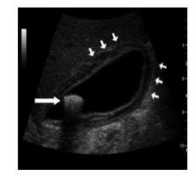
A Na seta maior nota-se imagem hipoecogênica com sombra acústica posterior caracterizando um cálculo na vesícula biliar.
B As setas menores evidenciam espessamento e edema da parede da vesícula biliar característica de processo inflamatório da colecistite.
C A dor em quadrante superior direito do abdome associado a anorexia, náuseas, vômito e febre são características da patologia indicada.
D Em 30% dos casos é possível palpar massa no hipocôndrio direito que normalmente representa um bloqueio do omento e alças intestinais em resposta ao processo inflamatório da vesícula.
E Pancreatite aguda, hepatite, e apendicite aguda são as principais doenças que devem ser incluídas no diagnóstico diferencial de colecistite aguda.
Questão 750 · Cardiologia · 4000004777Jose na, 56 anos, vem para consulta do HIPERDIA, na Unidade de Saúde da Família e é atendida por um médico residente. Ela está preocupada e relata estar usando as medicações "direitinho" como foram prescritas, que faz uso das medicações neste dia da consulta e a alimentação está adequada. Está em uso de hidroclorotiazida 50mg/dia, enalapril 40 mg/dia e anlodipino 10mg/dia. Sua PA no momento está 168 x 90 mmHg e a média das medidas ambulatoriais estão maiores que 150 x 90 mmHg. Em relação a este caso, é correto afirmar que
A é necessário aumentar a dose do enalapril para 80 mg/dia.
B é necessário aumentar a dose do anlodipino para 20 mg/dia.
C pode ser necessário encaminhar a paciente para o cardiologista.
D a PA de Josefina está elevada, pois a medicação de escolha, em monoterapia, seria um betabloqueador.
E a PA de Josefina está elevada, pois não há indicação de uso de enalapril associado à hidroclorotiazida ou ao anlodipino.
Questão 751 · Endocrinologia · 4000004718Em relação às desordens da glândula tireoide, é CORRETO afirmar que:
A O seguimento do paciente com hipotireoidismo primário se dá através da dosagem do TSH, não estando indicada a dosagem de T4L no acompanhamento do tratamento desse paciente.
B As dosagens de TSH,T3 e T4L são necessárias para o diagnóstico do hipotireoidismo.
C A doença mais comum da tireoide é o hipertireoidismo, acometendo mais as mulheres cima dos 60 anos.
D A causa mais comum de hipertireoidismo em indivíduos jovens é o bócio multinodular tóxico, que é a causa desse quadro em 60 a 80%.
E A anemia leve, a hiponatremia, a dislipidemia e as elevações da creatinofosfoquinase e da prolactina são alterações que podem estar associadas ao hipotireoidismo, sendo solicitação desses exames parte da avaliação de rotina do paciente.
Questão 752 · Tratamento cirúrgico curativo · Estadiamento · 4000004699O carcinoma hepatocelular é a neoplasia primária do fígado mais comum, responsável por pelo menos meio milhão de mortes anualmente no mundo. Com relação ao tratamento cirúrgico de ressecção hepática, marque a INCORRETA:
A A ressecção hepática não é bem tolerada em pacientes cirróticos (Child-Pugh C).
B No que se refere a pacientes com função hepática ruim, estes não devem ser operados.
C Constitui fator prognóstico negativo: tumores grandes (> 5 cm), multifocais, invasão vascular, alto grau de diferenciação celular.
D Constitui contraindicação para ressecção hepática a presença de metástases extra- hepáticas linfonodos regionais.
E Tempo de protrombina é um dos critérios da classificação Child-Pugh.
Questão 753 · Hipoglicemia · 4000004683Dona Maria chega a Unidade de Saúde da Família para sua consulta do HIPERDIA, um pouco sudoreica e quando a técnica de enfermagem faz a triagem sua glicemia capilar é de 60mg/dL. Sobre o quadro da paciente, é correto afirmar que
A o paciente diabético não deve ser incentivado a ter consigo fonte de carboidrato da absorção rápida para consumo imediato, como mel, a fim de não agravar o quadro.
B a queda da glicemia, geralmente, leva à sintomas como tontura, fraqueza, dor de cabeça, confusão, sudorese, taquicardia, apreensão e tremor.
C a hipoglicemia é a diminuição dos níveis glicêmicos - com ou sem sintomas - para valores abaixo de 80 mg/dL.
D os casos mais graves de hipoglicemia, geralmente, ocorrem à tarde, devido à deficiência de insulina.
E a maioria dos casos, como de Dona Maria, são graves e requerem tratamento hospitalar.
Questão 754 · Estadiamento TNM do Adenocarcinoma Gástrico · 4000004667O estômago é a sede de tumores malignos e menos frequentemente de neoplasias benignas. O adenocarcinoma é o tipo mais comum de neoplasia maligna do estômago. Uma vez estabelecido o diagnóstico, a ressecção cirúrgica se impõe. O estudo dos linfonodos dissecados e acometidos permite a classificação segundo a proposta da Union Internationale Contrele Cancer (UICC). Marque a CORRETA:
A Nx: sem linfonodos regionais acometidos.
B N0: linfonodos regionais não estão disponíveis para classificação.
C N3a: 1 a 6 linfonodos regionais não estão disponíveis para classificação.
D N2: 3 a 6 linfonodos regionais acometidos.
E N1: mais de 15 linfonodos acometidos.
Questão 755 · Classif icação de Sakita · 4000004642Com relação às úlceras gástricas e, mais especi camente, às fases de Sakita, assinale a alternativa CORRETA:
A Cicatriz (A1 e A2).
B Ativa (A1 e A2).
C Cicatrização (A1 e A2).
D Cicatriz (H1 e H2).
E Cicatrização (S1 e S2).
Questão 756 · Neoplasias Malignas do Esôf ago · 4000004615As neoplasias malignas do esôfago podem ser divididas em epiteliais e não-epiteliais. Dentre as lesões não epiteliais identificam-se, EXCETO:
A Sarcomas.
B Linfomas.
C Apudomas.
D Adenocarcinomas.
E Melanoma Primário.
Questão 757 · Endocrinologia · 4000004565Dra. Cláudia resolveu acompanhar o Índice de Massa Corporal (IMC) dos seus pacientes e criou uma planilha no Excel 2007. Sabe-se que o IMC é calculado dividindo-se o peso (em quilogramas) pela altura (em metros) ao quadrado. Para calcular o IMC, deve- se digitar na célula E3 da planilha apresentada na figura os seguintes caracteres (Conforme imagem)
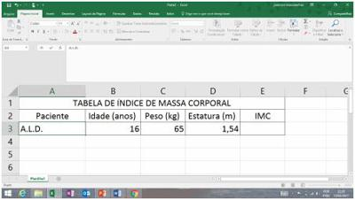
A =C3/(^D3)
B =C3/(D3*2)
C =C3/(2^D3)
D =C3/(D3^2)
E =C3*(D3/D3)
Questão 758 · Hanseníase · 4000004534Sobre hanseníase é CORRETO afirmar:
A Sugere-se avaliar anualmente, durante cinco anos, todos os contatos não doentes, quer sejam familiares ou sociais;
B Quando disponível a baciloscopia, o seu resultado negativo classifica obrigatoriamente o doente como PB.
C A classificação operacional utilizada de caso de hanseníase, visando definir o esquema de tratamento com poliquimioterapia, baseia-se no número de lesões cutâneas de acordo com os seguintes critérios: Paucibacilar (PB) - casos com até três lesões de pele; Multibacilar (MB) - casos com mais de três lesões de pele.
D Considera-se caso de hanseníase a pessoa que apresenta dois ou mais dos seguintes sinais cardinais: lesões e/ou áreas da pele com alteração da sensibilidade térmica dolorosa ou tátil; espessamento de nervo periférico, associado a alterações sensitivas e/ou motoras e/ou autonômicas; presença de bacilos M. leprae, confirmada na baciloscopia de esfregaço intradérmico ou na biópsia de pele.
Questão 759 · Ef eitos adversos · Prevenção · Tuberculose primária · 4000004531Sobre tuberculose é CORRETO afirrmar:
A A amamentação é contraindicada em pacientes que estejam em tratamento de tuberculose.
B A tuberculose na criança (menores de 10 anos) costuma ser bacilífera, assim como no adulto.
C Quando a reação adversa corresponde a uma reação de hipersensibilidade grave como plaquetopenia, anemia hemolítica, insuficiência renal etc, o medicamento suspeito pode ser reiniciado após a suspensão.
D Os casos bacilíferos são a principal fonte de disseminação da doença, a descoberta precoce por meio da busca ativa do sintomático respiratório é importante medida para interromper a cadeia de transmissão, desde que acompanhada pelo tratamento oportuno.
Questão 760 · Síndromes Dolorosas Crônicas · 4000004526"A área de atuação da Medicina de Família e Comunidade (MFC) abrange a assistência à saúde durante todo o ciclo da vida, desde o período antes do nascimento (preconcepção) até o post mortem (enlutados). Experiências bem consolidadas de Atenção Primária (AP) em países como Reino Unido e Canadá também pontuam a prática dos cuidados no nal de vida dentro da linha dos cuidados longitudinais". Entre os pacientes sob cuidados paliativos, uma das queixas mais frequentes é a dor. Sobre as recomendações do uso de analgésicos da Organização Mundial da Saúde (OMS), marque a CORRETA:
A Para garantir um alívio adequado da dor, os medicamentos analgésicos devem ser administrados somente conforme a necessidade e não em intervalos regulares.
B Escolher os medicamentos analgésicos conforme a intensidade da dor, essa abordagem é conhecida como "escada analgésica da dor".
C Deve-se privilegiar a forma injetável dos analgésicos, principalmente a via intramuscular por ter efeito mais rápido.
D A dose dos medicamentos precisa ser padronizada, não sendo necessário levar em conta como a pessoa sente a dor.
Questão 761 · Insônia · Neurologia · Quadro Clínico · 4000004525No mundo de hoje com tantas tensões e estresses (trânsito, violência, dinheiro, trabalho), temos em torno de 50% das consultas médicas apresentando queixa de insônia ou inquietações para realizações de atividades. Mulher de 50 anos chega com queixa de insônia há 2 semanas. Segundo ela, demora a "pegar no sono", desperta no meio da madrugada e não dorme mais. Qual conduta a ser tomada?
A Encaminhar para o neurologista.
B Somente prescrever benzodiazepínicos.
C Orientar o uso somente de fitoterápicos.
D Anamnese, exames complementares se necessários, orientações quanto a atividade física, higiene do sono, apoio psicológico e retorno para acompanhamento.
Questão 762 · Pneumologia · 4000004497Com relação ao mediastino, marque a alternativa CORRETA:
A Mediastino antero-posterior: seu limite anterior coincide com o limite posterior do compartimento posterior, e o plano da porção anterior da coluna vertebral é seu limite posterior.
B Mediastino posterior: compreende as goteiras paravertebrais. Encontra-se nesse local uma variedade de estruturas nervosas.
C Apenas 20% das massas mediastinais são encontradas no mediastino antero-superior.
D As neoplasias malignas representam 25-42% das massas mediastinais e a maioria dos pacientes são sintomáticos.
E Os tumores mais frequentes do mediastino são: neuroblastoma, ganglioneuroma, schwanoma, feocromacitoma, aneurismas de aorta e cistos do esôfago e cistos broncogênicos.
Questão 763 · Inf ectologia · 4000004380Com relação a antibioticoterapia marque a INCORRETA:
A O antibiótico profilático está indicado para prevenção de infecção de sítio cirúrgico, em cirurgias limpas, quando a infecção do sítio cirúrgico no pós-operatório aumenta a mortalidade, como nas neurocirurgias, cirurgias cardíacas, ortopédicas e vasculares (em que se utilizam próteses), e em cirurgias potencialmente contaminadas e infectadas.
B Basicamente, recomenda-se uma cefalosporina de primeira geração, como a cefazolina para praticamente todos os procedimentos, com exceção das intervenções sobre o íleo terminal, o cólon e o reto, em que se recomenda uma colonoscopia de segunda geração com cobertura para Gram- negativo e anaeróbios, como a cefoxitina.
C A antibioticoprofilaxia deve ser iniciada na indução anestésica e os níveis séricos devem ser mantidos elevados durante o ato cirúrgico, repetindo-se a cada duas horas (cefoxitina) ou quatro horas (cefazolina) conforme a vida média do antibiótico.
D Quanto mais prolongada a antibióticoprofilaxia, maior seleção de flora bacteriana resistente, mais efeitos colaterais (gastrintestinais e cutâneas) e maiores custos.
E A antibióticoprofilaxia, a partir de segunda metade do século XX, trouxe uma diminuição adicional nos índices de infecção do sitio cirúrgico de 10% (ao final do século XIX), para em torno de 3%.
Questão 764 · Sinais de alarme · 4000004357A partir de 2014, o Brasil passou a utilizar a nova classificação de dengue. Esta abordagem enfatiza que a dengue é uma doença única, dinâmica e sistêmica. Isso significa que a doença pode evoluir para remissão dos sintomas, ou pode agravar-se exigindo constante reavaliação e observação para que as intervenções sejam oportunas e que os óbitos não ocorram. A maioria dos sinais de alarme é resultante do aumento da permeabilidade vascular, a qual marca o inicio do deterioramento clínico do paciente e sua possível evolução para o choque por extravasamento de plasma. São sinais de alarme, EXCETO:
A Esplenomegalia maior do que 2 cm abaixo do rebordo costal.
B Dor abdominal intensa (referida ou à palpação) e contínua.
C Hipotensão postural e/ou lipotimia.
D Acúmulo de líquidos (ascite, derrame pleural, derrame pericárdico).
E Letargia e/ou irritabilidade.
Questão 765 · Malária complicada · 4000004348A malária é a doença parasitária mais importante dos seres humanos, causando centenas de milhões de casos e cerca de um milhão de mortes por ano. A doença é endêmica na maior parte dos trópicos, incluindo grande parte das Américas do Sul e Central, da África, do Oriente Médio, do subcontinente indiano, do Sudeste da Ásia e da Oceania. A transmissão, a morbidade e a mortalidade são máximas na África, onde a maioria das mortes por malária ocorre em crianças jovens. A malária também é comum nos viajantes de áreas não endêmicas para os trópicos. São manifestações associadas à malária grave por P. falciparum variadas disfunções do sistema orgânico, EXCETO.
A Lesão renal aguda em decorrência da necrose tubular aguda.
B Anormalidades neurológicas que progridem para alterações na consciência, convulsões repetidas e coma.
C Anormalidades de sangramento, inclusive coagulação intravascular disseminada.
D Infecções bacterianas secundárias, incluindo pneumonia e bacteremia por Salmonella.
E Edema pulmonar cardiogênico e síndrome do desconforto respiratório agudo.
Questão 766 · Clínica Médica · Hepatologia · Transplante Hepático e Hepatectomia · 4000004331O transplante de fígado é o procedimento de escolha para vários tipos de doenças hepáticas agudas ou crônicas, que levam à insuficiência hepática ou para pacientes com neoplasia hepática. Com relação ao transplante hepático, assinale a alternativa CORRETA:
A Um dos escores de gravidade usado para avaliar a doença hepática é o escore de Child-Pugh, que tem como parâmetros: encefalopatia hepática, ascite, bilirrubinas, TGO (transaminase glutâmico- oxalacética) e tempo de atividade de protrombina.
B A maioria dos pacientes com hepatite B crônica submetidos a transplante hepático terá o enxerto hepático reinfectado.
C Um dos critérios para o transplante hepático em hepatocarcinomas é nódulo único menor que 7 cm.
D O critério de MELD é utilizado para alocar o paciente na fila de transplante. As variáveis usadas para calcular esse critério são: albumina, creatinina e bilirrubina.
E São contraindicações absolutas para o transplante hepático: idade menor que 60 anos, menos de 6 meses de abstinência alcoólica e neoplasia extra hepática.
Questão 767 · Vetores · Diagnóstico · Quadro clínico · 4000004298O vírus Zika foi isolado pela primeira vez em primatas não humanos em Uganda. No Brasil, a transmissão autóctone deste vírus começou a ocorrer em abril de 2015. Em relação a este agravo, podemos afirmar:
A O diagnóstico laboratorial é feito pela detecção do RNA viral até 10 dias após o início dos sintomas.
B Se caracteriza como doença viral subaguda com tendência a cronificação, sendo transmitida por mosquitos como Aedes aegyptis.
C Clinicamente, apresenta exantema maculo-papular pruriginoso, hiperemia conjuntival, febre intermitente, artralgia, mialgia.
D Clinicamente, apresenta exantema maculo-papular pruriginoso, hiperemia conjuntival purulenta pruriginosa, febre artralgia intensa, hemorragias.
Questão 768 · Insuf iciência adrenal primária · Manif estações clínicas · 4000004256Homem de 43 anos vem com queixa de anorexia, náusea, perda de 8 kg e fadiga intensa há 2 anos. Refere tratamento para tuberculose pulmonar há 5 anos com esquema tríplice por 6 meses. Exame clínico: letárgico; PA = 90 x 50 mmHg; FC = 98 bpm; peso = 63 kg (IMC = 21 kg/m²) com hiperpigmentação cutânea e em mucosa oral. Exames laboratoriais: hemoglobina = 10,2 g/dl; sódio = 129 mEq/L; potássio = 5,7 mEq/L; creatinina = 0,9 mg/dl; ureia = 60 mg/dl; albumina = 3,1 g/dl. Qual a principal hipótese diagnóstica?
A Hipotireoidismo.
B Síndrome de Cushing.
C Insuficiência Adrenal.
D Tuberculose miliar.
E Paracoccidioidomicose.
Questão 769 · Clínica Médica · Diagnóstico · Hepatologia · 4000004221Paciente com 53 anos e antecedente de cirrose hepática secundaria ao álcool, com classificação quando estável Child B. Voltou a fazer ingestão de destilados há 1 semana e vem ao serviço com quadro de dor abdominal, anorexia, náuseas e sensação de mal-estar há 1 dia, além de sonolência maior que habitual. Ao exame: hipohidratado +/4+, ictérico ++/4+, acianótico, apping + PA: 110 x 68 mmHg; FC: 85 bpm abdome ascítico, com dor difusa á palpação, descompressão brusca negativa Exames laboratoriais: Hb = 9,8, com VCM de 104; leucócitos de 17.200 com 10% de bastonetes e 75% de segmentados. Ureia: 96; creatinina: 2,1; Na: 130 ; K: 4,8. Glicemia de 103 mg/dl. bilirubima total: 18 (bilirubina direta 16,1). Tempo de protrombina de 18 segundos (normal até 13 segundos). TGO: 296; TGP: 98; albumina: 2,9. Fosfatase alcalina: 108; gama glutamil transferase: 102. Qual a principal hipótese diagnóstica?
A Hepatite alcóolica aguda.
B Leptospirose.
C Síndrome hepatorrenal.
D Trombose de veias supra hepáticas.
E Hepatite viral aguda.
Questão 770 · Tomograf ia computadorizada TC e ressonância nuclear magnética RNM · 4000004203Paciente masculino, 70 anos, apresentando massa palpável em HD, endurecida e móvel com a respiração. O US de abdome revelou uma lesão sólida de 4,0 x 5,0 em segmento V. A tomogra a computadorizada de abdome confirma a presença da lesão, a qual apresenta wash-out na fase precoce. Qual a hipótese diagnóstica?
A Hepatocarcinoma.
B Hemangioma.
C Hiperplasia nodular focal.
D Nódulo de regeneração.
Questão 771 · Cardiologia · 4000004182Masculino de 68 anos, com antecedente pessoal de diabetes mellitus, hipertensão arterial sistêmica e infarto do miocárdio prévio, em uso de AAS, enalapril 10 mg ao dia, hidroclorotiazida 25 mg ao dia e metformina 850 mg duas vezes ao dia. Esse quadro evoluiu com dispneia e ortopneia há três dias, piorando progressivamente. Ao exame físico, o paciente apresentou: pressão arterial: 230 x 170 mmHg; frequência cardíaca: 120 bpm; frequência respiratória: 36 irpm; saturação arterial de oxigênio: 94%. RX de tórax evidenciou in ltrado pulmonar difuso, com predomínio na região peri-hilar, sugerindo quadro de congestão pulmonar. Qual a conduta mais adequada para o caso?
A Noradrenalina EV + hidratação EV + culturas + antibioticoterapia.
B Morfina EV + midazolam EV + intubação orotraqueal.
C Nitroprussiato EV + furosemida EV + morfina EV + ventilação não invasiva (CPAP).
D Hidrocortisona EV + terbutalina SC + inalação com fenoterol e ipratrópio.
E Dobutamina EV + metoprolol EV + morfina EV + sildenafila V O.
Questão 772 · Cef aleias Secundárias · 4000004157Mulher de 73 anos de idade procura o PS com queixa de cefaleia em região temporal direita há 3 semanas, em peso, sem fotofobia ou náuseas. A dor ocorre principalmente à noite. Refere também a sensação de parestesias na língua e na mandíbula, além de di culdade para pentear o cabelo quando está com dor. Há algumas horas, apresentou di culdade para enxergar. Não se observaram alterações do exame físico geral e neurológico, com exceção de presença de diminuição da acuidade visual à direita. Qual a principal hipótese diagnóstica?
A Isquemia em território de artéria cerebral posterior.
B Arterite temporal.
C Cefaleia em salva.
D Enxaqueca basilar.
E Hemorragia intraparenquimatosa.
Questão 773 · Tratamento Cirúrgico Da HDA · Endoscopia Digestiva Alta EDA · Classif icação de Forrest · 4000004149Paciente masculino, 60 anos, deu entrada no hospital com quadro de hematêmese de grande volume, há 1 hora. Nega comorbidades. Nega episódios prévios. Nega tabagismo e etilismo. Ao exame físico: regular estado geral, hipocorado, sudoreico; PA: 90 x 60 mmHg; FC: 140 bpm; saturação: 95% em ar ambiente. Abdome flácido e indolor. Com relação ao caso clínico, é CORRETO afirmar que:
A A conduta imediata para esse paciente é a realização de Endoscopia Digestiva Alta (EDA) de urgência, com o intuito de cessar o sangramento.
B Se durante a realização de EDA for visualizado úlcera duodenal com vaso visível, essa será classificada como Forrest IIB.
C Se durante a EDA for diagnosticado como úlcera gástrica sangrante, deve-se biopsiar para pesquisa de Helicobacter pylori e realizar EDA de controle na sexta semana para confirmar a cura e excluir malignidade.
D Se durante a EDA for visualizado varizes de esôfago, a preferência na técnica para cessar o sangramento é pela escleroterapia, já que esta é mais eficaz que a ligadura elástica.
E A cirurgia de urgência para o tratamento da hemorragia digestiva alta secundária à ulcera gástrica ocorre em aproximadamente 40% dos casos e apresenta uma elevada taxa de mortalidade.
Questão 774 · Crianças e adolescentes · 4000004126Entre os critérios laboratoriais para diagnóstico da Cetoacidose Diabética, aponte o único INCORRETO.
A O pH (venoso ou arterial) inferior a 7,3 e/ou bicarbonato de sódio inferior a 15 mEq/L.
B Glicemia superior a 200 mg/dL.
C Presença de cetonemia e/ou cetonúria.
D Potássio sérico menor que 3 mEq/L.
Questão 775 · Quadro clínico · Manejo inicial e pacotes · Choque séptico · 4000004118Feminino, 19 anos, está internada há 11 dias por fratura de tíbia esquerda, após acidente automobilístico. Em uso de cipro oxacino EV + clindamicina EV. Está evoluindo, há 2 dias, com febre e sudorese. Ao exame, apresenta-se sonolenta, extremidades sudoreicas, hipocorada e hipo-hidratada. Temperatura axilar de 38,4°C; pressão arterial = 76 x 42 mmHg; frequência cardíaca = 128 bpm; frequência respiratória = 32 irpm; saturação arterial de oxigênio = 96%. Ferida operatória com áreas de necrose e secreção piogênica em membro inferior esquerdo. Qual deve ser a conduta imediata?
A Encaminhar para o centro cirúrgico para a realização de amputação de membro inferior esquerdo.
B Desbridamento de ferida operatória.
C Realização de tomografia de crânio.
D Início de noradrenalina EV + desbridamento + encaminhamento à UTI.
E Hidratação EV + coleta de culturas + ampliação de esquema antimicrobiano + encaminhamento à UTI.
Questão 776 · Hipercalemia · 4000004084Um homem de 50 anos, em tratamento conservador para doença renal crônica, procura a emergência com queixas de fraqueza, parestesia e di culdade respiratória progressiva há 4 dias. O ECG apresentava, entre outras alterações, achatamento das ondas P e alargamento dos complexos QRS e ondas T apiculadas, clearance estimado de creatinina de 9 ml/minuto e bicarbonato de 9 mEq/L. A conduta inicial mais indicada é:
A Bicarbonato de sódio.
B Gluconato de cálcio.
C Glico-insulina.
D Diálise.
E Resina de Troca (Sorcal®).
Questão 777 · Doença de Graves · 4000004069A principal causa de hipertireoidismo é a doença de Graves, uma patologia que acomete a tireoide, em que há produção de anticorpos, que atacam a glândula simulando o hormônio TSH, um estimulador do funcionamento da tireóide. Esta é a causa de 3 em cada 4 casos de hipertireoidismo. No que diz respeito ao tratamento do hipertireoidismo, qual a informação CORRETA?
A Medicamentos antitireoidianos são drogas, que diminuem a quantidade de hormônio produzido pela tireoide, sendo a droga preferida a levotiroxina sódica.
B O tratamento com iodo radioativo cura o problema da tireoide, sem o risco de ter que tomar comprimidos de hormônio tireoidianos para o resto de sua vida a fim de manter níveis normais de hormônio.
C A remoção cirúrgica da tireoide (tireoidectomia) é uma solução permanente, mas não normalmente a preferida.
D Os betabloqueadores são drogas de escolha, pois além de diminuírem os sintomas, como por exemplo, os tremores, tratam a patologia.
E Todas as terapias possuem grandes riscos, devendo o hipertireoidismo ser tratado somente em casos muito sintomáticos.
Questão 778 · Síndrome nef rótica · Glomeruloesclerose f ocal e segmentar · As grandes síndromes glomerulares · 4000004045Paciente de 20 anos, sexo masculino, procurou atendimento médico na unidade básica de saúde relatando o surgimento de edema de MMII iniciado há três meses, simétrico, sem sinais ogísticos, que evoluiu de forma ascendente até o desenvolvimento de anasarca. Nega patologias pregressas e uso de medicações. Ao exame físico, estava em anasarca e com PA = 150 x 100 mmHg. Foram realizados os exames: ureia = 52 mg/dl; creatinina = 1,6 mg/dl; glicemia = 78 mg/dl; colesterol total = 320 mg/dl; HDL = 35 mg/dl; albumina = 2,1 g/dl. Sumário de urina: proteinúria ++++; glicosúria + e proteinúria de 6 g/24h. Qual o tipo de glomerulopatia mais frequente que se adequa ao quadro clínico acima?
A Membranosa.
B Membranoproliferativa.
C Secundária à amiloidose.
D Secundária à nefropatia diabética.
E Glomeruloesclerose focal segmentar.
Questão 779 · Neoplasias do Pâncreas · Cirurgia · 4000004025Paciente do sexo masculino, 68 anos, apresenta quadro de icterícia com padrão obstrutivo com evolução de 8 semanas. Ao exame físico apresenta-se ictérico +++/+4, emagrecido, massa ovalada de consistência cística, indolor, móvel com a respiração em HD. O US de abdome demonstra vesícula biliar muito distendida, sem cálculos, colédoco de 2 cm e com dilatação de vias biliares intra-hepáticas. Qual a hipótese diagnóstica?
A Coledocolitíase.
B Hepatite aguda.
C Tumor de Klatskin.
D Tumor peri-ampular.
Questão 780 · Classif icação de Mallampati · Classif icação de Mallampati · 4000004008ADAPTADA paciente pela avaliação da cavidade oral, em posição sentada, boca totalmente aberta e língua totalmente protraída. Conforme a classificação proposta, um paciente, em que se é possível observar palato mole, palato duro e a maior parte da úvula, pode ser classificado como:
A Classe 0.
B Classe I.
C Classe II.
D Classe III.
E Classe IV.
Questão 781 · Endocrinologia · 4000003978Adolescente de 14 anos, sexo feminino, procura o Ambulatório Araújo Lima com história de perda de peso, apetite voraz, tremor dos dedos, aceleração na velocidade do crescimento, chora com facilidade devido labilidade emocional, tem sono agitado, os trabalhos escolares estão prejudicados pelo de cit de atenção e pouco sono. Ao exame físico, apresenta exoftalmia leve, retração de pálpebras, acuidade visual diminuída, pele lisa ruborizada, suor excessivo, taquicardia e palpitações. O diagnóstico provável:
A Transtorno de conversão.
B Hipertireoidismo.
C Tumor cerebral.
D Bulimia.
Questão 782 · Tratamento · Tratamento · Tratamento · 4000003972Escolar com 4 anos queixa-se de dor abdominal há mais de 1 mês, às vezes, apresenta episódios de diarreia sem muco, pus ou sangue. Exame parasitológico com presença de Ascaris lumbricoides - ovos, Strongyloides - larvas e Giardia lambia - cisto. Respectivamente, qual o melhor esquema para tratamento?
A Albendazol - ivermectina - tinidazol.
B Tinidazol - ivermectina -albendazol.
C Levamizole -tinidazol -ivermectina.
D Ivermectina -levamizole -metronidazol.
Questão 783 · Inf ectologia · 4000003970A partir da década de 1940, os antibióticos foram introduzidos na prática clínica, e uma das principais indicações foi a prevenção das infecções pós-operatórias. Sua utilização levou ao aparecimento de cepas resistentes, além de causar efeitos indesejáveis e elevar os custos do tratamento médico. Assim, nos últimos 20 anos, investiu-se na padronização e racionalização do uso de antibióticos. Acerca da antibioticopro laxia no paciente cirúrgico, avalie os itens como verdadeiros ou falsos e indique a alternativa que corresponde a ordem CORRETA: I. Está indicada para prevenção de infecção de sítio cirúrgico em cirurgias limpas, quando a infecção do sítio cirúrgico no pós-operatório aumenta a morbidade, em cirurgias potencialmente contaminadas e contaminadas; II. Basicamente, recomenda-se uma cefalosporina de 1ª geração (como a cefazolina) para praticamente todos os procedimentos, exceto intervenções sobre íleo terminal, cólon e reto, em que se recomenda uma cefalosporina de 3ª geração (como o cefatriaxone); III. A pro laxia antibiótica perioperatória, geralmente, não deve ser continuada, além do dia da operação. Com o advento da cirurgia minimamente invasiva, o uso de antibióticos é menos justi cado, pelo risco de infecção de ferida ser extremamente baixo; IV. Ao término da cirurgia, a administração do antibiótico pro lático deve ser interrompida, uma vez que sua eficácia na prevenção de infecção de sítio cirúrgico é durante o ato operatório; V. Quanto mais prolongada a antibioticoprofilaxia, menor a chance de manter uma flora bacteriana resistente, porém mais efeitos colaterais (gastrointestinais e cutâneos) e maiores os custos.
A I - F; II - F; III - V; IV - F; V - V.
B I - V; II - V; III - F; IV - V; V - F.
C I - F; II - V; III - F; IV - V; V - V.
D I - V; II - F; III - V; IV - V; V - F.
E I - F; II - V; III - V; IV - F; V - V.
Revisar: possível letra faltando em enunciado
Questão 784 · Hematologia · 4000003968Pré-escolar de 3 anos, apresenta "palidez" nas palmas da mão, pregas palmares, leito ungueal e conjuntivas, irritabilidade, anorexia, hemoglobina = 7 g/dl, RDW (índice de anisocitose) 17%, VCM = 55 m3. A dieta da família é adequada, com boas condições socioeconômicas. Qual o exame abaixo mais indicado para a investigação da "palidez"?
A Hematoscopia.
B Parasitológico.
C Dosagem de ferritina.
D Pesquisa de sangue oculto nas fezes.
Questão 785 · Prevenção · Antibioticoprof ilaxia Cirúrgica · 4000003967Adolescente de 15 anos, portadora de cardiopatia cianótica, precisa de extração dentária de emergência. O antibiótico profilático para este procedimento é:
A Oxacilina.
B Eritromicina.
C Vancomicina.
D Amoxicilina.
Questão 786 · Nef rologia · 4000003961Lactente de 5 anos, sexo masculino, evolui há 3 dias com gastroenterite, febre, vômitos, dor abdominal, fezes sanguinolentas, oligúria e hemograma com anemia importante. O diagnóstico provável é:
A Síndrome hemolítica urêmica.
B Invaginação intestinal.
C Enterite necrotizante.
D Septicemia.
Questão 787 · Síndrome da apnéia e hipopnéia obstrutiva do sono SAHOS · 4000003956Paciente masculino, 63 anos, obeso, portador de hipertensão arterial sistêmica descontrolada e em uso de hidroclorotiazida, anlodipino e losartana em doses máximas. Relatando sonolência diurna. Ao exame: pletórico. Qual a principal hipótese diagnóstica?
A Hiperaldosteronismo.
B Feocromocitoma.
C Síndrome da apneia, hipopneia obstrutiva do sono.
D Hipertensão renovascular.
E Hipotireoidismo.
Questão 788 · HAS e Idosos · 4000003954Dentro da abordagem de hipertensão na situação especial que é a do idoso, NÃO podemos concordar que:
A Existem evidências robustas do benefício de reduzir a PA com o tratamento anti- hipertensivo em idosos com 80 anos ou mais. Essa vantagem está limitada a indivíduos com PAS = 160 mmHg, nos quais a PAS foi reduzida a valores < 150 mmHg.
B Em indivíduos idosos com menos de 80 anos, o tratamento anti-hipertensivo pode ser considerado para aqueles com PAS > 140 mmHg, para uma meta de PAS < 140 mmHg, desde que os indivíduos apresentem uma boa condição clínica e o tratamento seja bem tolerado.
C Os benefícios de diferentes regimes terapêuticos em pacientes com idade superior ou inferior a 65 anos confirmam que existem evidências de que diferentes classes possuam efetividades diferentes em pacientes mais jovens ou mais velhos.
D Um aspecto que merece destaque é a possibilidade de HA secundária no idoso, cujas causas mais frequentes são estenose de artérias renal, síndrome da apneia e hipopneia obstrutiva do sono (SAHOS), alterações de função tireoidiana e uso de medicamentos que podem elevar a PA.
Questão 789 · DUP Causada por Hpylori · Perf uração · DUP Causada por AntiInf lamatórios Não Esteróides AINEs · 4000003944Paciente do sexo masculino, 58 anos, iniciou quadro de dor em andar superior do abdome intensa, há 2 horas. Nega quadro semelhante anterior ou cirurgias prévias. Ao exame físico: abdome plano, em tábua. Considerando a hipótese de perfuração de úlcera péptica, quais as principais etiologias?
A H. pylori e Anti-Inflamatório Não Hormonal (AINH).
B Câncer gástrico e doença de Dieulafoy.
C Gastrite erosiva aguda e síndrome de Ménétrier.
D Gastrinoma e tumor estromal.
Questão 790 · Hipertensão arterial complicada · 4000003931Recentemente ocorreu um óbito em seu plantão com um paciente relativamente jovem, 57 anos de idade, que apresentava intensa dor torácica e dorsal, fora pressão extremamente elevada. Assim, sua curiosidade levou a, novamente, a revisar os conceitos de hipertensão, descobrindo que o seguinte conceito estava INCORRETO. Assinale-o.
A Crise hipertensiva, chamada de Emergência, é caracterizada por elevação aguda de PA associada à Lesão Órgão Alvo, que pode incluir acometimento neurológico, renal, ocular, hepático ou insuficiência miocárdica, manifesta como encefalopatia, convulsões, alterações visuais, achados anormais de eletrocardiograma ou ecocardiograma, insuficiência renal ou hepática.
B A Urgência é descrita como elevação da PA superior ao percentil 99 mais 5 mmHg (estágio 2), associada a sintomas menos graves, em paciente sob risco de evolução para LOA progressiva, sem evidência de acometimento recente.
C Na Urgência sugere-se manejo com medicamentos, por via oral, com redução de PA em 12 horas, sob monitorização.
D A redução muito rápida de PA na Urgência é contraindicada, pois leva à hipotensão, falência de mecanismos autorreguladores e possibilidade de isquemia cerebral e visceral.
Questão 791 · Nef rologia · 4000003905Paciente hipertenso e diabético (ambos mal controlados porque o paciente é rebelde ao tratamento) se recusa a se medicar diariamente, bem como não consegue mudar seu estilo de vida, que tem, como principais pontos, o tabagismo e a ingesta de grandes quantidades de sal nos churrascos. Durante última consulta, foi constatado alteração da creatinina bem como um USG, que demonstrava rins aparentemente com anatomia preservada. Acerca desse quadro, podemos considerar que:
A Na doença renal crônica, a redução pressórica não constitui a medida mais eficaz para a redução do risco CV.
B Após iniciada a doença renal crônica, o controle da HAS não promove mais a atenuação da progressão do dano renal, independentemente do anti-hipertensivo utilizado.
C O achado de albuminúria elevada é determinante de evolução desfavorável da doença renal, mas não causa aumento do risco Cardiovascular.
D Pacientes idosos com doença renovascular, DAC e com risco de hipotensão postural frequentemente requerem a individualização do tratamento anti-hipertensivo.
Questão 792 · Laboratório da hemostasia · 4000003887Masculino, 74 anos, refere quadro de sangramentos cutâneos espontâneos há cerca de 2 meses, chega ao PS com hematomas extensos em membros inferiores e superiores e hematúria significativa. Colheu exames que revelaram alteração de TTPA (tempo de tromboplastina parcial ativada) com relação R de 6,5 (normal até 1,20), não apresentava alterações em outros exames de coagulação como TP (tempo de protrombina) e TT (tempo de trombina), e a contagem de plaquetas era normal. Ao exame, evidenciava-se hematomas extensos em membro superior direito. Quais opções terapêuticas para o controle de urgência do sangrento?
A DDAVP e concentrado de fator VIII.
B Concentrado de Plaquetas.
C Pulsoterapia com metilprednisolona EV.
D Plasmaferese.
E Hidratação + Ceftriaxona EV.
Questão 793 · Af erição da pressão arterial em situações especiais · 4000003885Recentemente um antigo paciente, que você acompanha no ambulatório de clínica médica, evolui mal e teve indicado o início de Hemodiálise devido à lesão causada pela hipertensão. Ele o procurou bastante arrependido de não ter se medicado adequadamente no passado, mas pediu novamente a sua orientação, apesar de já ter sido transferido de especialidade. Em consideração aos anos de convívio, você o orientou ADEQUADAMENTE, conforme o contido em uma das alternativas a seguir. Assinale-o.
A A medição da PA desses pacientes deve ser feita preferencialmente fora das unidades de diálise, nos intervalos interdialíticos.
B As decisões terapêuticas baseadas na medição de PA residencial associam-se a um pior controle pressórico interdialítico avaliado pela MAPA de 24h em comparação à medição de PA pré-diálise.
C Quando utilizamos a mensuração dos níveis pressóricos pré-diálise, ocorre que a PA obtida dessa forma, além de apresentar grande variabilidade, está geralmente superestimada.
D Quando utilizamos a mensuração dos níveis pressóricos, ela é subestimada quando obtida após a diálise.
Questão 794 · Neuroanatomia Vascular · Trombólise Endovenosa · 4000003881Agora, são 10 horas da manhã, e chega ao pronto-socorro um paciente de 67 anos com quadro de de cit motor esquerdo de predomínio braquiofacial e afasia. Considerando-se que o quadro teve início há uma hora, aproximadamente, pode-se a rmar que a artéria acometida e a trombólise pode ser feita até, respectivamente:
A Cerebral média; 4 horas e 30 minutos.
B Cerebral anterior; 5 horas.
C Cerebral posterior; 3 horas.
D Oftálmica; 2 horas.
E Basilar; 2 horas e 30 minutos.
Questão 795 · Cardiologia · 4000003874O tratamento da Hipertensão tem, em última análise, a redução da morbimortalidade, sendo que os desfechos mostram benefícios do tratamento realizado com o uso de medicações, sendo, entretanto, de grande importância conhecer seus mecanismos de ação bem como efeitos colaterais descritos. Sobre isso, aponte a alternativa INCORRETA.
A Os Betabloqueadores promovem diminuição inicial do débito cardíaco e da secreção de renina, havendo readaptação dos barorreceptores e diminuição das catecolaminas nas sinapses nervosas.
B Bloqueadores dos receptores AT1 da angiotensina II, assim os BRA antagonizam a ação da angiotensina II por meio do bloqueio específico dos receptores AT1, responsáveis pelas ações vasoconstritoras, proliferativas e estimuladoras da liberação de aldosterona, próprias da angiotensina II.
C Alfa bloqueadores; os medicamentos dessa classe agem como antagonistas competitivos dos a1- receptores pós-sinápticos, levando à redução da RVP com grande diminuição no débito cardíaco.
D Vasodilatadores diretos; os medicamentos que representam essa classe são hidralazina e minoxidil. Atuam, diretamente, relaxando a musculatura lisa arterial, levando à redução da RVP.
Questão 796 · Anticoagulação oral · 4000003866Foi atendido, nesta tarde, um paciente com arritmia cardíaca. Sendo diagnosticado Fibrilação Atrial, foi indicado anticoagulação oral para pro laxia. Dentre as condutas a seguir, aponte aquela que é considerada INADEQUADA frente a esse caso.
A Devido à maior propensão de pacientes com FA de apresentarem risco inerente à própria arritmia de formar coágulos, independentemente de outros fatores.
B O sucesso do tratamento anticoagulante está muito mais influenciado pela educação do paciente e familiares e cuidadores, do que pela escolha do ACO em si.
C Os pacientes que estão em uso de antagonistas da vitamina K necessitam de controles laboratoriais periódicos, devendo ser feito o reajuste da dose de acordo com o valor estabelecido do RNI padrão, que é oscilar entre 2,0 e 3,0 a cada aferição, pelo menos diário ambulatoriamente.
D Em pacientes em uso dos novos anticoagulantes orais, antes de prescrever um NA CO ao paciente com FA, a função renal deve ser avaliada.
Questão 797 · Complicações da cetoacidose diabética · 4000003865Nos quadros de Cetoacidose Diabética (CAD), a maioria dos casos fatais está relacionada ao desenvolvimento de edema cerebral, que ainda é uma complicação observada em 0,5% a 2% dos pacientes com CAD, com mortalidade de 40 a 90%, e capaz de produzir sequelas entre 10 a 25% dos sobreviventes. Outras causas de mortalidade e morbidade frequentes são, EXCETO.
A Hipermagnesemia.
B Hipocalemia.
C Alterações do sistema nervoso central.
D Infecções.
Questão 798 · Homeostase da glicose · Patogênese e evolução da doença · 4000003856Durante sua última tarde de atendimento na UBS, onde você faz estágio, foram atendidos diversos pacientes diabéticos do tipo 2, que, por este motivo, foi escolhido como tema para o fechamento do dia de trabalho, estando presentes estudantes e residentes do segundo ano. Dentro dos conceitos discutidos no dia, você discordou de um dos tópicos por considerá-lo ERRADO, estando este contido em uma das opções a seguir. Assinale-o.
A Define-se resistência à insulina (RI) como uma perturbação das vias de sinalização mediadas pela insulina em que as concentrações normais do hormônio produzem uma resposta biológica subnormal.
B A resistência às ações hormonais é um fenômeno relativamente comum em endocrinologia.
C Um aumento da função beta celular pode compensar a RI, resultando em tolerância normal à glicose.
D Em resposta à elevação da glicemia, a secreção de insulina aumenta estimulando a captação de glicose, a síntese de glicogênio e o aumento da glicogenólise e da gliconeogênese.
Questão 799 · Laboratório da hemostasia · Hemof ilia · 4000003854Masculino, 74 anos, refere quadro de sangramentos cutâneos espontâneos há cerca de 2 meses, chega ao PS com hematomas extensos em membros inferiores e superiores e hematúria significativa. Colheu exames que revelaram alteração de TTPA (Tempo de Tromboplastina Parcial Ativada) com relação R de 6,5 (normal até 1,20), não apresentava alterações em outros exames de coagulação como TP (Tempo de Protrombina) e TT (Tempo de Trombina), e a contagem de plaquetas era normal. Ao exame, evidenciavam-se hematomas extensos em membro superior direito. Qual a principal hipótese diagnóstica para o caso acima?
A Doença de von Willebrand.
B Síndrome de Weil.
C Síndrome antifosfolípide.
D Leucemia mieloide aguda.
E Hemofilia adquirida.
Questão 800 · Manejo Clínico e Terapêutico · Métodos Diagnósticos e Terapêuticos · 4000003850Paciente sexo feminino, 60 anos, refere hematoquezia há 3 meses, sem outros comemorativos. Das opções abaixo, qual a medida inicial mais adequada?
A Solicitar colonoscopia.
B Solicitar retossigmoidoscopia.
C Dosagem de CEA (Antígeno Carcinoembrionário).
D Realizar toque retal.
Questão 801 · Hemoglobina glicada HbA1c · 4000003849Você foi questionado por seu paciente se ele estava adequadamente controlado em termos de glicemia porque, apesar de a glicemia dele estar adequada, outro exame que você havia solicitado indicava mal controle. Isso é ADEQUADAMENTE explicado por uma das seguintes alternativas. Assinale-a.
A Os testes de HbA1c revelam a glicemia mais elevada pregressa dos últimos 4 meses.
B Os testes de glicemia refletem o nível glicêmico no momento exato em que se alimentou por último.
C Os testes de HbA1c apontam o “saldo médio” de glicose.
D Os valores de correspondência entre os níveis de HbA1c e os respectivos níveis médios de glicemia nos últimos 2 meses.
Questão 802 · Fatores de risco para hipertensão arterial · 4000003836Paciente hipertenso, mal controlado por ser muito agitado e teimoso, procura seu consultório pela terceira vez a m de tentar obter o controle de sua hipertensão. Então durante a consulta, diversas argumentações a esse respeito são feitas. Entre elas, uma está atualmente INCORRETA, e está contida em uma das opções seguintes. Indique-a.
A O AVE é a manifestação mais comum da lesão vascular causada pela HA.
B A escolha terapêutica deve ser baseada na eficácia do medicamento e na tolerabilidade ao mesmo.
C A associação de Hipertensão e Diabetes aumenta em quatro o risco Cardiovascular, e tem aumentado a prevalência de HA.
D Cronicamente, a terapia anti-hipertensiva eficaz, mantendo PA menor que 130/80 mmHg, tem tido um papel decisivo na prevenção secundária de todos os tipos de AVE e AIT.
Questão 803 · Monitorização ambulatorial da pressão arterial MAPA · 4000003825Para auxiliar o diagnóstico de hipertensão, pode ser proposta a medição da PA fora do consultório. A PA fora do consultório pode ser obtida através da Medição Residencial da Pressão Arterial (MRPA), ou da MAPA de 24 horas. As medições da PA fora do consultório devem ser estimuladas, podendo ser realizadas por equipamento semiautomático do próprio paciente ou dos serviços de saúde. As principais vantagens da medição da PA fora do consultório estão listadas a seguir, com a EXCEÇÃO de uma delas. Aponte-a:
A Maior número de medidas obtidas.
B Refletem as atividades usuais dos examinandos.
C Menor engajamento dos pacientes com o diagnóstico e o seguimento.
D Abolição ou sensível redução do efeito de avental branco.
Questão 804 · Inf ectologia · 4000003815Sobre o diagnóstico e tratamento do derrame pleural parapneumônico complicado na criança, assinale a alternativa CORRETA.
A O tratamento cirúrgico é padrão ouro para o derrame pleural parapneumônico, complicado em crianças.
B Para firmar diagnóstico, é necessário somente exame físico e anamnese.
C Há indicação de avaliação ecográfica em todas as crianças após diagnóstico.
D O tipo de drenagem cirúrgica no manejo do derrame pleural parapneumônico complicado é único, independente do estágio em que se encontra.
Questão 805 · Hipertensão Arterial Sistêmica HAS · 4000003813Acerca das estratégias para a implementação de medidas de prevenção da Hipertensão Arterial, que englobam políticas públicas de saúde combinadas com ações das sociedades médicas e dos meios de comunicação, podemos considerar como NÃO efetivo o seguinte. Indique-o.
A O objetivo deve ser estimular o diagnóstico precoce, o tratamento contínuo, o controle da PA e de FR associados.
B Promover modificação do estilo de vida (MEV) e/ou uso regular de medicamentos.
C Consumo crônico e elevado de bebidas alcoólicas aumenta a PA de forma consistente.
D O impacto da dieta rica em sódio, estimada em pesquisas, indica que a maioria das pessoas entrevistadas reconhece conteúdo alto ou muito alto de sal nos alimentos.
Questão 806 · Epidemiologia da hipertensão arterial · 4000003806Dentre os fatores de risco para Hipertensão Arterial, diversos fatores relacionados a ela podem ser considerados como importantes. Desse modo, marque a opção INCORRETA.
A Não ocorre uma associação direta e linear entre envelhecimento e prevalência de Hipertensão.
B A prevalência de HA autorreferida foi estatisticamente diferente entre os sexos.
C Estudos realizados no Brasil, incluindo indivíduos idosos, mostraram 68% de prevalência de Hipertensão.
D Estudos brasileiros que avaliaram o impacto de polimorfismos genéticos na população de quilombolas não conseguiram identificar um padrão mais prevalente.
Questão 807 · Inf ectologia · 4000003800Quais as drogas que compõem a primeira fase do Esquema básico do tratamento da tuberculose pulmonar em adultos?
A Rifampicina + isoniazida.
B Rifampicina + Isoniazida + Pirazinamida + Etambutol.
C Rifampicina + Claritromicina + Etambutol.
D Rifampicina + Isoniazida + Estreptomicina.
E Rifampicina + Isoniazida + Etambutol.
Questão 808 · Epidemiologia da hipertensão arterial · 4000003794Em relação ao estudo de prevalência de Hipertensão Arterial no Brasil, aponte a alternativa que está em DESACORDO com as últimas diretrizes científicas.
A A prevalência de HA no Brasil varia de acordo com a população estudada e o método de avaliação.
B No Norte, foram apresentadas as maiores taxas.
C Estudos transversais e de coorte incluídos mostraram tendência à diminuição da prevalência nas últimas três décadas.
D O Sudeste foi a região com maior prevalência de HA autorreferida.
Questão 809 · Préhipertensão · Epidemiologia da hipertensão arterial · 4000003783Dentro dos conceitos de Medicina Preventiva existe um importante conceito de Pré- hipertensão que NÃO está adequadamente relacionado a uma das alternativas apresentadas a seguir. Aponte-a.
A Pré-hipertensão (PH) é uma condição caracterizada por PA sistólica (PAS) entre 121 e 139 e/ou PA diastólica (PAD) entre 81 e 89 mmHg.
B Cerca de um décimo dos eventos cardiovasculares (CV) atribuíveis à elevação de PA ocorrem em indivíduos com PH.
C A PH associa-se a maior risco de desenvolvimento de Hipertensão.
D A implicação clínica dessas evidências epidemiológicas é que a PA de indivíduos Pré- hipertensos deve ser monitorada mais de perto, pois uma significativa proporção deles irá desenvolver HA e suas complicações.
Questão 810 · Epidemiologia da hipertensão arterial · 4000003773Dentre as inter-relações entre Hipertensão Arterial e doença cardiovascular no Brasil, aponte a alternativa em que a afirmação esteja INCORRETA.
A Em 2013 ocorreram 1.138.670 óbitos, 339.672 dos quais (29,8%) decorrentes de DCV, a principal causa de morte no País.
B As taxas de mortalidade decorrentes de DCV em geral têm apresentado redução ao longo dos anos, com exceção das doenças hipertensivas (DH), que aumentou entre 2002 e 2009 e mostrou tendência à redução desde 2010.
C As taxas de mortalidade têm apresentado redução das doenças hipertensivas (DH), no período que compreendeu entre 2002 e 2009.
D Dentro de nossa realidade houve redução da IC congestiva.
Questão 811 · Técnica de af erição da pressão arterial · 4000003760Dentre as etapas para a realização da medição, NÃO pode ser considerada correta uma delas. Indique-a.
A Determinar a circunferência do braço no ponto médio entre acrômio e olecrano.
B Selecionar o manguito de tamanho adequado ao braço.
C Colocar o manguito, sem deixar folgas, 5 cm acima da fossa cubital.
D Centralizar o meio da parte compressiva do manguito sobre a artéria braquial.
Questão 812 · Epidemiologia da hipertensão arterial · 4000003745Dentro da necessidade de avaliação inicial de um paciente com Hipertensão Arterial Sistêmica (HAS) inclui a confirmação do diagnóstico, com correta metodologia de aferição da PA, INADEQUADAMENTE descrita em uma das alternativas a seguir. Assinale- a:
A Posicionamento: o paciente deve estar sentado, com pernas descruzadas e pés apoiados no chão.
B O braço deve estar na altura do coração, apoiado, com a palma da mão voltada para baixo e as roupas não devem garrotear o membro.
C Medir a PA na posição de pé, após 3 minutos.
D Posicionamento: o paciente deve estar sentado, dorso recostado na cadeira e relaxado.
Questão 813 · Epidemiologia da hipertensão arterial · 4000003736Quando analisamos o quadro brasileiro de Hipertensão Arterial e doença cardiovascular, podemos considerar como ADEQUADO o que consta em uma das opções. Indique-a.
A Hipertensão arterial atinge mais de 60% dos idosos.
B Junto com DM, suas complicações (cardíacas, renais e AVE) têm impacto pequeno na perda da produtividade do trabalho e da renda familiar.
C Hipertensão arterial no Brasil atinge 15% (36 milhões) de indivíduos adultos.
D Em 2013 ocorreram 1.138.670 óbitos, 339.672 dos quais (9,8%) decorrentes de DCV, a principal causa de morte no país.
Questão 814 · Epidemiologia da hipertensão arterial · 4000003729Hipertensão Arterial (HA) é condição clínica multifatorial caracterizada por diversas alterações. Sobre isso, indique a alternativa CORRETA.
A Raramente se associa a distúrbios metabólicos, alterações funcionais e/ou estruturais de órgãos- alvo, sendo agravada pela presença de outros fatores de risco (FR), como dislipidemia, obesidade abdominal, intolerância à glicose e diabetes melito (DM).
B Hipertensão arterial (HA) é condição clínica multifatorial caracterizada por elevação eventual dos níveis pressóricos = 140 e/ou 90 mmHg.
C Mantém associação dependente com eventos como morte súbita, acidente vascular encefálico (AVE) e infarto agudo do miocárdio (IAM).
D Mantém associação independente com eventos como insuficiência cardíaca (IC), doença arterial periférica (DAP) e doença renal crônica (DRC), fatal e não fatal.
Questão 815 · Técnica de af erição da pressão arterial · 4000003720A avaliação inicial de um paciente com Hipertensão Arterial Sistêmica (HAS) inclui a confirmação do diagnóstico, a suspeição e a identi cação de causa secundária, além da avaliação do risco CV, sendo DESNECESSÁRIO certificar-se de que o paciente não:
A Esteja com a bexiga cheia.
B Tenha praticado exercícios físicos há pelo menos 60 minutos.
C Tenha ingerido bebidas alcoólicas, café ou alimentos.
D Tenha fumado nos 60 minutos anteriores.
Questão 816 · Neurologia · 4000003714A Encefalopatia de Wernicke-Korsakov é a complicação esperada em:
A Descolamento prematuro de placenta.
B Placenta prévia.
C Hiperemese gravídica severa.
D Diabete gestacional.
Questão 817 · Doença Arterial Coronariana Estável DAC estável · 4000003709Dentro do diagnóstico de doença aterosclerótica coronariana subclínica, podemos considerar como VERDADEIRA a seguinte situação. Assinale-a.
A A identificação apenas de indivíduos sintomáticos, portadores de aterosclerose e, dessa forma, sob risco de eventos cardiovasculares agudos, como o infarto e morte, é fundamental para se instituírem medidas de tratamento e prevenção secundária.
B Diversos algoritmos têm sido criados com base em análises de regressão de estudos populacionais, por meio dos quais a identificação do risco global é substancialmente piorada pela criação de viés.
C A estimativa do risco de doença aterosclerótica não apresenta necessidade de ser avaliada pelo somatório do risco causado individualmente ou pelo sinergismo dos reconhecidos fatores de risco para doença cardiovascular.
D Diante da complexidade dessas interações cardiovasculares, a atribuição intuitiva do risco frequentemente resulta em subestimação ou superestimação dos casos de maior ou menor risco, respectivamente. Para contornar essa dificuldade, diversos algoritmos têm sido criados com base em análises de regressão de estudos populacionais, por meio dos quais a identificação do risco global é substancialmente aprimorada.
Questão 818 · Modos convencionais de Ventilação Mecânica · Ventilação Não Invasiva VNI · Conceitos · 4000003701Com relação à Pressão de Suporte, indique a alternativa INCORRETA.
A É uma modalidade de respiração espontânea.
B É o mesmo que CPAP.
C Funciona com pressão controlada.
D Funciona com fluxo decrescente.
Questão 819 · Pneumologia · Manejo da exacerbação · Manejo da exacerbação prontosocorro · 4000003686Sobre o tratamento da exacerbação da asma, é CORRETO afirmar que:
A A água destilada é um bom veículo nas nebulizações.
B O uso do brometo de ipratrópio não deve ser usado em nenhuma hipótese na crise, só utilizado em manutenção.
C O uso de B2-agonista inalatório e corticoides sistêmicos são os medicamentos de escolha para as exacerbações de asma.
D Existem evidências suficientes que sustentam que os corticoides inalatórios são mais indicados em relação aos orais ou parenterais nas exacerbações da asma.
E Quando indicados, os corticoides sistêmicos devem ser utilizados sempre por via parenteral.
Questão 820 · Modos convencionais de Ventilação Mecânica · Conceitos · 4000003684“A pressão de pico inspiratório re ete pressão _____________e a pressão de platô re ete a pressão ______________.” Marque a opção em que os termos preenchem, CORRETA e RESPECTIVAMENTE, as lacunas.
A De insuflação pulmonar / da via aérea.
B De via aérea / expiratória.
C De via aérea / intra-alveolar.
D Média granspleural / de abertura dos alvéolos.
Questão 821 · Quadro clínico · 4000003680Escolar de 8 anos, há 3 dias atendida com quadro sugestivo de dengue, retorna ao serviço de saúde. É diagnosticada com síndrome do choque da dengue. Os elementos clínicos laboratoriais que sugerem este diagnóstico são:
A Leucocitose, plaquetose, hemoconcentração e vômito.
B Leucocitose, plaquetopenia, anemia, náuseas e vômitos.
C Leucopenia, plaquetopenia, hepatomegalia dolorosa e hemodiluição.
D Leucopenia, plaquetopenia, hemoconcentração, hipotensão e dor abdominal.
Questão 822 · Máscara Laríngea · 4000003672Em relação à Máscara Laríngea (ML), assinale a alternativa CORRETA.
A Necessita de lâmina de laringoscópio reta para melhor visualização das estruturas, a fim de permitir um perfeito deslizamento da ML contra o palato.
B Não deve ser usada em crianças, pois não há como posicioná-la adequadamente, já que a laringe da criança é afunilada em relação à do adulto.
C Pode ser usada em situação de emergência quando “não intubo e não ventilo”.
D Nunca deve ser usada como recurso para intubação traqueal.
Questão 823 · Inf ectologia · 4000003659Qual deve ser o antibiótico de escolha para paciente com menos de 1 mês na presença de infecção por Estreptococo do grupo B?
A Vancomicina + cefepime.
B Ceftriaxone + ampicilina.
C Ampicilina + vancomicina.
D Ampicilina + gentamicina.
Questão 824 · Inf ectologia · 4000003653Em relação à meningite, assinale a alternativa INCORRETA:
A O estreptococo B e D, o bacilo gram negativo entérico e a Listeria monocytogenes são germes que comumente causam doenças em recém-nascidos.
B Crianças com menos de 5 anos têm mais alta taxa de infecção meningocócica, seguida de um segundo pico entre 15 e 24 anos.
C Crianças a partir de 1 ano de idade e adultos entre 50 e 60 anos são os mais vulneráveis.
D O período de incubação é de 2 a 10 dias.
Questão 825 · Litotripsia extracorpórea por onda de choque LEOC · Cirurgia · 4000003634Paciente de 74 anos possui cálculo radiopaco observado na radiogra a de abdome, de 1,9 cm em cálice superior de rim esquerdo. Relata dor lombar esporádica do mesmo lado, sem hidronefrose, sem febre ou outros sintomas. Das alternativas possíveis qual o melhor tratamento para esse caso?
A Nefrolitotripsia percutânea.
B Colocação de cateter duplo J.
C Ureterorrenolitotripsia.
D Litotripsia extra-corpórea por ondas de choque (LECO).
Questão 826 · Diagnóstico · Alf af etoproteína AFP · Diagnóstico Laboratorial · 4000003613Marcadores tumorais são substâncias próprias do organismo cujo aparecimento ou aumento indica a presença e/ou estado de disseminação de tumores. Referente aos marcadores tumorais do aparelho digestivo: I. O antígeno carcinoembrionário (CEA) é útil na identi cação de metástases colorretais e apresenta valor prognóstico no acompanhamento de pacientes.; II. Concentrações séricas elevadas de alfa-1-fetoproteína (AFP) estão presentes em 90-95% dos casos de carcinoma hepatocelular.; III A aplicação principal do antígeno carboidrato 19-9 (CA 19-9) acontece no diagnótico e no acompanhamento de pacientes com carcinoma de pâncreas, hepatobiliar e gástrico.; IV. Entre as principais causas benignas de aumento do CA 19-9 estão icterícia obstrutiva, colelitíase, hepatite crônica ativa e necrose hepática fulminante.; V. O CEA é utilizado para screening e possui importância no diagnóstico diferencial de tumores primários do aparelho digestivo.; São consideradas VERDADEIRAS as afirmações:
A I,II,III e IV.
B I,II,III e V.
C III, IV e V.
D I,III e V.
Questão 827 · Insuf iciência respiratória aguda Tipo II · Ventilação Não Invasiva VNI · 4000003610Assinale a alternativa que representa um critério para ventilação mecânica não invasiva em pacientes com doenças neuromusculares.
A Hipoventilação noturna com hipercapnia e hipóxia.
B Hipoventilação noturna com hipercapnia e relato de mais de três infecções respiratórias ao ano.
C Relato de três infecções respiratórias ao ano.
D Todas as alternativas estão corretas.
Questão 828 · Desmame da Ventilação Mecânica · Ventilação Não Invasiva VNI · 4000003602Em relação à falha de extubação, é CORRETO afirmar que:
A O uso de corticoide está indicado para todos os pacientes antes da extubação.
B A ventilação não invasiva pode ser utilizada em pacientes com maior risco de falha de extubação.
C 10% dos pacientes não necessitam de intubação após extubação não programada.
D A maior parte dos pacientes precisa ser reintubada após três dias de extubação.
Questão 829 · Inf ectologia · 4000003592Considere estas afirmações sobre a Meningoencefalite. I. A meningoencefalite é disseminada de pessoa para pessoa.; II. A meningoencefalite tem período de incubação de 4 a 6 dias.; III. A meningoencefalite é mais comum no inverno. Estão CORRETAS as afirmações contidas em:
A I e II, apenas.
B I e III, apenas.
C II e III, apenas.
D I, II e III.
Questão 830 · Exames de imagem · Pneumologia · 4000003591Dentre as indicações de radiografia de tórax na exacerbação da Asma, marque a alternativa INCORRETA:
A História de exacerbação há 1 mês.
B Suspeita de pneumonia.
C Sinais de Insuficiência cardíaca.
D Na asma grave.
E Nos quadros de tosse persistente.
Questão 831 · Manif estações Clínicas · 4000003590Em relação às doenças inflamatórias intestinais, é CORRETO afirmar que:
A A colite ulcerativa é uma doença de acometimento transmural do intestino, cursando, portanto, com manifestações de obstrução intestinal.
B O acometimento da mucosa na doença de Crohn é contínuo, enquanto na colite ulcerativa há áreas de mucosa doente intercaladas com mucosa normal.
C O achado de reto com mucosa normal à colonoscopia, praticamente, exclui do diagnóstico de colite ulcerativa.
D A evolução para carcinoma colorretal é mais comum na doença de Crohn que na colite ulcerativa.
Questão 832 · Insulinoterapia no tratamento do diabetes mellitus tipo 1 · 4000003559JBS, 12 anos de idade, apresenta diabetes há 5 anos. Faz uso de: insulina glargina 16 UI pela manhã e insulina lispro 4 UI antes do café, 4 UI antes do almoço e 6 ui antes do jantar. Nega episódios de hipoglicemia. Traz o seguinte esquema de dextro, aferido nos últimos 3 dias: - Glicemia de jejum: 108,116,112 mg/dL.; - 2 horas pós-café: 170, 130, 133 mg/dL.; - Antes do almoço: 110, 120, 122 mg/dL.; -2 horas após o almoço: 208, 220, 201 mg/dL.; -Antes do jantar: 140, 120, 122 mg/dL.; - 2 horas após o jantar: 242, 238, 231 mg/dL.; Sobre o caso, assinale a alternativa correta:
A A paciente faz uso de análogos de insulina. A insulina glargina é uma insulina de ação prolongada e a lispro é uma insulina de ação ultrarrápida. A paciente apresenta descontrole das glicemias pós- prandiais, e deve aumentar a dose da insulina glargina.
B A paciente provavelmente apresenta a dosagem dos Anticorpos anti-GAD ou anti- ilhota negativo.
C A paciente apresenta níveis de glicemia basais (jejum) adequados, com descontrole das glicemias pós-prandiais.Deve aumentar a dose da lispro pré café e lispro pré almoço.
D A vantagem da insulina glargina sobre a insulina NPH está principalmente na meia- vida da insulina glargina, que, por ser maior em relação a NPH, faz com que possa ser aplicada uma vez ao dia. A conduta mais adequada seria manter a dose da Insulina glargina e aumentar as doses de insulina lispro antes do almoço e antes do jantar.
Questão 833 · Anemia f erropriva na inf ância · Metabolismo do f erro · 4000003537Dadas as afirmativas sobre a absorção de ferro, I - O efeito negativo dos fitatos não sofre interferência da dose.; II - A absorção do ferro heme ocorre da mesma forma do ferro inorgânico.; III - O ácido ascórbico e o ácido cítrico melhoram a biodisponibilidade do ferro, reduzindo de ferroso para férrico.; IV - São fatores inibidores de sua absorção: os polifenóis, fitatos, cálcio, caseína e proteínas de legumes.; V - Em refeições ricas em tatos, recomenda-se a ingestão concomitante de ácido ascórbico, que compensaria o efeito negativo dos fitatos, na proporção 2:1 (ácido ascórbico: ferro).; Verifica-se que estão corretas apenas:
A I e IV.
B III e IV.
C IV e V.
D I, II e III.
E I, II e V.
Questão 834 · Endocrinologia · 4000003524Dos hormônios apresentados a seguir, aponte aquele que tem efeito termogênico, podendo elevar a temperatura corporal.
A Estrogênio.
B Estriol.
C Estrona.
D Progesterona.
Questão 835 · Tratamento da TVFV · 4000003515Paciente 67 anos, com 100 kg, hipertenso e diabético, adentra a emergência do pronto-socorro com dor torácica irradiando para mandíbula há 1 hora. Após o atendimento inicial, paciente apresentou parada cardiorrespiratória em brilação ventricular identi cada pelo monitor cardíaco. A conduta mais adequada será utilizar:
A O desfibrilador monofásico com carga de 200 J.
B 100 mg de lidocaína endovenosa.
C O desfibrilador bifásico com carga de 200 J.
D Amiodarona 300 mg endovenosa.
Questão 836 · Tireotoxicose · Doença de Graves · Diagnóstico etiológico da tireotoxicose · 4000003499Para confirmar a principal causa de hipertireoidismo primário com captação aumentada e difusa na tireóide de Iodo radioativo na cintilografia, devemos solicitar:
A TSH.
B Anti TPO.
C Anti microssomal.
D TRAB.
Questão 837 · Endocrinologia · 4000003489A utilização de drogas contendo Iodo durante a gravidez pode causar, EXCETO,
A Cretinismo.
B Leucemia.
C Retardo mental.
D Lábio leporino/fenda palatal.
Questão 838 · Dermatologia · 4000003483Laura, sete meses de vida, foi levada à consulta com pediatra, por apresentar lesões papulares, em grupos de três, com disposição linear no tronco, próxima ao elástico da roupa. Qual o diagnóstico mais provável e a melhor conduta?
A Trata-se de prurigo estrófulo, devido a agente voador, como mosquitos ou pernilongos. Evitar a picada é o tratamento mais eficaz. Pode ser usado repelente cujo princípio ativo é a icaridina, bem como corticoide tópico, além de anti-histamínicos e loções com cânfora ou calamina.
B Trata-se de prurigo estrófulo, devido a agente andador, como pulga ou percevejo. Evitar a picada é o tratamento mais eficaz. Pode ser usado repelente cujo princípio ativo é a icaridina, bem como corticoide tópico, além de anti-histamínicos e loções com cânfora ou calamina.
C Trata-se de urticária papular, devido a agente voador, como mosquitos ou pernilongos. Evitar a picada é o tratamento mais eficaz. Pode ser usado repelente cujo princípio ativo é a icaridina, bem como corticoide tópico, além de anti-histamínicos e loções com cânfora ou calamina.
D Trata-se de picada de inseto, devido a agente andador, como pulga ou percevejo. Evitar a picada é o tratamento mais eficaz. Pode ser usado repelente cujo princípio ativo é o DEET(N,N- dimetil- met-toluamida), bem como corticoide tópico, além de anti- histamínicos e loções com cânfora ou calamina.
E Trata-se de urticária papular devido a agente andador, como pulga ou percevejo. Evitar a picada é o tratamento mais eficaz. Pode ser usado repelente cujo princípio ativo é a permetrina a 0,5%, diretamente sobre a pele, bem como corticoide tópico, além de anti- histamínicos e loções com cânfora ou calamina.
Questão 839 · Tratamento geral da crise hipertensiva · 4000003479Na terapêutica das emergências hipertensivas, pode se afirmar que:
A O captopril sublingual é a opção terapêutica para o tratamento ambulatorial.
B O nitroprussiato de sódio deve ser utilizado em pacientes com suspeita de isquemia miocárdica para a rápida redução do consumo de oxigênio.
C A furosemida está indicada no tratamento da eclâmpsia para controle de volemia.
D O betabloqueador venoso está indicado na suspeita de dissecção aórtica em conjunto com o nitroprussiato de sódio.
Questão 840 · Gastroenterologia · 4000003445Em relação ao Adenocarcinoma de Pâncreas, assinale a alternativa INCORRETA.
A Nos EUA, cerca de 80% dos casos novos de câncer de pâncreas apresentam doença avançada não suscetível ao tratamento cirúrgico. Isso torna a cirurgia paliativa tão importante quanto o tratamento curativo.
B O controle da dor pode ser feito com narcóticos orais e por meio de neurólise esplâncnica que pode ser realizada durante o ato cirúrgico através da injeção de álcool absoluto bilateralmente ao plexo celíaco.
C A sobrevida geral em cinco anos dos pacientes com câncer de pâncreas submetidos à ressecção pancreática de doença não metastática é de cerca de 5%.
D A sobrevivência média dos pacientes que são submetidos à ressecção pancreática com doença não metastática é de 11 a 20 meses.
Questão 841 · Divisão Anatômica e Funcional do Estômago · Cirurgia · 4000003416Sobre a vascularização do estômago, indique a alternativa INCORRETA.
A Os ramos da A. Esplênicas são A. Gastro-omental esquerda e A. Hepática.
B A. Gastro-omental esquerda pode originar-se da A. Esplênica ou de seus ramos.
C A. Gástrica direita em geral se origina no tronco da A. Hepática própria.
D A. Gastro-omental direita origina-se na bifurcação da A. Gastroduodenal, que por sua vez é ramo da A. Hepática Comum.
Questão 842 · Quimioprof ilaxia primária · Tuberculose Latente · 4000003414No manuseio de neonato de mãe com tuberculose, é correto afirmar:
A Em casos de mães com qualquer tuberculose cuja infectividade não pode ser afastada e sem condições de afastamento dos recém-nascidos, deve ser mantida a amamentação com máscara, iniciado ou continuado tratamento materno, iniciado isoniazida por três meses para o neonato e, em seguida, realizado teste tuberculínico.
B Em casos de mães com tuberculose extrapulmonar ou pulmonar não tratada (considerada bacilífera), devem ser mantidos os neonatos junto à mãe e, somente após o teste tuberculínico, iniciado isoniazida.
C Em casos de mães com diagnóstico recente de tuberculose, com doença mínima não tratada ou tratamento de menos de duas semanas, mas não bacilífera, não há risco para o recém-nascido.
D Em casos de mãe com tratamento completo e adequado, pela remota possibilidade de haver exacerbação na gestação, não deve ser realizado teste tuberculínico no neonato.
E Em casos de mães apenas com teste tuberculínico positivo, Rx normal, não bacilífera e sem doença ativa, deverá ser realizado teste tuberculínico também no neonato.
Questão 843 · Hiperparatireoidismo primário · 4000003404Sobre o Hiperparatiroidismo Primário, marque a alternativa INCORRETA.
A Dentre as manifestações clínicas do Hiperparatiroidismo Primário, podemos destacar: dor óssea, polidpsia, anorexia, depressão, coma.
B Indicações cirúrgicas para Hiperparatiroidismo Primário incluem indivíduos menores que 50 anos, avaliação densitométrica com perda óssea superior a 2,5 desvios-padrão em relação ao pico de massa óssea, redução do clearance de creatinina em 30%, excreção urinária de cálcio superior a 400 mg, nível de calcemia total de 1,0 mg/dL acima do limite superior da normalidade.
C O tratamento cirúrgico é a única terapêutica definitiva para o hiperparatiroidismo primário, embora haja alguma perspectiva de tratamento clínico no futuro com agonistas do receptor extracelular de cálcio.
D Em geral, o doente com Hiperparatiroidismo Primário que vai ser submetido a tratamento cirúrgico não requer preparo pré-operatório específico. Se os níveis de cálcio estiveram maior que 14mg/dl, podem requerer preparo com hiper-hidratação, diuréticos e Fósforo.
Questão 844 · Endocrinologia · 4000003397Em relação aos carcinomas da tiróide, aponte a alternativa em que a afirmação esteja CORRETA.
A O Carcinoma Papilífero é o mais comum, é mais frequente em mulheres entre terceira e quarta década de vida, é pouco agressivo, e em crianças e adolescentes não apresenta alto índice de metástase.
B O Carcinoma Anaplásico é o mais raro, incide mais em idosos, e tem boa resposta à quimioterapia e radioterapia.
C O Carcinoma Medular pode estar associado à Neoplasia Endócrina Múltipla 2a, onde a doença é bilateral, e pode ser acompanhada por hiperparatiroidismo, feocromocitoma ou hiperplasia medular adrenal.
D Na associação NEM 2b, a doença pode ser familiar ou esporádica, há comprometimento glandular bilateral eganglioneuromas mucosos. Tem melhor prognóstico quando comparado ao NEM 2a.
Questão 845 · Metabolismo acidobásico · Hipovolêmicas · Alcalose metabólica · 4000003359Sobre os distúrbios hidroeletrolíticos e acidobásicos em cirurgia, podemos afirmar que:
A As causas de hipernatremia são: perda exagerada de água nos queimados, sudorese excessiva ou estados febris, TCE com diabetes insipidus de origem central, insuficiência adrenal.
B As alterações eletrocardiográficas de hipercalemia são: onda U, achatamento de onda T, depressão do segmento ST, arritmias.
C A principal causa de alcalose metabólica nos pacientes cirúrgicos é a hipovolemia, pois os rins, ao tentarem reabsorver sódio, reabsorvem também bicarbonato.
D Na cetoacidose, insuficiência renal, intoxicações exógenas e acidose lática, o ânion-gap encontra- se diminuído.
Questão 846 · Tratamento · Avaliação laboratorial do f erro · Diagnóstico · 4000003324Kauê, dezesseis meses de vida, foi submetido a exames complementares: dosagem de ferritina: 8 mcg/dl; ferro sérico: 25 mcg/dl; hemoglobina: 9 g/dl. Nesse caso, qual o diagnóstico mais provável e a melhor conduta?
A Não tem anemia ferropriva e também não há indicação de iniciar profilaxia com ferro.
B Tem anemia ferropriva e já deve iniciar tratamento com 2 mg de ferro elementar/kg/dia.
C Tem anemia ferropriva e já deve iniciar tratamento com 5 mg de ferro elementar/kg/dia.
D Não tem anemia ferropriva, porém já se deve iniciar profilaxia com 2 mg de ferro elementar/kg/dia até os dois anos de vida.
E Não tem anemia ferropriva, porém já se deve iniciar profilaxia com 1 mg de ferro elementar/kg/dia até os dois anos de vida.
Questão 847 · Tratamento geral da crise hipertensiva · 4000003323Tratamento da emergência hipertensiva em situações especiais Sobre as urgências hipertensivas e complicações na hipertensão arterial, pode-se afirmar que: I - A causa da morte mais frequente em hipertensos não tratados é o infarto agudo do miocárdio. II - O metoprolol é o agente anti-hipertensivo parenteral mais indicado na maioria das emergências hipertensivas. III - No evento isquêmico agudo cerebral, não se deve administrar anti-hipertensivos, a não ser em condições específicas ou níveis de pressão extremamente elevados (PAS > 220mmHg ou PAD > 120 mmHg).
A Apenas a I está correta.
B Apenas a II está correta.
C Apenas a III está correta.
D I e III estão corretas.
Questão 848 · Dermatologia · 4000003311Jéssica, três meses de vida, foi levada para avaliação pediátrica devido ao surgimento de lesões com intenso eritema, pápulas e vesículas satélites e áreas de exulceração e descamação em região perineal. Não foram notadas lesões na cavidade oral nem outras anormalidades no exame físico. Qual a melhor conduta nesse caso?
A Realizar biópsia para avaliação da possibilidade de Histiocitose das células de Langerhans.
B Trocar as fraldas com maior frequência que a habitual, limpar suavemente e iniciar o uso de betametasona creme.
C Trocar as fraldas com maior frequência que a habitual, limpar suavemente, expor a pele ao ar e aplicar cremes de barreira.
D Trocar as fraldas com maior frequência que a habitual, limpar suavemente e iniciar o uso definistatina ou miconazol creme.
E Trocar as fraldas com maior frequência que a habitual, limpar suavemente e iniciar o uso de fluconazol solução oral, como primeira escolha.
Questão 849 · Diuréticos · 4000003306Com relação aos diuréticos usados na insuficiência cardiaca, pode-se afirmar que a:
A Clortalidona reduz o sódio e potássio urinários.
B Furosemida pode causar alcalose hipoclorêmica.
C Amilorida reduz a concentração sérica de magnésio.
D Hidroclorotiazida não interfere no nível sérico de glicose.
Questão 850 · Endocrinologia · 4000003283Em relação ao diabete mellitus gestacional, marque a opção INCORRETA.
A A intolerância aos carboidratos é diagnosticada pela primeira vez durante a gestação.
B Valores acima de 105 mg/dL, em duas aferições, também fecham o diagnóstico de diabetes mellitus franco (pré-gestacional).
C Muitas vezes representa o aparecimento do diabetes mellitus tipo 2 durante a gravidez.
D No início do pré-natal, glicemia de jejum em valores iguais ou maiores que 126 mg/dL diagnostica o diabetes pré-gestacional.
Questão 851 · Nef rologia · 4000003270A prevenção de recidiva, no caso da infecção do trato urinário em crianças, visa evitar episódios posteriores da doença, desconforto e estresse familiar. Em qual dos seguintes quadros clínicos essa profilaxia deve ser indicada?
A Somente após o término da investigação ultrassonográfica do trato urinário ser concluída, no caso da presença de achados ultrassonográficos no pré-natal sugestivos de uropatias.
B Após confirmação do segundo episódio de infecção urinária por urocultura.
C Apenas na presença de refluxo vesicoureteral de grau 4.
D Na presença de trato urinário gravemente dilatado.
E Após correção cirúrgica de uropatia obstrutiva.
Questão 852 · Interpretação dos marcadores sorológicos · AntiHCV · 4000003263Paciente assintomática traz os seguintes resultados sorológicos: Anti-HAV IgG reagente, Anti-HAV IgM não reagente, HBsAg não reagente, Anti-HBc total reagente, Anti-HBc IgM não reagente, Anti-HBs reagente, Anti-HCV reagente. Com relação às hepatites virais pode-se a rmar que é possível que essa paciente seja portadora de:
A Hepatite A.
B Hepatite B.
C Hepatite C.
D Hepatite B e Hepatite C.
Questão 853 · Dermatite de f raldas · 4000003259Dadas as afirmativas quanto ao diagnóstico da dermatite das fraldas, I - Precisa ser realizado diagnóstico diferencial com infecções por cândida, dermatite seborreica e histiocitose das células de Langerhans. II - Na forma moderada, há eritema intenso e pápulas e acomete área em formato de W na região das fraldas, sem eritema nas pregas. III - Na forma grave, há eritema intenso, pápula, vesículas, áreas de exulceração e descamação e as pregas estão poupadas. Verifica-se que está(ão) correta(s)
A I, apenas.
B II, apenas.
C III, apenas.
D I e II, apenas.
E I, II e III.
Questão 854 · Exames complementares · Diagnóstico · Lúpus Eritematoso Sistêmico LES · 4000003222Advogada de 26 anos, refere que há 4 meses iniciou cansaço, mal estar geral e queda de cabelo; atribuía todos os sintomas ao estresse do trabalho. Porém, há duas semanas iniciou dor nos punhos, interfalangeanas proximais e joelhos, acompanhada de rigidez matinal de 1 hora e urina "espumosa". História familiar: irmão faleceu por lúpus há 8 anos. História prévia: G2PN0C0A2 espontâneos. Ao exame: REG; úlcera região palato (indolor); queda de mais de 3 os de cabelo à tração; AR: MV reduzido em bases; AC: BRNF 2T sem sopros; artrite visível em punhos e joelhos; FC 102 bpm; FR 20 irpm; PA = 160 x 100mmHg. Exames: Hb: 8; Ht 25%; VCM: 110; Leuco: 6.300 (linf 10% seg 86%); Plaquetas: 143.000; creatinina: 1,5 mg/dl; EAS: proteínas +++; hemácias ++; cilindros +; FAN: negativo; C3: 50 (80-100); C4: 7 (20-40); Coombs direto positivo; Fator reumatoide: positivo. Neste caso, NÃO podemos afirmar que:
A O anti CCP se mostra útil neste caso para auxiliar no diagnóstico diferencial entre artrite reumatoide e lúpus, já que o padrão de dor articular fala mais a favor de artrite reumatoide.
B O exame do FAN por ser negativo não confere um prognóstico melhor para a doença.
C A dosagem dos anticorpos da Síndrome do anticorpo antifosfolípide não se faz necessária, pois o lúpus não afeta a fertilidade, mas aumenta o risco de perda fetal, mesmo na ausência de SAAF.
D A anemia macricítica (VCM: 110), no caso acima, é muito sugestiva de anemia hemolítica autoimune, mas existem descritas outras causas de anemia macrocítica como deficiência de ácido fólico.
Questão 855 · Diagnóstico · Pneumoconiose devida à Poeira de Sílica Silicose · 4000002973João foi atendido na UBS para consulta de rotina e avaliação de saúde. Lembrando de suas aulas da faculdade, o acadêmico perguntou sobre sua atividade ocupacional. Recebeu o relato de que João havia trabalhado em uma indústria de vidro durante dez anos. Procedeu à interconsulta com o preceptor e foi decidido solicitar um raio x do tórax para o paciente, que mostrou opacidades micronodulares, predominando em ambos os campos pulmonares. Com base no relato, qual a hipótese diagnóstica inicial?
A Silicose.
B Asbestose.
C Tuberculose.
D Fibrose pulmonar pelo calor.
E Pneumoconiose por poeira mista.
Questão 856 · Linf omas Gástricos · 4000002951Considerando o linfoma MALT gástrico de baixo grau, qual o tratamento de escolha como primeira linha?
A Radioterapia.
B Quimioterapia.
C Quimioradioterapia.
D Erradicação do Helicobacter pylori.
Questão 857 · Manometria Esof ágica · Indicações para o Tratamento Cirúrgico · 4000002947pHmetria de 24 horas e Impedância Paciente do sexo feminino, 45 anos, sobrepeso, vem ao consultório encaminhada pelo otorrinolaringologista, queixando pirose e regurgitação ácida após alimentação rica em gordura e ácidos. Tais sintomas ocorrem quase que diariamente há cerca de 2 anos e pioraram após gravidez e ganho de peso. Refere ainda dor torácica esporádica, retroesternal em queimação, não relacionada a exercícios físicos, episódios ocasionais de disfonia e sensação de globo faríngeo. Nega disfasia e hematêmese. Seu exame físico não tem alterações. Traz consigo uma endoscopia digestiva alta que evidencia hérnia hiatal de 2 cm e ausência de lesões esofagianas, tais como ulcerações ou esofagite. Assinale a alternativa INCORRETA:
A A ausência de lesões esofagianas à endoscopia não exclui a hipótese de Doença do Refluxo Gastroesofágico (DRGE), havendo necessidade de prosseguir com a investigação diagnóstica.
B A esofagomanometria não fecha diagnóstico de DRGE, porém pode evidenciar situações, tais como a hipotonia do esfíncter esofagiano inferior, que são sugestivas deste diagnóstico.
C A demonstração de refluxo gastroesofágico através do exame contrastado do esôfago tem maior sensibilidade e especificidade no diagnóstico de DRGE que a pHmetria esofagiana.
D Caso esta paciente não se adapte ao tratamento clínico com uso crônico de inibidores da bomba de prótons, a indicação de fundoplicatura gástrica com hiatoplastia via laparoscópica deve ser considerada.
Questão 858 · Diagnóstico · Adenocarcinoma Gástrico · Apresentação Clínica · 4000002945Define-se como carcinoma gástrico precoce:
A Limitado à mucosa e submucosa com linfonodo não contaminado.
B Limitado somente à mucosa e sem envolvimento de linfonodo.
C Limitado à mucosa e submucosa, independentemente do estado do linfonodo.
D Limitado à parede gástrica, sem invadir a serosa ou órgãos vizinhos.
Questão 859 · Tratamento Cirúrgico Da HDA · 4000002939São indicações cirúrgica de úlcera péptica hemorrágica, EXCETO:
A Quando a úlcera está associada ao Helicobacter pylori.
B Ausência de disponibilidade de sangue para transfusão.
C Hemorragia maciça não responsiva a tratamento endoscópico.
D Necessidade de transfusão de mais de 4 a 6 unidades de concentrado de hemácias, apesar das tentativas de controle endoscópico.
Questão 860 · Teste Respiratório com Ureia Marcada · 4000002674O teste respiratório da ureia marcada com carbono 13 é usado no controle da erradicação de:
A Helicobacter pylori.
B Clamidia tracomatis.
C Papilomavírus humano.
D BAAR (Bacilo Álcool Ácido Resistente).
Questão 861 · Cirurgia · Tratamento · 4000002672A cirurgia de Heller é indicada para portadores de:
A Acalásia.
B Úlcera péptica.
C Divertículo de Zenker.
D Síndrome de Plummer-Vinson.
Questão 862 · Ressecabilidade · Tratamento Cirúrgico · Operabilidade · 4000002668Paciente do sexo masculino, 58 anos, vem à consulta queixando-se de quadro de icterícia progressiva há cerca de 1 mês, associada à plenitude pós-prandial, principalmente após ingesta de alimentos sólidos, desconforto abdominal e perda de peso não quanti cada. Nega crises de dor abdominal aguda. Ao exame físico, apresentava-se emagrecido, desidratado, ictérico +++/4, hemodinamicamente estável. Seu abdome é plano, ácido, indolor à palpação, com vesícula biliar palpável. Traz consigo exames laboratoriais que evidenciaram leucograma de 5.600; hematócrito de 30%; hemoglobina de 10 g/dl; TGO e TGP discretamente elevadas; bilirrubina total de 12 mg/dl; bilirrubina conjugada de 10,5 mg/dl; bilirrubina não conjugada de 1,5 mg/dl; e dosagem de CA = 19-9: 225 mg/dl. Sobre o caso acima, assinale a alternativa CORRETA:
A A técnica cirúrgica de escolha depende do diagnóstico histopatológico, estando indicada a punção aspirativa por agulha fina guiada por TC.
B A TC helicoidal com cortes finos é o exame de imagem de escolha para diagnóstico, porém não avalia satisfatoriamente o grau de ressecabilidade da lesão.
C Caso haja envolvimento importante dos vasos mesentéricos superiores pela lesão, a anastomose biliodigestiva é opção de tratamento para o caso.
D A ultrassonografia endoscópica é opção adequada para avaliação local da lesão e envolvimento de estruturas adjacentes.
Questão 863 · Gastroenterologia · Def inição · 4000002667Caracteriza histologicamente o esôfago de Barret a presença de:
A Epitélio colunar.
B Epitélio cilíndrico.
C Células caliciformes.
D Células eosinofílicas.
Questão 864 · Cirurgia bariátrica · Pacientes candidatos à cirurgia bariátrica · 4000002659Uma paciente obesa, 28 anos, vem ao ambulatório interessada em "cirurgia para redução de estômago" para adjuvância no tratamento de sua obesidade. Ela é hipertensa e diabética, tem 1,60 m e pesa 95 kg. Qual das orientações a seguir é correta na orientação desta paciente nesta primeira consulta?
A "Não há indicação para tratamento cirúrgico no seu caso porque seu IMC é inferior a 40 kg/m², desta forma seu tratamento de escolha seria dieta e exercício físico".
B "O by-pass gástrico laparoscópico é uma técnica adequada para o seu caso porque promove perda de peso por restrição da quantidade de alimento ingerido e por diminuição na absorção deste alimento no intestino".
C "Apesar de seu IMC ser indicativo de tratamento cirúrgico, tal procedimento é contraindicado devido a suas comorbidades, desta forma a modalidade de tratamento mais adequada para o seu caso seria o balão intragástrico".
D "A técnica laparoscópica não seria uma boa escolha para o seu caso já que a obesidade a torna tecnicamente difícil, portanto com maior índice de complicações quando comparada à técnica aberta convencional".
Questão 865 · Hipertrigliceridemia · Álcool · 4000002655Paciente do sexo feminino, diabética, obesa, 40 anos, deu entrada no pronto socorro apresentando quadro de dor contínua, de início súbito e rapidamente progressiva, intensa, em andar superior do abdome, irradiada para o dorso, associada a náuseas e vômitos, com evolução de 12h. Encontrava-se em REG, com fascies de dor, normocorada, anictérica, taquicárdica, algo dispneica e normotensa. Seu abdome é tenso, bastante doloroso à palpação em andar superior, sem irritação peritoneal. Em seus exames iniciais, apresentou leucograma 14.000, glicemia: 288mg/dl, amilase: 2.300mg/dl, radiogra a de tórax e ultrassom de abdome sem alterações. A paciente foi internada e mantida sob tratamento clínico. Após 48h, evoluiu com piora da dor abdominal, sinais de choque hipovolêmico, acidose metabólica, aumento das escórias nitrogenadas e taquidispneia importante, sendo transferida para a UTI. Após cerca de 10 dias de evolução, palpava-se massa de limites imprecisos em epigástrio, dolorosa à palpação. Assinale a alternativa CORRETA:
A Os dados acima nos permitem afirmar que a paciente deveria ter sido internada na UTI desde a admissão já que a hiperamilasemia denotava quadro grave.
B Investigação de história de consumo de álcool e dosagem dos níveis de triglicerídeos séricos poderiam ter sido considerados na investigação etiológica do caso.
C Dosagens de fosfatase alcalina, desidrogenase lática e TGO estariam indicados na admissão desta paciente para avaliação de sua potencial evolução para quadro grave.
D A classificação de Baltazar não pode ser empregada na avaliação desta paciente por tratar-se de patologia de evolução grave.
Questão 866 · · 4000002592Outras Formas de Cistos Foliculares da Pele e do Tecido Subcutâneo Elaioconiose ou Dermatite Folicular Foi atendido na UBS um trabalhador admitido há poucas semanas em uma pequena o cina mecânica para reparação de automóveis. Ele passou a apresentar lesões pápulo-pústulo-foliculares em mãos e braços, de aspecto acneiforme, e importante ressecamento da pele. Considerando o quadro clínico e a história ocupacional do trabalhador, qual a principal hipótese diagnóstica?
A Elaioconiose.
B Melanodermia.
C Dermatite seborreica.
D Psoríase ocupacional.
E Dermatite de contato alérgica.
Questão 867 · Hemof ilia · 4000002512Quais são as manifestações hemorrágicas mais marcantes e peculiares da hemofilia?
A Hemartroses.
B Grandes equimoses.
C Hemorragia do SNC.
D Hematomas importantes.
Questão 868 · Classif icação das leucemias crônicas · Leucemia mieloide crônica LMC · Introdução às leucemias · 4000002510O paciente é um homem de 50 anos referindo plenitude pós-prandial mesmo após comer pequenas quantidades. Encontra-se hipocorado, anictérico e baço palpável 8 cm abaixo da reborda costal. O resto do exame físico é normal. Ht = 37%; plaquetas = 377.000/mm³. Contagem de leucócitos com 50.0000/mm³, granulócitos = 43%; bastões = 13%; metamielócitos = 18%; mielócitos = 10%; promielócitos = 2%; blastos = 2%; monócitos = 11%; basófilos = 2%, eosinófilos = 2%; linfócitos = 1%. Qual é o diagnóstico mais provável?
A Leucemia linfocítica crônica.
B Leucemia mieloide crônica.
C Leucemia mieloide aguda.
D Anemia megaloblástica.
Questão 869 · Classif icação de acordo com a gravidade dos sintomas · 4000002508A classificação da insu ciência cardíaca pelo per l clínico hemodinâmico de Stevenson é utilizado para guiar a terapêutica nos casos de insuficiência cardíaca, levando em consideração os seguintes critérios:
A Galope por B3 e B4.
B Sinais de congestão e B3.
C Presença de B3 na ausculta cardíaca.
D Sinais e sintomas de hipoperfusão e congestão.
Questão 870 · Exame f isico · 4000002507Paciente de 32 anos, procurou atendimento ambulatorial por apresentar dispneia aos esforços moderados. O exame físico do aparelho cardiovascular apresentava P2 > A2, primeira bulha mitral hiperfonética, sopro diastólico no quinto espaço intercostal esquerdo na linha hemiclavicular +++/6+; PA = 110 x 70 mmHg e FC 90 bpm. Neste caso, qual o principal diagnóstico, tratamento inicial e o exame considerado padrão-ouro no diagnóstico das valvopatias, respectivamente?
A Estenose tricúspide, betabloqueador e cintilografia do miocárdio.
B Estenose mitral, betabloqueador e ecocardiograma.
C Estenose pulmonar, diurético e ecocardiograma.
D Insuficiência mitral, diurético e ecocardiograma.
Questão 871 · Classif icação · Pico de f luxo expiratório · Classif icação da exacerbação · 4000002506O aparelho de pico de uxo pode ser utilizado para as seguintes funções no acompanhamento e tratamento de um paciente asmático, EXCETO:
A É usado como um dos critérios de avaliação da gravidade da crise.
B É usado para avaliar controle clínico ou descompensação da asma.
C É usado para avaliar qual medicamento broncodilatador inalatório deve ser prescrito.
D É utilizado como um dos critérios para se determinar a alta hospitalar por crise de asma.
Questão 872 · Def inição · 4000002503São critérios para definição de nefropatia crônica:
A Lesão renal tubular(necrose tubular aguda).
B Lesão renal por > 3 meses com redução mantida da taxa de filtração glomerular.
C Lesão renal por < 3 meses com necessidade dialítica.
D Necessidade dialítica por período < 3 meses e creatinina sérica < 1,2.
Questão 873 · Métodos de avaliação da f iltração glomerular · 4000002502A filtração glomerular depende do:
A Débito cardíaco e diurese nas 24h.
B Balanço hídrico em paciente oligúrico (diurese < 800 ml/d).
C Fluxo plasmático por néfron de acordo com o clearance de ureia diária.
D Coeficiente de permeabilidade glomerular, da superfície da membrana filtrante e da pressão de ultrafiltração e do fluxo plasmático glomerular.
Questão 874 · Apresentação clínica · 4000002500Paciente de 57 anos foi internada para investigação de ascite referida há mais de seis meses. Após avaliação clínica e depois de vários exames complementares, foram evidenciadas alterações nos exames de tireoide, com elevação de TSH e redução nos níveis de T4 e T3, caracterizando ascite mixedematosa, manifestação incomum de apresentação clínica. Das manifestações clínicas descritas abaixo, assinale a que não está ligada ao hipotireoidismo:
A Bradicardia, derrame pericárdico e redução no débito cardíaco.
B Anorexia, absorção intestinal aumentada devido à constipação intestinal.
C Hiporreflexia profunda, parestesias e alopecia.
D Ataxia cerebelar, depressão e apneia do sono.
Questão 875 · Critérios diagnósticos · 4000002499Uma senhora negra, de 58 anos, obesa (IMC: 39 kg/m²) deu entrada no pronto- socorro da cidade por apresentar, nas últimas semanas, quadro álgico de membros inferiores, acompanhado de sensação de "agulhadas" nas pernas e pés, principalmente ao se deitar. Ainda citou poliúria, polidipsia e disúria, que acentuaram na última semana. Notou, também, perda de peso (em torno de 12 kg) no último mês, mesmo sem fazer modi cações na dieta. Ao contrário, no inquérito alimentar, declarou ingerir maior quantidade de massas e frituras. Não costumava fazer exercícios regulares. Exames do PS: glicemia aleatória = 360 mg/dl. No dia seguinte, colheu exames em jejum, com os seguintes resultados: hemograma e ionograma normais; glicemia = 228 mg/dl; HbA1c = 10,8%; ureia = 44; Cr = 0,98; TGP = 46; TGO = 38; GGT = 58 e EAS com incontáveis piócitos. Baseado no caso acima descrito, assinale a resposta CERTA. No caso específico, de acordo com as diretrizes da Sociedade Brasileira de Diabetes (SBD), o diagnóstico de DM 2 foi dado a partir de qual critério abaixo?
A Pelos níveis de HbA1c > 6,5%.
B Pela glicemia "maior ou igual a" 200 mg/dl, colhida 2h pós-sobrecarga de 75 g de glicose.
C Devido aos sintomas de poliúria, polidipsia e perda ponderal, associado à glicemia casual "maior ou igual a" 200 mg/d.
D Glicemia de jejum "maior ou igual a" 126 mg/d, sendo o diagnóstico confirmado pela repetição da glicemia no dia seguinte.
Questão 876 · Reumatologia · 4000002497Mulher de 23 anos. Poliartrite simétrica de pequenas e grandes articulações de início súbito evoluindo há 7 dias, acompanhada de febre de 39 graus Celsius e erupção cutânea morbiliforme envolvendo tronco e membros com leve prurido. É vendedora ambulante na feira Manaus Moderna, G1P1A0. Ao exame físico, bom estado geral deambulando, eupneica, corada, tórax e abdome sem anormalidades. Há aumento de volume, dor, rubor e calor em interfalangeanas proximais, metacarpofalangeanas, punhos, joelhos e tornozelos. Qual é a hipótese diagnóstica inicial para a paciente?
A Chikungunya.
B Artrite reumatoide.
C Poliangeite granulomatosa.
D Lúpus eritematoso sistêmico.
Questão 877 · Pneumologia · 4000002480Residente de clínica médica admitiu paciente com volumoso derrame pleural, realizou toracocentese diagnóstica. Por desconhecer a causa de tal derrame, foi necessário avaliação dos critérios de Light. Quais substâncias foram dosadas no sangue e no líquido pleural para análise dos critérios de Light?
A DHL e glicose.
B DHL e proteína.
C DHL e triglicerídeo.
D Albumina e DHL.
E Leucócitos e proteína.
Questão 878 · Hiponatremia Euvolêmica · 4000002469Para realizar o tratamento de qualquer distúrbio hidroeletrolítico, é mandatória a distinção da etiologia. Qual patologia é uma causa da hiponatremia euvolêmica?
A Nefropatia perdedora de sal.
B Insuficiência renal crônica.
C Hipoaldosteronismo.
D Hipotireoidismo.
E Diarreia.
Questão 879 · Clínica Médica · Hepatologia · Diagnóstico · 4000002459JBC, sexo masculino, 75 anos, é admitido na enfermaria com ascite que se iniciou há 1 mês. Relata perda ponderal de 8 Kg no período, nega uso de tatuagens, piercing, etilismo, tabagismo e passado de hepatites. Ao exame físico, não apresenta eritema palmar, telangiectasias ou ginecomastia. No hospital, o residente realiza uma paracentese diagnóstica que mostra um gradiente albumina soro-ascite (GASA) de 0,8 g/dl. Qual o diagnóstico mais provável para o caso acima?
A Ascite cardíaca.
B Cirrose descompensada.
C Carcinomatose peritoneal.
D Esteatohepatite não alcoólica.
E Esquistossomose hepatoesplênica descompensada.
Questão 880 · Exames específ cios · Exames complementares · Lúpus Eritematoso Sistêmico LES · 4000002447Paciente de 18 anos, sexo feminino, é internada com quadro de erupção malar, fotossensibilidade, úlceras orais, artrite e anemia hemolítica com reticulocitose. Paciente apresenta critérios para diagnóstico de Lúpus Eritematoso Sistêmico (LES). Qual autoanticorpo tem maior especificidade para o diagnóstico de LES?
A Anti-Sm.
B Anti-Ro.
C Anti-RNP.
D Anti-DNA.
E Anti-histonas.
Questão 881 · Tratamento · 4000002428Paciente portadora de pên go vulgar com indicação de uso de corticosteroide em dose imunossupressora, antes do início da corticoterapia, realizou exame de fezes, no qual foram observadas larvas de Strongyloides stercoralis. Sobre a infecção causada pelo parasita, qual a alternativa correta?
A Ivermectina, albendazol, secnidazol e tiabendazol são opções terapêuticas para o tratamento da parasitose intestinal em questão.
B O uso de metronidazol, em dose dupla, é indicado nos pacientes imunocomprometidos que apresentem estrongiloidíase.
C Do ponto de vista do exame coprológico, o método recomendado para confirmar o diagnóstico da referida parasitose intestinal é o de Kato-Katz.
D O paciente em questão apresenta risco de desenvolver estrongiloidíase disseminada, também chamada de hiperinfecção, cuja principal manifestação é a meningite asséptica.
E As manifestações clínicas mais frequentes que ocorrem em pacientes infectados pelo parasita são as gastrintestinais, nas quais predominam: distensão abdominal, flatulência, dor em cólica ou em queimação em epigástrio, anorexia, náusea, vômitos, diarreia secretora ou esteatorreia e desnutrição proteico-calórica.
Questão 882 · Hemoglobina glicada HbA1c · 4000002417A hemoglobina glicada (HbA1c) é o resultado de uma reação não enzimática de ligação da glicose à hemoglobina. Re ete a média do controle glicêmico dos últimos 4 meses, sendo, portanto, um reflexo mais con ável da existência de hiperglicemia; porém existem condições clínicas e interferentes técnicos que podem alterar seu resultado. Qual a condição clínica que promove a redução do valor real da HbA1c?
A Policitemia.
B Mieloma múltiplo.
C Alcoolismo crônico.
D Hipertrigliceridemia.
E Deficiência nutricional de ferro.
Questão 883 · Prognóstico · Cirrose · 4000002406O desenvolvimento da ascite na cirrose indica um mau prognóstico. A mortalidade é de aproximadamente 40% após 1 ano e 50% em 2 anos. Constitui fator de mau prognóstico no paciente cirrótico com ascite: I - Hiponatremia; II - Pressão arterial baixa; III - Creatinina elevada; IV - Sódio urinário baixo. Dos itens, verifica-se que está(ão) correto(s):
A II, apenas.
B I e II, apenas.
C III e IV, apenas.
D I, III e IV, apenas.
E I, II, III e IV.
Questão 884 · Nef rologia · 4000002389Paciente A.C.T., 16 anos, sexo masculino, refere quadro de hematúria intermitente. Na época não procurou assistência médica. Evoluiu com surdez bilateral, perda visual e insu ciência renal. Paciente a rma casos semelhantes na família. Diante desse quadro clínico, qual a principal hipótese diagnóstica?
A Doença de Berger.
B Síndrome de Liddle.
C Síndrome de Alport.
D Síndrome de Bartter.
E Síndrome de Gitelman.
Questão 885 · Endocrinologia · 4000002371Paciente de 50 anos, sexo feminino, foi internada com quadro de anorexia, náuseas, vômitos, fraqueza muscular, poliúria e polidipsia. Durante a investigação foram evidenciados os seguintes resultados de exames: glicosúria, aminoacidúria, bicarbonatúria, hiperfosfatúria e hiperuricosúria. Qual a principal etiologia dessa síndrome em adultos?
A Doença de Wilson.
B Mieloma múltiplo.
C Saturnismo.
D Amiloidose.
E Cistinose.
Questão 886 · Nef rologia · 4000002360Paciente diabético, portador de insu ciência renal, faltou às sessões de diálise na última semana. Vem à emergência com queixa de mal-estar, fraqueza e parestesias. Realizou ECG que tem o seguinte traçado (Conforme imagem). Qual a primeira medida a ser realizada nesse caso?
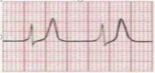
A Inalação de Beta 2 agonista.
B Investigação da causa do distúrbio.
C Administração de furosemida venosa.
D Administração de gluconato de cálcio 10% venoso.
E Administração de glicose a 50% com insulina regular.
Questão 887 · Tratamento medicamentoso · Metas de tratamento · Cardiologia · 4000002332Paciente, 45 anos, obesa, comparece ao ambulatório e relata ser hipertensa e dislipidêmica. Traz resultados de exames laboratoriais: glicemia 120 mg/dl; triglicerídeos 180 mg/dl e LDL 160 mg/dl, e na consulta PA = 170 x 100 mmHg. Foi orientada a iniciar de imediato terapia não medicamentosa. Conforme a 7ª Diretriz Brasileira de Hipertensão Arterial, qual o estágio da hipertensão quando deve ser iniciada a terapia medicamentosa, qual a meta e a melhor conduta terapêutica a ser implementada?
A Estágio 2, terapia medicamentosa deve ser iniciada após 3 meses da mudança no estilo de vida; < 130 x 80 mmHg; terapia combinada (duas classes diferentes).
B Estágio 2, terapia medicamentosa deve ser iniciada de imediato; < 140 x 90 mmHg; terapia combinada (duas classes diferentes).
C Estágio 2, terapia medicamentosa deve ser iniciada de imediato; < 130 x 80 mmHg; terapia combinada (duas classes diferentes).
D Estágio 2, terapia medicamentosa deve ser iniciada de imediato; < 130 x 80 mmHg; monoterapia.
E Estágio 3, terapia medicamentosa deve ser iniciada de imediato; < 130 x 80 mmHg; terapia combinada (duas classes diferentes).
Questão 888 · Tratamento · 4000002322Paciente, 67 anos, iniciou quadro de tosse produtiva e febre há 5 dias. Durante avaliação na emergência observou-se na ausculta crepitações nas bases pulmonares, PA = 85 x 50 mmHg, FR 32 ipm, saturação 88%, ureia 65 mg/dL, creatinina 1,03 mg/dL. Radiografia de tórax evidencia infiltrados multilobulares. Diante do caso, qual a alternativa CORRETA?
A O paciente deverá receber tratamento ambulatorial com macrolídeo.
B O paciente deverá ser internado em enfermaria com beta-lactâmico venoso.
C Nesse caso, deve ser considerado tratamento hospitalar em enfermaria, com quinolona ou beta- lactâmico e macrolídeo.
D Internar em unidade de terapia intensiva, solicitar coleta de culturas, hemograma, glicemia, eletrólitos e transaminases. Iniciar beta-lactâmico associado à quinolona ou macrolídeo.
E O paciente apresenta risco de mortalidade de 9,2%, com indicação de tratamento no domicilio, devendo ser assegurada a possibilidade de reavaliação do tratamento em caso de piora clínica.
Questão 889 · Tuberculose TB · Pericardite constritiva · Cardiologia · 4000002309Paciente J.T.A., 25 anos, sexo masculino, deu entrada na emergência com quadro de dispneia aos pequenos esforços, ascite e edema de membros inferiores. Ao exame físico: ausculta pulmonar normal; avaliação cardiológica: ritmo cardíaco regular e um ruído diastólico mitral de +++/4+, definido como estalido protodiastólico (“Knock ” pericárdico); Fc: 92bpm; PA: 110 x 60 mmHg. Presença de turgência de jugular. Abdome: globoso, ácido, doloroso à palpação de hipocôndrio direito, sem sinais de irritação peritoneal. Piparote positivo. Fígado palpável 5 cm do rebordo costal direito. Extremidades: presença de edema (+/4+) em membros inferiores. Realizou raio-X de tórax que evidenciou área cardíaca normal e calci cação por todo o pericárdio, que permitiu realizar o diagnóstico de pericardite constritiva. No nosso meio, qual a principal causa de pericardite constritiva?
A Tuberculose.
B Esclerodermia.
C Artrite reumatoide.
D Infarto agudo do miocárdio.
E Lúpus eritematoso sistêmico.
Questão 890 · Dermatologia · Câncer de pele · 4000002307Assinale a alternativa que completa as duas lacunas do texto a seguir. " A exérese de lesões cutâneas é procedimento realizado com diversas nalidades, inclusive para se coletar material para estudo anatomopatológico. Em lesões de pele suspeitas de malignidade, prefere-se que a exérese seja ______________________e que se proceda a ___________________".
A Incisional - ampliação de margens.
B Excisional - ampliação de margens.
C Incisional - preservação de margens.
D Excisional - preservação de margens.
Questão 891 · Anemias hemolíticas · 4000002293Anemias hemolíticas podem ser classificadas quanto ao local que ocorre a hemólise, sendo denominadas intra ou extravascular. Podem também ser classificadas de acordo com as causas, como defeito intrínseco ou extrínseco as hemácias. Qual a causa de anemia hemolítica por defeito intrínseco das hemácias?
A Hiperesplenismo.
B Deficiência de G6PD.
C Estenose de valva aorta.
D Anemia hemolítica autoimune.
E Hemoglobinúria paroxística noturna.
Questão 892 · Manobra de Sellick · 4000002292Na intubação endotraqueal há um procedimento importante para se evitar o re uxo de conteúdo gástrico, e possível aspiração. Este procedimento é:
A Inflar o balonete.
B Auscultar tórax e abdômen para verificar se o tubo está corretamente localizado.
C Manobra de Sellick.
D Elevar mandíbula durante pré-oxigenação.
Questão 893 · Tratamento de malária não complicada · 4000002290Arteméter e lumefantrina são tratamentos de escolha para malária por:
A Plasmodium vivax formas graves.
B Plasmodium falciparum e P. vivax.
C Plasmodium ovale e P. vivax.
D Plasmodium falciparum.
Questão 894 · Doenças def inidoras de AIDS · 4000002288São doenças indicativas de síndrome da imunodeficiência adquirida (Aids), EXCETO:
A Pneumonia.
B Criptococose extrapulmonar.
C Histoplasmose disseminada.
D Linfoma não Hodgkin tipo B.
Questão 895 · Indicações de rastreio da osteoporose · Outros tópicos · 4000002287Mulher de 50 anos com fratura da extremidade distal do rádio após queda da própria altura. Menopausa precoce, aos 41 anos, sem tratamento específico. Suspeita-se de osteoporose. Qual é o exame indicado para esse diagnóstico?
A Densitometria óssea.
B Cintilografia óssea.
C RX de mãos com punhos.
D Dosagem no sangue do cálcio, fósforo e fosfatase alcalina.
Questão 896 · Broncof ibroscopia com biópsia · Anatomopatológico · Estadiamento anatômico · 4000002285Paciente de 69 anos, com diagnóstico de carcinoma de células escamosas, apresenta na tomografia de tórax massa tumoral de 5 cm de diâmetro, situada em brônquio central esquerdo e distando 4 cm da carina. Sobre esse caso, assinale a alternativa INCORRETA:
A A fibrobroncoscopia, nesse caso, tem indicação tanto para diagnóstico do tumor quanto para estadiamento.
B Se o paciente realizar um PET-scan e este mostrar ausência de lesões com hipercaptação de glicose, o tratamento indicado será o cirúrgico, com melhor prognóstico.
C Habitualmente, todas as metástases do câncer de pulmão são sintomáticas, o que geralmente torna a história clínica e o exame físico grandes marcadores da disseminação da doença.
D Caso o paciente apresente linfonodo supraclavicular palpável à esquerda, este deve ser acessado para pesquisa de acometimento neoplásico, pois sua presença torna o tumor potencialmente inoperável.
Questão 897 · Epidemiologia · Manif estações Clínicas · Tratamento · 4000002281Sobre a doença celíaca, podemos afirmar que:
A São fatores de risco para doença celíaca os indivíduos com diabete melito tipo I e II, doença autoimune da tireoide, cirrose biliar primária, síndrome de Turner e síndrome de Down.
B A amamentação e o tempo de introdução do trigo na dieta podem reduzir o risco ou atrasar o aparecimento da doença celíaca em crianças sob risco.
C O tratamento da doença celíaca previne a progressão da doença, porém não há remissão com melhora do padrão histológico.
D O tratamento é realizado com corticoide, seguido de manutenção com azatioprina.
Questão 898 · Síndrome Carcinoide · 4000002278Qual a localização mais frequente dos tumores carcinoides?
A Intestino Delgado.
B Trato respiratório.
C Pâncreas.
D Reto.
Questão 899 · Farmacologia · Farmacologia · Farmacologia · 4000002275Ao realizar prescrições para pacientes internados, há necessidade frequente de ajuste de drogas para aqueles com insuficiência renal. Para paciente portador de insuficiência renal, o ajuste de dose é necessário para qual antibiótico?
A Oxacilina.
B Cefepima.
C Ceftriaxone.
D Azitromicina.
E Moxifloxacina.
Questão 900 · Dermatologia · 4000002273Paciente procedente de Eirunepé - AM, apresenta-se com in ltração difusa da pele de coloração acastanhada e brilhosa. Ao exame clínico, apresentava lesões papulares em tronco e pavilhões auriculares e coloração "arroxeada" em regiões palmo-plantares. Durante a consulta também queixou-se de obstrução nasal e rinorreia serossanguinolenta há dois anos. Qual o principal diagnostico a ser pensado e o primeiro exame a ser realizado?
A Sífilis secundária / VDRL.
B Sífilis terciária / FTA-ABS.
C Hanseníase virchowiana / teste de Mitsuda.
D Hanseníase virchowiana / baciloscopia de pele.
Questão 901 · Dermatologia · 4000002271Paciente do sexo masculino, passando férias em Manaus, comparece ao ambulatório apresentando pápulas amareladas, com ponto escuro central, ao redor das unhas dos artelhos, que evoluiu inicialmente com prurido discreto e posterior aparecimento de sensação dolorosa. O mesmo é dono e trabalha em um curral nos arredores de Natal - RN. O diagnóstico mais provável é:
A Pulíase.
B Miíase.
C Tungíase.
D Cimidíase.
Questão 902 · Fisiopatologia · 4000002269Paciente de 26 anos, com diagnóstico de miastenia grave, foi internado com insu ciência respiratória aguda, sendo submetido a tratamento com plasmaférese. Em relação à miastenia grave, marque a alternativa CORRETA:
A Ocorre um distúrbio pré-sináptico.
B Ocorre baixa liberação de acetilcolina.
C Ocorre aumento dos receptores de acetilcolina.
D Ocorre redução dos receptores de acetilcolina.
Questão 903 · Endocrinologia · 4000002258Mulher, 18 anos, procura serviço médico, pois há 1 ano vem apresentando rubor facial ( ushing), cólicas abdominais, náuseas, vômitos, diarreia e episódios de broncoespasmos. Tomogra a de abdômen e pelve mostrou massa sólida hipervascularizada mesentérica em continuidade com jejuno associada a múltiplas lesões hepáticas compatíveis com lesões secundárias. Qual o diagnóstico mais provável?
A Síndrome de Felty.
B Doença de Addison.
C Síndrome carcinoide.
D Síndrome de Ogilvie.
E Síndrome de Zollinger-Ellison.
Questão 904 · Pneumologia · 4000002255Um homem de 69 anos chega à emergência referindo início súbito de intensa dispneia, dor torácica anterior à direita, e com cianose perioral e de extremidades. Seus familiares referem histórico de tabagismo e en sema pulmonar, e que os sintomas começaram quando ele tentou erguer uma caixa pesada em casa. A radiogra a e tórax revela desvio do traqueal e do mediastino para a esquerda, e uma hipertransparência no pulmão direito. Neste momento o médico deve:
A Sedar o paciente e proceder à entubação orotraqueal.
B Levar o paciente parra o centro cirúrgico e proceder à drenagem torácica.
C Inserir agulha de grosso calibre na linha hemiclavicular no 2° ou 3° intercostal direito.
D Solicitar tomografia para descartar dissecção de aorta.
Questão 905 · Tratamento medicamentoso · Cardiologia · 4000002243Frequentemente há necessidade de associação de fármacos para o controle da pressão arterial. Qual a associação de fármacos que deve ser usada com cautela em pacientes diabéticos, em razão da di culdade do controle glicêmico?
A Betabloqueadores e diuréticos.
B Diuréticos e bloqueadores dos receptores de angiotensina.
C Inibidores da enzima conversora angiotensina e diuréticos.
D Bloqueadores dos canais de cálcio e bloqueadores dos receptores de angiotensina.
E Bloqueadores dos canais de cálcio e inibidores da enzima conversora de angiotensina.
Questão 906 · Inf ectologia · 4000002235O atendimento a mordeduras de animais é bastante comum em atenção primária. Em relação à mordedura por gato e à mordedura por cão, a única medida que é diferente no atendimento destes casos é:
A Vacinação anti-tetânica.
B Uso de antibiótico.
C Sutura do ferimento.
D Vacinação anti-rábica.
Questão 907 · Medicações que provocam glicosúria inibidores de SGLT2 · 4000002234Dentre as opções de antidiabéticos orais, qual droga promove glicosúria, tem baixo risco de hipoglicemia, promove perda de peso, redução da pressão arterial sistólica e tem como efeito colateral risco aumentado para infecções genitais e de trato urinário?
A Acarbose.
B Sitagliptina.
C Metformina.
D Pioglitazona.
E Dapagliflozina.
Questão 908 · Critérios diagnósticos · 4000002231Dentro dos critérios diagnósticos de diabetes na população pediátrica, marque a alternativa considerada INCORRETA.
A Um terço dos jovens com DM2 utilizava insulina, e somente 22% dos com DM1 não apresentavam insulina endógena, sugerindo que uma grande fração desses jovens parece ter diabetes de etiologia mista.
B O diagnóstico de DM2 na infância deverá ser feito levando-se em consideração critérios clínicos, como idade e sexo do paciente, obesidade e história familiar positiva para DM2.
C Devido à alta miscigenação brasileira, não existem dados, até o momento, para considerar a cor como fator de risco.
D Os níveis para a glicemia de jejum, com base nos critérios atualmente adotados para o diagnóstico do DM2, não são os mesmos para adultos ou crianças.
Questão 909 · Cardiologia · 4000002226Paciente, 70 anos, tabagista, procura atendimento com relato de cianose, edema cervicofacial e distensão das veias do pescoço. Diante da possibilidade de uma Síndrome da veia cava superior (SVCS), dadas as afirmativas, I. O câncer do pulmão é responsável por cerca de 70% dos casos de SVCS, sendo o tipo histológico mais comum o carcinoma indiferenciado de pequenas células.; II. O tratamento da SVCS requer o estabelecimento do diagnóstico etiológico. Medidas clínicas como manter o paciente em posição de Trendelemburg, oxigênio, diuréticos, antibióticos e anti-inflamatórios não esteroidais são recomendadas.; III. O paciente com SVCS pode apresentar: dispneia, dor torácica, edema peribrônquico e periesofagiano, tontura, síncope, coma e circulação colateral na parede torácica.; IV. Fibrose mediastinal secundária à histoplasmose, bócio subesternal de grandes proporções são causas não neoplásicas da SVCS. Os cateteres implantados no sistema cava superior assim como o Swan-Ganz e os marca-passos podem levar a trombose e SVCS. Verifica-se que está(ão) correta(s) apenas:
A III.
B I e II.
C II e IV.
D I, II e IV.
E I, III e IV.
Questão 910 · Fatores de risco · Epidemiologia · Epidemiologia do diabetes mellitus tipo 2 · 4000002217São achados do quadro clínico de jovens diabéticos os seguintes aspectos, com EXCEÇÃO de um deles. Marque-o.
A A idade de maior incidência do DM2 no jovem é próxima dos 13 anos, guardando relação com o estádio III da classificação de Tanner.
B Ocorre uma proporção de 2:1 em meninas, em relação aos meninos.
C As crianças com DM2 são geralmente assintomáticas ou oligossintomáticas por curtos períodos de tempo.
D Entre os pacientes, 30% apresentam poliúria, polidipsia leve e emagrecimento discreto. Algumas pacientes podem revelar história de monilíase vaginal.
Questão 911 · Indicações do transplante hepático · 4000002205Dadas as indicações de transplante hepático, I. Colangite esclerosante primária; II. Cirrose hepática autoimune; III. Doença de Wilson. Verifica-se que está (ão) CORRETAS (S):
A I, II e III.
B II e III, apenas.
C I e II, apenas.
D III, apenas.
E II, apenas.
Questão 912 · Prurigo estróf ulo · 4000002196O prurido estrófulo é uma doença que acomente crianças a partir dos 6 meses de idade, pois necessita de sensibilização, sendo necessária a ocorrência de várias picadas antes que apareçam os sintomas. Evitar as picadas de insetos é o tratamento mais e caz. Com relação as orientações quanto ao uso de repelentes tópicos em crianças, qual das alternativa abaixo NÃO deve ser recomendada?
A Usar o repelente nas áreas expostas em caso de passeios em fazendas.
B Não aplicar nas mãos das crianças.
C Evitar uso próximo de mucosas.
D Usar durante o sono em locais com muitos mosquitos.
Questão 913 · Inf ectologia · 4000002192De acordo com anova classificação adotada pelo Ministério da Saúde, qual a conduta deve ser adotada e em que grupo se classifica uma criança de 7 anos de idade com suspeita clínica de dengue que tem história de febre alta há 5 dias, cefaleia, dor na região retroorbital, anorexia e que há 12 h vem apresentando dor abdominal intensa e vômitos persistentes?
A Admissão hospitalar, hidratação venosa, coleta de exames e reavaliação/ Grupo C.
B Hidratação oral, paracetamol e vitamina K/Grupo A.
C Hidratação oral, paracetamol e alta para casa sem necessidade de coleta de exames ou reavaliação posterior/Grupo A.
D Coleta de sorologia para dengue, hidratação venosa e ibuprofeno./Grupo D.
Questão 914 · Fatores de risco · Epidemiologia · Epidemiologia do diabetes mellitus tipo 2 · 4000002188Sobre as características de siopatologia do diabetes que in uenciam os achados epidemiológicos na população infantil, aponte a alternativa INCORRETA.
A Crianças que haviam nascido grandes para a idade gestacional (GIG) tinham menor risco de evoluir com obesidade, enquanto outras com antecedente familiar de DM2 apresentavam maior prevalência de síndrome metabólica.
B Ocorre elevação na Resistência à Insulina em portadores de excesso de peso com antecedentes familiares de DM2, sugerindo que, já nessa faixa etária, como observado no adulto, a ação da insulina pode ser dificultada pela obesidade, condição de risco para o desenvolvimento do diabetes.
C O antecedente familiar tem função fundamental na ocorrência do DM2 nessa faixa etária.
D Observou-se que irmãos de jovens com DM2, com sobrepeso, têm risco quatro vezes maior de manifestar intolerância à glicose que outras crianças com sobrepeso.
Questão 915 · Tratamento · 4000002176Chegou a um serviço de emergência uma criança de 3 anos de idade com história de febre alta e pintas no corpo. Ao exame observou-se presença de petéquias e comprometimento do estado geral. Feita punção lombar, foi internado para tratamento com cefotriaxone e colocado em isolamento. O resultado da cultura confirmou meningococo. Diante de um quadro de meningite meningocócica, assinale a alternativa que apresenta a alternativa correta do ponto de vista epidemiológico.
A Quimioprofilaxia para toda população do bairro onde reside a criança.
B Bloqueio imediato por meio de vacinação no bairo da criança.
C Quimioprofilaxia para todos os contatos domiciliares.
D Isolamento da criança por 72 horas após início do tratamento antimicobiano adequado.
Questão 916 · Fatores de risco · Epidemiologia · Epidemiologia do diabetes mellitus tipo 2 · 4000002174Dentro da análise da associação entre a obesidade e o diabetes, indique a alternativa INCORRETA.
A A obesidade apresenta-se de modo constante no DM2 do jovem.
B Aproximadamente 70 a 90% das crianças são obesas; sendo que 38% apresentam obesidade mórbida.
C A obesidade e a história familiar parecem ter efeito aditivo no risco de desenvolvimento da doença.
D O impacto da obesidade no risco do DM2 é menor em crianças com história familiar positiva para essa doença.
Questão 917 · Tratamento do Adenocarcinoma Gástrico · Cirurgia · 4000002169Suponha que você está realizando uma gastrectomia subtotal oncológica, seguindo todos os passos técnicos corretamente. Depois de realizar o descolamento intercoloepiploico, ligadura dos vasos gastroepiploicos direitos e dos vasos gástricos esquerdos e suas respectivas linfadenectomias, inadvertidamente, promove uma lesão esplênica durante linfadenectomia desta região. Você tenta realizar hemostasia, esplenorra a, confecção de patch, todas sem sucesso e opta, nalmente, por esplenectomia para não comprometer a estabilidade clínica e hemodinâmica do paciente. Após todos esses passos técnicos, qual será sua próxima conduta para continuação da cirurgia?
A Gastrectomia a 4/5.
B Cirurgia de Traverso-Longmire.
C Gastrectomia total com reconstrução em Y de Roux.
D Gastrectomia subtotal com reconstrução em Y de Roux.
E Abortar cirurgia para controle de dano e nova abordagem em 48 hs.
Questão 918 · Epidemiologia · Epidemiologia do diabetes mellitus tipo 2 · 4000002160Quando analisamos as características diferenciadas do diabetes na população jovem, estas apresentam diferenciais relacionados às suas características, NÃO sendo correta uma das opções apresentadas a seguir. Indique-a.
A Uma das grandes preocupações do diagnóstico de DM2 no jovem é que algumas comorbidades, como a neuropatia, apresentam-se tão comuns na criança quanto no adulto DM2.
B Há um risco de desenvolvimento da doença em irmãos, semelhante à encontrada na população geral.
C O desenvolvimento de complicações precoces terá implicações para o resto da vida, tanto para criança quanto para orçamento da saúde pública.
D Um quarto das crianças obesas e 22% dos adolescentes obesos apresentam intolerância à glicose.
Questão 919 · Fatores de risco · 4000002149Sobre o estudo da interação entre obesidade, descontrole metabólicos e diabetes no público mais jovem, podemos relacionar diversos aspectos, com EXCEÇÃO de um deles. Indique-o.
A As elevadas taxas de obesidade na infância e na adolescência estão relacionadas com sedentarismo crescente e mudança nos hábitos alimentares, frequentemente associadas a dietas hipercalóricas e hipergordurosas.
B Os possíveis candidatos que ligam obesidade à alteração do metabolismo dos carboidratos seriam os ácidos graxos livres aumentados, as citocinas inflamatórias e os baixos níveis de adiponectina.
C A transição de tolerância normal à glicose para a intolerância à glicose e dessa etapa para o diabetes está associada a um aumento discreto de peso.
D A elevação contínua do peso tem efeito sobre os níveis glicêmicos, independentemente de mudanças na sensibilidade insulínica ou na demanda da célula beta.
Questão 920 · Epidemiologia · Epidemiologia do diabetes mellitus tipo 2 · 4000002144Dentro do estudo do impacto da cada vez maior incidência de diabéticos na população jovem, marque a opção INCORRETA.
A O aumento na predominância da obesidade na adolescência registrado nos últimos anos explicaria, em grande parte, o avanço do DM2 nas populações jovens.
B O aumento na predominância da obesidade na adolescência, registrado nos últimos anos, se relaciona com o desenvolvimento da síndrome metabólica e de doenças cardiovasculares na maturidade.
C Em adolescentes com DM2, a avaliação do efeito do diabetes e da obesidade sobre complacência vascular encontrou aumento da rigidez dos vasos.
D DM2 de início precoce pode ser menos agressivo do ponto de vista cardiovascular do que em adultos.
Questão 921 · Abscesso hepático · 4000002133Dadas as afirmativas sobre os abscessos hepáticos: I. A drenagem do abscesso hepático piogênico único deve ser realizada o mais precoce possível; II. Os abscessos múltiplos apresentam incidência e mortalidade maiores em relação ao abscesso único; III. A principal causa de abscesso hepático piogênico é a apendicite tardiamente diagnosticada; IV. O abscesso amebiano é único em 78% dos casos e é raro em cirróticos. Verifica-se que está (ão) CORRETA (S) apenas:
A I.
B I e IV.
C II e III.
D III e IV.
E I, II e III.
Questão 922 · Hepatologia · 4000002123Dadas as afirmativas sobre a colelitíase e suas complicações, I. Pacientes que desenvolvem síndrome de Mirizzi devem ser tratados com CPRE.; II. O exame padrão-ouro para diagnóstico de colelitíase é a colangioressonância.; III. Estabelecido o diagnóstico de colangite grave, suporte clínico intensivo e descompressão da via biliar são mandatórios.; IV. Pacientes com pancreatite aguda biliar devem ser submetidos a CPRE e colecistectomia na mesma internação após resolução do quadro agudo. Verifica- se que está(ão) correta(s) apenas:
A II e IV.
B I e IV.
C I e III.
D III.
E II.
Questão 923 · Hemorragia Digestiva HD · Hipertensão Intracraniana · Obstrução Intestinal Alta · 4000002115O aspecto do vômito pode sugerir o tipo de comprometimento abdominal. Das alternativas apresentadas a seguir, indique aquela em que o aspecto do vômito esteja CORRETAMENTE associado à sua respectiva hipótese diagnóstica.
A Vômito borráceo – obstrução.
B Vômito bilioso – intussuscepção.
C Vômito fecaloide – gastrite.
D Vômitos em jato - megacólon
Questão 924 · Hepatologia · 4000002109É uma medicação indicada para o tratamento farmacológico do uso abusivo do álcool quando se deseja alcançar o consumo moderado, e a abstinência não é necessária:
A Naltrexona.
B Topiramato.
C Dissulfiram.
D Amitriptilina.
Questão 925 · Cardiologia · 4000002108Considerando as medidas de suporte no tratamento das miocardites, marque a opção INCORRETA.
A O transplante cardíaco está indicado em situação de prioridade para pacientes que não apresentam melhora clínica ou hemodinâmica.
B O suporte inotrópico deve ser utilizado pelo menor tempo possível e na mínima dose necessária.
C A ventilação não invasiva não é uma boa opção terapêutica em pacientes pediátricos com insuficiência cardíaca.
D Anticoagulante oral está indicado nos casos de miocardite em associação com fibrilação atrial, trombos intracavitários ou fenômenos tromboembólicos.
Questão 926 · Pneumologia · 4000002104Recomenda-se o tratamento farmacológico para todo fumante:
A Acima de 25 anos, com consumo maior do que 20 cigarros/dia.
B Acima de 18 anos, com consumo maior do que 10 cigarros/dia.
C Acima de 16 anos, Independente do grau de dependência à nicotina.
D Acima de 20 anos, com consumo maior do que 15 cigarros/dia.
Questão 927 · Cardiologia · 4000002101Nos casos de miocardite, a Ressonância Nuclear Magnética NÃO está indicada:
A Na avaliação da função, geometria e morfologia ventricular na suspeita de miocardite aguda, subaguda ou crônica.
B Na investigação diagnóstica de miocardite aguda, crônica ou suspeita de miocardite prévia.
C No acompanhamento de 4 a 12 semanas do episódio agudo.
D Na miocardite fulminante com instabilidade hemodinâmica.
Questão 928 · Diálise Peritoneal · 4000002095A diálise peritoneal é utilizada em pacientes com doença renal crônica ou doença renal aguda. A realização desse procedimento tem contraindicação absoluta para pacientes com
A insuficiência renal crônica.
B hérnia diafragmática.
C doença renal crônica que apresente aderências abdominais pós cirúrgicas.
D doença inflamatória intestinal concomitante à doença renal aguda.
Questão 929 · Fatores que inf luenciam a ureia e creatinina · 4000002088Em geral, a gravidade da insu ciência é fundamentada no grau de redução da taxa de ltração glomerular, medida clinicamente por valores da ureia e creatinina séricas. No entanto, a ureia, como indicador para terapia de substituição renal, é limitada, pois seus níveis podem ser alterados pelas seguintes situações, EXCETO por:
A Sangramentos do trato gastrointestinal.
B Uso de corticoides.
C Anabolismo proteico.
D Uso de diuréticos.
Questão 930 · Etiologia Prérenal · 4000002083São causas pré-renais de injúria renal aguda, com EXCEÇÃO de
A hipovolemia por perdas gastrointestinais, como vômitos e diarreia.
B estreitamentos da uretra.
C síndrome nefrótica.
D hemorragia pós trauma.
Questão 931 · Tratamento Cirúrgico · Operabilidade · 4000002073Qual a artéria cuja ligadura é passo técnico em uma cirurgia de duodenopancreatectomia?
A Gástrica direita.
B Gastroduodenal.
C Mesentérica inferior.
D Gastroepiploica direita.
E Gastroepiploica esquerda.
Questão 932 · Epidemiologia · Epidemiologia do diabetes mellitus tipo 2 · 4000002060Dentro do entendimento da atual epidemia de diabéticos Tipo 2, aponte a alternativa INCORRETA.
A O aumento da incidência do Diabetes Mellitus tipo 2 (DM2) entre crianças e adolescentes vem sendo observado em várias regiões do mundo.
B O aumento da prevalência de DM2 tem sido ainda associado ao crescimento da industrialização e desenvolvimento socioeconômico.
C Já são conhecidos todos os motivos responsáveis pela eclosão da doença nessa faixa etária (entre crianças e adolescentes).
D Inicialmente, há duas décadas, esses relatos referiam-se a grupos homogêneos com maior suscetibilidade à doença.
Questão 933 · Hemostasia · Hemostasia Secundária · Hemof ilia · 4000002053ma criança do sexo masculino de dez anos de idade com dor no quadrante inferior direito, náusea, vômito e febre. Feita a hipótese de apendicite aguda, é indicado tratamento cirúrgico. Nesse instante, os pais informam que o filho é portador de hemofilia A. Nesse caso, o que deve ser administrado ao paciente?
A Fator VII.
B Fator VIII.
C Vitamina k.
D Plasma fresco.
E Crioprecipitado.
Questão 934 · Cardiologia · 4000002051A causa mais comum de síncope em todas as faixas etárias é:
A Cardíaca.
B Cerebrovascular.
C Vaso vagal ou neuromediada.
D Ortostática.
Questão 935 · Indicações de PAAF · 4000002042Sobre nódulos tireoidianos: I. PAAF está indicada em todos os nódulos acima de 1 cm.; II. Nódulos puramente císticos não precisam ser submetidos à PAAF, pois é muito raro que sejam malignos.; III. Todos os pacientes com nódulos de tireoide identi cados em exame físico devem realizar ultrassonografia, bem como dosagem de TSH. São afirmações CORRETAS:
A I e II.
B I, II e III.
C I e III.
D II e III.
Questão 936 · Endocrinologia · 4000002040Qual dos hormônios a seguir absorve apenas água sem absorver eletrólitos?
A Cortisol.
B Aldosterona.
C Hormônio antidiurético.
D Adrenalina.
Questão 937 · Métodos Complementares · Gastroenterologia · 4000002032Trata-se do melhor procedimento para caracterizar o refluxo gastresofágico:
A Esofagomanometria.
B Exame radiológico contrastado do esôfago.
C pHmetria prolongada de 24h.
D Endoscopia digestiva alta.
Questão 938 · Endocrinologia · 4000002030Sobre as alterações nos níveis de hormônios tireoidianos na doença aguda grave, assinale a alternativa INCORRETA.
A Na fase aguda da doença, os níveis de T3 e de T3 livre diminuem as concentrações extremamente baixas.
B A diminuição nos níveis circulantes de T3 resulta de um aumento na conversão de T3 para T4, ao passo que a depuração do T3 permanece preservada.
C Em contraste com os baixos níveis de T3, os níveis de rT3 aumentam na fase aguda da doença devido à redução na depuração e a um aumento na atividade da via deiodinase iodotironina tipo III.
D Durante a fase tardia da doença grave, a secreção hipofisária de TSH está diminuída, com o declínio concomitante das concentrações séricas de T4.
Questão 939 · Tratamento · Investigação Complementar · 4000002024João, 35 anos, tabagista, procura o serviço de saúde com queixa de plenitude e dor epigástrica intermitente, agravada por alimentação e aliviada por eructações há 5 meses. Refere tratamento prévio para gastrite há 8 meses. Qual a melhor conduta inicial para este caso?
A Tratar empiricamente para erradicação do H. pylori.
B Solicitar endoscopia devido a história de tabagismo.
C Revisar medicamentos utilizados e tratar IBP 4-6 semanas.
D Testar H. pylori, se positivo, erradicar.
Questão 940 · Cardiologia · 4000002011Em relação à pressão arterial, analise as afirmativas a seguir. I. O uso de monitorização invasiva de pressão arterial é indicado para os pacientes com instabilidade hemodinâmica mais importante, para os que se apresentem hipotensos e nos casos de hipertensão arterial grave, como nas emergências hipertensivas. II. A pressão arterial normal descarta a presença de baixo débito cardíaco e baixa oferta tecidual de oxigênio. III. Como regra prática, pode-se utilizar como um dos valores para diagnóstico de hipotensão em crianças e recém-nascidos a pressão arterial sistólica inferior a 60 mmHg. Está CORRETO, APENAS, o contido em
A I e II.
B I e III.
C II e III.
D II.
Questão 941 · Acompanhamento ambulatorial · 4000002006Para o correto uso do exame de monitorização dos níveis de glicose, existe uma frequência recomendada para a realização dos testes de hemoglobina glicada. Sobre isso, assinale a alternativa CORRETA.
A A quantidade de glicose ligada à hemoglobina é inversamente proporcional à concentração média de glicose no sangue.
B Uma vez que as hemácias têm um tempo de vida de aproximadamente 140 dias, a medida da quantidade de glicose ligada à hemoglobina pode fornecer uma avaliação do controle glicêmico médio no período de 140 dias antes do exame.
C Em virtude de os resultados do exame concederem informação retrospectiva sobre 6 meses precedentes, a realização de um teste de HbA1c a cada 3 meses fornecerá dados que expressam a glicose sanguínea média no passado recente.
D Os exames de HbA1c devem ser realizados regularmente em todos os pacientes com diabetes. A princípio para documentar o grau de controle glicêmico em sua avaliação inicial e, subsequentemente, como parte do atendimento contínuo do paciente.
Questão 942 · Tratamento Clínico · Tratamento Cirúrgico · 4000002002Paciente alcoólatra crônico, masculino, 60 anos, é admitido no hospital com pancreatite aguda. Tiveram episódios semelhantes no passado que foram resolvidos sem complicações. Foi verificado nos exames laboratoriais nível de amilase elevado e encontrado na tomogra a computadorizada um pseudocisto pancreático. Qual o melhor tratamento para esse paciente?
A Aspiração simples.
B Tratamento cirúrgico.
C Drenagem percutânea.
D Tratamento endoscópico.
E Observação e tomografias seriadas de controle.
Questão 943 · Nef rologia · 4000002001Qual dos fatores a seguir NÃO se relaciona com risco maior de ototoxicidade em pacientes tratados com diuréticos de alça?
A Uso de diurético de alça por infusão contínua.
B Insuficiência renal.
C Administração concomitante de aminoglicosídeo.
D Concentrações séricas de pico do diurético de alça elevadas.
Questão 944 · Inf ectologia · 4000001993Em termos de prevenção da Síndrome Hemolítico-Urêmica típico associado a E. coli entero-hemorrágica, é INCORRETO afirmar que:
A O manuseio adequado da carne e do preparo dos alimentos, incluindo cozinhar em altas temperaturas, pode reduzir o risco de infecção por E. Coli entero-hemorrágica.
B O leite deve ser pasteurizado.
C Os casos índices não necessitam ser identificados para prevenir exposição de outros indivíduos.
D Devido à correlação com natação em água contaminada, devem existir regras de regulamentação para a segurança em piscinas.
Questão 945 · Hemoglobina glicada HbA1c · 4000001989Dentro da análise dos achados de alterações crônicas dos níveis de glicose sanguínea, podemos entender a importância de marcadores de elevação crônica da glicose. Assim, somente uma das a rmativas se mostra completamente CORRETA. Aponte-a.
A A glicação da hemoglobina ocorre ao longo de todo o período de vida do glóbulo vermelho, que é de aproximadamente 150 dias.
B Porém, dentro destes 150 dias, a glicemia recente é a que mais influencia o valor da HbA1c.
C O paciente em controle estável apresentará 50% de sua HbA1c formada no mês precedente ao exame, 25% no mês anterior a este e os 25% remanescentes no terceiro ou quarto mês antes do exame.
D O impacto de qualquer variação significativa (em sentido ascendente ou descendente), na glicemia média, será “diluído” dentro de 6 meses, em termos de níveis de HbA1c.
Questão 946 · Pneumologia · 4000001988Para pessoas com DPOC moderado, deve-se prescrever:
A Corticoide inalatório.
B Corticoide sistêmico.
C Oxigênio domiciliar.
D Broncodilatador de ação longa.
Questão 947 · Endocrinologia · 4000001980Em qual das seguintes situações NÃO há estímulo para o aumento da secreção do hormônio antidiurético?
A Hipervolemia.
B Dor.
C Bronquiolite aguda.
D Tumor cerebral.
Questão 948 · Cardiologia · 4000001964Qual é a meta lipídica (LDL) de paciente com risco cardiovascular moderado:
A Individualizada.
B <130.
C <160.
D <190.
Questão 949 · Fisiopatogenia · 4000001955Para entendermos a gênese dos achados clínicos decorrentes dos níveis, persistentemente elevados, de glicose sanguínea, que por sua vez são tóxicos ao organismo, devemos considerar os diferentes mecanismos envolvidos, com EXCEÇÃO de um. Assinale-o.
A Mediante a promoção da glicação de proteínas.
B Hiperosmolalidade.
C Com manutenção dos níveis de sorbitol fora da célula.
D Aumento dos níveis de sorbitol dentro da célula.
Questão 950 · Métodos laboratoriais · 4000001937Quando lidamos com conhecimento das complicações referente ao diabetes em longo prazo, assume grande importância o conhecimento dos conceitos referentes aos marcadores de hiperglicemia. Dentre esses conceitos, assinale o CORRETO.
A Genericamente, o termo hemoglobina glicada refere-se a um conjunto de substâncias formadas com base em reações entre a hemoglobina A (HbA) e alguns açúcares.
B A HbA é a forma pouco importante e nativa da hemoglobina.
C No decorrer dos anos ou das décadas, a hiperglicemia prolongada promove o desenvolvimento de lesões orgânicas extensas e reversíveis.
D Os níveis de glicose sanguínea, persistentemente elevados, são atóxicos ao organismo.
Questão 951 · Cef aleias · 4000001929A cefaleia é um sintoma comum na população brasileira e importante causa de procura por atendimento médico. Em relação a essa queixa, pode-se afirmar :
A A cefaleia é um sintoma mais prevalente em homens e apresenta grande impacto no trabalho.
B A enxaqueca é a cefaleia primaria mais prevalente na população.
C A maioria das cefaleias são classificadas como secundárias em serviços de atenção primaria à saúde.
D A cefaleia da enxaqueca ocorre em crises que duram de 4 a 72 horas.
Questão 952 · Cardiologia · 4000001924Em relação à decisão de tratamento da abordagem de hipertensos estágios 2 e 3 e/ou de alto risco, assinale a alternativa considerada CORRETA.
A Indivíduos com PA (maior ou igual) 180/100 mmHg e/ou portadores de risco CV estimado alto, mesmo no estágio 1, devem iniciar de imediato o tratamento medicamentoso associado à terapia não medicamentosa.
B Estudos com fármacos anti-hipertensivos, a maioria realizada com esse perfil de pacientes, demonstraram eficácia na redução da PA e proteção CV.
C Admite-se que a terapia não farmacológica isoladamente possa promover reduções da PA suficientes para o alcance da meta pressórica recomendada, sendo efetivo controle da PA e de outros FRCV frequentemente presentes.
D Embora o benefício absoluto da terapia seja menor nos estágios 2 e 3, também aumenta o risco residual devido à frequente presença e influência de outros FR e LOA já instalada, neutralizando parte desse benefício. Essa observação reforça a importância de se abordar o risco CV de forma global.
Questão 953 · Endocrinologia · 4000001913Qual é hormônio que tem efeito termogênico, ou seja, que aumenta a temperatura corporal?
A Estrogênio.
B Estriol.
C Progesterona.
D Androstenediona.
Questão 954 · Clínica Médica · Hepatologia · Cirrose · 4000001912Qual dos itens seguintes é uma das variáveis analisadas no MELD Score de hepatopatas?
A Idade.
B Creatinina.
C Índice nutricional.
D Grau de encefalopatia.
E Causa da falência hepática.
Questão 955 · Cardiologia · 4000001904Acerca da pesquisa diagnóstica de complicações em órgãos-alvo, relacionadas com a Hipertensão Arterial, as informações obtidas e otimizadas pelo Ecocardiograma estão corretas, com EXCEÇÃO de uma. Aponte-a.
A Menos sensível do que o ECG no diagnóstico de HVE.
B Agrega valor na avaliação das formas geométricas de hipertrofia e tamanho do átrio esquerdo.
C Análise da função sistólica e diastólica.
D Indicado na presença de indícios de HVE ao ECG ou pacientes com suspeita clínica de IC.
Questão 956 · Cardiologia · 4000001897Sobre as síndromes coronarianas agudas com supradesnivelamento de segmento ST, assinale a a rmação correta:
A Dosagem de mioglobina é útil pois seu aumento é precoce no IAM.
B A alteração dos marcadores bioquímicos é essencial para o diagnóstico de Infarto.
C O surgimento de onda Q patológica é muito precoce, logo após o início da dor torácica.
D Necessariamente não há necrose miocárdica e as células são passíveis de recuperação.
Questão 957 · Acompanhamento ambulatorial · 4000001893Nas situações em que a pessoa portadora de diabetes encontra-se dentro das metas glicêmicas estabelecidas, sugere-se que os exames de glicemia de jejum e hemoglobina glicada A1C sejam realizados:
A Uma vez ao ano.
B Duas vezes ao ano.
C A cada 3 meses.
D Mensalmente.
Questão 958 · Cardiologia · 4000001883O impacto estatístico de um Eletrocardiograma (ECG), executado no local de atendimento inicial do Infarto Agudo do Miocárdio (IAM) e interpretado por um médico habilitado (no local ou em local remoto), mostrou ser um método que
A reduz em 70% o tempo porta-agulha.
B reduz em 50% o tempo porta-balão.
C proporciona menores taxas de tempo porta-balão ideal.
D leva a tendência à redução de mortalidade intra-hospitalar em pacientes com IAMCST.
Questão 959 · Cardiologia · 4000001881Hipertensos com pressão arterial (PA) no estágio 3, deverão ter como meta pressórica a PA:
A < 120 x 80 mmHg.
B < 130 x 80 mmHg.
C < 140 x 90 mmHg.
D < 150 x 90 mmHg.
Questão 960 · Neurologia · 4000001790Assinale a opção que informa, em relação à eclampsia, a substância a ser prescrita como anticonvulsivante e seu respectivo antídoto no caso de superdosagem.
A Hidrato de cloral e bicarbonato de cálcio.
B Sulfato de magnésio e carbonato de sódio.
C Sulfato de magnésio e gluconato de cálcio.
D Hidrato de cloral e gluconato de cálcio.
Questão 961 · Etiologia Diabetes mellitus DM · 4000001781Dentro dos conceitos de doença renal do diabetes (DRD) , a base nos valores crescentes de excreção urinária de albumina (EUA), a DRD tem sido historicamente classificada em fases. Entretanto, a progressão destes estágios não é inexorável, podendo ocorrer regressão da microalbuminúria em cerca de 30% dos pacientes, em geral associada a intervenções terapêuticas. Aponte a alternativa que NÃO faz parte dessas fases.
A Normoalbuminúria.
B Hipoalbuminúria.
C Microalbuminúria.
D Macroalbuminúria.
Questão 962 · Tratamento · Tratamento · 4000001772Gestante com VDRL + na consulta de 28 semanas confirmado com FTA abs, recebeu tratamento com Penicilina benzatina. Qual o melhor seguimento?
A Checar se o parceiro foi tratado e VDRL mensal.
B Checar se o parceiro foi tratado de VDRL trimestral.
C FTA abs e VDRL mensal.
D FTA abs e VDRL trimestral.
Questão 963 · Etiologia Diabetes mellitus DM · 4000001765Ocorre também importante necessidade de se conhecerem os diagnósticos diferencias de doenças renais dos diabéticos, devido ao fato de que o aumento da Excreção Urinária de Albumina (EUA) ou a redução da Taxa de Filtração Glomerular (TFG), em pacientes com DM, também pode ser causado por outra doença renal não relacionada ao DM. O paciente deve ser submetido à avaliação adicional nas seguintes situações, com EXCEÇÃO de uma. Assinale-a.
A Quando há início da proteinúria em pacientes com duração do DM inferior a 5 anos, em especial no DM1.
B Devido ao início da proteinúria abrupto e rapidamente progressivo, não compatível com o curso clínico da Doença Renal do Diabetes (DRD).
C Achados alterações no sedimento urinário, como cilindros hemáticos, leucocitários e acantócitos; manifestações clínicas de outra doença sistêmica e ausência de retinopatia e neuropatia em pacientes com DM1, visto que nestes a retinopatia diabética precede o surgimento de Doença Renal do Diabetes (DRD).
D Nos pacientes com DM2, a ausência de retinopatia e neuropatia excluem Doença Renal do Diabetes (DRD), pois apenas 5% dos pacientes com DM2 proteinúricos, com diagnóstico de ND confirmado por biópsia, apresentam retinopatia diabética.
Questão 964 · Etiologia Diabetes mellitus DM · 4000001748O rastreamento da doença renal do diabetes (DRD), para que seja adequado, deve ser iniciado logo ao diagnóstico do DM nos pacientes com DM2 e após 5 anos do início no DM1. No entanto, pacientes com DM1, que se encontrem na puberdade ou com DM persistentemente descompensado, têm de ser rastreados independentemente dessas indicações. Acerca disso, aponte a alternativa considerada INADEQUADA.
A O rastreamento precisa ser mensal e basear-se na medida da albuminúrica e na estimativa da taxa de filtração glomerular (TFG).
B O rastreamento deve ser iniciado preferencialmente pela medida de albumina em amostra isolada de urina (primeira da manhã ou casual), devido à acurácia diagnóstica e à facilidade desse tipo de coleta.
C Pode ser medido o índice de albumina-creatinina ou apenas a concentração de albumina.
D A vantagem da utilização da concentração da albumina é um menor custo sem perda de acurácia diagnóstica quando comparada com o índice.
Questão 965 · Classif icação · Etiologia Diabetes mellitus DM · 4000001741A classificação atual da doença renal crônica, independentemente da etiologia, é baseada na Taxa de Filtração Glomerular (TFG) e na Excreção Urinária de Albumina (EUA), pois tem sido extensamente reconhecida a relação desses dois parâmetros com desfechos adversos renais e mortalidade. Sobre isso, marque a opção INCORRETA:
A Atualmente, tem havido uma ampliação do espectro das apresentações clínicas da Doença Renal do Diabetes (DRD), sendo o fenótipo da doença renal não albuminúrica, caracterizada por redução isolada da TFG, cada vez mais reconhecido.
B Por este motivo, a Doença Renal do Diabetes (DRD) permanece sendo a quinta causa de doença renal crônica em pacientes ao ingressarem em programas de diálise, inclusive no Brasil.
C Em aproximadamente 1/5 dos casos, observa-se a redução isolada da Taxa de Filtração Glomerular (TFG). Em estudos realizados no Sul do Brasil, verificou-se que 37% dos pacientes com DM tipo 2 (DM2) e 34% dos pacientes com DM tipo 1 (DM1) apresentam aumento da Excreção Urinária de Albumina (EUA).
D Atualmente, ainda é muito grande o número de pacientes afetados, pois a incidência de DM continua aumentando.
Questão 966 · Etiologia Diabetes mellitus DM · 4000001729Atualmente, o uso do termo nefropatia diabética deve ser reservado somente para pacientes com proteinúria detectável persistente, em geral associada à elevação da pressão arterial. A respeito da relação entre o diabetes e a lesão renal, podemos considerar ADEQUADO apenas o seguinte. Assinale-o:
A A Doença Renal do Diabetes (DRD), na forma de elevação da Excreção Urinária de Albumina (EUA), pode acometer 90% dos pacientes com diabetes.
B Embora a taxa de complicações crônicas relacionadas ao DM venha aumentando nas últimas duas décadas, tendo ocorrido uma redução aproximada de 30% na Doença Renal do Diabetes (DRD), em suas fases mais avançadas ainda é muito grande o número de pacientes afetados, pois a incidência de DM continua aumentando.
C A Doença Renal do Diabetes (DRD) está associada ao aumento de mortalidade, principalmente relacionada à doença cardiovascular.
D O aumento da Excreção Urinária de Albumina (EU A) apresenta pouca importância como fator de risco para eventos coronarianos e para desenvolvimento e progressão da Doença Renal do Diabetes (DRD).
Questão 967 · Gastroenterologia · 4000001725Faz parte do rastreamento de câncer de colo e reto a solicitação de pesquisa de sangue oculto nas fezes, a partir de qual idade:
A Não existe essa recomendação.
B 40 anos.
C 45 anos.
D 50 anos.
Questão 968 · Etiologia Diabetes mellitus DM · 4000001715Embora a taxa de complicações crônicas relacionadas ao DM venham diminuindo nas últimas duas décadas, ainda é muito grande o número de pacientes afetados, pois a incidência de DM continua aumentando. Por este motivo, a Doença Renal do Diabetes (DRD) permanece sendo a principal causa de doença renal crônica em pacientes ao ingressarem em programas de diálise, inclusive no Brasil. A DRD está associada ao aumento de mortalidade, principalmente relacionada à doença cardiovascular. Em referência à enorme importância do adequado conhecimento de alterações achadas devido à sua evolução, indique a opção considerada INADEQUADA.
A A diminuição rápida e acentuada da taxa de filtração glomerular (> 80%) após o início de terapia com Inibidores da Enzima Conversora da Angiotensina (IECA) ou Bloqueadores do Receptor AT1 da Angiotensina (BRA)sugere estenose da artéria renal, devendo esta possibilidade ser avaliada, especialmente em pacientes com vasculopatia.
B Todo teste de albuminúria anormal deve ser confirmado em duas de três amostras coletadas em um intervalo de 3 a 6 meses, devido à variabilidade diária da excreção urinária de albumina (EUA).
C Embora seja sugerido que infecção urinária possa interferir nos valores de EU A, recentemente foi constatado que a existência de bacteriúria não interfere de maneira apreciável nas medidas de albuminúria.
D Fatores como exercício durante o período de coleta de urina, febre, insuficiência cardíaca, hiperglicemia grave e hipertensão arterial não controlada podem elevar os valores de Excreção Urinária de Albumina (EUA).
Questão 969 · Cardiologia · 4000001709Dentro dos conceitos atuais de abordagem da parada cardiorrespiratória, a monitorização se apresenta como ferramenta clínica, sendo que o dióxido de carbono, exalado no nal da expiração expressado em mmHg – PETCO –, detectado pela capnogra a quantitativa em pacientes intubados, relaciona-se CORRETAMENTE com uma das opções seguintes. Aponte-a.
A PETCO não tem sido correlacionado com a qualidade da RCP.
B Durante a PCR não tratada, a produção de CO é mantida, porém não existe liberação pelos pulmões, sendo a presença de débito cardíaco a maior determinante da liberação do PETCO.
C Os valores do PETCO têm sido correlacionados com o Retorno Circulação Espontânea, mas não com a pressão de perfusão coronária.
D Valores < 100 mmHg revelam pouca probabilidade de Retorno Circulação Espontânea, indicando a necessidade de melhora na qualidade da RCP.
Questão 970 · Cardiologia · 4000001708Um paciente pré hipertenso deve ser reavaliado no período de:
A 01 semana.
B 01 mês.
C 06 meses.
D 01 ano.
Questão 971 · Cardiologia · 4000001702É considerado pré-hipertenso o paciente que apresenta níveis pressóricos entre:
A 121 - 139 mmHg.
B 125 - 140 mmHg.
C 110-119 mmHg.
D 120-140 mmHg
Questão 972 · Endocrinologia · 4000001686Quando lidamos com prevenção e complicações relacionadas ao diabetes, podemos a rmar que existem diversos cuidados e considerações a respeito. Desse modo, indique a alternativa INCORRETA.
A Para os diabéticos, a recomendação de atividade aeróbica diária, ou pelo menos 3 dias da semana sem permanecer mais de 2 dias sem realizá-la, é reforçada para que os benefícios sobre o metabolismo glicídico sejam alcançados.
B A duração necessária de uma sessão de exercício depende da intensidade e da frequência semanal dos exercícios.
C Nos pacientes diabéticos, a duração de um exercício deve ser planejada para minimizar riscos de hipoglicemia, geralmente sendo necessária a reposição de carboidratos quando a atividade tiver duração > 30 minutos.
D A recomendação mais atual para diabéticos é de 150 minutos de exercícios de moderada intensidade ou 75 minutos de alta intensidade por semana ou uma combinação de ambos.
Questão 973 · Endocrinologia · 4000001678Quanto aos benefícios no controle do diabético, relacionado ao tipo de exercício proposto, somente NÃO podemos relacionar como correta uma das alternativas a seguir. Indique-a.
A Exercícios aeróbicos são normalmente realizados usando grandes grupos musculares e caracterizam-se por atividades que costumam não demandar habilidades muito específicas, sendo a caminhada o melhor exemplo disso.
B Aquecimento e desaquecimento são fundamentais, principalmente no subgrupo que apresenta disautonomia.
C Exercícios de resistência/fortalecimento muscular devem ser incluídos no plano de atividades do diabético, já que eles provocam elevação da sensibilidade da insulina de maior duração, mediado também pelo aumento da massa muscular.
D Exercícios de flexibilidade não devem ser contemplados, pois há redução da flexibilidade pela ação deletéria da hiperglicemia crônica sobre as articulações, além da decorrente do envelhecimento.
Questão 974 · Endocrinologia · 4000001669Existem atualmente fortes evidências cientí cas dos efeitos bené cos do exercício físico na prevenção e no tratamento do Diabetes Mellitus (DM). O exercício previne o DM tipo 2 (DM2), principalmente nos grupos de maior risco, como os obesos e os familiares de diabético. Aponte a alternativa INCORRETA.
A O melhor momento do diabético se exercitar é cerca de 60 minutos após uma refeição, quando a glicose ingerida será utilizada como substrato energético, evitando a hiperglicemia pós-prandial.
B O exercício é um forte aliado na predição desse risco nos diabéticos, assim como na sua redução por meio da prática regular.
C O exercício físico reduz o risco cardiovascular também em pacientes com DM.
D Pacientes diabéticos que se exercitam regularmente mostram melhora clínica relevante no seu perfil lipídico, e diabéticos hipertensos tendem a ter um melhor controle dos níveis tensionais quando submetidos a treinamento.
Revisar: possível letra faltando em enunciado
Questão 975 · Endocrinologia · 4000001659Dentro da análise da relação do exercício físico na população diabética, podemos a rmar diversos aspectos, com EXCEÇÃO de um deles. Assinale-o.
A Diabéticos fisicamente ativos ou em boa condição aeróbica apresentam melhor prognóstico do que aqueles inativos e com baixa condição aeróbica.
B A observação, de que diabéticos sedentários têm maiores índices de consumo máximo de oxigênio, de débito cardíaco e de capacidade de extração tecidual de oxigênio, é refletida por uma maior diferença arteriovenosa de oxigênio para exercícios submáximos e máximos, quando comparados com sedentários não diabéticos.
C Ocorre importante impacto das alterações metabólicas que cronicamente atuam e comprometem a capacidade física dos diabéticos.
D O treinamento aeróbico regular proporciona condições de reverter parcial ou totalmente algumas das disfunções provocadas pela hiperglicemia crônica.
Questão 976 · Endocrinologia · 4000001648Quando lidamos com prevenção secundária, devemos considerar que existem evidências cientí cas dos efeitos bené cos do exercício físico na prevenção e no tratamento do Diabetes Mellitus (DM). Sobre isso, assinale a opção considerada INCORRETA.
A O exercício previne o DM tipo 2 (DM2), principalmente nos grupos de maior risco, como os obesos e os familiares de diabético.
B Em adição, indivíduos fisicamente ativos e aqueles com melhor condição aeróbica apresentam menor incidência de DM2.
C Diabéticos apresentam menor condição aeróbica, menos força muscular e menos flexibilidade do que seus pares da mesma idade e sexo sem a doença.
D Essa menor capacidade, decorrente das alterações metabólicas e suas consequências, assim como a menor capilarização tipicamente observada nos diabéticos, não podem ser contrabalanceadas com o exercício físico.
Revisar: possível letra faltando em enunciado
Questão 977 · Epidemiologia · Artrite reumatoide AR · 4000001637Quando analisamos a Artrite Reumatoide (AR), conceituamos que é uma doença sistêmica, inflamatória, autoimune, que se caracteriza pelo comprometimento da membrana sinovial preferencialmente das articulações periféricas. Quanto a sua epidemiologia, podemos considerar diversos fatores, com EXCEÇÃO de um deles. Indique-o.
A Sua prevalência seja de 0,5% a 1% da população.
B Ocorre predominando no sexo masculino.
C Ocorre mais na faixa etária dos 30 aos 50 anos.
D O acometimento em geral simétrico das pequenas e grandes articulações é a característica principal da AR, sendo comum o envolvimento das mãos e pés.
Questão 978 · Hematologia · 4000001629Para o adequado tratamento de pacientes com betatalassemia maior, inclui terapêutica transfusional crônica, agentes quelantes de ferro, esplenectomia, transplante alogênico de células-tronco hematopoéticas e medidas de suporte. Entretanto, a terapia transfusional regular leva a complicações relacionadas à sobrecarga de ferro, incluindo manifestações listadas a seguir, com EXCEÇÃO de:
A Retardo no crescimento.
B Aceleração da maturação sexual.
C Miocardiopatia dilatada.
D Fibrose hepática e cirrose.
Questão 979 · Endocrinologia · 4000001621Dentre as possíveis causas de hipertensão arterial secundária, ou seja, com etiologia definida e, acima de tudo, potencialmente curável, o Feocromocitoma (FEO) são tumores de células croma ns do eixo simpático- adreno-medular produtores de catecolaminas. A respeito disso, aponte a alternativa INCORRETA.
A De 10% a 15% são extradrenais (paragangliomas), 10% são bilaterais e 90% são malignos.
B Formas familiares apresentam traço autossômico dominante ou são parte de síndromes com mutações genéticas reconhecidas.
C Presença de HA persistente ou paroxística (50%), paroxismos de cefaleia, sudorese profusa e palpitações (tríade clássica) são indicativos da doença.
D O diagnóstico laboratorial é baseado em dosagens de catecolaminas e seus metabólitos no sangue e na urina.
Questão 980 · Endocrinologia · 4000001610Dentro dos aspectos do diabético jovem, que apresentam vários desa os enfrentados no tratamento do DM2, podemos delimitar vários achados, com EXCEÇÃO
A da natureza insidiosa da síndrome.
B do atraso na procura pela assistência médica.
C do reconhecimento precoce pelo pediatra.
D da baixa adesão ao tratamento que decorre da resistência às mudanças de hábitos, somada às características próprias da idade.
Questão 981 · Pneumologia · 4000001608Durante esta manhã você recebeu, transferido de outro serviço de atendimento primário, um paciente grave em insu ciência respiratória por DPOC, no qual o colega adequadamente utilizou manejo de via aérea com máscara laríngea, o que levou você a elogiá-lo muito, AFIRMANDO que:
A Embora a máscara laríngea ofereça proteção absoluta das vias aéreas contra aspiração, a frequência desta complicação é maior do que quando a ventilação é realizada com dispositivo bolsa-válvula- máscara.
B Quando comparada com a intubação orotraqueal, a máscara laríngea oferece ventilação superior.
C Ventilação com sucesso, entre a minoria dos casos, tem sido reportada durante a realização das manobras de RCP.
D Para profissionais da área da saúde treinados no seu uso, a máscara laríngea é uma alternativa ao dispositivo bolsa-válvula-máscara ou à intubação orotraqueal.
Questão 982 · Endocrinologia · 4000001603O Hiperaldosteronismo Primário (HAP) pode ser conceituado como uma condição clínica determinada por produção excessiva, inadequada e autônoma de androsterona (Aldo). Ele é causado por hiperplasia bilateral das adrenais ou por adenoma unilateral produtor de Aldo (APA) e, mais raramente, por hiperplasia adrenal unilateral, carcinoma adrenal ou de origem genética (monogênicas ou quimera cromossômica). Em relação a esse caso, assinale a alternativa em que um dos dados epidemiológicos seja considerado INADEQUADO.
A A prevalência do HAP em hipertensos é de 3-22%, sendo mais alta em hipertensos em estágio 3 e/ou resistentes.
B Suspeita de HAP ocorre quando HA se associa a hipocalemia espontânea.
C Relaciona-se a história familiar de HA antes dos 60 anos.
D A prevalência de hipocalemia no HAP é de 9-37%.
Questão 983 · Talassemias · 4000001594São fatores adicionais que in uenciam as manifestações clínicas da Síndrome Talassêmica, ou seja, as mesmas mutações podem ter diferentes manifestações clínicas em pacientes diferentes. Os seguintes fatores são conhecidos por influenciar o fenótipo clínico, EXCETO por
A concentrações de hemoglobina fetal intracelulares.
B anemia com necessidade de transfusão de hemácias.
C co-hereditariedade com talassemia alfa.
D coexistência de traço falciforme.
Questão 984 · Pneumologia · 4000001589Nesta tarde durante uma emergência respiratória que ocorreu na enfermaria, você foi obrigado utilizar uma cânula nasofaríngea devido ao fato de não ter outra disponível no carrinho de emergência, pois tinha sido utilizada em outra emergência. A respeito disso, assinale a alternativa considerada INADEQUADA.
A A cânula nasofaríngea pode ser utilizada para facilitar a realização de ventilações torácicas com o dispositivo bolsa-válvula-máscara.
B A cânula nasofaríngea pode ser utilizada em pacientes com obstrução das vias aéreas ou para aqueles com risco de desenvolver obstrução das vias aéreas, em pacientes com impossibilidade de receber uma cânula orofaríngea.
C Na presença ou suspeita de fratura de base de crânio ou coagulopatia grave, deve-se optar pela cânula nasofaríngea.
D Existem cânulas nasofaríngeas de diferentes tamanhos. Para a escolha do tamanho adequado, basta medir a distância entre a extremidade do nariz e o lobo da orelha. Esta distância indica aproximadamente o comprimento da via aérea nasofaríngea.
Questão 985 · Cardiologia · 4000001571Durante o período noturno, ocorreu algo inusitado no seu plantão, isto é, você foi chamado a avaliar um paciente que estava na observação e, ao ir até o seu leito, descobriu que ele estava em Parada Cardíaca. Você realizou os procedimentos que não foram bem sucedidos. Sobre esse caso, indique a opção INCORRETA.
A A Parada Cardiorrespiratória (PCR) é uma das situações clínicas de maior emergência na medicina. A rapidez e a eficácia das intervenções adotadas são fundamentais e interferem diretamente no prognóstico da vítima.
B Dos adultos vítimas de parada cardíaca em ambiente intra-hospitalar, grande parte apresenta ritmo de atividade elétrica sem pulso e Assistolia como ritmo inicial de PCR.
C Os ritmos de fibrilação ventricular e taquicardia ventricular sem pulso (FV/T VSP) são responsáveis por parte dos eventos de PCR em ambiente intra-hospitalar, apresentando as menores taxas de sobrevida.
D Diversos fatores têm sido relacionados com maior sobrevida hospitalar, como o local onde acontece o evento, dias da semana quando comparados com finais de semana, eventos que acontecem no período diurno quando comparados com o período noturno, eventos presenciados, idade menor de 65 anos, presença de função normal do ventrículo esquerdo antes do evento, duração do evento, entre outros.
Questão 986 · Cardiologia · 4000001555Logo ao chegar ao Hospital, você foi solicitado para avaliar um paciente que já estava internado há 5 dias com diagnóstico de Infarto Agudo do Miocárdio; já havia sido liberado da Unidade Coronariana, mas como apresentava ainda di culdade de controle da Pressão Arterial, necessitava de constante intervenção, mesmo estando na enfermaria. Relacionado a essa situação, aponte a alternativa contendo a conduta CORRETA.
A Nitratos não podem ser utilizados na formulação sublingual (nitroglicerina, mononitrato de isossorbida ou dinitrato de isossorbida) para reversão de eventual espasmo e/ou para alívio da dor anginosa, nesse caso somente venosos.
B Nitratos estão recomendados para controle da hipertensão arterial ou alívio da congestão pulmonar, se presentes.
C Estão contraindicados (nitratos) na presença de hipotensão arterial (Pressão Arterial Sistólica – PAS < 110 mmHg).
D Estão contraindicados (nitratos) quando houver suspeita de comprometimento de Parede Inferior.
Questão 987 · Cardiologia · 4000001529Paciente masculino, 59 anos de idade, internado, na sala de emergência do hospital onde você se encontra de plantão, com diagnóstico de Insu ciência Coronariana. Ele apresentou, novamente de madrugada, intensa dor torácica, sendo então solicitado que você o avaliasse novamente. Diante de tal quadro clínico, aponte a conduta CORRETA.
A Tratamento da dor não diminui o consumo de oxigênio pelo miocárdio isquêmico, provocado pela ativação do sistema nervoso simpático.
B A analgesia deve ser feita de preferência com sulfato de morfina oral, exceto para pacientes alérgicos a esse fármaco, na dose inicial de 2 a 8 mg (geralmente suficiente para aliviar a dor e a ansiedade). Com a monitorização da pressão arterial, essas doses podem ser repetidas em intervalos de 5 a 15 minutos.
C Analgesia com morfina pode ser substituído pelo sulfato de Meperidina.
D Alguns estudos iniciais sugerem que a atividade dos novos antiplaquetários, prasugrel e ticagrelor, tenham sua atividade aumentada em pacientes que receberam morfina.
Questão 988 · Prof ilaxias de doenças oportunistas · Tuberculose · Tratamento · 4000001517Paciente portador de HIV, virgem de tratamento, assintomático com CD4=22 células/mm³ e PPD < 5 mmHg, nega contato com pessoas portadoras de tuberculose bacilífera. Qual(is) a(s) pro laxia(s) primária(s) é (são) DESNECESSÁRIA(S)?
A Azitromicina para complexo Mycobacterium avium (MA C).
B Sulfametoxazol + Trimetoprim para neurotoxoplasmose.
C Sulfametoxazol + Trimetoprim para pneumocistose.
D Isoniazida para tuberculose.
Questão 989 · Cardiologia · 4000001506Podemos considerar dentro da abordagem do paciente infartado uma grande importância da FV como mecanismo de óbito precoce. Estima-se que a des brilação salve cerca de seis vezes mais vidas que o tratamento trombolítico, mas depende de sua rápida aplicação ao paciente. Referente ao impacto potencial, em termos de benefício, ao se intervir na fase pré-hospitalar no IAM, assinale a alternativa INCORRETA.
A Identificar o perfil dos casos de IAM que não chegam aos hospitais, qualificando o estado atual de atendimento e quantificando o impacto de uma nova estratégia de grande difusão na população.
B Fornecer maior informação somente a profissionais de saúde quanto aos sintomas de IAM e à importância de uma busca rápida por auxílio médico, evitando erros de conduta.
C Realizar treinamento difuso da população para atendimento de urgência nos moldes do BLS.
D Disponibilizar desfibriladores externos automáticos em locais públicos de grande circulação.
Questão 990 · Complicações macrovasculares · 4000001484Embora as diretrizes nacionais considerem os portadores de Diabetes Mellitus (DM) na categoria de alto risco Doença Cardiovascular (DCV), o risco de desfechos cardiovasculares de curto prazo nessa população é extremamente variável, sendo um dos grandes desa os clínicos a correta identi cação de indivíduos assintomáticos, mas que apresentem risco elevado de desfechos cardiovasculares. Podemos assim considerar ADEQUADO que:
A Os diabéticos tipo 1, com o passar dos anos, apresentam maior risco de complicações cardiovasculares, principalmente após os 60 anos de idade.
B Contudo, esse intervalo pode variar independente do tempo de duração da doença.
C O risco cardiovascular se mostra independente do aparecimento de nefropatia, da hipertensão arterial e do descontrole da glicemia.
D Mais recentemente, a obesidade e a SM associam-se a esse risco aumentado de Doença Cardiovascular.
Questão 991 · Cardiologia · 4000001465Paciente masculino, 45 anos de idade, gostaria de realizar um Eletrocardiograma (ECG) e, por isso, procurou atendimento ambulatorial referindo ser diabético e que tinha muito medo de que apresentasse simultaneamente um problema cardíaco, isso porque seu irmão mais velho e diabético acabara de falecer de “ataque cardíaco. Em termos de diagnóstico de Isquemia Miocárdica no diabético, podemos ADEQUADAMENTE afirmar que:
A A sobrecarga ventricular esquerda no ECG indica risco baixo de eventos cardiovasculares no DM.
B A presença de ondas “Q” no ECG indica risco moderado de eventos cardiovasculares no DM.
C A Isquemia Miocárdica ao Eletrocardiograma (ECG) indica risco moderado de eventos cardiovasculares no DM.
D O ECG se apresenta como um exame pouco sensível.
Questão 992 · Tratamento e prof ilaxia · Diagnóstico · 4000001462Diante de um paciente portador de HIV/AIDS, em abandono de tratamento que chega ao pronto atendimento com tosse seca, dispneia acentuada e hipoxemia, porém com ausculta pulmonar normal, DHL 640 UI/L, VHS = 45, Saturação O₂ 60%, radiogra a de tórax: in ltrado intersticial bilateral, qual seria a primeira hipótese e qual(is) droga(s) de primeira escolha para o tratamento?
A Tuberculose / Rifampicina, isoniazida, pirazinamida e etambutol.
B Pneumocistose / Sulfametoxazol e Trimetoprim.
C Histoplasmose / Anfotericina B.
D Pneumonia adquirida na comunidade / Azitromicina e ceftriaxona.
Questão 993 · Cardiologia · 4000001457Bradiarritmias são graves emergências médicas potencialmente fatais. Ocorrendo a indicação do procedimento de marca-passo, assinale a alternativa ADEQUADA frente à desvantagem desta técnica.
A O Marca-Passo Transcutâneo (MPTC) é um dispositivo que, em geral, causa desconforto e dor ao paciente, visto que correntes elétricas de 50 a 100 miliampères (mA) são necessárias. Considere analgesia e sedação do paciente.
B A desvantagem do Marca-P asso Transcutâneo (MPTC) é a necessidade de alta energia em razão da necessidade de fazer a energia aplicada vencer a impedância transtorácica e chegar ao miocárdio. A impedância transtorácica consiste na resistência da parede torácica ao fluxo da corrente elétrica e pode também ser influenciada pelo tamanho dos eletrodos.
C Por ser eficaz, rápido, seguro e não invasivo é bastante útil em serviços de emergência. Porém, o Marca-Passo Transcutâneo (MPTC) é um procedimento temporário e deve ser utilizado como ponte até a colocação de um marca-passo transvenoso ou permanente, se indicados.
D Verifique se há a opção de MPTC em seu monitor/desfibrilador/cardioversor. Lembrete: nem todos os aparelhos dispõem dessa função.
Questão 994 · Cardiologia · 4000001443Paciente foi atendido, no setor de emergência nesta manhã, de acordo com a última atualização a respeito de IAM. Diante dessa situação, indique a opção CORRETA.
A É indicada administração de oxigênio rotineira em pacientes com saturação de oxigênio < 90%, congestão pulmonar ou na presença de desconforto respiratório.
B A analgesia deve ser feita de preferência com sulfato de morfina endovenosa, exceto para pacientes alérgicos a esse fármaco, na dose inicial de 2 a 8 mg (geralmente suficiente para aliviar a dor e a ansiedade). Com a monitorização da pressão arterial, essas doses podem ser repetidas em intervalos de 3 minutos.
C Os Anti-inflamatórios Não Esteroides (AINES) não devem ser utilizados na vigência de IAM e, se o paciente que apresenta esse diagnóstico fizer uso crônico de AINES, este deve ser suspenso. O único anti-inflamatório indicado rotineiramente para todos os pacientes com suspeita de IAM é o Ácido Acetilsalicílico.
D Nitratos podem ser utilizados somente na formulação sublingual (nitroglicerina, mononitrato de isossorbida ou dinitrato de isossorbida), para reversão de eventual espasmo e/ou para alívio da dor anginosa. Também estão recomendados para controle da hipertensão arterial ou alívio da congestão pulmonar, se presentes.
Questão 995 · Complicações · 4000001437Zika vírus é uma doença infecto-contagiosa principalmente transmitida às pessoas através da picada do mosquito Aedes infectado (Ae.aegypt e Ae albopictus). Analise as afirmativas: I. A infecção durante a gestação pode causar microcefalia e outras alterações cerebrais severas no feto; II. O vírus também é transmitido pela via sexual, e pode permanecer até 6 meses no sêmen do homem; III. Não há evidências de associação observada entre a infecção pelo vírus e a Síndrome de Guillain Barré; Estão corretas as afirmativas:
A Apenas a I.
B I, II e III.
C I e III.
D I e II.
Questão 996 · Cardiologia · 4000001427Durante procedimento eletivo com anestesia local na sala de pequenas cirurgias, ocorreu a emergência de um paciente eletivo da clínica cirúrgica. Você então foi chamado a ajudar no socorro do paciente apenas com a informação de que ele já era cardiopata em uso de digoxina e amiodarona. Na sua avaliação inicial, detectou bradicardia com grande repercussão clínica, assim indicou o uso de marca-passo transcutâneo. Referente aos passos desse procedimento, marque a opção INCORRETA:
A Observe qual é o ponto de corte para que haja captura de algumas das espículas do MP. A partir desse ponto, deixe o valor da corrente elétrica com margem de segurança de 30% acima desse limiar.
B Fixe as pás autoadesivas no tórax despido da vítima. Coloque o eletrodo anterior à esquerda do esterno, centralizado e o mais próximo possível do ponto de máximo do impulso cardíaco. Coloque o eletrodo posterior nas costas, diretamente atrás do eletrodo anterior e à esquerda da coluna torácica. A alternativa a essa posição dos eletrodos é a colocação semelhante à do DEA: uma das pás deve ser posicionada na região sobre o ápice do coração e a outra sobre a região paraesternal direita.
C Selecione inicialmente a frequência cardíaca desejada (geralmente em torno de 80 bpm, em casos de bradicardias). Em seguida, ajuste a corrente elétrica a ser administrada, aumentando gradualmente o valor de corrente elétrica a partir do valor mínimo, até que se obtenha captura elétrica. Geralmente, a captura se caracteriza pelo alargamento do complexo QRS com uma onda T larga e oposta à polaridade do QRS.
D Avalie a resposta hemodinâmica do MP pelo pulso e pela pressão arterial. Forneça analgesia e sedação, conforme necessário.
Questão 997 · Clínica Médica · Hepatologia · Tratamento da cirrose · 4000001419O uso de medicamentos em pacientes com cirrose hepática deverá ser feito com cautela. Há inclusive algumas drogas que são contraindicadas em tais pacientes pelo risco de causar descompensação do quadro, dentre as quais se pode citar:
A Tramadol.
B AAS em pacientes com elevado risco cardiovascular.
C Anti-inflamatório esteroidal.
D Anti-inflamatório não esteroidal.
Questão 998 · Cardiologia · 4000001409Em seu último plantão de emergência, você precisou utilizar um marca-passo em uma bradicardia, mas ele não estava funcionando adequadamente e você reclamou ao diretor. O diretor solicitou, então, a sua ajuda para fundamentar a necessidade de adquirir outro aparelho mais moderno para o Hospital. Assim, você o ajudou. Desse modo, aponte a alternativa CORRETA.
A O Marca-passo Transcutâneo (MPTC) faz a estimulação cardíaca temporária, é um procedimento eletivo e tem a vantagem de ser uma técnica não invasiva e de instalação praticamente imediata.
B O Marca-passo Transcutâneo (MPTC) é um dispositivo que pode estimular o ritmo cardíaco pelo fornecimento de corrente elétrica por eletrodos colados na pele. Há repolarização elétrica que levará à contração cardíaca.
C A principal indicação de seu uso é em pacientes com bradicardia sintomática. Pode também ser utilizado na superestimulação para supressão de taquicardias refratárias com o intuito de eliminar Taquicardia Supraventricular (TSV) e Taquicardias Ventriculares (TV) malignas.
D Recomendado para pacientes em PCR por assistolia, visto que trials randomizados indicaram melhora nos índices de sobrevida na admissão hospitalar, e na alta hospitalar, em pacientes submetidos à colocação do MPTC em PCR por assistolia tanto pré como intra-hospitalar.
Questão 999 · Tratamento · 4000001407A Amazônia concentra a grande maioria dos casos de malária do país. Diante de um paciente adulto, masculino, com malária por P. vivax diagnosticada laboratorialmente, que evolui com sinais de gravidade, você indica como primeira escolha o tratamento com:
A Cloroquina associada à primaquina endovenosas.
B Artemether combinado com lumefantrine oral.
C Artesunato associado à clindamicina endovenosos.
D Quinino associado à clindamicina endovenosos.
Questão 1000 · Cardiologia · 4000001394Nesta manhã, durante seu atendimento ambulatorial, um paciente seu, que também é da área da saúde, na verdade Bioquímico, pediu sua orientação a respeito de dieta, pois estava preocupado com sua hipertensão. Foi uma excelente discussão, uma vez que ele também conhecia bastante sobre assunto. Apenas um dos conceitos a seguir foi questionado por ele, sendo que você se pronti cou a estudar e corrigir eventual ERRO, que está contido em uma das alternativas. Indique-a.
A De um modo geral, a base fisiopatológica para os eventos cardiovasculares é a aterosclerose, processo que se desenvolve ao longo de décadas de maneira insidiosa, podendo os primeiros sinais ser fatais ou altamente limitantes.
B A formação da placa de ateroma na parede dos vasos sanguíneos, bem como suas consequências clínicas (infarto do miocárdio e Acidente Vascular Encefálico – AVE) associam-se intimamente com determinados fatores de risco cardiovascular, como hipercolesterolêmia, hipertrigliceridemia, diminuição do HDL-c, hipertensão arterial sistêmica, Diabetes Mellitus e obesidade.
C A aterosclerose caracteriza-se por um processo inflamatório agudo da parede vascular, e a elevação de marcadores inflamatórios séricos, como a proteína C-reativa, tem se associado a maior risco de eventos cardiovasculares.
D A base para a prevenção de eventos cardiovasculares tem sido, nas últimas décadas, o controle rigoroso dos fatores de risco ardiovascular. O controle da pressão arterial efetivamente diminui a chance de eventos cardiovasculares, sobretudo de AVE.
Questão 1001 · Malária complicada · 4000001392Os casos graves e/ou complicados de malária habitualmente têm como agente etiológico o Plasmodium falciparum, porém há relatos em portadores de P.vivax. O tratamento dos casos graves e/ou complicados se fez com drogas distintas das usadas nos casos leves ou moderados, fato que torna importante o reconhecimento dos critérios de gravidade ou complicações nos portadores de malária. Dentre tais critérios de gravidade, pode-se citar:
A Insuficiência renal.
B Leucocitose.
C Hipertensão arterial.
D Cefaléia intensa.
Questão 1002 · Inf ectologia · 4000001378Paciente acamado por sequela de Acidente Vascular Cerebral evolui com dispneia e tosse purulenta. Sua radiografia demonstra condensação basal direita do pulmão. Esse achado típico deve-se:
A A sequela do AVC.
B A anatomia.
C O agente etiológico.
D À dificuldades de locomoção.
Questão 1003 · Terlipressina · 4000001377A hemorragia digestiva alta (HDA) é ums das principais causas de óbito entre os indivíduos com cirrose hepática. Diante de um quadro de HDA em um paciente portador de cirrose hepática pelo vírus da hepatite B, que após o manejo inicial estabiliza hemodinamicamente, você indica primariamente o tratamento:
A Endoscópico com escleroterapia.
B Endoscópico com ligadura elástica.
C Medicamentoso com terlipressina, um vasoconstritor esplâncnico.
D Medicamentoso com propranolol, um betabloqueador.
Questão 1004 · Fisiopatologia e apresentação da betatalassemia · 4000001376Podemos entender sobre as síndromes betatalassêmicas como um grupo de doenças hereditárias caracterizadas por uma deficiência genética na síntese de cadeias beta de globina. Sobre isso, aponte a alternativa INCORRETA.
A A betatalassemia afeta um ou ambos os genes da betaglobina (cromossomo 11).
B Estas mutações pontuais, ou mais comumente deleções, causando uma inadequada síntese de betaglobina, componente da hemoglobina, resultam em anemia.
C Ela é herdada como uma doença autossômica recessiva; no entanto, mutações dominantes também foram relatadas.
D O defeito pode ser uma ausência completa da proteína betaglobina.
Questão 1005 · Cardiologia · 4000001367Senhora de 63 anos de idade apresentou súbito mal-estar nesta manhã, sendo imediatamente trazida por familiares ao Hospital. Apresentava intensa dispneia e palpitações, sua ausculta cardíaca demonstrava ritmo irregular. Seu ECG demonstrava taquiarritmia, sendo então decidido uso de cardioversão elétrica. Dentre as etapas a seguir referentes a esse procedimento, indique a opção INCORRETA.
A Durante a cardioversão, deve-se acionar o botão de sincronização antes da administração de cada choque, nesta situação, geralmente, aparece um sinal gráfico no monitor confirmando a sincronização. Selecione o nível adequado de energia de acordo com a arritmia, conforme mencionado.
B Aplique gel nas pás e posicioná-las sobre a superfície do tórax do paciente na posição adequada. Aplique uma pressão sobre as pás. Carregue o desfibrilador/cardioversor.
C Verifique se o operador e os demais socorristas não estão mantendo contato com o paciente ou com a maca ou cama, pois existe o risco de condução da corrente elétrica para estes indivíduos, podendo causar graves complicações. Também, verifique a ausência de administração de oxigênio em alto fluxo próximo ao desfibrilador devido ao risco de formação de faíscas.
D Aplique o choque elétrico, mantendo as pás sobre o tórax do paciente por alguns minutos, principalmente, durante a cardioversão, pois pode haver um pequeno atraso na administração do choque devido à necessidade de adequada sincronização.
Questão 1006 · Endocrinologia · 4000001365A importância do apoio familiar de crianças diabéticas pode ser determinada pelo seguinte achado contido em uma das opções. Aponte-a.
A A supervisão direta da criança com DM2 não obteve efeito positivo no controle glicêmico.
B Nos pais, que treinam seus filhos a alimentarem-se melhor, não ocorre redução significativa do IMC.
C Ocorre que a obesidade pediátrica é um problema do complexo familiar.
D O ponto pouco importante do tratamento é a modificação do estilo de vida, a qual inclui modificações dietéticas e aumento das atividades físicas.
Questão 1007 · Esquemas de tratamento · 4000001364O tratamento do Vírus da Hepatite C (VHC) é uma medida importante, pois além da possibilidade de erradicação do vírus, reduz a evolução para cirrose hepática e/ou hepatocarcinoma. Diante de um portador do VHC, adulto, masculino, virgem de tratamento, sem sinais clínicos ou laboratoriais de cirrose hepática, cuja elastogra a hepática evidencie Metavir = F3 (Fibrose hepática grau 3), o Ministério da Saúde preconiza como esquema terapêutico:
A Sofosbuvir e daclatasvir.
B Interferon peguilado e ribavirina.
C Interferon peguilado, telaprevir e ribavirina.
D Sofosbuvir, telaprevir ou ribavirina.
Questão 1008 · Complicações macrovasculares · 4000001358Embora as diretrizes nacionais considerem os portadores de Diabetes Mellitus (DM) na categoria de alto risco para Doença Cardiovascular (DCV), o risco de desfechos cardiovasculares de curto prazo nessa população é extremamente variável, sendo um dos grandes desa os clínicos a correta identi cação de indivíduos assintomáticos, mas que apresentem risco elevado de desfechos cardiovasculares. Assim, podemos considerar ADEQUADO que
A os Diabéticos tipo 1, com o passar dos anos, apresentam maior risco de complicações cardiovasculares, principalmente após os 60 anos de idade.
B mais recentemente, a obesidade e a SM associam-se a esse risco aumentado de Doença Cardiovascular.
C contudo, esse intervalo pode variar independente do tempo de duração da doença.
D o risco cardiovascular se mostra independente do aparecimento de nefropatia, da hipertensão arterial e do descontrole da glicemia.
Questão 1009 · Cardiologia · 4000001356Paciente foi trazido ao Hospital por familiares com quadro de palpitação e mal-estar súbitos nesta tarde, previamente hipertenso e etilista. Seu Eletrocardiograma demonstrava uma arritmia cardíaca, que foi adequadamente tratada com choque elétrico com bons resultados. Frente a esse quadro, indique a alternativa CORRETA.
A Nos desfibriladores externos, o choque elétrico é aplicado por intermédio das pás manuais, as quais o operador posiciona sobre o tórax, exercendo pressão de aproximadamente 3 kg.
B No caso de flutter atrial, considera-se iniciar o procedimento com 150 J.
C Caso o ritmo for fibrilação atrial, considera-se o uso de energia inicial de 300 J.
D No caso de taquicardia supraventricular, considera-se iniciar o procedimento com 50 J.
Questão 1010 · Cardiologia · 4000001339Paciente foi trazido por resgate com mal-estar geral, prostração e dispneia de inícios súbitos nesta manhã. Seu Eletrocardiograma demonstrava uma taquiarritmia que você inadequadamente indicou terapia elétrica, causando grave complicação instantânea. Felizmente após diversas manobras, foi conseguida a reversão do quadro. A complicação provocada pode ser explicada por uma das opções a seguir. Aponte-a.
A A desfibrilação e cardioversão elétrica consistem na aplicação de corrente elétrica de alta energia para reversão de arritmias cardíacas geradas pelo mecanismo de reentrada.
B Na desfibrilação, esta corrente elétrica é aplicada em qualquer momento do ciclo cardíaco.
C Na cardioversão elétrica, esta corrente é sempre sincronizada com os complexos QRS do eletrocardiograma.
D Na cardioversão elétrica, esta corrente é sempre sincronizada para que não seja administrada durante o período vulnerável da repolarização ventricular (onda T).
Questão 1011 · Ultrassonograf ia USG · Alf af etoproteína AFP · Rastreamento · 4000001338No paciente cirrótico, como se faz o rastreamento na pesquisa de hepatocarcinoma?
A Ultrassonografia + dosar alfa-fetoproteína a cada seis meses.
B Ultrassonografia + dosar antígeno carcinogênico embrionário (CEA) a cada três meses.
C Tomografia de seis em seis meses.
D Dosar alfa-fetoproteína, CEA e CA 19-9 de seis em seis meses.
E Ultrassonografia + dosar CA 19-9 a cada seis meses.
Questão 1012 · Classif icação de Borrmann · Gastroenterologia · 4000001335No estadiamento morfológico dos tumores do estômago, a classificação Bormann 4, é:
A Tumor ulcerado.
B Infiltrativo local.
C Infiltrativo difuso (Linite).
D Escavado.
E Ulcerado e infiltrativo local.
Questão 1013 · pHmetria de 24 horas e Impedância · Doença do Ref luxo Gastroesof ágico DRGE · 4000001329Gastroenterologia Na doença do refluxo gastroesofágico, qual o exame complementar considerado como padrão-ouro?
A Manometria.
B Endoscopia.
C Rx contrastado do esôfago.
D pHmetria.
E Cintilografia.
Questão 1014 · Sangramento por Angiodisplasias · Gastroenterologia · 4000001325Qual das seguintes afirmações está CORRETA em relação às angiodisplasias do cólon?
A Fulguração da angiodisplasia deve ser realizada durante uma colonoscopia eletiva, independentemente da história de sangramento anterior.
B O sangramento da angiodisplasia é mais comum no lado esquerdo do paciente idoso.
C Uma angiografia normal durante um sangramento ativo exclui angiodisplasia como causa de hemorragia.
D As angiodisplasias variam de 1,5 a 2 mm e histologicamente são caracterizadas por capilares dilatados e tortuosos localizados na lâmina própria.
E Nenhuma das alternativas acima está correta.
Questão 1015 · Retinopatia Diabética · Rastreio da retinopatia diabética · 4000001315Você estava de plantão em um grande hospital terciário, como clínico, e o residente médico da oftalmologia solicitou seu parecer clínico para um paciente diabético que foi internando de urgência por grave complicação oftalmológica. Sendo a retinopatia diabética (RD) umas das principais complicações relacionadas ao anos, para ajudar no controle do paciente, você CORRETAMENTE orientou que:
A O tempo de duração do diabetes e o controle glicêmico não se relacionam com a gravidade da RD.
B É fundamental que seja feito o controle glicêmico adequado para a prevenção e diminuição das complicações relacionadas à doença.
C Os pacientes submetidos ao controle intensivo não apresentaram redução no risco de desenvolvimento de retinopatia.
D De maneira geral, a redução da hemoglobina glicada não leva a uma diminuição no risco de aparecimento da retinopatia, somente de sua progressão.
Questão 1016 · Cardiologia · 4000001305“Medicação que promove a inibição direta da ação da renina com consequente diminuição da formação de angiotensina II. Outras ações podem contribuir para a redução da PA e a proteção tissular, tais como redução da atividade plasmática de renina, bloqueio de um receptor celular próprio de renina/pró-renina e diminuição da síntese intracelular de angiotensina II. Foi demonstrado sua e cácia anti-hipertensiva, bem como sua capacidade, em sonoterapia, de redução da PA de intensidade semelhante aos demais anti-hipertensivos.” Marque a alternativa a que corresponde essa afirmação.
A BRA.
B IECA.
C Alisquireno.
D Betabloqueador.
Questão 1017 · Cardiologia · 4000001291Paciente masculino, 45 anos de idade, gostaria de realizar um Eletrocardiograma (ECG) e, para isso, procurou atendimento ambulatorial referindo ser diabético e que tinha muito medo de que apresentasse simultaneamente um problema cardíaco, isso porque seu irmão mais velho, que também era diabético, acabara de falecer de “ataque cardíaco”. Em termos de diagnóstico de Isquemia Miocárdica no diabético, podemos ADEQUADAMENTE afirmar que
A sobrecarga ventricular esquerda no ECG indica risco baixo de eventos cardiovasculares no DM.
B presença de ondas “Q” no ECG indica risco moderado de eventos cardiovasculares no DM.
C isquemia miocárdica ao Eletrocardiograma (ECG) indica risco moderado de eventos cardiovasculares no DM.
D o ECG se apresenta como um exame pouco sensível.
Questão 1018 · Cardiologia · 4000001280Quando da escolha do tratamento anti-hipertensivo, ocorre a necessidade de grande raciocínio clínico a m de determinar a escolha ideal, considerando paciente, mecanismo de ação das medicações, bem como seus efeitos colaterais. Acerca desse assunto, indique a opção considerada INCORRETA.
A A metildopa pode provocar reações autoimunes, como febre, anemia hemolítica, galactorreia e disfunção hepática, que na maioria dos casos desaparecem com a cessação do uso.
B Os Betabloqueadores promovem diminuição inicial do débito cardíaco, e aumento da secreção de renina, havendo readaptação dos barorreceptores e aumento das catecolaminas nas sinapses nervosas.
C Os bloqueadores dos canais de cálcio agem primordialmente proporcionando redução da RVP como consequência da diminuição da quantidade de cálcio no interior das células musculares lisas das arteríolas, decorrente do bloqueio dos canais de cálcio na membrana dessas células.
D Bloqueadores dos receptores AT1 da angiotensina II, os BRA antagonizam a ação da angiotensina II por meio do bloqueio específico dos receptores AT1, responsáveis pelas ações vasoconstritoras, proliferativas e estimuladoras da liberação de androsterona, próprias da angiotensina II.
Questão 1019 · Tratamento da hipercalemia · Manif estações clínicas da hipercalemia · 4000001279A interpretação eletrocardiográ ca é fundamental para o manejo do pós-operatório e de pacientes gravemente enfermos. (Conforme imagem do caderno de questões). À qual condição clínica e a qual tratamento imediato mais adequado se refere, RESPECTIVAMENTE, o traçado apresentado nessa imagem?
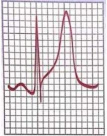
A Hipocalcemia – Gluconato de Cálcio, Carbonato de Cálcio e Vitamina D.
B Hipercalcemia – Soro Fisiológico, Furosemida e Hemodiálise.
C Hipercalemia – Gluconato de Cálcio, Bicabornato de Sódio, Solução Glicoinsulina e Hemodiálise.
D Hipocalemia – KCl 19,1% 10 meq/h e Reposição de Magnésio.
Revisar: possível letra faltando em enunciado
Questão 1020 · Esquistossomose · 4000001264A esquistossomose é uma doença parasitária que pode acometer as crianças nas várias fases de sua vida. Essa doença:
A É transmitida por meio de alimentos crus mal-lavados.
B É caracterizada pelo depósito dos ovos das cercárias no intestino das crianças.
C Pode apresentar, inicialmente, pruridos na pele.
D É tratada com mebendazol, duas vezes ao dia, por sete dias.
Questão 1021 · Endocrinologia · 4000001262Dentro dos aspectos de prevenção do Diabetes, tanto farmacológico quanto comportamental, na população de risco, assinale a alternativa INCORRETA.
A A metformina é indicação prioritária, sobretudo, em paciente com menor peso e com idade superior a 65 anos.
B Acarbose pode ser considerado, para pacientes jovens, risco moderado/alto para desenvolvimento de DM2.
C Pioglitazona pode ser considerado, para pacientes jovens, risco moderado/alto para desenvolvimento de DM2.
D Medicações podem ser indicadas, desde que não apresentem contraindicações outras para tais medicamentos.
Questão 1022 · Reumatologia · 4000001253A depressão pode ser estudada como um dos possíveis fatores etiológicos do diabetes. Alguns estudos evidenciaram que a depressão prediz a ocorrência posterior da doença. A partir dessa análise, é possível a existência de um efeito sinérgico entre a depressão e o diabetes, ou seja, o resultado das duas condições juntas seria maior do que apenas o somatório dos seus efeitos. Estudos demonstram que os hábitos de vida (exercícios, controle do peso corporal e tabagismo) explicam uma parte considerável da associação entre depressão e controle glicêmico em diabéticos tipo 2 ao longo de anos. São adequadas as alternativas a seguir, com EXCEÇÃO de uma. Indique-a.
A Um estudo brasileiro avaliou pacientes diabéticos tipo 2 e encontrou não apenas elevada prevalência de depressão, mas também correlação positiva entre a gravidade do quadro depressivo e a gravidade da polineuropatia diabética distal simétrica.
B Na população geral, a depressão é responsável por piora na morbidade e na mortalidade, mesmo na ausência de diabetes.
C A presença de depressão tem impacto negativo sobre o controle metabólico e, por outro lado, um mau controle metabólico não altera a depressão.
D Um estudo demonstrou que a depressão seria um importante fator de risco para doenças micro e macrovasculares, perda da autonomia e até mesmo mortalidade pelo diabetes.
Questão 1023 · Avaliação laboratorial do f erro · Classif icação das anemias Foco na f erropriva · 4000001244Quais as alterações que se espera encontrar no hemograma de uma criança com anemia ferropriva?
A VCM baixo e RDW baixo.
B VCM alto e RDW normal.
C VCM baixo e RDW alto.
D VCM baixo e RDW normal.
Questão 1024 · Endocrinologia · 4000001241Durante a prática diária, é necessário valorizar outros fatores importantes, como Acidente Vascular Cerebral (AVC), ingestão excessiva de álcool, pancreatite aguda, Infarto Agudo do Miocárdio (IAM), traumas e uso de glicocorticoides, como associados à Cetoacidose Diabética (CAD) e o Estado Hiperglicêmico Hiperosmolar (EHH), que são as duas complicações agudas graves que podem ocorrer durante a evolução do diabetes mellitus. Dentre essas associações, aponte a ERRADA.
A Atualmente, com o uso mais frequente de bombas de infusão contínua subcutânea de insulina ultrarrápida, tem-se observado aumento na incidência de CAD. Tal fato pode ocorrer em razão da obstrução parcial ou total do cateter, provocando redução aguda de infusão de insulina.
B A descompensação glicêmica costuma ser mais prolongada e mais grave em pacientes com DM1 recém-diagnosticados.
C A descompensação glicêmica costuma ser mais prolongada e mais grave em idosos com diabetes associado a processos infecciosos ou com limitações no autocontrole físico ou psíquico.
D A utilização crescente na prática psiquiátrica de compostos denominados de antipsicóticos atípicos para tratamento de transtorno de humor bipolar e esquizofrenia (por ex.: clozapina, olanzapina, risperidona e quetiapina) é capaz de diminuir o risco de distúrbios metabólicos.
Questão 1025 · Quadro Clínico · 4000001234Criança de 5 anos de idade chega a Unidade Básica de Saúde acompanhada da avó, com queixa principal de cefaleia e vômitos. Qual(is) o(s) sinal/sintoma(s) que sugerem a hipótese diagnóstica de tumor cerebral?
A Febre e dor em membros.
B Melhora da cefaleia com analgésico.
C Marcha claudicante e estrabismo.
D Sonolência.
Questão 1026 · Endocrinologia · 4000001229Dentro do que consideramos modi cações no estilo de vida na população exposta ao diabetes, aponte a alternativa INCORRETA.
A As modificações positivas do estilo de vida podem ter papel decisivo na prevenção do diabetes.
B Pacientes devem alterar seu estilo de vida, com modificação dos hábitos alimentares, perda ponderal (redução de ao menos 30% do peso corporal) caso apresentem sobrepeso ou obesidade.
C Hábitos de vida mais saudáveis (dieta balanceada, rica em fibras, visando peso corporal realisticamente adequado, associada à atividade física de, pelo menos, 150 minutos semanais) são capazes – em indivíduos pré-diabéticos de reduzir seu risco de DM.
D Estudos também demonstraram a eficácia da acarbose, da metformina e da pioglitazona na prevenção do DM2.
Questão 1027 · Reumatologia · 4000001217A presença de depressão tem impacto negativo sobre o controle metabólico e, por outro lado, o distúrbio psiquiátrico também interage no tratamento medicamentoso do diabetes devido à necessidade de uso de psicofármacos. Os efeitos dos antidepressivos sobre a glicose, peso, entre outros estão listados a seguir, com EXCEÇÃO de um. Assinale- o.
A O uso da fluoxetina parece estar associado à piora nos níveis de HbA1c, aumento da necessidade de insulina e perda de peso. Esse efeito sobre a sensibilidade à insulina ocorre independentemente do seu efeito sobre o peso.
B A sertralina pode também reduzir a HbA1c, e o seu efeito sobre o ganho de peso é incomum.
C Com o uso da paroxetina pode haver ganho de peso em uma significativa minoria.
D A nortriptilina melhorou a depressão, mas piorou o controle glicêmico em pacientes diabéticos.
Questão 1028 · Reumatologia · 4000001209Sobre o Midazolam, assinale a alternativa INCORRETA.
A É uma droga lipossolúvel.
B Tem alta ligação com as proteínas plasmáticas.
C É metabolizada pelos rins.
D Sua farmacocinética é afetada pela obesidade.
Questão 1029 · Neurologia · 4000001201Paciente hipertenso mal controlado, rebelde ao uso de medicação diária que é Propranolol, foi trazido ao hospital com intensa cefaleia e perda motora do lado direito do corpo. Sua pressão era de 210 x 120 mmHg. Foi realizado Tomogra a de Crânio que demonstrava sangramento. Diante de tal situação, marque a opção INCORRETA.
A Para pacientes com PAS entre 150 e 220 mmHg e sem contraindicação para o tratamento, a redução aguda da PAS para 140 mmHg é segura.
B Para pacientes com PAS entre 150 e 220 mmHg, a redução aguda da PAS pode ser eficaz para melhorar o desfecho funcional.
C Para pacientes com PAS entre 150 e 220 mmHg, a redução aguda da PAS em 1 hora com infusão IV de anti-hipertensivos é benéfica.
D Para pacientes com PAS entre 150 e 220 mmHg, a redução da PAS necessita de monitorização da PA horária.
Questão 1030 · Hepatologia · 4000001199A hemobilia letal, secundária a um trauma abdominal penetrante, foi descrita por Glisson em 1654. Sobre esta patologia, assinale a alternativa INCORRETA.
A A causa mais comum de hemobilia é o trauma iatrogênico do fígado e via biliar.
B A intervenção cirúrgica está indicada quando houver hemobilia de sangramento arterial.
C A tríade clássica é representada por dor abdominal superior, hemorragia digestiva gastrointestinal alta e icterícia.
D A primeira linha de tratamento para hemobilia volumosa é a embolização transarterial.
Questão 1031 · Manif estações articulares · Prognóstico · Artrite reumatoide AR · 4000001192A artrite reumatoide apresenta caráter crônico e destrutivo, que pode levar à importante limitação funcional, com perda da capacidade laboral e qualidade de vida, a menos que o diagnóstico seja feito em fase inicial da doença e o tratamento determine melhora clínica. A respeito da doença, assinale a alternativa INCORRETA.
A O período inicial da doença é considerado uma janela de oportunidade terapêutica.
B O período inicial da doença é considerado um momento em que a intervenção farmacológica rápida e efetiva pode mudar o curso da doença em longo prazo.
C O período inicial da doença, em especial seus 24 primeiros meses, é o chamado AR inicial.
D Esses fatores resultaram no melhor controle clínico da doença, com a possibilidade de remissão sustentada da AR.
Questão 1032 · Fisiopatologia e Fatores de Risco · 4000001178Um paciente de 70 anos, com síndrome demencial, após avaliação neurológica exaustiva foi diagnosticado como doença de Alzheimer. Qual é o achado predominante na doença de Alzheimer?
A Desmielinização.
B Atrofia dos ganglios da base.
C Perda neuronal no córtex cerebral.
D Perda das células pigmentadas na substância negra.
Questão 1033 · Anamnese e exame f ísico · Def inição · 4000001175A angina pectoris instável é conhecida como angina de:
A Korotkoff.
B Prinzmetal.
C Simmers.
D Blomberg.
E NDA.
Questão 1034 · Cardiologia · 4000001174Dados epidemiológicos a respeito da doença do nó sinusal demonstram que as seguintes a rmativas estão adequadas, com EXCEÇÃO de uma. Assinale-a.
A A doença do nó sinusal afeta 1 a cada 600 pessoas com idade > 65 anos (média de 74 anos), somente ocorrendo em idosos.
B Os distúrbios eletrolíticos mais comumente envolvidos são a hiperpotassemia, a hipopotassemia e a hipocalcemia.
C Os sintomas mais comuns dos portadores de doença do nó sinusal são tonturas, vertigens, pré- síncope, síncope, palpitações, intolerância ao exercício e fadiga, geralmente intermitentes.
D As principais manifestações eletrocardiográficas da doença do nó sinusal são bradicardia sinusal, pausas ou paradas sinusais, bloqueio sinoatrial, taquicardia atrial, fibrilação atrial e incompetência cronotrópica.
Questão 1035 · Reumatologia · 4000001171Ataques recorrentes e inesperados de ansiedade grave, medo de enlouquecer ou morrer, sensação de asfixia, vertigem, ondas de calor, com exames clínicos normais ou que não justificam o quadro:
A Fobia ou ansiedade social.
B Transtorno dissociativo.
C Transtorno de pânico.
D Transtorno de somatização.
E Transtorno de ansiedade generalizada.
Questão 1036 · Inf ectologia · 4000001169Dentre as doenças abaixo, qual das opções contém apenas doenças imunopreveníveis?
A Tétano, escarlatina e sarampo.
B Difteria, calazar e sarampo.
C Coqueluche, rubéola e malária.
D Febre amarela, tétano e difteria.
E NDA.
Questão 1037 · Pneumologia · 4000001168O principal diagnóstico diferencial ao raio X de tórax do carcinoma pulmonar é:
A Tuberculose.
B Abscesso.
C Bola fúngica.
D Todas as anteriores.
E NDA.
Questão 1038 · Diuréticos · Tratamento · Ascite · 4000001164Na abordagem farmacológica de 1ª escolha da ascite do hepatopata crônico, deve ser considerado:
A Espironolactona.
B Espironolactona + furosemida.
C Furosemida.
D Duas alternativas estão corretas.
E Todas as alternativas são incorretas.
Questão 1039 · Clínica Médica · Hepatologia · Transaminases TGO e TGPAminotransf erases AST e ALT · 4000001163Na avaliação das enzimas hepáticas, podemos afirmar que:
A ALT é marcador de doença crônica.
B AST é marcador de doença aguda.
C ALT/AST expressam lesão hepatocelular.
D Duas alternativas estão corretas.
E Todas as alternativas estão incorretas.
Questão 1040 · Cardiologia · 4000001156A indicação mais comum para o implante de marca-passo definitivo é a doença do nó sinusal, condição em que existe disfunção do nó sinusal sintomática, caracterizada por anormalidades da geração e da condução do estímulo sinusal. A respeito das afirmações a seguir, indique aquela que é considerada INADEQUADA.
A Existe a facilitação na passagem do estímulo do nó sinusal para o tecido atrial.
B Ocorrem anormalidades da transmissão do impulso dentro dos átrios e para o sistema de condução cardíaco.
C Disfunção na atividade de marca-passos subsidiários, e taquiarritmias crônicas e paroxísticas, principalmente a fibrilação atrial.
D A etiologia da doença do nó sinusal pode ser intrínseca, que inclui processos inflamatórios, infecciosos e imunológicos, fibrose degenerativa, disfunção de canais iônicos e remodelamento do nó sinusal.
Questão 1041 · Endocrinologia · 4000001137A Cetoacidose Diabética (CAD) e o Estado Hiperglicêmico Hiperosmolar (EHH) são as duas complicações agudas graves que podem ocorrer durante a evolução do Diabetes Mellitus. A CAD está presente em aproximadamente 25% dos casos no momento do diagnóstico do DM1 e é a causa mais comum de morte entre crianças e adolescentes com DM1, sendo também responsável por metade das mortes nesses pacientes com DM1 com menos de 24 anos. São importantes aspectos sobre sua gênese os descritos a seguir, com EXCEÇÃO de um deles. Indique-o.
A Os estados infecciosos são as etiologias mais comuns de CAD e EHH. Entre as infecções, as mais frequentes são as do trato respiratório superior, as pneumonias e as infecções de vias urinárias.
B Ocorre a necessidade valorizar outros fatores importantes, como Acidente Vascular Cerebral (AVC) , ingestão excessiva de álcool, pancreatite aguda, Infarto Agudo do Miocárdio (IAM), traumas e uso de glicocorticoides.
C Ocorre os maiores riscos com o uso de risperidona e quetiapina.
D Os distúrbios psiquiátricos associados a irregularidades na condução da dieta ou no uso diário de insulina também podem contribuir para a CAD.
Questão 1042 · Cardiologia · 4000001116A doença do nó sinusal, condição em que existe disfunção do nó sinusal sintomática, é caracterizada por anormalidades da geração e da condução do estímulo sinusal, levando a ritmos com frequência cardíaca < 60 bpm, que são definidos como bradicardia. Assim, aponte a alternativa INCORRETA.
A As bradicardias sintomáticas têm características clínicas comuns, marcadas, sobretudo, pela síndrome do baixo fluxo cerebral e/ou sistêmico, cujos sintomas mais comuns são tontura, pré- síncope, síncope, fadiga, dispneia de esforço e bradipsiquismo, sendo comumente ocasionadas por doença do nó sinusal e bloqueio atrioventricular.
B As sintomáticas, geralmente, são de causas fisiológicas, representadas por bradicardia sinusal e ritmos de escape da junção atrioventricular.
C Fatores extrínsecos também podem causar bradicardia, como uso de fármacos que deprimem o sistema de condução ou distúrbios metabólicos ou endócrinos, como hipotireoidismo, hiperpotassemia e hipotermia.
D Considerando que não há fármacos adequados para o tratamento das bradicardias sintomáticas irreversíveis, o implante de marca-passo definitivo é o tratamento mais indicado para essas afecções.
Questão 1043 · Hepatectomia · 4000001114Segundo Couinauld, a Hepatectomia Esquerda estendida inclui os seguintes segmentos hepáticos:
A V, VI e VII.
B II, III e IV.
C II, III, IV e VIII.
D IV, V, VI, VII e VIII.
Questão 1044 · Cardiologia · 4000001099A frequência cardíaca normalmente varia de 60 bpm a 100 bpm. Ritmos com Frequência Cardíaca < 60 bpm são definidos como bradicardia, podendo ser assintomática ou sintomática. As bradicardias sintomáticas têm características clínicas comuns, marcadas, sobretudo, pela síndrome do baixo uxo, comumente ocasionadas por doença do nó sinusal. Na doença do nó sinusal, o implante de marca-passo é indicado nos casos a seguir, com EXCEÇÃO de
A incompetência cronotrópica sintomática.
B bradicardia sinusal sintomática, secundária ao uso de fármacos indispensáveis.
C síncope de origem indeterminada, com evidências eletrocardiográficas de disfunção do nó sinusal documentada ou provocada no estudo eletrofisiológico.
D disfunção do nó sinusal com frequência cardíaca < 60 bpm em vigília, sem correlação clara entre os sintomas e a bradicardia documentada.
Questão 1045 · Cardiologia · 4000001085Quando após criteriosa avaliação clínica de uma bradicardia sinusal é constatada a ausência de causas reversíveis, o implante de marca-passo definitivo é tratamento efetivo para a disfunção sinusal sintomática. Sobre isso, assinale a alternativa INCORRETA.
A Apesar de não modificar a taxa de sobrevida, o marca-passo permite a melhora tanto dos sintomas como da qualidade de vida dessa população.
B Portadores de doença do nó sinusal na ausência de estimulação cardíaca (ou seja, sem marca-passo) raramente evoluem com eventos sintomáticos que podem exigir tratamento imediato, tais como síncope, insuficiência cardíaca descompensada e fibrilação atrial permanente, além de taquiarritmias paroxísticas com resposta ventricular elevada.
C O implante de marca-passo melhora significativamente a qualidade de vida dos portadores de doença do nó sinusal a partir do terceiro mês do procedimento, sem modificar a mortalidade por qualquer causa.
D Em pelo menos metade dos pacientes com doença do nó sinusal, observam-se bradiarritmias alternando-se com taquiarritmias atriais.
Questão 1046 · Neurologia · 4000001053Paciente deu entrada na sala de emergência com di culdade respiratória e rebaixada. Apresentava perda motora e incoordenação dos movimentos. Apresenta PA de 200 x 110 mmHg. A hipótese diagnóstica inicial foi a de AVC. Diante de tal quadro, assinale a alternativa contendo a conduta inicial MAIS adequada.
A Iniciar atendimento com ABCDE.
B Caso menor que 4 horas propor trombólise.
C Para pacientes com PAS entre 150 e 220 mmHg e sem contraindicação para o tratamento, a redução aguda da PAS para 140 mmHg é segura e pode ser eficaz para melhorar o desfecho funcional.
D Inicialmente solicitar Tomografia de Crânio antes de qualquer conduta inicial.
Questão 1047 · Cardiologia · 4000001040Paciente procurou Pronto-socorro com intensa dor torácica e dispneia de início nesta manhã. Refere ser hipertenso e tabagista. Seu ECG demonstra supra de segmento ST de 3 mm nas derivações D2 e D3. Marque a opção que NÃO influencia na mortalidade, nesse caso.
A Ausculta cardíaca.
B Ausculta pulmonar.
C Alterações à direita.
D Local da dor torácica.
Questão 1048 · Pneumologia · 4000001036Quilotórax ocorre quando a linfa do ducto torácico se acumula no espaço pleural. Assinale a alternativa INCORRETA em relação ao seu diagnóstico e tratamento.
A O diagnóstico pode ser feito com toracocentese ou drenagem do derrame quiloso. Análise do líquido pleural com presença de quilomicrons confirma o diagnóstico.
B Dieta de triglicerídeo de cadeia média ou NPT são indicados inicialmente.
C Causas de quilotórax incluem traumas de tórax e pescoço fechados e penetrantes, pós- cateterismo de veia subclávia, linfoma, mediastinite, simpatectomia.
D Ligadura do ducto torácico no ponto onde no tórax através do hiato diafragmático é obtida através de toracotomia esquerda ou toracoscopia.
Questão 1049 · Neurologia · 4000001016Uma paciente vítima de TCE é encontrada desacordada. Após 10 minutos, apresenta abertura ocular aos estímulos dolorosos, decorticação como melhor resposta motora, emitindo sons incompreensíveis. Diante desse quadro, podemos AFIRMAR que seu Glasgow é:
A 6.
B 7.
C 8.
D 9.
Questão 1050 · Divisão Anatômica e Funcional do Estômago · Anatomia e Fisiologia Gastroduodenal · Cirurgia · 4000001009Assinale a alternativa INCORRETA em relação à anatomia gástrica macroscópica.
A O plexo celíaco é a principal fonte do suprimento sanguíneo para o estômago. Existem quatro artérias principais – as artérias gástricas esquerda e direita e a artéria gastroepiplóica direita e esquerda. Uma quantidade substancial de sangue pod ser suprida pelas artérias frênicas inferiores e pelas artérias gástricas curtas.
B A mais volumosa artéria para o estômago é a artéria gástrica direita, e não é incomum (15-20%) que uma artéria hepática esquerda aberrante se origine dela.
C A inervação extrínseca do estômago é parassimpática (via vago) e simpática (pelo plexo celíaco). Na junção gastroesofágica, o vago esquerdo é anterior e o vago direito é posterior.
D As veias gástricas esquerda e direita geralmente drenam para dentro da veia porta. A veia gastroepiploica direita drena para a veia mesentérica superior, e a veia gastroepiplóica esquerda drena para veia esplênica.
Questão 1051 · Síndrome nef rítica · Quando indicar biópsia renal · 4000000993NÃO se constitui em uma indicação para biópsia renal na síndrome nefrítica:
A Anúria ou oligúria importante por mais de 72 horas.
B Proteinúria nefrótica por mais de 2 semanas.
C Hipertensão ou hematúria macroscópica por mais de 6 semanas.
D C3 baixo por mais de 8 semanas.
Questão 1052 · Clínica Médica · Hepatologia · Diagnóstico · 4000000937Utilizando o GASA como diagnóstico diferencial da ascite, é verdadeiro afirmar:
A GASA > ou = 1,1 é compatível com hipertensão portal.
B GASA > ou = 1,1 é compatível com síndrome nefrótica.
C GASA < ou = 1,1 é compatível com carcinomatose.
D GASA < ou = 1,1 é compatível com pancreatite crônica.
E Todas as alternativas estão corretas.
Questão 1053 · Hanseníase · 4000000936Sobre a hanseníase, sabe-se que esta pode causar alteração de sensibilidade, que sempre deve ser pesquisada no exame físico. Qual a sequência de alteração de sensibilidade em ordem, a partir daquela que altera primeiro até a última?
A Dolorosa, tátil, térmica.
B Térmica, dolorosa, tátil.
C Tátil, térmica, dolorosa.
D Dolorosa, térmica, tátil.
E Térmica, tátil, dolorosa.
Questão 1054 · Melanoma · 4000000934Sobre o melanoma, qual é o subtipo mais frequente e qual a classificação que está diretamente relacionada ao prognóstico do paciente, respectivamente?
A Nodular e Clark.
B Extensivo superficial e Clark.
C Extensivo superficial e Breslow.
D Lentiginoso acral e Clark.
E Nodular e Breslow.
Questão 1055 · Hepatologia · 4000000886Marque a opção INCORRETA quanto à hemobilia.
A A exploração cirúrgica da árvore biliar pode resultar em hemobilia por lesão direta ou pela formação de pseudoaneurisma arterial.
B O tratamento de primeira linha para uma hemobilia volumosa é a intervenção cirúrgica e envolve a ligadura de vasos sangrantes, excisão do aneurisma ou a ligadura não seletiva de uma artéria hepática principal.
C A hemobilia secundária à lesão acidental é mais comum no trauma abdominal fechado do que no penetrante.
D A tríade clássica de sintomas e sinais de hemobilia são dor abdominal superior, hemorragia gastrointestinal alta e icterícia.
Questão 1056 · Hepatologia · 4000000820Em relação à colecistite aguda alitiásica, assinale a alternativa INCORRETA.
A Embora a fisiopatologia exata seja pobremente compreendida, a concentração de solutos biliares e a estase na vesícula biliar certamente têm um papel importante.
B Os fatores de risco para o desenvolvimento de colecistite alitiásica são: idade avançada, doenças graves, queimaduras, trauma, uso prolongado de nutrição parenteral total, diabetes e imunossupressão.
C A drenagem percutânea de uma vesícula distendida e inflamada é indicada para todos os pacientes com colecistite aguda alitiásica.
D O quadro clínico da colecistite alitiásica pode ser similar ao da doença calculosa com febre, anorexia e dor no quadrante superior direito.
Questão 1057 · Etiologia · 4000000808Assinale a alternativa INCORRETA a respeito dos fatores de risco da pancreatite aguda.
A A pancreatite por cálculos biliares é mais observada em mulheres entre 50-70 anos de idade.
B O consumo excessivo de álcool é a segunda causa mais comum de pancreatite aguda no mundo e é mais prevalente em jovens do sexo masculino (30-45 anos de idade).
C A lesão pancreática direta pode ser induzida por metabólitos triglicerídeos e deve ser suspeitada em pacientes com nível de triglicerídeo mais alto do que 1.000 mg/dL.
D A hipotensão intraoperatória prolongada não tem relação com a pancreatite aguda.
Questão 1058 · Hepatologia · 4000000797Assinale a alternativa INCORRETA com relação à coledocolitíase.
A A coledocolitíase primária é usualmente de cálculos pigmentares marrons, que são uma combinação de pigmentos biliares precipitados e colesterol.
B Muitos cálculos do colédoco são clinicamente silenciosos e podem ser identificados por uma colangiografia, se realizada rotineiramente durante a colecistectomia.
C A icterícia com coledocolitíase é mais provável de ser dolorosa, pois o começo da obstrução é agudo, causando rápida distensão do ducto biliar e irritação das fibras que causam a dor.
D A tríade de Charcot é caracterizada pela hipotensão, dor no quadrante superior direito e icterícia.
Questão 1059 · Fisiologia do Intestino Delgado · 4000000790Associe os Hormônios Gastrointestinais a seus respectivos Efeitos Primários e, em seguida, marque a opção contendo a sequência CORRETA. (Conforme imagem do caderno de questões).
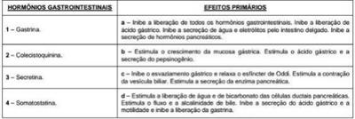
A 1-b / 2-d / 3-c / 4-a
B 1-b / 2-c / 3-a / 4-d
C 1-b / 2-c / 3-d / 4-a
D 1-d / 2-a / 3-b / 4-c
Questão 1060 · Síndrome de MalloryWeiss · Gastroenterologia · 4000000759Hemorragia Digestiva Alta Não Varicosa HDA Nâo Varicosa Assinale a alternativa INCORRETA sobre a Laceração de Mallory-Weiss.
A Está relacionada com vômitos explosivos, regurgitação, tosse ou esforço excessivo.
B Ocorre ruptura da mucosa gástrica em uma parte alta da curvatura maior na junção gastroesofágica.
C Raramente está associada a um sangramento generoso.
D A maioria dos pacientes com sangramento ativo pode ser tratada com métodos endoscópicos, como a coagulação multipolar, a injeção de epinefrina, a ligadura com uma banda elástica e/ou a hemoclipagem endoscópica.
Questão 1061 · Nef rologia · 4000000755Em episódios recorrentes de cistite por persistência do germe, a indicação para terapia antimicrobiana profilática em adultos é mais frequente em mulheres:
A Que fazem uso de dispositivo intrauterino.
B Com mais de três episódios de cistite no ano.
C Com sonda urinária de demora.
D Sem melhoras dos sintomas com 14 dias de tratamento.
Questão 1062 · Tratamento Cirúrgico da Úlcera Péptica · Adenocarcinoma Gástrico · Cirurgia · 4000000747Aponte a alternativa INCORRETA com relação às síndromes pós-gastrectomia.
A A síndrome de Dumping pode ser precoce (20-30 minutos após a ingestão) ou tardia (duas ou três horas após uma refeição) e é mais comum após gastrectomia parcial com reconstrução à Billroth II.
B A síndrome da alça aferente ocorre como resultado de uma obstrução parcial da alça aferente, que é incapaz de esvaziar os seus conteúdos.
C A obstrução da alça eferente geralmente é rara e pode ocorrer a qualquer momento após a operação; no entanto, mais de 50% dos pacientes ficam obstruídos no primeiro mês de pós- operatório.
D A maior parte dos pacientes que sofrem de gastrite por refluxo alcalino foi submetida à ressecção gástrica com anastomose à Billroth I.
Questão 1063 · Neurologia · 4000000729Quanto aos hematomas epidurais traumáticos, aponte a alternativa INCORRETA.
A São relativamente raros, ocorrendo em 0,5% de todos os doentes com trauma craniencefálico e em 9% dos doentes com lesão cerebral traumática e que estão em coma.
B Esses hematomas tipicamente adquirem a forma biconvexa ou lenticular à medida que empurram a dura aderente em direção oposta à da tábua interna do crânio.
C O intervalo lúcido é a apresentação clássica do hematoma epidural.
D Estão localizados mais frequentemente na região frontal e habitualmente resultam da ruptura da artéria meníngea média causada por uma fratura.
Questão 1064 · Pneumologia · 4000000698À qual classe da classificação de Mallampati corresponde a figura a seguir? (Conforme imagem )
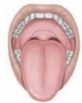
A Classe I.
B Classe II.
C Classe III.
D Classe IV.
Questão 1065 · Impetigo · 4000000691Uma criança de três anos de idade apresenta impetigo estreptocócico extenso e em diferentes sítios. Seu estado geral não está comprometido. O melhor tratamento nesse caso é:
A Aplicação de ácido fusídico sobre as crostas.
B Remoção das crostas com compressas mornas.
C Utilização de clindamicina intramuscular.
D Utilização de penicilina benzatina intramuscular.
Questão 1066 · Neurologia · 4000000680Em um paciente vítima de traumatismo craniencefálico, que deu entrada no Pronto-socorro apresentando abertura ocular somente ao estímulo doloroso, sons incompreensíveis na resposta verbal e exão anormal (decorticação) como melhores respostas, qual é o Glasgow deste paciente?
A 6
B 7
C 8
D 9
Questão 1067 · Neurologia · 4000000669Quanto aos hematomas subdurais nos traumas, aponte a alternativa INCORRETA.
A São mais comuns que os hematomas epidurais, ocorrendo em aproximadamente 30% dos TCEs graves.
B Ocorrem mais frequentemente por dilaceração de vasos superficiais pequenos ou vasos ponte do córtex cerebral.
C O comprometimento cerebral subjacente ao hematoma subdural é mais leve do que nos hematomas epidurais.
D Frequentemente parecem assumir a forma do contorno do cérebro na tomografia.
Questão 1068 · Tratamento · Tratamento · Tratamento · 4000000626Considerando o melhor tratamento das parasitoses intestinais, numere a coluna da direita de acordo com a da esquerda. (1) Teníase; ( ) Albendazol (2) Ascaridíase; ( ) Metronidazol; (3) Estrongiloidíase; ( ) Mebendazol; (4) Amebíase; ( ) Praziquantel; (5) Enterobíase; ( ) Ivermectina. A ordem correta da numeração, na coluna da direita, de cima para baixo, é:
A 3 - 5 - 2 - 1 - 4.
B 2 - 5 - 1 - 4 - 3.
C 2 - 4 - 5 - 3 - 1.
D 2 - 4 - 5 - 1 - 3.
Questão 1069 · Angiotomograf ia de tórax · Filtro de Veia Cava · Ddímero · 4000000458Paciente de 26 anos, do sexo feminino, evolui, no quinto dia pós-parto cesáreo, com dispneia e dor torácica. Sem história de hipertensão arterial, diabetes e/ou tabagismo. Ao exame físico, notam-se edema assimétrico do membro inferior esquerdo, empastamento da panturrilha e sinal de Pratt positivo. Diante do quadro clínico, para a confirmação diagnóstica e o tratamento, a conduta indicada é:
A Angiotomografia de tórax e filtro de veia cava.
B Doppler venoso dos membros inferiores e anticoagulação plena.
C d-dímero e anticoagulação plena.
D Doppler venoso dos membros inferiores e filtro de veia cava.
Questão 1070 · Baço · 4000000440Em relação à função esplênica, é INCORRETO afirmar que:
A Durante o desenvolvimento fetal tem função hematopoiética.
B As opsoninas produzidas no baço, como properdina e tuftsina, encontram-se com níveis séricos aumentados após esplenectomia.
C É a substância biológica removida pelo baço em indivíduos saudáveis: corpos de Howell-Jolly, corpos de Heinz, acantócitos, hemácias senescentes.
D O baço está envolvido na destruição de plaquetas na Púrpura Trombocitopênica Imune.
Questão 1071 · Atelectasia · 4000000429A retração do volume pulmonar ou de parte dele, em consequência da reabsorção do ar alveolar pela obstrução total do brônquio que areja a área alterada, caracteriza:
A A pneumonia.
B A atelectasia.
C A DPOC.
D O enfisema.
Questão 1072 · Manif estações Clínicas · Sangramento Diverticular · 4000000421Em qual das complicações da doença diverticular do cólon pode ser indicado o tratamento clínico?
A Hemorragia.
B Perfuração do divertículo.
C Carcinoma concomitante.
D Obstrução intestinal.
Questão 1073 · Tratamento Cirúrgico da DRGE · Cirurgia · 4000000414No tratamento cirúrgico da DRGE, a técnica empregada é denominada de:
A Puestow.
B Heller.
C Nissen.
D Bassini.
Questão 1074 · Cirurgia · Tratamento · 4000000402No tratamento cirúrgico do megaesôfago pela técnica de Heller-Pinotti, a miotomia incompleta manifesta- se como:
A Soluços.
B Pirose.
C Vômitos.
D Disfagia.
Questão 1075 · Gastroenterologia · Def inição · 4000000396A substituição do epitélio esofágico por epitélio colunar metaplásico, visível macroscopicamente, é denominada de:
A Esôfago quebra-nozes.
B Esôfago eosinofílico.
C Esôfago de Barrett.
D Esôfago hipotônico.
Questão 1076 · Pneumonia adquirida na comunidade PAC · Quadro clínico · 4000000388Defina a alternativa correta relacionada à pneumonia.
A A imagem radiológica é diagnostica na diferenciação da pneumonia bacteriana e viral.
B A Meningite e a Artrite Supurativa são complicações frequentes.
C A taquipneia é o sinal clínico mais consistente na Pneumonia.
D A contagem de leucócitos periféricos não é útil na diferenciação de bacteriana e viral.
E A história clínica e os sintomas como tiragem e batimento de asa do nariz, não são fatores de gravidade.
Questão 1077 · Investigação · Hemorragia Subaracnoidea HSA · 4000000367Uma mulher de 37 anos apresentou, há algumas horas, cefaleia em trovoada, súbita, de fortíssima intensidade, acompanhada de alteração do nível de consciência e fotofobia. Não há relato de comorbidades sistêmicas prévias e tem história pessoal de enxaqueca clássica, com bom controle de cefaleia, sem necessidade de tratamento pro lático. À avaliação clínica, apresentava-se discretamente hipertensa (PA = 146 x 89 mmHg) e com rigidez de nuca moderada. A tomogra a não contrastada de crânio mostrava-se normal para a faixa etária. A propedêutica diagnóstica mais adequada para o caso é a realização de:
A Eletroencefalografia com fotoestimulação.
B Prova terapêutica com indometacina.
C Doppler cervical de artérias carótidas.
D Punção liquórica lombar.
Questão 1078 · Diuréticos · Betabloqueadores · Bloqueadores dos canais de cálcio BCC · 4000000360O manejo do paciente hipertenso é de grande importância na prática clínica diária, por isso os conhecimentos sobre os fármacos utilizados para o tratamento da hipertensão arterial sistêmica e seus riscos são pré-requisitos básicos para o seu emprego adequado e responsável pelo médico que irá atuar nas unidades básicas de saúde. Tendo em vista o exposto acima, relacione as colunas, associando os efeitos adversos aos respectivos fármacos. (1) Hidroclorotiazida; (2) Propranolol; (3) Anlodipino; (4) Captopril. ( ) Tosse e hipercalemia; ( ) Broncoespasmo, insu ciência circulatória periférica, bradiarritmias e mascaramento de hipoglicemia em diabéticos; ( ) Hipocalemia e hiperuricemia; ( ) Cefaleia, edema periférico e palpitação. A ordem numérica CORRETA, na coluna inferior, de cima para baixo é:
A 2 - 3 - 4 - 1.
B 2 - 4 - 1 - 3.
C 4 - 2 - 1 - 3.
D 4 - 1 - 3 - 2.
Questão 1079 · Diagnóstico da síndrome do anticorpo antif osf olipídeo SAAF · 4000000353Paciente do sexo feminino, de 40 anos, de cor negra, hígida até então, sem antecedentes patológicos, com quadro de hemiparesia súbita à esquerda. Ao exame físico, apresenta hemiparesia de membros à esquerda, sem outras alterações. O ecocardiograma transesofágico é normal, sem presença de forame oval patente ou aneurisma de septo. Holter é normal. Doppler de carótidas é normal. Tomogra a de crânio mostra área de isquemia à direita. Qual é a investigação a ser conduzida?
A Pesquisa de trombofilias hereditárias.
B Pesquisa de síndrome do anticorpo antifosfolípide.
C Pesquisa de hemoglobinúria paroxística noturna.
D Eletroforese de hemoglobinas.
Questão 1080 · Angiotomograf ia de tórax · 4000000346J.P.S., de 65 anos, do sexo feminino, é admitida com dor torácica de início súbito e dispneia intensa. Relata fratura de fêmur, com alta na manhã do dia de hoje. É portadora de diabetes mellitus e HAS. Relata edema de membros inferiores, mais intenso à esquerda, com endurecimento da panturrilha. Em função da alta probabilidade de evento tromboembólico, indica-se investigação complementar com exames de imagem. No diagnóstico de tromboembolismo pulmonar:
A O uso de angiorressonância está indicado quando a suspeita recair para êmbolos em segmentos pulmonares menores.
B A cintilografia pulmonar de ventilação–perfusão é considerada de alta probabilidade e estima uma chance de acerto de diagnóstico superior a 99%.
C A angiotomografia helicoidal pode fornecer informações até os ramos de sexta ordem, além de propiciar análise dos ventrículos esquerdo e direito.
D A realização de Doppler venoso de membros inferiores está indicada na investigação de êmbolos antes da realização de exames de imagem pulmonares.
Questão 1081 · Doença Inf lamatória Intestinal · 4000000343Em relação à doença inflamatória intestinal, assinale a alternativa INCORRETA.
A Doença de Crohn é uma doença inflamatória crônica, transmural do trato gastrointestinal de causa desconhecida. Afeta mais comumente o intestino delgado. O risco de desenvolver Crohn é duas vezes mais elevado em fumantes do que em não fumantes.
B São manifestações extraintestinais da doença de Crohn: eritema multiforme, eritema nodoso, pioderma gangrenoso, irite, uveíte, conjuntivite, artrite, espondilite anquilosante, anemia, trombocitose, colangite esclerosante, amiloidose e pancreatite.
C Os corticosteroides, particularmente a prednisona, são benéficos na indução da remissão, porém são ineficazes na manutenção da remissão.
D As operações decorrentes à doença de Crohn são na maioria das vezes curativas, com taxas de recorrência muito baixas.
Questão 1082 · Hepatologia · Classif icação de ChildPugh · 4000000336A classificação de Child-Pugh é largamente utilizada para avaliação da gravidade e do prognóstico de pacientes hepatopatas crônicos. Para seu cálculo, levam-se em conta os seguintes parâmetros:
A TAP, albumina, bilirrubinas, presença de ascite e de encefalopatia.
B Bilirrubinas, albumina, AST, presença de ascite e peritonite bacteriana espontânea.
C TAP, albumina, alfafetoproteína, presença de encefalopatia e varizes de esôfago.
D Albumina, AST, alfafetoproteína, presença de ascite e varizes de esôfago.
Questão 1083 · Síndrome nef rótica · 4000000308Um paciente procura o ambulatório de nefrologia após uma avaliação ambulatorial revelar indícios de glomerulonefrite aguda, com redução de complemento. Em portadores dessa síndrome, NÃO é esperado o encontro de:
A Hipercolesterolemia.
B Hipertensão arterial.
C Hematúria e edema.
D Proteinúria e hematúria no EAS.
Questão 1084 · Escores de avaliação de risco tromboembólico e hemorrágico · 4000000300G.R.E., de 68 anos, é admitido no pronto-socorro com relato de febre e dispneia para tratamento de pneumonia. Constatou-se ritmo cardíaco irregular, o que levou à solicitação de eletrocardiograma, cujo diagnóstico foi fibrilação atrial. Nessas condições:
A O score de CHA2DS2-VASC com resultado menor que um contraindica o uso de anticoagulante.
B O uso de anticoagulantes não cumarínicos está indicado se houver presença de estenose mitral.
C O uso de anticoagulantes é contraindicado se houver indicação de cardioversão.
D A associação com trombo intracavitário proíbe cardioversão, sendo indicado o uso de cumarínicos ou anticoagulantes novos prévios ao procedimento.
Questão 1085 · Manif estações clínicas da hipercalemia · 4000000293R.E.F., de 36 anos, portadora de diabetes e hipertensão, é admitida no pronto-socorro com relato de doença renal crônica e uso de anti-inflamatórios sob automedicação. Queixa-se de náuseas, vômitos, astenia e está sem débito urinário há 24 horas. Exames laboratoriais revelam elevação de ureia e creatinina, mas não foram realizados eletrólitos. Nessa paciente, o eletrocardiograma pode fornecer elementos que revelam a presença de hiperpotassemia, observando-se:
A Inversão de onda T.
B Prolongamento de intervalo QT com predisposição a taquiarritmias.
C Redução de intervalo QT.
D Achatamento de onda P e assistolia em fases avançadas.
Questão 1086 · Causas de PCR · 4000000283Quais das seguintes a rmações melhor descrevem os fatores mais contribuem para o desenvolvimento de parada cardiorespiratória em lactentes e crianças?
A PCR é usualmente o primeiro sintoma de enfermidade cardiovascular subjacente.
B PCR em crianças é provocada com maior frequência por início súbito de arritmias ventriculares.
C PCR em crianças é, com maior frequência, o resultado de bloqueio cardíaco congênito ou outras anormalidades do sistema de condução.
D PCR em crianças é, com maior frequência, o resultado final da deterioração das funções respiratória e circulatória.
E PCR em crianças é muito raro e geralmente não é resultado da piora respiratória
Questão 1087 · Doença de Chagas · 4000000281G.R.R., de 48 anos, assintomático, informa que, em avaliação laboratorial de rotina, foi encontrada sorologia positiva para doença de Chagas. Relata também que realizou eletrocardiograma, que ainda não lhe fora entregue, com alterações, mas não se recorda do laudo. Nessa situação clínica, qual é a alteração eletrocardiográfica MAIS frequente secundária à doença de Chagas?
A Bloqueio de ramo direito associado a bloqueio divisional anterossuperior.
B Bloqueio de ramo esquerdo associado a bloqueio divisional anterossuperior.
C Bloqueio de ramo esquerdo.
D Sobrecarga ventricular esquerda.
Questão 1088 · Febre sem sinais localizatórios FSSL · 4000000222Medicamentos utilizados no tratamento da doenças reumáticas Febre em crianças é um motivo comum de consultas em Atenção Primária à Saúde e, frequentemente, o atendimento é um "encaixe" ou "consulta extra". Independentemente da causa de febre, na maioria das vezes ela não requer tratamento, mas é quase impossível não prescrever um antitérmico à criança para tranquilidade dos pais ou cuidadores. Relacione as drogas antipiréticas listadas abaixo aos seus respectivos efeitos adversos: (1) Paracetamol; (2) Ácido acetilsalicílico; (3) Dipirona; (4) Ibuprofeno. ( ) Síndrome de Reye; ( ) Anemia aplástica; ( ) Necrose hepática; ( ) Retenção hidrossalina. A sequência numérica correta, na coluna inferior, de cima para baixo, é:
A 2 - 1 - 3 - 4.
B 2 - 3 - 1 - 4.
C 2 - 4 - 3 - 1.
D 3 - 2 - 1 - 4.
Questão 1089 · Sinais de alarme · 4000000189Em um paciente com suspeita de dengue no atendimento na Unidade Básica de Saúde, quais dentre os itens abaixo relacionados são sinais de agravamento para dengue hemorrágica? I. Dor abdominal intensa.; II. Hipotensão postural.; III. Redução repentina do hematócrito.; IV. Oligúria.
A Apenas I e II.
B Apenas III e IV.
C Apenas I, II e III.
D Apenas I, II e IV.
Questão 1090 · Investigação etiológica · 4000000175Não se considera como causa fisiológica da hiperprolactinemia:
A Sono.
B Ovulação.
C Coito.
D Manipulação mamária.
Questão 1091 · Inf ecção Urinária e Bacteriúria Assintomática na gestação ITU · Inf ecção urinária na gestação · 4000000020Considerando a infecção do trato urinário na gestação, é CORRETO afirmar que:
A A paciente deve ser internada sempre, mesmo nos casos de cistite, pois as repercussões para a gravidez, como: trabalho de parto prematuro e baixo peso trazem negativas para o feto.
B Os casos de bacteriúria assintomática não devem ser tratados com antibióticos, mas a paciente deve ser orientada a repetir a urocultura.
C Os aminoglicosídeos devem ser utilizados como primeira escolha no tratamento da pielonefrite.
D Nos casos de recidiva ou reinfecção, indica-se o tratamento supressivo, por via oral (ampicilina, nitrofurantoína ou ácido nalidíxico) uma vez ao dia, até duas semanas após o parto.
Questão 1092 · Vetores · Vetores · Vetores · 4000004910O Aedes aegypti é o mosquito responsável pela transmissão de várias doenças, dentre elas:
A Malária, Dengue, Leishmaniose visceral e Zika.
B Dengue, Chikungunya, Febre Amarela Urbana e Leishmaniose Cutânea Mucosa.
C Zika, Dengue, Febre Amarela Urbana e Chikungunya.
D Dengue, Leishmaniose visceral, Zika e Chikungunya.
Questão 1093 · Nef rologia · 4000004808Gestante de 20 anos, 28 semanas de gestação, vem ao PS com queixa de urina escura, com odor forte, polaciúria, disúria, vômitos, dor lombar à esquerda e calafrios. Ao exame, paciente prostrada, febril, corada, bom estado geral. Qual é a MELHOR conduta para esse caso?
A Tratamento ambulatorial com hidratação e antibiótico via oral.
B Tratamento internado com antibiótico endovenoso.
C Solicitar urina I e cultura, internar e mandar paciente voltar em 3 dias para ver resultado.
D Internar paciente e solicitar urina I e cultura e entrar com antibiótico endovenoso.
Questão 1094 · Sintomas Típicos · 4000004723O principal sintoma relacionado à Doença do Re uxo Gastroesofágico é a pirose ou queimação retroesternal. O segundo sintoma MAIS prevalente é:
A Tosse.
B Disfonia.
C Vômitos.
D Regurgitação.
Questão 1095 · Exame de urina · 4000004716Ao pedirmos um exame de urina “tipo I”, queremos ver a análise do sedimento urinário, além de:
A Flora bacteriana e presença de cilindros.
B Exame bioquímico e presença de cilindros.
C Exame bioquímico e flora bacteriana.
D Exame bioquímico e densidade urinária.
Questão 1096 · Balão de SengstakenBlakemore · 4000004698Qual é a maneira CORRETA da utilização do balão de Sangstaken Blakemore?
A 200 ml no Estômago e 40 mmHg no Esôfago.
B 400 ml no Estômago e 40 mmHg no Esôfago.
C 150 ml no Estômago e 30 mmHg no Esôfago.
D 200 ml no Estômago e 20 mmHg no Esôfago.
Questão 1097 · Distúrbios Vasculares · Litíase biliar · Medicamentosa · 4000004691Sobre a pancreatite aguda, aponte a CORRETA.
A A pancreatite biliar é a causa mais frequente no Brasil.
B Diversas drogas são comprovadamente causadoras de pancreatite.
C Infecções virais não são causas dessa patologia.
D Insuficiência vascular por doença aterosclerótica pode ser uma das causas.
Questão 1098 · Hepatologia · 4000004640Rodrigo, 12 anos, com história de um episódio de icterícia há 6 meses, apresenta dor abdominal. Há aumento sérico de fosfatase alcalina e de gama-GT. Demais provas de função hepática normais. A ultrassonogra a abdominal mostra massa cística no hilo hepático. Esse quadro sugere:
A Cisto de colédoco.
B Doença de Alagille.
C Pseudocisto de pâncreas.
D Deficiência de alfa-1-antitripsina.
Questão 1099 · Fisiopatologia e Fatores de Risco · 4000004632Dentre as alternativas abaixo, apenas uma NÃO é causadora de hipotensão do esfíncter esofágico inferior, aponte-a.
A Nicotina.
B Gorduras.
C Proteínas.
D Chocolate.
Questão 1100 · Fase Gástrica da Digestão · 4000004621Quanto à secreção gástrica de ácido, indique a CORRETA:
A São três os receptores: de histamina, de acetilcolina e gastrina.
B Na mucosa gástrica, existe metaplasia para a proteção do ácido.
C O HCl é produzido pelas células que irão formar a barreira mucosa.
D O bicarbonato é produzido pelas células parietais.
Questão 1101 · Hemorragia por Úlcera Péptica HDA por DUP · 4000004614Com relação à úlcera péptica hemorrágica, é CORRETO afirmar que:
A É uma das causas mais frequentes de internação hospitalar.
B A úlcera duodenal é responsável por 25 a 30% das hemorragias digestivas altas.
C A úlcera gástrica é responsável por cerca de 20% das hemorragias digestivas altas.
D Todas anteriores estão corretas.
Questão 1102 · Morf of isiologia adrenal · 4000004600Os precursores dos hormônios esteroides produzidos pela suprarrenal, ovários e testículos são o acetato e o colesterol. Na esteroidogênese, assinale a alternativa que contém o primeiro esteroide sintetizado a partir do colesterol.
A Deidroepiandrosterona (DHEA).
B 17 – alfa – hidroxipregnenolona.
C Pregnenolona.
D Progesterona.
Questão 1103 · Critérios de Ranson · 4000004596São sinais prognósticos de Ranson na Pancreatite Aguda:
A na admissão: idade acima de 55 anos, glicemia acima de 200 mg%, leucocitose maior que 16 mil/mm³.
B com 48 horas de evolução: queda de 5% do hematócrito, cálcio sérico menor que 8 mg%, sequestro de líquido maior que 6 litros.
C na admissão: idade acima de 55 anos, glicemia acima de 200 mg%, leucocitose maior que 12 mil/mm³.
D com 48 horas de evolução: queda do hematócrito maior que 10%, cálcio sérico menor que 8 mg%, sequestro de líquido maior que 3 litros.
Questão 1104 · Gastroenterologia · 4000004582Termina-se uma gastrectomia total com uma:
A Jejunostomia, para alimentar o paciente, protegendo a esôfago-êntero anastomose.
B Jejunostomia, para alimentar o paciente, utilizando a esôfago-êntero anastomose.
C Ileostomia, para alimentar o paciente, protegendo a esôfago-êntero anastomose.
D Todas as anteriores estão erradas.
Questão 1105 · Tumores do Apêndice Introdução · 4000004576É CERTO dizer que o adenoma é o tumor benigno mais comum do intestino delgado:
A acometendo, preferencialmente, o duodeno.
B acometendo, preferencialmente, o jejuno.
C acometendo, preferencialmente, o íleo.
D acometendo, preferencialmente, o duodeno e o jejuno.
Questão 1106 · Inf ectologia · 4000004572Qual é o agente etiológico da Sífilis?
A Protossifiloma.
B Treponema pallidum.
C Herpes vírus.
D Haemophilus Ducreyi.
Questão 1107 · Soluções de reposição volêmica · Cristalóides · 4000004519Qual das soluções abaixo apresenta concentrações de sódio e cloro mais próximas das observadas no plasma?
A Plasma fresco congelado.
B Soro glicosado a 5%.
C Ringer lactato.
D Soro fisiológico a 0,9%.
Questão 1108 · Sistema Nervoso Perif érico · 4000004471Uma mulher de 35 anos procura a Unidade de Saúde após ser ferroada por uma arraia na região do latero- posterior do seu calcanhar. O nervo deve ser in ltrado com lidocaína para proporcionar efeitos anestésicos é o:
A Tibial.
B Sural.
C Fibular profundo.
D Fibular superficial.
Questão 1109 · Pneumologia · 4000004462A descompressão de um pneumotórax hipertensivo é um procedimento delicado, pois o desconhecimento dos referenciais anatômicos pode causar sérios danos ao paciente. O referencial anatômico para inserção do cateter-sobre-agulha é nesta patologia:
A Abaixo da terceira costela na linha axilar do lado afetado.
B Acima da terceira costela na linha paraesternal do lado afetado.
C Abaixo da terceira costela, na linha hemiclavicular do lado afetado.
D Acima da terceira costela, na linha hemiclavicular do lado afetado.
Questão 1110 · Acidose metabólica · Acidose metabólica com ânion gap aumentado · Acidose metabólica · 4000004457PH = 7,38; PaCO2 = 12; BE = – 23. Ao interpretar os dados desta gasometria arterial, qual é a condição mais provável para estes achados?
A Choque.
B Acidose metabólica compensada com alcalose respiratória.
C Alcalose respiratória compensada com acidose metabólica.
D Insuficiência ventilatória.
Questão 1111 · Carcinoma de Células Escamosas CEC · 4000004435Bento, 69 anos, tabagista e etilista crônico, apresenta disfagia progressiva. Endoscopia digestiva alta: lesão in ltrante e ulcerada em 1/3 médio do esôfago. Indique a alternativa que apresenta o diagnóstico PROVÁVEL para esse caso.
A Carcinoma escamoso.
B Adenocarcinoma.
C Carcinosarcoma.
D Tumor carcinoide.
Questão 1112 · Manejo clínico e diagnóstico · Quadro clínico · Derrame pleural neoplásico · 4000004418Matheus, 30 anos, apresenta quadro clínico-radiológico de pneumonia lobar com derrame pleural no terço inferior do hemitórax esquerdo. Há discreto edema de MMII (+/4+). Submetido à toracocentese com saída de líquido amarelo claro. Análise do líquido: pH 7,1, glicose 30mg, LDH 1200UI e proteínas 6,1g. Esse caso se trata PROVAVELMENTE de:
A empiema pleural em fase inicial.
B carcinoma bronquíolo alveolar.
C infarto pulmonar.
D abscesso pulmonar.
Questão 1113 · Inf ectologia · 4000004405Com relação à prevenção da infecção da incisão cirúrgica, assinale a alternativa CORRETA.
A A tricotomia do sítio cirúrgico deve ser realizada poucos minutos antes da incisão cirúrgica.
B O antibiótico profilático deve ser mantido por 3 dias.
C O antibiótico profilático deve ser administrado assim que termina a cirurgia.
D A degermação esteriliza a pele, evitando a infecção.
Questão 1114 · Clínica Médica · Paracentese · 4000004400A paracentese é procedimento cirúrgico muito útil para, entre outras indicações, aliviar o desconforto respiratório provocado por ascites volumosas, como as que ocorrem em pessoas que sofrem de cirrose hepática. Sobre a técnica deste procedimento, é CORRETO afirmar que:
A Para se evitar uma fístula permanente, se utiliza a técnica de curativo oclusivo.
B É um procedimento que atualmente recomenda-se ser guiado por ultrassom.
C O ponto de punção mais adequado é 4 a 5 cm superior e medial à espinha ilíaca anterossuperior.
D Um ponto de punção alternativo é 5 cm acima da cicatriz umbilical.
Questão 1115 · Def inição e Fisiopatologia · 4000004319A acalasia é um distúrbio da motilidade primária do esôfago que se caracteriza por falha no relaxamento do esfíncter:
A superior do esôfago nas deglutições e ausência de peristalse no corpo esofágico.
B inferior do esôfago nas deglutições e presença de peristalse no corpo esofágico.
C inferior do esôfago nas deglutições e ausência de peristalse no corpo esofágico.
D superior do esôfago nas deglutições e presença de peristalse no corpo esofágico.
Questão 1116 · Def inição e Fisiopatologia · 4000004288A acalasia é um distúrbio da motilidade primária do esôfago, que se caracteriza por falha no relaxamento do esfíncter:
A superior do esôfago nas deglutições e ausência de peristalse no corpo esofágico.
B inferior do esôfago nas deglutições e presença de peristalse no corpo esofágico.
C inferior do esôfago nas deglutições e ausência de peristalse no corpo esofágico.
D superior do esôfago nas deglutições e presença de peristalse no corpo esofágico.
Questão 1117 · Sintomas Típicos · 4000004231O principal sintoma relacionado à Doença do Re uxo Gastroesofágico é a pirose ou queimação retroesternal. O segundo sintoma mais prevalente é:
A Tosse.
B Disfonia
C Vômitos.
D Regurgitação
Questão 1118 · Hematologia · 4000004218Assinale a alternativa que apresenta linfadenopatias generalizadas por processos neoplásicos.
A Artrite reumatoide juvenil e doença do soro.
B Leucemias e doença de células de Langerhans.
C Complicações pós-difenil-hidantoína e anemia hemolítica autoimune.
D Doença hemofagocítica hereditária e doença hemofagocítica secundária.
Questão 1119 · Inf ectologia · 4000004174Criança, 8 meses de idade, desnutrida, apresenta estomatites e abscessos recorrentes, desde 2 meses de vida. Pensando em imunode ciência primária, aponte a alternativa, contendo o PROVÁVEL diagnóstico para esse caso:
A Imunodeficiência humoral.
B Imunodeficiência de fagócitos.
C Imunodeficiência celular.
D Deficiência do complemento.
Questão 1120 · Hematologia · 4000004088Com relação às doenças linfoproliferativas na criança, a leucemia é a principal representante deste grupo. Com relação a esta doença, os principais sinais e sintomas em ordem de prioridade são:
A Adinamia, fadiga e febre.
B Dor musculoesquelética matutina, febre, emagrecimento.
C Adinamia, emagrecimento, dor musculoesquelética vespertina.
D Fadiga, dor nas costas, emagrecimento.
Questão 1121 · Endocrinologia · 4000004077Uma mulher de 38 anos com queixa de lombalgia crônica procura o médico de família para mostrar resultado de exames laboratoriais. Suas dosagens hormonais são as seguintes: TSH=8 mUI/L; T4 livre=1,2 mg/d. Qual o diagnóstico dessa situação?
A Hipertireoidismo declarado.
B Hipertireoidismo subclínico.
C Hipotireoidismo declarado.
D Hipotireoidismo subclínico.
Questão 1122 · Pneumologia · 4000004067Faz parte do manejo inicial no edema agudo de pulmão, EXCETO:
A Manter paciente em decúbito elevado.
B Captopril ou enalapril via oral de rotina.
C Furosemida 20 mg intravenoso
D AAS 300 mg via oral se quadro clínico sugestivo de angina
Questão 1123 · Neurologia · 4000004060Sobre o tratamento da fase aguda do Acidente Vascular Cerebral Isquêmico, o paciente poderá ser candidato ao tratamento fibrinolítico se:
A Concentração de glicose no sangue < 50 mg/dl.
B Uso atual de anticoagulante com RNI > 1,7.
C Início dos sintomas inferior a 6 horas.
D Idade maior ou igual 18 anos.
Questão 1124 · Obstrução · Hemorragia Digestiva · Complicações · 4000004051Qual é a principal complicação da Doença Ulcerosa Péptica (DUP)?
A Sangramento.
B Perfuração.
C Obstrução.
D Câncer.
Questão 1125 · Pneumonia adquirida na comunidade PAC · Pneumologia · 4000004024São critérios que ajudam a definir a gravidade de uma pneumonia adquirida na comunidade, em adultos, EXCETO:
A Uremia (ureia "maior ou igual a" 40 mg/dl).
B Confusão mental.
C Hipertermia (maior 40°C).
D Frequência respiratória "maior ou igual a" 30 irpm.
Questão 1126 · Escolha do Fármaco Antiepiléptico · 4000004006Em relação ao tratamento das síndromes epiléticas, qual fármaco em monoterapia é considerado o tratamento de escolha inicial para crises parciais?
A Valproato de sódio.
B Fenitoina.
C Carbamazepina.
D Topiramato.
Questão 1127 · Inf ectologia · 4000003875Dentre as doenças exantemáticas citadas abaixo, qual NÃO é causada por vírus?
A Eritema infeccioso.
B Escarlatina.
C Rubéola.
D Sarampo atípico.
Questão 1128 · Tratamento da Hipertensão Intracraniana · Neurologia · Coma e Alterações da Consciência · 4000003862Pacientes, com graves patologias neurológicas, necessitam tanto de monitorização, quanto de intervenção na dita Pressão Intracraniana. Qual dos parâmetros, condutas ou achados abaixo listados, NÃO causa influência direta na Pressão Intracraniana?
A PCO2 arterial.
B Pressão arterial média.
C Posicionamento da cervical.
D Hiperemia Cerebral.
Questão 1129 · Nef rologia · 4000003858Durante consulta ambulatorial, foi feita suspeita clínica de uma Infecção Urinária Baixa, provavelmente uma Cistite não complicada em mulher jovem. Como não se tratava de quadro grave, foi solicitado colheita de urocultura, e, logo após, uso de antibiótico empírico. Ocorreu que a paciente se curou clinicamente da ITU, mas seu resultado de urocultura revelou que o antibiótico prescrito não tinha per l adequado, portanto, a bactéria não foi sensível ao mesmo. Essa situação pode ser explicada, assim, de maneira adequada, como:
A Erro laboratorial provavelmente.
B Má qualidade da amostra de urina.
C Excreção via urinária, assim maior concentração que a sérica avaliada pela cultura.
D Reagentes inadequados.
Questão 1130 · Mecanismo de ação · 4000003855Para abordagem adequada dos quadros infecciosos bacterianos, mostra-se necessário o uso de antimicrobianos. Qual dos antimicrobianos listados abaixo, NÃO interfere no metabolismo proteico das bactérias de maneira direta?
A Tetraciclinas.
B Penicilinas.
C Cefalosporinas.
D Quinolonas.
Questão 1131 · Neurologia · 4000003851Paciente diabético e hipertenso mal controlado apresentou súbita agitação, seguida de perda motora no lado direito do corpo. Durante avaliação inicial, apresentava hipertensão severa com 230 x 120mmHg, uma FC de 55bpm, além de di culdade respiratória com ritmo sem padrão. Seu quadro neurológico demonstrava um Glasgow de 12 e sinais de irritação meníngea, inclusive sendo referido pela família vômitos que pareciam ser do tipo em jato. Podemos assim, afirmar que, possivelmente, se tratava de Acidente Vascular Cerebral, o que foi confirmado com Tomogra a que demonstrou sangramento intraparequimatoso e subaracnóideo, além de diversos sinais de aumento da Pressão Intracraniana. Qual dos achados abaixo, aparece na história acima e não é característico do diagnóstico da Hipertensão Intracraniana?
A Hipertensão Arterial.
B Bradicardia.
C Vômitos sem náusea.
D Alteração respiratória.
Questão 1132 · Metf ormina · Nef ropatia induzida por contraste · Biguanida metf ormina · 4000003843Frequentemente, solicitamos tomogra a para avaliação clínica dos mais diversos casos, sendo atualmente inegável sua importância dentro do contexto do diagnóstico por imagem. Quando necessário o uso de contraste, apresenta como consideração vários aspectos, EXCETO por:
A Necessitar suspender metiformina por risco.
B Relacionar-se à alergia de iodo.
C Poder aumentar a área de injúria secundária no sangramento do sistema nervoso central.
D Hidratação prévia não mudar a toxicidade.
Questão 1133 · Insuf iciência respiratória aguda · Síndrome do Desconf orto Respiratório Agudo SDRA · 4000003835Critérios diagnósticos O quadro de insu ciência respiratória, chamada de síndrome do desconforto respiratório agudo, SDRA, apresenta grande gravidade clínica, frequentemente evoluindo com necessidade de entubação e ventilação mecânica. Porém, NÃO tendo correlação de sua ocorrência com:
A Hipóxia.
B Falência ventricular.
C Síndrome da resposta inflamatória.
D Lesão direta no epitélio pulmonar.
Questão 1134 · Etiologia e f isiopatologia · Classif icação da exacerbação · 4000003831Quadro clínico e exames complementares Paciente com queixa de dispneia, tosse e chiado no peito. Refere ser asmático e apresentar frequentemente crises, e procura o Pronto-socorro para tomar injeção e fazer inalação. Qual dos achados abaixo, NÃO denota gravidade da crise?
A Frequência respiratória acima de 40 por minuto.
B Peak Flow menor que 200 l/min.
C Gasometria com hipocapnia.
D Gasometria com PCO2 de 55 mm Hg.
Questão 1135 · Disf unção ventricular esquerda · 4000003822Considere o caso a seguir. Paciente hipertenso, dislipidêmico e diabético mal controlado, deu entrada no hospital no dia anterior com intensa dor torácica e diaforese. Seu ECG demonstrava corrente de lesão em parede anterior, septal e inferior. Como angioplastia, estava indisponível e seu tempo de dor era de 10 horas, foi decidido por trombólise química. Evolui com melhora discreta da dor, e sua ausculta pulmonar demonstra estertores em ambas as bases pulmonares; sua pressão é de 110 x 60 mmHg. Qual das medicações abaixo listadas está contraindicada?
A Atenolol.
B Captopril.
C Nitroglicerina.
D Oxigênio.
Questão 1136 · Medicações usadas para controle da f requência cardíaca · 4000003820A Amiodarona apresenta potencialmente diversos efeitos colaterais, isso tanto em nível cardíaco, quanto fora do sistema cardiovascular. Podemos apontar como potenciais efeitos colaterais da Amiodarona, a:
A Fibrose pulmonar.
B Taquicardia.
C Descompensação da glicemia.
D Perversão visual tipo xantocromia.
Questão 1137 · Tratamento geral da crise hipertensiva · 4000003811Paciente hipertenso mal controlado e cardiopata, com insu ciência cardíaca congestiva. Constantemente falta às consultas de ambulatório de cardiologia, procurando, a seguir, o Pronto-socorro para receber medicação "debaixo da língua". Deu entrada agora na emergência com PA 230x120mmHg, dispneico e com intensa estertoração pulmonar. A hipótese inicial é a de edema agudo hipertensivo, qual das opções abaixo apresenta efeito importante, tanto na pré-carga, quanto na pós-carga de Ventrículo Esquerdo na emergência?
A Digitálico.
B Nitroglicerina.
C Nitroprussiato de sódio.
D Furosemida.
Questão 1138 · Cardiologia · 4000003809Dentro do uso de medicações antiarrítmicas, qual das listadas abaixo possui a capacidade de atuação tanto em arritmias supraventriculares, quanto ventriculares, sendo clinicamente indicadas para tal?
A Propafenona.
B Lidocaína.
C Amiodarona.
D Adenosina.
Questão 1139 · Pneumologia · 4000003802Qual é o principal exame complementar para o diagnóstico da doença pulmonar obstrutiva crônica e sua classificação de gravidade?
A Radiografia de tórax.
B Gasometria arterial.
C Espirometria.
D Tomografia de tórax.
Questão 1140 · Digitálicos · 4000003799Paciente com dispneia aos médios esforços, edema em membros inferiores, prostração e di culdade de dormir. Refere ter problema no coração e utilizar medicação para "coração inchado". Qual dos aspectos abaixo seria compatível com intoxicação digitálica?
A Paciente refere enxergar as coisas amareladas.
B Aumento da frequência cardíaca.
C Taquisfigmia.
D Cialorreia.
Questão 1141 · Enxaqueca · 4000003791Ana, uma jovem de 33 anos, procura a unidade de saúde com queixa de cefaleia intensa, pulsátil, unilateral, acompanhada de náuseas e fotofobia. Tem crises semelhantes desde os 20 anos de idade. Relata história na infância de trauma na cabeça após queda da bicicleta. Sem sinais de alteração neurológica ao exame físico. O quadro clínico é compatível com o diagnóstico de:
A Cefaleia em salvas (cluster headache).
B Cefaleia tensional crônica.
C Enxaqueca sem aura.
D Cefaleia atribuída a trauma de crânio.
Questão 1142 · Neurologia · 4000003787Paciente com queixa de cefaleia de fortíssima intensidade, lancinante, de início há alguns minutos. Foi suspeitado de cefaleia em salvas, que NÃO apresenta a característica de:
A Ser unilateral.
B Causar midríase unilateral.
C Responder bem a analgésicos.
D Responder a oxigênio.
Questão 1143 · Nitroimidazólicos · 4000003781Apresenta grande importância clínica o conhecimento de medicações que são potencialmente nefrotóxicas. NÃO possui essa característica, apenas:
A As cefalosporinas.
B Os aminoglicosídeos.
C A vancomicina.
D O metronidazol.
Questão 1144 · Cardiologia · 4000003777Faz parte da abordagem inicial da Síndrome coronariana no serviço de emergência/urgência, EXCETO:
A Oxigenoterapia, se saturação de 02 < 94%.
B Aspirina 160 a 325 mg, exceto em casos de reconhecida anafilaxia.
C Nitroglicerina sublingual, desde que não haja contraindicações
D Betabloqueador em pacientes usuários de cocaína.
Questão 1145 · Tratamento geral da crise hipertensiva · 4000003776O nitroprussiato de sódio, potente anti-hipertensivo, é frequentemente usado no dia a dia do tratamento de emergências cardiovasculares, NÃO sendo verdadeiro que:
A Após metabolizado pelo fígado, perde a toxicidade.
B A insuficiência renal facilita a intoxicação.
C Atua de forma mista, em sistema arterial e venoso.
D Com o uso, frequentemente a dose deve ser aumentada.
Questão 1146 · Farmacologia · 4000003771Para tratamento de infecções em sistema nervoso central, apresenta importância, o conhecimento de antimicrobianos que seriam capazes de atingir concentração após passagem pela barreira hematoencefálica. Qual dos abaixo, NÃO possui essa capacidade?
A Cefepime.
B Cefuroxima.
C Ceftazidime.
D Cefaclor.
Questão 1147 · Carbapenêmicos · Mecanismo de ação · 4000003762Quando lidamos com infecções respiratórias, também lidamos com diversas etiologias que, embora, não tão relevantes em número quanto o Pneumococo, apresentam características que impedem a ação de diversos grupos de antimicrobianos. Quais dos listados abaixo, NÃO apresentam ação contra bactérias sem parede celular?
A Carbamapenemas.
B Tetraciclinas.
C Macrolideos.
D Quinolonas.
Questão 1148 · Marcadores sorológicos · Interpretação dos marcadores sorológicos · 4000003761Sobre a Hepatite B aguda, qual é o significado do marcador sorológico HBeAg?
A Surge após o desaparecimento do HBsAg, indica o fim da fase replicativa.
B É marcador de replicação viral.
C É marcador de infecção recente, encontrado no soro até seis meses após a infecção.
D É o primeiro marcador que aparece no curso da infecção pelo HBV.
Questão 1149 · Quinolonas · 4000003756Quando indicamos tratamento antimicrobiano para paciente com pneumonia comunitária grave, frequentemente recorremos ao uso das ditas quinolonas respiratórias, NÃO podendo ser a rmado a respeito delas que:
A Possuem flúor em sua composição.
B Atuam lesando o DNA.
C Atuam na parede celular.
D Apresentam cobertura para etiologias ditas atípicas.
Questão 1150 · Tratamento · 4000003749Paciente com 18 anos de idade procurou o hospital com intenso mal-estar, desidratado, torporoso. Seu dextro demonstra 560 mg/dl, com a suspeita diagnóstica inicial de Cetoacidose Diabética. Solicitado, assim, Hemograma, bioquímica, gasometria e exame de urina. Então é iniciada a hidratação, com início da insulina para após exames, justificado por:
A Risco de arritmias.
B Confirmação diagnóstica.
C Somente com glicemia se pode iniciar conduta.
D Não sabemos ainda a condição ácido básica.
Questão 1151 · Complicações mecânicas · 4000003743Paciente masculino de 60 anos de idade deu entrada no hospital com quadro de dor torácica, dispneia e mal- estar progressivos há 8 horas. Seu ECG demonstrava tanto áreas de cicatriz, quanto áreas decorrentes de lesão. Pouco após sua admissão na sala de emergência, evoluiu com grande piora, agora com choque e dissociação eletromecânica, sendo, também, suspeitado de ruptura miocárdica. Aponte a a rmação que NÃO é compatível com esse quadro.
A A ecocardiografia transtorácica pode, também, mostrar sinais: pouco líquido denso e achados clássicos de tamponamento cardíaco.
B O ponto da ruptura, em geral, não é localizado pelo ecocardiograma.
C São necessários grandes volumes de derrame pericárdico para o tamponamento.
D A presença de líquido pericárdico, sem sinais de tamponamento cardíaco, não faz o diagnóstico de ruptura de parede ventricular.
Questão 1152 · Oxigenioterapia · 4000003739Durante o tratamento de emergências cardiovasculares, frequentemente oferecemos oxigênio aos pacientes, notadamente quadros de Infarto Agudo do Miocárdio. Marque a alternativa que NÃO pode ser considerada como adequada sobre essa conduta.
A Quando mal indicada a administração de oxigênio por tempo prolongado pode causar vasoconstrição sistêmica.
B Caso inadequadamente indicado pode levar ao aumento da resistência vascular sistêmica.
C É indicada sua administração rotineira em pacientes com saturação de oxigênio < 94%.
D É indicada sua administração rotineira em pacientes com saturação de oxigênio < 90%.
Questão 1153 · Compressões torácicas · 4000003733A recomendação atual, referente ao protocolo de reanimação cardiorrespiratória, dá ênfase à qualidade das massagens cardíacas. Dentre as recomendações atuais, não se deve apoiar por sobre o tórax no retorno do tórax após a compressão torácica. Não sendo essa recomendação decorrente:
A da piora do desfecho da massagem cardíaca.
B da piora do retorno venoso.
C de dificultar a ventilação.
D da piora da pressão de perfusão coronariana.
Questão 1154 · Inf ectologia · 4000003442Método mais e ciente para previnir doenças transmitidas pela picada de mosquito e assim evitar transmissão das mesmas:
A Fumacê.
B Eliminação dos criadouros de mosquitos.
C Vistoria pelos agentes comunitários de saúde.
D Vistoria pelos agentes de endemias.
Revisar: possível letra faltando em enunciado
Questão 1155 · Características gerais · Quadro clínico · 4000003421Doença infecciosa febril, causada por vírus, que tem dor articular como um dos sintomas importantes, que pode ser transmitida pelos mosquitos Aedes aegypti e Aedes albopictus. Estamos nos referindo a:
A Zica.
B Chikungunya (CHIK V).
C Febre amarela.
D Dengue.
Questão 1156 · Diagnóstico laboratorial · 4000003370Paciente, 59 anos, chega na unidade em que você trabalha relatando que seu pai faleceu recentemente por câncer colorretal e foi orientado a procurar seu médico para exames. Sua conduta é:
A Solicitar pesquisa de sangue oculto nas fezes.
B Solicitar sigmoidoscopia.
C Solicitar endoscopia digestiva alta.
D Solicitar colonoscopia.
Questão 1157 · Pneumologia · 4000003316Não é medicamento considerado no tratamento de tabagismo:
A Bupropiona.
B Clonidina.
C Ácido nícotínico.
D Vareniclina.
Questão 1158 · Endocrinologia · 4000003265Qual dos seguintes medicamentos está contraindicado em associação ao brato pelo risco de miotoxicidade importante?
A Ácido nicotínico.
B Estatina.
C IECA.
D Diurético.
Questão 1159 · Cardiologia · 4000003243Assinale a resposta que tem um anti-hipertensivo e seu respectivo efeito colateral, EXCETO:
A Diuréticos e hipercalemia.
B Inibidores adrenérgicos de ação central e disfunção sexual.
C Betabloqueadores e broncoespasmo.
D Bloqueadores dos canais de cálcio e cefaleia.
Questão 1160 · Peptídeo C · Diabetes na gestação DMG · Diabetes Monogênico · 4000002119Sabendo que o diabetes mellitus corresponde à doença endocrinometabólica mais comum atualmente no Brasil, o seu conhecimento é de suma importância em qualquer área da medicina. De acordo com os conhecimentos atuais, indique a alternativa CORRETA: I. Para avaliar a existência de células betafuncionantes no diabetes tipo 1, dosa- se o peptídeo C sérico e este costuma manter-se positivo por cerca de 5 anos, após o diagnóstico; II. O diagnóstico e tratamento do diabetes gestacional, em fase precoce, diminui o risco de parto prematuro e nascimento de bebês GIG; III. Preconiza-se o uso da insulinoterapia intensiva no diabetes tipo 1, pois, segundo o DCCT, este esquema diminui o risco de desenvolvimento de retinopatia, nefropatia e neuropatia; IV. O diabetes tipo MODY corresponde a uma entidade que responde bem apenas ao tratamento com insulinoterapia.
A Somente a afirmativa II está correta.
B Somente as afirmativas II e III estão corretas.
C Somente as afirmativas I, II e IV estão corretas.
D Somente as afirmativas I e II estão corretas.
E Todas as afirmativas estão corretas.
Questão 1161 · Investigação · Febre de origem indeterminada FOI · Def inições e Fisiopatologia · 4000002102Em relação à Febre de Origem Indeterminada (FOI), indique a alternativa INCORRETA.
A A FOI é definida como febre documentada por um profissional de saúde, sem causa definida, após investigação ambulatorial, durante um período superior a 3 semanas ou após 1 semana de investigação dentro do hospital e que não foi encontrada a causa.
B A FOI é definida como febre superior a 48 horas, em que não foi encontrado o foco infeccioso.
C A FOI pode ser contínua ou recorrente.
D História clínica e exames físicos minuciosos devem ser realizados.
E Deve-se ter em mente que febre não é sinônimo de infecção.
Questão 1162 · Inf ectologia · 4000002055São sinais de alerta para investigação de imunodeficiência primária, EXCETO:
A Sepse.
B Reação adversa à vacina BCG.
C Duas ou mais pneumonias no último ano.
D Diarréia crônica.
E Infecções urinárias de repetição.
Questão 1163 · Citomegalovírus · Citomegalovírus · 4000002013As infecções virais do feto e do recém-nascido transmitidas verticalmente são divididas em infecções congênitas (transmitidas ao feto in utero) e perinatais (contraídas durante o parto ou pós-parto). O citomegalovírus (CMV) é encontrado apenas em seres humanos, sendo um membro da família dos herpes- vírus. Sobre esse vírus, é INCORRETO afirmar:
A A infecção primária geralmente é assintomática em lactentes maiores, crianças e adultos, manifestando-se com sinais e sintomas semelhantes à mononucleose, inclusive febre prolongada e hepatite leve.
B O CMV é transmissível através da saliva, urina, secreções genitais, leite humano e sangue/hemoderivados de pessoas infectadas.
C Em prematuros a IgG transplacentária pode ser insuficiente para conferir proteção adequada, sendo indefinido se suas mães devem ser orientadas a oferecer leite materno sem que tenham sido submetidas a sorologias para o vírus.
D Para o diagnóstico, a urina é a primeira amostra a tornar- se positiva, mas é provável que o sangue tenha sensibilidade mais elevada para fins diagnósticos por se concentrar em mais altos títulos.
E Os neonatos não infectados geralmente mostram declínio da IgG no primeiro mês sendo indetectáveis entre 4-12 meses. Lactentes infectados ontinuam a produzir IgG ao longo do mesmo período.
Questão 1164 · Cardiologia · 4000001885Uma das recomendações da Sociedade Brasileira de Cardiologia em relação à prevenção de doenças cardiovasculares é a execução de 150 a 300 minutos semanais de atividade física moderada. É considerada uma atividade física moderada a que:
A Corresponde a Escala de Borg (na versão de de 0 a 10) entre 5 e 6.
B Faz o indivíduo atingir entre 20 e 30% de sua frequência cardíaca de reserva.
C Faz o indivíduo atingir entre 60 e 65% de sua frequência cardíaca máxima.
D Faz o indivíduo se sentir com a respiração ofegante mas controlada de modo que consiga falar uma frase sem pausas.
E Faz o indivíduo chegar ao patamar entre os limiares ventilatórios 3 e 4 do Teste Cardiopulmonar.
Questão 1165 · Reação de JarischHerxheimer · 4000001865Paciente de 33 anos recebe a primeira dose de penicilina para o tratamento de sí lis, necessitando receber 3. Após essa primeira dose, o paciente apresentou exacerbação das lesões cutâneas, com eritema e prurido, acompanhada de febre artralgia e mal-estar. As lesões regrediram em 24 horas, sem o uso de qualquer medicação. No entanto, mesmo assim, ele procurou o serviço de saúde para se informar se o tratamento poderia ser continuado. A resposta seria:
A Não, pois o paciente teve uma Reação alérgica e há necessidade da descontinuidade do tratamento.
B Sim, pois o paciente teve uma Reação de Jarisch-Herxheimer e não há necessidade da descontinuidade do tratamento.
C Não, pois o paciente teve uma Reação de Jarisch-Herxheimer e há necessidade da descontinuidade do tratamento.
D Sim, pois o paciente teve uma Reação alérgica e não há necessidade da descontinuidade do tratamento.
Questão 1166 · Inf ectologia · 4000001798Considerando-se a relação já comprovada pelo Ministério da Saúde entre o Zika vírus e os casos de microcefalia diagnosticados no país, diversas dúvidas tem surgido em relação às medidas preventivas contra o mosquito aedes, vetor da doença. “M. tem 32 anos de idade e está no primeiro trimestre de gestação. Durante a consulta médica, demonstrou preocupação com o vírus Zika e questionou quais medidas preventivas deve adotar neste período?” Qual a resposta CORRETA para a dúvida de M.?
A Os inseticidas “naturais ” à base de citronela, andiroba e óleo de cravo, são aprovados pela ANVISA e podem ser indicados.
B Os repelentes tópicos devem ser aplicados uma vez ao dia.
C Os repelentes tópicos são contraindicados no primeiro trimestre da gestação.
D Os repelentes indicados pela ANVISA tem como base a substância N,N-dimetil-meta- toluamida (DEET).
E Repelentes em aparelhos elétricos podem ser utilizados em qualquer ambiente da casa desde que estejam, no mínimo, a dez metros de distância das pessoas.
Questão 1167 · Inf ectologia · 4000001726Uma mulher de 32 anos procura a unidade de saúde queixando-se de uma mancha dormente no braço direito. Mora com o marido e a lha menor de um ano. Após ter sido examinada pelo médico, recebeu o diagnóstico de Hanseníase. Em relação a abordagem familiar, recomenda-se:
A Convocar e examinar todos os contatos intradomiciliares (exame dermatoneurológico), anualmente, por 3 anos.
B Aplicar a vacina BCG - ID (bacilo de Calmette e Guérin - intradérmico) nos contatos intradomiciliares, independente da história vacinal.
C Aplicar a vacina BCG nos contatos intradomiciliares com presença de sinais e sintomas de Hanseníase no momento da avaliação.
D Prescrever outra dose de vacina BCG no contato intradomiciliar de Hanseníase com menos de um ano de idade, já vacinado com a primeira dose.
E Prescrever uma dose de vacina BCG, no contato intradomiciliar, com mais de um ano de idade e com uma cicatriz de BCG, sem presença de sinais e sintomas de Hanseníase no momento da avaliação.
Questão 1168 · Inf ectologia · 4000001694A pro laxia pós-exposição ao HIV reduz a probabilidade de transmissão do vírus da imunode ciência humana (HIV), em 80% quando bem-sucedida. Com base nessa informação, quando a profilaxia pós-exposição ao HIV está indicada?
A Quando uma pessoa não portadora do HIV for vítima de violência sexual.
B Quando o tempo após a exposição ocupacional ou sexual tiver ultrapassado 72 horas.
C Mesmo nos casos de sexo oral sem ejaculação na cavidade oral.
D Quando um homem relata ter tido penetração anal receptiva com um parceiro desconhecido, com proteção.
E Quando a exposição ocupacional envolver o contato de fezes com uma lesão profunda.
Questão 1169 · Inf ectologia · 4000001614É uma doença transmissível, causada por um parasito transmitido principalmente através do "barbeiro". O agente causador é um protozoário denominado Trypanosoma cruzi. No homem e nos animais, vive no sangue periférico e nas fibras musculares, especialmente, as cardíacas e digestivas. São formas de prevenção:
A vacina, inseticidas de efeito não residual.
B vacina, seleção sorológica de doadores de sangue.
C eliminação de focos de água parada limpa.
D inseticidas de efeito não residual, seleção sorológica de doadores de sangue.
E inseticidas de efeito residual, diagnóstico e tratamento precoce em casos congenitos.
Questão 1170 · Inf ectologia · 4000001602O "fumacê" (inseticida pulverizado em ultra baixo volume) consiste numa das formas de prevenção da dengue, empregado apenas em períodos de epidemias, com o objetivo de se interromper rapidamente a transmissão por combate ao vetor. É útil na seguinte fase do ciclo de vida do mosquito:
A ovo
B larvas de 1 a 4 dias
C mosquito adulto
D larvas de 5 a 9 dias
E ovo, larva e mosquito
Questão 1171 · Escala de Coma de Glasgow · 4000001572Paciente vítima de atropelamento, chega ao pronto-socorro confusa, abre os olhos apenas quando é chamada, não obedece a comandos verbais, localiza a dor. Sua pontuação na escala de coma de Glasgow seria:
A 9
B 12
C 11
D 10
Questão 1172 · Doença de Crohn · Gastroenterologia · 4000001552Paciente R. L. S., sexo masculino, 35 anos, solteiro, fumante, procurou assistência médica no m de setembro com queixa de dor em aperto no epigástrio que não melhorava com uso de remédios ou alimentação, diarreia não mucossanguinolenta com frequência de 5 vezes por dia, principalmente pela manhã e noite . Já havia apresentado outros episódios semelhantes de diarreia, porém a dor nunca fora tão intensa. O hemograma do dia 10/10/2015 apresentava eritrograma e leucograma normais. Na pesquisa de autoanticorpos, apresentou anti-ASCA positivo. O resultado da endoscopia digestiva alta realizada no dia 12/10/2011 demonstrou laringe, esôfago, estômago e piloro normais, mas presença, na segunda porção duodenal, de várias erosões com brina em seu centro e acentuado enantema, intercalado com mucosa íntegra. Perda da nitidez dos pregueamentos. Foi realizada biópsia para anatomopatológico que indicou duodenite crônica, moderada, com in ltrado linfoplasmocitário na lâmina própria. Há áreas de exulceração. O diagnóstico mais provável seria:
A Síndrome do intestino irritável.
B Doença de Crohn.
C Retocolite ulcerativa.
D GECA.
Questão 1173 · Indicações de PAAF · 4000001543Ana fez um USG da tireoide que evidenciou um nódulo <0,5 cm. Ao exame físico não apresenta linfonodomegalia, disfagia, rouquidão. O nódulo é de consistência endurecida, porém móvel à palpação, não aderido a planos profundos. Não tem história familiar de câncer de tireoide. O seu médico solicitou um TSH. Assinale a alternativa que contém a relação correta entre o resultado do TSH e a conduta a ser tomada:
A TSH normal. Não deve ser realizada a PAAF
B TSH suprimido. Deve ser realizada a PAAF.
C TSH alto. Deve ser solicitada a cintilografia.
D TSH alto. Deve ser realizada a PAAF.
Questão 1174 · Marcadores sorológicos · 4000001532Paciente 45 anos vem a consulta com os seguintes exames laboratoriais: HBsAG não reagente; Anti-Hbc total reagente; Anti-HBc IgM não reagente; Anti-HBe reagente; Anti- HBs reagente; Anti-HCV não reagente. Qual o diagnóstico?
A Janela imunológica da hepatite B.
B Hepatite C crônica.
C Infecção prévia de hepatite B e imunidade para a mesma.
D Hepatite B aguda.
Questão 1175 · Lúpus Eritematoso Sistêmico LES · Lúpus induzido por drogas · 4000001521O anticorpo mais provavelmente relacionado ao lúpus farmacoinduzido é:
A Anti-Ro.
B Anti-DNA-nativo.
C Anti-Sm.
D Anti-Histonas.
Questão 1176 · Escores de avaliação de risco tromboembólico e hemorrágico · Cardiologia · 4000001510A FA é uma das arritmias mais comuns do ser humano, com uma prevalência média ao longo da vida estimada em 10-15%. Seus principais fatores de risco são: idade avançada, HAS, DM, tabagismo, obesidade, hipertireoidismo, IAM, valvopatias, apneia obstrutiva do sono, abuso de álcool e drogas ilícitas. Todo portador de FA não-valvular deve ser avaliado quando ao risco de eventos tromboembólicos e necessidade de pro laxia antitrombótica. Sendo assim, qual dos pacientes baixo precisa de pro laxia antitrombótica com certeza?
A Paciente com 77 anos.
B Paciente com Insuficiência cardíaca congestiva.
C Paciente com 66 anos.
D Paciente diabético.
Questão 1177 · Etiologia da cirrose · 4000001503São fatores de risco para o desenvolvimento de fibrose hepática na infecção pelo HPV, EXCETO:
A Coinfecçao com HBV e/ou HIV.
B Idade menor do que 40 anos no momento da infecção.
C Sexo masculino.
D Resistência insulínica.
Questão 1178 · Espirométrica · Classif icação · 4000001495Paciente, 60 anos, tabagista de longa data, queixa-se de tosse crônica, dispneia progressiva e persistente e expectoração amarelada. O paciente a rma que sente falta de ar ao subir escadas ou ladeiras. No resultado da sua espirometria, apresentou VEF1/CVF pós BD < 0,70 e VEF1 pós BD = 60%. Como esse paciente pode ser classificado segundo o GOLD:
A Estadio 4.
B Estadio 1.
C Estadio 2.
D Estadio 3.
Questão 1179 · Hipertensão · Cardiologia · 4000001488Foi feito o diagnóstico de hipertensão arterial em um paciente, 50 anos, sexo masculino, obeso, diabético. Os níveis pressóricos desse paciente estão variando entre 140x90 mmHg e 150x90 mmHg. Qual seria a classificação da hipertensão desse paciente e a conduta adequada?
A Hipertensão estágio 3. Orientar o paciente a manter o peso corporal na faixa nomal; fazer uma dieta rica em frutas, vegetais e alimentos com baixo teor calórico e baixa concentração de sódio (máximo 2 g de sódio por dia); evitar o consumo de álcool; praticar atividade física. Prescrever dois anti-hipertensivos de classes diferentes e em altas doses.
B Limítrofe. Orientar o paciente a manter o peso corporal na faixa nomal; fazer uma dieta rica em frutas, vegetais e alimentos com baixo teor calórico e baixa concentração de sódio (máximo 2 g de sódio por dia); evitar o consumo de álcool; praticar atividade física.
C Hipertensão estágio 1. Orientar o paciente a manter o peso corporal na faixa nomal; fazer uma dieta rica em frutas, vegetais e alimentos com baixo teor calórico e baixa concentração de sódio (máximo 2 g de sódio por dia); evitar o consumo de álcool; praticar atividade física. Prescrever dois anti-hipertensivos de classes diferentes e em baixas doses.
D Hipertensão estágio 2. Orientar o paciente a manter o peso corporal na faixa nomal; fazer uma dieta rica em frutas, vegetais e alimentos com baixo teor calórico e baixa concentração de sódio (máximo 2 g de sódio por dia); evitar o consumo de álcool; praticar atividade física. Prescrever anti- hipertensivo em monoterapia.
Questão 1180 · Pneumologia · Classif icação conf orme controle · 4000001480Paciente asmático, chega ao pronto socorro com queixa de dispneia intensa e apresentando sibilos. Ao ser interrogado, diz que vem apresentando esses sintomas 3 vezes por semana, durante o dia, necessitando de medicação de alívio, e uma vez por semana durante a noite. A rma que as crises estão atrapalhando as suas atividades diárias. Com base nas informações acima, o controle clínico da asma desse paciente pode ser caracterizado como:
A Asma leve.
B Asma controlada.
C Asma parcialmente controlada.
D Asma não controlada.
Questão 1181 · Marcadores de necrose miocárdica no IAMCSST · Cardiologia · 4000001473Paciente com queixa de dor precordial que irradia para membro superior esquerdo, chega ao pronto socorro. Durante o atendimento inicial, foram solicitados alguns exames laboratoriais, dentre eles Troponina T, CK- MB, Mioglobina e CK total. Qual das alternativas abaixo determina o critério diagnóstico de infarto agudo do miocárdio, segundo o resultado desses exames?
A Pico de mioglobina em 24 horas após o evento isquêmico.
B Troponina T: aumento acima do percentil 99 em pelo menos duas ocasiões nas primeiras 24 horas de evolução.
C Valor máximo de CK-MB, preferencialmente massa, maior do que o limite superior da normalidade em uma amostra sucessivas após 48 horas do evento.
D Valor máximo de CK-MB acima de duas vezes o limite máximo da normalidade em uma ocasião durante as primeiras horas após o evento.
Questão 1182 · Inf ectologia · 4000001447Doença infecciosa febril, causada por vírus recentemente identi cado nas Américas, que pode ser transmitida pelos mosquitos Aedes aegypti e Aedes albopictus. Até o momento não existe um tratamento específico. Os sintomas são tratados com medicamentos analgésicos e antitérmicos, mas não é recomendado usar o ácido acetil salicílico (AAS) devido ao risco de hemorragia. Recomenda-se repouso absoluto ao paciente, que deve beber líquidos em abundância. Sua notificação é compulsória. Trata-se de:
A Dengue.
B Zica vírus.
C Malaria.
D Febre Chikungunya.
E Febre Amarela.
Revisar: possível letra faltando em enunciado
Questão 1183 · Cardiologia · 4000001351A avaliação do risco cardiovascular global de um indivíduo realizada pelo cálculo de escores como o de Framinghan tem sido útil para se determinar a intensidade de medidas terapêuticas em relação a fatores de risco como a dislipidemia. Indique o paciente a seguir apresentado para o qual, segundo o Departamento de Atenção Básica do Ministério da Saúde, o cálculo de escore como o de Framinghan seria necessário para a estrati cação de risco cardiovascular.
A Homem de 70 anos, hipertenso, sedentário, obeso, sem outros fatores de risco.
B Mulher de 50 anos, normotensa, ativa fisicamente, sem outros fatores de risco cardiovascular.
C Mulher de 25 anos, tabagista, ativa fisicamente, sem outros fatores de risco cardiovascular.
D Mulher de 55 anos, com histórico prévio de Infarto Agudo do Miocárdio, sem mais outros fatores de risco cardiovascular.
E Homem de 65 anos, diabético, sem outros fatores de risco cardiovascular.
Questão 1184 · Interpretação dos parâmetros do exame · 4000000851A medida da Densidade Mineral Óssea (DMO) pela absorciometria por DXA é a tecnologia padrão-ouro para o diagnóstico de osteoporose. Após a medida da DMO de uma senhora de 65 anos, sem história de fraturas, o T-score foi de - 2,9 DP (Desvios- padrão). Diante deste resultado, utilizando os critérios da OMS (Organização Mundial de Saúde) está classificada como:
A Normal.
B Osteopenia.
C Osteoporose.
D Osteoporose estabelecida.
E Os critérios da OMS não se aplicam para pacientes acima de 50 anos.
Questão 1185 · Tratamento · 4000000687A Esclerose Múltipla (EM) é a doença autoimune, desmielinizante, crônica do Sistema Nervoso Central (SNC), mais comum em adultos jovens. No Brasil, aproximadamente 10.376 portadores estão em tratamento. Dados da Associação Brasileira de Esclerose Múltipla registram mais de 30.000 indivíduos com EM. Sendo que a forma mais comum da doença é do tipo remitente-recorrente, qual o tratamento recomendado para os surtos com maior nível de evidência?
A Plasmaférese.
B Pulsoterapia com dexametasona.
C Pulsoterapia com metilprednisolona.
D Imunoglobulina humana.
E Pulsoterapia com ciclofosfamida.
Questão 1186 · Síndromes Cerebelares · 4000000603Ao avaliar um paciente com quadro de isquemia cerebelar extensa de causa cardioembólica, podemos observar riquezas de sinais clínicos ao exame neurológico, EXCETO:
A Tendência a caminhar com os membros inferiores afastados, com contrações musculares intensas, amplitude e direções de movimentos irregulares.
B Tremor intencional ou de movimento.
C Articulação da fala prejudicada com tempo de separação de sílabas prolongado (fala escandida).
D Hipertonia muscular; o movimento passivo das articulações lembra o “abrir de um canivete”, com resistência inicial e posterior relaxamento muscular.
E Maior amplitude articular na movimentação passiva dos membros e reflexos com características pendulares.
Questão 1187 · Demências Reversíveis · 4000000590Na avaliação de um paciente com alterações de memória e declínio cognitivo progressivo, por possível quadro demencial a esclarecer, faz-se necessário a investigação de causas de demências tratáveis ou ditas reversíveis, dentre elas podemos citar, EXCETO:
A Neurossífilis.
B Depressão maior.
C Hipotireoidismo.
D Dano vascular cerebral.
E Hidrocefalia de pressão normal.
Questão 1188 · Classif icação das Epilepsias · 4000000582Paciente masculino, 27 anos de idade, sabidamente epilético acerca de 15 anos, faz uso irregular do anticonvulsivante carbamazepina e encontra-se há 5 dias sem o uso da medicação. Hoje, apresentou episódio agudo de sensação epigástrica ascendente, medo e alucinações olfatórias, precedendo alterações motoras assincrônicas no membro superior direito, porém sem perda da consciência em nenhum momento. Pode se dizer que apresentou tipicamente:
A crise convulsiva tipo “generalizada precedida de aura”.
B crise tipo “ausência”.
C crise tipo “parcial simples com aura”.
D crise tipo “parcial complexa com aura”.
E crise tipo “atônica” (atástica).
Questão 1189 · Herniações Cerebrais · 4000000572Paciente hipertenso, em tratamento irregular, apresenta quadro de hemorragia intracraniana aguda volumosa e desvio da linha média visto na tomogra a computadorizada do crânio. Evolui no segundo dia de internação com anisocoria e pupila esquerda xa e dilatada, posturas motoras anormais bilaterais e alterações da frequência cardíaca. Qual a causa mais provável dessas alterações?
A Aumento da pressão intracraniana devido a vasoespasmo cerebral.
B Hipertensão intracraniana e herniação de tronco cerebral.
C Síndrome da secreção inapropriada do hormônio antidiurético (SIADH).
D Isquemia cerebral secundária ao sangramento.
E Mielinólise pontina.
Questão 1190 · Neurologia · Padrão Respiratório · 4000000529Em relação aos ritmos respiratórios anormais citados abaixo, o paciente quando apresenta cação por mor na ou barbitúricos, pode apresentar o seguinte tipo:
A Respiração de Kussmaul.
B Respiração tipo Cheyne-stokes.
C Biot - (atáxica).
D Apnéia do sono.
E Síndrome de Pickwiki.
Questão 1191 · Pneumologia · 4000000519As células claras são células secretoras especializadas que:
A secretam muco.
B produzem surfactante.
C produzem imunoglobulinas.
D produzem a proteína de revestimento bronquiolar.
E possuem cílios.
Questão 1192 · Inf ectologia · 4000000505Em relação às condições clínicas do paciente e o agente infeccioso mais frequente da pneumonia comunitária. Qual o agente infeccioso mais comum de uma pneumonia, que acomete pacientes etilistas?
A Streptococcus pneumoniae
B Pseudomonas
C Chlamydia
D Staphylococcus aureus
E Mycobacterium tuberculosis
Questão 1193 · Distúrbio ventilatório obstrutivo · Espirometria · Distúrbio ventilatório restritivo · 4000000495Paciente de 68 anos, nacionalidade brasileira, natural do Pará, casado, funcionário público, com 1,68 m de altura e pesando 73 Kg, tabagista 50 anos-maço, sem pneumopatias prévias, em programa de check-up, assintomático, radiogra a de tórax normal, apresenta os seguintes valores em espirometria: CV = 2,51 (88%); CVF = 2,20 (77.52%*); VEF1 = 1,52 (69%*); VEF1/CVF 0,69; VEF1/CV 0,60* (* abaixo do limite inferior previsto de referência para a população brasileira), sem melhora após broncodilatador. Como classificar pela espirometria e qual o diagnóstico?
A Distúrbio ventilatório obstrutivo leve. Asma.
B Distúrbio ventilatório restritivo leve. DPOC.
C Distúrbio ventilatório obstrutivo leve. DPOC.
D Distúrbio ventilatório inespecífico. Asma.
E Variante da normalidade. DPOC.
Questão 1194 · Pneumologia · Nódulo pulmonar solitário · Introdução · 4000000485A radiogra a de tórax é uma das mais importantes armas na avaliação propedêutica inicial do tórax. É importante conhecer as lesões pulmonares para que não se protele algum procedimento cirúrgico necessário, pois quanto mais precoce maior a chance de cura de lesão maligna. Sabemos que em torno de 10% das consultas pneumológicas são achados radiológicos sem significado clínico. Um nódulo pulmonar solitário se caracteriza por:
A Lesão de até 3 cm de diâmetro, circundada por parênquima normal e mediastino sem linfadenomegalia.
B Lesão de até 4 cm de diâmetro, circundada por parênquima normal e mediastino sem linfadenomegalia.
C Opacidade pulmonar arredondada, bem circunscrita, envolta por parênquima pulmonar normal, com diâmetro "menor ou igual a" 3 cm e não associada à linfadenomegalia mediastinal, pneumonia, atelectasia ou derrame pleural.
D Lesão de até 4 cm de diâmetro, circundada por parênquima normal.
E Lesão de até 5 cm de diâmetro, circundada por parênquima normal e mediastino sem linfadenomegalia.
Questão 1195 · Inf ectologia · 4000000475A cultura é o método diagnóstico considerado padrão ouro para confirmação da tuberculose. É o exame laboratorial que permite a multiplicação e o isolamento dos bacilos a partir da semeadura da amostra clínica, em meios de cultura específicos para micobactérias. Possui elevada sensibilidade e especi cidade para o diagnóstico da tuberculose. Das alternativas abaixo, em qual caso NÃO está indicada a realização de cultura?
A Caso suspeito de tuberculose pulmonar com baciloscopia negativa.
B Tuberculose na forma extrapulmonar.
C Casos com suspeita de resistência bacteriana aos medicamentos para tuberculose.
D Caso novo com baciloscopia positiva e imagem radiológica sem tratamento prévio.
E Caso com baciloscopia positiva ao segundo mês de tratamento.
Questão 1196 · Dermatites alérgicas de contato · Diagnóstico · 4000000470Dif erenças entre dermatite de contato irritativa DCI e dermatite de contato alérgica DCA A dermatite de contato por irritante primário é a principal causa de doença dermatológica ocupacional, cerca 80%. Geralmente os agentes envolvidos são irritantes relativos, álcalis ou ácidos em concentrações variáveis. É um caso que devido o incômodo procura o pronto atendimento ou PSF, devendo o médico saber distinguir, e a identi cação e afastamento do agente causal é principal na resolução do quadro. A maioria das doenças ocupacionais manifesta-se na forma de dermatoses. Sobre o tema é CORRETO afirmar:
A A dermatite de contato por sensibilização é a principal causa dermatológica de doença ocupacional. É mais frequente que a dermatite contato irritante primário.
B No tratamento da dermatite de contato adquirida na atividade laboral, o elemento fundamental no tratamento é o uso de corticóide tópico e de anti-histamínico.
C As substâncias industriais carcinogênicas mais implicadas na etiologia do câncer cutâneo ocupacional são os subprodutos do carvão (fuligem, alcatrão, antraceno) e derivados do petróleo.
D A exposição excessiva ao sol (lavrador, pescador) provoca alterações na pele, que podem condicionar a instalação de ceratoses solares e melanoses solares, exceto carcinomas basocelulares.
E Na dermatite ocupacional de contato, o histopatológico é fundamental para confirmar o diagnóstico.
Questão 1197 · Dermatoses vesicobolhosas · 4000000462Em relação às doenças vesico-bolhosas autoimunes, indique a alternativa CORRETA.
A Dermatoses bolhosas autoimunes são doenças cuja manifestação cutânea primária e fundamental consiste em bolhas e pústulas.
B Podemos cita-las como pênfigo foliáceo endêmico (fogo selvagem), pênfigo vulgar, penfigóide cicatricial e dermatite herpetiforme.
C A redução do corticóide deve ser iniciada após a completa resolução das lesões e o não-surgimento de novas bolhas.
D Na dermatite herpetiforme, as mucosas estão comprometidas.
E O tratamento com corticoterapia acarreta poucos efeitos indesejáveis, não sendo necessária a realização de exames complementares durante esse período.
Questão 1198 · Farmacodermias · 4000000457Em relação às drogas mais frequentemente utilizadas e suspeitadas como responsáveis pelo desencadeamento das reações cutâneas medicamentosas (RCM), estão citadas a seguir, EXCETO:
A Antibióticos
B Antiácidos
C Antiinflamatórios
D Anticonvulsivantes
E Analgésicos/antipiréticos
Questão 1199 · Fatores desencadeantes · 4000000451Dentre os fatores sistêmicos desencadeantes e agravantes de psoríase estão os citados a seguir, EXCETO:
A Infecção
B Drogas
C Gestação
D Tabagismo
E Álcool
Questão 1200 · Inf ectologia · 4000000447Com relação aos pacientes portadores de hepatite C crônica, e de acordo com o novo protocolo do Ministério de Saúde, os pacientes portadores do vírus da hepatite C, forma crônica, monoinfectados, com genótipo 1a e 1b, terão tratamento indicado com:
A Interferon + ribavirina por 24 semanas.
B Sofosbuvir + simeprevir por 12 semanas.
C Interferon peguilado + simeprevir por 24 semanas.
D Sofosbuvir + daclatasvir por 24 semanas.
E Boceprevir + ribavirina por 12 semanas.
Questão 1201 · Balão de SengstakenBlakemore · Epidemiologia do Sangramento Varicoso · Abordagem Inicial · 4000000352Paciente masculino, 47 anos, etilista, com diagnóstico de varizes de esôfago há 3 anos por hipertensão portal, é encaminhado ao Pronto-Socorro de um hospital terciário com história de hematêmese volumosa em grande quantidade há 2 horas. Ao exame: PA=70x40mmHg, pulso no, FC=120bpm, pele fria, sudorese e confusão mental. Considerando o manejo da Hemorragia Digestiva Alta de etiologia varicosa (HDAV), assinale a alternativa CORRETA.
A Apesar de sua relevância prognóstica, o grau de disfunção hepática apontado pela classificação de ChildPugh não é um preditor da probabilidade de sangramento varicoso.
B Após admitido o doente, realizadas as medidas de estabilização hemodinamica e solicitados exames laboratoriais, o tratamento com drogas vasoativas como somatostatina, octreotide ou terlipressina pode ser iniciado, mesmo antes da realização de procedimento endoscópico, com a finalidade de reduzir o fluxo sanguíneo e a pressão portal.
C O tratamento endoscópico das varizes gastroesofágicas sangrantes com injeção de cianoacrilato está indicado, pois o mecanismo de obliteração das varizes realizado por esta substância farmacológica depende de fatores de coagulação.
D As anastomoses portosistêmicas cirúrgicas são opções de primeira escolha para o tratamento da HDAV, em pacientes com cirrose descompensada e sangramento ativo.
E O balão de Sengstaken-Blakemore tem alta efetividade no controle do sangramento varicoso, podendo ser utilizado em sangramentos de pequena a grande monta e mantido por até 7 dias após sua insuflação.
Questão 1202 · Ingestão de Bases Fortes Esof agite Cáustica · 4000000344A esofagite causada por agentes corrosivos ocorre principalmente em crianças, sendo os álcalis as substâncias mais frequentemente relacionadas. Com relação às lesões cáusticas do trato gastrointestinais, podemos afirmar.
A A presença de febre é um sinal claro de mediastinite quando for descartada a pneumonia por aspiração, devendo ser tratado prontamente com drenagem cirúrgica devido ao risco de infecções graves.
B O uso de bloqueadores da secreção ácida está proscrito, uma vez que a secreção ácida ajudaria na neutralização do álcali ingerido e consequentemente na progressão das lesões.
C Em lesões extensas, que requeiram a ressecção conjunta do esôfago e do estômago, pode-se realizar a esofagocoloplastia para a reconstrução do trânsito intestinal.
D A esofagectomia é mandatória no segundo tempo devido a alta incidência de carcinoma espinocelular no esôfago após a lesão cáustica.
E O uso de sonda nasoenteral deve ser considerado para todos os casos, uma vez que a disfagia e a odinofagia impedem a ingestão oral dos alimentos.
Questão 1203 · Gastroenterologia · 4000000312Paciente feminina, 55 anos, com quadro de dor abdominal do tipo cólica, diária, difusa há 3 meses associado à perda ponderal, a lamento das fezes e sangramento retal. Nega comorbidades. Refere que há 12 anos realizou uma colonoscopia com presença de pólipos e divertículos em colon sigmoide, porém não retornou para controle colonoscópico. Ao exame físico: abdome plano, doloroso em fossa ilíaca esquerda e sem sinais de irritação peritoneal. Exame proctológico sem alterações. Baseado no caso clínico, assinale a alternativa CORRETA.
A A principal hipótese diagnóstica é doença diverticular do sigmoide e o exame a ser solicitado para elucidação diagnóstica é o enema opaco.
B A principal hipótese diagnóstica é neoplasia colorretal e o exame a ser solicitado para elucidação diagnóstica é a colonoscopia.
C A principal hipótese diagnóstica é neoplasia colorretal e o exame a ser solicitado para elucidação diagnóstica é a tomografia computadorizada de abdome e pelve.
D A principal hipótese diagnóstica é diverticulite aguda de sigmoide e o exame a ser solicitado para elucidação diagnóstica é a tomografia computadorizada de abdome e pelve.
E A principal hipótese diagnóstica é doença inflamatória intestinal e o exame a ser solicitado para elucidação diagnóstica é a colonoscopia com visualização do íleo terminal.
Questão 1204 · Acalásia Secundária Chagásica · 4000000257A doença de Chagas pode determinar grave comprometimento do coração e/ou de órgãos do tubo digestivo. Com relação ao megaesôfago chagásico é CORRETO afirmar.
A Ao contrário do megacólon, observou-se no Brasil um aumento em sua incidência, principalmente após a segunda metade do século XX.
B A ressecção esofágica está indicada somente se houver a presença de neoplasia maligna associada e confirmada pela biópsia endoscópica.
C As cirurgias com cardiomiotomias são realizadas com mínimos índices de morbidade e mortalidade e raramente são associados a procedimento antirrefluxo, uma vez que a patologia de base eleva a pressão do esfíncter esofagiano inferior.
D A dilatação com balão pneumático deve ser realizado a baixas pressões, devido a sua principal complicação que é a perfuração esofágica.
E Deficiência nutricional deve ser diagnosticada e corrigida no pré-operatório.
Questão 1205 · Apresentação Clínica e Avaliação Inicial · 4000000249Durante consulta de rotina em Unidade Básica de Saúde a senhora M.A.S., feminino, 41 anos, técnica em radiologia há mais de 20 anos, assintomática, constatou a presença de nódulo cervical palpável sem adenopatia cervical suspeita. O médico da unidade solicitou uma Ultrassonogra a de Tireoide, que evidencia nódulo hipoecóico, em polo superior do lobo tireoidiano direito, com 2 cm de diâmetro. Nesse caso, qual conduta deve ser adotada?
A Solicitar provas de função tireoidiana (T SH e T4-livre) e fazer nova ultrassonografia a cada três meses para seguimento das características clínicas e ultrassonográficas deste nódulo.
B Observação clínica durante 90 dias, sob o uso de levotiroxina 25mcg para suprimir o TSH e involuir o nódulo, que tem características benignas a ultrassonografia.
C Indicar tireoidectomia, pois o nódulo tem características de malignidade a ultrassonografia.
D Solicitar provas de função tireoidiana (T SH e T4-livre) e realizar punção aspirativa por agulha fina (PAAF) para prosseguir a investigação diagnóstica.
E Realizar punção aspirativa por agulha fina (PAAF) e, na sequencia, administrar iodo radioativo iniciando o tratamento clínico.
Questão 1206 · Gastroenterologia · 4000000217Paciente masculino, 52 anos, internado para tratamento de neoplasia de antro gástrico (lesão classificada como Bormann II), foi submetido à gastrectomia subtotal com linfadenectomia a D2 e reconstrução em “Y de Roux”. No primeiro dia de pós-operatório, queixou-se de dor em quadrantes superiores do abdome que piorava a palpação. Ao exame: Temperatura axilar=38,2C, FC=100bpm, PA=130x90mmHg, FR=23irpm, MV diminuído difusamente. A partir do quadro clínico descrito e das condutas propostas a seguir, assinale a mais adequada.
A Iniciar antibioticoterapia empiricamente e solicitar exames laboratoriais para rastreio infeccioso.
B Manter o paciente em jejum e indicar reabordagem cirúrgica de urgência.
C Solicitar Ultrassonografia de Abdome de urgência e Radiografia de Abdome Simples.
D Realizar expansão volêmica com solução fisiológica a 0,9% (20mL/Kg) e passagem de sonda nasogástrica.
E Aumentar analgesia e solicitar fisioterapia respiratória.
Questão 1207 · Cardiologia · 4000000210As doenças cardiovasculares são uma causa importante de morbimortalidade no per e pós-operatório de cirurgias eletivas e de urgência. Com relação à avaliação cardiovascular, assinale a alternativa CORRETA.
A Em cirurgias eletivas, o tempo ideal para procedimento cirúrgico, após um episódio de infarto agudo do miocárdio, é de 10-12 semanas.
B O risco de Goldman conta com 5 criterios que incluem: história clínica, exame físico, eletrocardiograma, ecocardiograma e porte da cirurgia.
C São fatores de risco para complicações cardiovasculares: histórico de doença isquêmica ou insuficiência cardíaca, uso de insulina e creatinina sérica superior a 2mg/dl.
D Eletrocardiograma está indicado em todos os pacientes acima de 40 anos, sem comorbidades, independente do sexo.
E O risco de morbi e mortalidade cardiovascular no peroperatório não diminuiu após a introdução de betabloqueadores no intra operatório.
Questão 1208 · Nef rologia · 4000000106O equilíbrio fisiológico da homeostasia controla a água e solutos nos diversos compartimentos do corpo. Com relação aos distúrbios hidroeletrolíticos nos pacientes cirúrgicos, é CORRETO afirmar.
A A presença de ondas T deprimidas no eletrocardiograma são sinais de hipocalemia grave.
B A hemodiálise deve ser a primeira conduta no paciente com hipercalemia grave e evidência de iminente parada cardiorrespiratória.
C O sistema renina-angiotensina e aldosterona no trauma leva à retenção de água e excreção de sódio.
D A correção de acidemia auxilia no tratamento do paciente com hipercalemia.
E A hemodiálise é reservada para o tratamento de hipercalemia associada a níveis elevados de escórias nitrogenadas.
Questão 1209 · Tratamento · 4000004895A mãe informa que o lho de 4 anos de idade está com "coceira nas nádegas". Ela traz amostra de fezes para inspeção. Nas fezes estão presentes alguns vermes de 15 a 20 cm de comprimento, arredondados e esbranquiçados. Você iniciaria o tratamento com:
A Amoxicilina.
B Mebendazol.
C Praziquantel.
D Niclosamida.
Questão 1210 · Classif icação das Epilepsias · 4000004866Em epilepsia "marcha jacksoniana" e "paralisia de Todd", melhor representam:
A Crises tônico-clônicas generalizadas.
B Crises de ausência
C Crises epilépticas focais.
D Crises mioclônicas.
Questão 1211 · Acidentes Vasculares Cerebrais AVC · 4000004839Na investigação da fase aguda do acidente vascular encefálico (AVE), qual é o método de exame de imagem mais recomendado, devendo ser realizada o mais rapidamente possível?
A Tomografia computadorizada do crânio.
B Ressonância Magnética encefálica.
C Angiografia cerebral.
D Doppler transcraniano.
Questão 1212 · Glomerulopatias · 4000004827Correlacione as colunas. (a) Síndrome Nefrótica. (b) GNDA. (c) ITU. (d) Néfron. (e) Hematúria. ( ) Urocultura define o diagnóstico. ( ) Edema, proteinúria e hipoalbuminemia. ( ) Unidade formadora do rim. ( ) Edema, hematúria e hipertensão. ( ) Presença de glóbulos vermelhos na urina, acima de um limite estabelecido.
A a / b / d / c / e.
B c / a / d / b / e.
C a / b / c / e / d.
D c / b / d / a / e.
Questão 1213 · Características da Dor · 4000004800O diagnóstico de migrânea ou enxaqueca é mais provável em que tipo de paciente?
A Cefaleia geralmente de leve ou moderada intensidade, sensação difusa e dolorosa ou em compressão em torno da cabeça, dor em couro cabeludo.
B Cefaleia geralmente Intensa, excruciante com congestão ocular, obstrução nasal, sudorese da fronte e da face ipsilateral.
C Ataques recorrentes de dor lancinante e súbita, descrita como um choque doloroso intenso e incapacitante. A dor pode ser desencadeada por falar, escovar os dentes, mastigar ou tocar levemente no rosto.
D Cefaleia geralmente de moderada ou forte intensidade pulsátil, unilateral com náuseas e/ou fotofobia.
Questão 1214 · Glomerulonef rite pósestreptocócica · 4000004760Criança de 7 anos é trazida ao Posto de Saúde pela mãe que refere que há 1 dia seu lho vem apresentando urina de cor avermelhada, cefaleia e di culdade para respirar. Tem história prévia de febre e dor de garganta que melhorou com remédio caseiro. Ao exame, encontra-se descorado, edemaciado, afebril, FC = 110, FR = 25, Sat02 = 88% (AA), PA = 130 x 85 mmHg, ACV = RCR 2T sem sopro, AR = MV com roncos e diminuição em bases bilateralmente, Abdome globoso, RHA+. Qual é o HD MAIS provável?
A Pneumonia com derrame pleural.
B Glomerulonefrite difusa aguda.
C Kawasaki.
D Amigdalite.
Questão 1215 · Hiperbilirrubinemia não f isiológica · 4000004643Recém-nascido a termo, com peso ao nascer de 3.500 g, iniciou icterícia com 16 horas de vida, sem apresentar sintomas ou outros achados físicos relevantes. A tipagem sanguínea materna é O negativo e a do RN, A positivo. Coombs direto: negativo. Qual é a hipótese diagnóstica MAIS provável para esse caso?
A Icterícia fisiológica.
B Doença hemolítica pelos sistemas RH e ABO.
C Doença hemolítica pelo sistema ABO.
D Deficiência de glicose-6-fosfato desidrogenase.
Questão 1216 · Pseudoobstrução Colônica Síndrome de Ogilvie · 4000004594Distensão colônica sem fator obstrutivo que simula abdomen agudo cirúrgico, que é tratada com procinéticos ou mesmo descompressão através de colonoscopia.
A Megacolon Tóxico.
B Síndrome de Ogilvie.
C Colite Pseudomembranosa.
D Íleo Paralítico.
Questão 1217 · Mecanismos de resistência · 4000004569Qual é o PRINCIPAL fator de pressão para o aparecimento de bactérias com alta resistência aos antimicrobianos?
A Aumento do número de pacientes em UTI.
B Aumento do número de idosos.
C Aparecimento de novos antimicrobianos.
D Aumento do uso indiscriminado de antibióticos.
Questão 1218 · Tratamento geral da crise hipertensiva · 4000004556Qual das medicações abaixo listadas apresenta a necessidade de cuidados quanto à interferência de energia física, durante a sua infusão, e por isso de equipo com proteção?
A Furosemida.
B Emulsão Lipídeos.
C Nitroprussiato de Sódio.
D Glicose hipertônica.
Questão 1219 · Nitratos · 4000004547A utilização definitratos mostra-se bastante comum, tanto a nível ambulatorial quanto a nível de emergência hospitalar, sendo importante a compreensão de seu uso farmacológico. Dessa maneira, podemos a rmar que os mesmos possuem essas propriedades, EXCETO:
A Exaurir o óxido nítrico endotelial.
B Melhorar prognóstico do infarto miocárdico.
C Venodilatador.
D Apresentar absorção cutânea.
Questão 1220 · Diagnóstico do IAMCSST · 4000004500Quando avaliamos paciente com quadro de dor torácica, usualmente realizamos Eletrocardiograma para verificar diversas patologias. Ao encontrarmos um supra desnivelamento do segmento ST nas derivações D2, D3 e aVF, podemos supor que:
A ocorreu infarto de Ventrículo Direito.
B contraindicamos Nitratos.
C a coronariana afetada é a Direita.
D todas são afirmativas adequadas.
Questão 1221 · Def inição · 4000004486Paciente dá entrada no pronto-socorro queixando-se de intensa cefaleia e malestar de início súbito nesta manhã, quando iniciou suas atividades. Em avaliação inicial, mostrava-se lúcida, mas com fácies de dor e algo agitada. Sua pressão demonstrava valores elevados de 200 x 100 mmHg. Dessa forma, qual informação podemos considerar ADEQUADA?
A Trata-se de emergência hipertensiva.
B Trata-se de AVC Hemorrágico.
C Está indicado Nitroprussiato de Sódio.
D Inicialmente devemos medicar com analgésicos e ansiolíticos.
Questão 1222 · Etiologia e f atores de risco · 4000004468Usuários de drogas injetáveis podem apresentar diversas complicações, das mais diversas possíveis, entre elas a infecção e o aparecimento das ditas Vegetações nas Válvulas Cardíacas. Qual das alternativas seguintes MELHOR caracteriza essa situação?
A Estreptococo.
B Estafilococo.
C Enterococo.
D Moraxela.
Questão 1223 · Fatores de Fisco · Tratamento · Vigilância · 4000004464Paciente do sexo feminino, 28 anos, obesa, vem ao ambulatório com queixa de pirose crônica, principalmente após alimentação copiosa, rica em gordura e condimentados. Ela traz consigo endoscopia digestiva alta que evidencia esôfago de elasticidade preservada, com transição esôfago-gástrica a nível do pinçamento diafragmático, apresentando lesões avermelhadas semelhantes à mucosa gástrica em seu terço distal, cuja biópsia evidenciou tratar-se de metaplasia colunar. O estômago encontrava-se hiperemiado (gastrite enantematosa), sem outras lesões. Analise as assertivas abaixo e assinale a alternativa INCORRETA I. A esofagomanometria é o exame de maior sensibilidade para diagnosticar a patologia de base do paciente acima; II. Já que não há hérnia hiatal, não há indicação de tratamento cirúrgico; III. O esofagograma contrastado e a Phmetria esofagiana são exames dispensáveis na avaliação do caso acima; IV. Caso o tratamento não seja adequado, há possibilidade de evolução do caso para carcinoma escamocelular de esôfago; V. A ranitidina é medicação obrigatória no tratamento deste paciente.
A As assertivas III e IV são incorretas.
B Todas são falsas.
C As assertivas II e V são incorretas.
D A assertiva IV não é correta já que a neoplasia de evolução provável no caso é o linfoma esofagiano.
Questão 1224 · Pneumologia · 4000004450Qual dos achados abaixo NÃO pode ser considerado como característico ou possível em uma Embolia Pulmonar?
A S1Q3T3.
B Taquicardia sinusal.
C Inversão de ondas T de V1 a V6.
D Todos os achados acima são característicos.
Questão 1225 · Tratamento Paliativo · Ressecabilidade · Tratamento Cirúrgico · 4000004434Paciente do sexo feminino, 48 anos, apresenta quadro de icterícia progressiva e perda de peso de 15 kg há cerca de 2 meses. Refere plenitude pós-prandial após alimentação com sólidos e vômitos alimentares frequentes, com melhor tolerância à alimentação líquido-pastosa. Nega dor abdominal. Ao exame físico, apresenta-se ictérica ++++/4, emagrecida. Linfonodo palpável em região supraclavicular esquerda. Sinais vitais normais. Abdome plano, ácido, indolor à palpação, sem massas palpáveis, com sinal de Courvoisier- Terrier presente. Leucograma: 5.800; hematócrito: 30%; hemoglobina: 10 mg/dl. AST e ALT normais. Bilirrubina total: 15 mg/dl; com bilirrubina direta: 13,8 mg/dl. Sobre o caso acima, assinale a alternativa INCORRETA:
A A ultrassonografia endoscópica tem mais chances de efetuar o diagnóstico que a tomografia computadorizada.
B Podemos afirmar que a cirurgia de Whipple tem boas chances de ser efetuada com real possibilidade de cura para esta paciente.
C A dosagem sérica de CA-19.9 pode ajudar no diagnóstico diferencial
D Anastomose biliodigestiva e gastroenteroanastomose podem configurar opções de tratamento paliativo para esta paciente.
Questão 1226 · Crise hipertensiva · 4000004430Paciente com Insu ciência Renal Crônica evoluiu com piora do quadro clínico, com edema, desorientação de descontrole da pressão arterial. Foi, então,realizada tomogra a de crânio e exames sanguíneos. Qual é o achado que MELHOR caracteriza uma Encefalopatia Hipertensiva?
A Edema Cerebral.
B Sangramento Cerebral.
C Uremia.
D Acidose Metabólica.
Questão 1227 · Inf ectologia · 4000004407Apesar do grande uso atual das ditas Quinolonas Respiratórias, ainda existe uma restrição da mesma para determinado grupo de pacientes, isso é decorrente de:
A gestantes por lesões dentárias.
B crianças por lesões dentárias.
C fetos por alteração do tubo neural.
D crianças e gestantes por interação com crescimento ósseo.
Questão 1228 · Endocrinologia · 4000004371Paciente do sexo feminino, 20 anos, vem ao consultório queixando-se de pequena nodulação palpável, de cerca de 12 mm e consistência rme, em região anterior do pescoço, em topogra a do lobo esquerdo da tireoide. A paciente nega dor, disfonia, disfagia e dispneia. Refere que uma tia apresentou quadro semelhante (diagnóstico ignorado pela paciente) com necessidade de tratamento cirúrgico. O médico que a examinou observou, ainda, linfonodo palpável em cadeia cervical esquerda. Analise as assertivas abaixo e assinale a alternativa CORRETA: I. O TSH sérico de valor normal não exclui a possibilidade de doença maligna; II. Já que não há queixa clínica de alerta (dor, disfagia, dispneia e disfonia), podemos a rmar que a melhor conduta para o caso seria observação clínica sem maior investigação complementar; III. A ultrassonogra a da tireoide com Doppler tem maior sensibilidade para suspeita de malignidade que a ressonância magnética cervical; IV. A Punção Aspirativa por Agulha Fina (PAAF), tanto do nódulo quanto do linfonodo, é o método padrão- ouro para o diagnóstico da possível malignidade do caso acima.
A Há apenas uma assertiva incorreta.
B Há apenas uma assertiva correta.
C As assertivas II e III são incorretas.
D As assertivas II e IV são corretas.
Questão 1229 · Suporte básico da via aérea · 4000004370Quando lançamos mão do manejo de via aérea provisório, devemos considerar diversos aspectos no procedimento, EXCETO por:
A cânula de guedel, pois exacerba vômitos caso o paciente esteja acordado.
B proteção de via aérea com máscara laríngea.
C posição olfativa, pois também melhora a ventilação.
D todas as alternativas anteriores.
Questão 1230 · Biomarcadores · 4000004354Quando iniciamos avaliação de paciente com quadro de dor torácica, além de uma anamnese e de um ECG, solicitamos os ditos Marcadores de Necrose Miocárdica. Esse, por sua vez:
A a Troponina é bastante precoce.
B o mais sensível é a mioglobina.
C a fração M da Creatinina fosfo quinase relaciona-se mais com tecido cerebral.
D a metodologia baseada da atividade da CPK MB mostra-se mais efetiva para diagnóstico.
Questão 1231 · Tipos histológicos · 4000004352Paciente do sexo masculino, 55 anos, tabagista inveterado, apresenta quadro de tosse crônica, dispneia leve e perda de peso há cerca de 1 mês. Refere 1 episódio de hemoptise. Ao exame físico, apresentava linfonodo supraclavicular e sibilos à ausculta pulmonar. A radiogra a de tórax evidenciou massa hilar à direita, volumosa e derrame pleural moderado. Foi então submetido à broncoscopia com biópsia que evidenciou neoplasia indiferenciada com células em "grão de aveia". Sobre as características deste tumor, seu prognóstico e tratamento, assinale a alternativa INCORRETA:
A A mediastinoscopia, a tomografia de tórax e crânio são exames que podem auxiliar o estadiamento da lesão.
B Os dados apresentados nos permitem afirmar que o prognóstico do paciente é muito ruim, estando indicado apenas o tratamento paliativo.
C Mesmo que não haja metástases à distância, a doença é provavelmente classificada como avançada.
D O tratamento de escolha para o caso é a mediastinoscopia com linfadenectomia e a ressecção pulmonar.
Questão 1233 · Avaliação inicial · 4000004328Quando avaliamos pacientes com Infarto Agudo do Miocárdio, podemos utilizar diversos escores tanto para conduta quanto evolutivos. Um índice clínico interessante baseia-se nos achados de disfunção ventricular que são os seguintes:
A ausculta cardíaca com B3, ausculta pulmonar e ECG.
B ausculta cardíaca com B4, ausculta pulmonar e ECG.
C ausculta cardíaca com B3 ou não, além de ausculta pulmonar.
D ausculta pulmonar, apenas.
Questão 1234 · Cardiologia · 4000004308Paciente cardiopata, sequelado de Infarto que ocorreu há três anos, mostra-se rebelde ao controle nutricional, ainda ingerindo grandes quantidades de sódio na dieta. Este procura seu atendimento com grande dispneia decorrente de retenção hídrica. Qual das medicações abaixo utilizadas atua diminuindo pressão da pré-carga ventricular esquerda?
A Nitroglicerina.
B Furosemida.
C Morfina.
D Todas as alternativas anteriores atuam diminuindo pressão da pré-carga ventricular esquerda.
Questão 1235 · Diagnóstico · Quadro clínico · 4000004281Quando diagnosticamos hoje patologias respiratórias, devemos considerar a possibilidade de o paciente ser imunodeprimido pelo HIV, então, a Pneumocistose apresenta grande importância. Qual dos achados abaixo listados NÃO fala a favor dessa possibilidade?
A DHL elevado a valores acima de 500.
B Hipoxemia.
C Ausculta bastante exuberante, enquanto a radiografia se mostra quase que normal.
D Todas são favoráveis a Pneumocistose.
Questão 1236 · Esôf ago Quebranozes · 4000004264Esôfago com peristalse hipertensa ou contrações de alta amplitude. Sem predileção por faixa etária ou sexo e é o distúrbio de hipermotilidade esofágica mais comum e o mais doloroso, caracteriza:
A Acalásia.
B Espasmo esofágico difuso.
C Esôfago quebra-nozes.
D Esfíncter Esofagiano Inferior (EEI) hipertenso.
Questão 1237 · Balão de SengstakenBlakemore · Abordagem Inicial · Tratamento Endoscópico das Varizes · 4000004259Paciente do sexo masculino, 48 anos, dá entrada no pronto atendimento com hematêmese franca. Acompanhante informa história de hepatite não especi cada há 10 anos e abuso crônico de álcool. Encontra- se emagrecido, ictérico ++/4, hipocorado ++/4, taquicárdico, taquipneico e hipotenso, com edema de membros inferiores. Seu abdome é globoso à custa de ascite moderada, com circulação colateral visível e baço palpável. Assinale a alternativa que contempla a sequência de atendimento mais adequada e de maior probabilidade de sucesso no controle da hemorragia do paciente acima:
A Ressuscitação volêmica com Ringer lactato, transfusão de hemoderivados, vasopressina endovenosa e omeprazol contínuo em dose plena em bomba de infusão.
B Balão de Sengstaken-Blakemore, ressuscitação volêmica, transfusão de hemoderivados e endoscopia digestiva alta.
C Ressuscitação volêmica, transfusão de hemoderivados, betabloqueador oral, TIPS e endoscopia digestiva alta.
D Balão de Sengstaken-Blakemore, ressuscitação volêmica, transfusão de hemoderivados e desconexão ázigo-portal de urgência.
Questão 1238 · Cardiologia · 4000004249Quando indicamos tratamento para Hipertensão Arterial Sistêmica Ambulatorial como um todo, analisamos as características individuais de cada paciente que recebe tratamento, sendo assim, indivíduo com cefaleia pode apresentar efeito profilático com qual das medicações?
A Captopril.
B Furosemida.
C Propranolol.
D Hidroclotiazida.
Questão 1239 · Fisiopatologia · 4000004226O conceito de roubo coronariano pode ser explicado:
A pelo aumento do fluxo para coronariana sadia.
B pelo aumento do consumo de O2 pelo miocárdio.
C pela taquicardia.
D pela piora do tempo diastólico.
Questão 1240 · Tratamento Cirúrgico da Úlcera Péptica · Classif icação de Johnson · Complicações · 4000004222Com o advento das drogas inibidoras da bomba de prótons e o melhor entendimento da gênese da úlcera péptica e sua associação com anti-inflamatórios não hormonais e o cirúrgico entrou em declínio nas últimas décadas. Contudo, ainda há situações onde a cirurgia deve ser aplicada. As alternativas abaixo con guram indicações para o tratamento cirúrgico da úlcera péptica, EXCETO:
A Sangramento ativo da úlcera com falha do tratamento endoscópico.
B Úlcera tipo III de Johnson com obstrução crônica.
C Paciente portador de úlcera gástrica que evolui com dor epigástrica intensa, abdome em tábua e pneumoperitôneo.
D Úlcera tipo I de Johnson, com histopatológico evidenciando gastrite crônica associada ao Helicobacter pylori.
Questão 1241 · Cardiologia · 4000004207A nifedipina de ação rápida apresenta algumas características que não são favoráveis ao seu uso nas complicações cardiovasculares. Podemos citar, entre elas, a:
A falta de potência.
B demora para ação.
C taquicardia.
D melhora da perfusão coronariana.
Questão 1242 · Neurologia · 4000004145Qual das alternativas abaixo se mostra MAIS adequada ao quadro clínico de cefaleia em salvas?
A Responde à oxigenoterapia.
B Ocorre rinorreia.
C Ocorre midríase unilateral.
D Todos são compatíveis.
Questão 1243 · Diagnóstico do IAMCSST · 4000004123Paciente diabético com início de quadro de mal-estar e vômitos de 30 a 30 minutos. Ao procurar seu médico, é realizado Eletrocardiograma que demonstrou supra do segmento ST nas derivações D2, D3 e a VF. Podemos, assim, afirmar que:
A está contraindicado nitratos.
B ocorreu provavelmente obstrução da Coronariana Direita.
C ocorreu provavelmente obstrução da Descendente Anterior.
D ocorreu infarto de VD.
Questão 1244 · Neurologia · 4000004101Para qual das etiologias de cefaleia a Dexametasona se mostra MAIS indicada para tratamento?
A Cluster.
B Arterite Temporal.
C Hemorragia Intraparenquimatosa.
D Tensional.
Questão 1245 · Ventilação · 4000004081Idoso de 60 anos de idade apresenta dor torácica e por isso procura atendimento médico. Enquanto realizava Eletrocardiograma, perdeu os sentidos e você iniciou as manobras de reanimação. Porém, um membro de sua equipe se mostrava muito ansioso e não conseguia manter a ventilação de maneira adequada, mantendo uma frequência de 20 por minuto (após manejo de via aérea definitivo). Você, então, explica que:
A já ocorreu hiperoxia e não precisa mais ventilar.
B isso está adequado.
C piora a pressão torácica.
D não faz diferença porque está entubado.
Questão 1246 · Cardiologia · 4000004057Dobutamina é uma importante ferramenta para o tratamento de pacientes cardiopatas, NÃO fazendo parte de suas interações o seguinte item:
A vasodilatação.
B cronotrópico.
C inotrópico.
D vasopressor.
Questão 1247 · Neurologia · 4000004026Uma medida necessária, a m de abordarmos adequadamente o paciente com hipertensão intracraniana, é a pressão de perfusão cerebral. Qual dos itens abaixo NÃO faz parte do seu cálculo?
A Pressão intracraniana.
B Pressão arterial média.
C Pressão venosa central.
D Pressão sistólica.
Questão 1248 · Diagnóstico e exames complementares · Exames específ cios · Exames complementares · 4000004019Associe os auto anticorpos relacionados com suas respectivas doenças: 1 - Anti-DNA; 2 - Anti-RNP; 3 - Anti-Ro; 4 - Anti-histona; 5 - Anti-Sm. ( ) Marcador específico para LES; ( ) Síndrome de Sjögren; ( ) Doença mista do tecido conjuntivo; ( ) Lúpus induzido por drogas; ( ) LES em atividade com nefrite.
A 5, 3, 2, 4, 1.
B 3, 2, 1, 4, 5.
C 1, 3, 5, 2, 4.
D 4, 1, 2, 5, 3.
Questão 1249 · Tratamento · Quadro clínico · Osteoartrite OA · 4000003992Paciente 60 anos, sexo feminino, vem evoluindo há 2 anos com dor em ambos os joelhos, que está ausente pela manhã e aparece ao longo do dia quanto está fazendo suas atividades. Não tem rigidez matinal, nega sintomas constitucionais ou outros sinais e sintomas. Ao exame físico, apresenta crepitação em ambos os joelhos, sem outras alterações. Com relação a esta paciente, analise as a rmativas abaixo: I. A paciente apresenta uma oligoartralgia simétrica aditiva crônica de ritmo mecânico. II. o diagnóstico mais provável é osteoartrite. III. É necessário a radiogra a de joelhos AP e per l para a Complementação diagnóstica. IV. Uma abordagem terapêutica adequada é: Parecetamol em caso de dor, sioterapia visando fortalecimento muscular e a manutenção de amplitude e movimento, orientação quanto a manter o peso corporal em uma faixa adequada. Com relação às afirmativas acima, assinale a alternativa correta:
A Somente as afirmativas I, II e III são corretas.
B Somente as afirmativas II, III e IV são corretas.
C Somente as afirmativas I, II; III e IV são corretas.
D Somente as afirmativas I, II e IV são corretas.
Questão 1250 · Nef rologia · 4000003989A rápida correção do sódio em pacientes com hiponatremia crônica pode levar a mielinólise pontinha central que se caracteriza por:
A síndrome de liberação inadequada de hormônio antidiurético.
B paralisia flácida.
C hipotensão postural.
D paralisia pseudônimo bulhar e queda do nível de consciência.
Questão 1251 · Quadro clínico · Osteoartrite OA · 4000003975São achados radiológicos da osteoartrite: I. Osteófitos; II. Erosões; III. Cistos subcondrais; IV. Esclerose do osso subcondral. Com relação às afirmativas acima, é CORRETO afirmar que:
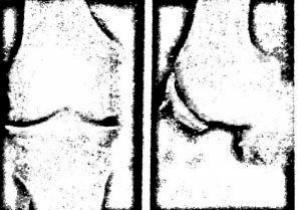
A Somente as afirmativas I, II e III são corretas.
B Somente as afirmativas II, III e IV são corretas.
C Somente as afirmativas I, III e IV são corretas.
D Somente as afirmativas I, II e IV são corretas.
Questão 1252 · Cardiologia · 4000003964Paciente hipertenso mal controlado, suspendeu, durante as festas do nal de ano, sua medicação anti- hipertensiva, que era Atenolol, Enalapril e Hidroclorotiazida. Após discussão familiar, deu entrada no hospital com intenso mal-estar, desorientação e agitação, sendo, então, realizada tomogra a de crânio. Foi abordado por quadro de emergência hipertensiva, que foi caracterizado na Tomografia de crânio. Qual dos itens abaixo NÃO é compatível com esse diagnóstico?
A Hemorragia subaracnoide.
B Edema cerebral por vasodilatação.
C Hemorragia intraparenquimatosa.
D Hematoma subdural crônico.
Questão 1253 · Divertículo de Zenker · 4000003943O divertículo faringoesofagico de Zenker:
A É classificados como divertículo de tração.
B Em geral aparece na segunda década da vida.
C É formado com camada de mucosa e submucosa.
D Ocorre entre as fibras do músculo platisma e cricofaríngeo.
Questão 1254 · Hepatoesplenomegalias crônicas · Investigação de esplenomegalia · 4000003940Homem branco com 48 anos é atendido para esclarecimento de pancitopenia e volumosa esplenomegalia. Ao suspeitar de hiperesplenismo, você, obrigatoriamente, deve solicitar:
A Avaliação da medula óssea.
B Endoscopia digestiva alta.
C Biópsia hepática per cutânea.
D Ultrassonografia de abdômen superior.
Questão 1255 · Rastreio da doença renal do diabetes · 4000003928No curso de diabetes mellitus tipo I, a nefropatia incipiente pode ser diagnosticada na presença de:
A Proteinúria > 500 mg nas 24 horas.
B Clearence de creatinina < 80 ml/min.
C Microalbuminúria.
D Hipertensão arterial.
Questão 1256 · Critérios de internação · História clínica e exame f ísico · Condutas iniciais · 4000003913Paciente do sexo feminino, 55 anos, hipertensa e tabagista, admitida com dor torácica anginosa com duração de 15 minutos e melhora espôntanea. Durante o atendimento médico, teve nova dor precordial de curta duração associada à inversão dinâmica de onda T de V1 a V4, com normalização após nitrato sublingual. O melhor tratamento inicial para essa paciente seria:
A Metoprolol + nitrato + AAS + dalteparina + clopidogrel.
B Nitrato + propanolol + heparina não fracionada + tirofiban.
C Clopidogrel + bloqueador de cálcio + nitrato + IECA + oxigênio + heparina não fracionada.
D AAS + enoxaparina + nitrato + metoprolol + clopidogrel + oxigênio.
Questão 1257 · Tratamento · Classif icação · 4000003898Paciente com 65 anos refere dispneia progressiva há +/- 2 anos com sibilância torácica quando resfriado, tem prova de função pulmonar mostrando CVF=3.40 (80%), VEF1=1,20 (55%), VEF1/CVF=65%, com Radiogra a de tórax mostrando hiperinsu ação pulmonar, escala de dispnéia MRC=2, SatO2=90% em repouso. Nega outras comorbidades. Referia tabagismo dos 15 aos 65 anos (1 maço/dia). Qual o estadiamento do DPOC e o melhor tratamento conforme a classificação de gravidade, respectivamente.
A Estádio I (leve) - broncodilatador de curta ação.
B Estádio II (moderado) - broncodilatador de curta e longa ação + anticolinérgico de longa ação + reabilitação pulmonar.
C Estádio III (grave) - broncodilatador de curta ação e de longa ação + anticolinérgico e corticoide inalatório.
D Estadio IV (muito grave) - corticóide inalatório + xantinas.
Questão 1258 · Ef eitos adversos · 4000003882São considerados eventos adversos menores decorrentes do uso do esquema básico para o tratamento da Tuberculose.
A Vômito, artralgia e urina avermelhada.
B Urticária, hepatite.
C Trombocitopenia e convulsões.
D Hepatite medicamentosa e nefrite intersticial.
Questão 1259 · Cirrose · Alf af etoproteína AFP · 4000003828Tomograf ia computadorizada TC e ressonância nuclear magnética RNM Paciente de 55 anos, sexo masculino, portador de cirrose hepática pelo VHC, apresenta-se no seu consultório com história de seis semanas com fadiga e distensão abdominal. Portador de varizes de esôfago. Exames bioquímicos: bilirrubinas: 2,3mg/dl (normal < 1,0); fosfatase alcalina = 176 U/L (normal < 150); AST = 165 U/L (normal < 36); ALT = 90 U/L (normal < 36) albumina sérica = 2,9g/dl (normal =3,5-5,0) e alfafetoproteína = 224 ng/dl (normal < 10). Diante dessa situação, qual seria a sua indicação?
A Ultrassonografia do abdômen superior com Doppler do sistema portal.
B Tomografia do abdômen com contraste endovenoso.
C Colangiopancreatografia retrógrada endoscópica (CPRE).
D Biópsia hepática.
Questão 1260 · Inf ecção por C dif f icile · 4000003790No diagnóstico de diarréia aguda por Clostridium difficile, qual o melhor método diagnóstico?
A Coprocultura.
B Exame parasitológico de fezes.
C Pesquisa de toxinas A e B nas fezes.
D Colonoscopia.
Questão 1261 · Indicações para o Tratamento Cirúrgico · 4000003775Qual é a melhor indicação para o tratamento cirúrgico da DRGE?
A Laringite crônica, sem resposta ao uso do IBP.
B Esôfago de Barrett para prevenção de evolução para o adenocarcinoma.
C Sintomas típicos de DRGE, esôfago endoscopicamente normal e resposta parcial ao uso do IBP.
D Sintomas típicos de DRGE, esofagite erosiva e boa resposta ao uso do IBP.
Questão 1262 · Acidentes Vasculares Cerebrais AVC · 4000003758Em relação ao Acidente Vascular Encefálico (AVE) assinale a alternativa incorreta:
A O AVE é uma emergência médica e, eventualmente, poderá necessitar de tratamento cirúrgico.
B O AVE é a principal hipótese para o diagnóstico diferencial em pacientes com déficits neurológicos de início súbito.
C A desidratação em pacientes com AVE é geralmente associada a um pior prognóstico, e o uso de fluidos hipotônicas são melhor indicados, uma vez que reduzem o risco de edema cerebral e hipertensão intracraniana, especialmente no infarto extenso.
D A hiperglicemia ocorre em mais da metade dos pacientes na fase aguda do AVE, mesmo aqueles sem historia de diabetes mellitus, e está associada com aumento da morbidade e mortalidade.
Questão 1263 · Neurologia · 4000003740A doença de Alzheimer (DA) é um transtorno neurodegenerativo progressivo e fatal que se manifesta por deterioração cognitiva e da memória, comprometimento progressivo das atividades de vida diária e uma variedade de sintomas neuropsiquiátricos e de alterações comportamentais. Qual abordagem terapêutica NÃO é recomendada para esta doença:
A Os agonistas muscarínicos e nicotínicos e seus compostos, por aumentar a liberação da acetilcolina, são de grande benefício, pois apresentam efeitos clínicos importantes na DA.
B O tratamento da DA deve ser multidisciplinar, envolvendo os diversos sinais e sintomas da doença e suas peculiaridades de condutas.
C Os fármacos colinérgicos donepezila, galantamina e rivastigmina são considerados os de primeira linha, estando todos recomendados para tratamento da DA leve e moderada.
D Os benefícios esperados com o tratamento da D A são redução na velocidade de progressão da doença e a melhora da memória e da atenção.
Questão 1264 · Apresentação Clínica e Avaliação Inicial · 4000003723Em relação aos nódulos de tireoide, marque a afirmativa CORRETA:
A Os nódulos de tireoide incidem em maior frequência em homens, jovens, pessoas expostas à radiação ionizante ou oriundos de áreas endêmicas de excesso de iodo.
B Sintomas compressivos, hemorragias ou extensão intratorácica só acontecem nos nódulos malignos.
C A maioria é assintomático, porém podem apresentar disfunções associadas como hipertireoidismo e hipotireoidismo.
D Presença de múltiplos nódulos é considerado fator preditivo de benignidade.
Questão 1265 · Farmacocinética das insulinas · 4000003711No diabetes tipo 1, como na maioria das vezes, ocorre a destruição autoimune das células beta, o tratamento consiste na reposição com insulina de acordo com as características da secreção siológica. Assinale abaixo a resposta INCORRETA:
A Os análogos de insulina de ação ultrarrápida podem ser aplicados logo após o término da refeição, dessa maneira são mais seguras em crianças pequenas e idosos.
B A hipoglicemia é o fator mais limitante do alcance do controle glicêmico ideal em DM1.
C A insulina Glulisina ou NPH são ideias para cobertura basal associada à insulina lispro ou regular no uso pré-prandial, nas principais refeições.
D A insulina NPH apresenta em sua composição a protamina, que permite aumentar seu tempo de ação.
Questão 1266 · Def inição · Etiologia e f isiopatologia · Fisiopatologia · 4000003694Um paciente masculino de 18 anos está com dispneia, sibilância e tosse seca cerca de uma vez ao dia. Acorda duas vezes por semana com falta de ar de madrugada. Nessas ocasiões, utiliza beta-2-agonista de ação curta, inalado com melhora dos sintomas. Após arrumar sua despensa, evoluiu com os mesmos sintomas, mas não responde ao seu medicamento habitual e resolve procurar o pronto-socorro mais próximo. Considerando que os dados de história e exame físico são compatíveis com o diagnóstico de asma, assinale qual tratamento aceitável mediante à gravidade da crise:
A Em pacientes com cianose, sudorese, exaustão, portanto em exacerbação grave, a intubação orotraqueal está recomendada, optando-se preferencialmente por induzir a sedação/analgesia com midazolam 0,1 a 0,5 mg/kg (máximo 10 mg), quetamina 1-4 mg/kg e complementar com succinilcolina 1-2 mg/kg.
B O uso do sulfato de magnésio está bem estabelecido para pacientes com crises leves a moderadas, como terapêutica inicial.
C As metilxantinas, incluindo a Aminofilina, são contraindicadas na asma de qualquer gravidade, devido seus efeitos adversos cardiovasculares e alta frequência de interações medicamentosas.
D O uso dos broncodilatadores de curta ação é crucial para manejo inicial de todas as crises, preferindo-se a via inalatória, como nebulização com fenoterol 2,5mg a 5mg (10 a 20 gotas) diluídos em 3 a 5 ml de água destilada.
Questão 1267 · Ventilação · Desf ibrilação · Compressões torácicas · 4000003667De acordo com as últimas diretrizes da American Heart Association (AHA - 2010), endossadas pela Sociedade Brasileira de Cardiologia na I Diretriz de Ressuscitação Cardiopulmonar e Cuidados Cardiovasculares de Emergência, marque a alternativa CORRETA:
A O soco precordial é recurso possivelmente útil em PCR não presenciada, na ausência de um desfibrilador.
B A utilização do pistão mecânico durante o atendimento mostrou ser superior em termos de sobrevida quando comparado com a RCP padrão.
C A escolha de melhor método de ventilação deve basear-se na experiência do socorrista, sendo aceitável a utilização do dispositivo de bolsa-válvula-máscara isoladamente ou em combinação com a cânula orotraqueal.
D O dióxido de carbono exalado ao final da expiração (PETCO2) em níveis inferiores a 10 mmHg tem boa correlação com a qualidade de reanimação e com o retorno da circulação espontânea.
Questão 1268 · Contraindicações ao uso dos f ibrinolíticos · 4000003648Entre as situações descritas abaixo, aquela que contraindica formalmente a terapia trombolítica no infarto agudo do miocárdio com supra de ST é:
A Sangramento menstrual.
B Diabetes mellitus descontrolado.
C Idade superior a 65 anos.
D História de acidente vascular encefálico hemorrágico há 2 anos.
Questão 1269 · Chikungunya · 4000003621A respeito das doenças infecciosas que cursam com febre hemorrágica, marque a alternativa INCORRETA:
A Dentre os sintomas causados pela infecção pelo vírus Ebola, estão: quadro súbito de febre, cefaleia, faringite, mialgias e astenia.
B Embora a febre hemorrágica associada à dengue possa ocorrer na dengue primária, a maioria dos casos está associada à infecção de hospedeiros anteriormente sensibilizados pela infecção prévia por outro sorotipo.
C Muitos dos casos de febre amarela são abruptos, breves e autolimitados. Infecções inaparentes são comuns e a doença sintomática costuma ser relativamente branda.
D A febre Chikungunya é caracterizada por início súbito de febre e artralgia grave. Sintomas constitucionais, calafrios, cefaleia, fotofobia, dor retro-orbitária, mialgias e faringite são incomuns.
Questão 1271 · Quadro clínico da anemia f alcif orme · 4000003176Paciente de dez meses, do sexo feminino, apresenta-se descorada ++/4+, com febre baixa (38 °C) há dois dias e edema em mãos e pés. O fígado é palpável a 2 cm abaixo do RCD e o baço a 4 cm do RCE. A hipótese mais provável é:
A Mononucleose infecciosa.
B Osteomielite de mãos e pés.
C Anemia falciforme.
D Doença de Kawasaki.
Questão 1272 · Cardiologia · 4000003167A contraindicação ao uso de inibidores da enzima conversora de Angiotensina na Insu ciência Cardíaca Crônica é
A a fração de ejeção abaixo de 35%.
B o diagnóstico de estenose de artéria renal bilateral.
C a creatinina plasmática acima de 1,5 mg/dl.
D a pressão arterial sistólica abaixo de 100 mmhg.
Questão 1273 · Introdução aos Linf omas não Hodgkin LNH · 4000003153Os linfomas malignos são o terceiro tumor mais comum na infância. Podem ser divididos genericamente em: doença de Hodgkin e linfoma não-Hodgkin. O Linfoma Não-Hodgkin (LNH), na infância,
A tem o abdome, a cabeça e o pescoço como sedes mais comuns de manifestação inicial do LNH de células-T.
B apresenta disseminação rara para locais extranodais, como o sistema nervoso central e a medula óssea.
C ocorre com mais frequência em meninas, tendo uma taxa de incidência máxima entre dois e três anos.
D pode estar associado à imunodeficiência congênita ou adquirida após transplante.
Questão 1274 · Síndrome nef rótica · 4000003125Pré-escolar do sexo masculino, de três anos, é atendido no pronto-socorro de pediatria com história de edema, de início em face, há, aproximadamente, quatro semanas, que evoluiu para membros inferiores e abdome há dois dias. Mãe refere diminuição da diurese, mas sem outros sintomas. A principal hipótese diagnóstica para esse caso é:
A síndrome nefrótica idiopática.
B glomerulonefrite aguda pós-estreptocócica.
C insuficiência cardíaca congestiva.
D insuficiência hepática.
Questão 1275 · Neurologia · 4000003122Assinale abaixo a conduta apropriada em paciente com Acidente Vascular Cerebral Isquêmico Cerebelar que evolui com hidrocefalia e rebaixamento do nível de consciência.
A Derivação ventricular externa.
B Solução salina hipertônica.
C Nimodipina endovenosa.
D Medidas de suporte clínico.
Questão 1276 · Amilase · Lipase · 4000003117Criança de nove anos procura o pronto-socorro de pediatria com história de dor epigástrica intensa irradiada para dorso, náuseas e vômitos há 12 horas. Refere ter apresentado quadro viral na última semana. Ao exame, o abdome apresenta-se doloroso à palpação e tenso difusamente. Qual é o diagnóstico mais provável e que exame deverá ser solicitado, nesse caso?
A Síndrome de Reye – dosagem de amônia sérica.
B Invaginação intestinal – enema opaco.
C Refluxo gastroesofágico – raio X contrastado de esôfago, estômago e duodeno.
D Pancreatite aguda – dosagem sérica de amílase e lipase.
Questão 1279 · Medicina Preventiva · Doenças relacionadas ao asbesto Asbestose · Asbestose · 4000002988Em Goiás, está em atividade uma das maiores minas de extração de amianto do mundo. Nessa mina, predomina o amianto com fibras do tipo crisotila. A ocorrência de asbestose por este tipo de fibra:
A independe da dose de exposição e desenvolve rapidamente após exposição em curto espaço de tempo.
B é uma doença profissional típica do Grupo I da classificação de Schilling, reconhecida apenas nos países ocidentais.
C é dose-dependente da concentração de fibras inaladas.
D é inexpressiva por exposição em fábricas a artigos de amianto, como tecidos a provas de fogo e de artigos fibrocimento.
Questão 1280 · Prof ilaxia pósexposição · Prof ilaxia pósexposição PEP · 4000002926Para o pro ssional de saúde que se acidentou no hospital com objeto perfurocortante sujo com secreção serossanguinolenta de origem não identificada (paciente fonte não identificado), recomenda-se:
A Quimioprofilaxia para HIV e investigação da situação sorológica anti-hepatite B.
B Vacinação anti-hepatite C e exames para avaliar presença de proteção anti-hepatite D.
C Dose de reforço da vacina contra tuberculose e quimioprofilaxia para sífilis.
D Profilaxia antitetânica e exames para avaliar proteção antirrubéola
Questão 1281 · Tratamento · 4000002914As modi cações no protocolo de tratamento para tuberculose para adolescentes e adultos (Programa Nacional de Controle da Tuberculose/Ministério da Saúde), de 2009- 2010, foram concebidas considerando a existência:
A De risco de aumento de cepas de M. tuberculosis resistentes em decorrência da adesão insuficiente ao tratamento.
B De perspectiva de eliminação desse agravo até 2012, na maioria das regiões brasileiras.
C Da possibilidade de incluir drogas facilmente disponíveis na rede privada.
D De resultados de estudos ecológicos que evidenciaram menor toxicidade dos tuberculostáticos para pacientes com mais de 60 anos de vida.
Questão 1282 · Pneumologia · 4000002872O volume corrente preconizado (por quilograma de peso corporal ideal) para um paciente com Asma Aguda em ventilação mecânica controlada a volume é de:
A 4 a 6 ml.
B 5 a 7 ml
C 6 a 8 ml.
D 7 a 9 ml.
Questão 1283 · Cardiologia · 4000002864Com o objetivo de avaliar alguns fatores de risco na ocorrência de Doença Isquêmica do Coração (DIC), um estudo epidemiológico selecionou 280 pacientes com DIC e 553 pessoas sem história ou diagnóstico de DIC. Os resultados foram: (VER IMAGEM). A medida adequada para estimar a magnitude do efeito da hipercolesterolemia na ocorrência da DIC e seu respectivo valor, no estudo acima, é:
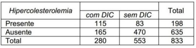
A Risco relativo: 1,95.
B Risco relativo: 3,9%.
C Odds Ratio: 3,9.
D Odds Ratio: 1,9%.
Questão 1284 · Quadro clínico · Dermatomiosite · Miopatias autoimunes sistêmicas · 4000002820As alterações observadas na pele que são definidas como “mãos de mecânico” caracterizam a seguinte doença difusa do tecido conjuntivo:
A lúpus eritematoso sistêmico.
B dermatomiosite.
C polimiosite.
D esclerose sistêmica.
Questão 1285 · Etiologias · 4000002810Constitui fator de risco para a ocorrência da síndrome da apneia obstrutiva do sono:
A obesidade.
B diabetes mellitus.
C bronquiectasia.
D asma brônquica.
Questão 1286 · Pneumologia · Bronquiectasias · 4000002795A causa mais frequente de tosse crônica com expectoração abundante matinal e hemoptise de repetição em não tabagista é:
A Coagulopatia.
B Estenose mitral.
C Bronquiectasia.
D Adenoma brônquico
Questão 1287 · Enxaqueca · 4000002780Conforme a classificação internacional de cefaleias, quais são os critérios diagnósticos de migrânea?
A Duração de 4 a 72 horas, hemicraniana, pulsátil, forte intensidade associada a náuseas, vômitos, fotofobia e fonofobia.
B Duração de 4 a 72 horas, bilateral, pulsátil, leve intensidade associada a náuseas, vômitos, fotofobia e /ou fonofobia.
C Duração de 1 a 72 horas, hemicraniana, pulsátil, forte intensidade associada a náuseas, vômitos, fotofobia ou fonofobia.
D Duração de 1 a 72 horas, bilateral, pulsátil, leve intensidade associada a náuseas, vômitos, fotofobia e fonofobia.
Questão 1288 · Granulomatose com poliangiíte GPA ou granulomatose de Wegener · 4000002752Paciente do sexo masculino, de 55 anos, branco, foi internado devido a febre, emagrecimento, mialgia, artralgia, perda rápida da função renal, manifestando-se como glomerulonefrite rapidamente progressiva e história prévia de sinusite e rinorreia. A investigação laboratorial demonstrou sorologias para vírus B, C e HIV negativas, FAN negativo, complementos normais e Anca C positivo. A biópsia renal revelou presença de glomerulonefrite necrotizante, presença de crescentes celulares com imuno uorescência negativa. O provável diagnóstico, neste caso, é
A lúpus eritematoso sistêmico.
B granulomatose de Wegener.
C síndrome de Goodpasture.
D púrpura de Henoch-Schonlein.
Questão 1289 · Hematologia · 4000002741Classif icação da leucemia mieloide aguda LMA morf ológica citogenética e biologia molecular No que se refere às leucemias mieloides agudas não-promielocíticas, o grupo de melhor prognóstico quanto às alterações moleculares encontradas em paciente que apresenta cariótipo normal é:
A FLT3 +, NPM –
B FLT3 -, NPM +
C FLT3 +, NPM +
D FLT3 -, NPM –
Questão 1290 · Pneumologia · 4000002738A abordagem sugerida como mínima pelo Ministério da Saúde para utilização rotineira dos Pro ssionais de Saúde em programas de controle do Tabagismo é caracterizada por objetivos que têm a finalidade de:
A avaliar o grau de dependência da Nicotina, avaliar o estágio de capacidade respiratória e cardíaca, embasando a conduta a ser tomada em relação ao caso.
B avaliar o nível de Nicotinemia pela dosagem da cotinina urinária para avaliar o consumo diário definicotina pela contagem do número de cigarros fumados.
C avaliar o perfil de saúde mental do fumante em busca de co-morbidades que interfiram na manutençãodo vício, identificar as lesões pulmonares já encontradas pela classificação dos enfisemas, modelo transteórico de mudança de comportamento.
D identificar os fumantes, avaliar o grau de dependência da nicotina e avaliar o estágio de mudança de comportamento.
Revisar: possível letra faltando em alt C
Questão 1291 · Hepatite B crônica · Esquemas de tratamento · 4000002731São drogas atualmente padronizadas para o tratamento da hepatite B crônica:
A Interferon convencional, Interferon peguilado e Ribavirina.
B Lamivudina, Adefovir e Zidovudina.
C Zidovudina, Entecavir e Interferon peguilado.
D Entecavir, Adefovir e Tenofovir.
Questão 1292 · Tratamento · 4000002718Paciente de 30 anos de idade, do sexo feminino, é encaminhada pelo psiquiatra por hiperprolactinemia. Faz uso de Risperidona há três meses. Ao exame físico: nada digno de nota. Avaliação hormonal: prolactina: 100 ng/ml (VR: 2,1 -18 ng/ml); estradiol, LH e FSH, TSH e T4 livre normais. A melhor conduta, neste caso, é:
A dosagem de macroprolactina.
B tratamento com agonista dopaminérgico.
C avaliação da suspensão de Risperidona por 72 horas e repetição da dosagem de prolactina.
D realização de ressonância nuclear magnética de hipófise.
Questão 1293 · Etiologia e f atores de risco · 4000002704O organismo mais comumente associado à endocardite em prótese valvar no primeiro ano após a cirurgia de troca valvar é:
A Staphylococcus aureus.
B Escherichia coli.
C Staphylococcus epidermidis.
D Streptococcus viridans.
Questão 1294 · Reação do tipo 2 · 4000002696Na Reação Hansênica Tipo 2, normalmente usamos a Talidomida, mas em determinadas situações, precisamos associar o corticoide sistêmico. Em qual das situações abaixo, NÃO se aplica o uso desse medicamento?
A Iridociclite.
B Neurite.
C Ulceração das lesões.
D Eritema nodoso cutâneo.
Questão 1295 · Insuf iciência mitral · Cardiologia · 4000002691Que condição é acompanhada de aumento da pré-carga do ventrículo esquerdo?
A Septicemia.
B Infarto do ventrículo direito.
C Regurgitação mitral.
D Embolia pulmonar.
Questão 1296 · Tratamento · 4000002653Paciente de 55 anos, tabagista, constipado, com sintomas recorrentes de sangramento durante a evacuação e prolapso hemorroidário redutível manualmente. O exame proctológico evidencia doença hemorroidária interna de moderado volume nos quadrantes lateral esquerdo e posterolateral direito. A conduta inicial, nesse caso, deve incluir:
A videocolonoscopia, orientações dietéticas e ligadura elástica.
B tomografia de pélvis, suplemento de fibras e crioterapia.
C retoscopia, banhos de assento e cirurgia de Delorme.
D videocolonoscopia, orientações dietéticas e retossigmoidectomia perineal.
Questão 1297 · Inf ectologia · 4000002648As citocinas que aparecem precocemente na corrente sanguínea, com efeito pró- inflamatório em resposta a um estímulo deflagrador, são:
A interleucinas 1 e 2, fator de necrose tumoral alfa.
B fator de necrose tumoral alfa, interleucinas 3 e 8.
C interleucinas 1, 3 e 8.
D fator de necrose tumoral, interleucinas 4 e 10.
Questão 1298 · Nef rologia · 4000002637Qual das soluções abaixo apresenta concentrações de sódio e cloro mais próximas das observadas no plasma?
A Plasma fresco congelado.
B Soro glicosado a 5%.
C Ringer lactato.
D Soro fisiológico a 0,9%.
Questão 1299 · Corpos de HowellJolly · 4000002631Paciente do sexo masculino, 35 anos, com antecedente de Anemia Falciforme, apresenta no esfregaço de sangue periférico corpúsculos de Howell-Jolly. Assinale abaixo o significado desse achado.
A Crise de falcização.
B Processo infeccioso viral.
C Hipoesplenismo.
D Deficiência de folato.
Questão 1300 · Pneumologia · Bioquímica · 4000002614No derrame pleural neoplásico, a
A pleurodese é o procedimento inicial de escolha.
B biópsia com agulha de Cope tem melhor rendimento que a citologia oncótica do líquido.
C associação ao carcinoma broncogênico o estadia como T3.
D citologia oncótica seriada do líquido rende diagnóstico em até 80% dos casos.
Questão 1301 · Agentes Imunomoduladores · 4000002597O seguinte elemento está dissociado da imunomodulação:
A arginina.
B glutamina.
C ácido graxo ômega 6.
D ácido eicosapentaenoico.
Questão 1302 · Osteomielite · 4000002578O agente etiológico que MAIS comumente causa osteomielite em crianças de 2 anos de idade é
A Estreptococos do grupo A.
B Stafilococcus aureus.
C Streptococcus pneumoniae.
D Pseudomonas aeruginosa.
Questão 1303 · Características da Dor · 4000002548Qual das seguintes características clínicas NÃO faz parte do espectro de enxaqueca em criança?
A Cefaleia.
B Perda visual temporária.
C Dor abdominal, cólicas e vômitos.
D Alucinações olfatórias.
Questão 1304 · Erupção acneif orme · Farmacodermias · 4000002537Erupção cutânea é uma preocupação importante em qual das seguintes medicações?
A Topiramato.
B Gabapentina.
C Lamotrigina.
D Oxcarbamazepina.
Questão 1305 · Inf ectologia · 4000002490A única medida preventiva para alergia a ácaros da poeira é:
A cobertura plástica do colchão.
B aspiração frequente do pó dos carpetes.
C borrifar inseticida no carpete.
D uso de filtro eletrônico de ar.
Questão 1307 · Etiologia e f atores de risco · 4000002427Um menino de 9 anos com uma válvula aórtica bicúspede desenvolve endocardite bacteriana após extração de um dente. O organismo mais provável de ter causado endocardite nesse paciente é:
A Candida albicans.
B Escherichia coli.
C Staphylococcus aureus.
D Staphylococcus mitis.
Questão 1309 · Pericardite aguda · 4000002416Menino de 12 anos de idade apresenta-se com uma história de dor torácica aguda, pleurítica, que é pior na posição supina. A temperatura da criança é de 38,5ºC e ausculta- se atrito pericárdico. O diagnóstico MAIS provável é:
A dor torácica musculoesquelética.
B pericardite.
C endocardite bacteriana.
D êmbolo pulmonar.
Questão 1311 · Colecistectomia Laparoscópica · 4000002370Um paciente sofreu uma lesão iatrogênica da via biliar por ocasião de uma colecistectomia videolaparoscópica. Durante o reparo operatório dessa lesão, constatou- se que havia estenose completa do ducto hepático comum, a 1 cm da confluência dos ductos hepáticos. Trata-se de uma lesão do tipo:
A Bismuth 1.
B Stewart-W ay E.
C Hannover B1.
D Strasberg E2.
Questão 1312 · Fatores de Risco · 4000002350O diagnóstico de varizes é de tal modo evidente que ele é feito pelo próprio paciente. Ao médico cabe o diagnóstico etiopatogênico, base da sua orientação terapêutica. Nesse sentido, a principal causa de varizes secundárias é:
A o enfraquecimento da parede venosa.
B a microtrombose de perfurantes.
C a formação de anastomoses arteriovenosas.
D a formação de trombos no sistema venoso profundo.
Questão 1314 · Cardiologia · 4000002304A condição em que há MAIOR taxa de sobrevivência na parada cardiorrespiratória, fora de ambiente hospitalar, é em paciente com ritmo inicial de:
A Assistolia com menos de dez minutos de duração.
B Fibrilação ventricular presenciada por outras pessoas.
C Taquicardia ventricular que evoluiu para assistolia.
D Atividade elétrica sem pulso que evoluiu com assistolia.
Questão 1315 · Endocrinologia · 4000002284Sobre a avaliação do controle do DIABETES, é CORRETO afirmar que:
A A Glicemia de jejum e a Automonitorização da Glicemia capilar são suficientes para o acompanhamento do controle do Diabetes.
B Apenas a Hemoglobina Glicada é necessária.
C A Automonitorização da Glicemia capilar está em desuso da prática clínica para controle do Diabetes.
D A Glicemia de jejum, a Automonitorização da Glicemia capilar fornecem informações complementares necessárias, sendo todos os exames importantes para avaliação do controle do Diabetes.
Questão 1316 · Quadro clínico · Osteoartrite OA · 4000002282São características clínicas e radiológicas da osteoartrite, EXCETO que:
A Nas fases iniciais há alterações radiológicas, na maioria dos casos não acompanhadas de queixas clínicas.
B A principal queixa clínica é a dor articular.
C A dor frequentemente é acompanhada de edema articular.
D A dor melhora com o exercício e piora após períodos prolongados de inatividade.
Questão 1317 · Diagnóstico Dif erencial · 4000002264Sobre as etiologias das DEMÊNCIAS, pode-se afirmar que:
A Pode definir a possibilidade de tratamento, e em alguns casos, a reversão dos sintomas.
B Não é importante, já que os processos demenciais são inexoráveis e progressivos.
C Geralmente a etiologia pode ser definida com anamnese e exame físico cuidadoso.
D Só pode ser realizada por neurologista especializado em demências.
Questão 1318 · Gastroenterologia · 4000002257São pacientes que necessitam pro laxia para Úlcera Péptica ao utilizar Anti-In amatórios Não Esteroidais (AINE’s), EXCETO:
A Com antecedente de Úlcera Péptica.
B Em uso concomitante de Varfarina.
C Em uso concomitante de Corticosteroides em dose alta.
D Quando o tratamento com AINE’s for superior a dois dias.
Questão 1319 · Cardiologia · 4000002241São alterações hemodinâmicas resultantes da administração de dobutamina, EXCETO
A o aumento da frequência cardíaca.
B o aumento do débito cardíaco.
C a redução do fluxo esplâncnico.
D a diminuição da resistência vascular sistêmica.
Questão 1320 · Neurologia · 4000002236A Bartholinite é a infecção da Glândula de Bartholin na vagina. Qual é o patógeno MAIS comumente envolvido nesse tipo de infecção?
A Gonococo.
B Cândida albicans.
C Gardnerella vaginalis.
D Escherichia coli.
Questão 1321 · Cardiologia · 4000002227Paciente do sexo masculino, 53 anos, internado por Infarto Agudo do Miocárdio. Após cineangiocoronariogra a, foi optado pela cirurgia de revascularização do miocárdio. Paciente em uso de Clopidogrel. Com relação ao uso dessa medicação, assinale a alternativa CORRETA.
A Deve ser suspensa sete dias antes do procedimento cirúrgico.
B Deve ser suspensa dois dias antes do procedimento cirúrgico.
C Deve ser suspensa a dose no dia do procedimento cirúrgico.
D Não há necessidade de suspensão para o procedimento cirúrgico.
Questão 1322 · Manif estações clínicas da hipocalcemia · 4000002212Qual é a manifestação clínica MAIS comum da Hipocalcemia?
A Tetania.
B Parestesia.
C Coma.
D Insuficiência renal.
Questão 1323 · Patologia · 4000002203Em qual dos tipos de carcinomas citados abaixo, o carcinoma papilífero pode se transformar?
A Medular.
B Linfocítico.
C Hürtle.
D Anaplásico.
Questão 1324 · Cardiologia · 4000002201Paciente com Insu ciência Cardíaca Crônica apresenta elevação da Creatinina Plasmática (1,0 mg/dl para 1,3 mg/dl) após introdução de inibidor da enzima conversora da Angiotensina. A conduta MAIS apropriada é
A Reduzir a dose da medicação.
B Suspender a medicação.
C Manter a medicação.
D Trocar a medicação por um bloqueador do receptor AT1 da Angiotensina.
Questão 1325 · Cardiologia · 4000002185Paciente do sexo feminino, 65 anos, admitida com Infarto Agudo do Miocárdio, antecedente de Osteoartrite em uso crônico de anti-inflamatórios não esteroidais. Com relação ao uso desta classe de medicamentos no Infarto, é CORRETO afirmar que deve ser:
A mantida, pois não aumenta os riscos cardiovasculares, porém há necessidade de associação do Ácido Acetilsalicílico para a prevenção de reinfarto.
B mantida, pois não aumenta os riscos cardiovasculares e não há necessidade de associação do Ácido Acetilsalicílico para a prevenção de reinfarto, pois se trata da mesma classe farmacológica.
C suspensa pelo risco aumentado de hipertensão, reinfarto e mortalidade, e introduzido o Ácido Acetilsalicílico.
D suspensa pelo risco aumentado de Gastrite e Úlcera Gástrica se utilizado em conjunto com o Ácido Acetilsalicílico.
Questão 1326 · Diálise de urgência · 4000002156Paciente com Insu ciência Renal Aguda evolui com episódio de crise convulsiva. Exames laboratoriais: creatinina = 3.5 mg/dl, ureia = 215 mg/dl, sódio plasmático = 141 mEq/l, potássio plasmático = 5.5 mEq/l, cálcio iônico = 1.18 mEq/l. Diante desse caso, Indique a conduta MAIS apropriada.
A Gluconato de cálcio.
B Diálise.
C Sulfato de magnésio.
D Fenobarbital.
Questão 1328 · Etiologia Prérenal · 4000002116Paciente 75 anos, portador de insu ciência cardíaca após IAM há 3 anos, em uso de Furosemida, Espironolactona,Losartana, Carvedilol, AAS e Sinvastatina. Há 48 horas evoluindo com queda do estado geral, febre, diarreia aquosa (5 episódios/dia), vômitos, sonolência excessiva e oligúria (300 ml/dia). Ao exame clínico: rebaixado, desidratado ( +++/4+). PA = 80 x 40 mm Hg ; Exames laboratoriais: Na = 145,0; K = 3,3 ; Ureia = 123,0; Creatinina = 2,2; Sódio Urinário = 10,0; FENa = 0,05; USG de rins e vias urinárias = sem alterações. Assinale a hipótese diagnóstica para este caso:
A Necrose tubular aguda.
B Insuficiência renal crônica.
C Insuficiência renal aguda pré-renal.
D Síndrome nefrítica.
E Insuficiência Renal Aguda Pós-Renal.
Questão 1329 · Pneumologia · 4000002103Na Doença Pulmonar Obstrutiva Crônica (DPOC), qual dos medicamentos a seguir citados é o de maior relevância no seu tratamento?
A Broncodilatador.
B Corticosteroide sistêmico.
C Corticoide inalatório.
D Antibiótico.
E Anti-histamínico.
Questão 1330 · Pneumologia · 4000002092Asma é uma doença inflamatória crônica das vias aéreas inferiores. Clinicamente, caracteriza-se por aumento da responsividade das vias aéreas a variados estímulos, com consequente obstrução ao uxo aéreo, de caráter recorrente e tipicamente reversível. Assinale a alternativa CORRETA sobre asma.
A A classificação de gravidade da asma como persistente moderada leva em conta: sintomas de asma mais de 2x/semana, mas não diariamente; despertares noturnos 3- 4x/mês; VEF1 ou PFE igual ou maior de 80% do previsto; e Variação VEF1 ou PFE de 20- 30%.
B A anamnese do paciente com sintomas de asma deve incluir questões sobre exposição a agentes químicos, físicos e poeira orgânica a fim de identificar possíveis causas de asma ocupacional. O ambiente de trabalho pode desencadear ou agravar asma preexistente.
C No tratamento da asma, a conduta inicial em adultos e adolescentes sem tratamento regular prévio adequado para a gravidade, a asma intermitente deve ser tratada com corticoide inalatório em doses média a alta associado a Beta-2-agonista adrenérgico de longa duração para alívio conforme demanda.
D Em adultos, a adição de corticoide oral (prednisona), como segundo medicamento controlador (segunda linha), produz melhora mais rápida da função pulmonar em pacientes com asma moderada não adequadamente controlada com doses baixas a médias de corticoide inalatório do que a duplicação da dose deste.
E O risco de efeitos adversos sistêmicos (supressão do eixo hipófise-suprarrenal, hiperglicemia, estrias, púrpura, acne, catarata, hipertensão arterial sistêmica, retardo de crescimento em crianças), não acontece com o uso de corticoides inalatórios, mesmo usados em doses altas e tempo prolongado de uso.
Questão 1332 · Etiologia · Tratamento · Diagnóstico · 4000002078Homem, 32 anos, previamente hígido, relata quadro de cefaleia intensa há 48h acompanhada de fotofobia e irritabilidade. Refere também mialgia, náuseas, vômitos e diarreia na semana anterior. Ao exame clínico: rigidez de nuca positiva; Tax = 38,2°C. Exames laboratoriais: liquor: 280 leucócitos/ml; 75% linfócitos; hemácias 30/ml; proteínas 50 mg/dl; glicose 60 mg/dl; pesquisa de Gram-negativo; tinta da China negativo. Assinale a alternativa CORRETA:
A Iniciar ceftriaxona 2 g EV 12/12h.
B Iniciar aciclovir EV até resultado de amplificação para herpesvírus no liquor.
C Fazer sintomáticos, solicitar TC de crânio e amplificação para enterovírus no liquor.
D Iniciar aciclovir EV e amplificação para vírus Epstein-Barr e citomegalovírus no liquor; solicitar anti- HIV.
E Iniciar aciclovir e dexametasona e amplificação para enterovírus no liquor.
Questão 1333 · Fisiopatologia e Fatores de Risco · Tratamento · Quadro Clínico · 4000002066A Doença de Alzheimer (DA) é um transtorno neurodegenerativo progressivo e fatal que se manifesta por deterioração cognitiva e da memória, comprometimento progressivo das atividades de vida diária e uma variedade de sintomas neuropsiquiátricos e de alterações comportamentais. Sobre a Doença de Alzheimer, assinale a alternativa CORRETA.
A As características seguintes aumentam a chance, e são suficientes para o diagnóstico de Doença de Alzheimer: início súbito, apoplético; achado neurológico focal precoce no curso da doença; ou convulsões ou distúrbios da marcha precoces no curso da doença.
B O diagnóstico definitivo de Doença de Alzheimer só pode ser realizado por biópsia, com identificação do número apropriado de placas e enovelados em regiões específicas do cérebro. Logo, a biópsia é recomendada e necessária para o diagnóstico, independente da história clínica, e deve ser baseada em imagens da ressonância magnética consistente com demência.
C Os fármacos colinérgicos Donepezila,Galantamina e Rivastigmina são considerados os de primeira linha, estando todos eles recomendados para o tratamento da Doença de Alzheimer leve a moderada.
D Os inibidores da colinesterase estimulam a degradação da acetilcolina naturalmente secretada. Para serem úteis, tais fármacos devem cruzar a barreira hematoencefálica; para minimizar os efeitos adversos, devem estimular a degradação da acetilcolina a um menor grau no cérebro.
E O tratamento com a Donepezila deve-se iniciar com 50 mg/dia por via oral. A dose pode ser aumentada para 500 mg/dia após 1 semana, devendo ser administrada sempre pela manhã.
Questão 1334 · Quadro Clínico · Ressonância Magnética · 4000002054Uma mulher de 34 anos comparece ao Pronto-Socorro (PS) com queixa de cefaleia na região periauricular com irradiação para região temporal direita há três dias. Ela estava trabalhando sentada quando sentiu uma vertigem súbita, desconforto na garganta e uma sensação de queimação no braço e perna esquerda. Quando tentou se levantar e caminhar, seu braço direito e perna não se moveram de forma normal e coordenada. A paciente era previamente saudável e não tomava qualquer medicação regularmente. Sem vícios; negava etilismo ou tabagismo e praticava exercícios aeróbicos quase diariamente. Sua mãe e uma série de parentes maternos sofrem de hipertensão. Ao exame físico: a paciente tinha temperatura oral de 37,0°C; pulso regular, com uma frequência de 86 bpm; pressão arterial de 164 x 90 mmHg e ausculta cardíaca normal. Não há sopros carotídeos. A paciente refere ter surtos prolongados de soluços. Incapaz de se manter em posição ortostática devido à grave sensação de desequilíbrio. Há ptose e miose à direita. Presença de olhar horizontal sustentado e nistagmo bilateral e também um nistagmo com fase rápida para baixo (downbeating). Há diminuição da sensibilidade à dor e temperatura na hemiface direita, queda do véu palatino à direita e diminuição do reflexo de vômito. Os movimentos da língua são normais. A força e os reflexos tendinosos profundos são normais e simétricos e está ausente o sinal de Babinski. Há um grau moderado de ataxia afetando braço e perna direita. Há diminuição da sensibilidade à dor e temperatura no braço esquerdo, perna e tronco. A propriocepção está inalterada. Análises laboratoriais de rotina incluindo hemograma completo, um painel metabólico básico e per l lipídico foram normais. A tomogra a computadorizada sem contraste de crânio foi normal. A figura 1 mostra a ressonância magnética do crânio. (VER IMAGEM) Considerando a história clínica, a imagem, os nervos cranianos envolvidos e as modalidades sensoriais comprometidas, o provável diagnóstico desta paciente é:
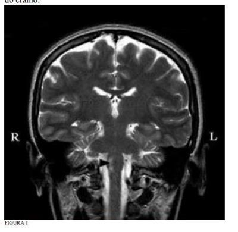
A Isquemia inferolateral esquerda pontina (Síndrome de Millard-Gubler).
B Isquemia da porção dorsomedial esquerda do bulbo (Síndrome de Horner).
C Isquemia da porção dorsomedial direita do bulbo (Síndrome de Dejerine).
D Isquemia da porção dorsolateral direita do bulbo (Síndrome de Wallenberg).
E Isquemia lateral pontina à direita (Síndrome de Marie- Foix).
Questão 1335 · Cardiologia · 4000002047Para um médico de família é fundamental ter conhecimento sobre abordagem da hipertensão arterial sistêmica em seus pacientes. Sobre este assunto é CORRETO afirmar que:
A A medicação de primeira escolha é o atenolol 25 mg/dia.
B Pacientes com nível pressórico controlado necessitam realizar consultas anuais.
C O uso de ácido acetilsalicílico associado é recomendado como terapia auxiliar nos pacientes hipertensos.
D Mudança do estilo de vida como tratamento inicial pode ser recomendado para alguns pacientes.
Questão 1338 · Cálculo da taxa de f iltração glomerular · 4000002019Indique a fórmula para o cálculo do Clearance de Creatinina.
A Creatinina plasmática x volume urinário / creatinina urinária.
B Creatinina plasmática / creatinina urinária x volume urinário.
C Creatinina urinária / creatinina plasmática x volume urinário.
D Creatinina urinária x volume urinário / creatinina plasmática.
Questão 1339 · Enxaqueca · 4000002014De acordo com os dados da Organização Mundial da Saúde (OMS) (World Health Organization, 2011, Geneva), a cefaleia representa um dos motivos mais frequentes de consultas médicas, constando-se a migrânea entre as vinte doenças mais incapacitantes. Sobre cefaleias, assinale a alternativa CORRETA:
A Cefaleias primárias ocorrem quando há um mecanismo bem determinado passível de provocá-la, como cefaleia atribuída à meningite bacteriana. As cefaleias primárias não ocorrem quando existem condições cujos mecanismos são eminentemente neuroquímicos.
B Tipicamente, a crise de migrânea se caracteriza por cefaleia de intensidade moderada a forte, predominante em um dos lados da cabeça, com caráter pulsátil e que piora com os esforços físicos. Frequentemente, associa-se à náusea, vômitos, fotofobia e fonofobia.
C Em comparação com a migrânea episódica, a forma crônica proporciona menores incapacidades, impacto na qualidade de vida, utilização do sistema de saúde e número de comorbidades.
D Estudos que avaliaram pacientes portadores de migrânea crônica com uso excessivo de analgésicos mostraram que o topiramato em doses relativamente baixas (50 mg a 100 mg/dia) não reduziu a frequência dos dias com dor.
E O uso em gotas sublinguais da clorpromazina e do haloperidol não apresenta boa resposta no tratamento sintomático das crises de cefaleia, considerando-se que, nesta via, as drogas não apresentam rápida absorção e nem menor metabolismo de primeira passagem.
Questão 1340 · Hematologia · 4000001998Paciente do sexo feminino, 24 anos, solteira, parda, costureira, encaminhada para o hospital terciário devido à tumoração na região occipital, indolor, sem sinais inflamatórios locais, de aumento progressivo havia seis meses, associado à cefaleia occipitotemporal leve e esporádica. Sem outras queixas. Antecedente de queda da própria altura há 8 meses, com trauma cranioencefálico leve na região occipital, sem lesões de pele. A paciente relatou ter sido avaliada naquela ocasião em outro serviço, onde se indicou drenagem de hematoma subgaleal (sic) ou exérese cirúrgica, porém a paciente não aceitou o procedimento. Ao ser investigada no ambulatório de clínica médica, foi detectado nos exames de imagem aumento de mediastino. A Tomogra a Computadorizada (TC) de tórax evidenciou tumoração no mediastino anterior, nódulo pulmonar à esquerda, linfonodomegalia hilar à direita. A TC de abdome mostrou hepatomegalia, esplenomegalia com nódulo sólido de 7 x 7,2 cm e a TC de crânio apontou erosão óssea focal de região occipital direita, massa heterogênea de partes moles na região occipitoparietal bilateral, que se estendia para o interior da calota craniana, promovendo efeito expansivo local, com deslocamento anterior do seio transverso e apagamento de sulcos occipitais. A Ressonância Nuclear Magnética (RNM) do crânio evidenciou volumosa formação expansiva de partes moles na região occipital com sinais de invasão intracraniana e a angiorressonância indicou densa vascularização da massa. A paciente foi internada para elucidação diagnóstica, com adenomegalia cervical posterior bilateral. Realizou-se Punção Aspirativa com Agulha Fina (PAAF) da tumoração occipital e de gânglios cervicais, com visualização de células de Reed- Sternberg. A partir daí, foi iniciado estadiamento: TC cervical que evidenciou acometimento de todas as cadeias infra-hióideas bilaterais (IIA, IIB, III, IV, VA, VB); TC de tórax: timo com dimensões aumentadas, linfonodomegalia hilar à direita e nódulo pulmonar (no lobo superior esquerdo) de 0,9 cm; TC de abdome revelou esplenomegalia com aumento da massa esplênica para 10,0 x 9,4 cm. Os exames laboratoriais apontaram anemia hipocrômica microcítica leve (hemoglobina: 9,4 g/dl; hematócrito: 30,4%; VCM = 76,9 ; HCM: 23,9 pg; ferro sérico: 21 µg/dl; ferritina: 76 µg/L), com leucocitose neutrofílica (leucócitos: 14.000; neutró los 87%). Demais exames (VHS, DHL, plaquetas, ácido úrico) se encontravam normais. A exérese de gânglio de região cervical indicou pela imuno-histoquímica as seguintes características: complexo/HRP, com pesquisa de antígenos: LCA-PAN-TPAN-B-CD 15 - CD 30, que resultou em: LCA - negativo nas células neoplásicas; PAN-B - negativo nas células neoplásicas; PAN-T - negativo nas células neoplásicas; CD 15 - positivo focal CD 30 – positivo. A história clínica descrita trata-se de provável:
A Linfoma não Hodgkin.
B Linfoma de Hodgkin.
C Amiloidose.
D Mieloma múltiplo.
E Leucemia linfocítica crônica.
Questão 1341 · Hematologia · 4000001977Paciente feminina, 18 anos, procedente de Palmas, com história de equimoses e gengivorragia há 2 semanas, evoluindo com febre, odinofagia, menorragia, astenia e queda do estado geral. Nega doenças prévias ou uso de medicamentos. Ao exame físico, apresenta-se hipocorada, taquicárdica e normotensa. Ausência de adenomegalias ou visceromegalias. Equimoses e petéquias disseminadas. Hemorragia subconjuntival. Lesão purulenta em orofaringe. Exames laboratoriais: HMG: Hb = 5,4; Ht = 17%; leucócitos = 8.500 (presença de 20% de células atípicas); plaquetas = 9.000/mm³. Mielograma: presença de 90% de células blásticas com presença de bastões de Auer. Peroxidase positiva. Cariótipo: 46,XX, t(15;17). O quadro acima caracteriza qual dessas doenças?
A Leucemia linfoide aguda L3.
B Leucemia mieloide aguda mielocítica.
C Leucemia mieloide aguda promielocítica.
D Linfoma não Hodgkin leucemizado.
E Mielodisplasia.
Questão 1342 · Inf ectologia · 4000001966Sobre a febre chikungunya, até a Semana Epidemiológica 47 foram noti cados 2.597 casos autóctones suspeitos no Brasil. Destes, 251 foram descartados, 1.425 foram confirmados, sendo 54 por critério laboratorial e 1.371 por critério clínico-epidemiológico e 727 continuam em investigação. Caracterizada a transmissão sustentada de febre de chikungunya em uma determinada área, com a confirmação laboratorial dos primeiros casos, o Ministério da Saúde recomenda que os demais casos sejam confirmados por critério clínico-epidemiológico. Assinale a opção abaixo que representa corretamente o critério clínico- epidemiológico da febre chikungunya.
A Todos os casos de pessoas com febre no Estado do Amapá devem ser considerados confirmados pelo critério clínico-epidemiológico para a febre de chikungunya;
B Casos de pessoas com febre e poliartralgia em locais onde há casos comprovados laboratorialmente devem ser considerados confirmados pelo critério clínico- epidemiológico;
C O critério clínico-epidemiológico é aplicado solicitando-se exames sorológicos para todos os casos suspeitos independente de ter ou não casos confirmados na localidade;
D Só são confirmados por critério clínico-epidemiológico aqueles que tiveram quadro de complicação hemorrágica da doença.
Questão 1343 · Hematologia · 4000001958A coagulação do sangue consiste em uma série de reações bioquímicas sequenciais envolvendo a interação de proteínas, comumente referidas como fatores da coagulação, além de células (em particular, as plaquetas) e íons. O processo, em última análise, leva à formação de um coágulo, cujo principal componente é a brina. De ciências dos fatores da coagulação podem ocasionar doenças hemorrágicas (coagulopatias). Sobre as bases moleculares das coagulopatias, é CORRETO afirmar que:
A Sabe-se hoje que as hemofilias são doenças resultantes da deficiência quantitativa dos fatores VIII (hemofilia B) ou IX (hemofilia A) da coagulação, podendo decorrer de fatores adquiridos ou hereditários.
B A hemofilia B, também conhecida como hemofilia clássica, é mais comum do que a hemofilia A.
C Por ser uma doença genética recessiva ligada ao cromossomo Y, a hemofilia A afeta exclusivamente homens.
D Homens com um alelo com mutação (XHY, homozigose) terão a hemofilia A, enquanto mulheres com um único alelo com mutação (XHX, heterozigose) serão portadoras e, portanto, com 50% de probabilidade de transmitir o alelo anormal à sua prole, em cada gestação.
E Imediatamente após a secreção do fator IX, ocorre sua interação com o fator de von Willebrand, que atua como carreador do fator X durante sua circulação no plasma. O fator X, ligado ao fator de von Willebrand, terá uma meia-vida que varia de 12-15 horas. O fator X é ativado pela trombina e pelo fator XI.
Questão 1344 · Classif icação morf ológica das anemias · 4000001940São causas de anemia hipocrômica e microcítica, normocrômica e macrocítica e normocrômica e normocítica:
A Anemia sideroblástica, anemia megaloblástica, anemia aplásica.
B Anemia sideroblástica, anemia ferropriva, anemia induzida por fármacos.
C Anemia da doença crônica, anemia megaloblástica, talassemia.
D Anemia hemolítica, anemia do hipotireoidismo, anemia da insuficiência renal crônica.
E Anemia hemolítica, talassemia, anemia ferropriva.
Questão 1345 · Fibromialgia · Diagnóstico · 4000001932Doença caracterizada por dores musculoesqueléticas crônicas difusas, mal definidas, geralmente acompanhada de sono não reparador e fadiga matinal, muito prevalente no sexo feminino, considerada como diagnóstico de exclusão, e que costuma responder à terapêutica a base de alguns antidepressivos e exercícios aeróbicos. Qual das alternativas é a correspondente?
A Polimiosite.
B Fibromialgia.
C Polimialgia reumática.
D Insônia terciária.
E Piomiosite tropical.
Questão 1346 · Esclerose sistêmica · Quadro clínico · Diagnóstico e classif icação · 4000001920Paciente do sexo feminino, 49 anos, branca, há quatro anos apresenta artralgia em mãos, espessamento da pele com discreto edema em mãos, membros, face e tronco, fenômeno de Raynaud e dispneia progressiva. Atualmente, tem dispneia para realizar mínimos esforços. Ao exame físico, a pele se apresentou difusamente espessa, inelástica, lisa e discretamente edemaciada. Articulações sem sinais inflamatórios. Aparelho cardiovascular: pressão arterial de 110 x 70 mmHg e frequência cardíaca de 92 bpm; presença de impulsão sistólica em mesocárdio; ictus palpável no 5º espaço intercostal esquerdo, na linha axilar anterior; segunda bulha palpável em foco pulmonar e hiperfonética à ausculta; sopro sistólico em foco tricúspide, com manobra de Rivero Carvalho positiva, pulsos periféricos normais. Os exames laboratoriais revelaram hematócrito de 45,7%, hemoglobina de 14,7 g/dl e fator antinúcleo positivo em 1:2.560; ureia, creatinina e exame de urina eram normais. A eletromanometria de esôfago mostrou acentuado comprometimento da motilidade de sua porção distal. Ao ecodopplercardiograma, veri cou-se insu ciência tricúspide moderada e pressão sistólica estimada em artéria pulmonar de 80 mmHg, estabelecendo o diagnóstico de hipertensão pulmonar grave. Conforme história clínica apresentada, qual dos exames ajudariam no esclarecimento diagnóstico desta paciente?
A Fator reumatoide e anti-CCP.
B Anti-Jo-1 e HBsAG.
C Anticentrômero e anti-Scl-70.
D Anti-SSA e fator reumatoide.
E Crioglobulinas e anti-SSB.
Questão 1347 · Síndrome antif osf olípide SAF · Manif estações clínicas · 4000001908Paciente 28 anos, feminino, com relato de dois abortamentos no primeiro trimestre de gestação inicialmente investigados (sem distúrbios hormonais ou anatômicos maternos) e um parto prematuro com óbito neonatal associado à pré-eclâmpsia. É mandatório, a princípio, solicitar:
A pesquisa de citocinas pró-inflamatórias tipo Th1.
B cariótipo do casal e histerossalpingografia.
C pesquisa de anticorpos anti-cardiolipina, anticoagulante lúpico e anti-beta2GPI IgG ou IgM.
D pesquisa de mutação do fator V de Leiden e fator anti-nuclear (FAN).
E FAN e determinação quantitativa de proteína S.
Questão 1348 · Tratamento Cirúrgico da Úlcera Péptica · Tratamento do Adenocarcinoma Gástrico · 4000001901Adenocarcinoma Gástrico Após a gastrectomia total qual das vitaminas abaixo deve ser suplementada e qual a repercussão disso?
A Ácido fólico - anemia perniciosa;
B Vitamina K - diátese hemorrágica;
C Vitamina C - anemia microcítica;
D Vitamina D - osteoporose.
Questão 1349 · Lúpus Eritematoso Sistêmico LES · Quadro clínico · 4000001884Paciente do sexo feminino, 30 anos, apresentando há 15 dias quadro de astenia, febre vespertina, dispneia moderada, dor torácica, queda de cabelo importante, poliartrite simétrica em médias e pequenas juntas, linfoadenopatia notadamente cervical, úlceras orais dolorosas em palato e oligúria com anasarca. Apresentou picos hipertensivos moderados. A família relatou alterações de comportamento tais como confusão mental, esquecimento, introspecção e sono agitado. Nega lesões cutâneas e uso de quaisquer fármacos. Houve relato de alguns episódios anteriores de fotossensibilidade cutânea ao se expor demoradamente à luz solar. Com base apenas nessa história clínica, qual o diagnóstico MAIS PROVÁVEL:
A Febre Familiar do Mediterrâneo.
B Artrite Reumatoide.
C Febre Reumática.
D Lúpus Eritematoso Sistêmico.
E Vasculite leucocitoclástica.
Questão 1350 · Pneumologia · 4000001871Paciente masculino, 65 anos, tabagista, durante check-up foi evidenciado ao raio-X de tórax massa arredondada de 5 cm e calci cação periférica em mediastino anterior. Seu exame físico era normal. Qual a hipótese mais provável?
A Ganglioneuroma;
B Hemangioma;
C Timoma;
D Cisto broncogênico.
Questão 1351 · Neuropatia autonômica gastrointestinal · 4000001863Mulher, 64 anos, refere Diabetes Mellitus tipo 2 há 14 anos, em uso de insulina NPH e Regular (esquema basal bolus), Losartana, Sinvastatina e AAS. Vem à consulta queixando- se de sensação de plenitude gástrica há 6 meses, por vezes acompanhada de vômitos pós-prandiais com restos alimentares. Observou também controle glicêmico errático neste período. Neste caso, são bem indicadas as seguintes condutas, EXCETO:
A Cintilografia e radiografia com bário são exames que auxiliam no diagnóstico desta doença.
B O uso de antidepressivos tricíclicos e anticolinérgicos (Butilbrometo de escopolamina) é considerado tratamento de primeira linha.
C Fracionamento das refeições e dieta pobre em gordura são medidas de suporte, que auxiliam no controle dos sintomas.
D O uso de pró-cinéticos (Domperidona ou Metoclopramida) alivia os sintomas e melhora a qualidade de vida da paciente.
E Uso de marca-passo gástrico e abordagem cirúrgica restringem-se a casos refratários.
Questão 1352 · Hipocortisolismo · 4000001849Paciente de 21 anos, sexo feminino, foi admitida em serviço de clínica médica com astenia, anorexia, emagrecimento de cerca de 5 kg, hipotensão, dores abdominais e hiperpigmentação, com 2 meses de evolução. Nos antecedentes pessoais não havia história de tuberculose, trauma ou cirurgia. Negava hábitos alcoólicos, drogas ou qualquer outra medicação. Os antecedentes familiares eram irrelevantes. Na admissão, a doente apresentava-se deprimida e emagrecida com hiperpigmentação na face, linhas interdigitais da palma das mãos e nos lábios. A pressão arterial era de 80 x 44 mmHg, o pulso era de 110 bpm e não tinha febre. A ausculta cardíaca e pulmonar eram normais. A palpação abdominal era normal, o baço e o fígado não eram palpáveis. Os exames laboratoriais revelaram: hemoglobina = 12,8 g/dl; leucócitos = 7,4 x 10/L com 42% de linfócitos e 49% de neutró los; 5% de eosinó los; 4% de monócitos e 0% de basó los; plaquetas = 264 x 10/L. Velocidade de sedimentação na 1º hora: 11 mm (Westergreen). Proteína C-reativa: negativa; sódio = 135 mmol/L; potássio 6,8 mmol/L; cálcio = 10.1 mg/dl; magnésio = 1,81 mg/dl; fósforo = 6,66 mg/dl; glicose = 80 mg/dl, ureia = 22.1 mg/dl; creatinina = 0.68 mg/dl; AST = 60 U/L; ALT = 47 U/L; bilirrubina total = 0.7 mg/dl. O estudo da coagulação do sangue era normal. ACTH = 2302.0 pg/ml (normal = 7.0-51); cortisol (manhã e tarde) < 0.2 mg/dl (normal = 4.3-22.4); aldosterona: indetectável (normal = 10-160 pg/ml); renina = 969.0 pg/ml (normal = 3.6-20.1 pg/ml). Baseado na história clínica acima, qual o diagnóstico MAIS PROVÁVEL da paciente?
A Síndrome de Cushing.
B Feocromocitoma.
C Doença de Addison.
D Tireoidite de Hashimoto.
E Síndrome de Sheehan.
Questão 1353 · Gastroenterologia · 4000001838Paciente masculino, 56 anos, etilista durante 30 anos, 500 ml de destilado ao dia. Há 1 ano apresenta crises de dor em andar superior do abdome, em barra, de forte intensidade, associada a vômitos. O RX de abdome revela múltiplas calci cações em topogra a do pâncreas. Considerando-se um diagnóstico de pancreatite crônica, quando esse paciente tem indicação de tratamento cirúrgico?
A Em casos em que se associa o Diabetes Mellitus.
B Se apresentar hemorragia digestiva alta.
C Quando a dor se torna intratável.
D Se evoluir com pseudocisto.
Questão 1354 · Gastroenterologia · 4000001833H.R.D., 19 anos, feminina. Relatava que desde os 11 anos de idade apresentava quadro de palidez cutâneo- mucosa intensa, procurando serviço médico várias vezes, com diagnóstico de anemia crônica sem etiologia definida. Informava apresentar lesões melânicas em cavidade oral desde o nascimento, com aumento progressivo com a idade. Aos 15 anos, associaram-se a esse quadro episódios de hematoquezia e dor abdominal difusa, sendo diagnosticados pólipos de intestino e indicado tratamento conservador. Devido ao aumento da frequência e intensidade dos episódios de dores abdominais e hematoquezia, procurou novamente serviço médico em sua cidade aos 19 anos, quando realizou ultrassom abdominal que identi cou invaginação intestinal. Trânsito intestinal revelou múltiplos pólipos em jejuno e íleo e intussuscepção jejuno- jejunal. A esôfago- gastro-duodenoscopia foi normal e a colonoscopia mostrou 6 pólipos que foram ressecados endoscopicamente, com histopatológico revelando hamartomas. O hematócrito era de 11%. Foi encaminhada à Clínica Cirúrgica sendo submetida à operação, onde se observou segmento de jejuno proximal invaginado, contendo inúmeros pólipos, além de outros pólipos ocasionais em íleo. Foi ressecado um segmento de jejuno invaginado contendo 26 pólipos. Realizou-se, ainda, enterostomias e ressecção de outros pólipos isolados. Qual o diagnóstico da paciente?
A Sarcoidose.
B Síndrome de Sjögren.
C Síndrome de Sweet.
D Doença Inflamatória Intestinal.
E Síndrome de Peutz-Jeghers.
Questão 1355 · Manif estações clínicas · 4000001810Mulher de 92 anos, caucasiana, viúva, do lar, com diagnósticos prévios de hipertensão arterial sistêmica e dislipidemia. Começou a apresentar dispneia aos moderados esforços, que se tornou progressiva até se manifestar ao repouso, associada à dispneia paroxística noturna e ortopneia. De acordo com quadro clínico acima, assinale a alternativa CORRETA.
A Fibrilação atrial e sobrecarga atrial e/ou ventricular esquerda são achados eletrocardiográficos que podem acontecer na paciente com a história clínica descrita no enunciado.
B Na radiografia de tórax com contraste da paciente espera-se: cardiomegalia (índice cardio-torácico < 0,3) associada a sinais de congestão pulmonar (redistribuição vascular para as bases, edema intersticial e/ou parenquimatoso e derrame pleural. Sabe-se que estas imagens são úteis marcadores de disfunção ventricular e/ou elevação das pressões de enchimentos.
C Anemia, hiponatremia e alteração da função renal não são considerados preditores prognósticos adversos na doença de base da paciente descrita.
D Análise da função diastólica do ventrículo esquerdo, realizada através do fluxo aórtico, fluxo de artéria pulmonar e doppler tecidual do anel tricúspede podem ser de grande utilidade na confirmação diagnóstica de insuficiência cardíaca diastólica, contudo, não fornece importante informação prognóstica e não ajuda a diferenciar cardiomiopatia restritiva de pericardite constritiva.
E Para a paciente, o melhor será usar diuréticos exclusivamente como monoterapia, e não fazer associação com nenhum outro anti-hipertensivo.
Questão 1356 · Gastroenterologia · 4000001793As neoplasias malignas caracterizam-se por um processo incontrolável de proliferação celular, formando uma massa ou tumor, com a propriedade de metastatizar. Os conhecimentos adquiridos a nível celular resultaram em significativos avanços no diagnóstico e tratamento das doenças genéticas. Com relação à síndrome de Câncer Colônico Hereditário sem Polipose, é INCORRETO afirmar:
A doença autossômica dominante que corresponde a cerca de 3 a 8% dos tumores de cólon.
B as mutações nos genes MLH1 e MLH2 são as mais frequentes.
C a transição de adenoma para carcinoma acontece em aproximadamente 23 anos.
D inicia-se colonoscopia anual a partir dos 25 anos para os familiares com alteração genética.
E proctocolectomia aumenta a expectativa de vida em 15,6 anos.
Questão 1357 · Endocrinologia · 4000001780Paciente de 59 anos, tabagista, diabético, fazendo uso de insulina NPH e de diurético tiazídico. Realizou ultrassonogra a de abdome superior que evidenciou colelitíase por microcálculos. O paciente negava qualquer queixa que possa relacionar-se com o achado. A melhor conduta para este caso é:
A orientação dietética e acompanhamento nutricional.
B orientação dietética e acompanhamento nutricional.
C colecistectomia eletiva.
D operar, se ocorrer cólica biliar.
E operar, se ocorrer icterícia.
Questão 1358 · Gastroenterologia · 4000001720Paciente de 47 anos, com antecedentes de ingestão alcoólica em grande quantidade por vários anos, está em recuperação de um quadro de pancreatite aguda e desenvolve febre e reagudização da dor abdominal. Uma radiogra a de tórax mostra derrame pleural à esquerda. A contagem de leucócitos no hemograma é de 16.700. O próximo procedimento diagnóstico deve ser:
A CPRE.
B Colangiografia intravenosa.
C Cintilografia pancreática com selênio.
D Ultrassonografia abdominal.
E Arteriografia do tronco celíaco e da artéria mesentérica superior.
Questão 1359 · Tratamento Cirúrgico da Úlcera Péptica · Tratamento do Adenocarcinoma Gástrico · Cirurgia · 4000001711Paciente feminina, 60 anos, submetida à Gastrectomia a Bll e "Y" de Roux para tratamento de um adenocarcinoma gástrico. Qual a importância do "Y" de Roux nesse procedimento?
A Profilaxia da deficiência de Vit. B12;
B Profilaxia da S. de Dumping;
C Profilaxia da gastrite alcalina;
D Profilaxia da perda de peso pôs-gastrectomia.
Questão 1360 · Gastroenterologia · 4000001653Paciente feminino, de 62 anos, chega ao seu consultório queixando-se de dor abdominal alta episódica, mas que há dois dias tem-se mostrado frequente, acompanhada de hiporexia e mal estar geral. Refere fazer uso diário de metformina e glibenclamida há 2 anos. Durante exame físico, observa-se abdome plano, tenso e doloroso em hipocôndrio direito, com Murphy positivo. Foi submetida à ultrassonogra a de abdome total que evidenciou dois cálculos em vesícula biliar, sendo o maior de 2,0 cm e espessamento de suas paredes. Tendo em mente o caso clínico acima, qual a hipótese diagnóstica mais provável e a melhor conduta a ser tomada?
A Colecistite aguda litiásica; colecistectomia convencional de urgência e antibioticoterapia posteriormente em caso de sinais de infecção.
B Colecistite crônica litiásica; colecistectomia videolaparoscópica eletiva após antibioticoterapia para esfriar o processo.
C Colecistite aguda litiásica; colecistectomia videolaparoscópica de urgência e antibioticoterapia.
D Colelitíase; colecistectomia convencional eletiva e antibioticoterapia para esfriar o processo.
E Colelitíase; colecistectomia videolaparoscópica eletiva e antibioticoterapia posteriormente em caso de sinais de infecção.
Questão 1361 · Tratamento · 4000001639Assinale a alternativa que mostra uma relação INCORRETA:
A Paracetamol - Hepatite Tóxica;
B Ibuprofeno - atua como antitérmico e analgésico na mesma dose;
C Dengue - recomendado o uso de Paracetamol;
D Dengue - não recomendado o uso de anti-inflamatório não hormonal.
Questão 1362 · Gastroenterologia · 4000001633Paciente de 62 anos, masculino, veio ao ambulatório de cirurgia referindo dor epigástrica e vômitos frequentes há 10 dias e que no último mês emagreceu 15 kg. Nega doenças crônicas pessoais e familiares. Apenas relata ter uma gastrite antiga que o incomodava constantemente. No exame físico, apresentava abdome tenso e doloroso em região epigástrica a ponto de di cultar a realização do exame. Foi submetido á endoscopia digestiva alta, que evidenciou ulceração única em antro, tipo Borrman II; esta foi biopsiada sendo diagnosticado adenocarcinoma gástrico moderadamente diferenciado. O paciente foi submetido à laparoscopia com impressão diagnóstica nal de câncer gástrico localizado. Assinale a assertiva que discute CORRETAMENTE sobre o uso da laparoscopia e o procedimento cirúrgico ideal a ser empregado a seguir.
A A laparoscopia foi corretamente empregada e deve ser seguida de laparotomia com gastrectomia total com linfadenectomia à D1.
B A laparoscopia retardou o ato operatório definitivo e deve ser seguida de laparotomia com gastrectomia total com linfadectomia à D2.
C A laparoscopia foi corretamente empregada e deve ser seguida de laparotomia com gastrectomia subtotal com linfadectomia à D2.
D A laparoscopia retardou o ato operatório definitivo e deve ser seguida de laparotomia com gastrectomia total com linfadectomia à D3.
E A laparoscopia foi corretamente empregada e deve ser seguida de paliação, pois o tumor está localmente avançado.
Questão 1363 · Gastroenterologia · 4000001619Paciente masculino de 32 anos é atendido no ambulatório de cirurgia encaminhado do gastroenterologista com diagnóstico de DRGE, com melhora ao tratamento clínico. Entretanto, o paciente prefere tratamento cirúrgico ao tratamento clínico em longo prazo. Na ausência de Inibidores de Bomba Protônica (IBP), o paciente relata pirose intensa, cerca de 1 hora após alimentação, regurgitação e tosse. Foi submetido à endoscopia digestiva alta que evidenciou hérnia de hiato por deslizamento; cárdia alargado; gastrite endoscópica erosiva moderada em antro e refluxo duodenogástrico. Com base no caso clínico acima, assinale a assertiva CORRETA:
A O paciente não possui DRGE, pois não possui esofagite endoscópica.
B A impedância-pHmetria esofágica deve ser empregada para confirmação diagnóstica, já que esse exame é barato e de fácil acesso.
C O paciente, posteriormente não apresentará Barret, pois o refluxo é biliar.
D A pHmetria e a manometria esofágica fazem parte dos exames que devem ser solicitados no pré- operatório deste doente.
E A confirmação do DRGE pela pHmetria elucida de forma precisa a etiologia da tosse.
Questão 1364 · Tumores do Sistema Nervoso Central · Cef aleia nos Tumores Cerebrais · 4000001607Uma criança de cinco anos de idade chega ao posto de atendimento acompanhada da avó com a queixa principal de cefaleia e vômitos. Quais sinais/sintomas que sugerem a hipótese diagnóstica de tumor cerebral?
A Febre e dor em membros.
B Melhora da cefaleia com analgésicos.
C Marcha claudicante e estrabismo.
D Sonolência intermitente.
Questão 1365 · Inf ectologia · 4000001554Na suspeita de S. pneumoniae com resistência intermediária à penicilina, recomenda- se:
A Sulfametoxazol + trimetoprima.
B Azitromicina por cinco dias.
C Amoxicilina em dose usual (45 mg/kg/dia).
D Amoxicilina em altas doses (90 mg/kg/dia).
Questão 1366 · Fenômeno de Raynaud · 4000001528O fenômeno de Raynaud é mais frequentemente observado na seguinte doença reumatológica:
A Lúpus Eritematoso Sistêmico.
B Dermatomiosite.
C Síndrome de Sjögren.
D Esclerodermia
Questão 1367 · A inf luência das medicações na homeostase tireoidiana · Interpretação dos exames laboratoriais · 4000001522Paciente veio encaminhada sem queixas, mas com os seguintes exames: T4 e T3 total elevados, T3 e T4 livre normais, antitireoglobulina e anti-TPO normais. Qual a sua impressão sobre a paciente e possível causa?
A Hipertireoidismo/doença de Graves.
B Hipotireoidismo/tireoidite Hashimoto.
C Eutireoidismo/aumento da TBG.
D Hipertireoidismo/uso de medicamentos.
Questão 1368 · Dermatoses paraneoplásicas · 4000001515Qual a manifestação cutânea paraneoplásica está mais associada ao câncer gástrico?
A Acantose nigricans.
B Prurido.
C Pênfigo.
D Síndrome de Bazex.
Questão 1369 · Hematologia · 4000001507Qual é o teste laboratorial útil no diagnóstico da anemia falciforme?
A Teste de Coombs.
B Eletroforese de hemoglobina.
C Diagnóstico morfológico primário.
D Haptoglobulina sérica.
Questão 1370 · Esquemas de Tratamento · 4000001502Assinale a alternativa com um antibiótico de RESGATE utilizado para a erradicação do H. Pylori:
A Amoxicilina;
B Claritromicina;
C Levofloxacina;
D Tetraciclina.
Questão 1371 · Nef rite lúpica · Doença de Goodpasture · Granulomatose com poliangeíte Wegener · 4000001497Sobre doenças renais comumente associadas a doenças pulmonares, assinale a alternativa que NÃO apresenta a associação correta entre a doença e seu marcador:
A Síndrome de Goodpasture e anticorpo antimembrana basal glomerular.
B Pulmão urêmico e creatinina elevada.
C Lúpus eritematoso sistêmico e anti-DNA + hipocomplementemia.
D Granulomatose de Wegener e hipocomplementemia + imunocomplexos circulantes.
Questão 1372 · Nef rologia · 4000001491Paciente com quadro de hiponatremia, sem edemas, água corpórea total aumentada, sódio corpóreo total normal e sódio urinário > 20. Qual a provável causa da condição acima?
A Excesso de diuréticos;
B Vômitos;
C Insuficiência Renal Aguda;
D SSIADH.
Questão 1373 · Cardiologia · 4000001485São causas de insuficiência cardíaca de alto débito, EXCETO
A a Deficiência de tiamina.
B a Tireotoxicose.
C o Tamponamento pericárdico.
D a Anemia grave.
Questão 1374 · Tratamento f armacológico da insuf iciência cardíaca com f ração de ejeção reduzida · 4000001479Paciente portador de Diabetes e Insu ciência cardíaca estágio B, deve fazer uso das seguintes medicações e condutas:
A IECA ou BRA;
B IECA ou BRA e Betabloqueadores;
C IECA ou BRA, Betabloqueadores, Digitálicos e Transplante cardíaco;
D IECA ou BRA, Betabloqueadores, Digitálicos e Antagonistas da aldosterona.
Questão 1375 · HCVRNA · AntiHCV · 4000001474Homem, 51 anos, assintomático, traz resultado da sorologia anti-HCV reagente. Com relação a esse caso, pode-se afirmar que:
A É portador da infecção crônica pelo Vírus da Hepatite C (VHC).
B Apresenta imunidade após infecção pelo VHC.
C Necessita realizar outro exame para confirmar ou não a infecção atual pelo VHC.
D Há uma remota possibilidade da manutenção da infecção pelo VHC.
Questão 1376 · Pielonef rite · 4000001467Mulher de 24 anos, previamente hígida, sem internações prévias, reclama de disúria, dor lombar e febre. Punho-percussão positiva. O exame de urina tipo 1 revela leucocitúria. Urinocultura positiva para Staphylococcus aureus (> 100.000 colônias/mm³). O resultado do antibiograma foi: (VER IMAGEM). Diante do resultado do antibiograma, a melhor opção nesse momento seria:
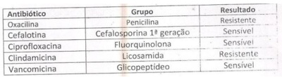
A Cefalotina.
B Ciprofloxacino.
C Clindamicina.
D Vancomicina.
Questão 1377 · Manif estações clínicas · Tratamento · 4000001431Paciente de 18 anos, masculino, residente no interior do Acre foi "picado no pé direito por uma cobra" há cerca de 4 horas. Relata dor moderada no local da picada e diz que sua perna está "inchando". Nega outras queixas. Exame físico: BEG, LOTE, fácies atípica, eucárdico (FC: 88 bpm) eupneico (FR: 18 irpm), PA: 120 x 80 mmHg, TA: 36ºC, AC: normal, AP: normal, abdome sem alterações, no pé direito há pequenos orifícios, edema se estendendo do pé até a região proximal da coxa direita, duas bolhas no dorso do pé direito, além de equimoses distribuídas pelo pé e perna direitos. A classificação do acidente e a melhor conduta com relação à soroterapia é:
A Acidente leve / Soro antibotrópico.
B Acidente moderado / Soro antibotrópico.
C Acidente grave / Soro antibotrópico-crotálico.
D Acidente grave / Soro antibotrópico-laquético.
Questão 1378 · Sinais de alarme · 4000001425Qual das condições abaixo relacionadas, se detectada isoladamente em um paciente com suspeita de dengue, NÃO tem indicação de internação hospitalar?
A Prova do laço positiva;
B Plaquetometria de 15.000/mm³;
C Hepatomegalia dolorosa;
D Aumento repentino do hematócrito.
Questão 1379 · Terlipressina · Prof ilaxia secundária · Prof ilaxia Antibiótica · 4000001418R.M.S., 37 anos, feminino, portadora de cirrose hepática por álcool, sem acompanhamento regular, é trazida à emergência médica por hematêmese. Está hipocorada +++/4+ hipotensa; taquicárdica; afebril. US de abdome (realizada há 3 dias): pequena quantidade de líquido livre na cavidade abdominal, fígado reduzido, aumento do calibre da veia porta e baço bastante aumentado de volume. São condutas imediatas a serem tomadas para esta paciente, EXCETO:
A Estabilizar hemodinamicamente.
B Iniciar terlipressina ou octreotida.
C Iniciar propranolol.
D Iniciar antibioticoprofilaxia.
Questão 1380 · Clínica Médica · Hepatologia · Tratamento · 4000001415GND, 59 anos, masculino, portador de cirrose hepática, Child-Pugh B, em uso de omeprazol, diuréticos, lactulose e vitaminas A, D, E e K, evolui com desorientação. Ao exame físico: anictérico, afebril, ascite moderada, edema de membros inferiores ++/4+. Nesse momento, a priori, NÃO está indicado:
A Investigar hemorragia disgestiva;
B Suspender diuréticos;
C Fazer paracentese;
D Iniciar antibioticoterapia.
Questão 1381 · Neurocriptococose · Tratamento e prof ilaxia · 4000001408Paciente de 20 anos, masculino, portador de HIV, CD4 38 células/mm³, virgem de tratamento, chega ao atendimento médico com cefaleia intensa, vômitos e alteração de comportamento. Ao exame físico não há sinais de irritação meníngea e nem sinais focais. TC de crânio com contraste: sem alterações. A pesquisa direta do agente infeccioso no liquor usando a tinta nanquim (tinta da China) foi positiva. Nesta situação o diagnóstico mais provável e a conduta mais acertada são:
A Meningite por Histoplasma – iniciar fluconazol endovenoso.
B Meningite por Cryptococcus – iniciar anfotericina B.
C Meningite por Cryptosporidium – iniciar metronidazol.
D Neurotoxoplasmose – iniciar sulfadiazina, pirimetamina e ácido folínico.
Questão 1382 · Tratamento de malária não complicada · 4000001397Mulher de 60 anos adquire malária por Plasmodium vivax não grave através de uma transfusão de concentrado de hemácias. Levando em consideração o ciclo biológico do P. vivax, o tratamento de primeira escolha deve ser:
A Cloroquina isoladamente.
B Cloroquina associada à primaquina.
C Arteméter combinado com lumefantrina.
D Artesunato combinado com mefloquina.
Questão 1383 · Inf ectologia · 4000001284Sobre as formas de contágio de doenças infecciosas, marque a alternativa correta.
A A contaminação através de transfusão sangüínea caracteriza contágio direto.
B A dengue é uma doença transmitida por mosquito, considerado um vetor mecânico do vírus.
C A transmissão de doenças através de utensílios pessoais é um tipo de contágio direto através de fômites.
D O beijo na boca e o uso compartilhado de copos ou talheres pode levar ao contágio direto de doenças.
E Na infecção cruzada por uso de instrumental contaminado, este funcionou como fômite.
Questão 1384 · Interpretação dos marcadores sorológicos · 4000001247Paciente masculino, 46 anos, assintomático, realizou exames sorológicos admissionais, pois passou em um concurso público. Os resultados foram: HBsAg: não reagente, anti-HBs: reagente, anti-HBc IgM: não reagente, anti-HBc total: reagente. Com relação a esse caso, pode-se afirmar que o paciente:
A É portador da infecção crônica pelo Vírus da Hepatite B (VHB).
B Apresenta imunidade vacinal ao VHB.
C Apresenta imunidade após infecção pelo VHB.
D Necessita realizar outros exames para confirmar a infecção VHB.
Questão 1385 · Hepatologia · 4000001211A icterícia flutuante é comum em que situação?
A Na neoplasia de cabeça de pâncreas.
B Na neoplasia da papila de Vater.
C No colangiocarcinoma.
D Na neoplasia da vesícula biliar.
E No hepatocarcinoma.
Questão 1386 · Gastroenterologia · 4000001200Neoplasia maligna do 1/3 médio do esôfago, o tipo histológico mais frequente é:
A Carcinoma epidermoide.
B Adenocarcinoma.
C Linfoma.
D Sarcoma.
E NDR.
Questão 1387 · Diagnóstico · Tratamento em populações especiais · 4000001139Gestante de 21 semanas, apresentando tosse, emagrecimento e hiporexia há 5 semanas submete-se à pesquisa de BAAR no escarro, cujo resultado foi positivo (duas cruzes). Paciente diz que há 10 anos iniciou tratamento com esquema básico para tuberculose pulmonar, mas abandonou o mesmo depois de 60 dias a partir do início do tratamento. A paciente não apresenta critérios para internação hospitalar. Nesta situação, a melhor conduta será:
A Iniciar o esquema básico para tuberculose pulmonar.
B Solicitar cultura para micobactérias no escarro e iniciar o esquema básico acrescentando piridoxina.
C Solicitar cultura para micobactérias no escarro e aguardar o resultado para decidir sobre o esquema terapêutico.
D Iniciar o esquema para tuberculose multirresistente.
Questão 1388 · Gastroenterologia · 4000001101Nas situações abaixo, quando indicar cirurgia na doença do refluxo gastroesofágico?
A Esofagite intensa.
B Dor retroesternal frequente.
C Refluxo observado na endoscopia.
D Sensação de globo faríngeo.
E Presença de displasia.
Questão 1390 · Gastroenterologia · 4000001090Na doença do refluxo gastroesofágico, qual o exame complementar considerado como padrão ouro?
A Manometria.
B Endoscopia.
C RX contrastado do esôfago.
D PHmetria.
E Cintilografia.
Questão 1397 · Classif icação de Borrmann · 4000000864No estadiamento morfológico dos tumores do estômago, a classificação Bormann 4, é:
A Tumor ulcerado.
B Infiltrativo local.
C Infiltrativo difuso (Linite).
D Escavado.
E Ulcerado e infiltrativo local.
Questão 1398 · Pneumologia · 4000000823Paciente adulto, sexo masculino, foi admitido na UTI devido à insu ciência respiratória decorrente de crise asmática. Permaneceu em entubação orotraqueal prolongada por 20 dias. Apresentou desconforto respiratório progressivo 7 dias após ser extubado, evoluindo para cornagem. Qual o diagnóstico e conduta?
A Estenose laringo-traqueal - traqueostomia
B Asma persistente e recidivante - Corticoide
C Asma persistente e recidivante - Corticoide e broncodilatador
D Estenose laringo-traqueal - Broncoscopia rígida para dilatação
E N.D.R
Questão 1399 · Endocrinologia · 4000000809Uma paciente com 60 anos de idade, vai ao médico para avaliação de rotina. Esse ao examinar sicamente a paciente, detecta uma nodulação, medindo aproximadamente 5,0 cm, que se movimenta ao deglutir. Responda às questões abaixo com uma alternativa certa. Após a análise dos resultados de exames na paciente acima, concluído o diagnóstico de carcinoma papilar, qual a conduta?
A Tireoidectomia parcial.
B Lobectomia mais istmectomia.
C Tireoidectomia total podendo optar também com esvaziamento profilático central.
D Tireoidectomia total mais esvaziamento jugular profilático.
E Seguiria com ultrassons mensalmente.
Questão 1400 · Endocrinologia · 4000000791Uma paciente com 60 anos de idade, vai ao médico para avaliação de rotina. Esse, ao examinar sicamente a paciente, detecta uma nodulação, medindo aproximadamente 5,0 cm, que se movimenta ao deglutir. Responda às questões abaixo com uma alternativa certa. Quais os exames que devem ser solicitados para o diagnóstico correto?
A Ultrassom e a punção por ultrassom.
B T3, T4, TSH e T4Live.
C Exames pré-operatórios de rotina e RX de tórax.
D Avaliação cardiológica de rotina.
E Ultrassom e a punção sem ultrassom.
Questão 1401 · Dermatologia · 4000000776Vendedor ambulante queixa-se de uma úlcera com seis meses de evolução, localizada no lábio inferior, medindo 2,0 cm de extensão. Nesse vendedor qual a lesão mais frequente da pele da face?
A Ceratose actínica.
B Dermatite seborréica.
C Ceratose seborréica.
D Nevos sebáceo.
E Ca de Bowen.
Questão 1402 · Dermatologia · 4000000754Vendedor ambulante queixa-se de uma úlcera com seis meses de evolução, localizada no lábio inferior, medindo 2,0 cm de extensão. Em tumores com essa história e localização, qual a histologia mais comum?
A Ca epidermoide.
B Ca basocelular.
C Ca metatípico.
D Ca mórfeo.
E Melanoma.
Questão 1403 · Hepatologia · 4000000740Paciente com colecistopatia crônica calculosa e coledocolitíase com colédoco de 8 mm de diâmetro, sem icterícia, o tratamento é:
A Colecistectomia videolaparoscópica.
B Colecistectomia convencional.
C Colecistectomia videolaparoscópica associada à exploração do colédoco por videolaparoscopia para retirada do (s) cálculo (s).
D Colecistectomia videolaparoscópica e a realização de CPER com papilotomia para retirada do (s) cálculo (s).
E As respostas C e D estão corretas.
Questão 1404 · Alf af etoproteína AFP · 4000000715O marcador tumoral mais específico para o carcinoma hepatocelular é:
A CA 19-9.
B CA 125-5.
C Alfa-fetoproteína.
D Antígeno carcinogênico embrionário (CEA).
E Anticorpos anti-mitocôndria.
Questão 1405 · Endocrinologia · 4000000692A Síndrome metabólica é descrita como:
A Obesidade abdominal (acima de 102 cm no homem e 88 cm na mulher), hipertrigliceridemia (acima de 150 mg/dl), baixos níveis de HDL-colesterol (menor que 40 mg/dl nos homens e 50 mg/dl nas mulheres) e hipertensão arterial (PA maior ou igual a 130 x 85 mmHg).
B IMC acima de 35 nas mulheres e 38 nos homens. Associado a: hiperglicemia de jejum (acima de 126 mg/dl), hipertrigliceridemia (acima de 150 mg/dl) e hipertensão arterial (PA maior ou igual a 130 x 85 mmHg).
C Obesidade abdominal (acima de 102 cm no homem e 88 cm na mulher), hipertrigliceridemia (acima de 180 mg/dl), baixos níveis de HDL-colesterol (menor que 40 mg/dl nos homens e 50 mg/dl nas mulheres), hiperglicemia de jejum (acima de 118 mg/dl) e hipertensão arterial (PA maior ou igual a 130 x 85 mmHg).
D Hipertensão arterial (PA maior que 130 x 85 mmHg), hipertrigliceridemia (acima de 180 mg/dl), baixos níveis de HDL-colesterol (menor que 40 mg/dl nos homens e 50 mg/dl nas mulheres), hiperglicemia de jejum (acima de 118 mg/dl) e obesidade.
E Hiperglicemia de jejum (acima de 126 mg/dl), hipertrigliceridemia (acima de 150 mg/dl), hipertensão arterial (PA maior ou igual a 130 x 85 mmHg) e obesidade.
Questão 1406 · Cardiologia · 4000000675Paciente de 62 anos de idade, é atendido na Unidade de Emergência, com história de dor lancinante, extremamente súbita em região precordial, irradiada ao dorso. Ao chegar, estava pálido, taquicárdico, Pressão Arterial de 180 x 110 mmHg, com sopro de regurgitação no foco aórtico e estertores em bases pulmonares. Pulsos periféricos diminuídos em MMIIS. Em relação ao caso, NÃO devemos introduzir imediatamente:
A Nitroprussiato de sódio.
B Derivados da morfina.
C Beta-bloqueadores.
D Nitratos.
E Bloqueadores da enzima conversora.
Questão 1408 · Inf ectologia · 4000000635São manifestações definidoras de Aids, EXCETO:
A Candidíase oral, diarreia por Isospora e pneumocistose.
B Tuberculose miliar, sarcoma de Kaposi e neurotoxoplasmose.
C Tuberculose renal, esofagite por CMV e pneumonia por cândida.
D Retinite por CMV, neurotoxoplasmose e meningite tuberculosa.
E NDA.
Questão 1409 · Inf ectologia · 4000000623O acidente ofídico que mais frequentemente cursa com insuficiência renal é:
A botrópico.
B laquético.
C crotálico.
D elapídico.
E NDA.
Questão 1410 · Inf ectologia · 4000000612O agente mais frequente de pneumonia bacteriana em adultos é:
A Klebsiella pneumoniae.
B Mycoplasma hominis.
C Streptococcus pneumoniae.
D Moraxella catharralis.
E NDA.
Questão 1411 · Nef rologia · 4000000598A GNDA caracteriza-se por:
A proteinúria maciça e cilindrúria.
B cilindrúria e leucocitúria.
C hematúria e piócitos.
D cristalúria e proteinúria.
E NDA.
Questão 1412 · Gastroenterologia · 4000000580Mulher com 30 anos, portadora de retocolite ulcerativa inespecí ca, após uso de opioides para controle de diarreia, chega ao pronto-socorro com febre e dor abdominal. Ao exame é constatado taquicardia, timpanismo abdominal e leucocitose. O exame complementar mais adequado para confirmar o diagnóstico é:
A Enema opaco.
B Tomografia computadorizada de abdome total.
C Colonoscopia.
D Radiografia simples de abdome.
E Trânsito intestinal com cápsula endoscópica.
Revisar: possível letra faltando em enunciado
Questão 1413 · Diuréticos · Clínica Médica · Tratamento · 4000000570Na ascite relacionada à cirrose hepática, podemos afirmar que:
A Pacientes com ascite tensa ou maior do que 5 litros, com necessidade de paracentese, são considerados como portadores de ascite refratária.
B A paracentese terapêutica, com expansão plasmática utilizando a albumina, é considerada a 1ª opção terapêutica para ascite refratária.
C O seu tratamento clínico deve se iniciar com restrição dietética de sal e uso de diurético de alça.
D A válvula de LeVeen é o tratamento de escolha nos casos refratários.
E O GASA < 1.1 deve ser considerado no diagnóstico da hipertensão portal da cirrose.
Questão 1414 · Síndrome de Lof f ler · 4000000553Assinale a alternativa que se refere a helmintíase de maior prevalência na infância, com transmissão decorrente da ingestão de ovos presentes no solo, alimentos e objetos e cujas larvas são responsáveis pela Sídrome de Loeffler.
A Giardiase.
B Strongiloidiase.
C Ancylostomiase.
D Oxiuríase.
E Ascaridíase.
Questão 1415 · Prof ilaxia da hemorragia digestiva varicosa · 4000000543Homem de 48 anos chega ao pronto-socorro inconsciente, com hemorragia digestiva alta. Mantém pressão arterial normal e taquicardia (110 batimentos por minuto). Detectada presença de ascite e esplenomegalia. Além da reposição volêmica, as duas classes de medicamentos que devem ser utilizados são:
A Inibidor de bomba de prótons e betabloqueador não seletivo.
B Vasoconstritor esplâncnico e antibiótico.
C Betabloqueador não seletivo e antibiótico.
D Inibidor de bomba de prótons e vasoconstritor sistêmico.
E Vasoconstritor sistêmico e betabloqueador não seletivo.
Questão 1416 · Impetigo · 4000000536O impetigo bolhoso é o mais comum entre as crianças de 2 a 5 anos de idade. Qual seu principal agente etiológico?
A Estreptococcus.
B Pneumococos.
C Stafilococcus aureus.
D Pseudomonas aeruginosas.
E Estafilococcus epidermides.
Questão 1417 · Clínica Médica · Hepatologia · Distúrbios com comprometimento da excreção da bilirrubina · 4000000533A icterícia com aumento de bilirrubina indireta está relacionada com todas as situações abaixo, EXCETO:
A Anemia hemolítica.
B Hipoalbuminemia.
C Nutrição parenteral prolongada.
D Síndrome de Rotor.
E Síndrome de Gilbert.
Questão 1418 · Clínica Médica · Hepatologia · Colestase · 4000000521A icterícia com padrão colestático obstrutivo caracteriza-se por:
A Icterícia, colúria e acolia.
B Bilirrubina direta, FA e Gama GT elevadas (> 5x o VRN).
C Bilirrubina direta, FA e ALT/AST elevadas.
D Duas alternativas são corretas.
E Todas as alternativas são incorretas.
Questão 1419 · Clínica Médica · Hepatologia · Diagnóstico · 4000000512Utilizando o GASA como diagnóstico diferencial da ascite, é verdadeiro afirmar:
A GASA > ou = 1,1 é compatível com hipertensão portal.
B GASA > ou = 1,1 é compatível com síndrome nefrótica.
C GASA < ou = 1,1 é compatível com carcinomatose.
D GASA < ou = 1,1 é compatível com pancreatite crônica.
E todas as alternativas estão corretas.
Questão 1420 · Tratamento · Ascite · 4000000499Na abordagem farmacológica de 1ª escolha da ascite do hepatopata crônico, deve ser considerado:
A Espironolactona.
B Espironolactona + furosemida.
C Furosemida.
D Amilorida.
E Duas alternativas estão corretas.
Questão 1421 · Gastroenterologia · 4000000491Em um paciente com Hemorragia Digestiva Alta de moderada a severa é correto afirmar:
A Hematêmese, melena, hipotensão arterial e taquicardia são sinais importantes no diagnóstico e avaliação clínica do paciente.
B Hematêmese, melena, hipertensão arterial e taquicardia são sinais importantes no diagnóstico e avaliação clínica do paciente.
C Em relação à mensuração da hemorragia considera-se uma perda moderada o paciente que apresente PA = 90 a 100 mmHg, FC = 120 bpm e perda sanguínea em torno de 1.000 ml.
D As alternativas B e C estão corretas.
E As alternativas A e C estão corretas.
Questão 1422 · Inf ectologia · 4000000450Ainda atendendo o paciente da questão anterior você observa que o mesmo não apresenta perfusão adequada dos tecidos, ou seja, está em CHOQUE. Qual o tipo de choque que provavelmente esse paciente apresentaria?
A Choque hipovolêmico.
B Choque cardiogênico.
C Choque séptico.
D Choque neurogênico.
E Choque anafilático.
Questão 1423 · Hepatologia · 4000000436Paciente de 25 anos, procedente de Dom Eliseu – PA, foi atendido na UPA queixando- se de febre, calafrios e dor abdominal. No exame físico, observa-se hepatomegalia dolorosa e o exame ultrassonográ co revelou coleção hepática única localizada em lobo direito. A hipótese diagnóstica mais provável é:
A Abscesso amebiano.
B Abscesso piogênico.
C Cisto hidático.
D Cistadenoma biliar.
E Nodulação metastática.
Revisar: possível letra faltando em enunciado
Questão 1424 · Classif icação de Borrmann · Gastroenterologia · 4000000420Segundo a classificação de Borrmann para câncer gástrico, lesão polipoide, não ulcerada é classificada como:
A Tipo I.
B Tipo II.
C Tipo III.
D Tipo IV.
E Tipo V.
Questão 1425 · Etiologia · 4000000399Nos países desenvolvidos a principal etiologia das pancreatites é:
A Alcoólica.
B Biliar.
C Idiopática.
D Drogas.
E Parasitas.
Questão 1426 · Critérios de Ranson · 4000000379Para a avaliação precoce e estrati cação do risco dos pacientes com pancreatite aguda podem ser utilizados alguns sistemas de pontuação que auxiliam na diferenciação da doença leve e grave. Assinale a alternativa que possui o critério comumente utilizado nas pancreatites.
A Ranson.
B Kocher.
C Crohn.
D Cullen.
E Grey -Turney.
Questão 1427 · Gastroenterologia · 4000000363Assinale qual o tratamento considerado como primeira opção para o tratamento do H. pylori de acordo com o III Consenso Brasileiro do H. pylori:
A IBP (dose padrão) + amoxicilina 1 g + claritromicina 500 mg 2 vezes ao dia, durante 7 dias.
B IBP + amoxicilina 1 g + azitromicina 500 mg 2 vezes ao dia, durante 7 dias.
C A alternativa (a), durante 10 dias.
D IBP + amoxicilina 1 g + furazolidona 200 mg 2 vezes ao dia, 7 dias.
E IBP (1 vez ao dia) + tetraciclina 500 mg (6 em 6 horas) + claritromicina 500 mg (2 vezes ao dia), durante 7 dias.
Questão 1428 · Cardiologia · 4000000357As duas causas mais comum de insuficiência cardíaca são:
A Doença venosa periférica e hipertensão arterial sistêmica.
B Hipertensão pulmonar e doença renal.
C Hipertensão arterial sistêmica e Cardiopatia isquêmica.
D Hipertensão arterial sistêmica e doença renal.
E Anemia e hipertiroidismo.
Questão 1429 · Gastroenterologia · 4000000354Dentre as alternativas abaixo, assinale a mais CORRETA em relação ao H. pylori:
A O H. pylori é uma bacilo espiralado Gram-positivo.
B Produz a enzima "urease" que facilita a sua colonização e multiplicação no epitélio gastrointestinal.
C Foi descoberta por Warren e Marshall em um final de semana prolongado no ano de 1993.
D Está presente em cerca de setenta por cento (70%) dos caso de úlcera duodenal.
E As alternativas "A e B" estão corretas.
Questão 1430 · Gastroenterologia · 4000000347Os pacientes dispépticos funcionais devem ser classificados em dois subgrupos, de acordo com o Roma III. Assinale a alternativa correta:
A Dispepsia tipo úlcera e tipo dismotilidade.
B Dispepsia tipo dismotilidade e tipo refluxo.
C Síndrome da dor ulcerosa e síndrome inespecífica.
D Síndrome do desconforto pós-prandial e Síndrome da dor epigástrica.
E As alternativas (a) e (d) estão corretas.
Questão 1431 · Gastroenterologia · 4000000338De acordo com o consenso Roma III, o tempo necessário de sintomas para que se faça o diagnóstico de Dispepsia Funcional é:
A sintomas tenham iniciado a 12 meses e ativos nos últimos 3 meses.
B 6 meses com sintomas presentes e ativos nos últimos 2 meses.
C sintomas tenham iniciado há pelo menos 6 meses e ativos nos últimos 3 meses.
D 12 meses com sintomas presentes e 3 meses não necessariamente consecutivos.
E nenhuma das alternativas acima.
Questão 1432 · Gastroenterologia · 4000000319Dentre os exames complementares que auxiliam no diagnóstico das doenças da vesícula biliar a ultrassonografia tem se mostrado um excelente exame. Assinale o item que não caracteriza tal exame.
A Exame rápido.
B Não invasivo.
C Independe da função hepática.
D Utiliza radiação ionizante.
E Pode ser realizado em gestantes.
Questão 1433 · Def inição e Etiologias · 4000000309A afecção cólica que mais causa enterorragia é:
A Doença diverticular do cólon.
B Doença de Crohn.
C Retocolite ulcerativa.
D Tumor de cólon.
E Lesões polipoides.
Questão 1434 · Inf ectologia · 4000000292Quais dos resultados sorológicos abaixo representam imunidade, resposta vacinal ao vírus da hepatite B?
A HBsAg -, HBeAg -, Anti-HBc IgM-, Anti-HBc IgG-, Anti-HBe-, Anti-HBs-;
B HBsAg +, HBeAg- , Anti-HBc IgM- , Anti-HBc IgG- , Anti-HBe-, Anti-HBs-;
C HBsAg -, HBeAg -, Anti-HBc IgM- , Anti-HBc IgG-, Anti-HBe-, Anti-HBs+;
D HBsAg +, HBeAg +, Anti-HBc IgM+ , Anti-HBc IgG+, Anti-HBe-, Anti-HBs-;
E HBsAg -, HBeAg -, Anti-HBc IgM- , Anti-HBc IgG+, Anti-HBe-, Anti-HBs+.
Questão 1435 · Cardiologia · 4000000245Qual é a meta lipídica (LDL) de paciente com risco cardiovascular Alto:
A < 70
B individualizada
C < 130
D < 160
E < 190
Questão 1436 · Cardiologia · 4000000188Sobre as síndromes coronarianas agudas, é INCORRETO afirmar que:
A Dosagem de mioglobina é útil, pois seu aumento é precoce no IAM.
B Supradesnivelamento de segmento ST é um indicador de infarto agudo do miocárdio.
C Infradesnivelamento de segmento ST é um indicador de angina instável, mas há possibilidade de infarto agudo do miocárdio.
D Na síndrome coronariana sem supradesnivelamento de ST o eletrocardiograma pode estar normal, mesmo na presença de patologia.
E Infradesnivelamento de segmento ST descendente tem maior risco de representar isquemia do que o ascendente.
Questão 1437 · Neurologia · 4000000180Benedita, 45 anos, procura unidade de saúde com queixa de cefaléia occipital há uma semana. Relata tratamento prévio para hipertensão com abandono há 1 mês devido à falta dos medicamentos nas farmácias do Município. Apresenta história de AVE há 3 anos sem deixar sequelas. Exame físico: Bom estado geral, LOTE, eupneica, eucárdica, pulsos radiais amplos e simétricos, PA no início da consulta: 150x110 mmHg, PA no nal da consulta: 140x100 mmHg. Quais as medicações indicadas para prevenção secundária de eventos cardiovasculares?
A AAS e clopidogrel.
B AAS e fibrato.
C Fibrato e estatina.
D AAS e estatina.
E Fibrato e clopidogrel.
Questão 1438 · Neurologia · 4000000167Benedita, 45 anos, procura unidade de saúde com queixa de cefaleia occipital há uma semana. Relata tratamento prévio para hipertensão com abandono há 1 mês devido falta dos medicamentos nas farmácias do Município. Apresenta história de AVE há 3 anos sem deixar sequelas. Exame físico: Bom estado geral, LOTE, eupneica, eucárdica, pulsos radiais amplos e simétricos, PA no início da consulta, 150 x 110 mmHg, PA no nal da consulta 140 x 100 mmHg. Qual o estágio da Hipertensão e as indicações obrigatórias das classes medicamentosas para HAS.
A Estágio 1, escolher antagonistas dos canais de cálcio + antagonista da aldosterona em baixas doses.
B Estágio 2, escolher diurético + IECA em baixas doses.
C Estágio 3, escolher diurético + betabloqueador em baixas doses.
D Estágio 2, escolher bloqueadores do receptor de angiotensina + betabloqueador em baixas doses.
E Estágio 3, escolher antagonistas dos canais de cálcio + betabloqueador em baixas doses.
Questão 1439 · Cardiologia · 4000000160São indícios de hipertensão secundária, EXCETO:
A Falta de resposta ao tratamento anti-hipertensivo.
B Início da hipertensão antes dos 30.
C Falta de adesão ao tratamento anti-hipertensivo.
D Hipocalemia na ausência de diurético.
E Sopro abdominal.
Questão 1440 · Cardiologia · 4000000154Solicita-se na primeira consulta e anualmente, os seguintes exames na presença de hipertensão não complicada:
A Hemograma, glicemia de jejum, lipidograma, creatinina, exame qualitativo de urina, potássio, ECG em repouso, exame de fundo de olho.
B Glicemia de jejum, lipidograma, ácido úrico, T SH, creatinina, exame qualitativo de urina com proteinúria, potássio, microalbuminúria de amostra isolada.
C Hemograma, glicemia de jejum, lipidograma, exame qualitativo de urina sem proteinúria, uréia, creatinina, microalbuminúria de 24h, exame de fundo de olho.
D Glicemia de jejum, lipidograma, exame qualitativo de urina sem proteinúria, creatinina, pesquisa de microalbuminúria na urina, potássio, ECG em repouso, exame de fundo de olho.
E Hemograma, glicemia de jejum, lipidograma, exame qualitativo de urina, creatinina, uréia, ácido úrico, ECG em repouso.
Questão 1441 · Cardiologia · 4000000100Qual paciente que pode ser classificado como portador de insuficiência cardíaca crônica em estágio C?
A Paciente hipertenso, assintomático e com ecocardiograma normal
B Paciente hipertenso, assintomático e com hipertrofia ventricular esquerda no ecocardiograma.
C Paciente hipertenso, assintomático e com redução da fração de ejeção no ecocardiograma
D Paciente hipertenso, com sintomas de insuficiência cardíaca e redução da fração de ejeção no ecocardiograma.
Questão 1442 · Classif icação de Mallampati · Classif icação de Mallampati · 4000000090Paciente obeso de 140 kg de peso, vai realizar cirurgia de obesidade por videolaparoscopia. No pré- operatório, foi avaliado segundo a classificação de MALLAMPATI, para ver o grau de di culdade na intubação. Qual manobra o médico deve fazer no exame físico do paciente para avaliar a possibilidade de uma intubação eficaz?
A Exame da articulação atlantoaxial.
B Exame da tireoides.
C Exame da abertura da boca com saída da língua.
D Exame físico das fossas nasais.
E Exame físico do tórax.
Questão 1443 · Inf ectologia · 4000000051Pré-escolar de cinco anos de idade, assintomático, foi levado ao ambulatório com diagnóstico de AIDS rmado há dois meses durante internação hospitalar por pneumonia. Além de uma radiogra a de tórax normal realizada há uma semana e do cartão da criança atualizado, a mãe mostrou resultado de teste de PPD reator forte feito no seu lho há um ano. Segundo o manual de controle e tratamento da Tuberculose no Brasil, a conduta mais adequada seria
A Quimioprofilaxia.
B Esquema tríplice.
C Observação clínica.
D Repetir o teste PPD.
E Revacinação com BCG.
Questão 1444 · Hematologia · 4000000016A PTI aguda na infância caracteriza-se por apresentar:
A plaquetopenia severa acompanhada de quadro hemorrágico grave que evolui geralmente a óbito;
B plaquetopenia severa com ausência de megacariócitos na medula óssea;
C plaquetas normais em quantidade, mas funcionalmente deficientes;
D plaquetopenia aguda, de início abrupto, que geralmente evolui para cura espontânea;
E plaquetopenia com disfunção plaquetária.
Questão 1445 · Tuberculose · 4000004588Qual a conduta para RN, logo após o nascimento, lho de mãe com Tbc abacilífera, em tratamento há 30 dias, de acordo com as normas de controle de Tbc é:
A Iniciar Isoniazida e vacinar com BCG após 6 meses;
B Vacinar com BCG e manter aleitamento materno;
C Fazer PPD e iniciar Isoniazida, se positivo;
D Vacinar com BCG e suspender aleitamento materno.
Questão 1446 · Indicações · 4000004560Uma criança deu entrada no Pronto-Socorro – P/S com mordida de cachorro no membro inferior direito, com lesão leve. A criança está com o cartão de vacinas em dia. O cachorro é conhecido e vacinado. Marque a conduta certa quanto ao tratamento:
A Aplicar duas doses de vacina antirrábica, zero dia e terceiro dia e observar o cachorro por dez dias;
B Não aplicar a vacina e observar o cachorro por dez dias;
C Aplicar cinco doses da vacina antirrábica e observar o cachorro por 5 dias;
D Aplicar cinco doses da vacina antirrábica e o soro e observar o cachorro.
Questão 1447 · Diagnóstico · 4000004455São alterações laboratoriais da febre hemorrágica da dengue, EXCETO:
A Aumento do tempo de protrombina e tromboplastina;
B Leucocitose;
C Plaquetopenia;
D Hemoconcentração (elevação do Htc em 20%).
Questão 1448 · Política Nacional de Atenção Básica PNAB · 4000004386“A Atenção Básica caracteriza-se por um conjunto de ações de saúde, no âmbito individual e coletivo, que abrangem a promoção e a proteção da saúde, a prevenção de agravos, o diagnóstico, o tratamento, a reabilitação e a manutenção da saúde”. (Portaria GM/MS nº 648) São ações de saúde desenvolvidas na atenção básica, EXCETO:
A Realizar o cuidado em saúde da população da área de abrangência da unidade, efetivando a prática do cuidado familiar;
B Realizar o primeiro atendimento às urgências odontológicas;
C Realizar escuta qualificada das necessidades dos usuários internados na unidade hospitalar, promovendo ações curativas e participando da prevenção das infecções hospitalares;
D Desenvolver ações intersetoriais, integrando projetos sociais voltados para a promoção da saúde.
Questão 1449 · Tratamento Geral · 4000004119Considerando a hipertensão arterial, o acidente vascular cerebral e o tratamento, assinale a alternativa incorreta:
A Tratamento com BRA, IECA, diuréticos, betabloqueadores e outros é benéfico para prevenção primária do AVC;
B Em pacientes com oclusão de artérias cervicais ou intracranianas, a redução da pressão arterial deve ser imediata, visando melhorar a perfusão cerebral;
C Indivíduos recuperados de AVC podem beneficiar-se da associação de anti- hipertensivos;
D Após fase aguda, os hipertensos devem ser mantidos com níveis de pressão arterial inferiores a 140/90.
Questão 1450 · Manif estações clínicas · Epidemiologia · Diagnóstico · 4000004097Sobre a hepatite do tipo A (HVA), responda: I - O quadro clínico inicial é o mesmo de qualquer doença viral com sinais e sintomas muitas vezes inespecíficos; II - A icterícia está presente em todos os pacientes durante o período de estado da doença; III - O tratamento deve ser apenas sintomático e de suporte, sendo o repouso fundamental.
A Somente a III é verdadeira.
B Todas são falsas.
C Somente I e III são verdadeiras.
D Somente II e III são verdadeiras
Questão 1451 · Marcadores sorológicos · Hepatologia · 4000004030Em relação aos marcadores sorológicos da Hepatite B (HBV), correlacione as colunas abaixo e, em seguida, assinale a alternativa que apresenta a sequência correta. 1. HBsAg. 2. Anti-HBcIgM. 3. HBeAg. 4. Anti-HBs. ( ) É o primeiro marcador que aparece no curso da infecção pelo HBV. ( ) É marcador de infecção recente, encontrado no soro até 6 meses após a infecção. ( ) É marcador de replicação viral. ( ) Está presente isoladamente em pessoas vacinadas.
A 3/ 4/ 1/ 2
B 1/ 3/ 2/ 4
C 2/ 1/ 4/ 3
D 1/ 2/ 3/ 4
Questão 1452 · Características gerais · Quadro clínico · Diagnóstico · 4000003707Em relação à Febre Amarela, todas as alternativas estão corretas, EXCETO:
A Quadro grave associado a manifestações hemorrágicas, oligúria, hipotensão e choque;
B Mesmo vetor da dengue;
C Quadro clínico de febre alta, cefaleia, mialgia difusa, prostração intensa, náuseas e vômitos e diarreia;
D Caracteriza-se por Hemoconcentração e Plaquetopenia.
Questão 1453 · Diagnóstico · 4000003685Nas encefalites virais temos pacientes oligossintomáticos até pacientes em coma e sequelas graves. A porta de entrada é dependente da forma de contaminação e, a viremia, invasão do parênquima cerebral e disseminação nas meninges, com dependência da imunidade humoral que se opõem ao processo, determinando as manifestações clínicas dos chamados vírus neurotrópicos. O herpes-vírus é o mais importante. Marque a alternativa da alteração do LCR na encefalite por herpes-vírus.
A Glicose normal a discretamente diminuída, lactato normal, celularidade aumentada > 200 células com predomínio de linfo/mononucleares, proteínas elevadas > 200 mg/dl e plasmócitos presentes;
B Plasmócitos frequentes, glicose elevada, proteínas totais elevadas acima de 100 mg/dl, linfócitos predominantes;
C Celularidade aumentada de 10 a 5000/mm³, predomínio de linfomononucleares, lactato normal ou discretamente aumentado, glicose discretamente aumentada ou normal, proteína muito diminuída e infrequentes plasmócitos;
D PCR (Protein-Chain-R eaction) positivo, plasmócitos ausentes, celularidade pouco aumentada com predomínio de mononucleares, glicose normal ou discretamente diminuída, proteínas elevadas chegando a 1000 mg/dl.
Questão 1454 · Hipoglicemia em indivíduos não diabéticos · Hipoglicemia · 4000003664Responda a sequência correta de respostas na abordagem da hipoglicemia. Os sintomas neuroglicopênicos podem ser considerados de fato, quando a glicemia, independente do horário realizado, com valores no sangue, respectivamente, no homem e na mulher, abaixo de quanto? E quais são os sintomas neuroglicopênicos?
A 60 mg/dl e 50 mg/dl, com taquicardia, sudorese e turvação visual;
B 65 mg/dl e 45 mg/dl, com fraqueza muscular, anorexia e sudorese;
C 50 mg/dl e 40 md/dl com tremores, sialorreia e taquicardia;
D 55 mg/dl e 45 mg/dl com visão turva, sonolência e crises convulsivas.
Questão 1455 · Escala de Coma de Glasgow · 4000003649Deve ser levada em consideração para a avaliação do estado neurológico do politraumatizado, a escala de coma de Glasgow. Quais são os parâmetros a serem avaliados nesta escala?
A Resposta verbal, estado das pupilas e resposta motora;
B Abertura ocular, resposta verbal e resposta motora;
C Estado das pupilas, resposta verbal e resposta motora;
D Pressão intra craniana, estado das pupilas e resposta verbal.
Questão 1456 · Apresentação Clínica e Avaliação Inicial · Endocrinologia · 4000003639O diagnóstico dos tumores tireoideanos malignos é baseado na avaliação clínica e nos exames complementares. Diante das afirmativas abaixo, assinale a alternativa correta: I- O diagnóstico definitivo acerca da malignidade de um nódulo da tireoide somente pode ser dado pela análise histológica da peça cirúrgica. II- A presença de microcalci cações ao ultrassom de tireoide é sinal de neoplasia maligna muito frequentemente. III- A presença de nódulo classificado como frio, na cintilogra a de tireoide, é patognomônico de malignidade.
A Somente II e III são verdadeiras;
B Somente a II é verdadeira;
C Somente I e II são verdadeiras;
D Todas são falsas.
Questão 1457 · Abordagem Inicial · 4000003579Paciente com 55 anos e quadro de hematêmese importante foi levado ao pronto- socorro do hospital regional apresentando PA: 90 x 60 mmHg; pulso: 120 bpm; palidez cutâneo-mucosa (3+/4+). Qual é a conduta imediata para este paciente em questão?
A Obtenção de dois acessos venosos calibrosos e estabilização hemodinâmica do paciente.
B Encaminhar o paciente imediatamente para avaliação do cirurgião.
C Utilização do balão de Sengstaken–Blakemore para interromper o sangramento.
D Solicitar endoscopia digestiva alta em caráter de urgência.
Questão 1458 · Diagnóstico · Fatores de Risco · Manif estações Clínicas · 4000003567Com relação à doença diverticular, julgue os itens abaixo: I. Pacientes com diverticulite e sinais de peritonite difusa está indicado o tratamento cirúrgico com ressecção do segmento acometido e anastomose primária. II. Nos casos de diverticulite aguda, o exame padrão-ouro para detecção da lesão e de suas complicações é a colonoscopia, seguida pelo ultrassom de abdome. III. A forma hipertônica é a mais comum em pacientes jovens e apresenta o sangramento como complicação mais comum. IV. Os divertículos verdadeiros são mais raros e um exemplo seria o divertículo de merckel.
A Apenas III é verdadeira;
B I e II são verdadeiras;
C I, II, III são falsas;
D I e IV são verdadeiras.
Questão 1459 · Cardiologia · 4000003385São fatores de risco para a ocorrência tanto de doença cardiovascular quanto de Diabetes Mellitus:
A Herança genética e consumo excessivo de sal.
B Ocupações estressantes e baixa escolaridade.
C Ocupações menos qualificadas e obesidade.
D Hipercolesterolemia e obesidade.
E Sedentarismo e obesidade.
Questão 1460 · Hanseníase · 4000003338Em relação à hanseníase, podemos afirmar que:
A As provas cutâneas, como a reação de Mitsuda, têm grande valor diagnóstico.
B O período de incubação é em média de 6 (seis) meses.
C Está comprovada a existência de imunidade racial em alguns grupos étnicos isolados.
D O homem é o único reservatório de importância demonstrada.
E M. leprae se desenvolve em alguns meios de cultura.
Questão 1461 · Descompensação da Hipertensão Intracraniana · 4000003285P.M.Y., sexo masculino, 56 anos, normotenso até o presente momento. Deu entrada no serviço de terapia intensiva com pressão arterial de 20 x 110 mmHg, com pupilas puntiformes, com disfunção cerebral global, de início agudo, evoluindo no decorrer de 30 minutos para tosse e sucessivos episódios de vômitos com insu ciência respiratória, com PAM de 150 mmHg e crises convulsivas tônico-clônico generalizadas. Na tomogra a do crânio mostra hiperdensidade na base da ponte e mesencéfalo, com apagamento da cisterna da base e dilatação importante do III e IV ventrículos. Qual é a conduta cirúrgica de emergência que pode preservar o tecido nervoso central e tentativa de diminuir a hipertensão intracraniana?
A Derivação ventriculoperitoneal com monitorização da pressão intracraniana.
B Craniectomia descompressiva e monitorização da pressão intracraniana.
C Derivação ventricular externa com monitorização da pressão intracraniana.
D Drenagem do hematoma pontino.
Questão 1462 · Inf ectologia · 4000002925AMT, adolescente viajou para o Careiro e após 1 semana apresentou cefaleia intensa, febre, mialgia, artralgia (febre quebra-ossos) e após alguns dias começou exantema o diagnóstico provável é:
A Sarampo
B Sepse
C Dengue
D Rubéola
E Varicela
Questão 1463 · Acidose metabólica · Acidose metabólica · 4000002865Nos casos de acidose metabólica temos os tampões siológicos: tampões bicarbonato e não bicarbonato. Qual elemento abaixo participa dos tampões não bicarbonato?
A Sódio
B Lipídeos
C Fósforo
D Carboidrato
E Cálcio
Questão 1464 · Litotripsia transureteroscópica por ureterorenoscopia · Cirurgia · Tomograf ia computadorizada · 4000002219Paciente do sexo masculino vem ao pronto atendimento queixando-se de dor abdominal intensa, tipo cólica, de início súbito, em anco direito e fossa ilíaca direita, irradiada para a hemibolsa testicular direita. Não há sinais de irritação peritoneal. O exame de urina (EAS) revela hematúria microscópica, porém a Ultrassom (USG) abdominal não revelou alterações. Qual o próximo passo na investigação deste paciente e sua provável abordagem terapêutica?
A Tomografia computadorizada helicoidal; ureterolitotripsia endoscópica.
B Tomografia computadorizada; nefrectomia direita videolaparoscópica.
C Cistoscopia; antibioticoterapia.
D Urografia excretora; nefrectomia aberta.
E Radiografia simples de abdome; hidratação venosa e antiespasmódicos.
Questão 1465 · Inf ectologia · 4000002005As enteroparasitoses podem cursar assintomáticas ou por manifestações gastrointestinais como inapetência, náuseas, dor abdominal, distensão, diarreia ou constipação. Além disso, podem afetar o equilíbrio nutricional e também causar complicações significativas. As complicações relacionadas à ascaridíase são:
A Obstrução intestinal, volvo, perfuração intestinal, colecistite, pancreatite e abscesso hepático;
B Enterite, seguida de síndrome disabsortiva, desnutrição, desidratação e morte;
C Esofagite, fístulas e alterações pulmonares (refluxo) em consequência do megaesôfago;
D Superinfecções bacterianas, incluindo meningite ou sepsis por gram-negativos entéricos;
E Hemorragia digestiva alta, hipertensão portal e fibrose hepática e alterações pulmonares.
Questão 1466 · Neurologia · 4000001975Albina é uma senhora de 82 anos hipertensa e diabética, viúva há 5 anos. Vem à consulta trazida por sua lha, que relata que a mãe vem apresentando há 3 anos quadro progressivo de perda de memória e agressividade com os lhos. Até 1 mês atrás, morava sozinha em outra cidade, mas teve que se mudar para a casa da lha após quase ter incendiado a casa ao deixar a panela no fogo e ter ido dormir. Em relação a esse caso clínico, assinale a alternativa correta.
A O diagnóstico de depressão é improvável, pois geralmente não cursa com perda de memória;
B A possibilidade de demência vascular deve ser considerada mesmo na ausência de história de acidente vascular cerebral;
C O miniexame do estado mental, o teste do relógio e testes de fluência verbal são úteis para rastreamento, mas têm valor limitado na avaliação e no acompanhamento clínico de pacientes com demência;
D Benzodiazepínicos devem ser usados para conter a agressividade, de preferência o diazepam;
E O diagnóstico de delirium deve ser fortemente considerado devido ao curso progressivo do quadro.
Questão 1467 · Inf ectologia · 4000001971Criança de 4 anos chega à Unidade de Saúde com história de 12 horas de febre e cefaleia. Há 6 horas apresenta vômitos e sonolência. Ao exame físico encontra-se torporosa, febril, taquicárdica, apresenta perfusão periférica diminuída, rigidez de nuca e sufusões hemorrágicas em tronco. A conduta imediata recomendada para esse caso é:
A Procurar encaminhar a criança para internamento em UTI;
B Coletar hemograma e observar a evolução das lesões enquanto aguarda vaga em hospital;
C Obter acesso venoso, iniciar expansão de volume e antibioticoterapia parenteral;
D Encaminhar para coleta de liquor para definir a terapêutica mais adequada;
E Administrar antitérmico e antibiótico e encaminhar para internamento.
Questão 1468 · Inf ectologia · 4000001947Devido à importância das pneumonias como causa de óbito nos primeiros cinco anos de vida nos países em desenvolvimento, a OMS e OPAS definiram critérios para diagnóstico e conduta nos casos suspeitos. Qual é o sinal clínico preditivo para essa enfermidade que deve ser valorizado pelo pediatra?
A Toxemia;
B Tiragens;
C Gemência;
D Taquipneia;
E Batimento aletas nasais.
Questão 1469 · Inf ectologia · 4000001905A quimioprofilaxia para os contatos de meningite bacteriana está indicada nos casos de meningite por:
A Neisseria meningitidis e Streptococcus pneumoniae;
B Streptococcus pneumoniae e Haemophilus influenzae;
C Streptococcus pyogenes e Staphylococcus aureus;
D Staphylococcus aureus e Moraxella catarrhalis;
E Neisseria meningitidis e Haemophilus influenzae;
Questão 1470 · Inf ectologia · 4000001850Lucas, 2 anos, veio acompanhado da mãe com quadro de cefaleia, vômitos e rebaixamento do nível de consciência. Como antecedente, a mãe refere que o menor estava gripado há 3 dias, com febre, tosse e coriza e usou ácido acetilsalicílico. Assinale a alternativa que contém a conduta correta para o caso.
A O caso deve ser conduzido na USF com a administração de dipirona e metoclopramida endovenosos e posterior observação;
B O médico deve encaminhar o menor imediatamente ao pronto-socorro em uma Unidade de Suporte Avançado do SAMU;
C O menor deve ser encaminhado à UPA para uma avaliação com pediatra;
D Deve ser realizada a antibioticoterapia ainda na USF e posterior encaminhamento ao hospital municipal;
E A conduta deve ser hidratação endovenosa com fase rápida de soro fisiológico.
Questão 1471 · Melanoma · 4000001796Paciente jovem, sexo masculino, estudante, 23 anos. Veio para avaliação de lesão névica na face, pequena, medindo cerca de 2 mm de diâmetro, papilomatosa, de cor acastanhada com distribuição uniforme, margens regulares e bordos bem definidos. A lesão surgiu na puberdade, com crescimento lento, muito semelhante a outras na região dorsal e nos membros superiores. Queixa-se dessa lesão por motivos estéticos, e gostaria muito de retirar a lesão. Qual a melhor proposta?
A Orientar o paciente para não mexer na lesão, pelo risco de complicações cirúrgicas, e observação periódica;
B Encaminhar à dermatologia para avaliar se há ou não displasia;
C Propor excisão por shaving na própria unidade básica;
D Propor biópsia para descartar lesão maligna na unidade básica;
E Propor tratamento com despigmentante para amenizar o efeito estético.
Questão 1472 · Fisiopatologia da aterosclerose · 4000001742A doença aterosclerótica é uma das principais causas de morte no Brasil. Por ser uma doença multifatorial, devem ser enfatizados a detecção e o controle dos fatores de risco, entre eles as dislipidemias. O estudo das lipoproteínas é de grande importância clínica para prevenção. Assinale a opção em que essas lipoproteínas têm importância no estabelecimento do processo aterosclerótico, produzindo as chamadas células espumosas e a lipoproteína que contribui para a doença coronariana prematura por promover um poder pró-aterogênico. I. LDL-colesterol e lipoproteína (a); II. VLVL- colesterol e LDL-colesterol; III. HDL-colesterol e VLDL-colesterol; IV. HDL-colesterol e VLDL-colesterol.
A Somente I é Verdadeira;
B Somente II é verdadeira;
C Somente III é verdadeira;
D Somente IV é verdadeira;
E Somente I e III são verdadeiras.
Questão 1473 · Cardiologia · 4000001700O desempenho do coração na sepse pode estar reduzido por: I. Fatores depressores do miocárdio; II. Redução da pré-carrega por hipovolemia; III. Aumento da pós-carga ou vasoconstricção sistêmica.
A Apenas afirmativa I está correta;
B Apenas afirmativas I, III estão corretas;
C Apenas afirmativa II, está correta;
D Apenas afirmativas I, II estão corretas;
E Todas afirmativas estão corretas.
Questão 1474 · Tratamento · Cetoacidose diabética · 4000001684As afirmativas abaixo referem-se a condutas em pacientes com cetoacidose diabética. I. A reposição de insulina é a prioridade máxima; II. A hidratação com Cloreto de sódio a 0,9% diminui a glicemia do indivíduo em torno de 25% da glicemia independente de administração de insulina; III. Cloreto de sódio a 0,9% é o coloide de primeira escolha.
A Somente afirmativa II está correta;
B Somente afirmativas II, III estão corretas;
C Somente afirmativa III está correta;
D Somente afirmativas I, III estão corretas;
E Somente afirmativa I está correta.
Questão 1475 · Cardiologia · 4000001638Os Inibidores da Enzima Conversora de Angiotensina (IECA), atualmente são drogas e cazes em monoterapia nos pacientes com hipertensão arterial sistêmica. Assinale a alternativa correta sobre os efeitos adversos dessas drogas: I. Hipersensibilidade cutânea; II. Rubor facial; III. Bloqueio atrioventricular; IV. Alteração do paladar.
A Somente I é verdadeira.
B Somente I e II são verdadeiras.
C Somente III e IV são verdadeiras.
D Somente I e IV são verdadeiras.
E Somente II e III.
Questão 1476 · Gastroenterologia · 4000001635Paciente do sexo feminino vem ao consultório do cirurgião portando endoscopia digestiva alta com diagnóstico de processo mitótico ulceroin ltrativo em pequena curvatura gástrica, sem confirmação histopatológica até o momento. Ao exame físico, apresenta-se emagrecida, hipocorada ++/4, anictérica e normotensa. Apresenta linfonodo palpável supraclavicular esquerdo. Seu abdome é plano, ácido, indolor à palpação. Não há massa epigástrica palpável, mas evidencia-se discreta ascite à palpação. Toque retal normal. Assinale a alternativa INCORRETA:
A Espera-se que a biópsia da lesão revele adenocarcinoma gástrico.
B Os dados clínicos acima nos permitem afirmar que se trata de neoplasia gástrica incurável, porém não há dados suficientes para avaliar sua ressecabilidade.
C O toque retal normal exclui a possibilidade de tumoração de Krukenberg no caso acima.
D A paciente acima pode evoluir com hemorragia digestiva alta ou abdome agudo perfurativo.
E O próximo passo para estadiamento adequado deste paciente é a tomografia computadorizada.
Questão 1477 · Gastroenterologia · 4000001618Paciente com 75 anos, hipertenso, diabético, com sequela de AVC e IAM com menos de 6 meses. Apresenta câncer de cabeça de pâncreas, Estadiamento clínico (Ec) T1N0M0, sem invasão de estruturas adjacentes. Responda a alternativa CORRETA abaixo:
A Irressecável, encaminhado para neoadjuvância e reavaliação.
B Inoperável, encaminhado para quimioterapia paliativa.
C Inoperável, encaminhado para adjuvância.
D Irressecável, encaminhado para quimioterapia paliativa.
E Irressecável, encaminhado para adjuvância.
Questão 1478 · Perf il de f erro na anemia f erropriva · 4000001613Nas anemias por carência de ferro, a capacidade de ligação de ferro total e ferritina sérica mostram, respectivamente, o seguinte padrão:
A Aumentado – diminuído;
B Aumentado – normal;
C Diminuído – normal;
D Diminuído – aumentado;
E Normal – aumentado.
Questão 1479 · Gastroenterologia · 4000001601Paciente do sexo masculino, 55 anos, dá entrada no pronto atendimento por hematêmese severa e choque hipovolêmico. Encontra-se ictérico +/4, emagrecido, pálido, taquicárdico, taquipneico, com nível de consciência rebaixado e hipotenso. Seu abdome é ascítico indolor à palpação. Esplenomegalia presente. Edema de membros inferiores ++/4. Refere uso abusivo crônico de álcool. Não sabe informar história de hepatite prévia. Qual das opções de tratamento abaixo representa a de maior índice de letalidade para o caso acima?
A Octreotida endovenoso.
B Balão de Sengstaken-Blakemore.
C Tratamento endoscópico.
D TIPS.
E Controle cirúrgico do sangramento.
Questão 1480 · Neurologia · 4000001597Paciente 20 anos, mulher, teve exposição à brusca variação de temperatura ambiente, veri cou que sua comissura labial estava desviada para a direita.Concomitante, notou a impossibilidade de fechar a pálpebra esquerda e hipostesia em hemiface esquerda. Nenhuma outra alteração no exame neurológico. Esse diagnóstico de paralisia facial é do tipo:
A Periférica esquerda;
B Periférica direita;
C Central esquerda;
D Central direita;
E Complexa.
Questão 1481 · Avaliação da Gravidade · 4000001590A Pancreatite grave é considerada patologia de altas taxas de morbimortalidade devido aos fatores abaixo, exceto:
A Evolução para insuficiência respiratória secundária a choque hipovolêmico e síndrome da resposta inflamatória sistêmica.
B Possível evolução para fasceite necrotizante de parede abdominal, evidente pelos sinais de Cullen e Gray-Turner.
C Necrose retroperitoneal por extravasamento de enzimas pancreáticas com possível evolução para abscesso.
D Níveis de amilase bastante elevados e de difícil controle clínico.
E Grande mobilização de líquido para o retroperitôneo evoluindo como choque grave e insuficiência renal aguda.
Questão 1482 · Complicações da DRC Doença Cardiovascular · 4000001576A principal causa de mortalidade em pacientes em hemodiálise crônica é:
A Hemorragia cerebral.
B Sepse.
C Hemorragia digestiva.
D Insuficiência respiratória aguda.
E Cardiovascular.
Questão 1483 · Inf ectologia · 4000001533As afirmativas abaixo referem-se às pneumonias: I. A tosse da pneumonia bacteriana é produzida e útil, ao passo que na virótica é incômoda e seca; II. Os escarros hemoptoicos, cor de tijolo ou em “pudim de chocolate” são comuns em certas pneumonias bacterianas; III. Ausculta pulmonar é mais pobre nas pneumonias viróticas do que nas bacterianas.
A Somente a afirmativa I está correta.
B Somente as afirmativas I e III estão corretas.
C Somente a afirmativa III está correta.
D Somente a afirmativa II está correta.
E Todas as afirmativas estão corretas.
Questão 1484 · Cardiologia · 4000001511Qual a maior anormalidade na insuficiência ventricular esquerda?
A Edema de MMII;
B Cefaleia;
C Hepatomegalia;
D Congestão vascular pulmonar;
E Hipertensão arterial.
Questão 1485 · Critérios diagnósticos · 4000001498Paciente 57 anos, sexo masculino, realizou uma glicemia de jejum em dois dias diferentes com resultados de 101 mg/dl e 100 mg/dl. Foi solicitado um TOTG (Teste Oral de Tolerância à Glicose), resultado 196 mg/dl. Conclui-se que: I. Intolerante à glicose; II. Diabetes Mellitus; III. Com a glicemia de 101 mg/dl, poderíamos afirmar que ele é intolerante à glicose.
A Apenas alternativa I está correta;
B Apenas Alternativa II está correta;
C Apenas Alternativa III está correta;
D Todas alternativas estão corretas;
E Todas alternativas estão erradas.
Questão 1486 · Critérios de Ranson · 4000001482Segundo Ranson, na pancreatite aguda, um dos critérios de mau prognóstico é:
A Glicemia > 200mg %;
B Íleo paralítico no momento da admissão;
C Cálcio sérico < 8mg% no momento da admissão;
D Queda do hematócrito maior que 5% em 48 horas;
E Sinais de irritação ao peritoneal ao exame físico, após 48 horas.
Questão 1487 · Tratamento · Gota · 4000001468Homem, 52 anos, apresenta sinais de artrite aguda intensa na 1ª metatarsofalangeana direita. Esta é a 3ª crise nos últimos 6 meses. Tem diagnósticos de HAS, mas não faz tratamento, PA = 170/110 mmHg. Quais as medicações a serem prescritas nesse momento?
A Alopurinol, cochicina e losartana.
B Diclofenaco de sódio, predinisona e hidroclorotiazida.
C Butazolidina, prednisona e propanolol.
D Colchicina, alopurinol e propranolol.
E Anti-inflamatório não hormonal, colchicina e losartana.
Questão 1488 · Diagnóstico · 4000001459Um paciente HIV positivo (2 ELISA e 1 western blot positivos), com CD4 de 40 céls/mm³, é admitido por crise convulsiva. Ao exame de Tomogra a de Crânio (TC) contrastada, não evidenciou anormalidades e estudo liquórico mostrou 5 céls/mm³, com glicorraquia normal. A melhor condução para o caso é:
A Estudo do liquor com tinta nanquim e detecção de antígeno criptocócico.
B Biópsia cerebral estereotáxica.
C Iniciar carbamazepina.
D Fundoscopia.
E EEG.
Questão 1489 · Diagnóstico Laboratorial · 4000001456Paciente 67 anos com relato de icterícia há mais ou menos quatro meses, associado à perda ponderal 10 Kg. Tomogra a computadorizada sugestiva de tumor de cabeça de pâncreas. Bilirrubinas levadas 10 vezes o limite superior da normalidade com predominância da direta. TAP: Atividade: 30%, INR: 2,6; Em relação aos marcadores tumorais CEA, CA 19.9. I. Suas especificidades no câncer de pâncreas é de aproximadamente 80 e 95% respectivamente; II. O objetivo maior destes marcadores na propedêutica é monitorização da recidiva da doença; III. Caso haja intervenção cirúrgica e os marcadores tumorais não decrescerem é sinal de mal prognóstico.
A Somente afirmativas I, III estão corretas;
B Somente alternativa II está correta;
C Somente alternativa III está correta;
D Somente alternativas II, III estão corretas;
E Somente alternativa I está correta.
Questão 1490 · Pneumologia · 4000001451Paciente do sexo F. 23 anos, queixa-se de astenia, inapetência e febre vespertina há 3 semanas. Procurou PS devido dor torâcica em base direita ventilatônica dependente. Fez, radiogra a de tórax que evidenciou velamento do seio costofrênico direito, sendo encaminhado ao ambulatório de Pneumologia para investigação do Derrame Pleural. Teve contato com o pai tuberculose há 2 anos. Qual a sua conduta com relação a propedêutica de investigação no caso acima?
A Solicitar TT (PPD), pesquisa do BAAR no escarro e iniciar esquema básico.
B Solicitar biópsia de pleura e iniciar esquema básico.
C Pesquisa de BAAR no líquido sinoval, sendo esta negativa, não deve ser tuberculose e não fica indica tratamento.
D Toracocentesa diagnóstica, se análise do líquido pleural revelar linfocitose = 75%, ADA (adenosína dearminase) = 45 U/l e o DHL (desidrogenase lática) = 200 U/l, configurando- se exsuadato, e deve-se iniciar esquema básico.
E Iniciar tratamento com claritromicina.
Questão 1491 · Inf ectologia · 4000001439Numere a coluna da direita de acordo com sua correspondência com a coluna da esquerda, correlacionando as doenças sexualmente transmissíveis as suas técnicas diagnósticas 1. Clamídia; 2. Cancro mole; 3. Donovanose; 4. Gonorreia; 5. HPV ( ) O diagnóstico das lesões vegetantes e clínico. A biópsia de lesão ou de área suspeita pode ser realizada para auxiliar decisões mais difíceis. O diagnóstico definitivo das infecção é feito pela identi cação da presença do DNA viral por meio de testes de hibridização molecular (hibridização in situ, PCR, captura híbrida). ( ) A bacterioscopia da secreção uretral é um bom método pela técnica do Gram: evidencia a presença de diplococos Gram-negativos no interior de polimorfonucleares e aumento no número de leucócitos polimorfanucleares. Para cultura, utiliza-se o meio seletivo de Thayer-Martim. ( ) O diagnóstico é baseado na biopsia da lesão e deve sempre ser afastada a hipótese de neoplasia. ( ) A bacterioscopia da secreção uterial e colocação por Gram não tem boa sensibilidade, mas podem afastar a hipótese da doença quando da ausência de diplococos em secreção uretral. ( ) A bacterioscopia com pesquisa do Haemophilus ducreyi é pilar diagnóstico. Assinale a alternativa que apresenta a numeração correta da coluna da direita, de cima para baixo.
A 2 - 4 - 5 - 1 - 3
B 3 - 5 - 2 -1 - 4
C 4 - 5 - 3 - 2 - 1
D 5 - 3 - 4 - 2 - 1
E 5 - 4 - 3 - 1 - 2
Questão 1492 · Avaliação da Gravidade · 4000001421Homem, 51 anos, alcoolista, interna com quadro clínico-laboratorial de pancreatite aguda. É submetido a tratamento adequado e reavaliado após as primeiras 48 horas. Qual dos seguintes achados, se detectado neste período, é indicativo de mau prognóstico?
A Glicemia de 180 mg/dL.
B Leucôcitos de15500/mm³.
C Aumento do nitrogênio ureico em 7 mg/dL.
D PO2 arterial de 65 mmHg.
E Estimativa de sequestro de fluídos em 5 litros.
Questão 1493 · Gastroenterologia · 4000001420Paciente 67 anos com relato de icterícia há mais ou menos quatro meses, associado à perda ponderal 10 Kg. Tomogra a computadorizada sugestiva de tumor de cabeça de pâncreas. Bilirrubinas levadas 10 vezes o limite superior da normalidade com predominância da direta. TAP: Atividade: 30%, INR: 2,6; I. Atividade protrombínica diminuída é justificável por provável implante hepático; II. INR alargado por provável dificuldade de síntese diminuída de vitamina K pela absorção prejudicada; III. A colestase neste caso é intra-hepática devido à invasão da neoplasia.
A Somente alternativas II, III estão corretas;
B Somente alternativa I está correta;
C Somente alternativa II está correta;
D Somente alternativa I, III estão corretas;
E Todas as alternativas estão corretas.
Questão 1494 · Cardiopatia dilatada · Doença de Chagas · Cardiomiopatias · 4000001406Correlacione os quadros clínicos dos pacientes abaixo com as doenças do quadro seguinte, assinalando a resposta certa da correspondência: I. M.S.F., homem, 57 anos, etilista pesado, hipertenso e diabético, com queixa de dispneia aos esforços, dispneia paroxística noturna, ortopneia e edema de membros inferiores. Ao exame encontra-se ictérico (+/4), com ritmo cardíaco regular, em 3T (B3) e fígado palpável há 3 cm do RCD, edema MMI 2+/4 IECG com sobrecarga ventricular esquerda. Radiografia de tórax com cardiomegalia.; II. A.M.S., Homem, 71 anos, tabagista pesado, etilista e hipertenso, com queixa de dispneia aos esforços e edema de membros inferiores. Ao exame encontra-se com pletora facial, com ritmo cardíaco regular, em 2T. B2 hiperfonética. MV diminuído difusamente, edema MMII 2+/4 ECG com sobrecarga atrial direta; III. F.C.A., mulher, 54 anos, tabagista, e não etilista, com queixas de dispneia aos esforços, ortopneia e edema de membros inferiores. Ao exame encontra-se ictérica (++/4), com turgência jugular a 45º, com ritmo cardíaco regular em 3T (B3) e fígado palpável há 4 cm do RCD, edema MMII 3+/4 ECG com bloqueio de ramo direito. Radiografia de tórax com cardiomegalia; IV. R.G.L., mulher, 70 anos, diabética, hipertensa, obesa, tabagista e etilista social, com queixas de dispneia aos esforços, ortopneia e edema de membros inferiores. Ao exame encontra-se com ritmo cardíaco regular em 2T, crepitantes em bases pulmonares bilateralmente, edema MMII e+/4 ECG com onda Q em parede anterior. 1. Miocardiopatia dilatada provavelmente de etiologia chagásica. 2. Miocardiopatia isquêmica. 3. Miocardiopatia dilatada provavelmente de etiologia alcoólica. 4. Cor pulmonale.
A I-1, II-3, III-2, IV-4.
B I-3, II-2, III-4, IV-1.
C I-3, II-2, III-1, IV-4
D I-3, II-4, III-1, IV-2.
E I-1, II-4, III-3, IV-2
Questão 1495 · Inf ectologia · 4000001401Considerando uma grávida primigesta, portadora do vírus HIV. Sua carga viral entre a 34ª–37ª semana encontra-se em torno de 1.500 cps/ml. Qual a melhor conduta?
A Realizar o parto vaginal espontâneo no termo.
B Realizar cesárea na 36ª semana.
C Realizar o parto vaginal induzido na 38ª semana.
D Realizar o parto vaginal na 40ª semana.
E Realizar cesárea na 38ª semana.
Questão 1496 · Exacerbação Aguda da DPOC EADPOC · 4000001399O agente etiológico mais comum de infecção respiratória aguda bacteriana em pacientes portadores de DPOC é:
A Staphylococcus aureus;
B Mycobacterium tuberculose;
C Klebsiela pneumoniae;
D Streptococcus pyogenes;
E Streptococcus penumoniae.
Questão 1497 · Alcalose metabólica · Causas de alcalose metabólicas · 4000001384A concomitância de uso de diurético de alça e vômitos gera:
A Alcalose metabólica simples;
B Alcalose mista;
C Acidose mista;
D Acidose metabólica simples;
E Acidose respiratória e acidose metabólica.
Questão 1498 · Cardiologia · 4000001372Para cada série de parâmetros hemodinâmicos abaixo existe uma correspondência etiológica de choque. Assinale a alternativa que contempla as associações corretas. A - Embolia pulmonar aguda maciça; B - Choque cardiogênico; C - Tamponamento cardíaco; D - Sepse grave; E - Hemorragia digestiva aguda.
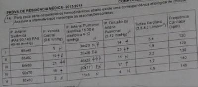
A I-D; II-B; III-A; IV-C; V-E
B I-B; II-C; III-A; IV-E; V-D
C I-D; II-B; III-C; IV-A; V-E
D I-C; II-A; III-B; IV-E; V-D
E I-D; II-B; III-E; IV-C; V-A
Questão 1499 · Cetoacidose diabética · 4000001343Um paciente diabético tipo I é encontrado comatoso com hálito cetônico. A glicemia é de 450 mg/dl e, apesar da gasometria arterial registrar grave acidose metabólica, não se observa respiração de Kussmaul. Assinale a afirmativa que mais se justifica esse fato. I. Aumento da narcose de CO2; II. Hiperpotassemia grave associada; III. Exaustão do paciente; IV. Hipercalcemia associada.
A Apenas alternativas I, IV estão corretas;
B Apenas alternativa II está correta;
C Apenas alternativa III está correta;
D Apenas alternativas I, IV estão corretas;
E Apenas alternativa III está correta.
Questão 1500 · Dissecção aórtica aguda · Dissecção aórtica aguda · Cardiologia · 4000001320Escolha a melhor droga ou combinação de drogas indicada no controle da hipertensão em vigência da dissecção de aorta:
A Furosemida + betabloqueador.
B Nitropussiato de sódio + betabloqueador.
C Nitropussiato de sódio isoladamente.
D Betabloqueador isoladamente.
E Nitropussiato de sódio + nifedipina.
Questão 1501 · Nef rologia · 4000001303O transplante de órgãos entre indivíduos da mesma espécie é chamado de:
A Autotransplante;
B Isotransplante;
C Alotransplante;
D Xenotransplante;
E Nenhuma das anteriores.
Questão 1502 · Neurologia · 4000001283Sobre a demência, é CORRETO afirmar:
A É um aspecto inevitável ao processo de envelhecimento.
B Existem medicações bem estabelecidas para o tratamento das demências primárias, como a Doença de Alzheimer.
C O diagnóstico das demências depende de achados tomográficos.
D A avaliação de depressão é recomendável, pois pode mascarar um quadro de demência.
E Os familiares devem confrontar todos os erros e discutir com o paciente para que não os repita.
Questão 1503 · Hepatologia · 4000001278Qual patologia pode ser classificada como causa extra-hepática de hipertensão porta?
A Trombose da veia porta;
B Sarcoidose;
C Cirrose biliar primária;
D Hipertensão porta idiopática;
E Esquistossomose.
Questão 1504 · Cardiologia · 4000001266Rita de Cássia tem 56 anos, parda, recém chegada na Comunidade Vila das Casas. Casada com Antônio, 53 anos e mãe de dois lhos adolescentes. Trabalha como caixa de supermercado na área nobre da cidade, levando cerca de 1 hora no transporte em cada uma das viagens. Faz consultas regulares para planejamento familiar, rastreamento de câncer de colo de útero e controle da HAS. Na última consulta seu nível pressórico foi de 150 x 100 mmHg. O qual ela atribuiu a uma semana estressante no trabalho. Atualmente está fazendo uso de Anlodipino 5 mg/dia e Hidroclorotiazida 25 mg/dia. Foi pedido que ela realizasse uma Monitorização Residencial da Pressão Arterial e evidenciou uma média pressórica de 148 x 98 mmHg. A rma que não sente nenhum sintoma, não tem tempo para fazer atividade física e nem fazer sua comida à parte da família e prefere resolver seus problemas de saúde com remédios. Tabagista há 36 anos. Na escala de Framinghan obteve resultado de 22% de chances de desenvolver um evento cardiovascular em 10 anos. Frente ao caso e considerando o sinergismo entre as medicações, qual seria conduta mais adequada:
A Reforçar as medidas não medicamentosas.
B Reforçar as medidas não medicamentosas e aumentar a dose do Antagonista dos Canais Cálcio.
C Reforçar as medidas não medicamentosas e aumentar a dose da diurético.
D Reforçar as medidas não medicamentosas e substituir o Antagonista dos Canais Cálcio por IECA.
E Reforçar as medidas não medicamentosas e trocar as medicações por IECA e Betabloqueador.
Questão 1505 · Manejo inicial e pacotes · Erisipela · Diagnóstico e tratamento de erisipela e celulite · 4000001261Homem de 58 anos vem apresentando nos últimos cinco dias, quadro de erisipela em M.I.E, febre, anorexia e evoluindo com redução ao volume urinário. Ao exame físico, paciente orientado, desidratado ++/4, hipocorado ++/4, FR = 32 (PM, temperatura axilar = 38,2ºC, FC = 108 bpm, PA = 90 x 60 mmHg, ritmo cardíaco regular em 2T, e resultados dos exames complementares: Ht=26% Hb+ 10 g/dl, leucócitos = 14.000/mm³ (15% bastões) glicose = 120 mg/dl ureia= 86 mg/dl creatina = 1,4 mg/dl, Na = 134 mEq/L, K= 5,3 mEg/L, pH = 7,28, PO2= 92 mmHg. PCO2 = 29 mmHg BE= - 8,3 HCO= 14 mEq/L. A medida clínica inicial mais apropriada é:
A Noradrenalina em doses elevadas.
B Hidratação venosa vigorosa, baseada na pressão venosa central e sinais vitais.
C Hemotransfusão para corrigir hemoglobina para 12%.
D Correção da acidose com bicarbonato de sódio endovenoso.
E Intubação orotraqueal e suporte ventilatório.
Questão 1506 · Diagnóstico · Quadro clínico · 4000001237Em relação à Dengue, quanto à definição de caso, é correto afirmar que:
A Caso suspeito de dengue clássico: paciente que tenha doença febril aguda, com duração máxima de 7 dias, acompanhada de pelo menos mais dois sintomas.
B Caso confirmado de dengue clássico: é o caso confirmado laboratorialmente.
C Caso suspeito de Febre Hemorrágica da Dengue (FHD): é todo caso suspeito de dengue clássico que também apresente manifestações hemorrágicas.
D Caso de dengue com complicações: é todo caso que se enquadre nos critérios de FHD e a classificação de dengue clássico é insatisfatória.
E Caso descartado: caso suspeito, sem exame laboratorial, cujas investigações clínica e epidemiológica são compatíveis com outras patologias.
Questão 1507 · Gastroenterologia · 4000001216A causa mais frequente de hemorragia digestiva baixa é:
A Neoplasia do intestino grosso;
B Hemorroidas;
C Doença diverticular;
D Varizes colônicas;
E Colites.
Questão 1508 · Síndrome nef rótica · Nef ropatia diabética x Nef ropatia não diabética · Síndrome nef rítica · 4000001212Correlacione as alterações estruturais das glomerulonefrites com o quadro clínico e, em seguida, assinale a alternativa CORRETA: I. Proteinúria nefrótica (> 3,5 g/24h), hipoalbuminemia, edema e dislipidemia; II.Insuficiência renal aguda, oligúria, hipertensão, edema, hematúria e proteinúria; III. Proteinúria, hematúria com declínio da taxa de ltração glomerular, hipertensão com proliferação das células e da matriz mesangial; IV. Proteinúria não nefrótica, insuficiência renal crônica e fibrose intersticial glomerular. ( ) GN proliferativa difusa (nefrite lúpica). ( ) Esclerose global (nefropatia diabética). ( ) GN membranosa (idiopática). ( ) GN mesangioproliferativa (nefropatia por IgA).
A II; IV; III; I.
B III; I; II; IV.
C I; II; III; IV.
D II; IV; I; III.
E II; III; I; IV.
Questão 1509 · Classif icação · Cálculo da taxa de f iltração glomerular · 4000001157Uma paciente de 60 anos com 50 kg de peso tem diabete melito tipo 2 há 16 anos. Evoluiu de microalbuminúria, há quatro anos, para uma proteinúria de 5,3 g/24H nos últimos dois anos. Considerando que sua creatinina é de 2,0 mg/dl, em qual estágio de doença renal crônica ela se encontra?
A Estágio 1
B Estágio 2
C Estágio 3
D Estágio 4
E Estágio 5
Questão 1510 · Inf ectologia · 4000001151Nas cirurgias limpas e potencialmente contaminadas recomenda-se o uso de antibioticopro laxia nas seguintes situações, exceto:
A Pacientes acima de 70 anos;
B Desnutridos;
C Hernioplastia incisional;
D Implantes de órteses ou telas;
E Hernioplastia umbilical.
Questão 1511 · Glomerulonef rite pósinf ecciosa · Síndrome nef rítica · 4000001147Entre os achados abaixo, qual é o menos esperado na evolução da Glomerulonefrite Difusa Aguda (GNDA) ou glomerulonefrite pós-infecciosa?
A Edema.
B Proteinúria maior que 3,5 g/24h.
C Hipertensão arterial.
D Hemácias dismórficas na urina.
E Oligúria.
Questão 1512 · Agentes etiológicos · 4000001133Nas infecções do trato urinário adquiridas na comunidade, o agente etiológico mais comum é:
A Escherichia coli.
B Staphylococcus aureus.
C Klebsiella sp.
D Staphylococcus epidermidis.
E Proteus sp.
Questão 1513 · Inf ectologia · 4000001124São fatores indutores da resposta inflamatória complexa (SIRS) associados ao choque circulatório, exceto;
A Radicais livres do oxigênio;
B Óxido nítrico;
C Endotelinas;
D Fator de ativação plaquetária;
E Metabólitos do sistema angiotensina.
Questão 1514 · Quadro Clínico · 4000001121Os tumores cerebrais podem se manifestar clinicamente através de sintomas generalizados, que re etem a hipertensão intracraniana, ou por sintomas localizatórios, que refletem a localização do tumor. Coluna A: A – Lobo frontal; B – Corpo caloso; C – Ponte/bulbo; D – Mesencéfalo/pineal; E – Cerebelo; F – Ângulo pontocerebelar. Coluna B: 1 – Puberdade precoce; 2 – Espasticidade; 3 – Surdez ipsilateral; 4 – Distúrbios da marcha; 5 – Perda de memória; 6 – Nistagmo. Em relação às manifestações clínicas e à localização específica, ligue as colunas A e B corretamente:
A A - 4; B - 5; C - 2; D - 1; E - 6; F - 3.
B A - 4; B - 3; C - 1; D - 6; E - 2; F - 5.
C A - 2; B - 5; C - 2; D - 6; E - 3; F - 1.
D A - 3; B - 4; C - 5; D - 1; E - 2; F - 6.
E A - 4; B - 6; C - 2; D - 1; E - 5; F - 3.
Questão 1515 · Pneumologia · 4000001108Em função da classificação siopatológica do estado de choque, o choque em decorrência da embolia pulmonar é classificado como:
A Hipovolêmico;
B Cardiogênico;
C Respiratório;
D Obstrutivo;
E Distributivo.
Questão 1516 · Encef alopatia de WernickeKorsakof f · 4000001103Homem, 43 anos, alcoolista crônico foi encontrado com rebaixamento do estado de consciência e levado ao Pronto-Socorro pelo Resgate. Ainda na ambulância, recebeu 50 ml de glicose a 50% endovenoso, com melhora do quadro, persistindo alguma confusão. Como se encontrava febril, foi necessário internação para investigação melhor do quadro. No dia seguinte, o paciente agravou o estado de confusão mental, agora com nistagmo multidirecional, paralisia do VI par craniano à esquerda e ataxia cerebelar. Assinale a alternativa CORRETA:
A Provável quadro de hematoma subdural crônico.
B O quadro pode ter agravado por se tratar de Meningite bacteriana.
C O agravo se deve à Síndrome de Wernicke, decorrente da deficiência de tiamina.
D É quadro típico de demência alcoólica.
E A causa do agravo pode ser devida à mielinóllise pontina central.
Questão 1517 · Tratamento Medicamentoso das Epilepsias · 4000001088Em relação à crise epiléptica, marque a alternativa INCORRETA:
A A Ressonância Nuclear Magnética (RM) do cérebro complementa o estudo eletroencefalográfico, devendo ser realizada em todos os pacientes maiores de 18 anos de idade com suspeita de epilepsia.
B Na investigação das crises, a punção lombar é mandatória se houver suspeita de meningite ou encefalite.
C As drogas empregadas no tratamento da epilepsia podem levar à osteopenia ou à osteomalacia, e, com isso, aumentar o risco de fraturas ósseas.
D História prévia de neoplasia de mama pode sugerir necessidades de estudo de imagem cerebral, pelo risco aumentado de metástases servirem de focos convulsivos.
E No tratamento das crises, a falta de resposta a uma determinada droga anticonvulsivante, como a carbamazepina ou a fenitoína, impede a resposta a outra droga, sendo recomendadas outras formas de tratamento.
Questão 1518 · Hematologia · 4000001080O uso da heparina de baixo peso molecular deve seguir algumas recomendações, exceto:
A Iniciar duas horas após a cirurgia;
B Suspender 12 horas antes do procedimento;
C Reiniciar somente 12 a 24 horas após o procedimento;
D Suspender o uso quando o INR > 1,9;
E Pode ser usada realizada em pacientes submetidos à raquianestesia ou anestesia peridural.
Questão 1519 · Acidente Vascular Cerebral Hemorrágico · 4000001075O descontrole crônico da hipertensão arterial sistêmica é a causa mais frequente de hemorragia intracerebral não traumática, também chamado de Acidente Vascular Encefálico Hemorrágico (AVEH) principalmente em pessoas com menos de 55 anos e tabagistas. Marque a resposta ERRADA:
A As anormalidades neurológicas causadas pela hemorragia intracerebral não difere daquelas causadas por AVE Isquêmica (AVEI).
B A hemorragia pode crescer à medida que o sangramento continua, enquanto as lesões isquêmicas geralmente não mudam de tamanho depois da oclusão vascular.
C Nas hemorragias maciças no putâmen, os pacientes ficam letárgicos ou comatosos em minutos a horas depois do início e paresia contralateral com hernianopsia contralateral.
D Nas hemorragias pontinas graves os pacientes ficam comatosos, em geral com pupilas muito pequenas e não reativas.
E As hemorragias lobares, que são mais características na angiopatia amiloide do que na hipertensão arterial, são responsáveis por um terço das hemorragias intracerebrais.
Questão 1520 · Endocrinologia · 4000001056Doença de Graves, a forma mais comum de hipertireoidismo, quando acomete mulheres grávidas apresenta características e cuidados específicos. Assinale abaixo a resposta INCORRETA:
A A crise tireotóxica, decorrente do hipertireoidismo na gravidez, exige cuidados intensivos devido à extrema gravidade.
B O Propranolol pode ser usado, porém em baixas doses e por um curto período de tempo, para evitar efeitos prolongados sobre o feto, como bradicardia ou retardo de crescimento intrauterino.
C Propiltiouracil não deve ser indicado para o tratamento no primeiro trimestre, devido ao risco de embriopatia acentuada.
D A administração de Iodo 131, como forma definitiva de tratamento do hipertireoidismo, é contraindicada durante a gravidez.
E hipertireoidismo materno não tratado pode causar prematuridade, baixo peso para a idade gestacional, retardo do crescimento intrauterino e aumento da morbimortalidade perinatal.
Questão 1521 · Nef rologia · 4000001048Qual das classes de antibióticos abaixo é a primeira escolha para tratamento da pielonefrite em adultos?
A Nitrofurantoin;
B Betalactâmicos;
C Aminoglicosídeos;
D Sulfas;
E Fluoroquinolonas.
Questão 1522 · Endocrinologia · 4000001042Das classes de drogas usadas no tratamento do diabetes mellitus do tipo 2, as que induzem a secreção de insulina somente na presença de glicose (glicose dependente) são:
A Glitazona e Biguanidas.
B Análogos do GLP-1 e inibidores da DPP-4.
C Inibidor da Alfaglicosidase e Sulfonilureias.
D Sulfonilureias e Gliptinas.
E Biguanidas e Análogos do GLP-1.
Questão 1523 · Acidose metabólica · Nef rologia · Acidose metabólica · 4000001017Considerando um paciente na enfermaria com os seguintes parâmetros gasométricos: pH= 7,28; PaCO₂: 35 mmhg; HCO₃: 16. Podemos a rmar que, muito provavelmente, o paciente é portador de: Fórmula de WINTER - pCO₂ = 1,5 x HCO₃ + 8 (+/- 2). Valores referencia: pCO₂- 35-45 (mmHg), HCO₃
A Acidose mista.
B Acidose metabólica.
C Acidose metabólica em fase inicial de compensação respiratória.
D Acidose respiratória.
E Alcalose Metabolica.
Questão 1524 · Gastroenterologia · 4000001013Correlacione a primeira coluna com a segunda conforme seus conhecimentos: 1. CEA; 2. CA 72.4; 3. CA 19.9; 4. Alfafetoproteína; 5. CA-125. ( ) CA de ovário ( ) Hepatocarcinoma ( ) CA de cólon ( ) CA gástrico ( ) CA de pâncreas
A 5-4-2-3-1.
B 4-5-3-2-1.
C 3-4-5-2-1.
D 1-3-5-4-2.
E 5-4-1-2-3.
Questão 1525 · Cardiologia · 4000001008A solicitação da radiogra a de tórax na avaliação pré-operatória deve ser realizada nas seguintes situações, exceto:
A Idade > 50 anos;
B Doença cardíaca;
C Doença pulmonar;
D Exame físico com sinais de doença cardiopulmonar;
E Hipertensão arterial sistêmica.
Questão 1526 · Endocrinologia · 4000001005A hiperglicemia crônica, comum ao Diabetes Mellitus tipos 1 e 2, responsável pelas complicações micro e macrovasculares e os consequentes desfechos desfavoráveis, pode ser menos deletéria quando o controle é baseado em metas. Assinale abaixo a meta para controle de adultos diabéticos da Hemoglobina A1C, (método HPLC = "High Performance Liquid Chromatography" ou CLAE = Cromatogra a Líquida de Alta Eficiência) preconizada nas Diretrizes Brasileiras de Diabetes Mellitus (2012-1013).
A < 6%
B < 7%
C < 5%
D < 8%
E < 9%
Questão 1527 · Gastroenterologia · 4000000996Senhora J., 50 anos, realizou exames de rastreamento e ultrassonogra a de abdome identi cando tumoração cística no corpo do pâncreas medindo 5 cm. Progrediu investigação e realizou ecoendoscopia com punção aspirativa do conteúdo. Qual marcador tumoral deve ser dosado no líquido para suspeita de malignidade?
A CA 19.9.
B CA-125.
C CEA.
D Fosfatal Alcalina.
E CA 15.3.
Questão 1528 · Gastroenterologia · 4000000983J.M., masculino, 39 anos, deu entrada no Hospital de Pronto-Socorro com quadro de hematêmese severa. Endoscopia digestiva alta revela lesão em corpo gástrico com sangramento ativo e pequena ulceração central. Este foi submetido à ressecção gástrica em cunha envolvendo toda a lesão. Histopatológico trata-se de GIST, com alto grau, 15 mitoses por campo/50. Qual a conduta seguinte:
A Gastrectomia total.
B Radioterapia.
C Observação e seguimento com PET-CT.
D Quimioterapia com RITUXIMAB.
E Quimioterapia com MESIL ATO DE IMONTIMISE.
Questão 1529 · Inf ectologia · 4000000972Marque a alternativa que contém a parasitose que pode causar anemia severa.
A Giardíase;
B Tricuríase;
C Enterobíase;
D Amebíase;
E Teníase.
Questão 1530 · Nef rologia · 4000000961O cálculo do Anion GAP pode ser útil em algumas condições clínicas, entre as quais intoxicações exógenas e acúmulo de lactato, cetonas e outros metabólitos. Quais os eletrólitos necessários para esse cálculo e qual o valor normal do Anion Gap?
A Potássio, cloro, sódio. Valor normal: 3-6 meq/l;
B Sódio, cálcio, potássio. Valor normal: 0-2 meq/l;
C Sódio, cloro, bicarbonato. Valor normal: 8-12 meq/l;
D Cálcio, fósforo, proteínas. Valor normal: 28-32 meq/l;
E Cálcio, cloro, bicarbonato. Valor normal: 0-5 meq/l.
Questão 1531 · Hipocalcemia · 4000000957São causas de hipocalcemia, exceto:
A Sepse;
B Pós-operatório;
C Pancreatite aguda;
D Hiperparatireoidismo;
E Lise tumoral.
Questão 1532 · Laboratório · Síndrome antif osf olípide SAF · Cirurgia · 4000000954Paciente com quadro de trombose venosa de repetição, trombocitopenia e abortos espontâneos no primeiro trimestre de gravidez, deve ser testado para qual anticorpo abaixo?
A Anti-histona.
B Anti SCL -70.
C Anticardiolipina.
D Anti U1-RNP.
E Anti Mi -2.
Questão 1533 · Neurologia · 4000000947Geralda, paciente já conhecida por você, 45 anos de idade, chega à unidade de saúde, sem consulta agendada por apresentar “crise de dor de cabeça”. Ela refere que no último trimestre apresentou, em média, 4 crises por mês que responderam pobremente ao esquema que você havia prescrito anteriormente. Ela está preocupada por ter ganho peso no último mês e apresenta sonolência diurna. Qual das medicações abaixo constitui a melhor escolha para a profilaxia da enxaqueca de Geralda?
A Amitriptilina;
B Ácido Valproico;
C Propanolol;
D Flunarizina;
E Nortriptilina.
Questão 1534 · Hepatologia · 4000000946A colecistectomia pro lática, nos pacientes com colelitíase assintomática, está indicada nas seguintes situações:
A Vesícula em porcelana.
B Doentes imunossuprimidos.
C Gastrectomia para neoplasia ou obesidade mórbida.
D Nenhuma das situações acima.
E Todas as situações clínicas mencionadas acima.
Questão 1535 · Carcinoma Medular · 4000000944Neoplasia que deriva das células parafoliculares C da Tireoide. É responsável por menos de 5% de todos os cânceres de tireoide. Pode ocorrer como um componente das síndromes NEM 2a ou NEM 2b. Qual o câncer de tireoide possui as características descritas acima?
A Carcinoma papilar.
B Carcinoma medular.
C Carcinoma anaplásico.
D Linfoma
E Carcinoma pequenas células.
Questão 1536 · Tratamento da hiponatremia · 4000000931Em conformidade com o tratamento da hiponatremia é incorreto afirmar que:
A A correção rápida pode causar mielinólise pontina central;
B Deve-se evitar velocidade de correção superior a 8-12 mEq/L ao dia;
C Deve-se evitar a correção de sódio para níveis superiores a 130 mEq/L nos primeiros dois dias;
D O tratamento básico para a síndrome da secreção inapropriada do hormônio antidiurético é a restrição hídrica;
E A reposição hídrica está sempre indicada.
Questão 1537 · Pneumologia · 4000000924Paciente com quadro de Pneumonia Adquirida na Comunidade (PAC). Os principais agentes etiológicos estão listados abaixo. Correlacione o agente com a melhor opção de antibiótico: 1– Streptococcus pneumoniae; 2 – Haemophilus in uenzae; 3 – Mycoplasma pneumoniae; 4 – Staphylococcus aureus. A – oxacilina; B – amoxicilina; C – cefalosporina de 3ª geração; D – claritromicina.
A 1-B, 2-C, 3-D, 4-A.
B 1-B, 2-A, 3-D, 4-C.
C 1-A, 2-B, 3-C, 4-D.
D 1-D, 2-C, 3-C, 4-A.
E 1-D, 2-A, 3-B, 4-C.
Questão 1538 · Hematologia · 4000000917As condições abaixo contraindicam a prescrição de quimiopro laxia para Tromboembolismo Venoso em pacientes clínicos, EXCETO:
A Plaquetas < 100.000/mm³.
B Hipertensão arterial sistêmica não controlada (PAS > 200 mmHg).
C Insuficiência renal persistente (TFG < 30 ml/min).
D Punção liquórica nas últimas 24 horas.
E Doença neoplásica.
Questão 1539 · Fisiopatologia · Álcool · Litíase biliar · 4000000910Sobre a pancreatite aguda pode-se afirmar que: I. Caracteriza-se por dor abdominal e aumento da concentração sérica de amilase e lipase. II. Cerca de 80% são causadas por litíase biliar e álcool. III. O evento inicial é a ativação prematura de enzimas digestivas na célula acinar pancreática.
A A alternativa I está correta, somente.
B A alternativa III está correta, somente.
C As alternativas I e II estão corretas, somente.
D As alternativas II e III estão corretas, somente.
E As alternativas I, II e III estão corretas.
Questão 1540 · Tratamento medicamentoso das dislipidemias · Tratamento não medicamentoso das dislipidemias · 4000000909Estratif icação do risco cardiovascular global e metas terapêuticas Homem branco, 52 anos, Colesterol total - 255 mg/dl, HDL- 55 mg/dl, Pressão arterial sistólica de 130 mmHg sem uso de medicamentos, não é diabético, não fuma, Risco de doença coronariana ou AVC em 10 anos de 7,2%. Baseado nas diretrizes para tratamento de Dislipidemia do Colégio Americano de Cardiologia e Associação Americana do Coração de 2013, responda qual a melhor conduta para o caso:
A Ciprofibrato 100 mg/dia.
B Atorvastatina 20 mg/dia.
C Orientações higienodietéticas.
D Rosuvastatina 5 mg/dia.
E Genfibrozila.
Questão 1541 · Hiponatremia Hipotônica · 4000000907É causa comum de hiponatremia com volume extracelular aumentado:
A Diarreia;
B Uso de diuréticos;
C Síndrome perdedora de sal;
D Secreção inapropriada do hormônio antidiurético;
E Insuficiência cardíaca.
Questão 1542 · Nef rologia · 4000000906São medicações de primeira escolha para o tratamento da Cistite bacteriana, EXCETO:
A Fosfomicina.
B Nitrofurantoína.
C Sulfametoxazol + trimetropim.
D Ciprofloxacina.
E Pivmecillinam.
Questão 1543 · Hematologia · 4000000899É notoriamente sabido que alguns fármacos podem alterar resultados do hemograma. Qual medicação abaixo é causa de plaquetopenia?
A Captopril;
B Hidroclorotiazida;
C Nitrofurantoína;
D Dipirona;
E Ranitidina.
Questão 1544 · Distúrbios eletrolíticos · 4000000896Paciente de 65 anos admitido com história de ser portador de hipertensão arterial fazendo uso de hidroclorotiazida e losartana, é admitido no pronto-socorro apresentando depressão do segmento ST, achatamento das ondas T e ondas U proeminentes. Qual o distúrbio hidroeletrolítico mais provável:
A Hipocalcemia.
B Hiponatremia
C Hipocalemia.
D Hipomagnesemia.
E Hipercalemia.
Questão 1545 · Tratamento não medicamentoso · Metas de tratamento · Classif icação da pressão arterial · 4000000891Indivíduo do sexo masculino, 29 anos, estressado no trabalho e sedentário, com avó hipertensa, apresenta-se com IMC de 26,3 kg/m2 e PA de 138/84 mmHg (média de duas medidas). Qual a melhor orientação do caso?
A A PA é normal e não necessita nenhuma orientação específica.
B A PA é normal e está recomendado o acompanhamento nutricional com vistas à redução do sal.
C A PA é normal alta e a ênfase deve ser perda de peso, iniciar atividade física e redução do sal.
D A PA é normal alta e deve ser prescrito fármaco anti-hipertensivo devido à história familiar positiva para hipertensão.
E A PA é alta e deve ser iniciado fármacos logo de início.
Questão 1546 · Complicações · Gastroenterologia · 4000000890Assinale a alternativa correta no tratamento da úlcera péptica complicada:
A O tratamento cirúrgico se impõe ao tratamento clínico.
B Na úlcera perfurada o tratamento cirúrgico é considerado como de exceção.
C Na hemorragia por úlcera, a endoscopia digestiva terapêutica só deve ser utilizada quando o paciente não tem condição cirúrgica.
D Cerca de 10% das obstruções do segmento gastroduodenal são atribuídos à causa péptica.
E Nos casos de estenose pilórica severa péptica, a cirurgia deve ser realizada imediatamente.
Questão 1547 · Acidose metabólica · Manif estações clínicas da acidose metabólica · 4000000889Diminuição da contratilidade cardíaca São efeitos da acidose grave:
A Redução da contratilidade miocárdica.
B Redução das atividades das aminas plasmáticas.
C Vasodilatação.
D Hipotensão arterial.
E Todas as alternativas anteriores.
Questão 1548 · Tratamento Clínico · Diagnóstico · Avaliação da Gravidade · 4000000885Sobre pancreatite aguda, todas são verdadeiras, EXCETO:
A A classificação quanto à gravidade é MODERAD A: quando não há falência de órgãos ou há falência de órgãos com duração menor do que 48 horas com ou sem complicações locais.
B A presença de enzimas pancreáticas elevadas ou coleções líquidas não são contraindicações para o início da alimentação oral ou enteral.
C Em pacientes com pancreatite leve por causa biliar devem ser colecistectomizados com segurança após 7 dias de recuperação e ainda na mesma hospitalização.
D Os níveis da elevação de enzimas pancreáticas no sangue é diretamente proporcional à gravidade do quadro.
E Antibioticoprofilaxia não é recomendada.
Questão 1549 · Neurologia · 4000000880Em relação ao nervo vago, marque a alternativa INCORRETA:
A É o 10º par craniano.
B Possui fibras eferentes viscerais parassimpáticas.
C Acima do diafragma o nervo emite seus ramos principais.
D O tronco anterior recebe fibras predominantes do nervo vago direito.
E O nervo principal anterior (nervo de Latarjet anterior) tem origem no tronco anterior.
Questão 1550 · Manif estações e características clínicas · Patogênese e evolução da doença · 4000000878Diabetes Mellitus tipo 2 DM 2 São características do Diabetes Mellitus tipo II, exceto?
A Deficiência relativa de insulina para manter os níveis de glicose normais, caracterizada pela resistência insulínica;
B Anti-GAD negativo;
C Presença de Acantose Nigrans;
D Se apresenta de forma insidiosa;
E Deficiência absoluta de insulina para manter os níveis normais de glicose no sangue.
Questão 1551 · Acidose metabólica · Acidose metabólica com ânion gap aumentado · Acidose metabólica · 4000000869Paciente no pós-operatório de cirurgia digestiva, evolui com dor abdominal e diarreia intensa. Os exames laboratoriais mostraram os seguintes valores: pH 7,22; PaCO2 25mmHg; bicarbonato 10 mEq/L; Na 130mEq/L; Cl 100 mEq/L. Qual o distúrbio acidobase?
A Acidose metabólica, por acúmulo de ácidos;
B Acidose metabólica, por redução de base;
C Alcalose metabólica;
D Alcalose respiratória;
E Acidose respiratória.
Questão 1552 · Antagonistas dos receptores mineralocorticóides · 4000000865Qual a alternativa não faz parte das indicações para o uso da espironolactona em pacientes com Insuficiência Cardíaca segundo o último consenso (2013) da Academia Americana do Coração?
A Pacientes com classe funcional II (NYHA) e Fração de ejeção < 30%.
B Pacientes com classe funcional III/IV (NYHA) e Fração de ejeção < 35%.
C Pacientes com Infarto Miocárdico com supra de ST e tenham recebido terapia com inibidores da ECA, com fração de ejeção "< ou =" 40% e permaneça sintomático.
D Para pacientes que preencham os critérios e tenham níveis de potássio < 5 mEq/L e TFG > 30 ml/min por 1,73 m².
E Para os pacientes com Classe funcional III (NYHA) independente da Fração de ejeção.
Questão 1553 · Inf ectologia · 4000000856Paciente, feminino, 16 anos de idade é trazida por sua mãe ao atendimento de urgência. Mãe da menor disse que há dois dias notou que sua lha começou a apresentar febre e reclamou de dor no corpo e ao redor dos olhos. Estava administrando por conta própria dipirona à paciente. Hoje ao chegar em casa depois do trabalho cou assustada, pois notou que havia manchas vermelhas de tamanho muito pequeno distribuídas pelas pernas da menor. Menor nega outras queixas e comorbidades. Não faz uso regular de nenhum medicamento. Há vários casos de dengue entre os alunos da mesma escola da menor. Ao exame físico: BEG, LOTE, normocorada, acianótica, anictérica, eupneica, sem edemas, manchas vermelhas que não desaparecem à digito pressão. FR = 16 imp, Pulso cheio = 88 bpm, PA = 110 x 70 mmHg, TA = 36,2 ºC. Ausculta pulmonar = MV universalmente audível sem ruídos adventícios. Ausculta cardíaca = BCNF, RCR em dois tempos, sem sopros. Abdome = inspeção, ausculta, percussão e palpação sem alterações. Exame neurológico normal. Peso corporal: 59 kg. Foi solicitado hemogramaa (VER IMAGEM). Nesta situação, pensando na hipótese diagnóstica de dengue, pode-se afirmar:
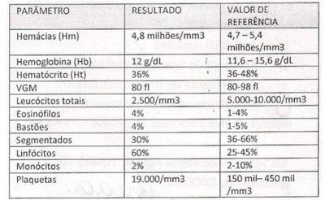
A O estadiamento desta paciente neste momento é grupo C.
B Esta paciente possui critério de internação.
C Uma falha no atendimento desta paciente foi a não realização da prova do laço.
D O volume de hidratação diário para essa paciente deverá ser em torno de 6 litros.
E Todas as alternativas anteriores estão corretas.
Questão 1554 · Hepatologia · 4000000848Em pacientes hepatopatas, o score MELD é calculado utilizando os seguintes dados:
A Bilirrubina, ascite, INR.
B INR, ascite, encefalopatia.
C Bilirrubina, tempo de protrombina, grau de nutrição.
D Bilirrubina, creatinina, INR.
E Bilirrubina, creatinina, ascite.
Questão 1555 · Inf ectologia · 4000000846Adulta, 41 anos, HIV-negativa, contato domiciliar de paciente com TB pulmonar bacilífera. Encontra-se assintomática, pesando 52Kg, apresenta PPD de 13 mm, radiogra a de tórax normal e cicatriz de BCG presente. Qual a melhor conduta para a paciente acima?
A Solicitar cultura de escarro para BAAR;
B Repetir o PPD dentro de 03 meses;
C Iniciar Esquema Básico;
D Prescrever Isoniazida 300 mg/dia por 06 meses;
E Prescrever Etambutol 1200 mg/dia por 06 meses.
Questão 1556 · Acidose metabólica · Acidose metabólica · 4000000842Com relação à acidose metabólica é incorreto afirmar:
A Caracteriza-se pela redução plasmática do pH e bicarbonato;
B A PaCO2 geralmente está elevada devido à compensação respiratória;
C Pode resultar de acúmulo de ácido;
D Pode resultar da perda de base;
E Pode apresentar anion gap normal ou aumentado.
Questão 1557 · Hepatologia · 4000000837Os cálculos primários do colédoco são comumente:
A Cálculos de colesterol.
B Cálculos pigmentares negros.
C Cálculos pigmentares roxos.
D Cálculos pigmentares marrons.
E Os itens ‘a’ e ‘d’ estão corretos.
Questão 1558 · Ef eitos adversos de antimaláricos · 4000000831Paciente de 45 anos, agricultor, morador da zona rural do município de Acrelândia - Acre, procura atendimento devido à febre, cefaleia, artralgia e calafrios. No exame físico, a única alteração era a detecção de febre (temperatura axilar: 38,4ºC). Pesquisa de Plasmodium: duas cruzes de adequada para o caso segundo as normas do Ministério da Saúde. Paciente retorna no quarto dia a partir do início do tratamento, apresentando icterícia intensa, vômitos e dor abdominal, que diz terem iniciado no dia anterior. Relata desaparecimento dos sintomas que apresentara no começo da doença. Provavelmente, a causa desse quadro e a conduta serão, respectivamente:
A Hemólise pela primaquina; suspensão do tratamento.
B Hemólise pela cloroquina; manter o esquema apenas com primaquina.
C Hemólise pelo quinino; substituí-lo pela cloroquina.
D Hepatotoxicidade devido à cloroquina e primaquina.
E Hepatotoxicidade devido exclusivamente ao quinino.
Questão 1559 · Gastroenterologia · 4000000816Qual dos agentes seguintes tem demonstrado melhora no índice de fechamento de fístulas enterocutâneas em doença de Crohn?
A Metotrexate.
B 5-ASA.
C Infliximab.
D Corticoide.
E Azatioprina.
Questão 1560 · Tenof ovir · 4000000813Paciente, 39 anos, masculino, portador de hepatite B, não cirrótico, sem comorbidades, transaminases normais, per l sorológico: Anti-HBc total positivo, Anti-HBc IgM negativo, HBeAg negativo, Anti-HBe positivo, Anti-Delta negativo, AntiHCV negativo e Anti-HIV negativo. HBV-DNA quantitativo = 3.000 Ul/ml. Com relação ao tratamento do VHB, está CORRETO afirmar que:
A A droga de primeira escolha é o tenofovir;
B Neste caso o interferon é uma das possibilidades terapêuticas;
C Não se deve iniciar o tratamento específico neste caso, pois a carga viral está abaixo dos níveis recomendados para o início da terapêutica;
D O entecavir é o antiviral mais recomendado neste caso;
E Para decidir sobre o tratamento deve-se antes realizar a biópsia hepática;
Questão 1561 · Hemorragia Digestiva HD · Condução Clínica · Prof ilaxia Antibiótica · 4000000807Qual a principal medida para evitar a ocorrência da peritonite bacteriana espontânea em um paciente com ascite, portador de cirrose hepática pelo vírus da hepatite B, Child- Pugh "C", que evolui com dois episódios de hematêmese?
A Proceder à esclerose ou ligadura das varizes esofágicas.
B Administrar albumina humana em bolus por via endovenosa.
C Prescrever antibioticoprofilaxia.
D Iniciar o uso do entecavir.
E Iniciar imediatamente o uso do interferon peguilado.
Questão 1562 · Gastroenterologia · 4000000803A causa mais comum de obstrução do intestino delgado é:
A Hérnia inguinal.
B Hérnia femoral.
C Tumores.
D Doença de Crohn.
E Aderências.
Questão 1563 · Inf ectologia · 4000000795A atual recomendação do Ministério da Saúde quando ocorre exantema leve em um paciente que iniciou o esquema básico para a tuberculose pulmonar é:
A Suspender o esquema básico e reiniciar cada tuberculostático separadamente, visando identificar qual foi o responsável pelo surgimento do referido efeito colateral.
B Manter o esquema básico e administrar o anti-histamínico.
C Substituir apenas a rifampicina pela estreptomicina, pois a primeira é a droga mais implicada nos casos de exantema.
D Substituir imediatamente o esquema básico pelo esquema de multirresistência.
E Como se trata de um efeito colateral maior, deve-se suspender o esquema básico, aguardar a resolução do exantema e depois iniciar um esquema alternativo.
Questão 1564 · Inf ectologia · 4000000783Visando evitar a ocorrência de micobacteriose pelo complexo Mycobacterium avium, um paciente portador de HIV/Aids que apresenta níveis de linfócitos T-CD4 positivo < 50 céls/mm³ de sangue deverá receber profilaxia primária preferencialmente usando:
A Sulfametoxazol + trimetoprima.
B Azitromicina.
C Isoniazida.
D Fluconazol.
E Sulfadiazina.
Questão 1565 · Inf ectologia · 4000000780Paciente de 29 anos, masculino, dá entrada no Pronto-Socorro apresentando dispneia intensa e tosse seca com evolução de cinco dias. Mãe refere que o mesmo apresentou perda ponderal de cerca de 10 kg nos últimos meses, sem nenhuma explicação plausível para isso. Hemograma mostra anemia discreta, leucopenia, com linfopenia e plaquetopenia. Ureia, creatinina, eletrólitos e transaminases normais. Desidrogenase láctica: 620 Ul/L (valores de referência - 240 a 480 Ul/L). Radiogra a de tórax: in ltrado intersticial difuso bilateralmente. Saturação de oxigênio de 66%. Feito teste rápido para HIV o resultado foi positivo. Nesta situação, a hipótese diagnóstica mais provável e o tratamento de primeira escolha, são respectivamente:
A Tuberculose; Rifampicina + Isoniazida + Pirazinamida + Etambutol;
B Pneumonia adquirida na comunidade; Azitromicina + ceftriaxona;
C Histoplasmose; Anfotericina B;
D Pneumocistose; Sulfametoxazol + Trimetoprim;
E Pneumocistose; Sulfadiazina; Pirimetamina + Ácido Folínico;
Questão 1566 · Pneumologia · 4000000761De acordo com as diretrizes da Sociedade Brasileira de Pneumologia e Tisiologia para o manejo da Asma- 2012, é correto afirmar que:
A Asma controlada corresponde à ocorrência de apenas um episódio por semana de sintomas diurnos, sem nenhuma limitação de atividade ou sintomas/despertares noturnos, com pico de fluxo expiratório < 60% predito ou do melhor prévio, se conhecido.
B Asma não controlada corresponde à ocorrência de quatro ou mais ou mais episódios de sintomas diurnos por semana, com necessidade de medicação de alívio quatro ou mais vezes/semana, com pico de fluxo expiratório normal.
C Asma não controlada corresponde à ocorrência de três ou mais episódios de sintomas diurnos por semana, com necessidade de medicação de alivio três ou mais vezes por semana e pico de fluxo expiratório < 80% predito ou do melhor prévio, se conhecido.
D Asma controlada corresponde à ocorrência de dois ou menos episódios por semana de sintomas diurnos, sem nenhuma limitação de atividade ou sintomas/despertares noturnos, com pico de fluxo expiratório < 50% predito ou do melhor prévio, se conhecido.
E Asma parcialmente controlada corresponde à ocorrência de dois ou menos episódios de sintomas diurnos por semana, sem necessidade de medicação de alívio, com pico de fluxo expiratório normal.
Questão 1567 · Tratamento do Câncer Retal · 4000000694Nos tumores de reto baixo, temos como opções terapêuticas, EXCETO:
A Ablação por radiofrequência.
B Excisão transanal.
C Amputação abdominoperineal do reto.
D Radioterapia e quimioterapia.
E Excisão videolaparoscópica.
Questão 1568 · Dermatologia · 4000000690Fabrício tem 8 meses de vida, tendo sua genitora procurado atendimento médico devido ao aparecimento de lesões maculopapulares, pruriginosas, sem secreção, em membros superiores e inferiores, há cerca de 36 horas. Refere que eventualmente apresenta quadro semelhante. Qual o diagnóstico provável e tratamento indicado:
A Impetigo, sendo indicado o uso de antibiótico tópico.
B Impetigo, sendo indicada a associação de antibiótico tópico e corticoide de média potência.
C Miliária rubra, sendo indicado uso de óxido de zinco creme.
D Estrófulo, sendo indicado corticoide de baixa potência.
E Estrófulo, sendo indicado corticoide de baixa potência associado a antibiótico tópico.
Questão 1569 · Adenocarcinoma Gástrico · Cirurgia · 4000000685Cirurgia de urgência no câncer gástrico, EXCETO?
A Hemorragia com politransfusão.
B Obstrução com vômito.
C Ascite hemorrágica maligna tensa.
D Perfuração sem bloqueio.
E Ruptura por distensão.
Questão 1570 · Fatores de Risco · Gastroenterologia · 4000000678O que aumenta o risco de se desenvolver câncer de estômago:
A Comer farinha.
B Comer pimenta.
C Comer sal.
D Tomar refrigerante.
E Tomar chá.
Questão 1571 · Hepatologia · 4000000668Paciente sexo masculino, 22 anos, casado, portador de cirrose hepática por VHB e VHD. Apresentou Alfa- feto proteína de 423. Ct de abdome com nódulo de 2,3 cm hipervascular na fase arterial e wash-out. Pode- se afirmar que se trata de um CHC (Carcinoma Hepatocelular).
A Conforme critério de Milão.
B Conforme critério de São Francisco.
C Conforme critério de Barcelona.
D Apenas a biópsia do nódulo é capaz de afirmar.
E Conforme critério Los Angeles.
Questão 1572 · Diagnóstico · 4000000660O antígeno carcinoembrionário:
A Tem valor prognóstico no câncer colorretal.
B Não é influenciado pelo tabagismo.
C É um antígeno específico no câncer colorretal (C CR).
D Tem valor no screening de câncer colorretal.
E Pouco sensível.
Questão 1573 · Megacólon Tóxico · 4000000641Causa de megacólon tóxico:
A Fecaloma.
B Retocolite ulcerativa.
C Diverticulite.
D Megacólon Chagásico.
E Trombose hemorroidária complicada.
Questão 1574 · Cirurgia · Tratamento Cirúrgico das Doenças Inf lamatórias Intestinais · 4000000634A indicação cirúrgica mais comum nos casos de doença de Crohn decorre de:
A Perfuração livre.
B Hemorragia maciça.
C Degeneração maligna.
D Obstrução intestinal.
E Diarreia frequente.
Questão 1575 · Cirurgia · Tratamento Cirúrgico das Doenças Inf lamatórias Intestinais · 4000000624Em relação à doença de crohn, é incorreto afirmar: I - perfuração livre ou hemorragia maciça são indicações de cirurgia de urgência. II - megacólon tóxico sem resposta inicial ao tratamento clínico deverá ser tratado com colectomia subtotal. III - as fístulas enterovesicais são cirúrgicas na maioria das vezes.
A apenas I.
B apenas III.
C I e III.
D I, II e III.
E apenas III.
Questão 1576 · Tratamento Cirúrgico da Úlcera Péptica · Cirurgia · 4000000610São indicações clássicas de tratamento cirúrgico para úlcera péptica, exceto:
A úlcera penetrada para pâncreas.
B perfuração.
C obstrução pilórica.
D hemorragia sem controle com tratamento endoscópico/ radiológico.
E presença de pneumoperitoneo.
Questão 1577 · Avaliação laboratorial do f erro · Classif icação das anemias Foco na f erropriva · 4000000609Marcela de seis anos de idade é levada para consulta por apresentar palidez há seis meses e falta de apetite. Exame físico: palidez cutâneo-mucosa e restante normal. Após iniciar o tratamento para Anemia Ferropriva de Marcela, qual o exame mais adequado para avaliar precocemente a sua resposta terapêutica?
A Dosagem de hemoglobina.
B Contagem de reticulócitos.
C Saturação de transferrina.
D Dosagem de ferro sérico.
E Ferritina sérica.
Questão 1578 · Avaliação laboratorial do f erro · Classif icação das anemias Foco na f erropriva · 4000000593Marcela, de seis anos de idade, é levada para consulta por apresentar palidez há seis meses e falta de apetite. Exame físico: palidez cutâneo-mucosa e restante normal. Para confirmação de anemia ferropriva, quais as alterações encontradas nos exames?
A Hb < 11 g/dl, contagem de reticulócitos aumentada, hipercromia e macrocitose.
B Hb < 11 g/dl, contagem de reticulócitos normal ou diminuída, hipocromia e microcitose.
C Hb < 11,5 g/dl, contagem de reticulócitos aumentada, hipercromia e macrocitose.
D Hb < 11,5 g/dl, contagem de reticulócitos normal ou diminuída, hipocromia e microcitose.
E Hb < 12 g/dl, contagem de reticulócitos aumentada, hipercromia e macrocitose.
Questão 1579 · Considerações Anatômicas · Perf uração de Esôf ago · Gastroenterologia · 4000000581Qual das características do esôfago, a seguir, não está relacionada com altas taxas de morbimortalidade nas perfurações desse órgão?
A Relação anatômica com estruturas nobres.
B Presença de serosa delgada.
C Parede com pouca espessura.
D Trajeto longo.
E Tipo de irrigação sanguínea.
Questão 1580 · Reumatologia · 4000000577Correlacione as COLAGENOSES com seus respectivos sinais e sintomas. 1) Mulher de meia-idade, com episódios de cianose nas mãos quando exposta ao frio e disfagia; 2) Paciente jovem com poliartrite simétrica em punhos e interfalangianas, lesões eritematosas em face e hemograma apresentando leucopenia e linfopenia; 3) Mulher jovem com história de abortamento espontâneo ou parto prematuro prévio; 4) Colagenose que se caracteriza pela in ltração linfocitária de origem autoimune, das glândulas lacrimais e salivares; 5) Doença inflamatória que acomete ao mesmo tempo músculos esqueléticos e pele, podendo estar associada a uma neoplasia aguda. ( ) Lúpus eritematoso sistêmico; ( ) Síndrome do anticorpo antifosfolipídeo; ( ) Dermatomiosite; ( ) Síndrome de Sjögren; ( ) Esclerodermia. A sequência CORRETA é:
A 2 - 3 - 4 - 5 - 1.
B 2 - 3 - 5 - 4 - 1.
C 4 - 2 - 3 - 5 - 1.
D 3 - 5 - 4 - 1 - 2.
E 2 - 4 - 1 - 5 - 3.
Questão 1581 · Exames complementares · 4000000555Assinale a opção correta, em se tratando de exames de rotina MÍNIMA para pacientes portadores de hipertensão arterial.
A Hemograma, sódio, potássio, ureia, urocultura;
B Glicemia, Na, K, ECG de esforço;
C Hemograma, EPF, urina I, Ureia;
D Urina parcial, creatinina, Potássio, glicemia, colesterol e frações, ECG de repouso;
E Glicemia, fosfatase alcalina, K, Na.
Questão 1582 · Inf ectologia · 4000000551Qual a classe de antibióticos de absorção oral ruim, requerendo administração parenteral, que tem pouca penetração no SNC, eliminação por filtração glomerular e eficácia dependente do pico de concentração?
A Carbapanens
B Aminoglicosídeos
C Cefalosporinas
D Quinolonas
E Penicilinas
Questão 1583 · Bases imunológicas da Reumatologia · Fatores antinucleares FAN · Autoanticorpos · 4000000503Qual das doenças abaixo NÃO apresenta o Fator Antinuclear (FAN) positivo:
A Artrite reativa.
B Hepatite C.
C Lúpus Eritematoso Sistêmico.
D Linfoma Não Hodgkin.
E Tiroidite de Hashimoto.
Questão 1584 · Inf ectologia · 4000000502Em relação à epidemiologia e ao quadro clínico da TUBERCULOSE, selecione a afirmativa correta:
A A tuberculose do tipo adulto ou doença pós-primária resulta da reativação endógena de infecção latente e localiza-se nos seguimentos apicais e posteriores dos lobos superiores, mas também nos segmentos superiores dos lobos inferiores.
B A incidência da tuberculose aumenta com a idade, alcançando o pico máximo entre os idosos com comorbidades.
C A probabilidade de transmissão da doença é semelhante, seja a fonte um paciente com doença pulmonar cavitária ou um paciente com escarro negativo e cultura positiva.
D O risco de aquisição da infecção pelo Mycobacterium tuberculosis é determinado por fatores endógenos.
E O fator de risco mais potente para disseminação da tuberculose entre indivíduos infectados é claramente a co-infecção pelo HIV, que altera a imunidade humoral.
Revisar: possível letra faltando em alt E
Questão 1585 · Polimialgia reumática · Diagnóstico · 4000000492Paciente do sexo masculino, 70 anos de idade, procura atendimento no ambulatório de clínica médica com queixa de dor e rigidez em cintura escapular bilateralmente, febre não aferida e fadiga há mais ou menos 2 meses. Sem outras queixas clínicas naquele momento. Exames complementares demonstraram VHS = 100 mm, anemia normocítica e normocrômica, trombocitose. PCR = 12. Creatinoquinase (CK) e aldolase foram normais. Sobre o paciente em questão, qual a principal hipótese diagnóstica?
A Fibromialgia.
B Tendinopatia do manguito rotador.
C Polimiosite.
D Polimialgia reumática.
E Espondilite Anquilosante.
Questão 1586 · Manif estações articulares · Exames complementares · Artrite psoriásica · 4000000487Assinale a alternativa que apresenta manifestações clínicas e/ou alterações em exames complementares sugestivas de artrite psoriásica: I – Envolvimento articular assimétrico; II – Artropatia de Jaccoud; III – Envolvimento de articulações interfalangianas distais na ausência de osteoartrose; IV - Ausência de fator reumatoide; V – Síndrome nefrótica.
A I, II e III.
B I, IV e V.
C II, III e IV.
D III, IV e V.
E I, III e IV.
Questão 1587 · Soluções de reposição volêmica · Cristalóides · 4000000479500 ml de solução fisiológica a 0,9% apresenta:
A 38,9 mEq de sódio.
B 190 mEq de sódio.
C 154 mEq de sódio.
D 340 mEq de sódio.
E 60 mEq de sódio.
Questão 1588 · Cálculo da taxa de f iltração glomerular · 4000000472Paciente feminina, 54 anos, 65 kg de peso apresenta-se com Insu ciência Renal aguda e creatinina sérica de 2,7. Qual o seu clearance de creatinina estimado:
A 30 ml/min.
B 24,2 ml/min.
C 60 ml/min.
D 54,6 ml/min.
E 28,7 ml/min.
Questão 1589 · O sistema complemento nas glomerulopatias · 4000000467Das glomerulopatias abaixo, qual a que normalmente está associada à baixa do complemento sérico?
A Glomerulonefrite esclerosante focal.
B Nefropatia por IgA.
C Membranosa.
D Lesão mínima.
E Proliferativa difusa.
Questão 1590 · Causas de Hipocalemia · Hipocalemia · 4000000463Das causas abaixo de insu ciência renal aguda, qual a que mais frequentemente está associada à hipocalemia?
A Nefrotoxicidade por anfotericina B.
B Sépsis.
C Rabdomiólise.
D Nefrotoxicidade por contraste.
E Pós-operatório de cirurgia cardíaca.
Questão 1591 · Colangiocarcinoma · 4000000454Geralmente o marcador tumoral que mais se eleva nos colangiocarcinomas é:
A Alfafetoproteína.
B CA-19.9.
C CA-15.3.
D DHL.
E CA-27.29.
Questão 1592 · Crise Tireotóxica · 4000000449Analise as afirmativas abaixo e marque a alternativa que melhor define o quadro de crise tireotóxica. I – TSH suprimido, T4 livre bastante elevado, taquicardia, hipertensão, dor abdominal e sudorese excessiva. II – TSH elevado, T4 livre diminuído, taquiarritmia, febre, taquicardia, e febre. III – disfunção termorregulatória grave, alteração de estado mental, evidências de disfunção de múltiplos órgãos, crise adrenérgica, hipermotilidade intestinal.
A Somente afirmativa I está correta.
B Somente afirmativa II está correta.
C Somente afirmativa II e III estão corretas.
D Somente afirmativa III está correta.
E Todas as afirmativas estão erradas.
Questão 1593 · Exames de imagem · Síndrome do Desconf orto Respiratório Agudo SDRA · Ventilação protetora · 4000000430Os dados clínicos mais sugestivos da síndrome do desconforto respiratório agudo são:
A Relação PaO2/FiO2 < 100, temperatura axilar > 38ºC, infiltrado pulmonar bilateral.
B Relação PaO2/FiO2 < 200, frequência cardíaca > 100 bpm, temperatura axilar > 38ºC.
C Relação PaO2/FiO2 < 200, quadro de instalação aguda, infiltrado pulmonar bilateral.
D Relação PaO2/FiO2 < 100, temperatura axilar > 38ºC, antecedente de insuficiência cardíaca congestiva.
E Relação PaO2/FiO2 < 100, frequência cardíaca > 100 bpm, temperatura axilar > 38ºC.
Questão 1594 · Def inição e Etiologias · Gastroenterologia · 4000000422As afirmativas abaixo são causas mais comuns de hemorragia digestiva baixa no adulto jovem: I – Divertículo de Meckel, pólipos. II – Câncer, angiodisplasia. III – Doença inflamatória intestinal, pólipos.
A Apenas afirmativa I está correta.
B Apenas afirmativas I e II estão corretas.
C Apenas afirmativa II está correta.
D Apenas afirmativa III está correta.
E Todas afirmativas estão erradas.
Questão 1595 · Neurologia · 4000000410A conduta a seguir faz parte do manejo da fase aguda: Cuidados gerais de manter as vias aéreas, respiração e condições circulatórias, anticonvulsivantes, nimodipina, repouso absoluto no leito, ansiolíticos, controle da glicemia. I – Acidente vascular isquêmico. II – Acidente vascular isquêmico transitório. III – Hemorragia subaracnoide.
A Apenas afirmativas I, II estão corretas.
B Apenas afirmativa I está correta.
C Apenas afirmativa II está correta.
D Apenas afirmativas I e III estão corretas.
E Apenas afirmativa III está correta.
Questão 1596 · Inf ectologia · 4000000401Paciente diabético, 57 anos, sexo masculino, admitido na enfermaria de clínica médica com dor na face anterossuperior da coxa direita há "mais ou menos" cinco dias. No exame físico de entrada, o local da pele estava violácea nas bordas e muito escura no centro. O paciente estava sudorético, prostrado, com sinais de insu ciência respiratória. A principal hipótese foi fasciíte necrosante e sepse, e foi aventado como agente etiológico bactérias produtoras de gás. O agente infeccioso, neste caso, mais provável é:
A Clostridium perfringens.
B Staphylococcus aureus.
C Streptococcus beta.
D Klebsiella.
E NDA.
Questão 1597 · Hematologia · 4000000392As afirmativas abaixo referem-se ao uso de hemotransfusão em pacientes com perda sanguínea elevada. I – A infusão de concentrado de hemácias em alta velocidade e em grande quantidade pode ter como complicação uma coagulopatia maciça; II – A infusão de concentrado de hemácias em alta velocidade e grande quantidade pode levar o paciente a ter uma arritmia por hipocalcemia; III – A infusão de concentrado de hemácias em alta velocidade pode ter como complicação hipomagnesemia grave.
A Apenas afirmativa III está correta.
B Apenas afirmativa II está correta.
C Apenas afirmativas II e III estão corretas.
D Apenas afirmativas I e II estão corretas.
E Todas as afirmativas estão erradas.
Questão 1598 · Hemorragia Digestiva Alta Varicosa HDA Varicosa · 4000000378Paciente 48 anos, masculino, portador de hepatopatia crônica de etiologia mista (etanol e esquistossomose), evoluindo com hemorragia digestiva alta importante. Chega ao serviço hipotenso (PA = 60 x 30 mmHg), taquicárdico. Exames de admissão: hemoglobina 5,1 g/dl; hematócrito 16,8%; plaquetas 23,000/mm³; TTPa (ratio 1,8). As a rmativas abaixo se referem à conduta mais adequada nestes casos, concomitante ao suporte básico de vida. I – Uso de cristaloides, concentrado de hemácias. II – Uso de cristaloides, concentrado de hemácias, concentrado de plaquetas, plasma fresco. III - Uso de coloides 500 ml EV até a estabilização do quadro clínico, concentrado de hemácias, plasma fresco.
A Apenas afirmativa I está correta.
B Apenas afirmativa II está correta.
C Apenas afirmativa III está correta.
D Apenas afirmativas I e III estão corretas.
E Todas as afirmativas estão erradas.
Questão 1599 · Cardiologia · 4000000372Paciente 52 anos, masculino, com relato de taquidispneia há três horas acompanhada de cefaleia importante holocraniana. Refere ainda que observou di culdade respiratória progressiva a partir do início do quadro. É hipertenso há 10 anos e faz uso irregular de captopril 25 mg três vezes ao dia e hidroclorotiazida 25 mg/dia. Tabagista crônico há 30 anos e deixou há 5 anos. Nega etilismo, dislipidemia e diabetes mellitus. O diagnóstico sindrômico para este paciente é:
A Emergência hipertensiva sem lesão órgão-alvo.
B Urgência hipertensiva sem lesão órgão-alvo.
C Emergência hipertensiva com provável lesão órgão-alvo.
D Urgência hipertensiva com provável lesão órgão-alvo.
E Apenas urgência hipertensiva.
Questão 1600 · Tromboembolismo Pulmonar TEP · 4000000366Paciente, sexo feminino, 61 anos, costureira, portadora de Diabetes Mellitus em uso de hipoglicemiante oral há 10 anos, varizes de membros inferiores, evoluiu com dispneia súbita há 4 horas. Chega ao serviço de saúde com saturação de 02 88%, sudorese profusa, taquidispneica. A hipótese diagnóstica inicial foi de Tromboembolismo Pulmonar. Sabendo-se que em todas a rmativas foram tomadas medidas inicias de suporte básico de vida, assinale a alternativa correta. I – Anticoagulação com marevan e heparina fracionada respectivamente. II – Anticoagulação com heparina e anticoagulante oral a seguir. III – Anticoagulação com heparina não fracionada, antiagregante plaquetário e trombolíticos. IV – Antiagregantes palquetários, anticoagulação com heparina e anticoagulação oral.
A Somente a afirmativa III está correta.
B Somente afirmativa II está correta.
C Somente afirmativa IV está correta.
D Somente afirmativa I está correta.
E Todas afirmativas estão erradas.
Questão 1601 · Inf ectologia · 4000000355Assinale a a rmativa CORRETA sobre os aspectos epidemiológicos e clínicos da síndrome de imunodeficiência adquirida pelo vírus HIV:
A A transmissão parenteral do HIV pelo uso de drogas requer punção venosa, visto que as injeções subcutâneas ou intramusculares são consideradas de baixo risco.
B A transmissão materna para o feto pode ocorrer no primeiro ou segundo trimestre da gestação, entretanto, a transmissão ocorre mais comumente no período perinatal.
C Nos países em desenvolvimento, na ausência de terapia antirretroviral profilática, a probabilidade de transmissão do HIV da mãe para o feto/lactente varia de 50 a 60%.
D No estudo da transmissão heterossexual não foi evidenciada associação com as doenças sexualmente transmissíveis.
E Em profissionais de saúde, o uso de antirretrovirais como profilaxia pós-exposição não diminui o risco de infecção como acontece com a exposição ocupacional ao vírus da hepatite B.
Questão 1602 · Hematologia · Síndrome antif osf olípide SAF · 4000000342As a rmativas abaixo são critérios clínicos e laboratoriais para o diagnóstico da Síndrome antifosfolípide, exceto: (diagnostico e tratamento vol 3):
A Anticorpos IgG ou IgM presentes em duas ou mais ocasiões, com intervalo mínimo de dose semanas.
B Um ou mais episódios clínicos de trombose arterial, venosa ou pequenos vasos em qualquer tecido ou órgão.
C Um ou mais óbitos inexplicados de feto morfologicamente normal na ou após a 10ª semana de gestação.
D Correção do prolongamento do tempo de coagulação no teste de rastreamento após a adição de plasma normal pobre em plaquetas.
E Correção ou diminuição do prolongamento de tempo de coagulação pela adição de fonte rica em fosfolípides.
Questão 1603 · Diabetes · Endocrinologia · 4000000316A respeito do Diabetes mellitus, classifique as seguintes sentenças em verdadeiro (V) ou falso (F). ( ) O Diabetes mellitus apresenta alta morbimortalidade podendo levar a comprometimento importante da qualidade de vida. ( ) O termo tipo I refere-se ao diabetes gerado pela destruição das células-beta do pâncreas. ( ) O termo tipo II refere-se ao diabetes gerado pela diminuição da resistência à ação da insulina. ( ) O Diabetes gestacional refere-se à hiperglicemia diagnosticada durante a gravidez. Assinale a alternativa que corresponde à classificação correta, de cima para baixo.
A V, V, V, V.
B F, V, V, V.
C V, F, F, V.
D V, F, F, F.
E V, V, F, V.
Questão 1604 · Cardiologia · 4000000304As a rmativas abaixo incluem uma série de medidas sobre o manejo inicial de pacientes com síndromes coronarianas agudas. Assinale a alternativa correta: (compêndio de UTI). I – O uso da nitroglicerina está contraindicado em pacientes que zeram uso de inibidor, da fosfodiesterase para disfunção erétil nas últimas 24 horas. II – As tienopiridinas utilizadas como antiagregantes plaquetários, são drogas que bloqueiam de forma irreversível os receptores de superfície envolvidos na agregação plaquetária induzida pelo ADP. I II – os do potencial do agravamento do vasoespasmo coronariano pela atividade sem oposição dos receptores
A Apenas afirmativa II está correta.
B Apenas afirmativas I, II estão corretas
C Apenas afirmativas I, III estão corretas.
D Apenas afirmativa I está correta.
E Todas afirmativas estão corretas.
Questão 1605 · Nef rologia · 4000000258Uma das intercorrências clínicas mais frequentes na gravidez é a infecção do sistema urinário. Com base nessa afirmação, assinale a opção correta:
A Não se deve tratar bacteriúria assintomática, já que a gestante não apresenta sintomas.
B São fatores de risco para bacteriúria assintomática na gravidez: malformações anatômicas das vias urinárias e diabetes mellitus gestacional.
C A pielonefrite na gestação deve, sempre e exclusivamente, ser tratada ambulatorialmente.
D Não existe profilaxia de infecção urinária durante a gestação.
E Uma cistite não tratada nunca desencadeia um trabalho de parto prematuro.
Questão 1606 · Cardiologia · 4000000145Em relação às dislipidemias, em que idade se deve avaliar o per l lipídico como rotina em crianças e quais os valores desejáveis?
A Aos 10 anos. Colesterol total < 150 mg/dl, LDL colesterol < 100 mg/dl, HDL colesterol 45 mg/dl, triglicerídeos < 100 mg/dl.
B Aos 7 anos. Colesterol total 150 mg/dl, LDL colesterol 120 mg/dl, HDL colesterol 45 mg/dl, triglicerídeos 120 mg/dl.
C Aos 15 anos. Colesterol total <150 mg/dl, LDL colesterol <100 mg/dl, HDL colesterol 45 mg/dl, triglicerídeos <100 mg/dl.
D Aos 10 anos. Colesterol total 160 mg/dl, LDL colesterol 120 mg/dL, HDL colesterol 45 mg/dl, triglicerídeos <100 mg/dl.
E Aos 15 anos. Colesterol total 160 mg/dl, LDL colesterol 120 mg/dl, HDL colesterol 45 mg/dl, triglicerídeos 120 mg/dl.
Questão 1607 · AntiHCV · 4000000114Um menino de três anos de idade apresentou queixas de febrícula, astenia, recusa alimentar, náuseas e vômitos, que persistiam havia três dias. Sua mãe procurou ajuda médica, pois a criança passou a apresentar urina escura e a pele e as escleras amareladas. A mãe não portava o cartão de saúde da criança e desconhecia as vacinas que a criança já tinha feito uso. Ela relatou, ainda, que a criança nunca fez uso de hemoderivados ou compartilhou seringas. Os exames laboratoriais revelaram os valores de bilirrubinas e de transaminases seis vezes maiores que os valores normais. O painel sorológico para hepatite apresentou resultados conforme a tabela. (VER IMAGEM). Com relação ao caso clínico acima apresentado, assinale a opção correta.
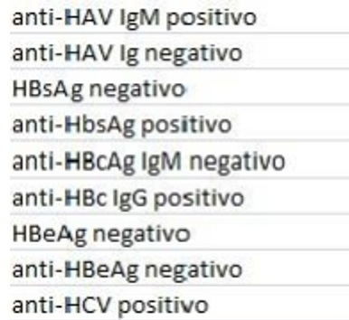
A O referido paciente está infectado pelo vírus da hepatite C e o modo mais provável de aquisição da infecção foi por transmissão vertical no momento do parto.
B O paciente citado tem infecção aguda pelo vírus da hepatite B.
C O paciente em questão está na fase mais infectante da transmissão do vírus da hepatite B.
D O achado de antiHBsAg positivo é atribuído exclusivamente à infecção pelo vírus da hepatite B.
E O paciente em tela teve hepatite A no passado.
Questão 1608 · Glomerulonef rite pósestreptocócica · 4000000088Um dos exames confirmatórios da Glomerulonefrite pós-estreptocócica é:
A ASLO positivo.
B EAS com hematúria.
C Complemento C3 e C4 consumidos.
D Complemento C3 e C4 aumentados.
E Complemento C3 e C4 normais.
Questão 1609 · Síndrome nef rótica · 4000000083Na síndrome nefrótica, existe uma associação imprescindível para tal diagnóstico:
A Proteinúria > 50 mg/kg/dia e albumina < 2,5 g/dL.
B Proteinúria e hipercolesterolemia.
C Proteinúria e anasarca.
D Proteinúria e hematúria.
E Edema e hematúria.
Questão 1610 · Cardiologia · 4000000077Criança do sexo masculino, nove anos, procedente de Mâncio Lima, município do Acre, com história de cansaço aos grandes e médios esforços, iniciado há três meses. Ausculta cardíaca evidenciando sopro sistólico em foco mitral 3+/6+. Foi encaminhado ao cardiologista pediatra por suspeita de cardiopatia reumática. Assinale a alternativa INCORRETA:
A A suspeita de febre reumática deve ser baseada em evidência de infecção estreptocócica anterior (elevação dos títulos da ASLO), além de pelo menos dois critérios maiores ou um critério maior e dois menores.
B São considerados critérios maiores: cardite, artrite, coreia de Sydenham, eritema marginado e nódulos subcutâneos.
C São considerados critérios menores: febre, artralgia, elevação dos reagentes de fase aguda (VHS e PCR) e aumento do intervalo PR no eletrocardiograma.
D A evidência de infecção pelo estreptococo do grupo A pode ser feita por meio de cultura de orofaringe, teste rápido para EBGA, elevação dos títulos de anticorpos (ASLO).
E O uso da penicilina benzatina só deve ser realizado na presença de cardite reumática.
Questão 1611 · Etiologia · Diagnóstico de obesidade · Causas · 4000000070Atualmente a obesidade é um problema de saúde pública tanto para países desenvolvidos quanto para países em desenvolvimento, acometendo inclusive as crianças. Em relação à obesidade e aos fatores de risco a ela associados, assinale a alternativa INCORRETA:
A O Índice de Massa Corporal (IMC) é o peso em kg dividido pelo quadrado da altura em metros.
B A amamentação do recém-nascido reduz os riscos de dislipidemia e diabetes na idade adulta.
C Síndrome metabólica é definida como a associação de obesidade, IMC acima de 30 e aumento da circunferência abdominal.
D Em crianças considera-se sobrepeso o IMC acima do percentil 85 para a idade e sexo e obesidade o IMC acima de 95.
E A obesidade infantil secundária à endocrinopatia ocorre em menos de 1% dos casos.
Questão 1612 · Doença Celíaca · 4000000066Na Doença Celíaca marque as assertivas Verdadeiras (V) ou Falsas (F): 1º ( ) Pode ser causada também por ingestão do leite de vaca. 2º ( ) É uma intolerância transitório induzida pelo glúten na dieta. 3º ( ) É uma enteropatia mediada por linfócitos T em indivíduos geneticamente predispostos. 4º ( ) A forma clássica caracteriza-se por diarreia crônica com fezes volumosas, pálidas e gordurosas podendo ter evolução grave. 5º ( ) Leite, derivados e ovos não são permitidos na dieta do doente celíaco. Assinale as alternativas corretas na ordem marcada:
A FFVVF;
B VFFVF;
C VFVFF;
D FFVFV;
E FVFVV;
Questão 1613 · Adenocarcinoma Gástrico · Cirurgia · 4000004290Paciente de 37 anos, sexo feminino, apresenta EDA com lesão ulcerada em incisura angulares do estômago com 1 cm, anatomopatológico confirma adenocarcinoma gástrico GII tipo intestinal. Qual a melhor conduta?
A Gastrectomia parcial com linfadenectomia D1;
B Gastrectomia parcial com linfadenectomia D2;
C Gastrectomia total com linfadenectomia D1;
D Gastrectomia total com linfadenectomia D2;
Questão 1614 · Tratamento do Câncer Retal · 4000004276A sequência correta para o tratamento do tumor de reto baixo T3 e T4 sem metástase distância é:
A Cirurgia;
B QT e RT;
C QT, cirurgia e RT;
D QT e RT, cirurgia, QT;
Questão 1615 · Endocrinologia · 4000004242Paciente feminina, 44 anos, submetida à tireoidectomia total. Logo após a extubação, no pós-operatório imediato, apresenta dificuldade respiratória e cornagem. Qual a hipótese diagnóstica?
A Lesão da traqueia durante a intubação;
B Hipocalcemia aguda;
C "Tempestade tireoidia";
D Lesão recorrente do nervo laríngeo.
Questão 1616 · Sangramento Diverticular · 4000004162Qual dentre as patologias descritas abaixo causará mais frequentemente hemorragia maciça do cólon em um paciente idoso?
A Carcinoma de cólon.
B Colite ulcerativa.
C Diverticulose.
D Hemorroidas.
Questão 1617 · Síndrome de MalloryWeiss · Endoscopia Digestiva Alta EDA · 4000004116Pac. sexo masculino, 26 anos, iniciou quadro de dor epigástrica e retroesternal, seguidos de vômitos com raios de sangue com evolução de 12h. Refere ingestão abusiva de álcool na noite anterior. Nega episódios semelhantes anteriormente e se apresenta hemodinamicamente estável. Com relação ao caso clínico, qual a melhor conduta?
A Passar sonda nasogástrica e iniciar lavagem com soro fisiológico;
B Endoscopia digestiva alta de imediato;
C Solicitar hematócrito para avaliar a perda sanguínea;
D Solicitar seriografia esôfago-estômago-duodeno.
Questão 1618 · Síndrome de MalloryWeiss · 4000004100Pac. sexo masculino. 26 anos, iniciou quadro de dor epigástrica e retroesternal, seguidos de vômitos com raios de sangue com evolução de 12h. Refere ingestão abusiva de álcool na noite anterior. Nega episódios semelhantes anteriormente e se apresenta hemodinamicamente estável. Qual a hipóstese diagnóstica?
A Síndrome de Mallory-Weiss;
B Úlcera duodenal;
C Síndrome de Boerhaave;
D Rutura de varizes de esôfago.
Questão 1619 · Tomograf ia computadorizada TC e ressonância nuclear magnética RNM · Exames de imagem · 4000004076Paciente do sexo masculino, 54 anos, apresenta quadro de icterícia de padrão obstrutivo, sem outras queixas. Durante a investigação clínica foi diagnosticado hepatite B. A ultrassonogra a evidenciou nódulo de 4 cm em Segmento I do fígado. A dosagem de alfafetoproteína foi de 550 ng/ml. Foi solicitada tomogra a computadorizada de abdome com contraste oral e venoso. Qual o achado que pode caracterizar um hepatocarcinoma neste paciente?
A Nódulo com captação de contrate na fase arterial e presença do fenômeno de "wash- out".
B Nódulo com captação de contraste na fase venosa e presença do fenômeno de "wash- out".
C Nódulo com captação de contraste na fase de equilíbrio e presença do fenômeno de "wash-out".
D Nódulo com captação de contraste na fase tardia e presença do fenômeno de "wash- out".
Questão 1620 · Sopros contínuos · Cardiologia · 4000004000A presença de "sopro em maquinaria" é característica encontrada em qual das alternativas abaixo?
A Estenose de artéria carotídea;
B Aneurisma dissecante de aorta torácica;
C Pseudoaneurisma;
D Fístula arteriovenosa;
Questão 1621 · Patogênese e evolução da doença · 4000003932São características fisiopatológicas do Diabetes Mellitus II, EXCETO:
A Resistência insulina;
B Aumento da gliconeogênese hepática;
C Concentração diminuída do GLP-1 no sangue;
D Aumento das incretinas no sangue.
Questão 1622 · Manejo inicial e pacotes · Choque séptico · 4000003860Paciente com a seguinte prescrição: 1) Cefepime; 2) Hidratação; 3) Noradrenalina; 4) Midazolam. Provavelmente tem o diagnóstico de:
A SIRS;
B Sepse;
C Choque séptico;
D Infarto do Miocárdio.
Questão 1623 · Manejo inicial e pacotes · 4000003848Sobre sepse, assinale a afirmativa INCORRETA:
A O nível sérico de lactato tem valor prognóstico bem estabelecido, particularmente se os níveis elevados forem persistentes;
B Culturas devem ser coletadas antes de iniciada a antibioticoterapia;
C Fazer reposição volêmica agressiva e repetitiva na presença de hipotensão e/ou lactato sérico elevado;
D Manter PVC maior ou igual a 75 mmHg e diurese maior ou igual a 0,5 ml/kg/hora.
Questão 1624 · Retinopatia Diabética · Granulomatose com poliangiíte GPA ou granulomatose de Wegener · 4000003833Mieloma múltiplo MM Estreitamento arterial, indentação nas interseções arteriovenosas, infartos da camada de bras nervosas e hemorragias intrarretianas caracterizam manifestações oftalmológica de qual doença sistêmica?
A Diabetes mellitus;
B Mieloma Múltiplo;
C Hipertensão arterial sistêmica;
D Granulomatose de Wegener;
Questão 1625 · Neurologia · 4000003766Sobre propedêutica neurológica armada (exames imagem), correlacione as colunas com as características de cada exame: 1. Tomografia computadorizada; 2. Angiografia convencional; 3. Ressonância magnética; 4. Tomografia por Emissão de Pósitrons (PET). A. Melhor modalidade para avaliação por imagem de aneurismas. B. Não invasiva, sem radiação, multiplanar, sensível e agente de contraste seguro. C. Rápida, melhor teste para hemorragia aguda e excelente para ossos. D. Útil no diagnóstico de doença de Alzheimer e epilepsia.
A 1.A; 2.B; 3.C; 4.D.
B 1.C; 2.A; 3.B; 4.D.
C 1.B; 2.C; 3.A; 4.D.
D 1.D; 2.A; 3.B; 4.C.
Questão 1626 · Escala de Coma de Glasgow · 4000003726Paciente com abertura dos olhos à dor, confuso e localiza a dor. Na escala de coma de Glasgow tem:
A 3 pontos.
B 6 pontos.
C 11 pontos.
D 13 pontos.
Questão 1627 · Artrite reumatoide AR · 4000003721Na Artrite Reumatoide é correto afirmar, EXCETO:
A A PCR e VHS são exames frequentemente utilizados para avaliar a presença eintensidade do processo inflamatório da doença.
B Metotrexato, Hidroxicloroquina, sulfassalazina e leflunomida são fármacosantirreumáticos modificadores do curso da doença.
C O envolvimento pulmonar é comum e geralmente se manifesta de maneira discreta.
D Anti-CCP e Fator Reumatoide são os principais marcadores imunológicos.
E Infliximabe é um agente biológico utilizado no tratamento e atua depletando linfócito B
Questão 1628 · Manif estações articulares · Artrite reumatoide AR · 4000003708Paciente com edema de tecido mole de três ou mais articulações das mãos, com rigidez matinal "maior ou igual a" 1 hora, nódulos subcutâneos e erosões e/ou osteopenia periarticular nas articulações de mãos e punhos. Qual teste laboratorial é encontrado em 70% dos pacientes, tem alta especi cidade e está frequentemente presente antes que a doença clínica seja diagnosticada?
A FAN;
B Fator Reumatoide;
C Anti-CCP (Ac Antipeptídeo Citrulinado Cíclico);
D VHS;
Questão 1629 · Critérios diagnósticos · 4000003693São critérios diagnósticos de Diabetes Mellitus, EXCETO:
A Hemoglobina glicada (A1c) "maior ou igual a" 6,5%.
B Glicemia de jejum "maior ou igual a" 126 mg/dl.
C Teste Oral de Tolerância à glicose "maior ou igual a" 200 mg/dl.
D Glicemia pós-prandial "maior ou igual a" 146 mg/dl.
Questão 1630 · Agonistas de receptor de GLP1 · 4000003671Paciente em tratamento de Diabetes Mellitus tipo II com medicamento que retarda o esvaziamento gástrico induz a saciedade alimentar, restaura a primeira fase de secreção de insulina e é resistente à ação da DPP- IV, logo funciona como agonista dos receptores de GLP-1. Qual o medicamento que deverá estar usando?
A Metformina;
B Glibenclamida;
C Sitagliptina;
D Liraglutide.
Questão 1631 · Doenças nodulares tóxicas · 4000003658Paciente com nódulo tireoidiano de 12 mm, níveis diminuídos de TSH e cintilogra a com área localizada de hipercaptação de substância radioativa. A conduta preferencial a ser tomada será:
A Levotiroxina;
B Observação e US seriados;
C PAAF (Punção Aspirativa com Agulha Fina);
D Ablação com radioiodo.
Questão 1632 · Hipercortisolismo · 4000003645Paciente do sexo feminino com hiperglicemia, obesidade, gibosidade, hipertensão arterial, estrias violáceas, acne, libido diminuída, hipocalemia e fácies de lua "cheia". Tem como principal e mais prevalente etiologia:
A Adenoma de hipófise.
B Uso crônico de glicocorticoides.
C Adenoma de suprarrenal.
D Tumor ectópico produtor de cortisol.
Questão 1633 · Peritonite bacteriana espontânea PBE · Hemorragia Digestiva Alta Varicosa HDA Varicosa · 4000003632Encef alopatia hepática Paciente masculino, 31 anos, portador de hepatite C crônica, submetido a dois tratamentos com interferon no passado. Queixando de aumento do volume abdominal há mais ou menos 10 dias e sonolência. Queixa também de 1 episódio de hematêmese há 48h. Ao exame: BEG, estigmas de insu ciência hepática, normotenso, hipocorado +/4, ascite importante, edema de MMII +/4. O líquido ascítico mostrava o seguinte resultado: 180 cél/mm³, proteínas = 0,9 g/dl, glicose = 89 mg/dl. A função renal era normal. Qual opção não faz parte da conduta inicial?
A Antimicrobiano
B Diurético
C Vasoconstritor
D Albumina
Questão 1634 · Sinais de alarme · 4000003618Todos abaixo se constituem em sinais de alarme na dengue, EXCETO:
A Dor abdominal intensa e contínua;
B Plaquetopenia;
C Hipotensão postural;
D Desconforto respiratório;
Questão 1635 · Inf ectologia · 4000003607Paciente portador de HIV/Aids abandonou tratamento há 4 anos, chega ao pronto- socorro trazido por familiares. O quadro clínico é composto por: cefaleia, confusão mental, febre e hemiparesia. Neste caso, a primeira hipótese diagnóstica é:
A Meningite criptocócica.
B Tuberculoma.
C Neurotoxoplasmose.
D Leucoencefalopatia Multifocal Progressiva (LEMP).
Questão 1636 · Quadro clínico · 4000003598Todos abaixo são critérios que servem para classificar um caso confirmado de dengue como "Síndrome Hemorrágica da Dengue", EXCETO:
A Contagem de plaquetas < 100.000/mm³ de sangue;
B Presença de qualquer sinal de alarme;
C Manifestações hemorrágicas;
D Sinais de extravasamento plasmático;
Questão 1637 · Malária por P f alciparum · 4000003588Atualmente no Brasil, o tratamento da malária por masculino, sem comorbidades, que não curse com nenhuma manifestação que indique gravidade, deverá ser preferencialmente com a:
A Combinação de artemeter e mefloquina por via oral;
B Associação de cloroquina e artesunato por via oral;
C Combinação de quinino e mefloquina por via oral;
D Cloroquina por via oral isoladamente;
Questão 1638 · Tratamento · Ascite · 4000003578Com relação ao manejo da ascite nos pacientes com cirrose hepática, é INCORRETO afirmar que:
A A paracentese diagnóstica é fundamental para o diagnóstico de peritonite bacteriana espontânea.
B Espironolactona e Furosemida deverão ser usadas na dose inicial diária de 100 mg e 40 mg, respectivamente.
C Os diuréticos deverão ser prescritos independentemente de alterações na função renal.
D Diante de paracenteses volumosas é importante a administração de albumina humana visando evitar a síndrome hepatorrenal.
Questão 1639 · Tratamento medicamentoso · HCVRNA · AntiHCV · 4000003566Com relação à hepatite C está INCORRETO afirmar:
A A presença de anti-HCV não define isoladamente a presença de infecção ativa e deve ser interpretada como contato prévio com o HCV;
B O resultado reagente para anti-HCV deverá ser confirmado por testes moleculares para detecção de ácidos nucleicos do HCV;
C Mesmo sendo portadores do HCV, indivíduos imunossuprimidos podem não apresentar sorologia reagente (anti-HCV), em virtude da diminuição ou ausência da produção de anticorpos;
D Atualmente Interferon e Ribavirina são as únicas drogas aprovadas pela ANVISA (Agência Nacional de Vigilância Sanitária) para o tratamento da hepatite C no Brasil.
Questão 1640 · Marcadores sorológicos · Epidemiologia · Diagnóstico · 4000003553Paciente, 24 anos, feminino, procura atendimento trazendo os seguintes resultados de exames: HBsAG positivo, anti-HBc IgM negativo, anti-HBc total positivo, HBeAG negativo, anti-HBe positivo, anti-HCV negativo. Nesta situação, você informa que ela:
A É portadora do vírus da Hepatite B e precisa fazer o exame para verificar se possui o vírus delta.
B Está imunizada contra o vírus da Hepatite B.
C Deverá ser submetida ao PCR qualitativo para Hepatite C para confirmar ou não a infecção por esse vírus.
D Teve contato com o vírus da Hepatite B, mas não se tornou portadora do mesmo.
Questão 1641 · Neurologia · 4000003504A Síndrome de Claude Bernard-Horner é caracterizada pelos seguintes aspectos, EXCETO:
A Miose.
B Enoftalmia.
C Amaurose.
D Anidrose facial.
E Ptose palpebral.
Questão 1642 · Drogas que previnem eventos cardiovasculares · Drogas antiisquêmicas · Cardiologia · 4000003481Qual a medicação indicada para prevenção primária de eventos cardiovasculares (doença coronariana)?
A Ácido acetilsalicílico 100 mg/dia.
B Sinvastatina 40 mg/dia.
C Enalapril 10 kg/dia.
D Não há medicações indicadas.
Questão 1643 · Cardiologia · 4000003447Para pacientes hipertensos em estágio 2 (pressão arterial sistólica "maior ou igual a" 160 mmHg e pressão arterial diastólica "maior ou igual a" 100 mmHg), pode-se considerar o uso de associações de fármacos anti- hipertensivos como terapia inicial. Ao usar diuréticos tiazídicos associados a betabloqueador, os riscos mais importantes são:
A Hipocalemia e tosse.
B Hipovolemia e tosse.
C Hipocalemia e broncoespasmo.
D Hipercalemia e hiperuricemia.
Questão 1644 · Epidemiologia e f atores de risco · 4000003435O fator de risco mais importante para o desenvolvimento da osteoporose é o(a):
A Tabagismo;
B Uso de álcool;
C Falta de atividade física;
D Idade;
Questão 1645 · Teste oral de tolerância à glicose TOTG · Critérios diagnósticos · Glicemia em jejum · 4000003402Mulher de 40 anos, com sobrepeso (índice de massa corporal = 27 Kg/m²), hipertensa controlada com medicações e com antecedente de diabetes gestacional, procura atendimento médico para investigação laboratorial, a m de avaliar sua regulação glicêmica. Foi solicitado glicemia de jejum, que resultou 114/mg/dl. O próximo passo será:
A Solicitar glicemia casual;
B Investigar diabetes mellitus durante 3 a 7 anos, dependendo do grau de suspeita clínica;
C Solicitar Teste Oral de tolerância à glicose (TOTG-75g);
D Orientar retorno se apresentar poliúria e polidipsia.
Questão 1646 · Lúpus Eritematoso Sistêmico LES · 4000003382No Lúpus Eritematoso é CORRETO afirmar:
A O sinal de Gottron é frequente manifestação clínica.
B O micofenolato de mofetil é uma das opções no tratamento da nefrite lúpica.
C O FAN é um exame importante para o diagnóstico e para o seguimento do paciente.
D A prática de atividade física é obrigatória, independente de a doença estar ou não ematividade.
E O envolvimento renal é definido pelos critérios do Colégio Americano de Reumatologia, pela presença de proteinúria acima de 350 mg nas 24 horas e/ou presença de cilindros celulares no sedimento urinário.
Questão 1647 · Inf ectologia · 4000003334M.F.S., de 18 anos, sexo masculino, procedente da zona rural de Feijó, procura atendimento no PSF (Programa de Saúde da Família) do Universitário, com queixa de cefaleia frontal pulsátil, dor retro-orbitária há 3 dias, e há um dia vem apresentando náuseas, vômitos (2 episódios) e deposições líquidas sem sangue (3 episódios). Usam água de cacimba e não têm saneamento básico. Refere esquema vacinal completo e antecedente de hepatite "A" aos 15 anos, seu pai e seu irmão mais velho são portadores de HBV, sua mãe tem hepatopatia a esclarecer. No momento da consulta encontrava-se febril (38,7°C) ictérico +\4+, acianótico desidratado, hipocorado(+|4+), eupneico. Cardiopulmonar e abdome sem alterações. Hemograma= eritrócitos 3.980/mm³, Hb 10 g/dl, Ht 35%, leucócitos 19.900/mm³, neutró los 82%, bastões 5 %, linfócitos 13%, plaquetas 90.000/mm³, ureia 60, creatina 1,5, Bilirrubina total 3,9; BD 2,0,; 1,9; TGO 105; GGT 102; FAL 180; CPK 160; potássio sérico baixo. O diagnóstico mais provável é:
A Dengue;
B Malária;
C Febre amarela;
D Leptospirose;
Questão 1648 · Def inições terapêuticas · 4000003282O Transplante de Medula Óssea (TMO) consiste na infusão venosa de células progenitoras hematopoiéticas, com o objetivo de restabelecer a função medular nos pacientes com medula óssea dani cada ou defeituosa. Em relação ao TMO, é INCORRETO que:
A As 3 modalidades de TMO são: autogênico, alogênico e singênico.
B As células-tronco podem ser coletadas da crista ilíaca, do sangue periférico ou dosangue de cordão umbilical.
C Entre as complicações do pós-TMO não se incluem as diarreias, as infecções virais e adoença do enxerto contra o hospedeiro.
D Entre os exames solicitados para o receptor no pré-TMO estão o mielograma, abiópsia de medula óssea e as sorologias para diversas doenças infecciosas.
E Entre as indicações neoplásicas para o TMO estão as leucemias e linfomas, e entre asnão neoplásicas estão a anemia aplástica grave e algumas hemoglobinopatias (como talassemia maior e anemia falciforme).
Questão 1649 · Critérios diagnósticos · Glicemia em jejum · Introdução ao Diabetes Mellitus · 4000003279Rosa de 54 anos é professora e está realizando exames pré-operatórios para uma cirurgia ginecológica. Preocupada, leva os exames para seu médico da UBS (Unidade Básica de Saúde) analisar e ele lhe comunica que sua glicemia de jejum está alterada (100-125 mg/dl) havendo intolerância à glicose. Diante do exposto, podemos considerar:
A Diabetes;
B Pré-diabetes;
C Glicemia de jejum alterada e baixa tolerância à glicose não são parâmetros confiáveis no diagnóstico da diabetes;
D Nenhuma das acima está correta.
Questão 1650 · Inf ectologia · 4000003273Paciente de 48 anos de idade, tetraplégico após trauma raquimedular por acidente automobilístico, encontra-se em acompanhamento domiciliar pelo médico de família. Faz uso de cateter vesical de demora com coletor fechado. O cuidador observou que a urina estava turva e a família pede que o médico solicite um exame de urina. A amostra foi colhida adequadamente, com os seguintes resultados positivos: uroanálise - aspecto turvo, leucócitos = 280.000/ml (normal 10.000/ml); Cultura de urina - Klebsiella pneumoniae > 100.000 UFC/ml; Sensível a nor oxacino, cipro oxacina, aztreonam, gentamicina, amicacina, ceftriaxona; Resistente à ampicilina, nitrofurantoína, sulfametoxazol + trimetoprima. Diante desses achados, a conduta indicada seria:
A Ciprofloxacina por 7 dias e substituição da sonda.
B Orientação do paciente, cuidador e familiares.
C Norfloxacino profilático, 1 cápsula ao deitar.
D Tratamento com cefalexina em doses maiores (1,0 g de 6/6 horas).
Questão 1651 · Nef rologia · 4000003264Paciente de 20 anos, do sexo feminino, sem antecedentes patológicos, apresenta um quadro de cistite não complicada. Durante sua consulta, explica ao médico do PSF que gostaria de um tratamento em dose única. Neste caso, qual o tratamento de primeira eleição?
A Pefloxacino 800 mg VO dose única;
B Ciprofloxacino 1 g dose única;
C Fosfomicinatrometamol 3 g VO dose única;
D Nenhuma das acima está correta.
Questão 1652 · RDW red cell distribution width · 4000003246Sobre o RDW (red cell distribution width) é INCORRETO:
A Valores de normalidade entre 11% e 16%.
B Corresponde a uma medida quantitativa da anisocitose.
C Valores aumentados de RDW falam a favor de uma população eritrocitária homogênea.
D É obtido a partir do histograma de distribuição das hemácias de acordo com o volume das células.
E Sua principal utilidade seria numa primeira diferenciação entre a anemia ferropriva e a beta- talassemia heterozigótica.
Questão 1653 · Nef rologia · 4000003242Frente a uma gestante com ITU baixo, que droga você escolheria como primeira opção dentre as citadas abaixo?
A Amoxicilina;
B Ciprofloxacino;
C Cefalotina;
D Nitrofurantoina.
Questão 1654 · Gastroenterologia · 4000003204Paciente do sexo feminino, 25 anos, com diarreia líquida, 5 a 6 vezes ao dia, ocasionalmente com sangue, iniciada há 07 meses. Refere perda de 07 kg no período (atualmente com 56 kg). Já foi em vários médicos, mas recebeu apenas tratamento para verminose, mesmo com exames negativos. Sobre o caso, é CORRETO afirmar que:
A Íleo terminal normal não afasta Crohn
B Exames radiológicos não auxiliariam no diagnóstico
C Colonoscopia está contraindicada pela perda ponderal
D Uma biópsia do cólon sem granuloma afasta doença de Crohn
E Uma retossigmoidoscopia mostrando inflamação no reto e sigmoide afasta doença de Crohn
Questão 1655 · Marcadores sorológicos · Interpretação dos marcadores sorológicos · 4000003184Paciente com 38 anos, traz exames solicitados por outro médico em janeiro de 2009: HBsAg reagente, anti- HBclgM não reagente, AST= 28(30), ALT= 45(35). Você os repete e as sorologias têm o mesmo resultado. As aminotransferases permanecem nos mesmos níveis aproximadamente. Sobre o caso, marque a alternativa CORRETA:
A O anti-HDV é dispensável, mas o anti-HCV não
B Se o HBeAg for reagente, o anti-HBe também o será
C Como o anti-HBs deve ser não reagente, há indicação de vacinação.
D Não é necessário investigar hepatite B em familiares assintomáticos
E Ausência do HBcAg na biópsia hepática é esperado para o portador crônico inativo
Questão 1656 · Endoscopia Digestiva Alta EDA · DUP Causada por Hpylori · Abordagem Inicial · 4000003157Sobre a doença ulcerosa péptica complicada com hemorragia digestiva, é CORRETO afirmar que:
A A endoscopia digestiva alta não é o melhor método para controlar o sangramento
B Pode-se estimar a perda volêmica pelo exame físico num sangramento agudo
C O tratamento para Helicobacter pylori não diminuiu significativamente no número de cirurgias
D Pacientes em uso de anti-inflamatórios não hormonais por via oral devem mudar para via parenteral
E Os antagonistas de receptores H2 (histamina) são tão efetivos quanto os inibidores de bomba de prótons no tratamento e prevenção de recidiva
Questão 1657 · Outras abordagens · Tratamento de manutenção da asma · Medicamentos utilizados · 4000003135O melhor tratamento para a manutenção de asma brônquica leve é feito com uso de:
A Corticoesteroide por via oral.
B Corticosteroide por inalação.
C Beta2-adrenérgico por via oral.
D Beta2-adrenérgico por inalação.
E Associação de beta2 com brometo de ipratrópio
Questão 1658 · Inf ectologia · 4000003026Um paciente, com quinze anos de idade, previamente hígido, apresenta, há uma semana, quadro súbito de febre, calafrios e dor torácica com pontadas à esquerda, seguida de tosse com expectoração amarelada. O paciente nega o uso de drogas ilícitas, tabaco e álcool. O exame físico mostra a presença de crepitações inspiratórias na base do pulmão esquerdo. No raio X de tórax, verifica-se a existência de condensação homogênea no lobo inferior esquerdo. O mais provável agente etiológico de quadro de pneumonia descrito no texto CG é o:
A Staphylococcus aureus
B Legionella pneumophila
C Haemophilus influenzae
D Pseudomonas aeruginosa
E Streptococcus pneumoniae
Questão 1659 · Marcadores sorológicos · Interpretação dos marcadores sorológicos · 4000003003Os pais de uma criança de 3 anos chegam ao consultório de pediatria da família bastante a itos, pois ao abrir o resultado dos exames de rotina solicitados, observaram o valor do resultado do exame Anti-HBs positivo (249 U). Qual a conduta mais adequada a ser tomada?
A Tranquilizar os pais, pois significa que a criança apresenta imunidade para o vírus da hepatite B.
B Encaminhar a criança ao infectologista para tratamento adequado.
C Solicitar o marcador HBsAG para uma melhor investigação.
D Repetir o exame (anti-HBs).
Questão 1660 · Demência com Corpos de Lewy · 4000002966Paciente de 68 anos de idade evoluindo com demência, utuação na cognição em minutos ou horas (atenção e vigília), alucinações, distúrbio do sono e parkinsonismo com sensibilidade a neurolépticos. As manifestações clínicas referem-se a:
A Demência vascular.
B Doença de Alzheimer.
C Comprometimento cognitivo leve.
D Demência com corpúsculos de Lewy.
E Degenerações lobares frontotemporais.
Questão 1661 · Cef aleia em Salvas · Cef aleias Primárias · 4000002921Um paciente de 30 anos de idade vem apresentando episódios recorrentes de dor de cabeça unilateral, orbitária ou temporal, geralmente acompanhada de hiperemia conjuntival, lacrimejamento, rinorreia, congestão nasal, miose, edema palpebral e sudorese facial. As crises duram de 15 minutos a 3 horas, que duram semanas ou meses e são separados por meses ou anos de remissão, livres de cefaleia. As manifestações clínicas referem-se a:
A Cefaleia em salvas
B Neuralgia trigeminal
C Cefaleia crônica diária
D Enxaqueca (migrânea)
E Arterite de células gigantes
Questão 1662 · Hematologia · 4000002905Com relação ao tratamento da anemia ferropriva na infância, marque a alternativa INCORRETA:
A Deve-se realizar orientação nutricional para uma alimentação com alta biodisponibilidade de ferro.
B Os sais de ferro devem ser ingeridos com alimentos que facilitem a sua absorção, como por exemplo, suco de frutas cítricas e leite de vaca.
C Prescrever sais de ferro na quantidade de 3 a 5 mg de ferro elementar/kg/dia, fracionado de 2 a 3 vezes.
D O tratamento com ferro deve ser realizado por 3 a 4 meses com a 1ª reavaliação (hemograma) após 4 semanas.
Questão 1663 · Síndrome nef rótica · Doença por lesões mínimas · 4000002878Criança do sexo masculino com 4 anos de vida com história de inchaço em todo o corpo há 1 semana, tosse produtiva esporádica e urina diminuída. Ao exame físico, menor em anasarca com lesões cicatriciais em membros inferiores, com FR de 30 inc/min, AP = MV presente, diminuído levemente em ambas as bases pulmonares. AC = BCNF, RCR em 2T, sem sopros. FC = 100 bat/min, PA = 90 x 60 mmHg, abdome globoso, com piparote positivo. Diurese = 2,5 mL/Kg/h. Os primeiros exames revelaram HMG 10.000 leucócitos, Hb 10 g/dL, Ht 31%, 250.000 plaquetas/ ureia de 30 mg/dL; creatinina 0,5 mg/dL; albumina 1,5 mg/dL; urina I: proteínas ++++, cilindros +, 0 (zero) leucócitos/campo, 35 hemácias/campo. RX de tórax velamento de ambos os seios costofrênicos. O laboratório ainda não liberou o resultado do C3, colesterol total, triglicerídeos e proteinúria de 24 horas. Qual o principal pilar de tratamento considerando a sua hipótese diagnóstica da questão?
A Administração de pencilina G benzatina IM;
B Uso de prednisona via oral;
C Administração de aminioglicosídeo EV;
D Uso de hipotensor, como captopril;
Questão 1664 · Inf ectologia · 4000002875Considerando a resistência do S. aureus aos antibióticos podemos afirmar:
A A resistência à Vancomicina é devido à presença do gen Van A, e o antibiótico indicadopara tratamento seria a linezolida.
B A resistência à Vancomicina é devido à presença do gen Mec A, e o antibióticoindicado para tratamento seria a linezolida.
C A resistência à Oxacilina é devido à presença do gen VAN A, e o antibiótico indicadopara tratamento seria a Vancomicina.
D A resistência à Vancomicina é devido à presença de enzimas que quebram o anel daspenicilinas e o antibiótico indicado para tratamento seria a linezolida.
E A resistência à Oxacilina é devido à presença de enzimas que quebram o anel daspenicilinas e o antibiótico indicado para tratamento seria uma Quinolona.
Questão 1665 · Síndrome nef rótica · 4000002866Criança do sexo masculino com 4 anos de vida com história de inchaço em todo o corpo há 1 semana, tosse produtiva esporádica e urina diminuída. Ao exame físico, menor em anasarca com lesões cicatriciais em membros inferiores, com FR de 30 inc/min, AP = MV presente, diminuído levemente em ambas as bases pulmonares. AC = BCNF, RCR em 2T, sem sopros. FC = 100 bat/min, PA = 90 x 60 mmHg, abdome globoso, com piparote positivo. Diurese = 2,5 ml/kg/h. Os primeiros exames revelaram HMG 10.000 leucócitos, Hb 10 g/dl, Ht 31%, 250.000 plaquetas/ ureia de 30 mg/dl; creatinina 0,5 mg/dl; albumina 1,5 mg/dl; urina I: proteínas ++++, cilindros +, 0 (zero) leucócitos/campo, 35 hemácias/campo. RX de tórax velamento de ambos os seios costofrênicos. O laboratório ainda não liberou o resultado do C3, colesterol total, triglicerídeos e proteinúria de 24 horas. Pergunta-se: qual a hipótese diagnóstica mais provável?
A Glomerulonefrite pós-estreptocócica;
B Infecção do trato urinário;
C Síndrome nefrótica;
D Síndrome hemolítico-urêmica;
Questão 1666 · Cardiologia · 4000002845Assinale a MELHOR ALTERNATIVA para fazer o diagnóstico da Febre Reumática:
A Critérios de Jones;
B Critérios de Duke;
C Critérios do Colégio Americano de Reumatologia;
D Ecocardiograma com Collor doppler;
Questão 1667 · Diagnóstico · Quadro clínico · 4000002842Paciente de 21 anos, sexo feminino, com história de aumento de volume abdominal há 2 anos, associado à dispneia de esforço. Ao exame físico, paciente em bom estado geral, corada, anictérica, hidratada, com estase jugular a 45 graus e sinal de Kussmaul, PA = 100 x 60 mmHg, FC = 70, RCR sem sopros, com som protodiastólico rude ("Knock"), abdome ascítico, fígado a 5 cm RCD doloroso, ausência de edema de membros inferiores ou estigmas de insu ciência hepática. Assinale a alternativa que apresenta a principal hipótese diagnóstica:
A Hepatopatia crônica.
B Pericardite constritiva.
C Insuficiência cardíaca esquerda.
D Insuficiência cardíaca congestiva.
E Tromboembolismo pulmonar crônico com insuficiência cardíaca direita.
Questão 1668 · Cardiologia · 4000002829Assinale qual o MELHOR ESQUEMA TERAPÊUTICO para a pro laxia secundária da Febre Reumática segundo as Diretrizes Brasileiras de Febre Reumática (2009).
A Penicilina Procaína 400.000 UI de 21/21 dias;
B Penicilina Benzatina 1.200.000 UI independente do peso corporal, de 21/21 dias;
C Penicilina Benzatina 1.200.000 UI para peso corporal "maior ou igual a" 20 Kg e 600.000 UI para peso corporal < 20 Kg;
D Penicilina Benzatina 1.200.00 independente do peso corporal de 28/28 dias.
Questão 1669 · Gastroenterologia · 4000002800A diarreia aguda é uma síndrome de má absorção de água e eletrólitos de etiologia infecciosa (vírus, bactérias e protozoários) na grande maioria dos casos. Possui evolução potencialmente autolimitada, mas é importante causa de morbidade em todo o mundo e está associada à elevada mortalidade infantil em países em desenvolvimento. Analise o CASO CLÍNICO e assinale a ALTERNATIVA CORRETA. CASO CLÍNICO - Lactente de 2 anos de idade, chega ao posto de saúde em bom estado geral, porém a mãe relata 5 episódios diarreicos semilíquidos e 2 episódios de vômitos acompanhados de palidez perioral. Durante o exame, criança chorando (com lágrimas), olhos normais, boca um pouco seca, pedindo água, com o sinal da prega desaparecendo rapidamente.
A Iniciar imediatamente soro fisiológico EV para restabelecer a volemia.
B Encaminhar ao pronto-socorro para medidas de suporte terciário.
C Prescrever somente soro de reidratação oral e antiemético.
D Prescrever somente soro de reidratação oral e não prescrever antiemético.
Questão 1670 · Inf arto de ventriculo direito · Cardiologia · 4000002798Sobre o exame clínico de pacientes com suspeita diagnóstica de IAM de VD, assinale a alternativa INCORRETA:
A Sinal de Kussmaul.
B Hipofonese de bulhas.
C Ausculta pulmonar sem estertores.
D Presença de estase venosa jugular.
E Hipotensão arterial acentuada após uso definitrato.
Questão 1671 · Inf ectologia · 4000002783Segundo o Ministério da Saúde, o esquema atual para tratamento de um caso novo de tuberculose em uma criança de 8 anos de idade, deverá ser feito usando:
A Rifampicina, Isoniazida e Pirimetamina;
B Rifampicina, Isoniazida e Pirazinamida;
C Rifampicina, Isoniazida, Pirimetamina e Etambutol;
D Rifampicina, Isoniazida, Pirazinamida e Etambutol.
Questão 1672 · Diagnóstico · 4000002759Compreende sinal muito sugestivo de insuficiência aórtica grave:
A Xantelasmas.
B Aracnodactilia.
C Sinal de Musset.
D Pulso parvus et tardus.
E Lesões de Janeway.
Questão 1673 · Nef rologia · 4000002697Podem estar associados ao surgimento de síndrome nefrítica, EXCETO:
A Citomegalovírus.
B Treponema pallidum.
C Plasmodium malariae.
D Staphylococcus aureus.
E Strongyloides stercoralis.
Questão 1674 · Nef rologia · 4000002660Assinale a alternativa CORRETA:
A Hipomagnesiúria é fator dificultador de litogênese.
B Hipernatriúria não é uma alteração metabólica litogênica.
C Hiperfosfatúria não é uma alteração metabólica lisogênica.
D Todo paciente com hiperuricosúria terá cálculo de ácido úrico.
E Medidas dietéticas são importantes para prevenir recidivas de cálculo renal.
Questão 1675 · Inf ectologia · 4000002633São antibióticos concentração dependentes:
A Penicilinas, Cefalosporinas e Macrolídeos
B Quinolonas, Aminoglicosídeos, Polimixinas
C Quinolonas, Aminoglicosídeos e Macrolídeos
D Aminoglicosídeos, Quinolonas e Cefalosporinas
E Aminoglicosídeos, Quinolonas, Carbapenêmicos
Questão 1676 · Inf ectologia · 4000004918Sobre a leishmaniose, marque a alternativa ERRADA:
A É uma doença crônica, de manifestação cutânea e visceral, causada por protozoários flagelados.
B É uma zoonose comum ao cão e ao homem.
C O contágio é feito pelo mosquito Aedes aegypti.
D O tratamento pode ser feito com pentamidina ou anfotericina.
E Pode cursar com hipergamaglobulinemia.
Questão 1677 · Inf ectologia · 4000004875Gestante de 32 anos evoluindo com febre repentina, fadiga, dores pelo corpo, tosse, coriza, dores de garganta e di culdade respiratória há 24 horas. Recentemente visitou familiar que estava sob suspeita de infecção pelo vírus H1N1. Caso opte pelo tratamento medicamentoso, quais as drogas de escolha?
A Zidovudina e lamivudina.
B Oseltamivir e zanamivir.
C Amantadina e lamivudina.
D Ganciclovir e valaciclovir.
E Foscarnet e rimantadina.
Questão 1678 · Cardiologia · 4000004712Segundo a estatística atual do Ministério da Saúde, a prevalência de hipertensão arterial no Brasil na população acima de 40 anos é de:
A 10%.
B 20%.
C 35%.
D 5%.
E 50%.
Questão 1679 · Anemia f erropriva · 4000004197Analise as afirmativas quanto à Anemia Ferropriva e assinale a INCORRETA:
A O melhor exame para estimar o ferro total do organismo, particularmente o dos depósitos, é o ferro sérico.
B Os principais sinais e sintomas são palidez, adinamia, cefaleia, tontura, zumbido no ouvido, alterações na visão, dispneia, taquicardia e baixo desempenho no trabalho.
C É uma manifestação tardia e insidiosa da carência do ferro e surge quando as reservas de ferro esgotam-se em virtude do balanço negativo.
D As causas de carência podem ser classificadas: menor ingestão do nutriente, menor absorção intestinal, defeitos do transporte ou metabolismo, aumento das excreções ou das perdas, aumento das necessidades fisiológicas ou patológicas.
E A mais importante medida do tratamento desta anemia consiste em identificar a causa e removê- la, se possível.
Questão 1680 · Hematologia · 4000004170Analise as afirmativas quanto às Hemofilias e assinale a CORRETA:
A A hemofilia B apresenta hereditariedade, quadro clínico e classificação idêntica ao da hemofilia A, da qual difere quanto ao fator plasmático deficiente.
B Os sangramentos decorrem por defeitos na hemostasia primária.
C São coagulopatias hereditárias de herança dominante ligada ao cromossomo Y, porém 30 a 40% não têm história familiar e não há diferenças raciais.
D Quando o nível plasmático do fator deficiente é > 10% não há manifestações hemorrágicas.
E Há de se pesquisar história de sangramentos nos indivíduos do sexo masculino na família paterna
Questão 1681 · Diagnóstico Dif erencial · 4000004129Mulher de 68 anos de idade, professora aposentada, iniciou declínio de memória, sobretudo para fatos recentes e desorientação espacial. Esses sintomas se instalaram de forma insidiosa e foram lentamente progredindo. Alterações de linguagem, distúrbios de planejamento (funções executivas) e de habilidades visuoespaciais surgiram com a evolução do quadro há 18 meses. A paciente sempre foi considerada saudável e não apresentava comorbidades. Após avaliação neurológica, foram solicitados exames laboratoriais, ressonância magnética do crânio e avaliação neuropsicológica, sendo diagnosticada como tendo demência primária cortical e medicada com um inibidor da acetilcolinesterase. Qual foi o provável diagnóstico clínico?
A Demência frontotemporal.
B Doença de Pick.
C Doença de Alzheimer.
D Doença de Creutzfeldt-Jakob.
E Demência vascular.
Questão 1682 · Classif icação das Epilepsias · 4000004091Homem de 18 anos de idade, estudante, há oito meses vem apresentando episódios de movimentos mastigatórios e automatismos, constando de gestos desajeitados de mexer na roupa, agarrar ou manusear objetos ao seu redor. Ao ser agarrado por familiar ca agitado. O quadro dura alguns minutos e desde o início apresenta consciência alterada com confusão após a crise e amnésia para o fato. Marque a alternativa abaixo que melhor caracteriza o tipo de crise epiléptica e a topogra a de origem mais frequente.
A Crise parcial simples e origina no lobo frontal.
B Crise parcial complexa e origina no lobo frontal.
C Crise parcial simples e origina no lobo temporal.
D Crise de ausência e origina em todos os hemisférios cerebrais.
E Crise parcial complexa e origina no lobo temporal.
Revisar: possível letra faltando em enunciado
Questão 1683 · Diagnóstico · 4000004063Paciente de 72 anos dá entrada em pronto-socorro com história de episódios de síncope e dor torácica. Ao exame físico, apresenta sopro sistólico mais audível na área aórtica que desaparece sobre o esterno e reaparece sobre o ápice do VE (fenômeno de Gallavardin). O diagnóstico mais provável é:
A Insuficiência Aórtica.
B Insuficiência Mitral.
C Estenose Mitral.
D Insuficiência Tricúspide.
E Estenose Aórtica.
Questão 1684 · Biomarcadores · Cardiologia · 4000004041Paciente é atendido no PS e internado com diagnóstico de IAM (Infarto Agudo do Miocárdio). Após uma semana, paciente apresenta novo episódio de dor de forte intensidade com duração de mais de 20 minutos. Que marcador cardíaco seria fundamental para confirmar o diagnóstico de novo IAM?
A CKMB
B CPK
C DHL
D Troponina T
E Troponina I
Questão 1685 · Hematologia · 4000004038O hemograma é o exame laboratorial mais solicitado em pediatria. Em relação a esse exame, pode-se dizer que:
A A leucopenia é um achado de boa sensibilidade e especificidade para diferenciar infecções virais de bacterianas.
B A trombocitose reacional (plaquetas acima de 600.000/ml) está associada a fenômenos tromboembólicos, devendo ser rigorosamente acompanhada.
C A expessão “desvio à esquerda” significa o aumento do número de neutrófilos segmentados no sangue circulante, o que está sempre associado a infecções bacterianas mais invasivas.
D Nos recém-nascidos sadios, os valores de leucócitos e neutrófilos estão geralmente acima do esperado em qualquer outra faixa etária.
E A presença de linfócitos atípicos no sangue periférico não é considerada normal, sendo adequado investigar algumas doenças específicas quando estiverem presentes.
Questão 1686 · Tratamento f armacológico da insuf iciência cardíaca com f ração de ejeção reduzida · 4000004018No tratamento da Insuficiência Cardíaca com Fração de Ejeção reduzida é incorreto afirmar que:
A As drogas que afetam a ativação excessiva do sistema renina-angiotensina- aldosterona como os IECAs e BRAs podem aliviar os sintomas da Insuficiência Cardíaca.
B O uso combinado de hidralazina e dinitrato de isosorbida pode ser considerado uma opção terapêutica para pacientes com intolerância aos IECAs e BRAs.
C A terapia betabloqueadora representa um dos principais avanços no tratamento de pacientes com IC com FE reduzida.
D A digoxina é recomendada para pacientes com disfunção sistólica ventricular esquerda com fibrilação atrial.
E Três betabloqueadores se mostraram efetivos na redução do risco de morte em paciente com IC crônica: o carvedilol, propranolol e metoprolol.
Questão 1687 · Inf ectologia · 4000003997Criança que sofreu acidente por animal peçonhento é levada a um serviço de pronto atendimento, sem que os responsáveis tivessem conseguido capturar o animal para levá-lo para identi cação. A criança apresenta manifestações locais leves, mas está com fácies miastênica, visão discretamente turva, mialgia e, ao urinar, constatou urina avermelhada. Os exames laboratoriais mostraram um discreto aumento das aminotransferases e da creatinofosfoquinase, além de alteração no tempo de coagulação. É bem provável que essa criança tenha sofrido:
A Acidente crotálico, devendo ser submetida à soroterapia anticrotálica, ter sua diurese monitorada e mantida entre 1 a 2 ml/kg/hora e estimulada por diuréticos se apresentar oligúria.
B Acidente crotálico, devendo ser internada para monitorização clínica e tratamento sintomático, sendo que a soroterapia deve aguardar a evolução e melhor definição diagnóstica.
C Acidente botrópico, devendo ser internada para receber analgésicos, antibióticos e tratamento local. Soroterapia somente de acordo com a evolução do quadro clínico nas próximas horas.
D Acidente botrópico, devendo receber soroterapia imediata, analgésicos sistêmicos, repouso com elevação do segmento corporal picado para drenagem postural e observação da diurese.
E Acidente aracnídeo, devendo receber anti-histamínios, anti-inflamatórios e observar e corrigir eventuais complicações.
Questão 1688 · Quadro clínico · 4000003950Em relação aos achados no paciente com DPOC, é CORRETO afirmar que:
A O RX de tórax na DPOC instalada mostra o músculo diafragma em posição mais elevado (pouco insuflado).
B Na DPOC avançada pode ocorrer "cor pulmonale", que é caracterizada por aumento de cavidades cardíacas esquerdas.
C O aumento do átrio direito no ECG é caracterizado por depressão da onda P (maior que 2,5 mm).
D Não é comum o desenvolvimento de DPOC clinicamente aparente em paciente sem história de tabagismo de pelo menos 20 maços/ano.
E A tomografia computadorizada de tórax não ajuda na avaliação, distribuição e extensão do enfisema pulmonar.
Questão 1689 · Hematologia · 4000003936Assinale a alternativa INCORRETA com relação à avaliação de anemia ferropriva em uma criança:
A Na anemia ferropriva, existe heterogeniedade do tamanho das hemácias, resultando em anemia microcítica com elevado RDW (Red cell Distributions Width).
B A determinação da concentração de ferro sérico é de boa sensibilidade e especificidade para o diagnóstico de anemia ferropriva, pois já se altera nos estágios precoces da anemia.
C Apesar de ter uma quantidade muito pequena circulante no plasma, a concentração de ferritina sérica permite estimar a reserva corporal de ferro.
D A ferritina é uma proteína de fase aguda e, portanto, sua concentração sérica eleva-se em situações clínicas como processos inflamatórios e infecciosos.
E O índice de saturação da transferrina, baixo na anemia ferropriva, é feito por meio da relação entre o ferro sérico e a capacidade total de ligação do ferro, sendo que esta capacidade está aumentada na deficiência de ferro.
Questão 1690 · Marcadores inf lamatórios · Def inição · Etiologia e f isiopatologia · 4000003915Marque a alternativa CORRETA:
A Na crise aguda de asma, há um aumento do Pico de Fluxo Expiratório (PFE) e do Volume Expiratório Forçado no primeiro segundo (VEF1).
B A fração Óxido Nítrico (NO) no ar exalado está elevada nos pacientes com asma.
C Na asma grave é comum surgir desvio do eixo elétrico do QRS para esquerda no ECG.
D Na crise aguda de asma brônquica, a fase inspiratória está prolongada em relação à fase expiratória.
E As alterações eletrocardiográficas que surgem durante episódio de asma grave não regridem quando a crise é superada.
Questão 1691 · Nef rologia · 4000003867Criança de 6 anos apresenta edema na face e em membros inferiores constatado pelos pais há 5 dias, mas intensi cando-se nos últimos dois dias, e escurecimento urinário, com sutil diminuição da diurese. Avaliada clínica e laboratorialmente, a criança apresenta-se com edema, classificado subjetivamente como ++/4, pressão arterial normal, sem outros achados clínicos significativos. Volume urinário avaliado em 24 horas resultou em 1,3 ml/kg/hora, quanti cando-se a proteinúria em 23 mg/kg/dia. O laboratório revelou discreto aumento do colesterol (198 mg%) e discreta queda no valor da fração C3 do complemento. Avaliação da urina mostra hematúria (90.000 hemáceas/ml), densidade urinária de 1025, nitrito negativo. Ureia e creatinina dentro dos níveis normais, discreta queda da hemoglobina (Hb = 10 mg%) e do Na sérico (130 mEq/litro). O diagnóstico mais provável é:
A Glomerulonefrite difusa aguda, sem comprometimento nefrótico.
B Glomerulonefrite difusa aguda com um componente nefrótico definido pela proteinúria e nível de colesterol.
C Síndrome nefrótica, provavelmente pela variante conhecida por lesão histológica mínima.
D Síndrome nefrótica, sem poder diferenciar se por lesão histológica mínima ou glomeruloesclerose segmentar ou focal.
E Glomerulonefrite membranoproliferativa ou glomerulonefrite proliferativa mesangial.
Questão 1692 · Clínica Médica · Hepatite C · Marcadores sorológicos · 4000003595Um jovem de 20 anos chega à consulta para investigar icterícia iniciada 05 dias antes. No exame físico, não há sinais de hepatopatia crônica ou encefalopatia hepática. Traz exames realizados no pronto-socorro no primeiro dia que percebeu icterícia: AST= 500 (valor de referência 4-30), ALT = 580 (VR: 10-40), bilirrubina total = 4,0 (VR < 1,2), bilirrubina direta = 3,0 (VR < 4,0). Sobre o caso, marque a alternativa verdadeira:
A O anti-HCV negativo garante ausência do vírus da Hepatite C, não havendo necessidade da carga viral ou repetir a sorologia.
B Um anti-HBc IgG reagente mostra contato anterior com o vírus da Hepatite C, mas não diz se há infecção atual.
C Se o HBsAG não for reagente, não é preciso pesquisar o vírus delta.
D Medicamentos não é causa provável das alterações clinicolaboratoriais.
E O resultado das sorologias para hepatites virais é necessário para fechar o diagnóstico de hepatite aguda.
Questão 1693 · Manif estações clínicas · Doença de Whipple · 4000003572Sobre a diarreia crônica é correto afirmar que:
A A doença de Crohn não é granulomatosa, enquanto a TB sim.
B É comum o comprometimento do ileoterminal na retocolite ulcerativa.
C O uso prolongado de laxantes osmóticos pode causar síndrome do intestino irritável.
D O anticorpo antimitocondrial é marcador da doença celíaca.
E A Tropheryma whippelii, além de má absorção, pode causar também febre, artralgia ou manifestações neurológicas.
Questão 1694 · Clínica Médica · Hepatologia · Peritonite bacteriana espontânea PBE · 4000003555Homem de 60 anos é admitido por aumento importante do volume abdominal à custa de ascite e perda ponderal significativa e sem motivo aparente. Nega patologias crônicas ou uso de medicamentos. Sobre o caso, marque a alternativa verdadeira:
A Se houver etilismo maior que 809 gramas/dia não é necessária a análise do líquido.
B O Gradiente de Albumina Soro-Ascite (GASA) menor que 1,1 obriga investigação da etiologia pelo menos com Adenosina Deaminase (ADA) do líquido.
C A ascite quilosa tem aspecto amarelo-citrino e a concentração de HDL é maior que 70.
D As causas mais comuns quando o GASA é menor que 1,1 são cirrose hepática e insuficiência cardíaca congestiva.
E O diagnóstico de peritonite bacteriana espontânea é feito quando há mais de 500 leucócitos no líquido.
Questão 1695 · Neurologia · 4000003543Criança de 7 anos de idade, previamente saudável e sem antecedentes patológicos de importância, vem apresentando episódios abruptos de perda de consciência, que duram por volta de 10 segundos, sem movimentos involuntários associados, com recuperação imediata da consciência. O exame físico completo, inclusive neurológico, foi normal. É bem provável que esta criança esteja apresentando:
A Crise convulsiva de ausência.
B Crise convulsiva focal complexa.
C Crise convulsiva mioclônica.
D Crise convulsiva tônica.
E Não sugere crise convulsiva.
Questão 1696 · Endoscopia Digestiva Alta EDA · DUP Causada por Hpylori · Abordagem Inicial · 4000003538Uma mulher de 50 anos, procedente de Manaus, chega ao Pronto-Socorro relatando hematêmese e melena, iniciada 1 hora antes da admissão. No exame físico realizado em decúbito dorsal, não se verifica sinais de hepatopatia crônica, mas se encontra hipocorada, orientada e discretamente pálida FC 110 bpm PA 110 x 70 mmHg. Sobre o caso, marque a alternativa verdadeira:
A A principal hipótese diagnóstica etiológica seria neoplasia gástrica, já que é a causa mais comum no mundo.
B Os sinais vitais da paciente são os melhores parâmetros para se estimar a gravidade da perda volêmica.
C Deve ser pesquisado algum sintoma sugestivo de infecção pelo Helicobacter pylori por ser a principal causa de úlcera péptica.
D A reposição volêmica deve ser feita preferencialmente após o resultado da endoscopia digestiva alta.
E Deve ser feita colonoscopia antes da endoscopia pelo risco elevado de neoplasia de cólon.
Questão 1697 · Lúpus Eritematoso Sistêmico LES · 4000003519Quanto ao Lúpus Eritematoso Sistêmico (LES), podemos afirmar:
A No acompanhamento dos pacientes com LES devemos buscar a atividade da doença. Por isso, cada retorno, hemograma, FAN, C3, C4, exame de urina, Proteína C Reativa (PCR) e Velocidade de Hemossedimentação (VHS) devem ser solicitados.
B As alterações hematológicas são raras, podendo afetar todas as séries do sangue e são critérios de classificação da doença.
C O Systemic Lupus Erythematosus Disease Activity Index (SLEDAI) é um índice utilizado para avaliar a atividade da doença durante o acompanhamento dos pacientes com LES.
D Artrite não Erosiva, Alopécia, Fotossensibilidade e Eritema Malar são critérios de classificação do LES.
E A glomerulonefrite membranosa (classe VI da OMS), o quadro é de síndrome nefrótica com função renal estável.
Questão 1698 · Artrite reumatoide AR · 4000003494Quanto à Artrite Reumatoide (AR) é
A Na AR, a membrana sinovial caracteriza-se por uma neoformação vascular importante e uma invasão marcante de células inflamatórias e imunes, formando um tecido chamado pannus.
B As articulações esternoclaviculares e manubrioesternal não são acometidas na AR por não possuírem sinóvia.
C Nódulos reumatoides, escleromalácia e doença pulmonar intersticial são manifestações extra- articulares da AR.
D A presença de Velocidade de Hemossedimentação (VHS) e Proteína C-Reativa (PCR) elevados, e Fator Reumatoide e Anti-CCP positivos ajudam a caracterizar a natureza imunoinflamatória da AR.
E Metotrexato, Leflunomida e Hidroxicloroquina são fármacos antirreumáticos modificadores da doença (DMARD).
Questão 1699 · Epidemiologia e f atores de risco · 4000003459São Fatores de Risco Modificáveis na Osteoporose,
A Raça branca.
B Baixo peso.
C Baixa ingestão de cálcio.
D Corticoterapia prolongada.
E Consumo excessivo de bebidas alcoólicas e café.
Questão 1700 · O pé diabético · Prevenção · 4000003429Qual a principal medida preventiva contra o pé diabético?
A Realização periódica de arteriografias digitais.
B Realizar exames clínicos sistemáticos dos pés e pernas.
C Utilização de sapatos especiais.
D Manter a Hb glicosilada menor que 10%.
E Realizar periodicamente ultrassonografias de fluxo dos membros inferiores
Questão 1701 · Tratamento nas crianças e adolescentes · 4000003349Menina de 12 anos de idade, com diabetes tipo 1, deu entrada em um serviço de emergência com Cetoacidose Diabética (CAD). Após insulinoterapia (em infusão contínua) e correção da desidratação, houve redução importante da glicemia e normalização do pH sanguíneo, mas a cetonúria, medida por ta reagente, acentuou-se. Com relação a este caso, qual a conduta mais apropriada?
A Aumentar a velocidade da infusão endovenosa de insulina.
B Pesquisar uma fonte não identificada de infecção.
C Manter o esquema terapêutico utilizado, já que o comportamento observado da cetonúria é normal.
D Mudar o tipo de insulina que vinha sendo utilizado.
E Nenhuma das alternativas anteriores.
Questão 1702 · Tratamento do hipotireoidismo clínico · 4000003329Uma mulher de 40 anos de idade, não fumante e sem histórico familiar de doenças coronarianas, submeteu- se a exames de rotina que revelaram os seguintes resultados: Colesterol total = 290 mg/dl; Colesterol LDL = 210 mg/dl; Colesterol HDL = 45 mg/dl; Triglicerideos = 160 mg/dl e Glicemia de jejum = 98 mg/dl. A paciente, cujo Índice de Massa Corpórea (IMC) era de 26 kg/cm², foi orientada a seguir uma dieta hipolipídica e a aumentar sua atividade física. Três meses após, seu IMC era de 24,8 kg/cm² e novos exames mostraram: Colesterol total = 253 mg/dl; Colesterol LDL = 180 mg/dl; Colesterol HDL = 45 mg/dl e Triglicerídeos = 140 mg/dl. Foi também avaliada a função tireoidiana que mostra um TSH = 16 mcUI/ml (VN = 0,3-5) e T4 livre = 0,6 ng/dl (VN = 0,8-1,9). Qual a melhor conduta para este caso?
A Iniciar fenofibrato ou ciprofibrato.
B Iniciar L-tiroxina.
C Iniciar L-tiroxina + uma estatina.
D Apenas insistir nas medidas não farmacológicas.
E Iniciar uma estatina.
Questão 1703 · Gastroenterologia · 4000003317Na avaliação clínica do estado nutricional de um paciente, um método amplamente difundido e aceito no ambiente hospitalar é a avaliação subjetiva global (ASG). Fazem parte dos parâmetros considerados nesta avaliação, EXCETO:
A Tipo de cirurgia a ser realizada.
B Perda ponderal.
C Modificação de ingestão alimentar.
D Sintomas gastrointestinais.
E Grau de estresse metabólico da doença.
Questão 1704 · Gastroenterologia · 4000003301Homem de 62 anos procura Unidade de Saúde com queixa de disfagia insidiosa, progressiva, há aproximadamente 2 anos e piora nos últimos 6 meses. Sorologia positiva para doença de Chagas. Realizou exames contrastado do esôfago que não evidenciou dilatação esofágica significativa. Para diagnóstico de acalasia secundária à doença de Chagas, devemos realizar:
A Endoscopia digestiva alta.
B pHmetria esofágica.
C Manometria esofágica.
D Tomografia de tórax e abdome.
E Repetir esofagograma contrastado.
Questão 1705 · Endocrinologia · 4000003276Qual dos fatores abaixo não é indicação formal de cirurgia bariátrica?
A Hipertensão de difícil controle com IMC acima de 35.
B Doente com quadro de hipotireoidismo de difícil controle e IMC acima de 35.
C Diabético em uso de hipoglicemiante com IMC 36.
D Paciente super obeso que colocou balão e perdeu 20 kg em seis meses de tratamento.
E IMC acima de 50.
Questão 1706 · Gastroenterologia · 4000003272Homem de 56 anos, índice da massa corpórea (IMC) de 36, procurou Unidade Básica de Saúde para realização de uma “avaliação geral”. Refere bom estado de saúde habitualmente e diz nunca ter realizado exames. Após exame clínico detalhado, você solicita dentre outros exames a pesquisa de sangue oculto nas fezes que teve resultado positivo. Considerando o resultado do exame solicitado, o próximo passo na investigação do quadro é:
A realização de exame proctológico.
B realização de ultrassonografia do abdome.
C realização de colonoscopia.
D realização de retossigmoidoscopia.
E realização de tomografia de abdome.
Questão 1707 · Síndrome de Horner · 4000003254A síndrome de Claude Bernard-Horner consiste em:
A Enoftalmia, Midríase e Ptose.
B Exoftalmia, Surdez e Ptose.
C Enoftalmia, Miose e Ptose.
D Exoftalmia, Miose e Ptose.
E Exoftalmia, Midríase e Surdez
Questão 1708 · Endocrinologia · 4000003172Recentemente, a imprensa argentina divulgou que a presidenta Cristina Kirchner era portadora de um câncer de tireoide. Após a realização da tireoidectomia total, constatou- se que a lesão não se tratava de câncer. Considerando o procedimento realizado e a anatomia cervical, assinale a estrutura que caso fosse lesada poderia levar a presidenta a desenvolver paralisia de corda vocal.
A Nervo laríngeo recorrente.
B Nervo facial.
C Nervo glossofaríngeo.
D Nervo acessório.
E Nervo hipoglosso.
Questão 1709 · Gastroenterologia · 4000002992Em relação à pancreatite aguda, podemos afirmar, EXCETO:
A Nos países ocidentais, a doença biliar litiásica é um dos principais fatores etiológicos.
B Pode ser causada por hipertrigliceridemia.
C Frequentemente é idiopática (cerca de 80%).
D Pacientes com AIDS têm incidência aumentada.
E Pode ser causada por drogas (exemplos: furosemida, dexametasona, sulfametoxazol, ganciclovir).
Questão 1710 · Pneumologia · 4000002977Um paciente adulto com derrame pleural cuja punção pleural revela relação de proteína pleural / proteína plasmática maior que 0,5 e relação de DHL pleural / DHL plasmático maior que 0,6 pode apresentar como hipóteses diagnósticas as seguintes patologias, EXCETO:
A Insuficiência cardíaca congestiva.
B Neoplasia metastática pleural.
C Infecção bacteriana (empiema).
D Hemotórax (trauma).
E Abcesso subfrênico.
Questão 1711 · Neurologia · 4000002937Marque a alternativa INCORRETA, referente à Paralisia de Bell:
A É a causa mais comum de paralisia periférica do nervo facial (sétimo par craniano).
B Corticoterapia precoce é indicada (geralmente por 7 a 10 dias).
C Aciclovir (800 mg) por via oral, cinco vezes ao dia ou, valaciclovir (500 mg) duas vezes ao dia são recomendados.
D Quase todos os pacientes ("maior que" 90%) recuperam completamente, sem sequelas.
E Na presença de sintomas de olho seco, a chance de recuperação completa cai drasticamente (para cerca de 10%).
Questão 1712 · Hepatologia · 4000002904A albumina plasmática é um método excelente para a mensuração do estado nutricional. Sua vida média é de:
A 9 horas.
B 2 dias.
C 9 dias.
D 21 dias.
E 28 dias.
Questão 1713 · Hepatologia · 4000002901A gliconeogênese processada no fígado e no rim é ativada utilizando-se a (____________) derivada do músculo.
A Treonina
B Glutamina
C Albumina
D Triptofano
E Arginina
Questão 1714 · Gastroenterologia · 4000002886Marque a alternativa CORRETA em relação à Colite Ulcerativa:
A O comprometimento do intestino delgado é frequente.
B A formação de fístulas é uma característica habitual.
C Não são encontrados granulomas.
D A distribuição anatômica é assimétrica (lesões salteadas).
E É comum a preservação do reto.
Questão 1715 · Neurologia · 4000002863Paciente chega à unidade de Acidente Vascular Cerebral confuso, não obedece ao comando, localiza a dor e apresenta abertura ocular espontânea. Qual a escala de coma de Glasgow deste paciente?
A 13.
B 14.
C 15.
D 12.
E 11.
Questão 1716 · Síndrome Carcinoide · 4000002843A síndrome Carcinoide ocorre em 10% dos tumores carcinoides, que se localizam nos órgãos abaixo, EXCETO
A Intestino Delgado
B Pâncreas
C Ovário
D Pulmão
E Tireoide
Questão 1717 · Diagnóstico da anemia aplásica adquirida · 4000002840Paciente com pancitopenia e reticulocitopenia, na biópsia de medula identi ca-se hipoplasia intensa e reposição gordurosa, o diagnóstico mais provável frente aos dados é de:
A Deficiência de Vitamina B12.
B Anemia Aplástica.
C Deficiência de Piridoxina.
D Calazar.
E Deficiência de ácido fólico.
Revisar: possível letra faltando em enunciado
Questão 1718 · Endocrinologia · 4000002819São considerados pacientes para desenvolver Diabetes Mellitus tipo 2, EXCETO:
A Diabetes Gestacional.
B Hipertrigliceridemia.
C Parentes de segundo grau de Diabéticos.
D Hipertrigliceridemia.
E Síndrome de Ovários Policísticos.
Questão 1719 · Cardiologia · 4000002803Paciente com Infarto Agudo do Miocárdio apresenta ritmo idioventricular acelerado com estabilidade hemodinâmica, qual dentre as opções abaixo é a melhor conduta?
A Xylocaína EV.
B Amiodarona EV.
C Adenosina EV.
D ß-bloqueador EV.
E Observar.
Questão 1720 · Cardiologia · 4000002785Qual das medicações abaixo tem o menor grau de recomendação no caso de Insu ciência Cardíaca Congestiva de etiologia Chagásica?
A Diurético.
B Inibidor da Enzima de Conversão do Angiotensinogênio.
C ß-bloqueador.
D Digital.
E Espironolactona.
Questão 1721 · Tumor Estromal Gastrointestinal GIST · 4000002768Tumores de interesse clínico e experimental recente, devido identi cação da ativação do receptor c-Kit (mutação oncogênica), e o desenvolvimento de um agente terapêutico que suprime o crescimento tumoral (mesilato de imatinibe):
A Adenocarcinoma Gástrico
B Tumores Estromais Gástricos
C Tumor Carcinoide
D Linfoma não Hodgkin
E Cistoadenocarcinoma mucinoso do apêndice
Questão 1722 · Cardiologia · 4000002766Em qual das condições clínicas abaixo citadas está contraindicado o uso de Nitrato?
A Dor pré-cordial anginosa.
B Hipertensão Arterial Sistêmica.
C Insuficiência Cardíaca.
D Infarto Agudo do Miocárdio de Ventrículo Direito.
E Bloqueio Atrioventricular.
Questão 1723 · Nef rologia · 4000002737São sinais diretos de hipervolemia, EXCETO:
A Edema.
B Estertores crepitantes.
C Ascite.
D Hepatomegalia.
E Hipertensão Arterial.
Questão 1724 · Cardiologia · 4000002724Um Índice Tornozelo Braquial (ITB) de 0,40 indica:
A Normalidade.
B Obstrução arterial leve.
C Obstrução arterial moderada.
D Obstrução arterial grave.
E Oclusão arterial.
Questão 1725 · Cardiologia · 4000002707Paciente com Hipertensão Arterial Paroxística acompanhada de cefaleia, sudorese e palpitações, o diagnóstico clínico mais provável é de:
A Hipertireoidismo.
B Feocromocitoma.
C Doença de Cushing.
D Hiperparatireoidismo.
E Hiperaldosteronismo.
Questão 1726 · Síndrome de Boerhaave · 4000002701A ruptura esofagiana espontânea, promovida por vômitos com aumento da pressão intraluminal:
A Síndrome de Mallory-Weiss
B Síndrome de Boerhaave
C Síndrome de Dumping
D Síndrome de Belsey
E Síndrome Kasabach-Merritt
Questão 1727 · Cardiologia · 4000002693A dosagem do BNP é importante no auxílio diagnóstico da Insu ciência Cardíaca estando aumentada nesta condição. No entanto, existem situações clínicas em que o BNP também vai estar aumentado na ausência de Insuficiência Cardíaca. Em qual das patologias listadas abaixo, o BNP não estará aumentado?
A Fibrilação Atrial.
B Hipertensão Arterial Sistêmica.
C Isquemia Miocárdica.
D Embolia Pulmonar.
E Hipertrofia Ventricular Esquerda.
Questão 1728 · Acalásia Megaesôf ago · 4000002690Disfagia com perda da peristalse esofagiana, ocasionado por perda ou diminuição de células ganglionares no plexo mioentérico, o que ocasiona relaxamento ineficaz do esfíncter esofagiano inferior:
A Megaesôfago Chagásico
B Esôfago em Quebra Nozes
C Divertículo de Zenker
D Acalasia
E Esôfago de Barret
Questão 1729 · Nef rologia · 4000002670A Injúria Renal Aguda é definida como a perda abrupta de função renal que resulta na retenção de ureia e outras escórias nitrogenadas, no desequilíbrio do volume extracelular e da taxa de ltração glomerular. As causas de injúria renal aguda são classificadas em Extrarrenal (pré-renal e pós-renal) e Renal. São achados clínicos e laboratoriais de lesão renal aguda, EXCETO:
A Aumento abrupto (dentro de 48 horas) no valor da creatinina sérica > 0,3 mg/dl da creatinina de base.
B Hematúria com dimorfismo eritrocitário.
C Proteinúria importante.
D Fração de excreção de sódio > 1%.
E Débito urinário > 0,5 ml/kg/h por mais de 6 horas.
Questão 1730 · Gastrinoma · 4000002629O triângulo dos Gastrinomas tem por limites:
A Pequena curvatura gástrica, cauda do pâncreas e 2º porção do duodeno.
B Ducto hepático, antro gástrico e corpo do pâncreas.
C Antro gástrico, corpo do pâncreas e 2º porção do duodeno.
D Ducto cístico, junção do corpo e cauda do pâncreas e a junção da 2º e 3º porção do duodeno.
E Cauda do pâncreas, hilo esplênico e grande curvatura gástrica.
Questão 1731 · Diagnóstico · Apresentação clínica · Tratamento · 4000002607Paciente do sexo feminino, 35 anos, procedente de Mateiros-TO, com história de lesões papulonodulares eritematosas em todo o corpo, principalmente tronco e membros há 30 dias e, ao exame físico com espessamento de nervos ulnar, bular e tibial posterior bilateralmente. Referia que esposo teve diagnóstico de hanseníase há 4 meses e estava em uso de poliquimioterapia. O provável diagnóstico da paciente acima, o resultado esperado de baciloscopia de linfa e o tratamento recomendado são:
A Hanseníase multibacilar tuberculoide; baciloscopia positiva; e tratamento com Rifampicina e Dapsona.
B Hanseníase paucibacilar indeterminada; baciloscopia negativa; e tratamento com Rifampicina e Dapsona.
C Hanseníase paucibacilar tuberculoide; baciloscopia negativa; e tratamento com Rifampicina e Dapsona.
D Hanseníase multibacilar dimorfa; baciloscopia negativa; e tratamento com Rifampicina, Clofazimina e Dapsona.
E Hanseníase multibacilar virchowiana; baciloscopia positiva; e tratamento com Rifampicina, Clofazimina e Dapsona.
Questão 1732 · Gastroenterologia · 4000002604São causas de obstrução intestinal funcional, EXCETO:
A Porfiria
B Uremia
C Hipotireoidismo
D Bezoar
E Pancreatite
Questão 1733 · Pneumologia · 4000002593A asma é uma doença inflamatória crônica e intermitente das vias aéreas, caracterizada por aumento da responsividade das vias aéreas a variados estímulos, com consequente obstrução ao uxo aéreo, de caráter recorrente e tipicamente reversível. Sobre o quadro clínico, diagnóstico e tratamento da asma, é CORRETO afirmar:
A O exame físico de um paciente asmático deve ser sempre alterado no período intercrises.
B O diagnóstico se dá mediante identificação de critérios clínicos e funcionais, acrescidos de avaliação funcional sempre que possível.
C A gravidade da asma é definida exclusivamente a partir de sintomas.
D O tratamento medicamentoso da asma persistente grave deve ser feito com corticosteroide inalatório em dose baixa, associado a ß2-agonista adrenérgico de curta duração.
E O uso de corticoterapia sistêmica deve ser sempre feito em pacientes com asma leve, para obtenção de melhor controle.
Questão 1734 · Gastroenterologia · 4000002579Paciente de 57 anos, sexo masculino, portador de cirrose por vírus da hepatite B, com varizes esofágicas de grosso calibre em endoscopia prévia, dá entrada em serviço de emergência com quadro de hemorragia digestiva alta. São medidas terapêuticas para o caso relatado, EXCETO:
A Uso de ß-bloqueadores e diuréticos de alça.
B Reposição volêmica.
C Ligadura elástica das varizes ß-bloqueadores.
D Escleroterapia das varizes.
E Terapia farmacológica com terlipressina.
Questão 1735 · Inf ectologia · 4000002571Mulher de 32 anos dá entrada em serviço de emergência apresentando cefaleia, febre, desorientação mental e hemiparesia direita, que se iniciaram subitamente. Segundo o esposo da paciente, a mesma tem diagnóstico de infecção pelo vírus HIV há 4 anos e nunca fez acompanhamento médico. Realizado Tomogra a Computadorizada de crânio que revelou lesões nodulares, com captação de contraste em “forma de anel”, localizadas nos núcleos da base e no córtex cerebral, com desvio de linha média. A hipótese diagnóstica mais provável para o caso é:
A Neurocriptococose.
B Encefalite pelo HIV.
C Leucoencefalopatia multifocal progressiva.
D Neurotoxoplasmose.
E Linfoma de sistema nervoso central.
Questão 1736 · Diagnóstico · Lúpus Eritematoso Sistêmico LES · 4000002559O lúpus eritematoso sistêmico (LES) é uma doença inflamatória crônica multissistêmica, de característica autoimune e de causa desconhecida. Para o diagnóstico de LES, foram estabelecidos onze critérios segundo American College of Rheumatology, sendo considerada doença lúpica quando o paciente apresenta quatro ou mais dos critérios referidos. São critérios diagnósticos de LES, EXCETO:
A Fotossensibilidade.
B Úlceras orais/nasais.
C Trombocitose.
D Proteinúria persistente.
E Eritema malar.
Questão 1737 · Inf ectologia · 4000002544A tuberculose continua sendo mundialmente um grave problema de saúde pública e o Brasil é um dos 22 países priorizados pela OMS, que concentram 80% da carga mundial de tuberculose. As principais medidas para o controle da doença são o diagnóstico precoce e a rápida indicação de tratamento para casos de tuberculose pulmonar. Considerando o que foi relatado, todas as alternativas estão corretas, EXCETO:
A A baciloscopia de escarro coletada de forma adequada tem uma sensibilidade que varia de 60 a 80% nos indivíduos imunocompetentes, e de 40 a 60% nos pacientes infectados pelo HIV.
B O diagnóstico laboratorial definitivo de tuberculose depende do isolamento e identificação do Mycobacterium tuberculosis em espécime clínico.
C A cultura para microbactéria é indicada em suspeitas clínicas e/ou radiológicas com baciloscopia repetidamente negativa.
D A prova tuberculínica é um método que auxilia no diagnóstico de infecção latente pelo M. tuberculosis, em adultos e crianças, e não apresenta resultados falso-negativos.
E Os doentes bacilíferos são a principal fonte de infecção, e aqueles com tuberculose exclusivamente extrapulmonar não transmitem a doença.
Questão 1738 · Inf ectologia · 4000002524Segundo dados do Ministério da Saúde, a leishmaniose visceral (LV) é uma doença que, nas últimas duas décadas, reapareceu no mundo de forma preocupante. No Brasil, foram observadas epidemias urbanas em várias cidades. Nos últimos dez anos, constatou-se aumento na letalidade da doença em diversas regiões do país. A identi cação de fatores associados à evolução clínica desfavorável no atendimento inicial destes pacientes com LV é de fundamental importância para a redução da letalidade. Considerando estes dados, são fatores associados a maior risco de óbito em pacientes com LV, EXCETO:
A Infecção bacteriana.
B Faixa etária entre 10 e 25 anos.
C Icterícia.
D AIDS.
E Fenômenos Hemorrágicos.
Questão 1739 · Nef rologia · 4000002498No dia 19 de janeiro de 1998, houve um chamado ao Pronto Atendimento do Hospital São João de Deus, em Divinópolis, MG. Havia dado entrada no setor há algum tempo a senhora E.A.S., de 59 anos, procedente da cidade vizinha de Nova Serrana. Tinha história de febre, hematúria, hipertensão e edema. No exame físico, constataram-se congestão pulmonar importante, enfartamento ganglionar cervical anterior e hipotensão arterial. Exames laboratoriais iniciais mostraram acentuado grau de uremia, com hipercalemia e sedimento urinário com hematúria de origem glomerular e proteinúria moderada. Em investigação epidemiológica posterior, foram documentados mais 133 casos, representando a maior epidemia de glomerulonefrite por agente etiológico específico já descrita na literatura médica. Qual o diagnóstico sindrômico, o agente etiológico e a forma de transmissão?
A Síndrome nefrótica e Streptococcus agalactiae do grupo B por surto de amigdalite.
B Síndrome nefrótica e Streptococcus zooepidemicus transmitido por leite e derivados não pasteurizados.
C Síndrome nefrítica e Streptococcus zooepidemicus transmitido por leite e derivados não pasteurizados.
D Síndrome nefrótica e Leptospira interrogans transmitida por água das chuvas.
E Síndrome nefrítica e Streptococcus agalactiae do grupo B por surto de amigdalite.
Questão 1740 · Fatores de Risco e Predisponentes · 4000001626O delírio pós-operatório ocorre numa proporção de 11 a 25 %, com maiores índices registrados em idosos. Entre os diagnósticos abaixo, o que
A Hipotermia.
B Acidose.
C Analgésicos Narcóticos.
D Infarto do Miocárdio pós-operatório.
E Desidratação.
Questão 1741 · Cardiologia · 4000000843Paciente portador de Insu ciência Cardíaca (IC) estágio B pela classificação da American Heart Association (AHA) deverá apresentar:
A Alto risco para IC sem cardiopatia estrutural ou sintomas de IC;
B Cardiopatia estrutural, mas sem sinal ou sintomas de IC;
C Cardiopatia estrutural com sintomas prévios ou atuais de IC;
D IC refratária exigindo intervenções especializadas;
Questão 1742 · Diagnóstico da púrpura trombocitopênica imunológica PTI · 4000000825Classif icação da púrpura trombocitopênica imunológica PTI Uma jovem de 23 anos chega ao Pronto-Socorro com queixas de equimoses por todo o corpo e sangramento gengival nas últimas 36 horas. A paciente nunca apresentou equimoses com facilidade e nem tampouco epistaxe ou outros sangramentos. A menarca foi aos 13 anos e a menstruação desde então é normal. Nunca foi submetida à cirurgias e nunca cou grávida. Ao exame físico: não apresenta palidez ou icterícia. Os sinais vitais estão normais. Veri ca-se sangramento persistente pelas gengivas com diversas bolhas hemorrágicas na mucosa bucal. Percebe-se várias equimoses e múltiplas petéquias nos dois membros inferiores. Não há adenopatia ou esplenomegalia palpáveis. O restante do exame físico é normal. Os exames complementares revelaram: TAP - 13,4/12,0 segundos de controle; TTPa - 31,0/32,0 segundos de controle; Hematócrito 37%; Hemoglobina 12,1 g/dl; Leucometria 6700/mm³; diferencial de leucócitos normal; Plaquetas 8.000/mm³. Com base no diagnóstico do CASO CLÍNICO, a siopatologia da doença apresentada pela jovem é:
A Redução da produção plaquetária por trombopoiese ineficaz, lesão da medula óssea ou infiltração medular;
B Aumento da destruição, da utilização ou do represamento das plaquetas na periferia, que pode ser idiopática ou secundária;
C Consumo das plaquetas na periferia por microangiopatia trombótica;
D Diminuição das plaquetas devido artefato secundário à formação de grumos plaquetários;
Revisar: possível letra faltando em enunciado
Questão 1743 · Endocrinologia · 4000000724Uma paciente se apresenta com amenorreia e galactorreia. Seus níveis de prolactina estão elevados. Ela não está e nem nunca esteve grávida. Além de pesquisar a presença de um prolactinoma, também é necessário estudar outras causas que levariam ao aumento da prolactina, tal como:
A A elevação de Dopamina.
B A elevação de Ácido Gama-Aminobutírico (GABA).
C A ativação do receptor do tipo II da histamina.
D A elevação do Hormônio Liberador da Tireotrofina (TRH).
Questão 1744 · Inf ectologia · 4000000664No tratamento da malária vivax durante a gestação estará indicado o seguinte esquema:
A Mefloquina isolada.
B Cloroquina isolada.
C Cloroquina associada à primaquina, evitando recidivas.
D O quinino será a melhor opção, tendo em vista a gravidade da malária vivax durante a gestação.
Questão 1745 · Gastroenterologia · 4000000515Paciente feminino, 47 anos, refere sangramento retal e dor intensa após as evacuações com evolução de 2 meses. A paciente não tolera o toque retal pela dor intensa desencadeada. Qual a conduta mais adequada?
A Realizar o toque retal sob anestesia;
B Realizar colonoscopia;
C Realizar tomografia computadorizada da pelve;
D Realizar ultrassonografia transretal;
Questão 1746 · Indicação de tratamento · 4000000508Paciente feminino, 52 anos, portadora de hepatite C, cirrótica, apresentou 2 nódulos de 3 cm em segmento lateral esquerdo do fígado detectados em ultrassonogra a de rotina. Está assintomática. A alfafetoproteína encontra-se em 450 ng/ml. A conduta mais adequada é indicar:
A Quimioterapia sistêmica.
B Transplante hepático.
C Ressecção do segmento.
D Quimioembolização.
Questão 1747 · Inf ecção de pele e partes moles Piodermites · 4000000494Paciente feminino, 18 anos, indígena, mora em zona rural. Há 2 semanas iniciou quadro de febre alta e dor em face anterior da coxa direita. Evoluiu com posição antálgica (pernas em extensão) e notou tumefação de 1/3 superior da face anterior da coxa direita. Ao exame físico apresenta massa endurecida nessa topogra a, de 10 cm, muito dolorosa, sem hiperemia ou flutuação local. Com relação ao tratamento do CASO CLÍNICO, qual a conduta mais adequada?
A Excisão em bloco;
B Drenagem ampla;
C Antibioticoterapia;
D Anticoagulantes;
Questão 1748 · Inf ecção de pele e partes moles Piodermites · 4000000488Paciente feminino, 18 anos, indígena, mora em zona rural. Há 2 semanas iniciou quadro de febre alta e dor em face anterior da coxa direita. Evoluiu com posição antálgica (pernas em extensão) e notou tumefação de 1/3 superior da face anterios da coxa direita. Ao exame físico apresenta massa endurecida nessa topogra a, de 10cm, muito dolorosa, sem hiperemia ou flutuação local. Qual a hipótese diagnótica?
A Sarcoma de partes moles;
B Piomiosite tropical;
C Osteomelite;
D Tromboflebite;
Questão 1749 · Hepatologia · 4000000484Paciente masculino, 75 anos, refere sensação de peso em hipocôndrio direito com evolução de 4 meses. Há 4 semanas notou a urina escurecida e escleras ictéricas. Ao exame físico: massa palpável em hipocôndrio direito com cerca de 7cm de diâmetro algo dolorosa à palpação e móvel com os movimentos respiratórios. Quanto ao sinal clínico descrito no CASO CLÍNICO, trata-se:
A Vesícula de Couvasier;
B Massa colônia palpável;
C Massa hepática palpável;
D Vesícula hidrópica;
Questão 1750 · Hepatologia · 4000000478Paciente masculino, 75 anos, refere sensação de peso em hipocôndrio direito com evolução de 4 meses. Há 4 semanas notou a urina escurecida e escleras ictéricas. Ao exame físico: massa palpável em hipocôndrio direito com cerca de 7cm de diâmetro algo dolorosa à palpação e móvel com os movimentos respiratórios. Com relação ao CASO CLÍNICO, qual dos exames de imagem abaixo relacionados é o mais eficiente?
A Colangiopancreatografia retrógrada endoscópica;
B Colonoscopia;
C Tomografia computadorizada do abdome;
D Ultrassonografia do abdome;
Questão 1751 · Hepatologia · 4000000474Paciente masculino, 75 anos, refere sensação de peso em hipocôndrio direito com evolução de 4 meses. Há 4 semanas notou a urina escurecida e escleras ictéricas. Ao exame físico: massa palpável em hipocôndrio direito com cerca de 7 cm de diâmetro algo dolorosa à palpação e móvel com os movimentos respiratórios. Qual a hipótese diagnóstica mais provável?
A Colelitíase;
B Tumor de ângulo hepático direito do cólon;
C Hepatoblastoma;
D Tumor periampular.
Questão 1752 · Endocrinologia · 4000000465Paciente feminino, 32 anos, gesta II para II, refere aumento de volume em região cervical anterior. Ao exame físico apresenta tireoide palpável, globalmente aumentada e nodular. O ultrassom demonstrou múltiplos nódulos heterogêneos e hiperecogênicos. As dosagens de T4 livre e THS eram normais. Estará indicado o tratamento cirúrgico se:
A A dosagem de anticorpos antitireoidianos for positiva;
B A frequência cardíaca for superior a 120 bpm;
C Apresenta disfonia;
D Apresenta sinais de hipotireoidismo.
Questão 1753 · Endocrinologia · 4000000411Todos são fatores de risco para o desenvolvimento da obesidade na infância, EXCETO:
A Número de horas assistindo à televisão.
B Obesidade nos pais.
C Baixo peso ao nascer.
D Aleitamento materno.
Questão 1754 · Cardiologia · 4000000274F.A.S., masculino, 75 anos, procura o médico da Unidade Básica de Saúde referindo palpitações de início súbito na noite anterior. A ausculta cardíaca revela ritmo irregular e frequência cardíaca de 120 batimentos por minuto, compatível com brilação atrial. O paciente é hipertenso, mas fazia controle com resposta adequada da pressão arterial com o uso de hidroclorotiazida 25 mg uma vez ao dia e captopril 25 mg duas vezes ao dia. Entre as alternativas abaixo, qual o MELHOR plano de cuidado?
A Substituir captopril por propranolol;
B Encaminhar o paciente para a emergência a fim de que se avalie a possibilidade de cardioversão;
C Prescrever digoxina;
D Adotar conduta expectante, reavaliando o paciente após 7 dias.
Questão 1755 · Inf ectologia · 4000000204Criança de 2 anos vem em consulta de ambulatório de Pediatria acompanhada por sua mãe queixando-se de coceira no pé direito. Ao exame, percebe-se lesão de aproximadamente 4 cm de característica eritematopapulosa com algumas vesículas de trajeto serpiginoso com escoriações. Mãe refere contato esporádico com cachorro. Qual a principal hipótese diagnóstica e tratamento?
A Tinea pedis - Cetoconazol tópico.
B Escabiose - Permetrina tópica.
C Larva migrans cutânea - Tiabendazol tópico.
D Eczema de contato - Corticoide não fluorado tópico.
Questão 1756 · Inf ectologia · 4000000178Com relação às parasitoses intestinais na infância, marque a alternativa CORRETA:
A O quadro clínico causado pela Giardia lamblia pode variar de assintomático, quadro de diarreia aguda autolimitado até diarreia crônica, mas não causa perda ponderal.
B Necator americanus, Trichuris trichiura e Strongyloides stercoralis podem causar Síndrome de Löeffler.
C A infecção grave disseminada por Strongyloides stercoralis pode ocorrer em paciente imunodeprimido por doenças ou uso de drogas (corticoides e imunossupressores) e tem quadro clínico de dor abdominal difusa, diarreia, vômitos, distensão abdominal, síndrome do choque associado à hipoproteinemia e hipopotassemia, podendo levar ao óbito.
D A colite disentérica amebiana apresenta início abrupto e se caracteriza pela tríade: evacuações frequentes com muco e sangue, cólicas abdominais e tenesmo.
Questão 1757 · Inf ectologia · 4000000171Considerando as indicações do Ministério da Saúde de 2011 para o diagnóstico e tratamento de dengue em crianças, qual dos abaixo NÃO é critério de alta hospitalar?
A Ausência de febre durante 48 horas, sem uso antitérmico.
B Derrames cavitários, quando presentes, em regressão e sem repercussão clínica.
C Plaquetas em elevação e acima de 50.000/mm³.
D Hematócrito normal e estável por 24 horas.
Questão 1758 · Cardiologia · 4000000166Quais os sinais de insuficiência cardíaca mais frequentes na faixa etária pediátrica?
A Hepatomegalia, taquipneia, taquicardia, oligúria.
B Hepatomegalia, taquipneia, taquicardia, hipotensão.
C Hepatomegalia, taquipneia, taquicardia, cardiomegalia.
D Anasarca, edema agudo de pulmão, irritabilidade, enchimento capilar lentificado.
Questão 1759 · Prof ilaxia da transmissão vertical · 4000000156Qual das condutas abaixo está CORRETA, em relação ao atendimento a um recém- nascido de mãe com HBsAG positivo?
A Imunoglobulina específica, vacina anti-Hepatite B, contraindicar a amamentação.
B Não permitir que a mãe amamente a criança até que a criança tenha recebido a imunoglobulina específica anti-Hepatite B.
C Não permitir que a mãe amamente a criança até que a criança tenha recebido a vacina anti- Hepatite B.
D Permitir a amamentação logo após o parto independente da criança ter recebido vacina e/ou imunoglobulina específica anti-Hepatite B.
Questão 1760 · Pitiríase versicolor · 4000000147Qual é a patologia dermatológica mais provável para uma criança com 10 anos de idade que é levada ao ambulatório de pediatria por apresentar lesões cutâneas hipocrômicas e hipercrômicas em região de face e tronco que, quando atritadas, apresentam descamação furfurácea?
A Dermatite seborreica;
B Ptiríase versicolor;
C Tínea corporis;
D Hanseníase.
Questão 1761 · Inf ectologia · 4000000138Assinale qual a parasitose intestinal que mais frequentemente cursa com distensão abdominal, episódios recorrentes da diarreia aquosa de odor fétido e desaceleração do ganho ponderoestatural na criança:
A Necatoríase.
B Giardíase.
C Amebíase.
D Ascaridíase.
Questão 1762 · Síndrome nef rítica · 4000000131Paciente de 4 anos de idade com relato de edema facial e abdominal com estiramento da cicatriz umbilical, regular estado geral, procedente da zona rural. A mãe refere um pico febril de 37,9 graus e inapetência nas últimas 72 horas. O exame de urina mostrou proteinúria leve, cilindros hemáticos, leucocitúria leve e mais de 60 hemácias por campo. A PA no momento do exame é de 120 x 85 mmHg. A criança não refere cefaleia. Em relação ao caso clínico, assinale a melhor conduta:
A Iniciar antibioticoterapia.
B Somente restrição hídrica e dieta hipossódica seriam necessárias.
C Internar o paciente e iniciar sulfametoxazol e hidroclorotiazida para diminuir o edema.
D Iniciar inibidores da ECA (enzima conversora de angiotensina), diuréticos e medidas gerais de controle.
Questão 1763 · Glomerulonef rite pósestreptocócica · 4000000124Paciente com 4 anos de idade com relato de edema facial e abdominal com estiramento da cicatriz umbilical, regular estado geral, procedente da zona rural. A mãe refere um pico febril de 37,9 graus e inapetência nas últimas 72 horas. O exame de urina mostrou proteinúria leve, cilindros hemáticos, leucocitúria leve e mais de 60 hemácias por campo. A PA no momento do exame é de 120 x 85 mmHg. A criança não refere cefaleia. Assinale qual o diagnóstico CORRETO:
A Infecção do trato urinário com crise hipertensiva leve;
B Síndrome nefrótica;
C Hipertensão arterial primária por hiper-hidratação iatrogênica;
D Glomerulonefrite difusa aguda.
Questão 1764 · Cardiologia · 4000000121Recém-nascido de 8 dias de vida encontra-se na unidade de terapia intensiva com suspeita de cardiopatia congênita. Ao exame físico: mal estado geral, taquidispneico, perfusão capilar lenti cada, pele fria e cianose importante. Saturação de 50%. Ausculta cardíaca: ritmo cardíaco regular em 2 tempos com sopro sistólico ++ em 6+, audível na borda esternal esquerda baixa. Pulsos liformes e presentes nas quatro extremidades. A principal hipótese é:
A Persistência do canal arterial;
B Comunicação interatrial (CIA);
C Transposição das grandes artérias;
D Comunicação interventricular (CIV);
Questão 1765 · Dengue · 4000000107Paciente de 22 anos, sexo feminino, agente administrativo, busca atendimento devido a um quadro de febre, cefaleia, mialgia e artralgia há 5 dias. Nega outras manifestações clínicas. Previamente saudável. Reside em um bairro da periferia de Rio Branco - Acre e esteve no município de Mâncio Lima por 10 dias, tendo retornado a Rio Branco há 13 dias. Ao exame físico: sem anormalidades. Prova do laço negativa. Resultados laboratoriais: Hemograma: 3500 leuc/mm³ de sangue e plaquetas: 65.000/mm³ de sangue; AST: 102; ALT: 167; ureia e creatinina normais, sódio sérico e potássio sérico normais. Com relação ao CASO CLÍNICO, pode-se afirmar que:
A Caso a sorologia para dengue fração IgM resultante negativa, o diagnóstico de dengue estará descartado;
B Mesmo que a gota espessa para pesquisa de Plasmodium resulte negativa, o diagnóstico de malária não estará descartado;
C Sendo o resultado da sorologia para leptospirose negativo, a doença estará descartada neste caso;
D Habitualmente os marcadores sorológicos para o diagnóstico das hepatites virais agudas são: anti- HAV IgM, HBsAG, anti-HBc total, anti-HCV e anti-HDV.
Questão 1766 · Dengue · 4000000102Paciente de 22 anos, sexo feminino, agente administrativo, busca atendimento devido a um quadro de febre, cefaleia, mialgia e artralgia há 5 dias. Nega outras manifestações clínicas. Previamente saudável. Reside em um bairro da periferia de Rio Branco - Acre e esteve no município de Mâncio Lima por 10 dias, tendo retornado a Rio Branco há 13 dias. Ao exame físico: sem anormalidades. Prova do laço negativa. Resultados laboratoriais: Hemograma: 3500 leucócitos/mm³ de sangue e plaquetas: 65.000/mm³ de sangue; AST: 102; ALT: 167; ureia e creatinina normais, sódio sérico e potássio sérico normais. Com relação ao CASO CLÍNICO está INCORRETO:
A Uma das hipóteses diagnósticas é malária, sendo importante solicitar pesquisa de Plasmodium.
B Trata-se de um caso suspeito de dengue, neste momento estadiado no grupo A, devendo ser a hidratação por via oral.
C Não está excluída a hipótese de ser um caso de leptospirose.
D Uma das possibilidades diagnósticas mais prováveis é hepatite viral aguda.
Questão 1767 · AntiHCV · 4000000094Paciente chega ao ambulatório trazendo os seguintes resultados de exames sorológicos: HBsAG negativo, anti-HBs positivo, anti-HBc total positivo, anti-HCV positivo. Nesta situação, pode-se a rmar que o paciente:
A É portador do vírus da Hepatite C.
B Deverá realizar o HBeAG, anti-HBe e o anti-HDV.
C Foi imunizado contra o vírus da Hepatite B através da vacinação.
D Deverá ser submetido à reação em cadeia mediada pela polimerase para o VHC.
Questão 1768 · Inf ectologia · 4000000091Paciente de 46 anos de idade iniciou tratamento com esquema básico para tuberculose há 100 dias em virtude de quadro clínico compatível com tuberculose pulmonar e pesquisa de BAAR no escarro positiva (três cruzes) em duas amostras consecutivas. Mensalmente tem realizado pesquisa de BAAR no escarro: 30, 60 e 90 dias, todas positivas. Refere melhora discreta do quadro clínico. Qual a conduta mais adequada neste momento?
A Manter o esquema básico e solicitar cultura para micobactérias no escarro e teste de sensibilidade aos tuberculostáticos.
B Suspender o esquema básico, solicitar cultura para micobactérias no escarro e teste de sensibilidade.
C Substituir imediatamente o esquema básico pelo esquema de multirresistência para tuberculose preconizado pelo Ministério da Saúde.
D Substituir imediatamente o esquema básico pelo esquema IR, o qual acrescenta etambutol ao esquema.
Questão 1769 · Inf ectologia · 4000000085Paciente de 26 anos de idade, sexo feminino, garçonete, residente na zona urbana de Rio Branco - Acre, refere que há 15 dias começou a apresentar quadro de cefaleia intensa, vômitos incoercíveis e febre moderada nos dois primeiros dias do início do quadro. Nega doenças prévias ou quadro semelhante anteriormente. Atualmente encontra-se desidratada ++/4+, desnutrida, afebril, prostrada e com fácies de dor intensa. O exame neurológico é normal. Feito punção lombar, a pesquisa de fungos usando a tinta da China foi positiva. Com relação a este caso, está INCORRETO:
A Deve ser investigada a possibilidade da mesma ser portadora de HIV/AIDS.
B Caso haja confirmação do HIV, a infecção oportunista atual é considerada uma doença definidora de AIDS.
C Caso haja confirmação laboratorial do HIV, deve-se aguardar a contagem dos linfócitos T-CD4 positivo para avaliar a necessidade de introduzir ou não os antirretrovirais.
D O mais importante neste momento é iniciar o tratamento para meningite fúngica e demais medidas de suporte.
Questão 1770 · Hiponatremia Hipotônica · 4000000080Um diabético de 38 anos estava usando um hipoglicemiante oral para controlar sua glicemia. Eletrólitos plasmáticos de rotina mostraram um nível de sódio de 120 mEq/L. A glicemia estava normal e o plasma não estava macroscopicamente lipêmico. Qual das seguintes alternativas é a mais provável?
A O paciente vem ingerindo uma quantidade excessiva de água.
B É muito provável que o paciente tenha uma nefropatia diabética, com incapacidade para diluir adequadamente a urina.
C O paciente pode estar ingerindo a clorpropamida, um hipoglicemiante que causa retenção de água.
D Os diabéticos, sabidamente, são intensos perdedores de sal e uma depleção de sódio pode contribuir para a hipernatremia.
Questão 1771 · Gastroenterologia · 4000000074Uma mulher de 35 anos refere dor intensa recorrente em cólica no quadrante inferior direito do abdômen há vários dias, que está piorando progressivamente. Não refere dor epigástrica ou periumbilical prévia, febre significativa ou anorexia. Já apresentou um quadro semelhante no passado. Todos os seguintes achados são possíveis, EXCETO:
A Temperatura de 38°C, hipersensibilidade de quadrante inferior direito, diarreia e fístula anal;
B Resultados normais ao exame físico, 20 hemácias por campo de grande aumento na urina;
C Apendicite aguda, mesmo se não houver anorexia e a temperatura corporal for normal;
D Uma pequena massa dolorosa na região inguinal direita.
Questão 1772 · Estado Conf usional Agudo Delirium · 4000000068Uma de suas pacientes, que até então estava bem, é hospitalizada com Infecção do trato urinário. No dia seguinte, você vai vê-la e a encontra dormindo. Ao acordá-la, você logo percebe que não está sendo reconhecido (a) e que a paciente está confusa em relação ao local que se encontra. O exame neurológico não chama atenção, exceto pela anormalidade das condições mentais. O diagnóstico mais provável é:
A Demência.
B Psicose secundária à hospitalização.
C Delírio.
D AVC.
Questão 1773 · Pneumologia · 4000000063Uma hemoptise que ocorra, pela primeira vez, em um fumante de 60 anos com achados normais na radiografia de tórax:
A Pode com segurança, ser atribuída à bronquite crônica;
B Deve ser avaliada pela repetição da radiografia de tórax mensalmente;
C Deve ser avaliada com vários exames de escarro para pesquisar micobactéria;
D Deve ser avaliada com exame de escarro para pesquisa de células neoplásicas e com broncoscopia por fibra óptica.
Questão 1774 · Endocrinologia · 4000000043Senhor de 52 anos, hipertenso em uso de captopril 75 mg/dia, hidroclorotiazida 25 mg/dia, dislipidemia em uso de atorvastatina 20 mg/dia, esteatose hepática detectada no último ultrassom. Ao exame físico, apresenta: IMC - 37 kg/m², PA - 125 x 85 mmHg, FC - 80 bpm, Pele - Acantose nigricans em cotovelos. Exames recentes - Glicemia jejum - 128 mg/dl, Hemoglobina glicada - 7,6, Colesterol Total - 208, HDL c - 38 mg/dl, Triglicerídeos - 200. Responda a questão com base no caso clínico. Levando em consideração o CASO CLÍNICO e com base na siopatologia do Diabetes m=Mellitus, a classe de medicamento (s) que você escolherá deverá agir:
A Diminuindo a neoglicogênese hepática, aumentando a sensibilidade dos receptores periféricos à insulina (fígado).
B Aumentando a produção de insulina pelas células beta do pâncreas.
C Diminuindo a secreção do Glucagon pelo pâncreas.
D Retardando a absorção de carboidratos pelo trato gastrointestinal.
Questão 1775 · Endocrinologia · 4000000042Senhor de 52 anos, hipertenso em uso de captopril 75 mg/dia, hidroclorotiazida 25 mg/dia, dislipidemia em uso de atorvastatina 20 mg/dia, esteatose hepática detectada no último ultrassom. Ao exame físico apresenta: IMC - 37 kg/m², PA - 125 x 85 mmHg, FC - 80 bpm, Pele - Acantose nigricans em cotovelos. Exames recentes - Glicemia jejum - 128 mg/dl, Hemoglobina glicada - 7,6, Colesterol Total - 208, HDL c - 38 mg/dl, Triglicerídeos - 200. Responda a questão com base no caso clínico. Quais os diagnósticos do CASO CLÍNICO?
A HAS, Dislipidemia, Esteatose hepática, Obesidade grau I, Diabetes Mellitus e Síndrome metabólica;
B HAS, Dislipidemia, Esteatose hepática, Obesidade grau II, Intolerância à Glicose e Síndrome metabólica;
C HAS, Dislipidemia, Esteatose hepática, Obesidade grau II, Diabetes Mellitus e Síndrome metabólica;
D HAS, Dislipidemia, Estatose hepática, Obesidade grau I, Intolerância à Glicose e Síndrome metabólica;
Questão 1776 · Clínica Médica · Reumatologia · Artrite reumatoide AR · 4000000039Trata-se de um exame laboratorial que está fortemente associado à ARTRITE REUMATOIDE, ocorre em 60 a 70% dos pacientes com a doença, pode ocorrer antes do início dos sintomas sugerindo sua utilidade na triagem de pacientes com risco e para o diagnóstico precoce da doença:
A Fator Reumatoide.
B Anticorpo antipeptídeo citrulinado cíclico (anti-CCP).
C Proteína C Reativa quantitativa.
D VDRL.
Questão 1777 · Pancreatite Aguda · 4000000036Sobre a PANCREATITE AGUDA a assertiva INCORRETA é:
A O alcoolismo e as doenças das vias biliares representam mais de 70% das ocorrências;
B Os níveis séricos de Lipase aumentam paralelamente aos de Amilase, porém permanecem elevados por mais tempo;
C Na pancreatite necrosante sem melhora com antibioticoterapia devemos considerar a realização de Aspiração guiada por Tomografia Computadorizada;
D A maioria dos pacientes com pancreatite leve por cálculos biliares, pode ser submetida à colecistectomia em um segundo momento, após a alta hospitalar do episódio de Pancreatite.
Questão 1778 · Cardiologia · Hipertensão renovascular · 4000000033Sua paciente é uma mulher assintomática de 26 anos, que você está examinando pela primeira vez. Você observa tortuosidade arteriovenosa no exame oftalmoscópico e a PA é de 220/132 mmHg. Ela é hospitalizada para uma avaliação mais profunda, que inclui arteriogra a renal, tendo em vista que você também detectou:
A História familiar de hipertensão arterial;
B Quatro a cinco leucócitos por campo de grande aumento no EAS;
C Que ela não está usando anticoncepcionais orais;
D Um discreto sopro na região subcostal esquerda, que apresenta componentes sistólicos e diastólicos curtos.
Questão 1779 · Manejo clínico e diagnóstico · Fisiopatologia · Quadro clínico · 4000000004Paciente do sexo feminino, 26 anos, refere dor torácica posterior à esquerda ventilatório-dependente há aproximadamente 30 dias. Também refere febre baixa com períodos de astenia e mal-estar geral recorrente. Nega etilismo e tabagismo. História patológica pregressa - episódios de infecções de pele recorrentes nos últimos meses. Ao exame físico: Aparelho respiratório - murmúrio vesicular abolido em 2/3 do pulmão esquerdo, frêmito toracovocal diminuído em base de pulmão esquerdo; aparelho cardiovascular - sem anormalidades; pele - lesões eritematosas ovaladas pruriginosas de diversos tamanhos em braços e pernas. Foi realizado RX tórax que revelou: imagem hipodensa (velamento total) na base de pulmão esquerdo, com mediastino e traqueia centrada e área cardíaca de tamanho normal. Com base nos dados clínicos apresentados, responda: Imaginemos que os resultados para o provável exame acima solicitado fossem: TC TÓRAX - Imagem hipodensa em terço médio e inferior do pulmão esquerdo com densidade próxima de 1; Broncoscopia - Sem alterações patológicas no estudo; PPD - 0 mm; Análise do líquido pleural - Proteínas totais no sangue - 5,0, proteínas no líquido pleural- 2,8; leucometria normal sem linfocitose; histopatológico em andamento. Qual seria sua conduta terapêutica com base nos exames disponíveis e na anamnese do caso clínico?
A Prednisona 1 mg/kg diariamente;
B Rifampicina, Isoniazida, Etambutol e Pirazinamida;
C Moxifloxacina 400 mg/dia;
D Furosemida 80 mg/dia.
Questão 1780 · Semiologia · Manejo clínico e diagnóstico · Toracocentese · 4000000001Paciente do sexo feminino, 26 anos, refere dor torácica posterior à esquerda ventilatório-dependente há aproximadamente 30 dias. Também refere febre baixa com períodos de astenia e mal estar geral recorrente. Nega Etilismo e Tabagismo. História patológica pregressa - episódios de infecções de pele recorrentes nos últimos meses. Ao exame físico - Aparelho respiratório - Murmúrio vesicular abolido em 2/3 do pulmão esquerdo; Frêmito toracovocal diminuído em base de pulmão esquerdo; Aparelho cardiovascular - sem anormalidades. Pele - Lesões eritematosas ovaladas pruriginosas de diversos tamanhos em braços e pernas. Foi realizado RX tórax que revelou: imagem hipodensa (velamento total) na base de pulmão esquerdo, com mediastino e traqueia centrada e área cardíaca de tamanho normal. Com base nos dados clínicos apresentados, responda: Qual seria sua próxima conduta propedêutica para diagnóstico do CASO CLÍNICO?
A Solicitar TC de tórax de alta resolução;
B Solicitar Broncoscopia;
C Solicitar Toracocentese diagnóstica com biópsia de pleura;
D Solicitar Reação de Mantoux;
Questão 1781 · Manejo clínico e diagnóstico · Exsudato X Transudato · Bioquímica · 4000003043Qual dos dados abaixo (líquido pleural) não é característico de exsudato?
A Relação entre proteína do líquido pleural e proteína sérica acima de 0,5.
B Relação entre DHL do líquido pleural e DHL sérica acima de 0,5.
C Relação entre DHL do líquido pleural e DHL sérica acima de 0,6.
D Níveis de DHL no líquido pleural acima de 2/3 dos valores normais para o plasma.
E Nenhuma das respostas.
Questão 1782 · Pneumologia · 4000003038Paciente masculino, 60 anos, ex-tabagista, com perda ponderal de 5 kg em 60 dias, com tosse produtiva pela manhã e dispneia aos médios esforços. Não refere outras queixas. Hemograma com discreta anemia, albumina: 2,0 mg/dl, glicemia: 98 mg/dl, gama GT: 889 U/L, creatinina: 1,5 mg/dl, cálcio sérico: 6,5 mg/dl. Ao RX de tórax: presença de massa de 4,0 cm em periferia do lobo inferior esquerdo. Apresenta um laudo de broncoscopia normal, mas o lavado brônquico apresentou positividade para células neoplásicas. Visando o estadiamento clínico, qual o próximo passo a realizar?
A Realização de mediastinoscopia cervical com fins de estadiamento dos gânglios mediastinais para descartar a presença de N2, pois o mesmo teria indicação de quimioterapia neoadjuvante e nova avaliação.
B Realização de tomografia computadorizada de tórax de alta resolução.
C Realização de lobectomia inferior esquerda, pois trata-se de doença neoplásica, e a melhor chance de cura é a cirurgia.
D Realização de tomografia computadorizada de abdome superior com contraste endovenoso.
E Realização de tomografia de crânio, pois o SNC é o local mais comum de metástases de câncer do pulmão.
Questão 1783 · Indicação · Empiema · Manejo clínico e diagnóstico · 4000003021Paciente masculino, 04 anos, com quadro clínico de broncopneumonia, evolui com derrame pleural para pneumônico à direita ao RX de tórax, presença de nível hidroaéreo à direita, líquido com pH de 7,0 e glicose de 40 mg/dl. Qual sua atitude frente a este caso?
A Pleuroscopia para investigar a cavidade e realizar biópsia pleural sob visão direta.
B Realizar toracocentese evacuadora para exames do líquido pleural, bem como biópsia pleural, por tratar de procedimentos menos agressivos, para posteriormente definir a conduta.
C Toracostomia com drenagem pleural fechada.
D Toracotomia com decorticação pulmonar precoce.
E Realização de pleurostomia a Eloesser, por ser o empiema pleural muito agressivo e com altas taxas de mortalidade nesta faixa etária.
Questão 1784 · Indicações NãoOncológicas de Tireoidectomia · 4000003015Paciente feminina, 32 anos, gesta II para II, refere aumento de volume em região cervical anterior. Ao exame físico apresenta tireoide palpável globalmente aumentada e nodular. O ultrassom demonstrou múltiplos nódulos heterogêneos e hiperecogênicos. As dosagens de T4 livre e TSH eram normais. Qual a indicação de tratamento cirúrgico?
A Se a dosagem de T3 for normal.
B Se a dosagem de anticorpos antitireoidianos for positiva.
C Se a frequência cardíaca for superior a 120 bpm.
D Se apresentar disfonia.
E Se apresentar sinais de hipotireoidismo.
Questão 1785 · Tratamento Cirúrgico da Úlcera Péptica · Tratamento do Adenocarcinoma Gástrico · 4000003001Adenocarcinoma Gástrico Com relação às gastrectomias, a reconstrução em "Y" de Roux é indicada por qual dos fatores abaixo?
A Para evitar a Síndrome de Dumping que pode levar a quadros de desnutrição.
B Para evitar a gastrite alcalina que em longo prazo pode evoluir para adenocarcinoma de boca anastomótica.
C Para evitar a síndrome da alça aferente que leva a quadros diarreicos.
D Para haver melhor absorção de vit. B12 e dessa forma evitar anemia megaloblástica.
E Essa técnica não difere de outras e depende apenas da preferência do cirurgião.
Questão 1786 · Sintomas e Investigação Diagnóstica · 4000002986Sobre os aspectos clínicos do câncer de esôfago, é INCORRETO afirmar:
A A queixa principal é a disfagia.
B A odinofagia ocorre nos tumores ulcerados.
C A anorexia e o emagrecimento não estão presentes.
D O relato de dor torácica com irradiação indica a invasão das estruturas neuromediastinais.
E Nenhuma das alternativas.
Questão 1787 · Doença de Crohn · 4000002983A doença de CROHN é caracterizada por:
A Inflamação aguda da mucosa e submucosa do intestino grosso e unicamente do reto
B Associa-se a hábitos alimentares ricos em fibras vegetais
C Inflamação transmural crônica granulomatosa fistulizante
D Associa-se a Síndrome do intestino irritável e Polipose juvenil
E Apresenta ulcerações superficiais limitadas na mucosa do ileoterminal
Questão 1788 · Hemorragia Digestiva Baixa HDB · 4000002978É possível observar Melena em decorrência de:
A Lesões sigmoideanas
B Lesões retais
C Lesões do cólon direito
D Lesões do canal anal
E Em todos os casos acima
Questão 1789 · Manif estações Clínicas · 4000002969Qual destas patologias é a mais sugestiva em apresentar hemorragia maciça de origem colônica de caráter agudo?
A colite granulomatosa
B colite ulcerativa
C carcinoma
D polipose familiar
E diverticulose difusa
Questão 1790 · Inf ectologia · 4000002812Paciente feminina de 19 anos, grávida de 2 semanas procedente de Cruzeiro do Sul, procura atendimento em uma unidade de saúde da família no bairro onde vive sua mãe, com um quadro de febre não quali cada, calafrio, cefaleia, mialgia, em seus exames laboratoriais que havia realizado em um serviço de Pronto Atendimento, apresenta Malária por P. vivax (+). Qual o tratamento adequado pelo médico de família e comunidade?
A Cloroquina + Primaquina.
B Mefloquina.
C Primaquina.
D Cloroquina.
E Quilina + doxiciclina.
Questão 1791 · Endocrinologia · 4000002764Sobre Síndrome Metabólica (SM) na infância, é correto afirmar que:
A Os critérios diagnósticos são diferentes dos critérios diagnósticos dos adultos.
B Os pontos de cortes para os componentes são idênticos aos dos adultos.
C Os pontos de corte devem ser obtidos da distribuição para cada variável de acordo com o sexo e a idade correspondendo aos percentis 5 e 95.
D A PA maior ou igual a 130 x 80 mmHg é considerada hipertensão na infância.
E Diferentemente dos adultos, não está relacionado com a obesidade.
Questão 1792 · Inf ectologia · 4000002415Na criança portadora de Giardíase, que dados da anamnese chamam mais a atenção para o diagnóstico:
A Sangramento nas fezes abundante.
B Dor abdominal recorrente e fezes ora diarreicas ora endurecidas
C Distensão abdominal e circulação colateral.
D Febre e vômitos alimentares.
E Nenhuma das alternativas.
Questão 1793 · Ascaridíase · Tricuríase · 4000002408Assinale a alternativa CORRETA: prolapso retal é um achado comum diante de qual parasitose intestinal?
A Ascaridíase.
B Oxiuríase.
C Tricuríase.
D Giardíase.
E Nenhuma das alternativas.
Questão 1794 · Cardiologia · 4000002405Assinale a alternativa correta: qual a arritmia mais comum na faixa etária pediátrica?
A Taquicardia supraventricular.
B Taquicardia juncional.
C Taquicardia ventricular.
D Bloqueio atrioventricular total.
E Flutter atrial.
Questão 1795 · Coarctação de aorta · Coarctação da aorta · Cardiologia · 4000002401Em relação à Coarctação da Aorta, assinale a alternativa incorreta:
A É uma doença congênita que geralmente afeta a aorta abdominal.
B É uma cardiopatia congênita considerada como obstrutiva.
C Pode estar associada com difusão cardíaca grave (hipocinesia).
D Pode cursar com diminuição dos pulsos em membros inferiores.
E Nenhuma das alternativas.
Questão 1796 · Cardiologia · 4000002395Assinale a alternativa correta. Qual a cardiopatia congênita estatisticamente mais comum independente da faixa etária de vida?
A Ventrículo único tipo esquerdo
B Comunicação interventricular
C Comunicação Interatrial
D Persistência do canal arterial
E Tetralogia de Fallot
Questão 1797 · Cardiologia · 4000002390Em relação à insuficiência cardíaca na criança é correto afirmar, exceto:
A É um evento clínico, bem estudado, sendo caracterizado por um estado de hipoperfusão tissular.
B Sempre é acompanhada de edema.
C Caracteriza-se por cardiomegalia, hepatomegalia, taquipneia e taquicardia.
D Pode ser classificada de alto e de baixo débito.
E Nenhuma das alternativas.
Questão 1798 · Cardiologia · 4000002385A insu ciência cardíaca congestiva (ICC) é a condição na qual o débito cardíaco (DC) é inadequado para as necessidades. O diagnóstico da ICC depende da história, do exame físico e de exames subsidiários. Seguindo este raciocínio, assinale qual a melhor sequência de sinais clínicos e de exames que possibilitariam o diagnóstico de ICC na faixa etária infantil.
A Cianose – sudorese –taquicardia – sobrecarga de átrio direito no ECG.
B Taquicardia – taquipneia – hepatomegalia – cardiomegalia no RX de tórax.
C Taquicardia – diminuição do enchimento capilar normal do RX.
D Taquicardia – sudorese – cianose – edema – isquemia miocárdica no ECG.
E Nenhuma das alternativas.
Questão 1799 · Cardiologia · 4000002379Em relação ao sopro cardíaco na criança, é CORRETO afirmar:
A O sopro inocente é a alteração da ausculta que ocorre na ausência de anormalidade anatômica ou funcional ao sistema cardiovascular.
B O sopro inocente é um achado frequente, que ocorre em 50 a 70% das crianças, geralmente na idade escolar.
C A classificação do sopro quanto à intensidade é estadiado em graus de I a VI.
D A presença de frêmito (palpável) sempre caracterizará um sopro como patológico.
E Todas as alternativas estão corretas.
Questão 1800 · Gastroenterologia · 4000002378Não constitui sinal de alerta na dor abdominal funcional: Respostas: 1 12 23 34 45 56 67 78 89 100 111 122 133 144 155 155 166 177 188 199 210 221 232 243 254 265 276 287 298 309 320 331 342 353 364 375 386 397 408 419 430 441 452 463 474 485 496 507 518 529 540 551 562 573 584 595 606 617 628 639 650 661 672 683 694 705 716 727 738 749 760 771 782 793 804 815 826 837 848 859 870 881 892 903 914 925 936 947 958 969 980 991 1002 1013 1024 1035 1046 1057 1068 1079 1090 1101 1112 1123 1134 1145 1156 1167 1178 1189 1200 1211 1222 1233 1233 1244 1255 1266 1277 1288 1299 1310 1321 1332 1343 1354 1365 1376 1387 1398 1409 1420 1431 1442 1453 1464 1475 1486 1497 1508 1519 1530 1541 1552 1563 1574 1585 1596 1596 1607 1618 1629 1640 1651 1662 1673 1684 1695 1706 1717 1728 1739 1750 1761 1772 1783 1794
A Interrompe as atividades normais.
B Alteração ritmo intestinal.
C Vômitos.
D Anorexia.
E Dor que o desperta à noite.